Linux Network Administrators Guide
Linux Network Administrators Guide
Table of Contents
1. Purpose and Audience for This Book............................................................................................................1
2. Sources of Information...................................................................................................................................2
2.1. Documentation Available via FTP....................................................................................................3
2.2. Documentation Available via WWW...............................................................................................3
2.3. Documentation Available Commercially.........................................................................................3
2.4. Linux Journal and Linux Magazine..................................................................................................4
2.5. Linux Usenet Newsgroups................................................................................................................4
2.6. Linux Mailing Lists..........................................................................................................................5
2.7. Online Linux Support.......................................................................................................................6
2.8. Linux User Groups............................................................................................................................6
2.9. Obtaining Linux................................................................................................................................7
3. File System Standards....................................................................................................................................9
4. Standard Linux Base....................................................................................................................................10
5. About This Book...........................................................................................................................................11
6. The Official Printed Version........................................................................................................................13
7. Overview........................................................................................................................................................15
8. Conventions Used in This Book...................................................................................................................17
9. Submitting Changes......................................................................................................................................18
10. Acknowledgments.......................................................................................................................................19
10.1. The Hall of Fame..........................................................................................................................19
Chapter 1. Introduction to Networking..........................................................................................................21
1.1. History.........................................................................................................................................................22
1.2. TCP/IP Networks.......................................................................................................................................23
1.2.1. Introduction to TCP/IP Networks................................................................................................23
1.2.2. Ethernets......................................................................................................................................24
1.2.3. Other Types of Hardware.............................................................................................................25
1.2.4. The Internet Protocol...................................................................................................................27
1.2.5. IP Over Serial Lines.....................................................................................................................28
1.2.6. The Transmission Control Protocol.............................................................................................28
1.2.7. The User Datagram Protocol.......................................................................................................29
1.2.8. More on Ports...............................................................................................................................29
1.2.9. The Socket Library......................................................................................................................30
1.3. UUCP Networks.........................................................................................................................................31
1.4. Linux Networking......................................................................................................................................32
i
Linux Network Administrators Guide
Table of Contents
1.4.1. Different Streaks of Development...............................................................................................32
1.4.2. Where to Get the Code.................................................................................................................33
1.5. Maintaining Your System.........................................................................................................................34
1.5.1. System Security...........................................................................................................................34
Chapter 2. Issues of TCP/IP Networking.......................................................................................................36
2.1. Networking Interfaces...............................................................................................................................37
2.2. IP Addresses...............................................................................................................................................38
2.3. Address Resolution....................................................................................................................................40
2.4. IP Routing...................................................................................................................................................41
2.4.1. IP Networks.................................................................................................................................41
2.4.2. Subnetworks.................................................................................................................................41
2.4.3. Gateways......................................................................................................................................42
2.4.4. The Routing Table.......................................................................................................................43
2.4.5. Metric Values...............................................................................................................................45
2.5. The Internet Control Message Protocol...................................................................................................46
2.6. Resolving Host Names...............................................................................................................................47
Chapter 3. Configuringthe NetworkingHardware........................................................................................48
3.1. Kernel Configuration.................................................................................................................................51
3.1.1. Kernel Options in Linux 2.0 and Higher.....................................................................................51
3.1.2. Kernel Networking Options in Linux 2.0.0 and Higher..............................................................53
3.2. A Tour of Linux Network Devices............................................................................................................57
3.3. Ethernet Installation..................................................................................................................................59
3.3.1. Ethernet Autoprobing...................................................................................................................59
3.4. The PLIP Driver........................................................................................................................................62
3.5. The PPP and SLIP Drivers.......................................................................................................................64
3.6. Other Network Types................................................................................................................................65
Chapter 4. Configuring the Serial Hardware.................................................................................................66
4.1. Communications Software for Modem Links.........................................................................................67
4.2. Introduction to Serial Devices...................................................................................................................68
ii
Linux Network Administrators Guide
Table of Contents
4.3. Accessing Serial Devices............................................................................................................................69
4.3.1. The Serial Device Special Files...................................................................................................70
4.4. Serial Hardware.........................................................................................................................................72
4.5. Using the Configuration Utilities..............................................................................................................73
4.5.1. The setserial Command................................................................................................................73
4.5.2. The stty Command.......................................................................................................................75
4.6. Serial Devices and the login: Prompt.......................................................................................................78
4.6.1. Configuring the mgetty Daemon.................................................................................................78
Chapter 5. Configuring TCP/IP Networking.................................................................................................81
5.1. Mounting the /proc Filesystem.................................................................................................................82
5.2. Installing the Binaries................................................................................................................................83
5.3. Setting the Hostname.................................................................................................................................84
5.4. Assigning IP Addresses..............................................................................................................................85
5.5. Creating Subnets........................................................................................................................................86
5.6. Writing hosts and networks Files.............................................................................................................87
5.7. Interface Configuration for IP..................................................................................................................89
5.7.1. The Loopback Interface...............................................................................................................89
5.7.2. Ethernet Interfaces.......................................................................................................................91
5.7.3. Routing Through a Gateway........................................................................................................92
5.7.4. Configuring a Gateway................................................................................................................93
5.7.5. The PLIP Interface.......................................................................................................................93
5.7.6. The SLIP and PPP Interfaces.......................................................................................................94
5.7.7. The Dummy Interface..................................................................................................................94
5.7.8. IP Alias........................................................................................................................................95
5.8. All About ifconfig.......................................................................................................................................96
5.9. The netstat Command...............................................................................................................................99
5.9.1. Displaying the Routing Table......................................................................................................99
5.9.2. Displaying Interface Statistics...................................................................................................100
5.9.3. Displaying Connections.............................................................................................................101
5.10. Checking the ARP Tables.....................................................................................................................102
Chapter 6. Name Service and Resolver Configuration...............................................................................104
6.1. The Resolver Library..............................................................................................................................105
iii
Linux Network Administrators Guide
Table of Contents
6.1.1. The host.conf File......................................................................................................................105
6.1.1.1. Resolver environment variables.................................................................................106
6.1.2. The nsswitch.conf File...............................................................................................................107
6.1.3. Configuring Name Server Lookups Using resolv.conf..............................................................109
6.1.4. Resolver Robustness..................................................................................................................111
6.2. How DNS Works......................................................................................................................................112
6.2.1. Name Lookups with DNS..........................................................................................................113
6.2.2. Types of Name Servers..............................................................................................................114
6.2.3. The DNS Database.....................................................................................................................115
6.2.4. Reverse Lookups........................................................................................................................116
6.3. Running named........................................................................................................................................118
6.3.1. The named.boot File..................................................................................................................118
6.3.2. The BIND 8 host.conf File.........................................................................................................120
6.3.3. The DNS Database Files............................................................................................................121
6.3.4. Caching−only named Configuration..........................................................................................125
6.3.5. Writing the Master Files............................................................................................................126
6.3.6. Verifying the Name Server Setup..............................................................................................128
6.3.7. Other Useful Tools.....................................................................................................................130
Chapter 7. Serial Line IP................................................................................................................................132
7.1. General Requirements.............................................................................................................................133
7.2. SLIP Operation........................................................................................................................................134
7.3. Dealing with Private IP Networks..........................................................................................................137
7.4. Using dip...................................................................................................................................................138
7.4.1. A Sample Script.........................................................................................................................138
7.4.2. A dip Reference.........................................................................................................................140
7.4.2.1. The modem commands..............................................................................................140
7.4.2.2. The echo command....................................................................................................141
7.4.2.3. The get command.......................................................................................................141
7.4.2.4. The print command....................................................................................................141
7.4.2.5. Variable names..........................................................................................................141
7.4.2.6. The if and goto commands.........................................................................................142
7.4.2.7. send, wait, and sleep..................................................................................................142
7.4.2.8. mode and default........................................................................................................142
7.5. Running in Server Mode.........................................................................................................................144
Chapter 8. The Point−to−Point Protocol......................................................................................................146
8.1. PPP on Linux............................................................................................................................................147
8.2. Running pppd...........................................................................................................................................148
iv
Linux Network Administrators Guide
Table of Contents
8.3. Using Options Files..................................................................................................................................149
8.4. Using chat to Automate Dialing..............................................................................................................150
8.5. IP Configuration Options........................................................................................................................152
8.5.1. Choosing IP Addresses..............................................................................................................152
8.5.2. Routing Through a PPP Link.....................................................................................................153
8.6. Link Control Options..............................................................................................................................155
8.7. General Security Considerations............................................................................................................157
8.8. Authentication with PPP.........................................................................................................................158
8.8.1. PAP Versus CHAP....................................................................................................................158
8.8.2. The CHAP Secrets File..............................................................................................................159
8.8.3. The PAP Secrets File.................................................................................................................160
8.9. Debugging Your PPP Setup....................................................................................................................162
8.10. More Advanced PPP Configurations...................................................................................................163
8.10.1. PPP Server...............................................................................................................................163
8.10.2. Demand Dialing.......................................................................................................................164
8.10.3. Persistent Dialing.....................................................................................................................165
Chapter 9. TCP/IP Firewall...........................................................................................................................167
9.1. Methods of Attack....................................................................................................................................168
9.2. What Is a Firewall?..................................................................................................................................170
9.3. What Is IP Filtering?...............................................................................................................................171
9.4. Setting Up Linux for Firewalling............................................................................................................172
9.4.1. Kernel Configured with IP Firewall..........................................................................................172
9.4.2. The ipfwadm Utility...................................................................................................................173
9.4.3. The ipchains Utility...................................................................................................................173
9.4.4. The iptables Utility....................................................................................................................173
9.5. Three Ways We Can Do Filtering..........................................................................................................174
9.6. Original IP Firewall (2.0 Kernels)..........................................................................................................175
9.6.1. Using ipfwadm...........................................................................................................................175
9.6.1.1. A naïve example........................................................................................................175
9.6.1.2. An important refinement............................................................................................177
9.6.1.3. Listing our rules.........................................................................................................177
9.6.2. A More Complex Example........................................................................................................178
9.6.3. Summary of ipfwadm Arguments..............................................................................................179
9.6.3.1. Categories..................................................................................................................179
v
Linux Network Administrators Guide
Table of Contents
9.6.3.2. Commands.................................................................................................................179
9.6.3.3. Parameters..................................................................................................................180
9.6.3.4. Optional arguments....................................................................................................181
9.6.3.5. ICMP datagram types................................................................................................182
9.7. IP Firewall Chains (2.2 Kernels)............................................................................................................183
9.7.1. Using ipchains............................................................................................................................183
9.7.2. ipchains Command Syntax........................................................................................................183
9.7.2.1. Commands.................................................................................................................184
9.7.2.2. Rule specification parameters....................................................................................185
9.7.2.3. Options.......................................................................................................................186
9.7.3. Our Naïve Example Revisited...................................................................................................187
9.7.4. Listing Our Rules with ipchains................................................................................................188
9.7.5. Making Good Use of Chains......................................................................................................188
9.7.5.1. User−defined chains..................................................................................................189
9.7.5.2. The ipchains support scripts......................................................................................192
9.8. Netfilter and IP Tables (2.4 Kernels).....................................................................................................194
9.8.1. Backward Compatability with ipfwadmand ipchains................................................................196
9.8.2. Using iptables............................................................................................................................196
9.8.2.1. Commands.................................................................................................................196
9.8.2.2. Rule specification parameters....................................................................................198
9.8.2.3. Options.......................................................................................................................199
9.8.2.4. Extensions..................................................................................................................199
9.8.3. Our Naïve Example Revisited, Yet Again.................................................................................201
9.9. TOS Bit Manipulation.............................................................................................................................202
9.9.1. Setting the TOS Bits Using ipfwadm or ipchains......................................................................202
9.9.2. Setting the TOS Bits Using iptables..........................................................................................203
9.10. Testing a Firewall Configuration.........................................................................................................205
9.11. A Sample Firewall Configuration.........................................................................................................207
Chapter 10. IP Accounting.............................................................................................................................214
10.1. Configuring the Kernel for IP Accounting..........................................................................................215
10.2. Configuring IP Accounting...................................................................................................................216
10.2.1. Accounting by Address............................................................................................................216
10.2.2. Accounting by Service Port.....................................................................................................218
10.2.3. Accounting of ICMP Datagrams.............................................................................................220
10.2.4. Accounting by Protocol...........................................................................................................221
10.3. Using IP Accounting Results.................................................................................................................222
10.3.1. Listing Accounting Data with ipfwadm...................................................................................222
10.3.2. Listing Accounting Data with ipchains....................................................................................223
10.3.3. Listing Accounting Data with iptables....................................................................................223
vi
Linux Network Administrators Guide
Table of Contents
10.4. Resetting the Counters..........................................................................................................................224
10.5. Flushing the Ruleset...............................................................................................................................225
10.6. Passive Collection of Accounting Data.................................................................................................226
Chapter 11. IP Masquerade and Network Address Translation................................................................227
11.1. Side Effects and Fringe Benefits...........................................................................................................229
11.2. Configuring the Kernel for IP Masquerade........................................................................................230
11.3. Configuring IP Masquerade.................................................................................................................232
11.3.1. Setting Timing Parameters for IP Masquerade........................................................................233
11.4. Handling Name Server Lookups..........................................................................................................235
11.5. More About Network Address Translation.........................................................................................236
Chapter 12. ImportantNetwork Features.....................................................................................................237
12.1. The inetd Super Server..........................................................................................................................238
12.2. The tcpd Access Control Facility..........................................................................................................241
12.3. The Services and Protocols Files..........................................................................................................243
12.4. Remote Procedure Call..........................................................................................................................245
12.5. Configuring Remote Loginand Execution...........................................................................................247
12.5.1. Disabling the r; Commands.....................................................................................................247
12.5.2. Installing and Configuring ssh.................................................................................................247
12.5.2.1. The ssh daemon.......................................................................................................248
12.5.2.2. The ssh client...........................................................................................................249
12.5.2.3. Using ssh..................................................................................................................251
Chapter 13. The Network Information System............................................................................................254
13.1. Getting Acquainted with NIS................................................................................................................256
13.2. NIS Versus NIS+....................................................................................................................................259
13.3. The Client Side of NIS...........................................................................................................................260
13.4. Running an NIS Server.........................................................................................................................261
13.5. NIS Server Security...............................................................................................................................262
vii
Linux Network Administrators Guide
Table of Contents
13.6. Setting Up an NIS Client with GNU libc.............................................................................................264
13.7. Choosing the Right Maps......................................................................................................................266
13.8. Using the passwd and group Maps.......................................................................................................268
13.9. Using NIS with Shadow Support..........................................................................................................270
Chapter 14. The NetworkFile System...........................................................................................................271
14.1. Preparing NFS........................................................................................................................................273
14.2. Mounting an NFS Volume.....................................................................................................................274
14.3. The NFS Daemons..................................................................................................................................277
14.4. The exports File......................................................................................................................................278
14.5. Kernel−Based NFSv2 Server Support.................................................................................................281
14.6. Kernel−Based NFSv3 Server Support.................................................................................................282
Chapter 15. IPX and the NCP Filesystem....................................................................................................283
15.1. Xerox, Novell, and History....................................................................................................................284
15.2. IPX and Linux........................................................................................................................................285
15.2.1. Caldera Support.......................................................................................................................285
15.2.2. More on NDS Support.............................................................................................................285
15.3. Configuring the Kernel for IPXand NCPFS.......................................................................................286
15.4. Configuring IPX Interfaces...................................................................................................................287
15.4.1. Network Devices Supporting IPX...........................................................................................287
15.4.2. IPX Interface Configuration Tools..........................................................................................287
15.4.3. The ipx_configure Command..................................................................................................287
15.4.4. The ipx_interface Command....................................................................................................288
15.5. Configuring an IPX Router...................................................................................................................290
15.5.1. Static IPX Routing Using the ipx_route Command.................................................................291
15.5.2. Internal IPX Networks and Routing........................................................................................291
15.6. Mounting a Remote NetWare Volume.................................................................................................294
15.6.1. A Simple ncpmount Example..................................................................................................294
15.6.2. The ncpmount Command in Detail..........................................................................................294
15.6.3. Hiding Your NetWare Login Password...................................................................................296
15.6.4. A More Complex ncpmount Example.....................................................................................296
viii
Linux Network Administrators Guide
Table of Contents
15.7. Exploring Some of the Other IPX Tools..............................................................................................298
15.7.1. Server List................................................................................................................................298
15.7.2. Send Messages to NetWare Users...........................................................................................298
15.7.3. Browsing and Manipulating Bindery Data..............................................................................298
15.8. Printing to a NetWare Print Queue.....................................................................................................300
15.8.1. Using nprint with the Line Printer Daemon.............................................................................300
15.8.2. Managing Print Queues............................................................................................................302
15.9. NetWare Server Emulation...................................................................................................................303
Chapter 16. ManagingTaylor UUCP............................................................................................................304
16.1. UUCP Transfers and Remote Execution.............................................................................................306
16.1.1. The Inner Workings of uucico.................................................................................................306
16.1.2. uucico Command−line Options...............................................................................................307
16.2. UUCP Configuration Files....................................................................................................................309
16.2.1. A Gentle Introduction to Taylor UUCP...................................................................................309
16.2.2. What UUCP Needs to Know...................................................................................................311
16.2.3. Site Naming.............................................................................................................................312
16.2.4. Taylor Configuration Files.......................................................................................................312
16.2.5. General Configuration Options Using the config File.............................................................313
16.2.6. How to Tell UUCP About Other Systems Using the sys File.................................................313
16.2.6.1. System name............................................................................................................314
16.2.6.2. Telephone number...................................................................................................314
16.2.6.3. port and speed..........................................................................................................314
16.2.6.4. The login chat..........................................................................................................315
16.2.6.5. Alternates.................................................................................................................316
16.2.6.6. Restricting call times...............................................................................................317
16.2.7. Identifying Available Devices Through the port File..............................................................318
16.2.8. How to Dial a Number Using the dial File..............................................................................319
16.2.9. UUCP Over TCP.....................................................................................................................320
16.2.10. Using a Direct Connection.....................................................................................................321
16.3. Controlling Access to UUCP Features.................................................................................................322
16.3.1. Command Execution................................................................................................................322
16.3.2. File Transfers...........................................................................................................................322
16.3.3. Forwarding...............................................................................................................................323
16.4. Setting Up Your System for Dialing In................................................................................................324
16.4.1. Providing UUCP Accounts......................................................................................................324
16.4.2. Protecting Yourself Against Swindlers....................................................................................325
16.4.3. Be Paranoid: Call Sequence Checks........................................................................................325
16.4.4. Anonymous UUCP..................................................................................................................326
16.5. UUCP Low−Level Protocols.................................................................................................................327
16.5.1. Protocol Overview...................................................................................................................327
ix
Linux Network Administrators Guide
Table of Contents
16.5.2. Tuning the Transmission Protocol...........................................................................................328
16.5.3. Selecting Specific Protocols....................................................................................................329
16.6. Troubleshooting.....................................................................................................................................330
16.6.1. uucico Keeps Saying Wrong Time to Call ..........................................................................330
16.6.2. uucico Complains That the Site Is Already Locked................................................................330
16.6.3. You Can Connect to the Remote Site, but the Chat Script Fails.............................................330
16.6.4. Your Modem Does Not Dial....................................................................................................331
16.6.5. Your Modem Tries to Dial but Doesn't Get Out......................................................................331
16.6.6. Login Succeeds, but the Handshake Fails................................................................................331
16.7. Log Files and Debugging.......................................................................................................................332
Chapter 17. Electronic Mail...........................................................................................................................333
17.1. What Is a Mail Message?......................................................................................................................334
17.2. How Is Mail Delivered?.........................................................................................................................337
17.3. Email Addresses.....................................................................................................................................338
17.3.1. RFC−822..................................................................................................................................338
17.3.2. Obsolete Mail Formats.............................................................................................................338
17.3.3. Mixing Different Mail Formats...............................................................................................338
17.4. How Does Mail Routing Work?............................................................................................................340
17.4.1. Mail Routing on the Internet....................................................................................................340
17.4.2. Mail Routing in the UUCP World...........................................................................................340
17.4.3. Mixing UUCP and RFC−822..................................................................................................341
17.5. Configuring elm.....................................................................................................................................345
17.5.1. Global elm Options..................................................................................................................345
17.5.2. National Character Sets............................................................................................................345
Chapter 18. Sendmail.....................................................................................................................................347
18.1. Introduction to sendmail.......................................................................................................................348
18.2. Installing sendmail.................................................................................................................................349
18.3. Overview of Configuration Files...........................................................................................................350
18.4. The sendmail.cf and sendmail.mc Files................................................................................................351
18.4.1. Two Example sendmail.mc Files.............................................................................................351
18.4.2. Typically Used sendmail.mc Parameters.................................................................................352
18.4.2.1. Comments................................................................................................................353
18.4.2.2. VERSIONID and OSTYPE.....................................................................................353
18.4.2.3. DOMAIN.................................................................................................................353
18.4.2.4. FEATURE...............................................................................................................354
x
Linux Network Administrators Guide
Table of Contents
18.4.2.5. Local macro definitions...........................................................................................354
18.4.2.6. Defining mail transport protocols............................................................................354
18.4.2.7. Configure mail routing for local hosts.....................................................................355
18.5. Generating the sendmail.cf File............................................................................................................357
18.6. Interpreting and Writing Rewrite Rules.............................................................................................358
18.6.1. sendmail.cf R and S Commands..............................................................................................358
18.6.2. Some Useful Macro Definitions..............................................................................................358
18.6.3. The Lefthand Side....................................................................................................................359
18.6.4. The Righthand Side.................................................................................................................359
18.6.5. A Simple Rule Pattern Example..............................................................................................361
18.6.6. Ruleset Semantics....................................................................................................................361
18.6.6.1. Interpreting the rule in our example........................................................................362
18.7. Configuring sendmail Options..............................................................................................................364
18.8. Some Useful sendmail Configurations.................................................................................................366
18.8.1. Trusting Users to Set the From: Field......................................................................................366
18.8.2. Managing Mail Aliases............................................................................................................366
18.8.3. Using a Smart Host..................................................................................................................367
18.8.4. Managing Unwanted or Unsolicited Mail (Spam)...................................................................368
18.8.4.1. The Real−time Blackhole List.................................................................................369
18.8.4.2. The access database.................................................................................................369
18.8.4.3. Barring users from receiving mail...........................................................................371
18.8.5. Configuring Virtual Email Hosting.........................................................................................371
18.8.5.1. Accepting mail for other domains...........................................................................371
18.8.5.2. Forwarding virtual−hosted mail to other destinations.............................................372
18.9. Testing Your Configuration..................................................................................................................374
18.10. Running sendmail................................................................................................................................378
18.11. Tips and Tricks....................................................................................................................................379
18.11.1. Managing the Mail Spool......................................................................................................379
18.11.2. Forcing a Remote Host to Process its Mail Queue................................................................379
18.11.3. Analyzing Mail Statistics.......................................................................................................380
18.11.3.1. mailstats.................................................................................................................380
18.11.3.2. hoststat...................................................................................................................381
Chapter 19. Getting EximUp and Running..................................................................................................382
19.1. Running Exim.........................................................................................................................................383
19.2. If Your Mail Doesn't Get Through.......................................................................................................385
19.3. Compiling Exim.....................................................................................................................................386
xi
Linux Network Administrators Guide
Table of Contents
19.4. Mail Delivery Modes..............................................................................................................................387
19.5. Miscellaneous config Options................................................................................................................389
19.6. Message Routing and Delivery.............................................................................................................390
19.6.1. Routing Messages....................................................................................................................390
19.6.2. Delivering Messages to Local Addresses................................................................................390
19.6.2.1. Local users...............................................................................................................391
19.6.2.2. Forwarding...............................................................................................................391
19.6.3. Alias Files................................................................................................................................392
19.6.4. Mailing Lists............................................................................................................................393
19.7. Protecting Against Mail Spam..............................................................................................................394
19.8. UUCP Setup............................................................................................................................................395
Chapter 20. Netnews.......................................................................................................................................396
20.1. Usenet History........................................................................................................................................397
20.2. What Is Usenet, Anyway?.....................................................................................................................398
20.3. How Does Usenet Handle News?..........................................................................................................400
Chapter 21. C News........................................................................................................................................402
21.1. Delivering News......................................................................................................................................403
21.2. Installation..............................................................................................................................................405
21.3. The sys File.............................................................................................................................................407
21.4. The active File........................................................................................................................................410
21.5. Article Batching.....................................................................................................................................412
21.6. Expiring News........................................................................................................................................415
21.7. Miscellaneous Files.................................................................................................................................417
21.8. Control Messages...................................................................................................................................419
21.8.1. The cancel Message.................................................................................................................419
21.8.2. newgroup and rmgroup............................................................................................................419
21.8.3. The checkgroups Message.......................................................................................................419
21.8.4. sendsys, version, and senduuname...........................................................................................421
21.9. C News in an NFS Environment...........................................................................................................422
xii
Linux Network Administrators Guide
Table of Contents
21.10. Maintenance Tools and Tasks.............................................................................................................423
Chapter 22. NNTP and thenntpd Daemon...................................................................................................425
22.1. The NNTP Protocol................................................................................................................................427
22.1.1. Connecting to the News Server................................................................................................427
22.1.2. Pushing a News Article onto a Server.....................................................................................427
22.1.3. Changing to NNRP Reader Mode............................................................................................428
22.1.4. Listing Available Groups.........................................................................................................429
22.1.5. Listing Active Groups..............................................................................................................429
22.1.6. Posting an Article.....................................................................................................................430
22.1.7. Listing New Articles................................................................................................................430
22.1.8. Selecting a Group on Which to Operate..................................................................................430
22.1.9. Listing Articles in a Group......................................................................................................431
22.1.10. Retrieving an Article Header Only........................................................................................431
22.1.11. Retrieving an Article Body Only...........................................................................................432
22.1.12. Reading an Article from a Group...........................................................................................432
22.2. Installing the NNTP Server...................................................................................................................434
22.3. Restricting NNTP Access......................................................................................................................435
22.4. NNTP Authorization..............................................................................................................................437
22.5. nntpd Interaction with C News.............................................................................................................438
Chapter 23. Internet News.............................................................................................................................439
23.1. Some INN Internals...............................................................................................................................440
23.2. Newsreaders and INN............................................................................................................................442
23.3. Installing INN.........................................................................................................................................443
23.4. Configuring INN: the Basic Setup........................................................................................................444
23.5. INN Configuration Files........................................................................................................................445
23.5.1. Global Parameters....................................................................................................................445
23.5.1.1. The inn.conf file.......................................................................................................445
23.5.2. Configuring Newsgroups.........................................................................................................446
23.5.2.1. The active and newsgroups files..............................................................................447
23.5.3. Configuring Newsfeeds...........................................................................................................448
23.5.3.1. The newsfeeds file...................................................................................................449
23.5.3.2. The nntpsend.ctl file................................................................................................451
23.5.4. Controlling Newsreader Access...............................................................................................452
23.5.4.1. The incoming.conf file.............................................................................................452
23.5.4.2. The nnrp.access file.................................................................................................454
23.5.5. Expiring News Articles............................................................................................................455
xiii
Linux Network Administrators Guide
Table of Contents
23.5.5.1. The expire.ctl file.....................................................................................................455
23.5.6. Handling Control Messages.....................................................................................................456
23.5.6.1. The control.ctl file....................................................................................................457
23.6. Running INN..........................................................................................................................................460
23.7. Managing INN: The ctlinnd Command...............................................................................................461
23.7.1. Add a New Group....................................................................................................................461
23.7.2. Change a Group.......................................................................................................................461
23.7.3. Remove a Group......................................................................................................................462
23.7.4. Renumber a Group...................................................................................................................462
23.7.5. Allow/Disallow Newsreaders..................................................................................................462
23.7.6. Reject Newsfeed Connections.................................................................................................463
23.7.7. Allow Newsfeed Connections..................................................................................................463
23.7.8. Disable News Server................................................................................................................463
23.7.9. Restart News Server.................................................................................................................464
23.7.10. Display Status of a Newsfeed................................................................................................464
23.7.11. Drop a Newsfeed....................................................................................................................464
23.7.12. Begin a Newsfeed..................................................................................................................465
23.7.13. Cancel an Article....................................................................................................................465
Chapter 24. Newsreader Configuration........................................................................................................466
24.1. tin Configuration....................................................................................................................................467
24.2. trn Configuration...................................................................................................................................468
24.3. nn Configuration....................................................................................................................................469
Appendix A. Example Network:The Virtual Brewery................................................................................471
A.1. Connecting the Virtual Subsidiary Network........................................................................................472
Appendix B. Useful Cable Configurations....................................................................................................473
B.1. A PLIP Parallel Cable.............................................................................................................................474
B.2. A Serial NULL Modem Cable................................................................................................................475
Appendix C. Linux Network Administrator's Guide, Second Edition Copyright Information..............476
C.1. 0. Preamble..............................................................................................................................................477
C.2. 1. Applicability and Definitions.............................................................................................................478
C.3. 2. Verbatim Copying...............................................................................................................................479
C.4. 3. Copying in Quantity............................................................................................................................480
xiv
Linux Network Administrators Guide
Table of Contents
C.5. 4. Modifications.......................................................................................................................................481
C.6. 5. Combining Documents.......................................................................................................................483
C.7. 6. Collections of Documents...................................................................................................................484
C.8. 7. Aggregation with Independent Works..............................................................................................485
C.9. 8. Translation...........................................................................................................................................486
C.10. 9. Termination.......................................................................................................................................487
C.11. 10. Future Revisions of this License....................................................................................................488
Appendix D. SAGE: The SystemAdministrators Guild..............................................................................489
xv
1. Purpose and Audience for This Book
This book was written to provide a single reference for network administration in a Linux environment.
Beginners and experienced users alike should find the information they need to cover nearly all important
administration activities required to manage a Linux network configuration. The possible range of topics to
cover is nearly limitless, so of course it has been impossible to include everything there is to say on all
subjects. We've tried to cover the most important and common ones. We've found that beginners to Linux
networking, even those with no prior exposure to Unix−like operating systems, have found this book good
enough to help them successfully get their Linux network configurations up and running and get them ready
to learn more.
There are many books and other sources of information from which you can learn any of the topics covered
in this book (with the possible exception of some of the truly Linux−specific features, such as the new Linux
firewall interface, which is not well documented elsewhere) in greater depth. We've provided a bibliography
for you to use when you are ready to explore more.
1. Purpose and Audience for This Book
1
2. Sources of Information
If you are new to the world of Linux, there are a number of resources to explore and become familiar with.
Having access to the Internet is helpful, but not essential.
Linux Documentation Project guides
The Linux Documentation Project is a group of volunteers who have worked to produce books
(guides), HOWTO documents, and manual pages on topics ranging from installation to kernel
programming. The LDP works include:
Linux Installation and Getting Started
By Matt Welsh, et al. This book describes how to obtain, install, and use Linux. It includes an
introductory Unix tutorial and information on systems administration, the X Window System, and
networking.
Linux System Administrators Guide
By Lars Wirzenius and Joanna Oja. This book is a guide to general Linux system administration and
covers topics such as creating and configuring users, performing system backups, configuration of
major software packages, and installing and upgrading software.
Linux System Adminstration Made Easy
By Steve Frampton. This book describes day−to−day administration and maintenance issues of
relevance to Linux users.
Linux Programmers Guide
By B. Scott Burkett, Sven Goldt, John D. Harper, Sven van der Meer, and Matt Welsh. This book
covers topics of interest to people who wish to develop application software for Linux.
The Linux Kernel
By David A. Rusling. This book provides an introduction to the Linux Kernel, how it is constructed,
and how it works. Take a tour of your kernel.
The Linux Kernel Module Programming Guide
By Ori Pomerantz. This guide explains how to write Linux kernel modules.
More manuals are in development. For more information about the LDP you should consult their World
Wide Web server at http://www.linuxdoc.org/ or one of its many mirrors.
HOWTO documents
The Linux HOWTOs are a comprehensive series of papers detailing various aspects of the systemsuch as
installation and configuration of the X Window System software, or how to write in assembly language
programming under Linux. These are generally located in the HOWTO subdirectory of the FTP sites listed
2. Sources of Information
2
Linux Network Administrators Guide
later, or they are available on the World Wide Web at one of the many Linux Documentation Project mirror
sites. See the Bibliography at the end of this book, or the file HOWTO−INDEX for a list of what's available.
You might want to obtain the Installation HOWTO, which describes how to install Linux on your system; the
Hardware Compatibility HOWTO, which contains a list of hardware known to work with Linux; and the
Distribution HOWTO, which lists software vendors selling Linux on diskette and CD−ROM.
The bibliography of this book includes references to the HOWTO documents that are related to Linux
networking.
Linux Frequently Asked Questions
The Linux Frequently Asked Questions with Answers (FAQ) contains a wide assortment of questions and
answers about the system. It is a must−read for all newcomers.
2.1. Documentation Available via FTP
If you have access to anonymous FTP, you can obtain all Linux documentation listed above from various
sites, including metalab.unc.edu:/pub/Linux/docs and tsx−11.mit.edu:/pub/linux/docs.
These sites are mirrored by a number of sites around the world.
2.2. Documentation Available via WWW
There are many Linux−based WWW sites available. The home site for the Linux Documentation Project can
be accessed at http://www.linuxdoc.org/.
The Open Source Writers Guild (OSWG) is a project that has a scope that extends beyond Linux. The
OSWG, like this book, is committed to advocating and facilitating the production of OpenSource
documentation. The OSWG home site is at http://www.oswg.org:8080/oswg.
Both of these sites contain hypertext (and other) versions of many Linux related documents.
2.3. Documentation Available Commercially
A number of publishing companies and software vendors publish the works of the Linux Documentation
Project. Two such vendors are:
Specialized Systems Consultants, Inc. (SSC)
http://www.ssc.com/
P.O. Box 55549 Seattle, WA 98155−0549
1−206−782−7733
1−206−782−7191 (FAX)
sales@ssc.com
and:
2.1. Documentation Available via FTP
3
Linux Network Administrators Guide
Linux Systems Labs
http://www.lsl.com/
18300 Tara Drive
Clinton Township, MI 48036
1−810−987−8807
1−810−987−3562 (FAX)
sales@lsl.com
Both companies sell compendiums of Linux HOWTO documents and other Linux documentation in printed
and bound form.
O'Reilly & Associates publishes a series of Linux books. This one is a work of the Linux Documentation
Project, but most have been independently authored. Their range includes:
Running Linux
An installation and user guide to the system describing how to get the most out of personal
computing with Linux.
Learning Debian GNU/Linux, Learning Red Hat Linux
More basic than Running Linux, these books contain popular distributions on CD−ROM and offer
robust directions for setting them up and using them.
Linux in a Nutshell
Another in the successful "in a Nutshell" series, this book focuses on providing a broad reference text
for Linux.
2.4. Linux Journal and Linux Magazine
Linux Journal and Linux Magazine are monthly magazines for the Linux community, written and published
by a number of Linux activists. They contain articles ranging from novice questions and answers to kernel
programming internals. Even if you have Usenet access, these magazines are a good way to stay in touch
with the Linux community.
Linux Journal is the oldest magazine and is published by S.S.C. Incorporated, for which details were listed
previously. You can also find the magazine on the World Wide Web at http://www.linuxjournal.com/.
Linux Magazine is a newer, independent publication. The home web site for the magazine is
http://www.linuxmagazine.com/.
2.5. Linux Usenet Newsgroups
If you have access to Usenet news, the following Linux−related newsgroups are available:
2.4. Linux Journal and Linux Magazine
4
Linux Network Administrators Guide
comp.os.linux.announce
A moderated newsgroup containing announcements of new software, distributions, bug reports, and
goings−on in the Linux community. All Linux users should read this group. Submissions may be
mailed to linux−announce@news.ornl.gov.
comp.os.linux.help
General questions and answers about installing or using Linux.
comp.os.linux.admin
Discussions relating to systems administration under Linux.
comp.os.linux.networking
Discussions relating to networking with Linux.
comp.os.linux.development
Discussions about developing the Linux kernel and system itself.
comp.os.linux.misc
A catch−all newsgroup for miscellaneous discussions that don't fall under the previous categories.
There are also several newsgroups devoted to Linux in languages other than English, such as
fr.comp.os.linux in French and de.comp.os.linux in German.
2.6. Linux Mailing Lists
There is a large number of specialist Linux mailing lists on which you will find many people willing to help
with questions you might have.
The best−known of these are the lists hosted by Rutgers University. You may subscribe to these lists by
sending an email message formatted as follows:
To: majordomo@vger.rutgers.edu
Subject: anything at all
Body:
subscribe listname
Some of the available lists related to Linux networking are:
linux−net
Discussion relating to Linux networking
linux−ppp
2.6. Linux Mailing Lists
5
Linux Network Administrators Guide
Discussion relating to the Linux PPP implementation
linux−kernel
Discussion relating to Linux kernel development
2.7. Online Linux Support
There are many ways of obtaining help online, where volunteers from around the world offer expertise and
services to assist users with questions and problems.
The OpenProjects IRC Network is an IRC network devoted entirely to Open ProjectsOpen Source and
Open Hardware alike. Some of its channels are designed to provide online Linux support services. IRC stands
for Internet Relay Chat, and is a network service that allows you to talk interactively on the Internet to other
users. IRC networks support multiple channels on which groups of people talk. Whatever you type in a
channel is seen by all other users of that channel.
There are a number of active channels on the OpenProjects IRC network where you will find users 24 hours a
day, 7 days a week who are willing and able to help you solve any Linux problems you may have, or just
chat. You can use this service by installing an IRC client like irc−II, connecting to servername
irc.openprojects.org:6667, and joining the #linpeople channel.
2.8. Linux User Groups
Many Linux User Groups around the world offer direct support to users. Many Linux User Groups engage
in activities such as installation days, talks and seminars, demonstration nights, and other completely social
events. Linux User Groups are a great way of meeting other Linux users in your area. There are a number of
published lists of Linux User Groups. Some of the better−known ones are:
Groups of Linux Users Everywhere
http://www.ssc.com/glue/groups/
LUG list project
http://www.nllgg.nl/lugww/
LUG registry
http://www.linux.org/users/
2.7. Online Linux Support
6
Linux Network Administrators Guide
2.9. Obtaining Linux
There is no single distribution of the Linux software; instead, there are many distributions, such as Debian,
RedHat, Caldera, Corel, SuSE, and Slackware. Each distribution contains everything you need to run a
complete Linux system: the kernel, basic utilities, libraries, support files, and applications software.
Linux distributions may be obtained via a number of online sources, such as the Internet. Each of the major
distributions has its own FTP and web site. Some of these sites are:
Caldera
http://www.caldera.com/ftp://ftp.caldera.com/
Corel
http://www.corel.com/ftp://ftp.corel.com/
Debian
http://www.debian.org/ftp://ftp.debian.org/
RedHat
http://www.redhat.com/ftp://ftp.redhat.com/
Slackware
http://www.slackware.com/ftp://ftp.slackware.com/
SuSE
http://www.suse.com/ftp://ftp.suse.com/
Many of the popular general FTP archive sites also mirror various Linux distributions. The best−known of
these sites are:
metalab.unc.edu:/pub/Linux/distributions/
ftp.funet.fi:/pub/Linux/mirrors/
tsx−11.mit.edu:/pub/linux/distributions/
mirror.aarnet.edu.au:/pub/linux/distributions/
Many of the modern distributions can be installed directly from the Internet. There is a lot of software to
download for a typical installation, though, so you'd probably want to do this only if you have a high−speed,
permanent network connection, or if you just need to update an existing installation.[1]
Linux may be purchased on CD−ROM from an increasing number of software vendors. If your local
computer store doesn't have it, perhaps you should ask them to stock it! Most of the popular distributions can
be obtained on CD−ROM. Some vendors produce products containing multiple CD−ROMs, each of which
provides a different Linux distribution. This is an ideal way to try a number of different distributions before
you settle on your favorite one.
2.9. Obtaining Linux
7
Linux Network Administrators Guide
2.9. Obtaining Linux
8
3. File System Standards
In the past, one of the problems that afflicted Linux distributions, as well as the packages of software running
on Linux, was the lack of a single accepted filesystem layout. This resulted in incompatibilities between
different packages, and confronted users and administrators with the task of locating various files and
programs.
To improve this situation, in August 1993, several people formed the Linux File System Standard Group
(FSSTND). After six months of discussion, the group created a draft that presents a coherent file sytem
structure and defines the location of the most essential programs and configuration files.
This standard was supposed to have been implemented by most major Linux distributions and packages. It is
a little unfortunate that, while most distributions have made some attempt to work toward the FSSTND, there
is a very small number of distributions that has actually adopted it fully. Throughout this book, we will
assume that any files discussed reside in the location specified by the standard; alternative locations will be
mentioned only when there is a long tradition that conflicts with this specification.
The Linux FSSTND continued to develop, but was replaced by the Linux File Hierarchy Standard (FHS) in
1997. The FHS addresses the multi−architecture issues that the FSSTND did not. The FHS can be obtained
from the Linux documentation directory of all major Linux FTP sites and their mirrors, or at its home site at
http://www.pathname.com/fhs/. Daniel Quinlan, the coordinator of the FHS group, can be reached at
quinlan@transmeta.com.
3. File System Standards
9
4. Standard Linux Base
The vast number of different Linux distributions, while providing lots of healthy choice for Linux users, has
created a problem for software developersparticularly developers of non−free software.
Each distribution packages and supplies certain base libraries, configuration tools, system applications, and
configuration files. Unfortunately, differences in their versions, names, and locations make it very difficult to
know what will exist on any distribution. This makes it hard to develop binary applications that will work
reliably on all Linux distribution bases.
To help overcome this problem, a new project sprang up called the Linux Standard Base. It aims to
describe a standard base distribution that complying distributions will use. If a developer designs an
application to work against the standard base platform, the application will work, and be portable to, any
complying Linux distribution.
You can find information on the status of the Linux Standard Base project at its home web site at
http://www.linuxbase.org/.
If you're concerned about interoperability, particularly of software from commercial vendors, you should
ensure that your Linux distribution is making an effort to participate in the standardization project.
4. Standard Linux Base
10
5. About This Book
When Olaf joined the Linux Documentation Project in 1992, he wrote two small chapters on UUCP and
smail, which he meant to contribute to the System Administrator's Guide. Development of TCP/IP
networking was just beginning, and when those small chapters started to grow, he wondered aloud
whether it would be nice to have a Networking Guide. Great! everyone said. Go for it! So he went for it
and wrote the first version of the Networking Guide, which was released in September 1993.
Olaf continued work on the Networking Guide and eventually produced a much enhanced version of the
guide. Vince Skahan contributed the original sendmail mail chapter, which was completely replaced in this
edition because of a new interface to the sendmail configuration.
The version of the guide that you are reading now is a revision and update prompted by O'Reilly &
Associates and undertaken by Terry Dawson.[2] Terry has been an amateur radio operator for over 20 years
and has worked in the telecommunications industry for over 15 of those. He was co−author of the original
NET−FAQ, and has since authored and maintained various networking−related HOWTO documents. Terry
has always been an enthusiastic supporter of the Network Administrators Guide project, and added a few new
chapters to this version describing features of Linux networking that have been developed since the first
edition, plus a bunch of changes to bring the rest of the book up to date.
The exim chapter was contributed by Philip Hazel,[3] who is a lead developer and maintainer of the
package.
The book is organized roughly along the sequence of steps you have to take to configure your system for
networking. It starts by discussing basic concepts of networks, and TCP/IP−based networks in particular. It
then slowly works its way up from configuring TCP/IP at the device level to firewall, accounting, and
masquerade configuration, to the setup of common applications such as rlogin and friends, the Network File
System, and the Network Information System. This is followed by a chapter on how to set up your machine
as a UUCP node. Most of the remaining sections is dedicated to two major applications that run on top of
TCP/IP and UUCP: electronic mail and news. A special chapter has been devoted to the IPX protocol and the
NCP filesystem, because these are used in many corporate environments where Linux is finding a home.
The email part features an introduction to the more intimate parts of mail transport and routing, and the
myriad of addressing schemes you may be confronted with. It describes the configuration and management of
exim, a mail transport agent ideal for use in most situations not requiring UUCP, and sendmail, which is for
people who have to do more complicated routing involving UUCP.
The news part gives you an overview of how Usenet news works. It covers INN and C News, the two most
widely used news transport software packages at the moment, and the use of NNTP to provide newsreading
access to a local network. The book closes with a chapter on the care and feeding of the most popular
newsreaders on Linux.
Of course, a book can never exhaustively answer all questions you might have. So if you follow the
instructions in this book and something still does not work, please be patient. Some of your problems may be
due to mistakes on our part (see the section Section 9", later in this Preface), but they also may be caused by
changes in the networking software. Therefore, you should check the listed information resources first.
There's a good chance that you are not alone with your problems, so a fix or at least a proposed workaround
is likely to be known. If you have the opportunity, you should also try to get the latest kernel and network
release from one of the Linux FTP sites or a BBS near you. Many problems are caused by software from
different stages of development, which fail to work together properly. After all, Linux is a work in
5. About This Book
11
Linux Network Administrators Guide
progress.
5. About This Book
12
6. The Official Printed Version
In Autumn 1993, Andy Oram, who had been around the LDP mailing list from almost the very beginning,
asked Olaf about publishing this book at O'Reilly & Associates. He was excited about this book, never
having imagined that it would become this successful. He and Andy finally agreed that O'Reilly would
produce an enhanced Official Printed Version of the Networking Guide, while Olaf retained the original
copyright so that the source of the book could be freely distributed. This means that you can choose freely:
you can get the various free forms of the document from your nearest Linux Documentation Project mirror
site and print it out, or you can purchase the official printed version from O'Reilly.
Why, then, would you want to pay money for something you can get for free? Is Tim O'Reilly out of his mind
for publishing something everyone can print and even sell themselves?[4] Is there any difference between
these versions?
The answers are it depends, no, definitely not, and yes and no. O'Reilly & Associates does take a
risk in publishing the Networking Guide, and it seems to have paid off for them (they've asked us to do it
again). We believe this project serves as a fine example of how the free software world and companies can
cooperate to produce something both can benefit from. In our view, the great service O'Reilly is providing to
the Linux community (apart from the book becoming readily available in your local bookstore) is that it has
helped Linux become recognized as something to be taken seriously: a viable and useful alternative to other
commercial operating systems. It's a sad technical bookstore that doesn't have at least one shelf stacked with
O'Reilly Linux books.
Why are they publishing it? They see it as their kind of book. It's what they'd hope to produce if they
contracted with an author to write about Linux. The pace, level of detail, and style fit in well with their other
offerings.
The point of the LDP license is to make sure no one gets shut out. Other people can print out copies of this
book, and no one will blame you if you get one of these copies. But if you haven't gotten a chance to see the
O'Reilly version, try to get to a bookstore or look at a friend's copy. We think you'll like what you see, and
will want to buy it for yourself.
So what about the differences between the printed and online versions? Andy Oram has made great efforts at
transforming our ramblings into something actually worth printing. (He has also reviewed a few other books
produced by the Linux Documentation Project, contributing whatever professional skills he can to the Linux
community.)
Since Andy started reviewing the Networking Guide and editing the copies sent to him, the book has
improved vastly from its original form, and with every round of submission and feedback it improves again.
The opportunity to take advantage of a professional editor's skill is one not to be wasted. In many ways,
Andy's contribution has been as important as that of the authors. The same is also true of the copyeditors,
who got the book into the shape you see now. All these edits have been fed back into the online version, so
there is no difference in content.
Still, the O'Reilly version will be different. It will be professionally bound, and while you may go to the
trouble to print the free version, it is unlikely that you will get the same quality result, and even then it is
more unlikely that you'll do it for the price. Secondly, our amateurish attempts at illustration will have been
replaced with nicely redone figures by O'Reilly's professional artists. Indexers have generated an improved
index, which makes locating information in the book a much simpler process. If this book is something you
intend to read from start to finish, you should consider reading the official printed version.
6. The Official Printed Version
13
Linux Network Administrators Guide
6. The Official Printed Version
14
7. Overview
Chapter 1, discusses the history of Linux and covers basic networking information on UUCP, TCP/IP,
various protocols, hardware, and security. The next few chapters deal with configuring Linux for TCP/IP
networking and running some major applications. We examine IP a little more closely in Chapter 2, before
getting our hands dirty with file editing and the like. If you already know how IP routing works and how
address resolution is performed, you can skip this chapter.
Chapter 3, deals with very basic configuration issues, such as building a kernel and setting up your Ethernet
card. The configuration of your serial ports is covered separately in Chapter 4, because the discussion does
not apply to TCP/IP networking only, but is also relevant for UUCP.
Chapter 5, helps you set up your machine for TCP/IP networking. It contains installation hints for standalone
hosts with loopback enabled only, and hosts connected to an Ethernet. It also introduces you to a few useful
tools you can use to test and debug your setup. Chapter 6, discusses how to configure hostname resolution
and explains how to set up a name server.
Chapter 7, explains how to establish SLIP connections and gives a detailed reference for dip, a tool that
allows you to automate most of the necessary steps. Chapter 8, covers PPP and pppd, the PPP daemon.
Chapter 9, extends our discussion on network security and describes the Linux TCP/IP firewall and its
configuration tools: ipfwadm, ipchains, and iptables. IP firewalling provides a means of controlling who
can access your network and hosts very precisely.
Chapter 10, explains how to configure IP Accounting in Linux so you can keep track of how much traffic is
going where and who is generating it.
Chapter 11, covers a feature of the Linux networking software called IP masquerade, which allows whole IP
networks to connect to and use the Internet through a single IP address, hiding internal systems from
outsiders in the process.
Chapter 12, gives a short introduction to setting up some of the most important network applications, such as
rlogin, ssh, etc. This chapter also covers how services are managed by the inetd superuser, and how you may
restrict certain security−relevant services to a set of trusted hosts.
Chapter 13, and Chapter 14, discuss NIS and NFS. NIS is a tool used to distribute administative information,
such as user passwords in a local area network. NFS allows you to share filesystems between several hosts in
your network.
In Chapter 15, we discuss the IPX protocol and the NCP filesystem. These allow Linux to be integrated into a
Novell NetWare environment, sharing files and printers with non−Linux machines.
Chapter 16, gives you an extensive introduction to the administration of Taylor UUCP, a free implementation
of the UUCP suite.
The remainder of the book is taken up by a detailed tour of electronic mail and Usenet news. Chapter 17,
introduces you to the central concepts of electronic mail, like what a mail address looks like, and how the
mail handling system manages to get your message to the recipient.
7. Overview
15
Linux Network Administrators Guide
Chapter 18, and Chapter 19, cover the configuration of sendmail and exim, two mail transport agents you
can use for Linux. This book explains both of them, because exim is easier to install for the beginner, while
sendmail provides support for UUCP.
Chapter 20, through Chapter 23, explain the way news is managed in Usenet and how you install and use C
News, nntpd, and INN: three popular software packages for managing Usenet news. After the brief
introduction in Chapter 20, you can read Chapter 21, if you want to transfer news using C News, a traditional
service generally used with UUCP. The following chapters discuss more modern alternatives to C News that
use the Internet−based protocol NNTP (Network News Transfer Protocol). Chapter 22 covers how to set up a
simple NNTP daemon, nntpd, to provide news reading access for a local network, while Chapter
23 describes a more robust server for more extensive NetNews transfers, the InterNet News daemon (INN).
And finally, Chapter 24, shows you how to configure and maintain various newsreaders.
7. Overview
16
8. Conventions Used in This Book
All examples presented in this book assume you are using a sh compatible shell. The bash shell is
sh compatible and is the standard shell of all Linux distributions. If you happen to be a csh user, you will
have to make appropriate adjustments.
The following is a list of the typographical conventions used in this book:
Italic
Used for file and directory names, program and command names, command−line options, email
addresses and pathnames, URLs, and for emphasizing new terms.
Boldface
Used for machine names, hostnames, site names, usernames and IDs, and for occasional emphasis.
Constant Width
Used in examples to show the contents of code files or the output from commands and to indicate
environment variables and keywords that appear in code.
Constant Width Italic
Used to indicate variable options, keywords, or text that the user is to replace with an actual value.
Constant Width Bold
Used in examples to show commands or other text that should be typed literally by the user.
Warning
Text appearing in this manner offers a warning. You can make a mistake here that hurts your system or is
hard to recover from.
8. Conventions Used in This Book
17
9. Submitting Changes
We have tested and verified the information in this book to the best of our ability, but you may find that
features have changed (or even that we have made mistakes!). Please let us know about any errors you find,
as well as your suggestions for future editions, by writing to:
O'Reilly & Associates, Inc.
101 Morris Street
Sebastopol, CA 95472
1−800−998−9938 (in the U.S. or Canada)
1−707−829−0515 (international or local)
1−707−829−0104 (FAX)
You can send us messages electronically. To be put on the mailing list or request a catalog, send email to:
info@oreilly.com
To ask technical questions or comment on the book, send email to:
bookquestions@oreilly.com
We have a web site for the book, where we'll list examples, errata, and any plans for future editions. You can
access this page at:
http://www.oreilly.com/catalog/linag2
For more information about this book and others, see the O'Reilly web site:
http://www.oreilly.com
9. Submitting Changes
18
10. Acknowledgments
This edition of the Networking Guide owes almost everything to the outstanding work of Olaf and Vince. It
is difficult to appreciate the effort that goes into researching and writing a book of this nature until you've had
a chance to work on one yourself. Updating the book was a challenging task, but with an excellent base to
work from, it was an enjoyable one.
This book owes very much to the numerous people who took the time to proof−read it and help iron out many
mistakes, both technical and grammatical (never knew that there was such a thing as a dangling participle).
Phil Hughes, John Macdonald, and Erik Ratcliffe all provided very helpful (and on the whole, quite
consistent) feedback on the content of the book.
We also owe many thanks to the people at O'Reilly we've had the pleasure to work with: Sarah Jane
Shangraw, who got the book into the shape you can see now; Maureen Dempsey, who copyedited the text;
Rob Romano, Rhon Porter, and Chris Reilley, who created all the figures; Hanna Dyer, who designed the
cover; Alicia Cech, David Futato, and Jennifer Niedherst for the internal layout; Lars Kaufman for suggesting
old woodcuts as a visual theme; Judy Hoer for the index; and finally, Tim O'Reilly for the courage to take up
such a project.
We are greatly indebted to Andres Sepúlveda, Wolfgang Michaelis, Michael K. Johnson, and all developers
who spared the time to check the information provided in the Networking Guide. Phil Hughes, John
MacDonald, and Eric Ratcliffe contributed invaluable comments on the second edition. We also wish to
thank all those who read the first version of the Networking Guide and sent corrections and suggestions. You
can find a hopefully complete list of contributors in the file Thanks in the online distribution. Finally, this
book would not have been possible without the support of Holger Grothe, who provided Olaf with the
Internet connectivity he needed to make the original version happen.
Olaf would also like to thank the following groups and companies that printed the first edition of the
Networking Guide and have donated money either to him or to the Linux Documentation Project as a whole:
Linux Support Team, Erlangen, Germany; S.u.S.E. GmbH, Fuerth, Germany; and Linux System Labs, Inc.,
Clinton Twp., United States, RedHat Software, North Carolina, United States.
Terry thanks his wife, Maggie, who patiently supported him throughout his participation in the project
despite the challenges presented by the birth of their first child, Jack. Additionally, he thanks the many people
of the Linux community who either nurtured or suffered him to the point at which he could actually take part
and actively contribute. I'll help you if you promise to help someone else in return.
10.1. The Hall of Fame
Besides those we have already mentioned, a large number of people have contributed to the Networking
Guide, by reviewing it and sending us corrections and suggestions. We are very grateful.
Here is a list of those whose contributions left a trace in our mail folders.
Al Longyear, Alan Cox, Andres Sepúlveda, Ben Cooper, Cameron Spitzer, Colin McCormack, D.J. Roberts,
Emilio Lopes, Fred N. van Kempen, Gert Doering, Greg Hankins, Heiko Eissfeldt, J.P. Szikora, Johannes
Stille, Karl Eichwalder, Les Johnson, Ludger Kunz, Marc van Diest, Michael K. Johnson, Michael Nebel,
Michael Wing, Mitch D'Souza, Paul Gortmaker, Peter Brouwer, Peter Eriksson, Phil Hughes, Raul Deluth
10. Acknowledgments
19
Linux Network Administrators Guide
Miller, Rich Braun, Rick Sladkey, Ronald Aarts, Swen Thüemmler, Terry Dawson, Thomas Quinot, and
Yury Shevchuk.
10. Acknowledgments
20
Chapter 1. Introduction to Networking
Chapter 1. Introduction to Networking
21
1.1. History
The idea of networking is probably as old as telecommunications itself. Consider people living in the Stone
Age, when drums may have been used to transmit messages between individuals. Suppose caveman A wants
to invite caveman B over for a game of hurling rocks at each other, but they live too far apart for B to hear A
banging his drum. What are A's options? He could 1) walk over to B's place, 2) get a bigger drum, or 3) ask
C, who lives halfway between them, to forward the message. The last option is called networking.
Of course, we have come a long way from the primitive pursuits and devices of our forebears. Nowadays, we
have computers talk to each other over vast assemblages of wires, fiber optics, microwaves, and the like, to
make an appointment for Saturday's soccer match.[5] In the following description, we will deal with the
means and ways by which this is accomplished, but leave out the wires, as well as the soccer part.
We will describe three types of networks in this guide. We will focus on TCP/IP most heavily because it is
the most popular protocol suite in use on both Local Area Networks (LANs) and Wide Area Networks
(WANs), such as the Internet. We will also take a look at UUCP and IPX. UUCP was once commonly used
to transport news and mail messages over dialup telephone connections. It is less common today, but is still
useful in a variety of situations. The IPX protocol is used most commonly in the Novell NetWare
environment and we'll describe how to use it to connect your Linux machine into a Novell network. Each of
these protocols are networking protocols and are used to carry data between host computers. We'll discuss
how they are used and introduce you to their underlying principles.
We define a network as a collection of hosts that are able to communicate with each other, often by relying
on the services of a number of dedicated hosts that relay data between the participants. Hosts are often
computers, but need not be; one can also think of X terminals or intelligent printers as hosts. Small
agglomerations of hosts are also called sites.
Communication is impossible without some sort of language or code. In computer networks, these
languages are collectively referred to as protocols. However, you shouldn't think of written protocols here,
but rather of the highly formalized code of behavior observed when heads of state meet, for instance. In a
very similar fashion, the protocols used in computer networks are nothing but very strict rules for the
exchange of messages between two or more hosts.
1.1. History
22
1.2. TCP/IP Networks
Modern networking applications require a sophisticated approach to carrying data from one machine to
another. If you are managing a Linux machine that has many users, each of whom may wish to
simultaneously connect to remote hosts on a network, you need a way of allowing them to share your
network connection without interfering with each other. The approach that a large number of modern
networking protocols uses is called packet−switching. A packet is a small chunk of data that is transferred
from one machine to another across the network. The switching occurs as the datagram is carried across each
link in the network. A packet−switched network shares a single network link among many users by
alternately sending packets from one user to another across that link.
The solution that Unix systems, and subsequently many non−Unix systems, have adopted is known as
TCP/IP. When talking about TCP/IP networks you will hear the term datagram, which technically has a
special meaning but is often used interchangeably with packet. In this section, we will have a look at
underlying concepts of the TCP/IP protocols.
1.2.1. Introduction to TCP/IP Networks
TCP/IP traces its origins to a research project funded by the United States Defense Advanced Research
Projects Agency (DARPA) in 1969. The ARPANET was an experimental network that was converted into an
operational one in 1975 after it had proven to be a success.
In 1983, the new protocol suite TCP/IP was adopted as a standard, and all hosts on the network were
required to use it. When ARPANET finally grew into the Internet (with ARPANET itself passing out of
existence in 1990), the use of TCP/IP had spread to networks beyond the Internet itself. Many companies
have now built corporate TCP/IP networks, and the Internet has grown to a point at which it could almost be
considered a mainstream consumer technology. It is difficult to read a newspaper or magazine now without
seeing reference to the Internet; almost everyone can now use it.
For something concrete to look at as we discuss TCP/IP throughout the following sections, we will
consider Groucho Marx University (GMU), situated somewhere in Fredland, as an example. Most
departments run their own Local Area Networks, while some share one and others run several of them. They
are all interconnected and hooked to the Internet through a single high−speed link.
Suppose your Linux box is connected to a LAN of Unix hosts at the Mathematics department, and its name
is erdos. To access a host at the Physics department, say quark, you enter the following command:
$ rlogin quark.physics
Welcome to the Physics Department at GMU
(ttyq2) login:
At the prompt, you enter your login name, say andres, and your password. You are then given a shell[6] on
quark, to which you can type as if you were sitting at the system's console. After you exit the shell, you are
returned to your own machine's prompt. You have just used one of the instantaneous, interactive applications
that TCP/IP provides: remote login.
While being logged into quark, you might also want to run a graphical user interface application, like a
word processing program, a graphics drawing program, or even a World Wide Web browser. The X windows
system is a fully network−aware graphical user environment, and it is available for many different computing
1.2. TCP/IP Networks
23
Linux Network Administrators Guide
systems. To tell this application that you want to have its windows displayed on your host's screen, you have
to set the DISPLAY environment variable:
$ DISPLAY=erdos.maths:0.0
$ export DISPLAY
If you now start your application, it will contact your X server instead of quark's, and display all its windows
on your screen. Of course, this requires that you have X11 runnning on erdos. The point here is that TCP/IP
allows quark and erdos to send X11 packets back and forth to give you the illusion that you're on a single
system. The network is almost transparent here.
Another very important application in TCP/IP networks is NFS, which stands for Network File System. It is
another form of making the network transparent, because it basically allows you to treat directory hierarchies
from other hosts as if they were local file systems and look like any other directories on your host. For
example, all users' home directories can be kept on a central server machine from which all other hosts on the
LAN mount them. The effect is that users can log in to any machine and find themselves in the same home
directory. Similarly, it is possible to share large amounts of data (such as a database, documentation or
application programs) among many hosts by maintaining one copy of the data on a server and allowing other
hosts to access it. We will come back to NFS in Chapter 14.
Of course, these are only examples of what you can do with TCP/IP networks. The possibilities are almost
limitless, and we'll introduce you to more as you read on through the book.
We will now have a closer look at the way TCP/IP works. This information will help you understand how
and why you have to configure your machine. We will start by examining the hardware, and slowly work our
way up.
1.2.2. Ethernets
The most common type of LAN hardware is known as Ethernet. In its simplest form, it consists of a single
cable with hosts attached to it through connectors, taps, or transceivers. Simple Ethernets are relatively
inexpensive to install, which together with a net transfer rate of 10, 100, or even 1,000 Megabits per second,
accounts for much of its popularity.
Ethernets come in three flavors: thick, thin, and twisted pair. Thin and thick Ethernet each use a coaxial
cable, differing in diameter and the way you may attach a host to this cable. Thin Ethernet uses a T−shaped
BNC connector, which you insert into the cable and twist onto a plug on the back of your computer. Thick
Ethernet requires that you drill a small hole into the cable, and attach a transceiver using a vampire tap.
One or more hosts can then be connected to the transceiver. Thin and thick Ethernet cable can run for a
maximum of 200 and 500 meters respectively, and are also called 10base−2 and 10base−5. The base refers
to baseband modulation and simply means that the data is directly fed onto the cable without any modem.
The number at the start refers to the speed in Megabits per second, and the number at the end is the maximum
length of the cable in hundreds of metres. Twisted pair uses a cable made of two pairs of copper wires and
usually requires additional hardware known as active hubs. Twisted pair is also known as 10base−T, the T
meaning twisted pair. The 100 Megabits per second version is known as 100base−T.
To add a host to a thin Ethernet installation, you have to disrupt network service for at least a few minutes
because you have to cut the cable to insert the connector. Although adding a host to a thick Ethernet system is
a little complicated, it does not typically bring down the network. Twisted pair Ethernet is even simpler. It
1.2.2. Ethernets
24
Linux Network Administrators Guide
uses a device called a hub, which serves as an interconnection point. You can insert and remove hosts
from a hub without interrupting any other users at all.
Many people prefer thin Ethernet for small networks because it is very inexpensive; PC cards come for as
little as US $30 (many companies are literally throwing them out now), and cable is in the range of a few
cents per meter. However, for large−scale installations, either thick Ethernet or twisted pair is more
appropriate. For example, the Ethernet at GMU's Mathematics Department originally chose thick Ethernet
because it is a long route that the cable must take so traffic will not be disrupted each time a host is added to
the network. Twisted pair installations are now very common in a variety of installations. The Hub hardware
is dropping in price and small units are now available at a price that is attractive to even small domestic
networks. Twisted pair cabling can be significantly cheaper for large installations, and the cable itself is much
more flexible than the coaxial cables used for the other Ethernet systems. The network administrators in
GMU's mathematics department are planning to replace the existing network with a twisted pair network in
the coming finanical year because it will bring them up to date with current technology and will save them
significant time when installing new host computers and moving existing computers around.
One of the drawbacks of Ethernet technology is its limited cable length, which precludes any use of it other
than for LANs. However, several Ethernet segments can be linked to one another using repeaters, bridges, or
routers. Repeaters simply copy the signals between two or more segments so that all segments together will
act as if they are one Ethernet. Due to timing requirements, there may not be more than four repeaters
between any two hosts on the network. Bridges and routers are more sophisticated. They analyze incoming
data and forward it only when the recipient host is not on the local Ethernet.
Ethernet works like a bus system, where a host may send packets (or frames) of up to 1,500 bytes to
another host on the same Ethernet. A host is addressed by a six−byte address hardcoded into the firmware of
its Ethernet network interface card (NIC). These addresses are usually written as a sequence of two−digit hex
numbers separated by colons, as in aa:bb:cc:dd:ee:ff.
A frame sent by one station is seen by all attached stations, but only the destination host actually picks it up
and processes it. If two stations try to send at the same time, a collision occurs. Collisions on an Ethernet are
detected very quickly by the electronics of the interface cards and are resolved by the two stations aborting
the send, each waiting a random interval and re−attempting the transmission. You'll hear lots of stories about
collisions on Ethernet being a problem and that utilization of Ethernets is only about 30 percent of the
available bandwidth because of them. Collisions on Ethernet are a normal phenomenon, and on a very busy
Ethernet network you shouldn't be surprised to see collision rates of up to about 30 percent. Utilization of
Ethernet networks is more realistically limited to about 60 percent before you need to start worrying about
it.[7]
1.2.3. Other Types of Hardware
In larger installations, such as Groucho Marx University, Ethernet is usually not the only type of equipment
used. There are many other data communications protocols available and in use. All of the protocols listed are
supported by Linux, but due to space constraints we'll describe them briefly. Many of the protocols have
HOWTO documents that describe them in detail, so you should refer to those if you're interested in exploring
those that we don't describe in this book.
At Groucho Marx University, each department's LAN is linked to the campus high−speed backbone
network, which is a fiber optic cable running a network technology called Fiber Distributed Data
Interface (FDDI). FDDI uses an entirely different approach to transmitting data, which basically involves
1.2.3. Other Types of Hardware
25
Linux Network Administrators Guide
sending around a number of tokens, with a station being allowed to send a frame only if it captures a token.
The main advantage of a token−passing protocol is a reduction in collisions. Therefore, the protocol can more
easily attain the full speed of the transmission medium, up to 100 Mbps in the case of FDDI. FDDI, being
based on optical fiber, offers a significant advantage because its maximum cable length is much greater than
wire−based technologies. It has limits of up to around 200 km, which makes it ideal for linking many
buildings in a city, or as in GMU's case, many buildings on a campus.
Similarly, if there is any IBM computing equipment around, an IBM Token Ring network is quite likely to
be installed. Token Ring is used as an alternative to Ethernet in some LAN environments, and offers the same
sorts of advantages as FDDI in terms of achieving full wire speed, but at lower speeds (4 Mbps or 16 Mbps),
and lower cost because it is based on wire rather than fiber. In Linux, Token Ring networking is configured in
almost precisely the same way as Ethernet, so we don't cover it specifically.
Although it is much less likely today than in the past, other LAN technologies, such as ArcNet and DECNet,
might be installed. Linux supports these too, but we don't cover them here.
Many national networks operated by Telecommunications companies support packet switching protocols.
Probably the most popular of these is a standard named X.25. Many Public Data Networks, like Tymnet in
the U.S., Austpac in Australia, and Datex−P in Germany offer this service. X.25 defines a set of networking
protocols that describes how data terminal equipment, such as a host, communicates with data
communications equipment (an X.25 switch). X.25 requires a synchronous data link, and therefore special
synchronous serial port hardware. It is possible to use X.25 with normal serial ports if you use a special
device called a PAD (Packet Assembler Disassembler). The PAD is a standalone device that provides
asynchronous serial ports and a synchronous serial port. It manages the X.25 protocol so that simple terminal
devices can make and accept X.25 connections. X.25 is often used to carry other network protocols, such as
TCP/IP. Since IP datagrams cannot simply be mapped onto X.25 (or vice versa), they are encapsulated in
X.25 packets and sent over the network. There is an experimental implementation of the X.25 protocol
available for Linux.
A more recent protocol commonly offered by telecommunications companies is called Frame Relay. The
Frame Relay protocol shares a number of technical features with the X.25 protocol, but is much more like the
IP protocol in behavior. Like X.25, Frame Relay requires special synchronous serial hardware. Because of
their similarities, many cards support both of these protocols. An alternative is available that requires no
special internal hardware, again relying on an external device called a Frame Relay Access Device (FRAD)
to manage the encapsulation of Ethernet packets into Frame Relay packets for transmission across a network.
Frame Relay is ideal for carrying TCP/IP between sites. Linux provides drivers that support some types of
internal Frame Relay devices.
If you need higher speed networking that can carry many different types of data, such as digitized voice
and video, alongside your usual data, ATM (Asynchronous Transfer Mode) is probably what you'll be
interested in. ATM is a new network technology that has been specifically designed to provide a manageable,
high−speed, low−latency means of carrying data, and provide control over the Quality of Service (Q.S.).
Many telecommunications companies are deploying ATM network infrastructure because it allows the
convergence of a number of different network services into one platform, in the hope of achieving savings in
management and support costs. ATM is often used to carry TCP/IP. The Networking−HOWTO offers
information on the Linux support available for ATM.
Frequently, radio amateurs use their radio equipment to network their computers; this is commonly called
packet radio. One of the protocols used by amateur radio operators is called AX.25 and is loosely derived
from X.25. Amateur radio operators use the AX.25 protocol to carry TCP/IP and other protocols, too. AX.25,
like X.25, requires serial hardware capable of synchronous operation, or an external device called a
1.2.3. Other Types of Hardware
26
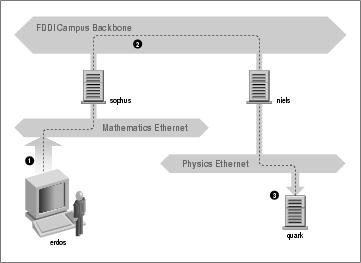
Linux Network Administrators Guide
Terminal Node Controller to convert packets transmitted via an asynchronous serial link into packets
transmitted synchronously. There are a variety of different sorts of interface cards available to support packet
radio operation; these cards are generally referred to as being Z8530 SCC based, and are named after the
most popular type of communications controller used in the designs. Two of the other protocols that are
commonly carried by AX.25 are the NetRom and Rose protocols, which are network layer protocols. Since
these protocols run over AX.25, they have the same hardware requirements. Linux supports a fully featured
implementation of the AX.25, NetRom, and Rose protocols. The AX25−HOWTO is a good source of
information on the Linux implementation of these protocols.
Other types of Internet access involve dialing up a central system over slow but cheap serial lines (telephone,
ISDN, and so on). These require yet another protocol for transmission of packets, such as SLIP or PPP, which
will be described later.
1.2.4. The Internet Protocol
Of course, you wouldn't want your networking to be limited to one Ethernet or one point−to−point data
link. Ideally, you would want to be able to communicate with a host computer regardless of what type of
physical network it is connected to. For example, in larger installations such as Groucho Marx University,
you usually have a number of separate networks that have to be connected in some way. At GMU, the Math
department runs two Ethernets: one with fast machines for professors and graduates, and another with slow
machines for students. Both are linked to the FDDI campus backbone network.
This connection is handled by a dedicated host called a gateway that handles incoming and outgoing
packets by copying them between the two Ethernets and the FDDI fiber optic cable. For example, if you are
at the Math department and want to access quark on the Physics department's LAN from your Linux box, the
networking software will not send packets to quark directly because it is not on the same Ethernet. Therefore,
it has to rely on the gateway to act as a forwarder. The gateway (named sophus) then forwards these packets
to its peer gateway niels at the Physics department, using the backbone network, with niels delivering it to the
destination machine. Data flow between erdos and quark is shown in Figure 1−1.
Figure 1−1. The three steps of sending a datagram from erdos to quark
1.2.4. The Internet Protocol
27
Linux Network Administrators Guide
This scheme of directing data to a remote host is called routing, and packets are often referred to as
datagrams in this context. To facilitate things, datagram exchange is governed by a single protocol that is
independent of the hardware used: IP, or Internet Protocol. In Chapter 2, we will cover IP and the issues of
routing in greater detail.
The main benefit of IP is that it turns physically dissimilar networks into one apparently homogeneous
network. This is called internetworking, and the resulting meta−network is called an internet. Note the
subtle difference here between an internet and the Internet. The latter is the official name of one particular
global internet.
Of course, IP also requires a hardware−independent addressing scheme. This is achieved by assigning each
host a unique 32−bit number called the IP address. An IP address is usually written as four decimal numbers,
one for each 8−bit portion, separated by dots. For example, quark might have an IP address of 0x954C0C04,
which would be written as 149.76.12.4. This format is also called dotted decimal notation and sometimes
dotted quad notation. It is increasingly going under the name IPv4 (for Internet Protocol, Version 4) because
a new standard called IPv6 offers much more flexible addressing, as well as other modern features. It will be
at least a year after the release of this edition before IPv6 is in use.
You will notice that we now have three different types of addresses: first there is the host's name, like
quark, then there are IP addresses, and finally, there are hardware addresses, like the 6−byte Ethernet address.
All these addresses somehow have to match so that when you type rlogin quark, the networking software
can be given quark's IP address; and when IP delivers any data to the Physics department's Ethernet, it
somehow has to find out what Ethernet address corresponds to the IP address.
We will deal with these situations in Chapter 2. For now, it's enough to remember that these steps of finding
addresses are called hostname resolution, for mapping hostnames onto IP addresses, and address resolution,
for mapping the latter to hardware addresses.
1.2.5. IP Over Serial Lines
On serial lines, a de facto standard exists known as SLIP, or Serial Line IP. A modification of SLIP
known as CSLIP, or Compressed SLIP, performs compression of IP headers to make better use of the
relatively low bandwidth provided by most serial links. Another serial protocol is PPP, or the Point−to−Point
Protocol. PPP is more modern than SLIP and includes a number of features that make it more attractive. Its
main advantage over SLIP is that it isn't limited to transporting IP datagrams, but is designed to allow just
about any protocol to be carried across it.
1.2.6. The Transmission Control Protocol
Sending datagrams from one host to another is not the whole story. If you log in to quark, you want to have
a reliable connection between your rlogin process on erdos and the shell process on quark. Thus, the
information sent to and fro must be split up into packets by the sender and reassembled into a character
stream by the receiver. Trivial as it seems, this involves a number of complicated tasks.
A very important thing to know about IP is that, by intent, it is not reliable. Assume that ten people on your
Ethernet started downloading the latest release of Netscape's web browser source code from GMU's FTP
server. The amount of traffic generated might be too much for the gateway to handle, because it's too slow
1.2.5. IP Over Serial Lines
28
Linux Network Administrators Guide
and it's tight on memory. Now if you happen to send a packet to quark, sophus might be out of buffer space
for a moment and therefore unable to forward it. IP solves this problem by simply discarding it. The packet is
irrevocably lost. It is therefore the responsibility of the communicating hosts to check the integrity and
completeness of the data and retransmit it in case of error.
This process is performed by yet another protocol, Transmission Control Protocol (TCP), which builds a
reliable service on top of IP. The essential property of TCP is that it uses IP to give you the illusion of a
simple connection between the two processes on your host and the remote machine, so you don't have to care
about how and along which route your data actually travels. A TCP connection works essentially like a
two−way pipe that both processes may write to and read from. Think of it as a telephone conversation.
TCP identifies the end points of such a connection by the IP addresses of the two hosts involved and the
number of a port on each host. Ports may be viewed as attachment points for network connections. If we are
to strain the telephone example a little more, and you imagine that cities are like hosts, one might compare IP
addresses to area codes (where numbers map to cities), and port numbers to local codes (where numbers map
to individual people's telephones). An individual host may support many different services, each
distinguished by its own port number.
In the rlogin example, the client application (rlogin) opens a port on erdos and connects to port 513 on
quark, to which the rlogind server is known to listen. This action establishes a TCP connection. Using this
connection, rlogind performs the authorization procedure and then spawns the shell. The shell's standard
input and output are redirected to the TCP connection, so that anything you type to rlogin on your machine
will be passed through the TCP stream and be given to the shell as standard input.
1.2.7. The User Datagram Protocol
Of course, TCP isn't the only user protocol in TCP/IP networking. Although suitable for applications like
rlogin, the overhead involved is prohibitive for applications like NFS, which instead uses a sibling protocol
of TCP called UDP, or User Datagram Protocol. Just like TCP, UDP allows an application to contact a
service on a certain port of the remote machine, but it doesn't establish a connection for this. Instead, you use
it to send single packets to the destination servicehence its name.
Assume you want to request a small amount of data from a database server. It takes at least three datagrams
to establish a TCP connection, another three to send and confirm a small amount of data each way, and
another three to close the connection. UDP provides us with a means of using only two datagrams to achieve
almost the same result. UDP is said to be connectionless, and it doesn't require us to establish and close a
session. We simply put our data into a datagram and send it to the server; the server formulates its reply, puts
the data into a datagram addressed back to us, and transmits it back. While this is both faster and more
efficient than TCP for simple transactions, UDP was not designed to deal with datagram loss. It is up to the
application, a name server for example, to take care of this.
1.2.8. More on Ports
Ports may be viewed as attachment points for network connections. If an application wants to offer a
certain service, it attaches itself to a port and waits for clients (this is also called listening on the port). A
client who wants to use this service allocates a port on its local host and connects to the server's port on the
remote host. The same port may be open on many different machines, but on each machine only one process
1.2.7. The User Datagram Protocol
29
Linux Network Administrators Guide
can open a port at any one time.
An important property of ports is that once a connection has been established between the client and the
server, another copy of the server may attach to the server port and listen for more clients. This property
permits, for instance, several concurrent remote logins to the same host, all using the same port 513. TCP is
able to tell these connections from one another because they all come from different ports or hosts. For
example, if you log in twice to quark from erdos, the first rlogin client will use the local port 1023, and the
second one will use port 1022. Both, however, will connect to the same port 513 on quark. The two
connections will be distinguished by use of the port numbers used at erdos.
This example shows the use of ports as rendezvous points, where a client contacts a specific port to obtain a
specific service. In order for a client to know the proper port number, an agreement has to be reached
between the administrators of both systems on the assignment of these numbers. For services that are widely
used, such as rlogin, these numbers have to be administered centrally. This is done by the IETF (Internet
Engineering Task Force), which regularly releases an RFC titled Assigned Numbers (RFC−1700). It
describes, among other things, the port numbers assigned to well−known services. Linux uses a file called
/etc/services that maps service names to numbers.
It is worth noting that although both TCP and UDP connections rely on ports, these numbers do not conflict.
This means that TCP port 513, for example, is different from UDP port 513. In fact, these ports serve as
access points for two different services, namely rlogin (TCP) and rwho (UDP).
1.2.9. The Socket Library
In Unix operating systems, the software performing all the tasks and protocols described above is usually part
of the kernel, and so it is in Linux. The programming interface most common in the Unix world is the
Berkeley Socket Library. Its name derives from a popular analogy that views ports as sockets and connecting
to a port as plugging in. It provides the bind call to specify a remote host, a transport protocol, and a service
that a program can connect or listen to (using connect, listen, and accept). The socket library is
somewhat more general in that it provides not only a class of TCP/IP−based sockets (the AF_INET sockets),
but also a class that handles connections local to the machine (the AF_UNIX class). Some implementations
can also handle other classes, like the XNS (Xerox Networking System) protocol or X.25.
In Linux, the socket library is part of the standard libc C library. It supports the AF_INET and
AF_INET6 sockets for TCP/IP and AF_UNIX for Unix domain sockets. It also supports AF_IPX for
Novell's network protocols, AF_X25 for the X.25 network protocol, AF_ATMPVC and AF_ATMSVC for the
ATM network protocol and AF_AX25, AF_NETROM, and AF_ROSE sockets for Amateur Radio protocol
support. Other protocol families are being developed and will be added in time.
1.2.9. The Socket Library
30
1.3. UUCP Networks
Unix−to−Unix Copy (UUCP) started out as a package of programs that transferred files over serial lines,
scheduled those transfers, and initiated execution of programs on remote sites. It has undergone major
changes since its first implementation in the late seventies, but it is still rather spartan in the services it offers.
Its main application is still in Wide Area Networks, based on periodic dialup telephone links.
UUCP was first developed by Bell Laboratories in 1977 for communication between their Unix development
sites. In mid−1978, this network already connected over 80 sites. It was running email as an application, as
well as remote printing. However, the system's central use was in distributing new software and bug fixes.
Today, UUCP is not confined solely to the Unix environment. There are free and commercial ports available
for a variety of platforms, including AmigaOS, DOS, and Atari's TOS.
One of the main disadvantages of UUCP networks is that they operate in batches. Rather than having a
permanent connection established between hosts, it uses temporary connections. A UUCP host machine
might dial in to another UUCP host only once a day, and then only for a short period of time. While it is
connected, it will transfer all of the news, email, and files that have been queued, and then disconnect. It is
this queuing that limits the sorts of applications that UUCP can be applied to. In the case of email, a user may
prepare an email message and post it. The message will stay queued on the UUCP host machine until it dials
in to another UUCP host to transfer the message. This is fine for network services such as email, but is no use
at all for services such as rlogin.
Despite these limitations, there are still many UUCP networks operating all over the world, run mainly by
hobbyists, which offer private users network access at reasonable prices. The main reason for the longtime
popularity of UUCP was that it was very cheap compared to having your computer directly connected to the
Internet. To make your computer a UUCP node, all you needed was a modem, a working UUCP
implementation, and another UUCP node that was willing to feed you mail and news. Many people were
prepared to provide UUCP feeds to individuals because such connections didn't place much demand on their
existing network.
We cover the configuration of UUCP in a chapter of its own later in the book, but we won't focus on it too
heavily, as it's being replaced rapidly with TCP/IP, now that cheap Internet access has become commonly
available in most parts of the world.
1.3. UUCP Networks
31
1.4. Linux Networking
As it is the result of a concerted effort of programmers around the world, Linux wouldn't have been possible
without the global network. So it's not surprising that in the early stages of development, several people
started to work on providing it with network capabilities. A UUCP implementation was running on Linux
almost from the very beginning, and work on TCP/IP−based networking started around autumn 1992, when
Ross Biro and others created what has now become known as Net−1.
After Ross quit active development in May 1993, Fred van Kempen began to work on a new implementation,
rewriting major parts of the code. This project was known as Net−2. The first public release, Net−2d, was
made in the summer of 1993 (as part of the 0.99.10 kernel), and has since been maintained and expanded by
several people, most notably Alan Cox.[8] Alan's original work was known as Net−2Debugged. After heavy
debugging and numerous improvements to the code, he changed its name to Net−3 after Linux 1.0 was
released. The Net−3 code was further developed for Linux 1.2 and Linux 2.0. The 2.2 and later kernels use
the Net−4 version network support, which remains the standard official offering today.
The Net−4 Linux Network code offers a wide variety of device drivers and advanced features. Standard
Net−4 protocols include SLIP and PPP (for sending network traffic over serial lines), PLIP (for parallel
lines), IPX (for Novell compatible networks, which we'll discuss in Chapter 15), Appletalk (for Apple
networks) and AX.25, NetRom, and Rose (for amateur radio networks). Other standard Net−4 features
include IP firewalling, IP accounting (discussed later in Chapter 9 and Chapter 10), and IP Masquerade
(discussed later in Chapter 11. IP tunnelling in a couple of different flavors and advanced policy routing are
supported. A very large variety of Ethernet devices is supported, in addition to support for some FDDI,
Token Ring, Frame Relay, and ISDN, and ATM cards.
Additionally, there are a number of other features that greatly enhance the flexibility of Linux. These
features include an implementation of the SMB filesystem, which interoperates with applications like
lanmanager and Microsoft Windows, called Samba, written by Andrew Tridgell, and an implementation of
the Novell NCP (NetWare Core Protocol).[9]
1.4.1. Different Streaks of Development
There have been, at various times, varying network development efforts active for Linux.
Fred continued development after Net−2Debugged was made the official network implementation. This
development led to the Net−2e, which featured a much revised design of the networking layer. Fred was
working toward a standardized Device Driver Interface (DDI), but the Net−2e work has ended now.
Yet another implementation of TCP/IP networking came from Matthias Urlichs, who wrote an ISDN driver
for Linux and FreeBSD. For this driver, he integrated some of the BSD networking code in the Linux kernel.
That project, too is no longer being worked on.
There has been a lot of rapid change in the Linux kernel networking implementation, and change is still the
watchword as development continues. Sometimes this means that changes also have to occur in other
software, such as the network configuration tools. While this is no longer as large a problem as it once was,
you may still find that upgrading your kernel to a later version means that you must upgrade your network
configuration tools, too. Fortunately, with the large number of Linux distributions available today, this is a
quite simple task.
1.4. Linux Networking
32
Linux Network Administrators Guide
The Net−4 network implementation is now quite mature and is in use at a very large number of sites around
the world. Much work has been done on improving the performance of the Net−4 implementation, and it now
competes with the best implementations available for the same hardware platforms. Linux is proliferating in
the Internet Service Provider environment, and is often used to build cheap and reliable World Wide Web
servers, mail servers, and news servers for these sorts of organizations. There is now sufficient development
interest in Linux that it is managing to keep abreast of networking technology as it changes, and current
releases of the Linux kernel offer the next generation of the IP protocol, IPv6, as a standard offering.
1.4.2. Where to Get the Code
It seems odd now to remember that in the early days of the Linux network code development, the standard
kernel required a huge patch kit to add the networking support to it. Today, network development occurs as
part of the mainstream Linux kernel development process. The latest stable Linux kernels can be found on
ftp.kernel.org in /pub/linux/kernel/v2.x/, where x is an even number. The latest experimental
Linux kernels can be found on ftp.kernel.org in /pub/linux/kernel/v2.y/, where y is an odd number.
There are Linux kernel source mirrors all over the world. It is now hard to imagine Linux without standard
network support.
1.4.2. Where to Get the Code
33
1.5. Maintaining Your System
Throughout this book, we will mainly deal with installation and configuration issues. Administration is,
however, much more than thatafter setting up a service, you have to keep it running, too. For most services,
only a little attendance will be necessary, while some, like mail and news, require that you perform routine
tasks to keep your system up to date. We will discuss these tasks in later chapters.
The absolute minimum in maintenance is to check system and per−application log files regularly for error
conditions and unusual events. Often, you will want to do this by writing a couple of administrative shell
scripts and periodically running them from cron. The source distributions of some major applications, like
inn or C News, contain such scripts. You only have to tailor them to suit your needs and preferences.
The output from any of your cron jobs should be mailed to an administrative account. By default, many
applications will send error reports, usage statistics, or log file summaries to the root account. This makes
sense only if you log in as root frequently; a much better idea is to forward root's mail to your personal
account by setting up a mail alias as described in Chapter 19 or Chapter 18.
However carefully you have configured your site, Murphy's law guarantees that some problem will surface
eventually. Therefore, maintaining a system also means being available for complaints. Usually, people
expect that the system administrator can at least be reached via email as root, but there are also other
addresses that are commonly used to reach the person responsible for a specific aspect of maintenence. For
instance, complaints about a malfunctioning mail configuration will usually be addressed to postmaster, and
problems with the news system may be reported to newsmaster or usenet. Mail to hostmaster should be
redirected to the person in charge of the host's basic network services, and the DNS name service if you run a
name server.
1.5.1. System Security
Another very important aspect of system administration in a network environment is protecting your
system and users from intruders. Carelessly managed systems offer malicious people many targets. Attacks
range from password guessing to Ethernet snooping, and the damage caused may range from faked mail
messages to data loss or violation of your users' privacy. We will mention some particular problems when
discussing the context in which they may occur and some common defenses against them.
This section will discuss a few examples and basic techniques for dealing with system security. Of course, the
topics covered cannot treat all security issues you may be faced with in detail; they merely serve to illustrate
the problems that may arise. Therefore, reading a good book on security is an absolute must, especially in a
networked system.
System security starts with good system administration. This includes checking the ownership and
permissions of all vital files and directories and monitoring use of privileged accounts. The COPS program,
for instance, will check your file system and common configuration files for unusual permissions or other
anomalies. It is also wise to use a password suite that enforces certain rules on the users' passwords that make
them hard to guess. The shadow password suite, for instance, requires a password to have at least five letters
and to contain both upper− and lowercase numbers, as well as non−alphabetic characters.
When making a service accessible to the network, make sure to give it least privilege; don't permit it to do
things that aren't required for it to work as designed. For example, you should make programs setuid to
1.5. Maintaining Your System
34
Linux Network Administrators Guide
root or some other privileged account only when necessary. Also, if you want to use a service for only a very
limited application, don't hesitate to configure it as restrictively as your special application allows. For
instance, if you want to allow diskless hosts to boot from your machine, you must provide Trivial File
Transfer Protocol (TFTP) so that they can download basic configuration files from the /boot directory.
However, when used unrestrictively, TFTP allows users anywhere in the world to download any
world−readable file from your system. If this is not what you want, restrict TFTP service to the
/boot directory.[10]
You might also want to restrict certain services to users from certain hosts, say from your local network. In
Chapter 12, we introduce tcpd, which does this for a variety of network applications. More sophisticated
methods of restricting access to particular hosts or services will be explored later in Chapter 9.
Another important point is to avoid dangerous software. Of course, any software you use can be dangerous
because software may have bugs that clever people might exploit to gain access to your system. Things like
this happen, and there's no complete protection against it. This problem affects free software and commercial
products alike.[11] However, programs that require special privilege are inherently more dangerous than
others, because any loophole can have drastic consequences.[12] If you install a setuid program for network
purposes, be doubly careful to check the documentation so that you don't create a security breach by accident.
Another source of concern should be programs that enable login or command execution with limited
authentication. The rlogin, rsh, and rexec commands are all very useful, but offer very limited authentication
of the calling party. Authentication is based on trust of the calling host name obtained from a name server
(we'll talk about these later), which can be faked. Today it should be standard practice to disable the
r commands completely and replace them with the ssh suite of tools. The ssh tools use a much more reliable
authentication method and provide other services, such as encryption and compression, as well.
You can never rule out the possibility that your precautions might fail, regardless of how careful you have
been. You should therefore make sure you detect intruders early. Checking the system log files is a good
starting point, but the intruder is probably clever enough to anticipate this action and will delete any obvious
traces he or she left. However, there are tools like tripwire, written by Gene Kim and Gene Spafford, that
allow you to check vital system files to see if their contents or permissions have been changed.
tripwire computes various strong checksums over these files and stores them in a database. During
subsequent runs, the checksums are recomputed and compared to the stored ones to detect any modifications.
1.5. Maintaining Your System
35
Chapter 2. Issues of TCP/IP Networking
In this chapter we turn to the configuration decisions you'll need to make when connecting your Linux
machine to a TCP/IP network, including dealing with IP addresses, hostnames, and routing issues. This
chapter gives you the background you need in order to understand what your setup requires, while the next
chapters cover the tools you will use.
To learn more about TCP/IP and the reasons behind it, refer to the three−volume set Internetworking with
TCP/IP, by Douglas R. Comer (Prentice Hall). For a more detailed guide to managing a TCP/IP network, see
TCP/IP Network Administration by Craig Hunt (O'Reilly).
Chapter 2. Issues of TCP/IP Networking
36
2.1. Networking Interfaces
To hide the diversity of equipment that may be used in a networking environment, TCP/IP defines an abstract
interface through which the hardware is accessed. This interface offers a set of operations that is the same for
all types of hardware and basically deals with sending and receiving packets.
For each peripheral networking device, a corresponding interface has to be present in the kernel. For
example, Ethernet interfaces in Linux are called by such names as eth0 and eth1; PPP (discussed in
Chapter 8) interfaces are named ppp0 and ppp1; and FDDI interfaces are given names like fddi0 and
fddi1. These interface names are used for configuration purposes when you want to specify a particular
physical device in a configuration command, and they have no meaning beyond this use.
Before being used by TCP/IP networking, an interface must be assigned an IP address that serves as its
identification when communicating with the rest of the world. This address is different from the interface
name mentioned previously; if you compare an interface to a door, the address is like the nameplate pinned
on it.
Other device parameters may be set, like the maximum size of datagrams that can be processed by a
particular piece of hardware, which is referred to as Maximum Transfer Unit (MTU). Other attributes will be
introduced later. Fortunately, most attributes have sensible defaults.
2.1. Networking Interfaces
37
2.2. IP Addresses
As mentioned in Chapter 1, the IP networking protocol understands addresses as 32−bit numbers. Each
machine must be assigned a number unique to the networking environment.[13] If you are running a local
network that does not have TCP/IP traffic with other networks, you may assign these numbers according to
your personal preferences. There are some IP address ranges that have been reserved for such private
networks. These ranges are listed in Table 2−1. However, for sites on the Internet, numbers are assigned by a
central authority, the Network Information Center (NIC).[14]
IP addresses are split up into four eight−bit numbers called octets for readability. For example,
quark.physics.groucho.edu has an IP address of 0x954C0C04, which is written as 149.76.12.4. This format is
often referred to as dotted quad notation.
Another reason for this notation is that IP addresses are split into a network number, which is contained in the
leading octets, and a host number, which is the remainder. When applying to the NIC for IP addresses, you
are not assigned an address for each single host you plan to use. Instead, you are given a network number and
allowed to assign all valid IP addresses within this range to hosts on your network according to your
preferences.
The size of the host part depends on the size of the network. To accommodate different needs, several classes
of networks, defining different places to split IP addresses, have been defined. The class networks are
described here:
Class A
Class A comprises networks 1.0.0.0 through 127.0.0.0. The network number is contained in the first
octet. This class provides for a 24−bit host part, allowing roughly 1.6 million hosts per network.
Class B
Class B contains networks 128.0.0.0 through 191.255.0.0; the network number is in the first two
octets. This class allows for 16,320 nets with 65,024 hosts each.
Class C
Class C networks range from 192.0.0.0 through 223.255.255.0, with the network number contained
in the first three octets. This class allows for nearly 2 million networks with up to 254 hosts.
Classes D, E, and F
Addresses falling into the range of 224.0.0.0 through 254.0.0.0 are either experimental or are
reserved for special purpose use and don't specify any network. IP Multicast, which is a service that
allows material to be transmitted to many points on an internet at one time, has been assigned
addresses from within this range.
If we go back to the example in Chapter 1, we find that 149.76.12.4, the address of quark, refers to host
12.4 on the class B network 149.76.0.0.
You may have noticed that not all possible values in the previous list were allowed for each octet in the host
part. This is because octets 0 and 255 are reserved for special purposes. An address where all host part bits
2.2. IP Addresses
38
Linux Network Administrators Guide
are 0 refers to the network, and an address where all bits of the host part are 1 is called a broadcast address.
This refers to all hosts on the specified network simultaneously. Thus, 149.76.255.255 is not a valid host
address, but refers to all hosts on network 149.76.0.0.
A number of network addresses are reserved for special purposes. 0.0.0.0 and 127.0.0.0 are two such
addresses. The first is called the default route, and the latter is the loopback address. The default route has to
do with the way the IP routes datagrams.
Network 127.0.0.0 is reserved for IP traffic local to your host. Usually, address 127.0.0.1 will be assigned to
a special interface on your host, the loopback interface, which acts like a closed circuit. Any IP packet
handed to this interface from TCP or UDP will be returned to them as if it had just arrived from some
network. This allows you to develop and test networking software without ever using a real network. The
loopback network also allows you to use networking software on a standalone host. This may not be as
uncommon as it sounds; for instance, many UUCP sites don't have IP connectivity at all, but still want to run
the INN news system. For proper operation on Linux, INN requires the loopback interface.
Some address ranges from each of the network classes have been set aside and designated reserved or
private address ranges. These addresses are reserved for use by private networks and are not routed on the
Internet. They are commonly used by organizations building their own intranet, but even small networks
often find them useful. The reserved network addresses appear in Table 2−1.
Table 2−1. IP Address Ranges Reserved for Private Use
Class Networks
A
10.0.0.0 through 10.255.255.255
B
172.16.0.0 through 172.31.0.0
C
192.168.0.0 through 192.168.255.0
2.2. IP Addresses
39
2.3. Address Resolution
Now that you've seen how IP addresses are composed, you may be wondering how they are used on an
Ethernet or Token Ring network to address different hosts. After all, these protocols have their own addresses
to identify hosts that have absolutely nothing in common with an IP address, don't they? Right.
A mechanism is needed to map IP addresses onto the addresses of the underlying network. The mechanism
used is the Address Resolution Protocol (ARP). In fact, ARP is not confined to Ethernet or Token Ring, but is
used on other types of networks, such as the amateur radio AX.25 protocol. The idea underlying ARP is
exactly what most people do when they have to find Mr. X in a throng of 150 people: the person who wants
him calls out loudly enough that everyone in the room can hear them, expecting him to respond if he is there.
When he responds, we know which person he is.
When ARP wants to find the Ethernet address corresponding to a given IP address, it uses an Ethernet feature
called broadcasting, in which a datagram is addressed to all stations on the network simultaneously. The
broadcast datagram sent by ARP contains a query for the IP address. Each receiving host compares this query
to its own IP address and if it matches, returns an ARP reply to the inquiring host. The inquiring host can
now extract the sender's Ethernet address from the reply.
You may wonder how a host can reach an Internet address that may be on a different network halfway around
the world. The answer to this question involves routing, namely finding the physical location of a host in a
network. We will discuss this issue further in the next section.
Let's talk a little more about ARP. Once a host has discovered an Ethernet address, it stores it in its ARP
cache so that it doesn't have to query for it again the next time it wants to send a datagram to the host in
question. However, it is unwise to keep this information forever; the remote host's Ethernet card may be
replaced because of technical problems, so the ARP entry becomes invalid. Therefore, entries in the ARP
cache are discarded after some time to force another query for the IP address.
Sometimes it is also necessary to find the IP address associated with a given Ethernet address. This happens
when a diskless machine wants to boot from a server on the network, which is a common situation on Local
Area Networks. A diskless client, however, has virtually no information about itselfexcept for its Ethernet
address! So it broadcasts a message containing a request asking a boot server to provide it with an IP address.
There's another protocol for this situation named Reverse Address Resolution Protocol (RARP). Along with
the BOOTP protocol, it serves to define a procedure for bootstrapping diskless clients over the network.
2.3. Address Resolution
40
2.4. IP Routing
We now take up the question of finding the host that datagrams go to based on the IP address. Different parts
of the address are handled in different ways; it is your job to set up the files that indicate how to treat each
part.
2.4.1. IP Networks
When you write a letter to someone, you usually put a complete address on the envelope specifying the
country, state, and Zip Code. After you put it in the mailbox, the post office will deliver it to its destination: it
will be sent to the country indicated, where the national service will dispatch it to the proper state and region.
The advantage of this hierarchical scheme is obvious: wherever you post the letter, the local postmaster
knows roughly which direction to forward the letter, but the postmaster doesn't care which way the letter will
travel once it reaches its country of destination.
IP networks are structured similarly. The whole Internet consists of a number of proper networks, called
autonomous systems. Each system performs routing between its member hosts internally so that the task of
delivering a datagram is reduced to finding a path to the destination host's network. As soon as the datagram
is handed to any host on that particular network, further processing is done exclusively by the network itself.
2.4.2. Subnetworks
This structure is reflected by splitting IP addresses into a host and network part, as explained previously. By
default, the destination network is derived from the network part of the IP address. Thus, hosts with identical
IP network numbers should be found within the same network.[15]
It makes sense to offer a similar scheme inside the network, too, since it may consist of a collection of
hundreds of smaller networks, with the smallest units being physical networks like Ethernets. Therefore, IP
allows you to subdivide an IP network into several subnets.
A subnet takes responsibility for delivering datagrams to a certain range of IP addresses. It is an extension
of the concept of splitting bit fields, as in the A, B, and C classes. However, the network part is now extended
to include some bits from the host part. The number of bits that are interpreted as the subnet number is given
by the so−called subnet mask, or netmask. This is a 32−bit number too, which specifies the bit mask for the
network part of the IP address.
The campus network of Groucho Marx University is an example of such a network. It has a class B network
number of 149.76.0.0, and its netmask is therefore 255.255.0.0.
Internally, GMU's campus network consists of several smaller networks, such various departments' LANs. So
the range of IP addresses is broken up into 254 subnets, 149.76.1.0 through 149.76.254.0. For example, the
department of Theoretical Physics has been assigned 149.76.12.0. The campus backbone is a network in its
own right, and is given 149.76.1.0. These subnets share the same IP network number, while the third octet is
used to distinguish between them. They will thus use a subnet mask of 255.255.255.0.
Figure 2−1 shows how 149.76.12.4, the address of quark, is interpreted differently when the address is taken
as an ordinary class B network and when used with subnetting.
2.4. IP Routing
41
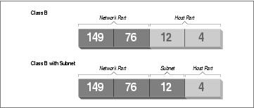
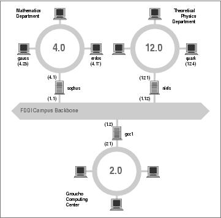
Linux Network Administrators Guide
Figure 2−1. Subnetting a class B network
It is worth noting that subnetting (the technique of generating subnets) is only an internal division of the
network. Subnets are generated by the network owner (or the administrators). Frequently, subnets are created
to reflect existing boundaries, be they physical (between two Ethernets), administrative (between two
departments), or geographical (between two locations), and authority over each subnet is delegated to some
contact person. However, this structure affects only the network's internal behavior, and is completely
invisible to the outside world.
2.4.3. Gateways
Subnetting is not only a benefit to the organization; it is frequently a natural consequence of hardware
boundaries. The viewpoint of a host on a given physical network, such as an Ethernet, is a very limited one: it
can only talk to the host of the network it is on. All other hosts can be accessed only through special−purpose
machines called gateways. A gateway is a host that is connected to two or more physical networks
simultaneously and is configured to switch packets between them.
Figure 2−2 shows part of the network topology at Groucho Marx University (GMU). Hosts that are on two
subnets at the same time are shown with both addresses.
Figure 2−2. A part of the net topology at Groucho Marx University
2.4.3. Gateways
42
Linux Network Administrators Guide
Different physical networks have to belong to different IP networks for IP to be able to recognize if a host is
on a local network. For example, the network number 149.76.4.0 is reserved for hosts on the mathematics
LAN. When sending a datagram to quark, the network software on erdos immediately sees from the IP
address 149.76.12.4 that the destination host is on a different physical network, and therefore can be reached
only through a gateway (sophus by default).
sophus itself is connected to two distinct subnets: the Mathematics department and the campus backbone. It
accesses each through a different interface, eth0 and fddi0, respectively. Now, what IP address do we
assign it? Should we give it one on subnet 149.76.1.0, or on 149.76.4.0?
The answer is: both. sophus has been assigned the address 149.76.1.1 for use on the 149.76.1.0 network
and address 149.76.4.1 for use on the 149.76.4.0 network. A gateway must be assigned one IP address for
each network it belongs to. These addressesalong with the corresponding netmaskare tied to the interface
through which the subnet is accessed. Thus, the interface and address mapping for sophus would look like
this:
Interface Address
Netmask
eth0
149.76.4.1 255.255.255.0
fddi0
149.76.1.1 255.255.255.0
lo
127.0.0.1
255.0.0.0
The last entry describes the loopback interface lo, which we talked about earlier.
Generally, you can ignore the subtle difference between attaching an address to a host or its interface. For
hosts that are on one network only, like erdos, you would generally refer to the host as having this−and−that
IP address, although strictly speaking, it's the Ethernet interface that has this IP address. The distinction is
really important only when you refer to a gateway.
2.4.4. The Routing Table
We now focus our attention on how IP chooses a gateway to use to deliver a datagram to a remote network.
We have seen that erdos, when given a datagram for quark, checks the destination address and finds that it is
not on the local network. erdos therefore sends the datagram to the default gateway sophus, which is now
faced with the same task. sophus recognizes that quark is not on any of the networks it is connected to
directly, so it has to find yet another gateway to forward it through. The correct choice would be niels, the
gateway to the Physics department. sophus thus needs information to associate a destination network with a
suitable gateway.
IP uses a table for this task that associates networks with the gateways by which they may be reached. A
catch−all entry (the default route) must generally be supplied too; this is the gateway associated with network
0.0.0.0. All destination addresses match this route, since none of the 32 bits are required to match, and
therefore packets to an unknown network are sent through the default route. On sophus, the table might look
like this:
2.4.4. The Routing Table
43
Linux Network Administrators Guide
Network
Netmask
Gateway
Interface
149.76.1.0 255.255.255.0 −
fddi0
149.76.2.0 255.255.255.0 149.76.1.2 fddi0
149.76.3.0 255.255.255.0 149.76.1.3 fddi0
149.76.4.0 255.255.255.0 −
eth0
149.76.5.0 255.255.255.0 149.76.1.5 fddi0
&
&
&
&
0.0.0.0
0.0.0.0
149.76.1.2 fddi0
If you need to use a route to a network that sophus is directly connected to, you don't need a gateway; the
gateway column here contains a hyphen.
The process for identifying whether a particular destination address matches a route is a mathematical
operation. The process is quite simple, but it requires an understanding of binary arithmetic and logic: A route
matches a destination if the network address logically ANDed with the netmask precisely equals the
destination address logically ANDed with the netmask.
Translation: a route matches if the number of bits of the network address specified by the netmask (starting
from the left−most bit, the high order bit of byte one of the address) match that same number of bits in the
destination address.
When the IP implementation is searching for the best route to a destination, it may find a number of routing
entries that match the target address. For example, we know that the default route matches every destination,
but datagrams destined for locally attached networks will match their local route, too. How does IP know
which route to use? It is here that the netmask plays an important role. While both routes match the
destination, one of the routes has a larger netmask than the other. We previously mentioned that the netmask
was used to break up our address space into smaller networks. The larger a netmask is, the more specifically a
target address is matched; when routing datagrams, we should always choose the route that has the largest
netmask. The default route has a netmask of zero bits, and in the configuration presented above, the locally
attached networks have a 24−bit netmask. If a datagram matches a locally attached network, it will be routed
to the appropriate device in preference to following the default route because the local network route matches
with a greater number of bits. The only datagrams that will be routed via the default route are those that don't
match any other route.
You can build routing tables by a variety of means. For small LANs, it is usually most efficient to construct
them by hand and feed them to IP using the route command at boot time (see Chapter 5). For larger
networks, they are built and adjusted at runtime by routing daemons; these daemons run on central hosts of
the network and exchange routing information to compute optimal routes between the member networks.
Depending on the size of the network, you'll need to use different routing protocols. For routing inside
autonomous systems (such as the Groucho Marx campus), the internal routing protocols are used. The most
prominent one of these is the Routing Information Protocol (RIP), which is implemented by the BSD
routed daemon. For routing between autonomous systems, external routing protocols like External Gateway
Protocol (EGP) or Border Gateway Protocol (BGP) have to be used; these protocols, including RIP, have
been implemented in the University of Cornell's gated daemon.
2.4.4. The Routing Table
44
Linux Network Administrators Guide
2.4.5. Metric Values
We depend on dynamic routing to choose the best route to a destination host or network based on the number
of hops. Hops are the gateways a datagram has to pass before reaching a host or network. The shorter a route
is, the better RIP rates it. Very long routes with 16 or more hops are regarded as unusable and are discarded.
RIP manages routing information internal to your local network, but you have to run gated on all hosts. At
boot time, gated checks for all active network interfaces. If there is more than one active interface (not
counting the loopback interface), it assumes the host is switching packets between several networks and will
actively exchange and broadcast routing information. Otherwise, it will only passively receive RIP updates
and update the local routing table.
When broadcasting information from the local routing table, gated computes the length of the route from the
so−called metric value associated with the routing table entry. This metric value is set by the system
administrator when configuring the route, and should reflect the actual route cost.[16] Therefore, the metric
of a route to a subnet that the host is directly connected to should always be zero, while a route going through
two gateways should have a metric of two. You don't have to bother with metrics if you don't use RIP or
gated.
2.4.5. Metric Values
45
2.5. The Internet Control Message Protocol
IP has a companion protocol that we haven't talked about yet. This is the Internet Control Message
Protocol (ICMP), used by the kernel networking code to communicate error messages to other hosts. For
instance, assume that you are on erdos again and want to telnet to port 12345 on quark, but there's no process
listening on that port. When the first TCP packet for this port arrives on quark, the networking layer will
recognize this arrival and immediately return an ICMP message to erdos stating Port Unreachable.
The ICMP protocol provides several different messages, many of which deal with error conditions.
However, there is one very interesting message called the Redirect message. It is generated by the routing
module when it detects that another host is using it as a gateway, even though a much shorter route exists. For
example, after booting, the routing table of sophus may be incomplete. It might contain the routes to the
Mathematics network, to the FDDI backbone, and the default route pointing at the Groucho Computing
Center's gateway (gcc1). Thus, packets for quark would be sent to gcc1 rather than to niels, the gateway to
the Physics department. When receiving such a datagram, gcc1 will notice that this is a poor choice of route
and will forward the packet to niels, meanwhile returning an ICMP Redirect message to sophus telling it of
the superior route.
This seems to be a very clever way to avoid manually setting up any but the most basic routes. However, be
warned that relying on dynamic routing schemes, be it RIP or ICMP Redirect messages, is not always a good
idea. ICMP Redirect and RIP offer you little or no choice in verifying that some routing information is indeed
authentic. This situation allows malicious good−for−nothings to disrupt your entire network traffic, or even
worse. Consequently, the Linux networking code treats Network Redirect messages as if they were Host
Redirects. This minimizes the damage of an attack by restricting it to just one host, rather than the whole
network. On the flip side, it means that a little more traffic is generated in the event of a legitimate condition,
as each host causes the generation of an ICMP Redirect message. It is generally considered bad practice to
rely on ICMP redirects for anything these days.
2.5. The Internet Control Message Protocol
46
2.6. Resolving Host Names
As described previously, addressing in TCP/IP networking, at least for IP Version 4, revolves around 32−bit
numbers. However, you will have a hard time remembering more than a few of these numbers. Therefore,
hosts are generally known by ordinary names such as gauss or strange. It becomes the application's duty to
find the IP address corresponding to this name. This process is called hostname resolution.
When an application needs to find the IP address of a given host, it relies on the library functions
gethostbyname(3) and gethostbyaddr(3). Traditionally, these and a number of related procedures
were grouped in a separate library called the resolverlibrary; on Linux, these functions are part of the
standard libc. Colloquially, this collection of functions is therefore referred to as the resolver. Resolver
name configuration is detailed in Chapter 6.
On a small network like an Ethernet or even a cluster of Ethernets, it is not very difficult to maintain tables
mapping hostnames to addresses. This information is usually kept in a file named /etc/hosts. When
adding or removing hosts, or reassigning addresses, all you have to do is update the hosts file on all hosts.
Obviously, this will become burdensome with networks that comprise more than a handful of machines.
One solution to this problem is the Network Information System (NIS), developed by Sun Microsystems,
colloquially called YP or Yellow Pages. NIS stores the hosts file (and other information) in a database on a
master host from which clients may retrieve it as needed. Still, this approach is suitable only for
medium−sized networks such as LANs, because it involves maintaining the entire hosts database centrally
and distributing it to all servers. NIS installation and configuration is discussed in detail in Chapter 13.
On the Internet, address information was initially stored in a single HOSTS.TXT database, too. This file was
maintained at the Network Information Center (NIC), and had to be downloaded and installed by all
participating sites. When the network grew, several problems with this scheme arose. Besides the
administrative overhead involved in installing HOSTS.TXT regularly, the load on the servers that distributed
it became too high. Even more severe, all names had to be registered with the NIC, which made sure that no
name was issued twice.
This is why a new name resolution scheme was adopted in 1994: the Domain Name System. DNS was
designed by Paul Mockapetris and addresses both problems simultaneously. We discuss the Domain Name
System in detail in Chapter 6.
2.6. Resolving Host Names
47
Chapter 3. Configuringthe NetworkingHardware
We've been talking quite a bit about network interfaces and general TCP/IP issues, but we haven't really
covered what happens when the networking code in the kernel accesses a piece of hardware. In order to
describe this accurately, we have to talk a little about the concept of interfaces and drivers.
First, of course, there's the hardware itself, for example an Ethernet, FDDI or Token Ring card: this is a slice
of Epoxy cluttered with lots of tiny chips with strange numbers on them, sitting in a slot of your PC. This is
what we generally call a physical device.
For you to use a network card, special functions have to be present in your Linux kernel that understand the
particular way this device is accessed. The software that implements these functions is called a device driver.
Linux has device drivers for many different types of network interface cards: ISA, PCI, MCA, EISA, Parallel
port, PCMCIA, and more recently, USB.
But what do we mean when we say a driver handles a device? Let's consider an Ethernet card. The driver
has to be able to communicate with the peripheral's on−card logic somehow: it has to send commands and
data to the card, while the card should deliver any data received to the driver.
In IBM−style personal computers, this communication takes place through a cluster of I/O addresses that are
mapped to registers on the card and/or through shared or direct memory transfers. All commands and data the
kernel sends to the card have to go to these addresses. I/O and memory addresses are generally described by
providing the starting or base address. Typical base addresses for ISA bus Ethernet cards are 0x280 or
0x300. PCI bus network cards generally have their I/O address automatically assigned.
Usually you don't have to worry about any hardware issues such as the base address because the kernel makes
an attempt at boot time to detect a card's location. This is called auto probing, which means that the kernel
reads several memory or I/O locations and compares the data it reads there with what it would expect to see if
a certain network card were installed at that location. However, there may be network cards it cannot detect
automatically; this is sometimes the case with cheap network cards that are not−quite clones of standard cards
from other manufacturers. Also, the kernel will normally attempt to detect only one network device when
booting. If you're using more than one card, you have to tell the kernel about the other cards explicitly.
Another parameter that you might have to tell the kernel about is the interrupt request line. Hardware
components usually interrupt the kernel when they need to be taken care offor example, when data has
arrived or a special condition occurs. In an ISA bus PC, interrupts may occur on one of 15 interrupt channels
numbered 0, 1, and 3 through 15. The interrupt number assigned to a hardware component is called its
interrupt request number (IRQ).[17]
As described in Chapter 2, the kernel accesses a piece of network hardware through a software construct
called an interface. Interfaces offer an abstract set of functions that are the same across all types of hardware,
such as sending or receiving a datagram.
Interfaces are identified by means of names. In many other Unix−like operating systems, the network
interface is implemented as a special device file in the /dev/ directory. If you type the ls −las
/dev/ command, you will see what these device files look like. In the file permissions (second) column you
will see that device files begin with a letter rather than the hyphen seen for normal files. This character
indicates the device type. The most common device types are b, which indicates the device is a block device
and handles whole blocks of data with each read and write, and c, which indicates the device is a
character device and handles data one character at a time. Where you would normally see the file length in
Chapter 3. Configuringthe NetworkingHardware
48
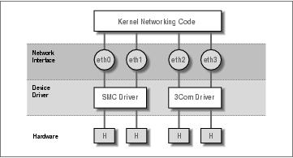
Linux Network Administrators Guide
the ls output, you instead see two numbers, called the major and minor device numbers. These numbers
indicate the actual device with which the device file is associated.
Each device driver registers a unique major number with the kernel. Each instance of that device registers a
unique minor number for that major device. The tty interfaces,/dev/tty*, are a character mode device
indicated by the c, and each have a major number of 4, but /dev/tty1 has a minor number of 1, and
/dev/tty2 has a minor number of 2. Device files are very useful for many types of devices, but can be
clumsy to use when trying to find an unused device to open.
Linux interface names are defined internally in the kernel and are not device files in the /dev directory.
Some typical device names are listed later in Section 3.2. The assignment of interfaces to devices usually
depends on the order in which devices are configured. For instance, the first Ethernet card installed will
become eth0, and the next will be eth1. SLIP interfaces are handled differently from others because they
are assigned dynamically. Whenever a SLIP connection is established, an interface is assigned to the serial
port.
Figure 3−1 illustrates the relationship between the hardware, device drivers, and interfaces.
Figure 3−1. The relationship between drivers, interfaces, and hardware
When booting, the kernel displays the devices it detects and the interfaces it installs. The following is an
excerpt from typical boot messages:
.
. This processor honors the WP bit even when in supervisor mode./
Good.
Swansea University Computer Society NET3.035 for Linux 2.0
NET3: Unix domain sockets 0.13 for Linux NET3.035.
Swansea University Computer Society TCP/IP for NET3.034
IP Protocols: IGMP,ICMP, UDP, TCP
Swansea University Computer Society IPX 0.34 for NET3.035
IPX Portions Copyright (c) 1995 Caldera, Inc.
Serial driver version 4.13 with no serial options enabled
tty00 at 0x03f8 (irq = 4) is a 16550A
tty01 at 0x02f8 (irq = 3) is a 16550A
CSLIP: code copyright 1989 Regents of the University of California
PPP: Version 2.2.0 (dynamic channel allocation)
PPP Dynamic channel allocation code copyright 1995 Caldera, Inc.
PPP line discipline registered.
eth0: 3c509 at 0x300 tag 1, 10baseT port, address 00 a0 24 0e e4 e0,/
IRQ 10.
Chapter 3. Configuringthe NetworkingHardware
49
Linux Network Administrators Guide
3c509.c:1.12 6/4/97 becker@cesdis.gsfc.nasa.gov
Linux Version 2.0.32 (root@perf) (gcc Version 2.7.2.1)
#1 Tue Oct 21 15:30:44 EST 1997
.
.
This example shows that the kernel has been compiled with TCP/IP enabled, and it includes drivers for SLIP,
CSLIP, and PPP. The third line from the bottom says that a 3C509 Ethernet card was detected and installed
as interface eth0. If you have some other type of network cardperhaps a D−Link pocket adaptor, for
examplethe kernel will usually print a line starting with its device namedl0 in the D−Link
examplefollowed by the type of card detected. If you have a network card installed but don't see any similar
message, the kernel is unable to detect your card properly. This situation will be discussed later in the section
Ethernet Autoprobing.
Chapter 3. Configuringthe NetworkingHardware
50
3.1. Kernel Configuration
Most Linux distributions are supplied with boot disks that work for all common types of PC hardware.
Generally, the supplied kernel is highly modularized and includes nearly every possible driver. This is a great
idea for boot disks, but is probably not what you'd want for long−term use. There isn't much point in having
drivers cluttering up your disk that you will never use. Therefore, you will generally roll your own kernel and
include only those drivers you actually need or want; that way you save a little disk space and reduce the time
it takes to compile a new kernel.
In any case, when running a Linux system, you should be familiar with building a kernel. Think of it as a
right of passage, an affirmation of the one thing that makes free software as powerful as it isyou have the
source. It isn't a case of, I have to compile a kernel, rather it's a case of, I can compile a kernel. The
basics of compiling a Linux kernel are explained in Matt Welsh's book, Running Linux (O'Reilly). Therefore,
we will discuss only configuration options that affect networking in this section.
One important point that does bear repeating here is the way the kernel version numbering scheme works.
Linux kernels are numbered in the following format: 2.2.14. The first digit indicates the major version
number. This digit changes when there are large and significant changes to the kernel design. For example,
the kernel changed from major 1 to 2 when the kernel obtained support for machines other than Intel
machines. The second number is the minor version number. In many respects, this number is the most
important number to look at. The Linux development community has adopted a standard at which even minor
version numbers indicate production, or stable, kernels and odd minor version numbers indicate development,
or unstable, kernels. The stable kernels are what you should use on a machine that is important to you, as they
have been more thoroughly tested. The development kernels are what you should use if you are interested in
experimenting with the newest features of Linux, but they may have problems that haven't yet been found and
fixed. The third number is simply incremented for each release of a minor version.[18]
When running make menuconfig, you are presented with a text−based menu that offers lists of configuration
questions, such as whether you want kernel math emulation. One of these queries asks you whether you want
TCP/IP networking support. You must answer this with y to get a kernel capable of networking.
3.1.1. Kernel Options in Linux 2.0 and Higher
After the general option section is complete, the configuration will go on to ask whether you want to include
support for various features, such as SCSI drivers or sound cards. The prompt will indicate what options are
available. You can press ? to obtain a description of what the option is actually offering. You'll always have
the option of yes (y) to statically include the component in the kernel, or no (n) to exclude the component
completely. You'll also see the module (m) option for those components that may be compiled as a run−time
loadable module. Modules need to be loaded before they can be used, and are useful for drivers of
components that you use infrequently.
The subsequent list of questions deal with networking support. The exact set of configuration options is in
constant flux due to ongoing development. A typical list of options offered by most kernel versions around
2.0 and 2.1 looks like this:
*
* Network device support
*
Network device support (CONFIG_NETDEVICES) [Y/n/?]
3.1. Kernel Configuration
51
Linux Network Administrators Guide
You must answer this question with y if you want to use any type of networking devices, whether they are
Ethernet, SLIP, PPP, or whatever. When you answer the question with y, support for Ethernet−type devices
is enabled automatically. You must answer additional questions if you want to enable support for other types
of network drivers:
PLIP (parallel port) support (CONFIG_PLIP) [N/y/m/?] y
PPP (point−to−point) support (CONFIG_PPP) [N/y/m/?] y
*
* CCP compressors for PPP are only built as modules.
*
SLIP (serial line) support (CONFIG_SLIP) [N/y/m/?] m
CSLIP compressed headers (CONFIG_SLIP_COMPRESSED) [N/y/?] (NEW) y
Keepalive and linefill (CONFIG_SLIP_SMART) [N/y/?] (NEW) y
Six bit SLIP encapsulation (CONFIG_SLIP_MODE_SLIP6) [N/y/?] (NEW) y
These questions concern the various link layer protocols that Linux supports. Both PPP and SLIP allow you
to transport IP datagrams across serial lines. PPP is actually a suite of protocols used to send network traffic
across serial lines. Some of the protocols that form PPP manage the way that you authenticate yourself to the
dial−in server, while others manage the way certain protocols are carried across the linkPPP is not limited to
carrying TCP/IP datagrams; it may also carry other protocol such as IPX.
If you answer y or m to SLIP support, you will be prompted to answer the three questions that appear below
it. The compressed header option provides support for CSLIP, a technique that compresses TCP/IP headers to
as little as three bytes. Note that this kernel option does not turn on CSLIP automatically; it merely provides
the necessary kernel functions for it. The Keepalive and linefill option causes the SLIP support to
periodically generate activity on the SLIP line to avoid it being dropped by an inactivity timer. The Six
bit SLIP encapsulation option allows you to run SLIP over lines and circuits that are not capable of
transmitting the whole 8−bit data set cleanly. This is similar to the uuencoding or binhex technique used to
send binary files by electronic mail.
PLIP provides a way to send IP datagrams across a parallel port connection. It is mostly used to communicate
with PCs running DOS. On typical PC hardware, PLIP can be faster than PPP or SLIP, but it requires much
more CPU overhead to perform, so while the transfer rate might be good, other tasks on the machine may be
slow.
The following questions address network cards from various vendors. As more drivers are being developed,
you are likely to see questions added to this section. If you want to build a kernel you can use on a number of
different machines, or if your machine has more than one type of network card installed, you can enable more
than one driver:
.
.
Ethernet (10 or 100Mbit) (CONFIG_NET_ETHERNET) [Y/n/?]
3COM cards (CONFIG_NET_VENDOR_3COM) [Y/n/?]
3c501 support (CONFIG_EL1) [N/y/m/?]
3c503 support (CONFIG_EL2) [N/y/m/?]
3c509/3c579 support (CONFIG_EL3) [Y/m/n/?]
3c590/3c900 series (592/595/597/900/905) "Vortex/Boomerang" support/
(CONFIG_VORTEX) [N/y/m/?]
AMD LANCE and PCnet (AT1500 and NE2100) support (CONFIG_LANCE) [N/y/?]
AMD PCInet32 (VLB and PCI) support (CONFIG_LANCE32) [N/y/?] (NEW)
Western Digital/SMC cards (CONFIG_NET_VENDOR_SMC) [N/y/?]
WD80*3 support (CONFIG_WD80x3) [N/y/m/?] (NEW)
SMC Ultra support (CONFIG_ULTRA) [N/y/m/?] (NEW)
SMC Ultra32 support (CONFIG_ULTRA32) [N/y/m/?] (NEW)
3.1. Kernel Configuration
52
Linux Network Administrators Guide
SMC 9194 support (CONFIG_SMC9194) [N/y/m/?] (NEW)
Other ISA cards (CONFIG_NET_ISA) [N/y/?]
Cabletron E21xx support (CONFIG_E2100) [N/y/m/?] (NEW)
DEPCA, DE10x, DE200, DE201, DE202, DE422 support (CONFIG_DEPCA) [N/y/m/?]/
(NEW)
EtherWORKS 3 (DE203, DE204, DE205) support (CONFIG_EWRK3) [N/y/m/?] (NEW)
EtherExpress 16 support (CONFIG_EEXPRESS) [N/y/m/?] (NEW)
HP PCLAN+ (27247B and 27252A) support (CONFIG_HPLAN_PLUS) [N/y/m/?] (NEW)
HP PCLAN (27245 and other 27xxx series) support (CONFIG_HPLAN) [N/y/m/?]/
(NEW)
HP 10/100VG PCLAN (ISA, EISA, PCI) support (CONFIG_HP100) [N/y/m/?] (NEW)
NE2000/NE1000 support (CONFIG_NE2000) [N/y/m/?] (NEW)
SK_G16 support (CONFIG_SK_G16) [N/y/?] (NEW)
EISA, VLB, PCI and on card controllers (CONFIG_NET_EISA) [N/y/?]
Apricot Xen−II on card ethernet (CONFIG_APRICOT) [N/y/m/?] (NEW)
Intel EtherExpress/Pro 100B support (CONFIG_EEXPRESS_PRO100B) [N/y/m/?]/
(NEW)
DE425, DE434, DE435, DE450, DE500 support (CONFIG_DE4X5) [N/y/m/?] (NEW)
DECchip Tulip (dc21x4x) PCI support (CONFIG_DEC_ELCP) [N/y/m/?] (NEW)
Digi Intl. RightSwitch SE−X support (CONFIG_DGRS) [N/y/m/?] (NEW)
Pocket and portable adaptors (CONFIG_NET_POCKET) [N/y/?]
AT−LAN−TEC/RealTek pocket adaptor support (CONFIG_ATP) [N/y/?] (NEW)
D−Link DE600 pocket adaptor support (CONFIG_DE600) [N/y/m/?] (NEW)
D−Link DE620 pocket adaptor support (CONFIG_DE620) [N/y/m/?] (NEW)
Token Ring driver support (CONFIG_TR) [N/y/?]
IBM Tropic chipset based adaptor support (CONFIG_IBMTR) [N/y/m/?] (NEW)
FDDI driver support (CONFIG_FDDI) [N/y/?]
Digital DEFEA and DEFPA adapter support (CONFIG_DEFXX) [N/y/?] (NEW)
ARCnet support (CONFIG_ARCNET) [N/y/m/?]
Enable arc0e (ARCnet "Ether−Encap" packet format) (CONFIG_ARCNET_ETH)/
[N/y/?] (NEW)
Enable arc0s (ARCnet RFC1051 packet format) (CONFIG_ARCNET_1051)/
[N/y/?] (NEW)
.
.
Finally, in the file system section, the configuration script will ask you whether you want support for NFS,
the networking file system. NFS lets you export file systems to several hosts, which makes the files appear as
if they were on an ordinary hard disk attached to the host:
NFS file system support (CONFIG_NFS_FS) [y]
We describe NFS in detail in Chapter 14.
3.1.2. Kernel Networking Options in Linux 2.0.0 and Higher
Linux 2.0.0 marked a significant change in Linux Networking. Many features were made a standard part of
the Kernel, such as support for IPX. A number of options were also added and made configurable. Many of
these options are used only in very special circumstances and we won't cover them in detail. The Networking
HOWTO probably addresses what is not covered here. We'll list a number of useful options in this section,
and explain when you'd want to use each one:
Basics
To use TCP/IP networking, you must answer this question with y. If you answer with n, however,
you will still be able to compile the kernel with IPX support:
3.1.2. Kernel Networking Options in Linux 2.0.0 and Higher
53
Linux Network Administrators Guide
Networking options −−−>
[*] TCP/IP networking
Gateways
You have to enable this option if your system acts as a gateway between two networks or between
a LAN and a SLIP link, etc. It doesn't hurt to enable this by default, but you may want to disable it to
configure a host as a so−called firewall. Firewalls are hosts that are connected to two or more
networks, but don't route traffic between them. They're commonly used to provide users with Internet
access at minimal risk to the internal network. Users are allowed to log in to the firewall and use
Internet services, but the company's machines are protected from outside attacks because incoming
connections can't cross the firewall (firewalls are covered in detail in Chapter 9):
[*] IP: forwarding/gatewaying
Virtual hosting
These options together allow to you configure more than one IP address onto an interface. This is
sometimes useful if you want to do virtual hosting, through which a single machine can be
configured to look and act as though it were actually many separate machines, each with its own
network personality. We'll talk more about IP aliasing in a moment:
[*] Network aliasing
<*> IP: aliasing support
Accounting
This option enables you to collect data on the volume of IP traffic leaving and arriving at your
machine (we cover this is detail in Chapter 10):
[*] IP: accounting
PC hug
This option works around an incompatibility with some versions of PC/TCP, a commercial TCP/IP
implementation for DOS−based PCs. If you enable this option, you will still be able to communicate
with normal Unix machines, but performance may be hurt over slow links:
−−− (it is safe to leave these untouched)
[*] IP: PC/TCP compatibility mode
Diskless booting
This function enables Reverse Address Resolution Protocol (RARP). RARP is used by diskless
clients and X terminals to request their IP address when booting. You should enable RARP if you
plan to serve this sort of client. A small program called rarp, included with the standard networking
utilities, is used to add entries to the kernel RARP table:
<*> IP: Reverse ARP
MTU
3.1.2. Kernel Networking Options in Linux 2.0.0 and Higher
54
Linux Network Administrators Guide
When sending data over TCP, the kernel has to break up the stream into blocks of data to pass to
IP. The size of the block is called the Maximum Transmission Unit, or MTU. For hosts that can be
reached over a local network such as an Ethernet, it is typical to use an MTU as large as the
maximum length of an Ethernet packet¡,500 bytes. When routing IP over a Wide Area Network
like the Internet, it is preferable to use smaller−sized datagrams to ensure that they don't need to be
further broken down along the route through a process called IP fragmentation.[19] The kernel is
able to automatically determine the smallest MTU of an IP route and to automatically configure a
TCP connection to use it. This behavior is on by default. If you answer y to this option this feature
will be disabled.
If you do want to use smaller packet sizes for data sent to specific hosts (because, for example, the
data goes through a SLIP link), you can do so using the mss option of the route command, which is
briefly discussed at the end of this chapter:
[ ] IP: Disable Path MTU Discovery (normally enabled)
Security feature
The IP protocol supports a feature called Source Routing. Source routing allows you to specify the
route a datagram should follow by coding the route into the datagram itself. This was once probably
useful before routing protocols such as RIP and OSPF became commonplace. But today it's
considered a security threat because it can provide clever attackers with a way of circumventing
certain types of firewall protection by bypassing the routing table of a router. You would normally
want to filter out source routed datagrams, so this option is normally enabled:
[*] IP: Drop source routed frames
Novell support
This option enables support for IPX, the transport protocol Novell Networking uses. Linux will
function quite happily as an IPX router and this support is useful in environments where you have
Novell fileservers. The NCP filesystem also requires IPX support enabled in your kernel; if you wish
to attach to and mount your Novell filesystems you must have this option enabled (we'll dicuss IPX
and the NCP filesystem in Chapter 15):
<*> The IPX protocol
Amateur radio
These three options select support for the three Amateur Radio protocols supported by Linux:
AX.25, NetRom and Rose (we don't describe them in this book, but they are covered in detail in the
AX25 HOWTO):
<*> Amateur Radio AX.25 Level 2
<*> Amateur Radio NET/ROM
<*> Amateur Radio X.25 PLP (Rose)
Linux supports another driver type: the dummy driver. The following question appears toward the
start of the device−driver section:
<*> Dummy net driver support
3.1.2. Kernel Networking Options in Linux 2.0.0 and Higher
55
Linux Network Administrators Guide
The dummy driver doesn't really do much, but it is quite useful on standalone or PPP/SLIP hosts. It is
basically a masqueraded loopback interface. On hosts that offer PPP/SLIP but have no other network
interface, you want to have an interface that bears your IP address all the time. This is discussed in a
little more detail in Section 5.7.7" in Chapter 5. Note that today you can achieve the same result by
using the IP alias feature and configuring your IP address as an alias on the loopback interface.
3.1.2. Kernel Networking Options in Linux 2.0.0 and Higher
56
3.2. A Tour of Linux Network Devices
The Linux kernel supports a number of hardware drivers for various types of equipment. This section gives a
short overview of the driver families available and the interface names they use.
There is a number of standard names for interfaces in Linux, which are listed here. Most drivers support more
than one interface, in which case the interfaces are numbered, as in eth0 and eth1:
lo
This is the local loopback interface. It is used for testing purposes, as well as a couple of network
applications. It works like a closed circuit in that any datagram written to it will immediately be
returned to the host's networking layer. There's always one loopback device present in the kernel, and
there's little sense in having more.
eth0, eth1, &
These are the Ethernet card interfaces. They are used for most Ethernet cards, including many of the
parallel port Ethernet cards.
tr0, tr1, &
These are the Token Ring card interfaces. They are used for most Token Ring cards, including
non−IBM manufactured cards.
sl0, sl1, &
These are the SLIP interfaces. SLIP interfaces are associated with serial lines in the order in which
they are allocated for SLIP.
ppp0, ppp1, &
These are the PPP interfaces. Just like SLIP interfaces, a PPP interface is associated with a serial line
once it is converted to PPP mode.
plip0, plip1, &
These are the PLIP interfaces. PLIP transports IP datagrams over parallel lines. The interfaces are
allocated by the PLIP driver at system boot time and are mapped onto parallel ports. In the
2.0.x kernels there is a direct relationship between the device name and the I/O port of the parallel
port, but in later kernels the device names are allocated sequentially, just as for SLIP and PPP devices.
ax0, ax1, &
These are the AX.25 interfaces. AX.25 is the primary protocol used by amateur radio operators.
AX.25 interfaces are allocated and mapped in a similar fashion to SLIP devices.
There are many other types of interfaces available for other network drivers. We've listed only the most
common ones.
3.2. A Tour of Linux Network Devices
57
Linux Network Administrators Guide
During the next few sections, we will discuss the details of using the drivers described previously. The
Networking HOWTO provides details on how to configure most of the others, and the AX25 HOWTO
explains how to configure the Amateur Radio network devices.
3.2. A Tour of Linux Network Devices
58
3.3. Ethernet Installation
The current Linux network code supports a large variety of Ethernet cards. Most drivers were written by
Donald Becker, who authored a family of drivers for cards based on the National Semiconductor 8390 chip;
these have become known as the Becker Series Drivers. Many other developers have contributed drivers, and
today there are few common Ethernet cards that aren't supported by Linux. The list of supported Ethernet
cards is growing all the time, so if your card isn't supported yet, chances are it will be soon.
Sometime earlier in Linux's history we would have attempted to list all supported Ethernet cards, but that
would now take too much time and space. Fortunately, Paul Gortmaker maintains the Ethernet HOWTO,
which lists each of the supported cards and provides useful information about getting each of them running
under Linux.[20] It is posted monthly to the comp.os.linux.answers newsgroup, and is also available on any
of the Linux Documentation Project mirror sites.
Even if you are confident you know how to install a particular type of Ethernet card in your machine, it is
often worthwhile taking a look at what the Ethernet HOWTO has to say about it. You will find information
that extends beyond simple configuration issues. For example, it could save you a lot of headaches to know
the behavior of some DMA−based Ethernet cards that use the same DMA channel as the Adaptec 1542 SCSI
controller by default. Unless you move one of them to a different DMA channel, you will wind up with the
Ethernet card writing packet data to arbitrary locations on your hard disk.
To use any of the supported Ethernet cards with Linux, you may use a precompiled kernel from one of the
major Linux distributions. These generally have modules available for all of the supported drivers, and the
installation process usually allows you to select which drivers you want loaded. In the long term, however,
it's better to build your own kernel and compile only those drivers you actually need; this saves disk space
and memory.
3.3.1. Ethernet Autoprobing
Many of the Linux Ethernet drivers are smart enough to know how to search for the location of your Ethernet
card. This saves you having to tell the kernel where it is manually. The Ethernet HOWTO lists whether a
particular driver uses autoprobing and in which order it searches the I/O address for the card.
There are three limitations to the autoprobing code. First, it may not recognize all cards properly. This is
especially true for some of the cheaper clones of common cards. Second, the kernel won't autoprobe for more
than one card unless specifically instructed. This was a conscious design decision, as it is assumed you will
want to have control over which card is assigned to which interface. The best way to do this reliably is to
manually configure the Ethernet cards in your machine. Third, the driver may not probe at the address that
your card is configured for. Generally speaking, the drivers will autoprobe at the addresses that the particular
device is capable of being configured for, but sometimes certain addresses are ignored to avoid hardware
conflicts with other types of cards that commonly use that same address.
PCI network cards should be reliably detected. But if you are using more than one card, or if the autoprobe
should fail to detect your card, you have a way to explicitly tell the kernel about the card's base address and
name.
At boot time you can supply arguments and information to the kernel that any of the kernel components
may read. This mechanism allows you to pass information to the kernel that Ethernet drivers can use to locate
3.3. Ethernet Installation
59
Linux Network Administrators Guide
your Ethernet hardware without making the driver probe.
If you use lilo to boot your system, you can pass parameters to the kernel by specifying them through the
append option in the lilo.conf file. To inform the kernel about an Ethernet device, you can pass the
following parameters:
ether=irq,base_addr,[param1,][param2,]name
The first four parameters are numeric, while the last is the device name. The irq, base_addr, and
name parameters are required, but the two param parameters are optional. Any of the numeric values may
be set to zero, which causes the kernel to determine the value by probing.
The first parameter sets the IRQ assigned to the device. By default, the kernel will try to autodetect the
device's IRQ channel. The 3c503 driver, for example, has a special feature that selects a free IRQ from the
list 5, 9, 3, 4 and configures the card to use this line. The base_addr parameter gives the I/O base address
of the card; a value of zero tells the kernel to probe the addresses listed above.
Different drivers use the next two parameters differently. For shared−memory cards, such as the WD80x3,
they specify starting and ending addresses of the shared memory area. Other cards commonly use param1 to
set the level at which debugging information is displayed. Values of 1 through 7 denote increasing levels of
verbosity, while 8 turns them off altogether; 0 denotes the default. The 3c503 driver uses param2 to choose
between the internal transceiver (default) or an external transceiver (a value of 1). The former uses the card's
BNC connector; the latter uses its AUI port. The param arguments need not be included at all if you don't
have anything special to configure.
The first non−numeric argument is interpreted by the kernel as the device name. You must specify a device
name for each Ethernet card you describe.
If you have two Ethernet cards, you can have Linux autodetect one card and pass the second card's
parameters with lilo, but you'll probably want to manually configure both cards. If you decide to have the
kernel probe for one and manually configure the second, you must make sure the kernel doesn't accidentally
find the second card first, or else the other one won't be registered at all. You do this by passing lilo a
reserve option, which explicitly tells the kernel to avoid probing the I/O space taken up by the second card.
For instance, to make Linux install a second Ethernet card at 0x300 as eth1, you would pass the following
parameters to the kernel:
reserve=0x300,32 ether=0,0x300,eth1
The reserve option makes sure no driver accesses the second card's I/O space when probing for some device.
You may also use the kernel parameters to override autoprobing for eth0:
reserve=0x340,32 ether=0,0x340,eth0
You can turn off autoprobing altogether. You might do this, for example, to stop a kernel probing for an
Ethernet card you might have temporarily removed. Disabling autoprobing is as simple as specifying a
base_addr argument of −1:
ether=0,−1,eth0
To supply these parameters to the kernel at boot time, you enter the parameters at the lilo "boot:" prompt. To
have lilo give you the "boot:" at the prompt, you must press any one of the Control, Alt or Shift keys while
3.3. Ethernet Installation
60
Linux Network Administrators Guide
lilo is booting. If you press the Tab key at the prompt, you will be presented with a list of kernels that you
may boot. To boot a kernel with parameters supplied, enter the name of the kernel you wish to boot, followed
by a space, then followed by the parameters you wish to supply. When you press the Enter key, lilo will load
that kernel and boot it with the parameters you've supplied.
To make this change occur automatically on each reboot, enter the parameters into the
/etc/lilo.conf using the append= keyword. An example might look like this:
boot=/dev/hda
root=/dev/hda2
install=/boot/boot.b
map=/boot/map
vga=normal
delay=20
append="ether=10,300,eth0"
image=/boot/vmlinuz−2.2.14
label=2.2.14
read−only
After you've edited lilo.conf, you must rerun the lilo command to activate the change.
3.3. Ethernet Installation
61
3.4. The PLIP Driver
Parallel Line IP (PLIP) is a cheap way to network when you want to connect only two machines. It uses a
parallel port and a special cable, achieving speeds of 10 kilobytes per second to 20 kilobytes per second.
PLIP was originally developed by Crynwr, Inc. Its design at the time was rather ingenious (or, if you prefer, a
hack), because the original parallel ports on IBM PCs were designed to spend their time being unidirectional
printer ports; the eight data lines could be used only to send data from the PC to the peripheral device, but not
the other way around.[21] The Cyrnwr PLIP design worked around this limitation by using the port's five
status lines for input, which limited it to transferring all data as nibbles (half bytes) only, but allowed for
bidirectional transfer. This mode of operation was called PLIP mode 0. Today, the parallel ports supplied
on PC hardware cater to full bidirectional 8−bit data transfer, and PLIP has been extended to accomodate this
with the addition of PLIP mode 1.
Linux kernels up to and including Version 2.0 support PLIP mode 0 only, and an enhanced parallel port
driver exists as a patch against the 2.0 kernel and as a standard part of the 2.2 kernel code to provide PLIP
mode 1 operation, too. [22] Unlike earlier versions of the PLIP code, the driver now attempts to be
compatible with the PLIP implementations from Crynwr, as well as the PLIP driver in NCSA telnet.[23] To
connect two machines using PLIP, you need a special cable sold at some shops as a Null Printer or Turbo
Laplink cable. You can, however, make one yourself fairly easily; Appendix B shows you how.
The PLIP driver for Linux is the work of almost countless persons. It is currently maintained by Niibe
Yutaka.[24] If compiled into the kernel, it sets up a network interface for each of the possible printer ports,
with plip0 corresponding to parallel port lp0, plip1 corresponding to lp1, etc. The mapping of
interfaces to ports differs in the 2.0 kernels and the 2.2 kernels. In the 2.0 kernels, the mapping was hardwired
in the drivers/net/Spacd.c file in the kernel source. The default mappings in this file are:
Interface I/O Port IRQ
plip0
0x3BC
7
plip1
0x378
7
plip2
0x278
5
If you configured your printer port in a different way, you must change these values in
drivers/net/Space.c in the Linux kernel source and build a new kernel.
In the 2.2 kernels, the PLIP driver uses the parport parallel port sharing driver developed by Philip
Blundell.[25] The new driver allocates the PLIP network device names serially, just as for the Ethernet or
PPP drivers, so the first PLIP device created is plip0, the second is plip1, and so on. The physical
parallel port hardware is also allocated serially. By default, the parallel port driver will attempt to detect your
parallel port hardware with an autoprobe routine, recording the physical device information in the order
found. It is better practice to explicitly tell the kernel the physical I/O parameters. You can do this by
supplying arguments to the parport_pc.o module as you load it, or if you have compiled the driver into
your kernel, using lilo to supply arguments to the kernel at boot time. The IRQ setting of any device may be
changed later by writing the new IRQ value to the related /proc/parport/*/irq file.
Configuring the physical I/O parameters in a 2.2 kernel when loading the module is straightforward. For
instance, to tell the driver that you have two PC−style parallel ports at I/O addresses 0x278 and 0c378 and
3.4. The PLIP Driver
62
Linux Network Administrators Guide
IRQs 5 and 7, respectively, you would load the module with the following arguments:
modprobe parport_ pc io=0x278,0x378 irq=5,7
The corresponding arguments to pass to the kernel for a compiled−in driver are:
parport=0x278,5 parport=0x378,7
You would use the lilo append keyword to have these arguments passed to the kernel automatically at boot
time.
When the PLIP driver is initialized, either at boot time if it is built−in, or when the plip.o module is
loaded, each of the parallel ports will have a plip network device associated with it. plip0 will be
assigned to the first parallel port device, plip1 the second, and so on. You can manually override this
automatic assignment using another set of kernel arguments. For instance, to assign parport0 to network
device plip0, and parport1 to network device plip1, you would use kernel arguments of:
plip=parport1 plip=parport0
This mapping does not mean, however, that you cannot use these parallel ports for printing or other purposes.
The physical parallel port devices are used by the PLIP driver only when the corresponding interface is
configured up.
3.4. The PLIP Driver
63
3.5. The PPP and SLIP Drivers
Point−to−Point Protocol (PPP) and Serial Line IP (SLIP) are widely used protocols for carrying IP packets
over a serial link. A number of institutions offer dialup PPP and SLIP access to machines that are on the
Internet, thus providing IP connectivity to private persons (something that's otherwise hardly affordable).
No hardware modifications are necessary to run PPP or SLIP; you can use any serial port. Since serial port
configuration is not specific to TCP/IP networking, we have devoted a separate chapter to this. Please refer to
Chapter 4, for more information. We cover PPP in detail in Chapter 8, and SLIP in Chapter 7.
3.5. The PPP and SLIP Drivers
64
3.6. Other Network Types
Most other network types are configured similarly to Ethernet. The arguments passed to the loadable
modules will be different and some drivers may not support more than one card, but just about everything
else is the same. Documentation for these cards is generally available in the
/usr/src/linux/Documentation/networking/ directory of the Linux kernel source.
3.6. Other Network Types
65
Chapter 4. Configuring the Serial Hardware
The Internet is growing at an incredible rate. Much of this growth is attributed to Internet users who can't
afford high−speed permanent network connections and who use protocols such as SLIP, PPP, or UUCP to
dial in to a network provider to retrieve their daily dose of email and news.
This chapter is intended to help all people who rely on modems to maintain their link to the outside world.
We won't cover the mechanics of how to configure your modem (the manual that came with it will tell you
more about it than we can), but we will cover most of the Linux−specific aspects of managing devices that
use serial ports. Topics include serial communications software, creating the serial device files, serial
hardware, and configuring serial devices using the setserial and stty commands. Many other related topics
are covered in the Serial HOWTO by David Lawyer.[26]
Chapter 4. Configuring the Serial Hardware
66
4.1. Communications Software for Modem Links
There are a number of communications packages available for Linux. Many of these packages are terminal
programs, which allow a user to dial in to another computer as if she were sitting in front of a simple
terminal. The traditional terminal program for Unix−like environments is kermit. It is, however, fairly
ancient now, and would probably be considered difficult to use. There are more comfortable programs
available that support features, like telephone−dialing dictionaries, script languages to automate dialing and
logging in to remote computer systems, and a variety of file exchange protocols. One of these programs is
minicom, which was modeled after some of the most popular DOS terminal programs. X11 users are
accommodated, too. seyon is a fully featured X11−based communications program.
Terminal programs aren't the only type of serial communication programs available. Other programs let you
connect to a host and download news and email in a single bundle, to read and reply later at your leisure. This
can save a lot of time, and is especially useful if you are unfortunate enough to live in an area where your
local calls are time−charged. All of the reading and replying time can be spent offline, and when you are
ready, you can redial and upload your responses in a single bundle. This all consumes a bit more hard disk
because all of the messages have to be stored to your disk before you can read them, but this could be a
reasonable trade−off at today's hard drive prices.
UUCP epitomizes this communication software style. It is a program suite that copies files from one host to
another and executes programs on a remote host. It is frequently used to transport mail or news in private
networks. Ian Taylor's UUCP package, which also runs under Linux, is described in detail in Chapter 16.
Other noninteractive communications software is used throughout networks such as Fidonet. Fidonet
application ports like ifmail are also available, although we expect that not many people still use them.
PPP and SLIP are in between, allowing both interactive and noninteractive use. Many people use PPP or
SLIP to dial in to their campus network or other Internet Service Provider to run FTP and read web pages.
PPP and SLIP are also, however, commonly used over permanent or semipermanent connections for
LAN−to−LAN coupling, although this is really only interesting with ISDN or other high−speed network
connections.
4.1. Communications Software for Modem Links
67
4.2. Introduction to Serial Devices
The Unix kernel provides devices for accessing serial hardware, typically called tty devices (pronounced as it
is spelled: T−T−Y). This is an abbreviation for Teletype device, which used to be one of the major
manufacturers of terminal devices in the early days of Unix. The term is used now for any character−based
data terminal. Throughout this chapter, we use the term to refer exclusively to the Linux device files rather
than the physical terminal.
Linux provides three classes of tty devices: serial devices, virtual terminals (all of which you can access in
turn by pressing Alt−F1 through Alt−Fnn on the local console), and pseudo−terminals (similar to a two−way
pipe, used by applications such as X11). The former were called tty devices because the original
character−based terminals were connected to the Unix machine by a serial cable or telephone line and
modem. The latter two were named after the tty device because they were created to behave in a similar
fashion from the programmer's perspective.
SLIP and PPP are most commonly implemented in the kernel. The kernel doesn't really treat the tty device
as a network device that you can manipulate like an Ethernet device, using commands such as ifconfig.
However, it does treat tty devices as places where network devices can be bound. To do this, the kernel
changes what is called the line discipline of the tty device. Both SLIP and PPP are line disciplines that
may be enabled on tty devices. The general idea is that the serial driver handles data given to it differently,
depending on the line discipline it is configured for. In its default line discipline, the driver simply transmits
each character it is given in turn. When the SLIP or PPP line discipline is selected, the driver instead reads a
block of data, wraps a special header around it that allows the remote end to identify that block of data in a
stream, and transmits the new data block. It isn't too important to understand this yet; we'll cover both SLIP
and PPP in later chapters, and it all happens automatically for you anyway.
4.2. Introduction to Serial Devices
68
4.3. Accessing Serial Devices
Like all devices in a Unix system, serial ports are accessed through device special files, located in the
/dev directory. There are two varieties of device files related to serial drivers, and there is one device file of
each type for each port. The device will behave slightly differently, depending on which of its device files we
open. We'll cover the differences because it will help you understand some of the configurations and advice
that you might see relating to serial devices, but in practice you need to use only one of these. At some point
in the future, one of them may even disappear completely.
The most important of the two classes of serial device has a major number of 4, and its device special files
are named ttyS0, ttyS1, etc. The second variety has a major number of 5, and was designed for use when
dialing out (calling out) through a port; its device special files are called cua0, cua1, etc. In the Unix world,
counting generally starts at zero, while laypeople tend to start at one. This creates a small amount of
confusion for people because COM1: is represented by /dev/ttyS0, COM2: by /dev/ttyS1, etc.
Anyone familiar with IBM PC−style hardware knows that COM3: and greater were never really standardized
anyway.
The cua, or callout, devices were created to solve the problem of avoiding conflicts on serial devices for
modems that have to support both incoming and outgoing connections. Unfortunately, they've created their
own problems and are now likely to be discontinued. Let's briefly look at the problem.
Linux, like Unix, allows a device, or any other file, to be opened by more than one process simultaneously.
Unfortunately, this is rarely useful with tty devices, as the two processes will almost certainly interfere with
each other. Luckily, a mechanism was devised to allow a process to check if a tty device had already been
opened by another device before opening it. The mechanism uses what are called lock files. The idea was that
when a process wanted to open a tty device, it would check for the existence of a file in a special location,
named similarly to the device it intends to open. If the file does not exist, the process creates it and opens the
tty device. If the file does exist, the process assumes another process already has the tty device open and takes
appropriate action. One last clever trick to make the lock file management system work was writing the
process ID (pid) of the process that had created the lock file into the lock file itself; we'll talk more about that
in a moment.
The lock file mechanism works perfectly well in circumstances in which you have a defined location for the
lock files and all programs know where to find them. Alas, this wasn't always the case for Linux. It wasn't
until the Linux Filesystem Standard defined a standard location for lock files when tty lock files began to
work correctly. At one time there were at least four, and possibly more locations chosen by software
developers to store lock files: /usr/spool/locks/, /var/spool/locks/, /var/lock/, and
/usr/lock/. Confusion caused chaos. Programs were opening lock files in different locations that were
meant to control a single tty device; it was as if lock files weren't being used at all.
The cua devices were created to provide a solution to this problem. Rather than relying on the use of lock
files to prevent clashes between programs wanting to use the serial devices, it was decided that the kernel
could provide a simple means of arbitrating who should be given access. If the ttyS device were already
opened, an attempt to open the cua would result in an error that a program could interpret to mean the device
was already being used. If the cua device were already open and an attempt was made to open the ttyS, the
request would block; that is, it would be put on hold and wait until the cua device was closed by the other
process. This worked quite well if you had a single modem that you had configured for dial−in access and
you occasionally wanted to dial out on the same device. But it did not work very well in environments where
you had multiple programs wanting to call out on the same device. The only way to solve the contention
problem was to use lock files! Back to square one.
4.3. Accessing Serial Devices
69
Linux Network Administrators Guide
Suffice it to say that the Linux Filesystem Standard came to the rescue and now mandates that lock files be
stored in the /var/lock directory, and that by convention, the lock file name for the ttyS1 device, for
instance, is LCK..ttyS1. The cua lock files should also go in this directory, but use of cua devices is now
discouraged.
The cua devices will probably still be around for some time to provide a period of backward compatibility,
but in time they will be retired. If you are wondering what to use, stick to the ttyS device and make sure
that your system is Linux FSSTND compliant, or at the very least that all programs using the serial devices
agree on where the lock files are located. Most software dealing with serial tty devices provides a
compile−time option to specify the location of the lock files. More often than not, this will appear as a
variable called something like LOCKDIR in the Makefile or in a configuration header file. If you're
compiling the software yourself, it is best to change this to agree with the FSSTND−specified location. If
you're using a precompiled binary and you're not sure where the program will write its lock files, you can use
the following command to gain a hint:
strings binaryfile | grep lock
If the location found does not agree with the rest of your system, you can try creating a symbolic link from
the lock directory that the foreign executable wants to use back to /var/lock/. This is ugly, but it will
work.
4.3.1. The Serial Device Special Files
Minor numbers are identical for both types of serial devices. If you have your modem on one of the ports
COM1: through COM4:, its minor number will be the COM port number plus 63. If you are using special
serial hardware, such as a high−performance multiple port serial controller, you will probably need to create
special device files for it; it probably won't use the standard device driver. The Serial−HOWTO should be
able to assist you in finding the appropriate details.
Assume your modem is on COM2:. Its minor number will be 65, and its major number will be 4 for normal
use. There should be a device called ttyS1 that has these numbers. List the serial ttys in the
/dev/ directory. The fifth and sixth columns show the major and minor numbers, respectively:
$ ls −l /dev/ttyS*
0 crw−rw−−−− 1 uucp dialout 4, 64 Oct 13 1997 /dev/ttyS0
0 crw−rw−−−− 1 uucp dialout 4, 65 Jan 26 21:55 /dev/ttyS1
0 crw−rw−−−− 1 uucp dialout 4, 66 Oct 13 1997 /dev/ttyS2
0 crw−rw−−−− 1 uucp dialout 4, 67 Oct 13 1997 /dev/ttyS3
If there is no device with major number 4 and minor number 65, you will have to create one. Become the
superuser and type:
# mknod −m 666 /dev/ttyS1 c 4 65
# chown uucp.dialout /dev/ttyS1
The various Linux distributions use slightly differing strategies for who should own the serial devices.
Sometimes they will be owned by root, and other times they will be owned by another user, such as uucp in
our example. Modern distributions have a group specifically for dial−out devices, and any users who are
allowed to use them are added to this group.
4.3.1. The Serial Device Special Files
70
Linux Network Administrators Guide
Some people suggest making /dev/modem a symbolic link to your modem device so that casual users
don't have to remember the somewhat unintuitive ttyS1. However, you cannot use modem in one program
and the real device file name in another. Their lock files would have different names and the locking
mechanism wouldn't work.
4.3.1. The Serial Device Special Files
71
4.4. Serial Hardware
RS−232 is currently the most common standard for serial communications in the PC world. It uses a number
of circuits for transmitting single bits, as well as for synchronization. Additional lines may be used for
signaling the presence of a carrier (used by modems) and for handshaking. Linux supports a wide variety of
serial cards that use the RS−232 standard.
Hardware handshake is optional, but very useful. It allows either of the two stations to signal whether it is
ready to receive more data, or if the other station should pause until the receiver is done processing the
incoming data. The lines used for this are called Clear to Send (CTS) and Ready to Send (RTS),
respectively, which explains the colloquial name for hardware handshake: RTS/CTS. The other type of
handshake you might be familiar with is called XON/XOFF handshaking. XON/XOFF uses two
nominated characters, conventionally Ctrl−S and Ctrl−Q, to signal to the remote end that it should stop and
start transmitting data, respectively. While this method is simple to implement and okay for use by dumb
terminals, it causes great confusion when you are dealing with binary data, as you may want to transmit those
characters as part of your data stream, and not have them interpreted as flow control characters. It is also
somewhat slower to take effect than hardware handshake. Hardware handshake is clean, fast, and
recommended in preference to XON/XOFF when you have a choice.
In the original IBM PC, the RS−232 interface was driven by a UART chip called the 8250. PCs around the
time of the 486 used a newer version of the UART called the 16450. It was slightly faster than the 8250.
Nearly all Pentium−based machines have been supplied with an even newer version of the UART called the
16550. Some brands (most notably internal modems equipped with the Rockwell chip set) use completely
different chips that emulate the behavior of the 16550 and can be treated similarly. Linux supports all of these
in its standard serial port driver.[27]
The 16550 was a significant improvement over the 8250 and the 16450 because it offered a 16−byte FIFO
buffer. The 16550 is actually a family of UART devices, comprising the 16550, the 16550A, and the
16550AFN (later renamed PC16550DN). The differences relate to whether the FIFO actually works; the
16550AFN is the one that is sure to work. There was also an NS16550, but its FIFO never really worked
either.
The 8250 and 16450 UARTs had a simple 1−byte buffer. This means that a 16450 generates an interrupt for
every character transmitted or received. Each interrupt takes a short period of time to service, and this small
delay limits 16450s to a reliable maximum bit speed of about 9,600 bps in a typical ISA bus machine.
In the default configuration, the kernel checks the four standard serial ports, COM1: through COM4:. The
kernel is also able to automatically detect what UART is used for each of the standard serial ports, and will
make use of the enhanced FIFO buffer of the 16550, if it is available.
4.4. Serial Hardware
72
4.5. Using the Configuration Utilities
Now let's spend some time looking at the two most useful serial device configuration utilities: setserial and
stty.
4.5.1. The setserial Command
The kernel will make its best effort to correctly determine how your serial hardware is configured, but the
variations on serial device configuration makes this determination difficult to achieve 100 percent reliably in
practice. A good example of where this is a problem is the internal modems we talked about earlier. The
UART they use has a 16−byte FIFO buffer, but it looks like a 16450 UART to the kernel device driver:
unless we specifically tell the driver that this port is a 16550 device, the kernel will not make use of the
extended buffer. Yet another example is that of the dumb 4−port cards that allow sharing of a single IRQ
among a number of serial devices. We may have to specifically tell the kernel which IRQ port it's supposed to
use, and that IRQs may be shared.
setserial was created to configure the serial driver at runtime. The setserial command is most commonly
executed at boot time from a script called 0setserial on some distributions, and rc.serial on others.
This script is charged with the responsibility of initializing the serial driver to accommodate any nonstandard
or unusual serial hardware in the machine.
The general syntax for the setserial command is:
setserial device [parameters]
in which the device is one of the serial devices, such as ttyS0.
The setserial command has a large number of parameters. The most common of these are described in Table
4−1. For information on the remainder of the parameters, you should refer to the setserial manual page.
Table 4−1. setserial Command−Line Parameters
Parameter
Description
port port_number
Specify the I/O port address of the serial device. Port numbers should be specified
in hexadecimal notation, e.g., 0x2f8.
irq num
Specify the interrupt request line the serial device is using.
uart uart_type
Specify the UART type of the serial device. Common values are 16450, 16550,
etc. Setting this value to none will disable this serial device.
fourport
Specifying this parameter instructs the kernel serial driver that this port is one port
of an AST Fourport card.
spd_hi
4.5. Using the Configuration Utilities
73
Linux Network Administrators Guide
Program the UART to use a speed of 57.6 kbps when a process requests 38.4 kbps.
spd_vhi
Program the UART to use a speed of 115 kbps when a process requests 38.4 kbps.
spd_normal
Program the UART to use the default speed of 38.4 kbps when requested. This
parameter is used to reverse the effect of a spd_hi or spd_vhi performed on the
specified serial device.
auto_irq
This parameter will cause the kernel to attempt to automatically determine the IRQ
of the specified device. This attempt may not be completely reliable, so it is
probably better to think of this as a request for the kernel to guess the IRQ. If you
know the IRQ of the device, you should specify that it use the irq parameter
instead.
autoconfig
This parameter must be specified in conjunction with the port parameter. When
this parameter is supplied, setserial instructs the kernel to attempt to automatically
determine the UART type located at the supplied port address. If the
auto_irq parameter is also supplied, the kernel attempts to automatically
determine the IRQ, too.
skip_test
This parameter instructs the kernel not to bother performing the UART type test
during auto−configuration. This is necessary when the UART is incorrectly
detected by the kernel.
A typical and simple rc file to configure your serial ports at boot time might look something like that shown
in Example 4−1. Most Linux distributions will include something slightly more sophisticated than this one.
Example 4−1. Example rc.serial setserial Commands
# /etc/rc.serial − serial line configuration script.
#
# Configure serial devices
/sbin/setserial /dev/ttyS0 auto_irq skip_test autoconfig
/sbin/setserial /dev/ttyS1 auto_irq skip_test autoconfig
/sbin/setserial /dev/ttyS2 auto_irq skip_test autoconfig
/sbin/setserial /dev/ttyS3 auto_irq skip_test autoconfig
#
# Display serial device configuration
/sbin/setserial −bg /dev/ttyS*
The −bg /dev/ttyS* argument in the last command will print a neatly formatted summary of the
hardware configuration of all active serial devices. The output will look like that shown in Example 4−2.
Example 4−2. Output of setserial −bg /dev/ttyS Command
/dev/ttyS0 at 0x03f8 (irq = 4) is a 16550A
/dev/ttyS1 at 0x02f8 (irq = 3) is a 16550A
4.5. Using the Configuration Utilities
74
Linux Network Administrators Guide
4.5.2. The stty Command
The name stty probably means set tty, but the stty command can also be used to display a terminal's
configuration. Perhaps even more so than setserial, the stty command provides a bewildering number of
characteristics you can configure. We'll cover the most important of these in a moment. You can find the rest
described in the stty manual page.
The stty command is most commonly used to configure terminal parameters, such as whether characters will
be echoed or what key should generate a break signal. We explained earlier that serial devices are tty devices
and the stty command is therefore equally applicable to them.
One of the more important uses of the stty for serial devices is to enable hardware handshaking on the device.
We talked briefly about hardware handshaking earlier. The default configuration for serial devices is for
hardware handshaking to be disabled. This setting allows three wire serial cables to work; they don't
support the necessary signals for hardware handshaking, and if it were enabled by default, they'd be unable to
transmit any characters to change it.
Surprisingly, some serial communications programs don't enable hardware handshaking, so if your modem
supports hardware handshaking, you should configure the modem to use it (check your modem manual for
what command to use), and also configure your serial device to use it. The stty command has a
crtscts flag that enables hardware handshaking on a device; you'll need to use this. The command is
probably best issued from the rc.serial file (or equivalent) at boot time using commands like those
shown in Example 4−3.
Example 4−3. Example rc.serial stty Commands
#
stty crtscts < /dev/ttyS0
stty crtscts < /dev/ttyS1
stty crtscts < /dev/ttyS2
stty crtscts < /dev/ttyS3
#
The stty command works on the current terminal by default, but by using the input redirection (<) feature
of the shell, we can have stty manipulate any tty device. It's a common mistake to forget whether you are
supposed to use < or >; modern versions of the stty command have a much cleaner syntax for doing
this. To use the new syntax, we'd rewrite our sample configuration to look like that shown in Example 4−4.
Example 4−4. Example rc.serial stty Commands Using Modern Syntax
#
stty crtscts −F /dev/ttyS0
stty crtscts −F /dev/ttyS1
stty crtscts −F /dev/ttyS2
stty crtscts −F /dev/ttyS3
#
4.5.2. The stty Command
75
Linux Network Administrators Guide
We mentioned that the stty command can be used to display the terminal configuration parameters of a tty
device. To display all of the active settings on a tty device, use:
$ stty −a −F /dev/ttyS1
The output of this command, shown in Example 4−5, gives you the status of all flags for that device; a flag
shown with a preceding minus, as in −crtscts, means that the flag has been turned off.
Example 4−5. Output of stty −a Command
speed 19200 baud; rows 0; columns 0; line = 0;
intr = ^C; quit = ^\; erase = ^?; kill = ^U; eof = ^D; eol = <undef>;
eol2 = <undef>; start = ^Q; stop = ^S; susp = ^Z; rprnt = ^R;
werase = ^W; lnext = ^V; flush = ^O; min = 1; time = 0;
−parenb −parodd cs8 hupcl −cstopb cread clocal −crtscts
−ignbrk −brkint −ignpar −parmrk −inpck −istrip −inlcr −igncr −icrnl −ixon
−ixoff −iuclc −ixany −imaxbel
−opost −olcuc −ocrnl onlcr −onocr −onlret −ofill −ofdel nl0 cr0 tab0
bs0 vt0 ff0
−isig −icanon iexten echo echoe echok −echonl −noflsh −xcase −tostop
−echoprt echoctl echoke
A description of the most important of these flags is given in Table 4−2. Each of these flags is enabled by
supplying it to stty and disabled by supplying it to stty with the − character in front of it. Thus, to disable
hardware handshaking on the ttyS0 device, you would use:
$ stty −crtscts −F /dev/ttyS0
Table 4−2. stty Flags Most Relevant to Configuring Serial Devices
Flags
Description
N
Set the line speed to N bits per second.
crtsdts
Enable/Disable hardware handshaking.
ixon
Enable/Disable XON/XOFF flow control.
clocal
Enable/Disable modem control signals such as DTR/DTS and DCD. This is necessary if you
are using a three wire serial cable because it does not supply these signals.
cs5 cs6
cs7 cs8
Set number of data bits to 5, 6, 7, or 8, respectively.
parodd
Enable odd parity. Disabling this flag enables even parity.
parenb
Enable parity checking. When this flag is negated, no parity is used.
cstopb
4.5.2. The stty Command
76
Linux Network Administrators Guide
Enable use of two stop bits per character. When this flag is negated, one stop bit per character
is used.
echo
Enable/Disable echoing of received characters back to sender.
The next example combines some of these flags and sets the ttyS0 device to 19,200 bps, 8 data bits, no
parity, and hardware handshaking with echo disabled:
$ stty 19200 cs8 −parenb crtscts −echo −F /dev/ttyS0
4.5.2. The stty Command
77
4.6. Serial Devices and the login: Prompt
It was once very common that a Unix installation involved one server machine and many dumb character
mode terminals or dial−up modems. Today that sort of installation is less common, which is good news for
many people interested in operating this way, because the dumb terminals are now very cheap to acquire.
Dial−up modem configurations are no less common, but these days they would probably be used to support a
SLIP or PPP login (discussed in Chapter 7 and Chapter 8) than to be used for a simple login. Nevertheless,
each of these configurations can make use of a simple program called a getty program.
The term getty is probably a contraction of get tty. A getty program opens a serial device, configures it
appropriately, optionally configures a modem, and waits for a connection to be made. An active connection
on a serial device is usually indicated by the Data Carrier Detect (DCD) pin on the serial device being raised.
When a connection is detected, the getty program issues a login: prompt, and then invokes the
login program to handle the actual system login. Each of the virtual terminals (e.g., /dev/tty1) in Linux
has a getty running against it.
There are a number of different getty implementations, each designed to suit some configurations better than
others. The getty that we'll describe here is called mgetty. It is quite popular because it has all sorts of
features that make it especially modem−friendly, including support for automatic fax programs and voice
modems. We'll concentrate on configuring mgetty to answer conventional data calls and leave the rest for
you to explore at your convenience.
4.6.1. Configuring the mgetty Daemon
The mgetty daemon is available in source form from ftp://alpha.greenie.net/pub/mgetty/source/, and is
available in just about all Linux distributions in prepackaged form. The mgetty daemon differs from most
other getty implementations in that it has been designed specifically for Hayes−compatible modems. It still
supports direct terminal connections, but is best suited for dialup applications. Rather than using the DCD
line to detect an incoming call, it listens for the RING message generated by modern modems when they
detect an incoming call and are not configured for auto−answer.
The main executable program is called /usr/sbin/mgetty, and its main configuration file is called
/etc/mgetty/mgetty.config. There are a number of other binary programs and configuration files
that cover other mgetty features.
For most installations, configuration is a matter of editing the /etc/mgetty/ mgetty.config file and
adding appropriate entries to the /etc/inittab file to execute mgetty automatically.
Example 4−6 shows a very simple mgetty configuration file. This example configures two serial devices.
The first, /dev/ttyS0, supports a Hayes−compatible modem at 38,400 bps. The second, /dev/ttyS0,
supports a directly connected VT100 terminal at 19,200 bps.
Example 4−6. Sample /etc/mgetty/mgetty.config File
#
# mgetty configuration file
#
# this is a sample configuration file, see mgetty.info for details
4.6. Serial Devices and the login: Prompt
78
Linux Network Administrators Guide
#
# comment lines start with a "#", empty lines are ignored
#
# −−−−− global section −−−−−
#
# In this section, you put the global defaults, per−port stuff is below
#
# access the modem(s) with 38400 bps
speed 38400
#
# set the global debug level to "4" (default from policy.h)
debug 4
#
# −−−−− port specific section −−−−−
#
# Here you can put things that are valid only for one line, not the others
#
#
# Hayes modem connected to ttyS0: don't do fax, less logging
#
port ttyS0
debug 3
data−only y
#
# direct connection of a VT100 terminal which doesn't like DTR drops
#
port ttyS1
direct y
speed 19200
toggle−dtr n
#
The configuration file supports global and port−specific options. In our example we used a global option to
set the speed to 38,400 bps. This value is inherited by the ttyS0 port. Ports we apply mgetty to use this
speed setting unless it is overwritten by a port−specific speed setting, as we have done in the
ttyS1 configuration.
The debug keyword controls the verbosity of mgetty logging. The data−only keyword in the
ttyS0 configuration causes mgetty to ignore any modem fax features, to operate just as a data modem. The
direct keyword in the ttyS1 configuration instructs mgetty not to attempt any modem initialization on
the port. Finally, the toggle−dtr keyword instructs mgetty not to attempt to hang up the line by dropping
the DTR (Data Terminal Ready) pin on the serial interface; some terminals don't like this to happen.
You can also choose to leave the mgetty.config file empty and use command−line arguments to specify
most of the same parameters. The documentation accompanying the application includes a complete
description of the mgetty configuration file parameters and command−line arguments. See the following
example.
We need to add two entries to the /etc/inittab file to activate this configuration. The inittab file is
the configuration file of the Unix System V init command. The init command is responsible for system
initialization; it provides a means of automatically executing programs at boot time and re−executing them
when they terminate. This is ideal for the goals of running a getty program.
T0:23:respawn:/sbin/mgetty ttyS0
T1:23:respawn:/sbin/mgetty ttyS1
4.6. Serial Devices and the login: Prompt
79
Linux Network Administrators Guide
Each line of the /etc/inittab file contains four fields, separated by colons. The first field is an identifier
that uniquely labels an entry in the file; traditionally it is two characters, but modern versions allow four. The
second field is the list of run levels at which this entry should be active. A run level is a means of providing
alternate machine configurations and is implemented using trees of startup scripts stored in directories called
/etc/rc1.d, /etc/rc2.d, etc. This feature is typically implemented very simply, and you should model
your entries on others in the file or refer to your system documentation for more information. The third field
describes when to take action. For the purposes of running a getty program, this field should be set to
respawn, meaning that the command should be re−executed automatically when it dies. There are several
other options, as well, but they are not useful for our purposes here. The fourth field is the actual command to
execute; this is where we specify the mgetty command and any arguments we wish to pass it. In our simple
example we're starting and restarting mgetty whenever the system is operating at either of run levels two or
three, and are supplying as an argument just the name of the device we wish it to use. The mgetty command
assumes the /dev/, so we don't need to supply it.
This chapter was a quick introduction to mgetty and how to offer login prompts to serial devices. You can
find more extensive information in the Serial−HOWTO.
After you've edited the configuration files, you need to reload init to make the changes take effect. Simply
send a hangup signal to the init process; it always has a process ID of one, so you can use the following
command safely:
# kill −HUP 1
4.6. Serial Devices and the login: Prompt
80
Chapter 5. Configuring TCP/IP Networking
In this chapter, we walk you through all the necessary steps to set up TCP/IP networking on your machine.
Starting with the assignment of IP addresses, we slowly work our way through the configuration of TCP/IP
network interfaces and introduce a few tools that come in handy when hunting down network installation
problems.
Most of the tasks covered in this chapter will generally have to be done only once. Afterward, you have to
touch most configuration files only when adding a new system to your network or when you reconfigure your
system entirely. Some of the commands used to configure TCP/IP, however, have to be executed each time
the system is booted. This is usually done by invoking them from the system /etc/rc* scripts.
Commonly, the network−specific part of this procedure is contained in a script. The name of this script
varies in different Linux distributions. In many older Linux distributions, it is known as rc.net or
rc.inet. Sometimes you will also see two scripts named rc.inet1 and rc.inet2; the former
initializes the kernel part of networking and the latter starts basic networking services and applications. In
modern distributions, the rc files are structured in a more sophisticated arrangement; here you may find
scripts in the /etc/init.d/ (or /etc/rc.d/init.d/) directory that create the network devices and
other rc files that run the network application programs. This book's examples are based on the latter
arrangement.
This chapter discusses parts of the script that configure your network interfaces, while applications will be
covered in later chapters. After finishing this chapter, you should have established a sequence of commands
that properly configure TCP/IP networking on your computer. You should then replace any sample
commands in your configuration scripts with your commands, make sure the script is executed from the basic
rc script at startup time, and reboot your machine. The networking rc scripts that come along with your
favorite Linux distribution should provide a solid example from which to work.
Chapter 5. Configuring TCP/IP Networking
81
5.1. Mounting the /proc Filesystem
Some of the configuration tools of the Linux NET−2 and NET−3 release rely on the /proc filesystem for
communicating with the kernel. This interface permits access to kernel runtime information through a
filesystem−like mechanism. When mounted, you can list its files like any other filesystem, or display their
contents. Typical items include the loadavg file, which contains the system load average, and meminfo,
which shows current core memory and swap usage.
To this, the networking code adds the net directory. It contains a number of files that show things like the
kernel ARP tables, the state of TCP connections, and the routing tables. Most network administration tools
get their information from these files.
The proc filesystem (or procfs, as it is also known) is usually mounted on /proc at system boot time.
The best method is to add the following line to /etc/fstab:
# procfs mount point:
none /proc proc defaults
Then execute mount /proc from your /etc/rc script.
The procfs is now configured into most kernels by default. If the procfs is not in your kernel, you will
get a message such as: mount: fs type procfs not supported by kernel. You will then
have to recompile the kernel and answer yes when asked for procfs support.
5.1. Mounting the /proc Filesystem
82
5.2. Installing the Binaries
If you are using one of the prepackaged Linux distributions, it will contain the major networking applications
and utilities along with a coherent set of sample files. The only case in which you might have to obtain and
install new utilities is when you install a new kernel release. As they occasionally involve changes in the
kernel networking layer, you will need to update the basic configuration tools. This update at least involves
recompiling, but sometimes you may also be required to obtain the latest set of binaries. These binaries are
available at their official home site at ftp.inka.de/pub/comp/Linux/networking/NetTools/, packaged in an
archive called net−tools−XXX.tar.gz, where XXX is the version number. The release matching Linux
2.0 is net−tools−1.45.
If you want to compile and install the standard TCP/IP network applications yourself, you can obtain the
sources from most Linux FTP servers. All modern Linux distributions include a fairly comprehensive range
of TCP/IP network applications, such as World Wide Web browsers, telnet and ftp programs, and other
network applications, such as talk. If you do find something that you do need to compile yourself, the
chances are good that it will compile under Linux from source quite simply if you follow the instructions
included in the source package.
5.2. Installing the Binaries
83
5.3. Setting the Hostname
Most, if not all, network applications rely on you to set the local host's name to some reasonable value. This
setting is usually made during the boot procedure by executing the hostname command. To set the hostname
to name, enter:
# hostname name
It is common practice to use the unqualified hostname without specifying the domain name. For instance,
hosts at the Virtual Brewery (described in Appendix A) might be called vale.vbrew.com or
vlager.vbrew.com. These are their official fully qualified domain names (FQDNs). Their local hostnames
would be the first component of the name, such as vale. However, as the local hostname is frequently used to
look up the host's IP address, you have to make sure that the resolver library is able to look up the host's IP
address. This usually means that you have to enter the name in /etc/hosts.
Some people suggest using the domainname command to set the kernel's idea of a domain name to the
remaining part of the FQDN. This way you could combine the output from hostname and domainname to
get the FQDN again. However, this is at best only half correct. domainname is generally used to set the
host's NIS domain, which may be entirely different from the DNS domain to which your host belongs.
Instead, to ensure that the short form of your hostname is resolvable with all recent versions of the
hostname command, either add it as an entry in your local Domain Name Server or place the fully qualified
domain name in the /etc/hosts file. You may then use the −−fqdn argument to the
hostname command, and it will print the fully qualifed domain name.
5.3. Setting the Hostname
84
5.4. Assigning IP Addresses
If you configure the networking software on your host for standalone operation (for instance, to be able to run
the INN Netnews software), you can safely skip this section, because the only IP address you will need is for
the loopback interface, which is always 127.0.0.1.
Things are a little more complicated with real networks like Ethernets. If you want to connect your host to an
existing network, you have to ask its administrators to give you an IP address on this network. When setting
up a network all by yourself, you have to assign IP addresses yourself.
Hosts within a local network should usually share addresses from the same logical IP network. Hence, you
have to assign an IP network address. If you have several physical networks, you have to either assign them
different network numbers, or use subnetting to split your IP address range into several subnetworks.
Subnetting will be revisited in the next section, Section 5.5.
When picking an IP network number, much depends on whether you intend to get on the Internet in the near
future. If so, you should obtain an official IP address now. Ask your network service provider to help you. If
you want to obtain a network number, just in case you might get on the Internet someday, request a Network
Address Application Form from hostmaster@internic.net, or your country's own Network Information
Center, if there is one.
If your network is not connected to the Internet and won't be in the near future, you are free to choose any
legal network address. Just make sure no packets from your internal network escape to the real Internet. To
make sure no harm can be done even if packets did escape, you should use one of the network numbers
reserved for private use. The Internet Assigned Numbers Authority (IANA) has set aside several network
numbers from classes A, B, and C that you can use without registering. These addresses are valid only within
your private network and are not routed between real Internet sites. The numbers are defined by RFC 1597
and are listed in Table 2−1 in Chapter 2. Note that the second and third blocks contain 16 and 256 networks,
respectively.
Picking your addresses from one of these network numbers is not only useful for networks completely
unconnected to the Internet; you can still implement a slightly more restricted access using a single host as a
gateway. To your local network, the gateway is accessible by its internal IP address, while the outside world
knows it by an officially registered address (assigned to you by your provider). We come back to this concept
in connection with the IP masquerade facility in Chapter 11.
Throughout the remainder of the book, we will assume that the brewery's network manager uses a class B
network number, say 172.16.0.0. Of course, a class C network number would definitely suffice to
accommodate both the Brewery's and the Winery's networks. We'll use a class B network here for the sake of
simplicity; it will make the subnetting examples in the next section of this chapter a little more intuitive.
5.4. Assigning IP Addresses
85
5.5. Creating Subnets
To operate several Ethernets (or other networks, once a driver is available), you have to split your network
into subnets. Note that subnetting is required only if you have more than one broadcast
networkpoint−to−point links don't count. For instance, if you have one Ethernet, and one or more SLIP links
to the outside world, you don't need to subnet your network. This is explained in more detail in Chapter 7.
To accommodate the two Ethernets, the Brewery's network manager decides to use 8 bits of the host part as
additional subnet bits. This leaves another 8 bits for the host part, allowing for 254 hosts on each of the
subnets. She then assigns subnet number 1 to the brewery, and gives the winery number 2. Their respective
network addresses are thus 172.16.1.0 and 172.16.2.0. The subnet mask is 255.255.255.0.
vlager, which is the gateway between the two networks, is assigned a host number of 1 on both of them,
which gives it the IP addresses 172.16.1.1 and 172.16.2.1, respectively.
Note that in this example we are using a class B network to keep things simple, but a class C network would
be more realistic. With the new networking code, subnetting is not limited to byte boundaries, so even a class
C network may be split into several subnets. For instance, you could use two bits of the host part for the
netmask, giving you 4 possible subnets with 64 hosts on each.[28]
5.5. Creating Subnets
86
5.6. Writing hosts and networks Files
After you have subnetted your network, you should prepare for some simple sort of hostname resolution
using the /etc/hosts file. If you are not going to use DNS or NIS for address resolution, you have to put
all hosts in the hosts file.
Even if you want to run DNS or NIS during normal operation, you should have some subset of all hostnames
in /etc/hosts. You should have some sort of name resolution, even when no network interfaces are
running, for example, during boot time. This is not only a matter of convenience, but it allows you to use
symbolic hostnames in your network rc scripts. Thus, when changing IP addresses, you only have to copy an
updated hosts file to all machines and reboot, rather than edit a large number of rc files separately.
Usually you put all local hostnames and addresses in hosts, adding those of any gateways and NIS servers
used.[29]
You should make sure your resolver only uses information from the hosts file during initial testing. Sample
files that come with your DNS or NIS software may produce strange results. To make all applications use
/etc/hosts exclusively when looking up the IP address of a host, you have to edit the
/etc/host.conf file. Comment out any lines that begin with the keyword order by preceding them with
a hash sign, and insert the line:
order hosts
The configuration of the resolver library is covered in detail in Chapter 6.
The hosts file contains one entry per line, consisting of an IP address, a hostname, and an optional list of
aliases for the hostname. The fields are separated by spaces or tabs, and the address field must begin in the
first column. Anything following a hash sign (#) is regarded as a comment and is ignored.
Hostnames can be either fully qualified or relative to the local domain. For vale, you would usually enter the
fully qualified name, vale.vbrew.com, and vale by itself in the hosts file, so that it is known by both its
official name and the shorter local name.
This is an example how a hosts file at the Virtual Brewery might look. Two special names are included,
vlager−if1 and vlager−if2, which give the addresses for both interfaces used on vlager:
#
# Hosts file for Virtual Brewery/Virtual Winery
#
# IP FQDN aliases
#
127.0.0.1 localhost
#
172.16.1.1 vlager.vbrew.com vlager vlager−if1
172.16.1.2 vstout.vbrew.com vstout
172.16.1.3 vale.vbrew.com vale
#
172.16.2.1 vlager−if2
172.16.2.2 vbeaujolais.vbrew.com vbeaujolais
172.16.2.3 vbardolino.vbrew.com vbardolino
172.16.2.4 vchianti.vbrew.com vchianti
Just as with a host's IP address, you should sometimes use a symbolic name for network numbers, too.
Therefore, the hosts file has a companion called /etc/networks that maps network names to network
5.6. Writing hosts and networks Files
87
Linux Network Administrators Guide
numbers, and vice versa. At the Virtual Brewery, we might install a networks file like this:[30]
# /etc/networks for the Virtual Brewery
brew−net 172.16.1.0
wine−net 172.16.2.0
5.6. Writing hosts and networks Files
88
5.7. Interface Configuration for IP
After setting up your hardware as explained in Chapter 4, you have to make these devices known to the
kernel networking software. A couple of commands are used to configure the network interfaces and
initialize the routing table. These tasks are usually performed from the network initialization script each time
you boot the system. The basic tools for this process are called ifconfig (where if stands for interface)
and route.
ifconfig is used to make an interface accessible to the kernel networking layer. This involves the assignment
of an IP address and other parameters, and activation of the interface, also known as bringing up the
interface. Being active here means that the kernel will send and receive IP datagrams through the interface.
The simplest way to invoke it is with:
ifconfig interface ip−address
This command assigns ip−address to interface and activates it. All other parameters are set to default
values. For instance, the default network mask is derived from the network class of the IP address, such as
255.255.0.0 for a class B address. ifconfig is described in detail in the section Section 5.8.
route allows you to add or remove routes from the kernel routing table. It can be invoked as:
route [add|del] [−net|−host] target [if]
The add and del arguments determine whether to add or delete the route to target. The −net and
−host arguments tell the route command whether the target is a network or a host (a host is assumed if you
don't specify). The if argument is again optional, and allows you to specify to which network interface the
route should be directedthe Linux kernel makes a sensible guess if you don't supply this information. This
topic will be explained in more detail in succeeding sections.
5.7.1. The Loopback Interface
The very first interface to be activated is the loopback interface:
# ifconfig lo 127.0.0.1
Occasionally, you will see the dummy hostname localhost being used instead of the IP address. ifconfig will
look up the name in the hosts file, where an entry should declare it as the hostname for 127.0.0.1:
# Sample /etc/hosts entry for localhost
localhost 127.0.0.1
To view the configuration of an interface, you invoke ifconfig, giving it only the interface name as
argument:
$ ifconfig lo
lo Link encap:Local Loopback
inet addr:127.0.0.1 Mask:255.0.0.0
UP LOOPBACK RUNNING MTU:3924 Metric:1
RX packets:0 errors:0 dropped:0 overruns:0 frame:0
TX packets:0 errors:0 dropped:0 overruns:0 carrier:0
5.7. Interface Configuration for IP
89
Linux Network Administrators Guide
Collisions:0
As you can see, the loopback interface has been assigned a netmask of 255.0.0.0, since 127.0.0.1 is a class A
address.
Now you can almost start playing with your mini−network. What is still missing is an entry in the routing
table that tells IP that it may use this interface as a route to destination 127.0.0.1. This is accomplished by
using:
# route add 127.0.0.1
Again, you can use localhost instead of the IP address, provided you've entered it into your /etc/hosts.
Next, you should check that everything works fine, for example by using ping. ping is the networking
equivalent of a sonar device.[31] The command is used to verify that a given address is actually reachable,
and to measure the delay that occurs when sending a datagram to it and back again. The time required for this
process is often referred to as the round−trip time:
# ping localhost
PING localhost (127.0.0.1): 56 data bytes
64 bytes from 127.0.0.1: icmp_seq=0 ttl=255 time=0.4 ms
64 bytes from 127.0.0.1: icmp_seq=1 ttl=255 time=0.4 ms
64 bytes from 127.0.0.1: icmp_seq=2 ttl=255 time=0.4 ms
^C
−−− localhost ping statistics −−−
3 packets transmitted, 3 packets received, 0% packet loss
round−trip min/avg/max = 0.4/0.4/0.4 ms
#
When you invoke ping as shown here, it will continue emitting packets forever, unless interrupted by the
user. The ^C marks the place where we pressed Ctrl−C.
The previous example shows that packets for 127.0.0.1 are properly delivered and a reply is returned to
ping almost instantaneously. This shows that you have successfully set up your first network interface.
If the output you get from ping does not resemble that shown in the previous example, you are in trouble.
Check any errors if they indicate that some file hasn't been installed properly. Check that the ifconfig and
route binaries you use are compatible with the kernel release you run, and above all, that the kernel has been
compiled with networking enabled (you see this from the presence of the /proc/net directory). If you get
an error message saying Network unreachable, you probably got the route command wrong. Make sure
you use the same address you gave to ifconfig.
The steps previously described are enough to use networking applications on a standalone host. After
adding the lines mentioned earlier to your network initialization script and making sure it will be executed at
boot time, you may reboot your machine and try out various applications. For instance, telnet
localhost should establish a telnet connection to your host, giving you a login: prompt.
However, the loopback interface is useful not only as an example in networking books, or as a test bed during
development, but is actually used by some applications during normal operation.[32] Therefore, you always
have to configure it, regardless of whether your machine is attached to a network or not.
5.7. Interface Configuration for IP
90
Linux Network Administrators Guide
5.7.2. Ethernet Interfaces
Configuring an Ethernet interface is pretty much the same as the loopback interface; it just requires a few
more parameters when you are using subnetting.
At the Virtual Brewery, we have subnetted the IP network, which was originally a class B network, into class
C subnetworks. To make the interface recognize this, the ifconfig incantation would look like this:
# ifconfig eth0 vstout netmask 255.255.255.0
This command assigns the eth0 interface the IP address of vstout (172.16.1.2). If we omitted the netmask,
ifconfig would deduce the netmask from the IP network class, which would result in an incorrect netmask of
255.255.0.0. Now a quick check shows:
# ifconfig eth0
eth0 Link encap 10Mps Ethernet HWaddr 00:00:C0:90:B3:42
inet addr 172.16.1.2 Bcast 172.16.1.255 Mask 255.255.255.0
UP BROADCAST RUNNING MTU 1500 Metric 1
RX packets 0 errors 0 dropped 0 overrun 0
TX packets 0 errors 0 dropped 0 overrun 0
You can see that ifconfig automatically sets the broadcast address (the Bcast field) to the usual value, which
is the host's network number with all the host bits set. Also, the maximum transmission unit (the maximum
size of IP datagrams the kernel will generate for this interface) has been set to the maximum size of Ethernet
packets: 1,500 bytes. The defaults are usually what you will use, but all these values can be overidden if
required, with special options that will be described under Section 5.8.
Just as for the loopback interface, you now have to install a routing entry that informs the kernel about the
network that can be reached through eth0. For the Virtual Brewery, you might invoke route as:
# route add −net 172.16.1.0
At first this looks a little like magic, because it's not really clear how route detects which interface to route
through. However, the trick is rather simple: the kernel checks all interfaces that have been configured so far
and compares the destination address (172.16.1.0 in this case) to the network part of the interface address
(that is, the bitwise AND of the interface address and the netmask). The only interface that matches is eth0.
Now, what's that −net option for? This is used because route can handle both routes to networks and routes
to single hosts (as you saw before with localhost). When given an address in dotted quad notation,
route attempts to guess whether it is a network or a hostname by looking at the host part bits. If the address's
host part is zero, route assumes it denotes a network; otherwise, route takes it as a host address. Therefore,
route would think that 172.16.1.0 is a host address rather than a network number, because it cannot know
that we use subnetting. We have to tell route explicitly that it denotes a network, so we give it the −net flag.
Of course, the route command is a little tedious to type, and it's prone to spelling mistakes. A more
convenient approach is to use the network names we defined in /etc/networks. This approach makes the
command much more readable; even the −net flag can be omitted because route knows that
172.16.1.0 denotes a network:
# route add brew−net
5.7.2. Ethernet Interfaces
91
Linux Network Administrators Guide
Now that you've finished the basic configuration steps, we want to make sure that your Ethernet interface is
indeed running happily. Choose a host from your Ethernet, for instance vlager, and type:
# ping vlager
PING vlager: 64 byte packets
64 bytes from 172.16.1.1: icmp_seq=0. time=11. ms
64 bytes from 172.16.1.1: icmp_seq=1. time=7. ms
64 bytes from 172.16.1.1: icmp_seq=2. time=12. ms
64 bytes from 172.16.1.1: icmp_seq=3. time=3. ms
^C
−−−−vstout.vbrew.com PING Statistics−−−−
4 packets transmitted, 4 packets received, 0
round−trip (ms) min/avg/max = 3/8/12
If you don't see similar output, something is broken. If you encounter unusual packet loss rates, this hints at
a hardware problem, like bad or missing terminators. If you don't receive any replies at all, you should check
the interface configuration with netstat described later in Section 5.9. The packet statistics displayed by
ifconfig should tell you whether any packets have been sent out on the interface at all. If you have access to
the remote host too, you should go over to that machine and check the interface statistics. This way you can
determine exactly where the packets got dropped. In addition, you should display the routing information
with route to see if both hosts have the correct routing entry. route prints out the complete kernel routing
table when invoked without any arguments (−n just makes it print addresses as dotted quad instead of using
the hostname):
# route −n
Kernel routing table
Destination Gateway Genmask Flags Metric Ref Use Iface
127.0.0.1 * 255.255.255.255 UH 1 0 112 lo
172.16.1.0 * 255.255.255.0 U 1 0 10 eth0
The detailed meaning of these fields is explained later in Section 5.9." The Flags column contains a list of
flags set for each interface. U is always set for active interfaces, and H says the destination address denotes a
host. If the H flag is set for a route that you meant to be a network route, you have to reissue the
route command with the −net option. To check whether a route you have entered is used at all, check to see
if the Use field in the second to last column increases between two invocations of ping.
5.7.3. Routing Through a Gateway
In the previous section, we covered only the case of setting up a host on a single Ethernet. Quite frequently,
however, one encounters networks connected to one another by gateways. These gateways may simply link
two or more Ethernets, but may also provide a link to the outside world, such as the Internet. In order to use a
gateway, you have to provide additional routing information to the networking layer.
The Ethernets of the Virtual Brewery and the Virtual Winery are linked through such a gateway, namely the
host vlager. Assuming that vlager has already been configured, we just have to add another entry to vstout's
routing table that tells the kernel it can reach all hosts on the Winery's network through vlager. The
appropriate incantation of route is shown below; the gw keyword tells it that the next argument denotes a
gateway:
# route add wine−net gw vlager
5.7.3. Routing Through a Gateway
92
Linux Network Administrators Guide
Of course, any host on the Winery network you wish to talk to must have a routing entry for the Brewery's
network. Otherwise you would only be able to send data to the Winery network from the Brewery network,
but the hosts on the Winery would be unable to reply.
This example describes only a gateway that switches packets between two isolated Ethernets. Now assume
that vlager also has a connection to the Internet (say, through an additional SLIP link). Then we would want
datagrams to any destination network other than the Brewery to be handed to vlager. This action can be
accomplished by making it the default gateway for vstout:
# route add default gw vlager
The network name default is a shorthand for 0.0.0.0, which denotes the default route. The default route
matches every destination and will be used if there is no more specific route that matches. You do not have to
add this name to /etc/networks because it is built into route.
If you see high packet loss rates when pinging a host behind one or more gateways, this may hint at a very
congested network. Packet loss is not so much due to technical deficiencies as to temporary excess loads on
forwarding hosts, which makes them delay or even drop incoming datagrams.
5.7.4. Configuring a Gateway
Configuring a machine to switch packets between two Ethernets is pretty straightforward. Assume we're back
at vlager, which is equipped with two Ethernet cards, each connected to one of the two networks. All you
have to do is configure both interfaces separately, giving them their respective IP addresses and matching
routes, and that's it.
It is quite useful to add information on the two interfaces to the hosts file as shown in the following
example, so we have handy names for them, too:
172.16.1.1 vlager.vbrew.com vlager vlager−if1
172.16.2.1 vlager−if2
The sequence of commands to set up the two interfaces is then:
# ifconfig eth0 vlager−if1
# route add brew−net
# ifconfig eth1 vlager−if2
# route add wine−net
If this sequence doesn't work, make sure your kernel has been compiled with support for IP forwarding
enabled. One good way to do this is to ensure that the first number on the second line of
/proc/net/snmp is set to 1.
5.7.5. The PLIP Interface
A PLIP link used to connect two machines is a little different from an Ethernet. PLIP links are an example of
what are called point−to−point links, meaning that there is a single host at each end of the link. Networks
like Ethernet are called broadcast networks. Configuration of point−to−point links is different because unlike
5.7.4. Configuring a Gateway
93
Linux Network Administrators Guide
broadcast networks, point−to−point links don't support a network of their own.
PLIP provides very cheap and portable links between computers. As an example, we'll consider the laptop
computer of an employee at the Virtual Brewery that is connected to vlager via PLIP. The laptop itself is
called vlite and has only one parallel port. At boot time, this port will be registered as plip1. To activate the
link, you have to configure the plip1 interface using the following commands:[33]
# ifconfig plip1 vlite pointopoint vlager
# route add default gw vlager
The first command configures the interface, telling the kernel that this is a point−to−point link, with the
remote side having the address of vlager. The second installs the default route, using vlager as gateway. On
vlager, a similar ifconfig command is necessary to activate the link (a route invocation is not needed):
# ifconfig plip1 vlager pointopoint vlite
Note that the plip1 interface on vlager does not need a separate IP address, but may also be given the
address 172.16.1.1. Point−to−point networks don't support a network directly, so the interfaces don't require
an address on any supported network. The kernel uses the interface information in the routing table to avoid
any possible confusion.[34]
Now we have configured routing from the laptop to the Brewery's network; what's still missing is a way to
route from any of the Brewery's hosts to vlite. One particularly cumbersome way is to add a specific route to
every host's routing table that names vlager as a gateway to vlite:
# route add vlite gw vlager
Dynamic routing offers a much better option for temporary routes. You could use gated, a routing daemon,
which you would have to install on each host in the network in order to distribute routing information
dynamically. The easiest option, however, is to use proxy ARP (Address Resolution Protocol). With proxy
ARP, vlager will respond to any ARP query for vlite by sending its own Ethernet address. All packets for
vlite will wind up at vlager, which then forwards them to the laptop. We will come back to proxy ARP in the
section Section 5.10.
Current net−tools releases contain a tool called plipconfig, which allows you to set certain PLIP timing
parameters. The IRQ to be used for the printer port can be set using the ifconfig command.
5.7.6. The SLIP and PPP Interfaces
Although SLIP and PPP links are only simple point−to−point links like PLIP connections, there is much
more to be said about them. Usually, establishing a SLIP connection involves dialing up a remote site
through your modem and setting the serial line to SLIP mode. PPP is used in a similar fashion. We discuss
SLIP and PPP in detail in Chapter 7 and Chapter 8.
5.7.7. The Dummy Interface
The dummy interface is a little exotic, but rather useful nevertheless. Its main benefit is with standalone hosts
and machines whose only IP network connection is a dialup link. In fact, the latter are standalone hosts most
5.7.6. The SLIP and PPP Interfaces
94
Linux Network Administrators Guide
of the time, too.
The dilemma with standalone hosts is that they only have a single network device active, the loopback
device, which is usually assigned the address 127.0.0.1. On some occasions, however, you must send data to
the official IP address of the local host. For instance, consider the laptop vlite, which was disconnected
from a network for the duration of this example. An application on vlite may now want to send data to
another application on the same host. Looking up vlite in /etc/hosts yields an IP address of 172.16.1.65,
so the application tries to send to this address. As the loopback interface is currently the only active interface
on the machine, the kernel has no idea that 172.16.1.65 actually refers to itself! Consequently, the kernel
discards the datagram and returns an error to the application.
This is where the dummy device steps in. It solves the dilemma by simply serving as the alter ego of the
loopback interface. In the case of vlite, you simply give it the address 172.16.1.65 and add a host route
pointing to it. Every datagram for 172.16.1.65 is then delivered locally. The proper invocation is:[35]
# ifconfig dummy vlite
# route add vlite
5.7.8. IP Alias
New kernels support a feature that can completely replace the dummy interface and serve other useful
functions. IP Alias allows you to configure multiple IP addresses onto a physical device. In the simplest case,
you could replicate the function of the dummy interface by configuring the host address as an alias onto the
loopback interface and completely avoid using the dummy interface. In more complex uses, you could
configure your host to look like many different hosts, each with its own IP address. This configuration is
sometimes called Virtual Hosting, although technically it is also used for a variety of other techniques.
[36]
To configure an alias for an interface, you must first ensure that your kernel has been compiled with support
for IP Alias (check that you have a /proc/net/ip_alias file; if not, you will have to recompile your
kernel). Configuration of an IP alias is virtually identical to configuring a real network device; you use a
special name to indicate it's an alias that you want. For example:
# ifconfig lo:0 172.16.1.1
This command would produce an alias for the loopback interface with the address 172.16.1.1. IP aliases
are referred to by appending :n to the actual network device, in which n is an integer. In our example, the
network device we are creating the alias on is lo, and we are creating an alias numbered zero for it. This
way, a single physical device may support a number of aliases.
Each alias may be treated as though it is a separate device, and as far as the kernel IP software is concerned, it
will be; however, it will be sharing its hardware with another interface.
5.7.8. IP Alias
95
5.8. All About ifconfig
There are many more parameters to ifconfig than we have described so far. Its normal invocation is this:
ifconfig interface [address [parameters]]
interface is the interface name, and address is the IP address to be assigned to the interface. This may
be either an IP address in dotted quad notation or a name that ifconfig will look up in /etc/hosts.
If ifconfig is invoked with only the interface name, it displays that interface's configuration. When invoked
without any parameters, it displays all interfaces you have configured so far; a −a option forces it to show the
inactive ones as well. A sample invocation for the Ethernet interface eth0 may look like this:
# ifconfig eth0
eth0 Link encap 10Mbps Ethernet HWaddr 00:00:C0:90:B3:42
inet addr 172.16.1.2 Bcast 172.16.1.255 Mask 255.255.255.0
UP BROADCAST RUNNING MTU 1500 Metric 0
RX packets 3136 errors 217 dropped 7 overrun 26
TX packets 1752 errors 25 dropped 0 overrun 0
The MTU and Metric fields show the current MTU and metric value for that interface. The metric value is
traditionally used by some operating systems to compute the cost of a route. Linux doesn't use this value yet,
but defines it for compatibility, nevertheless.
The RX and TX lines show how many packets have been received or transmitted error free, how many errors
occurred, how many packets were dropped (probably because of low memory), and how many were lost
because of an overrun. Receiver overruns usually occur when packets come in faster than the kernel can
service the last interrupt. The flag values printed by ifconfig roughly correspond to the names of its
command−line options; they will be explained later.
The following is a list of parameters recognized by ifconfig with the corresponding flag names. Options that
simply turn on a feature also allow it to be turned off again by preceding the option name by a dash (−).
up
This option makes an interface accessible to the IP layer. This option is implied when an
address is given on the command line. It may also be used to reenable an interface that has been
taken down temporarily using the down option.
This option corresponds to the flags UP and RUNNING.
down
This option marks an interface inaccessible to the IP layer. This effectively disables any IP traffic
through the interface. Note that this option will also automatically delete all routing entries that use
this interface.
netmask mask
This option assigns a subnet mask to be used by the interface. It may be given as either a 32−bit
hexadecimal number preceded by 0x, or as a dotted quad of decimal numbers. While the dotted quad
5.8. All About ifconfig
96
Linux Network Administrators Guide
format is more common, the hexadecimal representation is often easier to work with. Netmasks are
essentially binary, and it is easier to do binary−to−hexadecimal than binary−to−decimal conversion.
pointopoint address
This option is used for point−to−point IP links that involve only two hosts. This option is needed to
configure SLIP or PLIP interfaces, for example. If a point−to−point address has been set,
ifconfig displays the POINTOPOINT flag.
broadcast address
The broadcast address is usually made up from the network number by setting all bits of the host
part. Some IP implementations (systems derived from BSD 4.2, for instance) use a different scheme
in which all host part bits are cleared instead. The broadcast option adapts to these strange
environments. If a broadcast address has been set, ifconfig displays the BROADCAST flag.
irq
This option allows you to set the IRQ line used by certain devices. This is especially useful for
PLIP, but may also be useful for certain Ethernet cards.
metric number
This option may be used to assign a metric value to the routing table entry created for the interface.
This metric is used by the Routing Information Protocol (RIP) to build routing tables for the
network.[37] The default metric used by ifconfig is zero. If you don't run a RIP daemon, you don't
need this option at all; if you do, you will rarely need to change the metric value.
mtu bytes
This sets the Maximum Transmission Unit, which is the maximum number of octets the interface is
able to handle in one transaction. For Ethernets, the MTU defaults to 1,500 (the largest allowable size
of an Ethernet packet); for SLIP interfaces, it is 296. (There is no constraint on the MTU of SLIP
links; this value is a good compromise.)
arp
This is an option specific to broadcast networks such as Ethernets or packet radio. It enables the use
of the Address Resolution Protocol (ARP) to detect the physical addresses of hosts attached to the
network. For broadcast networks, it is on by default. If ARP is disabled, ifconfig displays the
NOARP flag.
−arp
This option disables the use of ARP on this interface.
promisc
This option puts the interface in promiscuous mode. On a broadcast network, this makes the
interface receive all packets, regardless of whether they were destined for this host or not. This
allows network traffic analysis using packet filters and such, also called Ethernet snooping. Usually,
5.8. All About ifconfig
97
Linux Network Administrators Guide
this is a good technique for hunting down network problems that are otherwise hard to detect. Tools
such as tcpdump rely on this.
On the other hand, this option allows attackers to do nasty things, such as skim the traffic of your
network for passwords. You can protect against this type of attack by prohibiting just anyone from
plugging their computers into your Ethernet. You could also use secure authentication protocols, such
as Kerberos or the secure shell login suite.[38] This option corresponds to the PROMISC flag.
−promisc
This option turns promiscuous mode off.
allmulti
Multicast addresses are like Ethernet broadcast addresses, except that instead of automatically
including everybody, the only people who receive packets sent to a multicast address are those
programmed to listen to it. This is useful for applications like Ethernet−based videoconferencing or
network audio, to which only those interested can listen. Multicast addressing is supported by most,
but not all, Ethernet drivers. When this option is enabled, the interface receives and passes multicast
packets for processing. This option corresponds to the ALLMULTI flag.
−allmulti
This option turns multicast addresses off.
5.8. All About ifconfig
98
5.9. The netstat Command
netstat is a useful tool for checking your network configuration and activity. It is in fact a collection of
several tools lumped together. We discuss each of its functions in the following sections.
5.9.1. Displaying the Routing Table
When you invoke netstat with the −r flag, it displays the kernel routing table in the way we've been doing
with route. On vstout, it produces:
# netstat −nr
Kernel IP routing table
Destination Gateway Genmask Flags MSS Window irtt Iface
127.0.0.1 * 255.255.255.255 UH 0 0 0 lo
172.16.1.0 * 255.255.255.0 U 0 0 0 eth0
172.16.2.0 172.16.1.1 255.255.255.0 UG 0 0 0 eth0
The −n option makes netstat print addresses as dotted quad IP numbers rather than the symbolic host and
network names. This option is especially useful when you want to avoid address lookups over the network
(e.g., to a DNS or NIS server).
The second column of netstat's output shows the gateway to which the routing entry points. If no gateway
is used, an asterisk is printed instead. The third column shows the generality of the route, i.e., the network
mask for this route. When given an IP address to find a suitable route for, the kernel steps through each of the
routing table entries, taking the bitwise AND of the address and the genmask before comparing it to the target
of the route.
The fourth column displays the following flags that describe the route:
G
The route uses a gateway.
U
The interface to be used is up.
H
Only a single host can be reached through the route. For example, this is the case for the loopback
entry 127.0.0.1.
D
This route is dynamically created. It is set if the table entry has been generated by a routing daemon
like gated or by an ICMP redirect message (see the section Section 2.5 in Chapter 2).
M
5.9. The netstat Command
99
Linux Network Administrators Guide
This route is set if the table entry was modified by an ICMP redirect message.
!
The route is a reject route and datagrams will be dropped.
The next three columns show the MSS, Window and irtt that will be applied to TCP connections
established via this route. The MSS is the Maximum Segment Size and is the size of the largest datagram the
kernel will construct for transmission via this route. The Window is the maximum amount of data the system
will accept in a single burst from a remote host. The acronym irtt stands for initial round trip time. The
TCP protocol ensures that data is reliably delivered between hosts by retransmitting a datagram if it has been
lost. The TCP protocol keeps a running count of how long it takes for a datagram to be delivered to the
remote end, and an acknowledgement to be received so that it knows how long to wait before assuming a
datagram needs to retransmitted; this process is called the round−trip time. The initial round−trip time is the
value that the TCP protocol will use when a connection is first established. For most network types, the
default value is okay, but for some slow networks, notably certain types of amateur packet radio networks,
the time is too short and causes unnecessary retransmission. The irtt value can be set using the
route command. Values of zero in these fields mean that the default is being used.
Finally, the last field displays the network interface that this route will use.
5.9.2. Displaying Interface Statistics
When invoked with the −i flag, netstat displays statistics for the network interfaces currently configured. If
the −a option is also given, it prints all interfaces present in the kernel, not only those that have been
configured currently. On vstout, the output from netstat will look like this:
# netstat −i
Kernel Interface table
Iface MTU Met RX−OK RX−ERR RX−DRP RX−OVR TX−OK TX−ERR TX−DRP TX−OVR Flags
lo 0 0 3185 0 0 0 3185 0 0 0 BLRU
eth0 1500 0 972633 17 20 120 628711 217 0 0 BRU
The MTU and Met fields show the current MTU and metric values for that interface. The RX and TX columns
show how many packets have been received or transmitted error−free (RX−OK/TX−OK) or damaged
(RX−ERR/TX−ERR); how many were dropped (RX−DRP/TX−DRP); and how many were lost because of an
overrun (RX−OVR/TX−OVR).
The last column shows the flags that have been set for this interface. These characters are one−character
versions of the long flag names that are printed when you display the interface configuration with ifconfig:
B
A broadcast address has been set.
L
This interface is a loopback device.
M
5.9.2. Displaying Interface Statistics
100
Linux Network Administrators Guide
All packets are received (promiscuous mode).
O
ARP is turned off for this interface.
P
This is a point−to−point connection.
R
Interface is running.
U
Interface is up.
5.9.3. Displaying Connections
netstat supports a set of options to display active or passive sockets. The options −t, −u, −w, and −x show
active TCP, UDP, RAW, or Unix socket connections. If you provide the −a flag in addition, sockets that are
waiting for a connection (i.e., listening) are displayed as well. This display will give you a list of all servers
that are currently running on your system.
Invoking netstat −ta on vlager produces this output:
$ netstat −ta
Active Internet Connections
Proto Recv−Q Send−Q Local Address Foreign Address (State)
tcp 0 0 *:domain *:* LISTEN
tcp 0 0 *:time *:* LISTEN
tcp 0 0 *:smtp *:* LISTEN
tcp 0 0 vlager:smtp vstout:1040 ESTABLISHED
tcp 0 0 *:telnet *:* LISTEN
tcp 0 0 localhost:1046 vbardolino:telnet ESTABLISHED
tcp 0 0 *:chargen *:* LISTEN
tcp 0 0 *:daytime *:* LISTEN
tcp 0 0 *:discard *:* LISTEN
tcp 0 0 *:echo *:* LISTEN
tcp 0 0 *:shell *:* LISTEN
tcp 0 0 *:login *:* LISTEN
This output shows most servers simply waiting for an incoming connection. However, the fourth line shows
an incoming SMTP connection from vstout, and the sixth line tells you there is an outgoing telnet connection
to vbardolino.[39]
Using the −a flag by itself will display all sockets from all families.
5.9.3. Displaying Connections
101
5.10. Checking the ARP Tables
On some occasions, it is useful to view or alter the contents of the kernel's ARP tables, for example when you
suspect a duplicate Internet address is the cause for some intermittent network problem. The arp tool was
made for situations like this. Its command−line options are:
arp [−v] [−t hwtype] −a [hostname]
arp [−v] [−t hwtype] −s hostname hwaddr
arp [−v] −d hostname [hostname&]
All hostname arguments may be either symbolic hostnames or IP addresses in dotted quad notation.
The first invocation displays the ARP entry for the IP address or host specified, or all hosts known if no
hostname is given. For example, invoking arp on vlager may yield:
# arp −a
IP address HW type HW address
172.16.1.3 10Mbps Ethernet 00:00:C0:5A:42:C1
172.16.1.2 10Mbps Ethernet 00:00:C0:90:B3:42
172.16.2.4 10Mbps Ethernet 00:00:C0:04:69:AA
which shows the Ethernet addresses of vlager, vstout and vale.
You can limit the display to the hardware type specified using the −t option. This may be ether, ax25, or
pronet, standing for 10 Mbps Ethernet; AMPR AX.25, and IEEE 802.5 token ring equipment, respectively.
The −s option is used to permanently add hostname's Ethernet address to the ARP tables. The
hwaddr argument specifies the hardware address, which is by default expected to be an Ethernet address
specified as six hexadecimal bytes separated by colons. You may also set the hardware address for other
types of hardware, using the −t option.
For some reason, ARP queries for the remote host sometimes fail, for instance when its ARP driver is buggy
or there is another host in the network that erroneously identifies itself with that host's IP address; this
problem requires you to manually add an IP address to the ARP table. Hard−wiring IP addresses in the ARP
table is also a (very drastic) measure to protect yourself from hosts on your Ethernet that pose as someone
else.
Invoking arp using the −d switch deletes all ARP entries relating to the given host. This switch may be used
to force the interface to re−attempt obtaining the Ethernet address for the IP address in question. This is
useful when a misconfigured system has broadcasted wrong ARP information (of course, you have to
reconfigure the broken host first).
The −s option may also be used to implement proxy ARP. This is a special technique through which a host,
say gate, acts as a gateway to another host named fnord by pretending that both addresses refer to the same
host, namely gate. It does so by publishing an ARP entry for fnord that points to its own Ethernet interface.
Now when a host sends out an ARP query for fnord, gate will return a reply containing its own Ethernet
address. The querying host will then send all datagrams to gate, which dutifully forwards them to fnord.
These contortions may be necessary when you want to access fnord from a DOS machine with a broken TCP
implementation that doesn't understand routing too well. When you use proxy ARP, it will appear to the DOS
machine as if fnord was on the local subnet, so it doesn't have to know about how to route through a gateway.
5.10. Checking the ARP Tables
102
Linux Network Administrators Guide
Another useful application of proxy ARP is when one of your hosts acts as a gateway to some other host only
temporarily, for instance, through a dial−up link. In a previous example, we encountered the laptop vlite,
which was connected to vlager through a PLIP link from time to time. Of course, this application will work
only if the address of the host you want to provide proxy ARP for is on the same IP subnet as your gateway.
vstout could proxy ARP for any host on the Brewery subnet (172.16.1.0), but never for a host on the Winery
subnet (172.16.2.0).
The proper invocation to provide proxy ARP for fnord is given below; of course, the given Ethernet address
must be that of gate:
# arp −s fnord 00:00:c0:a1:42:e0 pub
The proxy ARP entry may be removed again by invoking:
# arp −d fnord
5.10. Checking the ARP Tables
103
Chapter 6. Name Service and Resolver
Configuration
As we discussed in Chapter 2, TCP/IP networking may rely on different schemes to convert names into
addresses. The simplest way is a host table stored in /etc/hosts. This is useful only for small LANs that
are run by one single administrator and otherwise have no IP traffic with the outside world. The format of the
hosts file has already been described in Chapter 5.
Alternatively, you can use the Berkeley Internet Name Domain service (BIND) for resolving hostnames to IP
addresses. Configuring BIND can be a real chore, but once you've done it, you can easily make changes in
the network topology. On Linux, as on many other Unixish systems, name service is provided through a
program called named. At startup, it loads a set of master files into its internal cache and waits for queries
from remote or local user processes. There are different ways to set up BIND, and not all require you to run a
name server on every host.
This chapter can do little more than give a rough sketch of how DNS works and how to operate a name
server. It should be sufficient if you have a small LAN and an Internet uplink. For the most current
information, you may want to check the documentation contained in the BIND source package, which
supplies manual pages, release notes, and the BIND Operator's Guide (BOG). Don't let this name scare you
off; it's actually a very useful document. For a more comprehensive coverage of DNS and associated issues,
you may find DNS and BIND by Paul Albitz and Cricket Liu (O'Reilly) a useful reference. DNS questions
may be answered in a newsgroup called comp.protocols.tcp−ip.domains. For technical details, the Domain
Name System is defined by RFC numbers 1033, 1034, and 1035.
Chapter 6. Name Service and Resolver Configuration
104
6.1. The Resolver Library
The term resolver refers not to a special application, but to the resolver library. This is a collection of
functions that can be found in the standard C library. The central routines are gethostbyname(2) and
gethostbyaddr(2), which look up all IP addresses associated with a host name, and vice versa. They
may be configured to simply look up the information in hosts, to query a number of DNS name servers, or
to use the hosts database of Network Information Service (NIS).
The resolver functions read configuration files when they are invoked. From these configuration files, they
determine what databases to query, in which order, and other details relevant to how you've configured your
environment. The older Linux standard library, libc, used /etc/host.conf as its master configuration
file, but Version 2 of the GNU standard library, glibc, uses /etc/nsswitch.conf. We'll describe each in
turn, since both are commonly used.
6.1.1. The host.conf File
The /etc/host.conf tells the older Linux standard library resolver functions which services to use, and
in what order.
Options in host.conf must appear on separate lines. Fields may be separated by white space (spaces or
tabs). A hash sign (#) introduces a comment that extends to the next newline. The following options are
available:
order
This option determines the order in which the resolving services are tried. Valid options are bind for
querying the name server, hosts for lookups in /etc/hosts, and nis for NIS lookups. Any or all
of them may be specified. The order in which they appear on the line determines the order in which
the respective services are tried.
multi
multi takes on or off as options. This determines if a host in /etc/hosts is allowed to have
several IP addresses, which is usually referred to as being multi−homed. The default is off. This
flag has no effect on DNS or NIS queries.
nospoof
As we'll explain in the section Section 6.2.4, DNS allows you to find the hostname belonging to
an IP address by using the in−addr.arpa domain. Attempts by name servers to supply a false
hostname are called spoofing. To guard against this, the resolver can be configured to check whether
the original IP address is in fact associated with the obtained hostname. If not, the name is rejected
and an error is returned. This behavior is turned on by setting nospoof on.
alert
This option takes on or off as arguments. If it is turned on, any spoof attempts will cause the resolver
to log a message to the syslog facility.
6.1. The Resolver Library
105
Linux Network Administrators Guide
trim
This option takes an argument specifying a domain name that will be removed from hostnames
before lookup. This is useful for hosts entries, for which you might only want to specify hostnames
without a local domain. If you specify your local domain name here, it will be removed from a
lookup of a host with the local domain name appended, thus allowing the lookup in /etc/hosts to
succeed. The domain name you add must end with the (.) character (e.g., :linux.org.au.) if
trim is to work correctly.
trim options accumulate; you can consider your host as being local to several domains.
A sample file for vlager is shown in Example 6−1.
Example 6−1. Sample host.conf File
# /etc/host.conf
# We have named running, but no NIS (yet)
order bind,hosts
# Allow multiple addrs
multi on
# Guard against spoof attempts
nospoof on
# Trim local domain (not really necessary).
trim vbrew.com.
6.1.1.1. Resolver environment variables
The settings from host.conf may be overridden using a number of environment variables:
RESOLV_HOST_CONF
This variable specifies a file to be read instead of /etc/host.conf.
RESOLV_SERV_ORDER
This variable overrides the order option given in host.conf. Services are given as hosts, bind,
and nis, separated by a space, comma, colon, or semicolon.
RESOLV_SPOOF_CHECK
This variable determines the measures taken against spoofing. It is completely disabled by off. The
values warn and warn off enable spoof checking by turning logging on and off, respectively. A value
of * turns on spoof checks, but leaves the logging facility as defined in host.conf.
RESOLV_MULTI
This variable uses a value of on or off to override the multi options from host.conf.
RESOLV_OVERRIDE_TRIM_DOMAINS
6.1.1.1. Resolver environment variables
106
Linux Network Administrators Guide
This variable specifies a list of trim domains that override those given in host.conf. Trim
domains were explained earlier when we discussed the trim keyword.
RESOLV_ADD_TRIM_DOMAINS
This variable specifies a list of trim domains that are added to those given in host.conf.
6.1.2. The nsswitch.conf File
Version 2 of the GNU standard library includes a more powerful and flexible replacement for the older
host.conf mechanism. The concept of the name service has been extended to include a variety of different
types of information. Configuration options for all of the different functions that query these databases have
been brought back into a single configuration file; the nsswitch.conf file.
The nsswitch.conf file allows the system administrator to configure a wide variety of different
databases. We'll limit our discussion to options that relate to host and network IP address resolution. You can
easily find more information about the other features by reading the GNU standard library documentation.
Options in nsswitch.conf must appear on separate lines. Fields may be separated by whitespace (spaces
or tabs). A hash sign (#) introduces a comment that extends to the next newline. Each line describes a
particular service; hostname resolution is one of these. The first field in each line is the name of the database,
ending with a colon. The database name associated with host address resolution is hosts. A related database is
networks, which is used for resolution of network names into network addresses. The remainder of each line
stores options that determine the way lookups for that database are performed.
The following options are available:
dns
Use the Domain Name System (DNS) service to resolve the address. This makes sense only for host
address resolution, not network address resolution. This mechanism uses the
/etc/resolv.conf file that we'll describe later in the chapter.
files
Search a local file for the host or network name and its corresponding address. This option uses the
traditional /etc/hosts and /etc/network files.
nis or nisplus
Use the Network Information System (NIS) to resolve the host or network address. NIS and NIS+
are discussed in detail in Chapter 13.
The order in which the services to be queried are listed determines the order in which they are queried when
attempting to resolve a name. The query−order list is in the service description in the
/etc/nsswitch.conf file. The services are queried from left to right and by default searching stops
when a resolution is successful.
6.1.2. The nsswitch.conf File
107
Linux Network Administrators Guide
A simple example of host and network database specification that would mimic our configuration using the
older libc standard library is shown in Example 6−2.
Example 6−2. Sample nsswitch.conf File
# /etc/nsswitch.conf
#
# Example configuration of GNU Name Service Switch functionality.
# Information about this file is available in the `libc6−doc' package.
hosts: dns files
networks: files
This example causes the system to look up hosts first in the Domain Name System, and the
/etc/hosts file, if that can't find them. Network name lookups would be attempted using only the
/etc/networks file.
You are able to control the lookup behavior more precisely using action items that describe what action to
take given the result of the previous lookup attempt. Action items appear between service specifications, and
are enclosed within square brackets, [ ]. The general syntax of the action statement is:
[ [!] status = action ... ]
There are two possible actions:
return
Controls returns to the program that attempted the name resolution. If a lookup attempt was
successful, the resolver will return with the details, otherwise it will return a zero result.
continue
The resolver will move on to the next service in the list and attempt resolution using it.
The optional (!) character specifies that the status value should be inverted before testing; that is, it means
not.
The available status values on which we can act are:
success
The requested entry was found without error. The default action for this status is return.
notfound
There was no error in the lookup, but the target host or network could not be found. The default
action for this status is continue.
unavail
6.1.2. The nsswitch.conf File
108
Linux Network Administrators Guide
The service queried was unavailable. This could mean that the hosts or networks file was
unreadable for the files service or that a name server or NIS server did not respond for the dns or
nis services. The default action for this status is continue.
tryagain
This status means the service is temporarily unavailable. For the files files service, this would usually
indicate that the relevant file was locked by some process. For other services, it may mean the server
was temporarily unable to accept connections. The default action for this status is continue.
A simple example of how you might use this mechanism is shown in Example 6−3.
Example 6−3. Sample nsswitch.conf File Using an Action Statement
# /etc/nsswitch.conf
#
# Example configuration of GNU Name Service Switch functionality.
# Information about this file is available in the `libc6−doc' package.
hosts: dns [!UNAVAIL=return] files
networks: files
This example attempts host resolution using the Domain Name Service system. If the return status is anything
other than unavailable, the resolver returns whatever it has found. If, and only if, the DNS lookup attempt
returns an unavailable status, the resolver attempts to use the local /etc/hosts. This means that we should
use the hosts file only if our name server is unavailable for some reason.
6.1.3. Configuring Name Server Lookups Using resolv.conf
When configuring the resolver library to use the BIND name service for host lookups, you also have to tell it
which name servers to use. There is a separate file for this called resolv.conf. If this file does not exist or
is empty, the resolver assumes the name server is on your local host.
To run a name server on your local host, you have to set it up separately, as will be explained in the following
section. If you are on a local network and have the opportunity to use an existing name server, this should
always be preferred. If you use a dialup IP connection to the Internet, you would normally specify the name
server of your service provider in the resolv.conf file.
The most important option in resolv.conf is name server, which gives the IP address of a name server to
use. If you specify several name servers by giving the name server option several times, they are tried in the
order given. You should therefore put the most reliable server first. The current implementation allows you to
have up to three name server statements in resolv.conf. If no name server option is given, the resolver
attempts to connect to the name server on the local host.
Two other options, domain and search, let you use shortcut names for hosts in your local domain. Usually,
when just telnetting to another host in your local domain, you don't want to type in the fully qualified
hostname, but use a name like gauss on the command line and have the resolver tack on the
mathematics.groucho.edu part.
6.1.3. Configuring Name Server Lookups Using resolv.conf
109
Linux Network Administrators Guide
This is just the domain statement's purpose. It lets you specify a default domain name to be appended when
DNS fails to look up a hostname. For instance, when given the name gauss, the resolver fails to find gauss. in
DNS, because there is no such top−level domain. When given mathematics.groucho.edu as a default domain,
the resolver repeats the query for gauss with the default domain appended, this time succeeding.
That's just fine, you may think, but as soon you get out of the Math department's domain, you're back to those
fully qualified domain names. Of course, you would also want to have shorthands like quark.physics for hosts
in the Physics department's domain.
This is when the search list comes in. A search list can be specified using the search option, which is a
generalization of the domain statement. Where the latter gives a single default domain, the former specifies a
whole list of them, each to be tried in turn until a lookup succeeds. This list must be separated by blanks or
tabs.
The search and domain statements are mutually exclusive and may not appear more than once. If neither
option is given, the resolver will try to guess the default domain from the local hostname using the
getdomainname(2) system call. If the local hostname doesn't have a domain part, the default domain will
be assumed to be the root domain.
If you decide to put a search statement into resolv.conf, you should be careful about what domains you
add to this list. Resolver libraries prior to BIND 4.9 used to construct a default search list from the domain
name when no search list was given. This default list was made up of the default domain itself, plus all of its
parent domains up to the root. This caused some problems because DNS requests wound up at name servers
that were never meant to see them.
Assume you're at the Virtual Brewery and want to log in to foot.groucho.edu. By a slip of your fingers, you
mistype foot as foo, which doesn't exist. GMU's name server will therefore tell you that it knows no such
host. With the old−style search list, the resolver would now go on trying the name with vbrew.com and
com appended. The latter is problematic because groucho.edu.com might actually be a valid domain name.
Their name server might then even find foo in their domain, pointing you to one of their hostswhich clearly
was not intended.
For some applications, these bogus host lookups can be a security problem. Therefore, you should usually
limit the domains on your search list to your local organization, or something comparable. At the
Mathematics department of Groucho Marx University, the search list would commonly be set to
maths.groucho.edu and groucho.edu.
If default domains sound confusing to you, consider this sample resolv.conf file for the Virtual Brewery:
# /etc/resolv.conf
# Our domain
domain vbrew.com
#
# We use vlager as central name server:
name server 172.16.1.1
When resolving the name vale, the resolver looks up vale and, failing this, vale.vbrew.com.
6.1.3. Configuring Name Server Lookups Using resolv.conf
110
Linux Network Administrators Guide
6.1.4. Resolver Robustness
When running a LAN inside a larger network, you definitely should use central name servers if they are
available. The name servers develop rich caches that speed up repeat queries, since all queries are forwarded
to them. However, this scheme has a drawback: when a fire destroyed the backbone cable at Olaf's university,
no more work was possible on his department's LAN because the resolver could no longer reach any of the
name servers. This situation caused difficulties with most network services, such as X terminal logins and
printing.
Although it is not very common for campus backbones to go down in flames, one might want to take
precautions against cases like this.
One option is to set up a local name server that resolves hostnames from your local domain and forwards all
queries for other hostnames to the main servers. Of course, this is applicable only if you are running your
own domain.
Alternatively, you can maintain a backup host table for your domain or LAN in /etc/hosts. This is very
simple to do. You simply ensure that the resolver library queries DNS first, and the hosts file next. In an
/etc/host.conf file you'd use order bind,hosts, and in an /etc/nsswitch.conf file you'd use
hosts: dns files, to make the resolver fall back to the hosts file if the central name server is unreachable.
6.1.4. Resolver Robustness
111
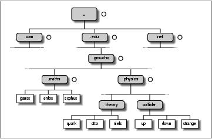
6.2. How DNS Works
DNS organizes hostnames in a domain hierarchy. A domain is a collection of sites that are related in some
sensebecause they form a proper network (e.g., all machines on a campus, or all hosts on BITNET), because
they all belong to a certain organization (e.g., the U.S. government), or because they're simply geographically
close. For instance, universities are commonly grouped in the edu domain, with each university or college
using a separate subdomain, below which their hosts are subsumed. Groucho Marx University have the
groucho.edu domain, while the LAN of the Mathematics department is assigned maths.groucho.edu. Hosts on
the departmental network would have this domain name tacked onto their hostname, so erdos would be
known as erdos.maths.groucho.edu. This is called the fully qualified domain name (FQDN), which uniquely
identifies this host worldwide.
Figure 6−1 shows a section of the namespace. The entry at the root of this tree, which is denoted by a single
dot, is quite appropriately called the root domain and encompasses all other domains. To indicate that a
hostname is a fully qualified domain name, rather than a name relative to some (implicit) local domain, it is
sometimes written with a trailing dot. This dot signifies that the name's last component is the root domain.
Figure 6−1. A part of the domain namespace
Depending on its location in the name hierarchy, a domain may be called top−level, second−level, or
third−level. More levels of subdivision occur, but they are rare. This list details several top−level domains
you may see frequently:
Domain Description
edu
(Mostly U.S.) educational institutions like universities.
com
Commercial organizations and companies.
org
Non−commercial organizations. Private UUCP networks are often in this domain.
net
Gateways and other administrative hosts on a network.
6.2. How DNS Works
112
Linux Network Administrators Guide
mil
U.S. military institutions.
gov
U.S. government institutions.
uucp
Officially, all site names formerly used as UUCP names without domains have been moved to this
domain.
Historically, the first four of these were assigned to the U.S., but recent changes in policy have meant that
these domains, named global Top Level Domains (gTLD), are now considered global in nature. Negotiations
are currently underway to broaden the range of gTLDs, which may result in increased choice in the future.
Outside the U.S., each country generally uses a top−level domain of its own named after the two−letter
country code defined in ISO−3166. Finland, for instance, uses the fi domain; fr is used by France, de by
Germany, and au by Australia. Below this top−level domain, each country's NIC is free to organize
hostnames in whatever way they want. Australia has second−level domains similar to the international
top−level domains, named com.au and edu.au. Other countries, like Germany, don't use this extra level, but
have slightly long names that refer directly to the organizations running a particular domain. It's not
uncommon to see hostnames like ftp.informatik.uni−erlangen.de. Chalk that up to German efficiency.
Of course, these national domains do not imply that a host below that domain is actually located in that
country; it means only that the host has been registered with that country's NIC. A Swedish manufacturer
might have a branch in Australia and still have all its hosts registered with the se top−level domain.
Organizing the namespace in a hierarchy of domain names nicely solves the problem of name uniqueness;
with DNS, a hostname has to be unique only within its domain to give it a name different from all other hosts
worldwide. Furthermore, fully qualified names are easy to remember. Taken by themselves, these are already
very good reasons to split up a large domain into several subdomains.
DNS does even more for you than this. It also allows you to delegate authority over a subdomain to its
administrators. For example, the maintainers at the Groucho Computing Center might create a subdomain for
each department; we already encountered the math and physics subdomains above. When they find the
network at the Physics department too large and chaotic to manage from outside (after all, physicists are
known to be an unruly bunch of people), they may simply pass control of the physics.groucho.edu domain to
the administrators of this network. These administrators are free to use whatever hostnames they like and
assign them IP addresses from their network in whatever fashion they desire, without outside interference.
To this end, the namespace is split up into zones, each rooted at a domain. Note the subtle difference between
a zone and a domain: the domain groucho.edu encompasses all hosts at Groucho Marx University, while the
zone groucho.edu includes only the hosts that are managed by the Computing Center directly; those at the
Mathematics department, for example. The hosts at the Physics department belong to a different zone,
namely physics.groucho.edu. In Figure 6−1, the start of a zone is marked by a small circle to the right of the
domain name.
6.2.1. Name Lookups with DNS
At first glance, all this domain and zone fuss seems to make name resolution an awfully complicated
business. After all, if no central authority controls what names are assigned to which hosts, how is a humble
application supposed to know?
6.2.1. Name Lookups with DNS
113
Linux Network Administrators Guide
Now comes the really ingenious part about DNS. If you want to find the IP address of erdos, DNS says, Go
ask the people who manage it, and they will tell you.
In fact, DNS is a giant distributed database. It is implemented by so−called name servers that supply
information on a given domain or set of domains. For each zone there are at least two, or at most a few, name
servers that hold all authoritative information on hosts in that zone. To obtain the IP address of erdos, all you
have to do is contact the name server for the groucho.edu zone, which will then return the desired data.
Easier said than done, you might think. So how do I know how to reach the name server at Groucho Marx
University? In case your computer isn't equipped with an address−resolving oracle, DNS provides for this,
too. When your application wants to look up information on erdos, it contacts a local name server, which
conducts a so−called iterative query for it. It starts off by sending a query to a name server for the root
domain, asking for the address of erdos.maths.groucho.edu. The root name server recognizes that this name
does not belong to its zone of authority, but rather to one below the edu domain. Thus, it tells you to contact
an edu zone name server for more information and encloses a list of all edu name servers along with their
addresses. Your local name server will then go on and query one of those, for instance, a.isi.edu. In a manner
similar to the root name server, a.isi.edu knows that the groucho.edu people run a zone of their own, and
points you to their servers. The local name server will then present its query for erdos to one of these, which
will finally recognize the name as belonging to its zone, and return the corresponding IP address.
This looks like a lot of traffic being generated for looking up a measly IP address, but it's really only
miniscule compared to the amount of data that would have to be transferred if we were still stuck with
HOSTS.TXT. There's still room for improvement with this scheme, however.
To improve response time during future queries, the name server stores the information obtained in its local
cache. So the next time anyone on your local network wants to look up the address of a host in the
groucho.edu domain, your name server will go directly to the groucho.edu name server.[40]
Of course, the name server will not keep this information forever; it will discard it after some time. The
expiration interval is called the time to live, or TTL. Each datum in the DNS database is assigned such a TTL
by administrators of the responsible zone.
6.2.2. Types of Name Servers
Name servers that hold all information on hosts within a zone are called authoritative for this zone, and
sometimes are referred to as master name servers. Any query for a host within this zone will end up at one of
these master name servers.
Master servers must be fairly well synchronized. Thus, the zone's network administrator must make one the
primary server, which loads its zone information from data files, and make the others secondary servers,
which transfer the zone data from the primary server at regular intervals.
Having several name servers distributes workload; it also provides backup. When one name server machine
fails in a benign way, like crashing or losing its network connection, all queries will fall back to the other
servers. Of course, this scheme doesn't protect you from server malfunctions that produce wrong replies to all
DNS requests, such as from software bugs in the server program itself.
You can also run a name server that is not authoritative for any domain. [41] This is useful, as the name
server will still be able to conduct DNS queries for the applications running on the local network and cache
6.2.2. Types of Name Servers
114
Linux Network Administrators Guide
the information. Hence it is called a caching−only server.
6.2.3. The DNS Database
We have seen that DNS not only deals with IP addresses of hosts, but also exchanges information on name
servers. DNS databases may have, in fact, many different types of entries.
A single piece of information from the DNS database is called a resource record (RR). Each record has a
type associated with it describing the sort of data it represents, and a class specifying the type of network it
applies to. The latter accommodates the needs of different addressing schemes, like IP addresses (the IN
class), Hesiod addresses (used by MIT's Kerberos system), and a few more. The prototypical resource record
type is the A record, which associates a fully qualified domain name with an IP address.
A host may be known by more than one name. For example you might have a server that provides both
FTP and World Wide Web servers, which you give two names: ftp.machine.org and www.machine.org.
However, one of these names must be identified as the official or canonical hostname, while the others are
simply aliases referring to the official hostname. The difference is that the canonical hostname is the one with
an associated A record, while the others only have a record of type CNAME that points to the canonical
hostname.
We will not go through all record types here, but we will give you a brief example. Example 6−4 shows a
part of the domain database that is loaded into the name servers for the physics.groucho.edu zone.
Example 6−4. An Excerpt from the named.hosts File for the Physics Department
; Authoritative Information on physics.groucho.edu.
@ IN SOA niels.physics.groucho.edu. janet.niels.physics.groucho.edu. {
1999090200 ; serial no
360000 ; refresh
3600 ; retry
3600000 ; expire
3600 ; default ttl
}
;
; Name servers
IN NS niels
IN NS gauss.maths.groucho.edu.
gauss.maths.groucho.edu. IN A 149.76.4.23
;
; Theoretical Physics (subnet 12)
niels IN A 149.76.12.1
IN A 149.76.1.12
name server IN CNAME niels
otto IN A 149.76.12.2
quark IN A 149.76.12.4
down IN A 149.76.12.5
strange IN A 149.76.12.6
...
; Collider Lab. (subnet 14)
boson IN A 149.76.14.1
muon IN A 149.76.14.7
bogon IN A 149.76.14.12
...
6.2.3. The DNS Database
115
Linux Network Administrators Guide
Apart from the A and CNAME records, you can see a special record at the top of the file, stretching several
lines. This is the SOA resource record signaling the Start of Authority, which holds general information on
the zone the server is authoritative for. The SOA record comprises, for instance, the default time to live for all
records.
Note that all names in the sample file that do not end with a dot should be interpreted relative to the
physics.groucho.edu domain. The special name (@) used in the SOA record refers to the domain name by
itself.
We have seen earlier that the name servers for the groucho.edu domain somehow have to know about the
physics zone so that they can point queries to their name servers. This is usually achieved by a pair of
records: the NS record that gives the server's FQDN, and an A record that associates an address with that
name. Since these records are what holds the namespace together, they are frequently called glue records.
They are the only instances of records in which a parent zone actually holds information on hosts in the
subordinate zone. The glue records pointing to the name servers for physics.groucho.edu are shown in
Example 6−5.
Example 6−5. An Excerpt from the named.hosts File for GMU
; Zone data for the groucho.edu zone.
@ IN SOA vax12.gcc.groucho.edu. joe.vax12.gcc.groucho.edu. {
1999070100 ; serial no
360000 ; refresh
3600 ; retry
3600000 ; expire
3600 ; default ttl
}
....
;
; Glue records for the physics.groucho.edu zone
physics IN NS niels.physics.groucho.edu.
IN NS gauss.maths.groucho.edu.
niels.physics IN A 149.76.12.1
gauss.maths IN A 149.76.4.23
...
6.2.4. Reverse Lookups
Finding the IP address belonging to a host is certainly the most common use for the Domain Name System,
but sometimes you'll want to find the canonical hostname corresponding to an address. Finding this hostname
is called reverse mapping, and is used by several network services to verify a client's identity. When using a
single hosts file, reverse lookups simply involve searching the file for a host that owns the IP address in
question. With DNS, an exhaustive search of the namespace is out of the question. Instead, a special domain,
in−addr.arpa, has been created that contains the IP addresses of all hosts in a reversed dotted quad notation.
For instance, an IP address of 149.76.12.4 corresponds to the name 4.12.76.149.in−addr.arpa. The
resource−record type linking these names to their canonical hostnames is PTR.
Creating a zone of authority usually means that its administrators have full control over how they assign
addresses to names. Since they usually have one or more IP networks or subnets at their hands, there's a
one−to−many mapping between DNS zones and IP networks. The Physics department, for instance,
comprises the subnets 149.76.8.0, 149.76.12.0, and 149.76.14.0.
6.2.4. Reverse Lookups
116
Linux Network Administrators Guide
Consequently, new zones in the in−addr.arpa domain have to be created along with the physics zone, and
delegated to the network administrators at the department: 8.76.149.in−addr.arpa, 12.76.149.in−addr.arpa,
and 14.76.149.in−addr.arpa. Otherwise, installing a new host at the Collider Lab would require them to
contact their parent domain to have the new address entered into their in−addr.arpa zone file.
The zone database for subnet 12 is shown in Example 6−6. The corresponding glue records in the database of
their parent zone are shown in Example 6−7.
Example 6−6. An Excerpt from the named.rev File for Subnet 12
; the 12.76.149.in−addr.arpa domain.
@ IN SOA niels.physics.groucho.edu. janet.niels.physics.groucho.edu. {
1999090200 360000 3600 3600000 3600
}
2 IN PTR otto.physics.groucho.edu.
4 IN PTR quark.physics.groucho.edu.
5 IN PTR down.physics.groucho.edu.
6 IN PTR strange.physics.groucho.edu.
Example 6−7. An Excerpt from the named.rev File for Network 149.76
; the 76.149.in−addr.arpa domain.
@ IN SOA vax12.gcc.groucho.edu. joe.vax12.gcc.groucho.edu. {
1999070100 360000 3600 3600000 3600
}
...
; subnet 4: Mathematics Dept.
1.4 IN PTR sophus.maths.groucho.edu.
17.4 IN PTR erdos.maths.groucho.edu.
23.4 IN PTR gauss.maths.groucho.edu.
...
; subnet 12: Physics Dept, separate zone
12 IN NS niels.physics.groucho.edu.
IN NS gauss.maths.groucho.edu.
niels.physics.groucho.edu. IN A 149.76.12.1
gauss.maths.groucho.edu. IN A 149.76.4.23
...
in−addr.arpa system zones can only be created as supersets of IP networks. An even more severe restriction
is that these networks' netmasks have to be on byte boundaries. All subnets at Groucho Marx University have
a netmask of 255.255.255.0, hence an in−addr.arpa zone could be created for each subnet. However, if the
netmask were 255.255.255.128 instead, creating zones for the subnet 149.76.12.128 would be impossible,
because there's no way to tell DNS that the 12.76.149.in−addr.arpa domain has been split into two zones of
authority, with hostnames ranging from 1 through 127, and 128 through 255, respectively.
6.2.4. Reverse Lookups
117
6.3. Running named
named (pronounced name−dee) provides DNS on most Unix machines. It is a server program originally
developed for BSD to provide name service to clients, and possibly to other name servers. BIND Version 4
was around for some time and appeared in most Linux distributions. The new release, Version 8, has been
introduced in most Linux distributions, and is a big change from previous versions.[42] It has many new
features, such as support for DNS dynamic updates, DNS change notifications, much improved performance,
and a new configuration file syntax. Please check the documentation contained in the source distribution for
details.
This section requires some understanding of the way DNS works. If the following discussion is all Greek to
you, you may want to reread the section Section 6.2."
named is usually started at system boot time and runs until the machine goes down again. Implementations
of BIND prior to Version 8 take their information from a configuration file called /etc/named.boot and
various files that map domain names to addresses. The latter are called zone files. Versions of BIND from
Version 8 onwards use /etc/named.conf in place of /etc/named.boot.
To run named at the prompt, enter:
# /usr/sbin/named
named will come up and read the named.boot file and any zone files specified therein. It writes its process
ID to /var/run/named.pid in ASCII, downloads any zone files from primary servers, if necessary, and
starts listening on port 53 for DNS queries.
6.3.1. The named.boot File
The BIND configuration file prior to Version 8 was very simple in structure. BIND Version 8 has a very
different configuration file syntax to deal with many of the new features introduced. The name of the
configuration file changed from /etc/named.boot, in older versions of BIND, to
/etc/named.conf in BIND Version 8. We'll focus on configuring the older version because it is probably
what most distributions are still using, but we'll present an equivalent named.conf to illustrate the
differences, and we'll talk about how to convert the old format into the new one.
The named.boot file is generally small and contains little but pointers to master files containing zone
information and pointers to other name servers. Comments in the boot file start with the (#) or (;) characters
and extend to the next newline. Before we discuss the format of named.boot in more detail, we will take a
look at the sample file for vlager given in Example 6−8.
Example 6−8. The named.boot File for vlager
;
; /etc/named.boot file for vlager.vbrew.com
;
directory /var/named
6.3. Running named
118
Linux Network Administrators Guide
;
; domain file
;−−−−−−−−−−−−−−−−−
cache . named.ca
primary vbrew.com named.hosts
primary 0.0.127.in−addr.arpa named.local
primary 16.172.in−addr.arpa named.rev
Let's look at each statement individually. The directory keyword tells named that all filenames referred to
later in this file, zone files for example, are located in the /var/named directory. This saves a little typing.
The primary keyword shown in this example loads information into named. This information is taken from
the master files specified as the last of the parameters. These files represent DNS resource records, which we
will look at next.
In this example, we configured named as the primary name server for three domains, as indicated by the
three primary statements. The first of these statements instructs named to act as a primary server for
vbrew.com, taking the zone data from the file named.hosts.
The cache keyword is very special and should be present on virtually all machines running a name server. It
instructs named to enable its cache and to load the root name server hints from the cache file specified
(named.ca in our example). We will come back to the name server hints in the following list.
Here's a list of the most important options you can use in named.boot:
directory
This option specifies a directory in which zone files reside. Names of files in other options may be
given relative to this directory. Several directories may be specified by repeatedly using directory.
The Linux file system standard suggests this should be /var/named.
primary
This option takes a domain name and filename as an argument, declaring the local server
authoritative for the named domain. As a primary server, named loads the zone information from the
given master file.
There will always be at least one primary entry in every boot file used for reverse mapping of
network 127.0.0.0, which is the local loopback network.
secondary
This statement takes a domain name, an address list, and a filename as an argument. It declares the
local server a secondary master server for the specified domain.
A secondary server holds authoritative data on the domain, too, but it doesn't gather it from files;
instead, it tries to download it from the primary server. The IP address of at least one primary server
thus must be given to named in the address list. The local server contacts each of them in turn until it
successfully transfers the zone database, which is then stored in the backup file given as the third
argument. If none of the primary servers responds, the zone data is retrieved from the backup file
instead.
6.3. Running named
119
Linux Network Administrators Guide
named then attempts to refresh the zone data at regular intervals. This process is explained later in
connection with the SOA resource record type.
cache
This option takes a domain name and filename as arguments. This file contains the root server
hints, which is a list of records pointing to the root name servers. Only NS and A records will be
recognized. The domain should be the root domain name, a simple period (.).
This information is absolutely crucial to named; if the cache statement does not occur in the boot
file, named will not develop a local cache at all. This situation/lack of development will severely
degrade performance and increase network load if the next server queried is not on the local net.
Moreover, named will not be able to reach any root name servers, and thus won't resolve any
addresses except those it is authoritative for. An exception from this rule involves forwarding servers
(see the forwarders option that follows).
forwarders
This statement takes a whitespace−separated list of addresses as an argument. The IP addresses in
this list specify a list of name servers that named may query if it fails to resolve a query from its
local cache. They are tried in order until one of them responds to the query. Typically, you would use
the name server of your network provider or another well−known server as a forwarder.
slave
This statement makes the name server a slave server. It never performs recursive queries itself, but
only forwards them to servers specified in the forwarders statement.
There are two options that we will not describe here: sortlist and domain. Two other directives may also be
used inside these database files: $INCLUDE and $ORIGIN. Since they are rarely needed, we will not
describe them here, either.
6.3.2. The BIND 8 host.conf File
BIND Version 8 introduced a range of new features, and with these came a new configuration file syntax.
The named.boot, with its simple single line statements, was replaced by the named.conf file, with a
syntax like that of gated and resembling C source syntax.
The new syntax is more complex, but fortunately a tool has been provided that automates conversion from
the old syntax to the new syntax. In the BIND 8 source package, a perl program called
named−bootconf.pl is provided that will read your existing named.boot file from stdin and convert it
into the equivalent named.conf format on stdout. To use it, you must have the perl interpreter installed.
You should use the script somewhat like this:
# cd /etc
# named−bootconf.pl <named.boot >named.conf
The script then produces a named.conf that looks like that shown in Example 6−9. We've cleaned out a
6.3.2. The BIND 8 host.conf File
120
Linux Network Administrators Guide
few of the helpful comments the script includes to help show the almost direct relationship between the old
and the new syntax.
Example 6−9. The BIND 8 equivalent named.conf File for vlager
//
// /etc/named.boot file for vlager.vbrew.com
options {
directory "/var/named";
};
zone "." {
type hint;
file "named.ca";
};
zone "vbrew.com" {
type master;
file "named.hosts";
};
zone "0.0.127.in−addr.arpa" {
type master;
file "named.local";
};
zone "16.172.in−addr.arpa" {
type master;
file "named.rev";
};
If you take a close look, you will see that each of the one−line statements in named.boot has been
converted into a C−like statement enclosed within {} characters in the named.conf file.
The comments, which in the named.boot file were indicated by a semicolon (;), are now indicated by two
forward slashes (//).
The directory statement has been translated into an options paragraph with a directory clause.
The cache and primary statements have been converted into zone paragraphs with type clauses of hint and
master, respectively.
The zone files do not need to be modified in any way; their syntax remains unchanged.
The new configuration syntax allows for many new options that we haven't covered here. If you'd like
information on the new options, the best source of information is the documentation supplied with the BIND
Version 8 source package.
6.3.3. The DNS Database Files
Master files included with named, like named.hosts, always have a domain associated with them, which is
called the origin. This is the domain name specified with the cache and primary options. Within a master file,
you are allowed to specify domain and host names relative to this domain. A name given in a configuration
file is considered absolute if it ends in a single dot, otherwise it is considered relative to the origin. The origin
6.3.3. The DNS Database Files
121
Linux Network Administrators Guide
by itself may be referred to using (@).
The data contained in a master file is split up in resource records(RRs). RRs are the smallest units of
information available through DNS. Each resource record has a type. A records, for instance, map a hostname
to an IP address, and a CNAME record associates an alias for a host with its official hostname. To see an
example, look at Example 6−11, which shows the named.hosts master file for the Virtual Brewery.
Resource record representations in master files share a common format:
[domain] [ttl] [class] type rdata
Fields are separated by spaces or tabs. An entry may be continued across several lines if an opening brace
occurs before the first newline and the last field is followed by a closing brace. Anything between a
semicolon and a newline is ignored. A description of the format terms follows:
domain
This term is the domain name to which the entry applies. If no domain name is given, the RR is
assumed to apply to the domain of the previous RR.
ttl
In order to force resolvers to discard information after a certain time, each RR is associated a time
to live (ttl). The ttl field specifies the time in seconds that the information is valid after it has been
retrieved from the server. It is a decimal number with at most eight digits.
If no ttl value is given, the field value defaults to that of the minimum field of the preceding SOA
record.
class
This is an address class, like IN for IP addresses or HS for objects in the Hesiod class. For TCP/IP
networking, you have to specify IN.
If no class field is given, the class of the preceding RR is assumed.
type
This describes the type of the RR. The most common types are A, SOA, PTR, and NS. The following
sections describe the various types of RRs.
rdata
This holds the data associated with the RR. The format of this field depends on the type of RR. In the
following discussion, it will be described for each RR separately.
The following is partial list of RRs to be used in DNS master files. There are a couple more of them that we
will not explain; they are experimental and of little use, generally.
SOA
6.3.3. The DNS Database Files
122
Linux Network Administrators Guide
This RR describes a zone of authority (SOA means Start of Authority). It signals that the
records following the SOA RR contain authoritative information for the domain. Every master file
included by a primary statement must contain an SOA record for this zone. The resource data
contains the following fields:
origin
This field is the canonical hostname of the primary name server for this domain. It is usually given as
an absolute name.
contact
This field is the email address of the person responsible for maintaining the domain, with the "@"
sign replaced by a dot. For instance, if the responsible person at the Virtual Brewery were janet, this
field would contain janet.vbrew.com.
serial
This field is the version number of the zone file, expressed as a single decimal number. Whenever
data is changed in the zone file, this number should be incremented. A common convention is to use
a number that reflects the date of the last update, with a version number appended to it to cover the
case of multiple updates occurring on a single day, e.g., 2000012600 being update 00 that occurred
on January 26, 2000.
The serial number is used by secondary name servers to recognize zone information changes. To stay
up to date, secondary servers request the primary server's SOA record at certain intervals and
compare the serial number to that of the cached SOA record. If the number has changed, the
secondary servers transfer the whole zone database from the primary server.
refresh
This field specifies the interval in seconds that the secondary servers should wait between checking
the SOA record of the primary server. Again, this is a decimal number with at most eight digits.
Generally, the network topology doesn't change too often, so this number should specify an interval
of roughly a day for larger networks, and even more for smaller ones.
retry
This number determines the intervals at which a secondary server should retry contacting the primary
server if a request or a zone refresh fails. It must not be too low, or a temporary failure of the server
or a network problem could cause the secondary server to waste network resources. One hour, or
perhaps one−half hour, might be a good choice.
expire
This field specifies the time in seconds after which a secondary server should finally discard all zone
data if it hasn't been able to contact the primary server. You should normally set this field to at least a
week (604,800 seconds), but increasing it to a month or more is also reasonable.
minimum
6.3.3. The DNS Database Files
123
Linux Network Administrators Guide
This field is the default ttl value for resource records that do not explicitly contain one. The ttl value
specifies the maximum amount of time other name servers may keep the RR in their cache. This time
applies only to normal lookups, and has nothing to do with the time after which a secondary server
should try to update the zone information.
If the topology of your network does not change frequently, a week or even more is probably a good
choice. If single RRs change more frequently, you could still assign them smaller ttls individually. If
your network changes frequently, you may want to set minimum to one day (86,400 seconds).
A
This record associates an IP address with a hostname. The resource data field contains the address in dotted
quad notation.
For each hostname, there must be only one A record. The hostname used in this A record is considered the
official or canonical hostname. All other hostnames are aliases and must be mapped onto the canonical
hostname using a CNAME record. If the canonical name of our host were vlager, we'd have an A record that
associated that hostname with its IP address. Since we may also want another name associated with that
address, say news, we'd create a CNAME record that associates this alternate name with the canonical name.
We'll talk more about CNAME records shortly.
NS
NS records are used to specify a zone's primary server and all its secondary servers. An NS record points to a
master name server of the given zone, with the resource data field containing the hostname of the name server.
You will meet NS records in two situations: The first situation is when you delegate authority to a
subordinate zone; the second is within the master zone database of the subordinate zone itself. The sets of
servers specified in both the parent and delegated zones should match.
The NS record specifies the name of the primary and secondary name servers for a zone. These names must
be resolved to an address so they can be used. Sometimes the servers belong to the domain they are serving,
which causes a chicken and egg problem; we can't resolve the address until the name server is reachable,
but we can't reach the name server until we resolve its address. To solve this dilemma, we can configure
special A records directly into the name server of the parent zone. The A records allow the name servers of
the parent domain to resolve the IP address of the delegated zone name servers. These records are commonly
called glue records because they provide the glue that binds a delegated zone to its parent.
CNAME
This record associates an alias with a host's canonical hostname. It provides an alternate name by which users
can refer to the host whose canonical name is supplied as a parameter. The canonical hostname is the one the
master file provides an A record for; aliases are simply linked to that name by a CNAME record, but don't
have any other records of their own.
PTR
This type of record is used to associate names in the in−addr.arpa domain with hostnames. It is used for
reverse mapping of IP addresses to hostnames. The hostname given must be the canonical hostname.
6.3.3. The DNS Database Files
124
Linux Network Administrators Guide
MX
This RR announces a mail exchanger for a domain. Mail exchangers are discussed in Section 17.4.1. The
syntax of an MX record is:
[domain] [ttl] [class] MX preference host
host names the mail exchanger for domain. Every mail exchanger has an integer preference associated
with it. A mail transport agent that wants to deliver mail to domain tries all hosts who have an MX record
for this domain until it succeeds. The one with the lowest preference value is tried first, then the others, in
order of increasing preference value.
HINFO
This record provides information on the system's hardware and software. Its syntax is:
[domain] [ttl] [class] HINFO hardware software
The hardware field identifies the hardware used by this host. Special conventions are used to specify this.
A list of valid machine names is given in the Assigned Numbers RFC (RFC−1700). If the field contains
any blanks, it must be enclosed in double quotes. The software field names the operating system software
used by the system. Again, a valid name from the Assigned Numbers RFC should be chosen.
An HINFO record to describe an Intel−based Linux machine should look something like:
tao 36500 IN HINFO IBM−PC LINUX2.2
and HINFO records for Linux running on Motorola 68000−based machines might look like:
cevad 36500 IN HINFO ATARI−104ST LINUX2.0
jedd 36500 IN HINFO AMIGA−3000 LINUX2.0
6.3.4. Caching−only named Configuration
There is a special type of named configuration that we'll talk about before we explain how to build a full
name server configuration. It is called a caching−only configuration. It doesn't really serve a domain, but acts
as a relay for all DNS queries produced on your host. The advantage of this scheme is that it builds up a
cache so only the first query for a particular host is actually sent to the name servers on the Internet. Any
repeated request will be answered directly from the cache in your local name server. This may not seem
useful yet, but it will when you are dialing in to the Internet, as described in Chapter 7 and Chapter 8.
A named.boot file for a caching−only server looks like this:
; named.boot file for caching−only server
directory /var/named
primary 0.0.127.in−addr.arpa named.local ; localhost network
cache . named.ca ; root servers
6.3.4. Caching−only named Configuration
125
Linux Network Administrators Guide
In addition to this named.boot file, you must set up the named.ca file with a valid list of root name
servers. You could copy and use Example 6−10 for this purpose. No other files are needed for a caching−only
server configuration.
6.3.5. Writing the Master Files
Example 6−10, Example 6−11, Example 6−12, and Example 6−13 give sample files for a name server at the
brewery, located on vlager. Due to the nature of the network discussed (a single LAN), the example is pretty
straightforward.
The named.ca cache file shown in Example 6−10 shows sample hint records for a root name server. A
typical cache file usually describes about a dozen name servers. You can obtain the current list of name
servers for the root domain using the nslookup tool described in the next section.[43]
Example 6−10. The named.ca File
;
; /var/named/named.ca Cache file for the brewery.
; We're not on the Internet, so we don't need
; any root servers. To activate these
; records, remove the semicolons.
;
;. 3600000 IN NS A.ROOT−SERVERS.NET.
;A.ROOT−SERVERS.NET. 3600000 A 198.41.0.4
;. 3600000 NS B.ROOT−SERVERS.NET.
;B.ROOT−SERVERS.NET. 3600000 A 128.9.0.107
;. 3600000 NS C.ROOT−SERVERS.NET.
;C.ROOT−SERVERS.NET. 3600000 A 192.33.4.12
;. 3600000 NS D.ROOT−SERVERS.NET.
;D.ROOT−SERVERS.NET. 3600000 A 128.8.10.90
;. 3600000 NS E.ROOT−SERVERS.NET.
;E.ROOT−SERVERS.NET. 3600000 A 192.203.230.10
;. 3600000 NS F.ROOT−SERVERS.NET.
;F.ROOT−SERVERS.NET. 3600000 A 192.5.5.241
;. 3600000 NS G.ROOT−SERVERS.NET.
;G.ROOT−SERVERS.NET. 3600000 A 192.112.36.4
;. 3600000 NS H.ROOT−SERVERS.NET.
;H.ROOT−SERVERS.NET. 3600000 A 128.63.2.53
;. 3600000 NS I.ROOT−SERVERS.NET.
;I.ROOT−SERVERS.NET. 3600000 A 192.36.148.17
;. 3600000 NS J.ROOT−SERVERS.NET.
;J.ROOT−SERVERS.NET. 3600000 A 198.41.0.10
;. 3600000 NS K.ROOT−SERVERS.NET.
;K.ROOT−SERVERS.NET. 3600000 A 193.0.14.129
;. 3600000 NS L.ROOT−SERVERS.NET.
;L.ROOT−SERVERS.NET. 3600000 A 198.32.64.12
;. 3600000 NS M.ROOT−SERVERS.NET.
;M.ROOT−SERVERS.NET. 3600000 A 202.12.27.33
;
Example 6−11. The named.hosts File
;
6.3.5. Writing the Master Files
126
Linux Network Administrators Guide
; /var/named/named.hosts Local hosts at the brewery
; Origin is vbrew.com
;
@ IN SOA vlager.vbrew.com. janet.vbrew.com. (
2000012601 ; serial
86400 ; refresh: once per day
3600 ; retry: one hour
3600000 ; expire: 42 days
604800 ; minimum: 1 week
)
IN NS vlager.vbrew.com.
;
; local mail is distributed on vlager
IN MX 10 vlager
;
; loopback address
localhost. IN A 127.0.0.1
;
; Virtual Brewery Ethernet
vlager IN A 172.16.1.1
vlager−if1 IN CNAME vlager
; vlager is also news server
news IN CNAME vlager
vstout IN A 172.16.1.2
vale IN A 172.16.1.3
;
; Virtual Winery Ethernet
vlager−if2 IN A 172.16.2.1
vbardolino IN A 172.16.2.2
vchianti IN A 172.16.2.3
vbeaujolais IN A 172.16.2.4
;
; Virtual Spirits (subsidiary) Ethernet
vbourbon IN A 172.16.3.1
vbourbon−if1 IN CNAME vbourbon
Example 6−12. The named.local File
;
; /var/named/named.local Reverse mapping of 127.0.0
; Origin is 0.0.127.in−addr.arpa.
;
@ IN SOA vlager.vbrew.com. joe.vbrew.com. (
1 ; serial
360000 ; refresh: 100 hrs
3600 ; retry: one hour
3600000 ; expire: 42 days
360000 ; minimum: 100 hrs
)
IN NS vlager.vbrew.com.
1 IN PTR localhost.
Example 6−13. The named.rev File
;
; /var/named/named.rev Reverse mapping of our IP addresses
; Origin is 16.172.in−addr.arpa.
;
6.3.5. Writing the Master Files
127
Linux Network Administrators Guide
@ IN SOA vlager.vbrew.com. joe.vbrew.com. (
16 ; serial
86400 ; refresh: once per day
3600 ; retry: one hour
3600000 ; expire: 42 days
604800 ; minimum: 1 week
)
IN NS vlager.vbrew.com.
; brewery
1.1 IN PTR vlager.vbrew.com.
2.1 IN PTR vstout.vbrew.com.
3.1 IN PTR vale.vbrew.com.
; winery
1.2 IN PTR vlager−if2.vbrew.com.
2.2 IN PTR vbardolino.vbrew.com.
3.2 IN PTR vchianti.vbrew.com.
4.2 IN PTR vbeaujolais.vbrew.com.
6.3.6. Verifying the Name Server Setup
nslookup is a great tool for checking the operation of your name server setup. It can be used both
interactively with prompts and as a single command with immediate output. In the latter case, you simply
invoke it as:
$ nslookup
hostname
nslookup queries the name server specified in resolv.conf for hostname. (If this file names more than
one server, nslookup chooses one at random.)
The interactive mode, however, is much more exciting. Besides looking up individual hosts, you may query
for any type of DNS record and transfer the entire zone information for a domain.
When invoked without an argument, nslookup displays the name server it uses and enters interactive mode.
At the > prompt, you may type any domain name you want to query. By default, it asks for class A records,
those containing the IP address relating to the domain name.
You can look for record types by issuing:
> set type=type
in which type is one of the resource record names described earlier, or ANY.
You might have the following nslookup session:
$ nslookup
Default Server: tao.linux.org.au
Address: 203.41.101.121
> metalab.unc.edu
Server: tao.linux.org.au
Address: 203.41.101.121
Name: metalab.unc.edu
6.3.6. Verifying the Name Server Setup
128
Linux Network Administrators Guide
Address: 152.2.254.81
>
The output first displays the DNS server being queried, and then the result of the query.
If you try to query for a name that has no IP address associated with it, but other records were found in the
DNS database, nslookup returns with an error message saying No type A records found.
However, you can make it query for records other than type A by issuing the set type command. To get the
SOA record of unc.edu, you would issue:
> unc.edu
Server: tao.linux.org.au
Address: 203.41.101.121
*** No address (A) records available for unc.edu
> set type=SOA
> unc.edu
Server: tao.linux.org.au
Address: 203.41.101.121
unc.edu
origin = ns.unc.edu
mail addr = host−reg.ns.unc.edu
serial = 1998111011
refresh = 14400 (4H)
retry = 3600 (1H)
expire = 1209600 (2W)
minimum ttl = 86400 (1D)
unc.edu name server = ns2.unc.edu
unc.edu name server = ncnoc.ncren.net
unc.edu name server = ns.unc.edu
ns2.unc.edu internet address = 152.2.253.100
ncnoc.ncren.net internet address = 192.101.21.1
ncnoc.ncren.net internet address = 128.109.193.1
ns.unc.edu internet address = 152.2.21.1
In a similar fashion, you can query for MX records:
> set type=MX
> unc.edu
Server: tao.linux.org.au
Address: 203.41.101.121
unc.edu preference = 0, mail exchanger = conga.oit.unc.edu
unc.edu preference = 10, mail exchanger = imsety.oit.unc.edu
unc.edu name server = ns.unc.edu
unc.edu name server = ns2.unc.edu
unc.edu name server = ncnoc.ncren.net
conga.oit.unc.edu internet address = 152.2.22.21
imsety.oit.unc.edu internet address = 152.2.21.99
ns.unc.edu internet address = 152.2.21.1
ns2.unc.edu internet address = 152.2.253.100
ncnoc.ncren.net internet address = 192.101.21.1
ncnoc.ncren.net internet address = 128.109.193.1
Using a type of ANY returns all resource records associated with a given name.
6.3.6. Verifying the Name Server Setup
129
Linux Network Administrators Guide
A practical application of nslookup, besides debugging, is to obtain the current list of root name servers.
You can obtain this list by querying for all NS records associated with the root domain:
> set type=NS
> .
Server: tao.linux.org.au
Address: 203.41.101.121
Non−authoritative answer:
(root) name server = A.ROOT−SERVERS.NET
(root) name server = H.ROOT−SERVERS.NET
(root) name server = B.ROOT−SERVERS.NET
(root) name server = C.ROOT−SERVERS.NET
(root) name server = D.ROOT−SERVERS.NET
(root) name server = E.ROOT−SERVERS.NET
(root) name server = I.ROOT−SERVERS.NET
(root) name server = F.ROOT−SERVERS.NET
(root) name server = G.ROOT−SERVERS.NET
(root) name server = J.ROOT−SERVERS.NET
(root) name server = K.ROOT−SERVERS.NET
(root) name server = L.ROOT−SERVERS.NET
(root) name server = M.ROOT−SERVERS.NET
Authoritative answers can be found from:
A.ROOT−SERVERS.NET internet address = 198.41.0.4
H.ROOT−SERVERS.NET internet address = 128.63.2.53
B.ROOT−SERVERS.NET internet address = 128.9.0.107
C.ROOT−SERVERS.NET internet address = 192.33.4.12
D.ROOT−SERVERS.NET internet address = 128.8.10.90
E.ROOT−SERVERS.NET internet address = 192.203.230.10
I.ROOT−SERVERS.NET internet address = 192.36.148.17
F.ROOT−SERVERS.NET internet address = 192.5.5.241
G.ROOT−SERVERS.NET internet address = 192.112.36.4
J.ROOT−SERVERS.NET internet address = 198.41.0.10
K.ROOT−SERVERS.NET internet address = 193.0.14.129
L.ROOT−SERVERS.NET internet address = 198.32.64.12
M.ROOT−SERVERS.NET internet address = 202.12.27.33
To see the complete set of available commands, use the help command in nslookup.
6.3.7. Other Useful Tools
There are a few tools that can help you with your tasks as a BIND administrator. We will briefly describe two
of them here. Please refer to the documentation that comes with these tools for more information on how to
use them.
hostcvt helps you with your initial BIND configuration by converting your /etc/hosts file into master
files for named. It generates both the forward (A) and reverse mapping (PTR) entries, and takes care of
aliases. Of course, it won't do the whole job for you, as you may still want to tune the timeout values in the
SOA record, for example, or add MX records. Still, it may help you save a few aspirins. hostcvt is part of the
BIND source, but can also be found as a standalone package on a few Linux FTP servers.
After setting up your name server, you may want to test your configuration. Some good tools that make this
job much simpler: the first is called dnswalk, which is a Perl−based package. The second is called nslint.
They both walk your DNS database looking for common mistakes and verify that the information they find is
6.3.7. Other Useful Tools
130
Linux Network Administrators Guide
consistent. Two other useful tools are host and dig, which are general purpose DNS database query tools.
You can use these tools to manually inspect and diagnose DNS database entries.
These tools are likely to be available in prepackaged form. dnswalk and nslint are available in source from
http://www.visi.com/~barr/dnswalk/ and ftp://ftp.ee.lbl.gov/nslint.tar.Z. The host and dig source codes can be
found at ftp://ftp.nikhef.nl/pub/network/ and ftp://ftp.is.co.za/networking/ip/dns/dig/.
6.3.7. Other Useful Tools
131
Chapter 7. Serial Line IP
Packet protocols like IP or IPX rely upon the receiver host knowing where the start and end of each packet
are in the data stream. The mechanism used to mark and detect the start and end of packets is called
delimitation. The Ethernet protocol manages this mechanism in a LAN environment, and the SLIP and PPP
protocols manage it for serial communications lines.
The comparatively low cost of low−speed dialup modems and telephone circuits has made the serial line IP
protocols immensely popular, especially for providing connectivity to end users of the Internet. The hardware
required to run SLIP or PPP is simple and readily available. All that is required is a modem and a serial port
equipped with a FIFO buffer.
The SLIP protocol is very simple to implement and at one time was the more common of the two. Today
almost everyone uses the PPP protocol instead. The PPP protocol adds a host of sophisticated features that
contribute to its popularity today, and we'll look at the most important of these later.
Linux supports kernel−based drivers for both SLIP and PPP. The drivers have both been around for some
time and are stable and reliable. In this chapter and the next, we'll discuss both protocols and how to
configure them.
Chapter 7. Serial Line IP
132
7.1. General Requirements
To use SLIP or PPP, you have to configure some basic networking features as described in the previous
chapters. You must set up the loopback interface and configure the name resolver. When connecting to the
Internet, you will want to use DNS. Your options here are the same as for PPP: you can perform your DNS
queries across your serial link by configuring your Internet Service Provider's IP address into your
/etc/resolv.conf file, or configure a caching−only name server as described under Section 6.3.4, in
Chapter 6."
7.1. General Requirements
133
7.2. SLIP Operation
Dialup IP servers frequently offer SLIP service through special user accounts. After logging in to such an
account, you are not dropped into the common shell; instead, a program or shell script is executed that
enables the server's SLIP driver for the serial line and configures the appropriate network interface. Then you
have to do the same at your end of the link.
On some operating systems, the SLIP driver is a user−space program; under Linux, it is part of the kernel,
which makes it a lot faster. This speed requires, however, that the serial line be converted to the SLIP mode
explicitly. This conversion is done by means of a special tty line discipline, SLIPDISC. While the tty is in
normal line discipline (DISC0), it exchanges data only with user processes, using the normal read(2) and
write(2) calls, and the SLIP driver is unable to write to or read from the tty. In SLIPDISC, the roles are
reversed: now any user−space processes are blocked from writing to or reading from the tty, while all data
coming in on the serial port is passed directly to the SLIP driver.
The SLIP driver itself understands a number of variations on the SLIP protocol. Apart from ordinary SLIP, it
also understands CSLIP, which performs the so−called Van Jacobson header compression (described in
RFC−1144) on outgoing IP packets. This compression improves throughput for interactive sessions
noticeably. There are also six−bit versions for each of these protocols.
A simple way to convert a serial line to SLIP mode is by using the slattach tool. Assume you have your
modem on /dev/ttyS3 and have logged in to the SLIP server successfully. You will then execute:
# slattach /dev/ttyS3 &
This tool switches the line discipline of ttyS3 to SLIPDISC and attaches it to one of the SLIP network
interfaces. If this is your first active SLIP link, the line will be attached to sl0; the second will be attached
to sl1, and so on. The current kernels support a default maximum of 256 simultaneous SLIP links.
The default line discipline chosen by slattach is CSLIP. You may choose any other discipline using the
−p switch. To use normal SLIP (no compression), you use:
# slattach −p slip /dev/ttyS3 &
The disciplines available are listed in Table 7−1. A special pseudo−discipline is available called adaptive,
which causes the kernel to automatically detect which type of SLIP encapsulation is being used by the remote
end.
Table 7−1. Linux Slip−Line Disciplines
Description
Disclipline
slip
Traditional SLIP encapsulation.
cslip
SLIP encapsulation with Van Jacobsen header compression.
slip6
7.2. SLIP Operation
134
Linux Network Administrators Guide
SLIP encapsulation with six−bit encoding. The encoding method is similar to that used by the
uuencode command, and causes the SLIP datagram to be converted into printable ASCII
characters. This conversion is useful when you do not have a serial link that is eight bit clean.
cslip6
SLIP encapsulation with Van Jacobsen header compression and six−bit encoding.
adaptive
This is not a real line discipline; instead, it causes the kernel to attempt to identify the line
discipline being used by the remote machine and to match it.
Note that you must use the same encapsulation as your peer. For example, if cowslip uses CSLIP, you also
have to do so. If your SLIP connection doesn't work, the first thing you should do is ensure that both ends of
the link agree on whether to use header compression or not. If you are unsure what the remote end is using,
try configuring your host for adaptive slip. The kernel might figure out the right type for you.
slattach lets you enable not only SLIP, but other protocols that use the serial line, like PPP or KISS (another
protocol used by ham radio people). Doing this is not common, though, and there are better tools available to
support these protocols. For details, please refer to the slattach(8) manual page.
After turning over the line to the SLIP driver, you must configure the network interface. Again, you do this
using the standard ifconfig and route commands. Assume that we have dialed up a server named
cowslip from vlager. On vlager you would execute:
# ifconfig sl0 vlager−slip pointopoint cowslip
# route add cowslip
# route add default gw cowslip
The first command configures the interface as a point−to−point link to cowslip, while the second and third
add the route to cowslip and the default route, using cowslip as a gateway.
Two things are worth noting about the ifconfig invocation: The pointopoint option that specifies the address
of the remote end of a point−to−point link and our use of vlager−slip as the address of the local SLIP
interface.
We have mentioned that you can use the same address you assigned to vlager's Ethernet interface for your
SLIP link, as well. In this case, vlager−slip might just be another alias for address 172.16.1.1. However, it is
also possible that you have to use an entirely different address for your SLIP link. One such case is when
your network uses an unregistered IP network address, as the Brewery does. We will return to this scenario in
greater detail in the next section.
For the remainder of this chapter we will always use vlager−slip to refer to the address of the local SLIP
interface.
When taking down the SLIP link, you should first remove all routes through cowslip using route with the
del option, then take the interface down, and send slattach the hangup signal. The you must hang up the
modem using your terminal program again:
# route del default
# route del cowslip
# ifconfig sl0 down
# kill −HUP 516
7.2. SLIP Operation
135
Linux Network Administrators Guide
Note that the 516 should be replaced with the process id (as shown in the output of ps ax) of the
slattach command controlling the slip device you wish to take down.
7.2. SLIP Operation
136
7.3. Dealing with Private IP Networks
You will remember from Chapter 5, that the Virtual Brewery has an Ethernet−based IP network using
unregistered network numbers that are reserved for internal use only. Packets to or from one of these
networks are not routed on the Internet; if we were to have vlager dial into cowslip and act as a router for the
Virtual Brewery network, hosts within the Brewery's network could not talk to real Internet hosts directly
because their packets would be dropped silently by the first major router.
To work around this dilemma, we will configure vlager to act as a kind of launch pad for accessing Internet
services. To the outside world, it will present itself as a normal SLIP−connected Internet host with a
registered IP address (probably assigned by the network provider running cowslip). Anyone logged in to
vlager can use text−based programs like ftp, telnet, or even lynx to make use of the Internet. Anyone on the
Virtual Brewery LAN can therefore telnet and log in to vlager and use the programs there. For some
applications, there may be solutions that avoid logging in to vlager. For WWW users, for example, we could
run a so−called proxy server on vlager, which would relay all requests from your users to their respective
servers.
Having to log in to vlager to make use of the Internet is a little clumsy. But apart from eliminating the
paperwork (and cost) of registering an IP network, it has the added benefit of going along well with a firewall
setup. Firewalls are dedicated hosts used to provide limited Internet access to users on your local network
without exposing the internal hosts to network attacks from the outside world. Simple firewall configuration
is covered in more detail in Chapter 9. In Chapter 11, we'll discuss a Linux feature called IP masquerade
that provides a powerful alternative to proxy servers.
Assume that the Brewery has been assigned the IP address 192.168.5.74 for SLIP access. All you have to do
to realize that the setup discussed above is to enter this address into your /etc/hosts file, naming it
vlager−slip. The procedure for bringing up the SLIP link itself remains unchanged.
7.3. Dealing with Private IP Networks
137
7.4. Using dip
Now that was rather simple. Nevertheless, you might want to automate the steps previously described. It
would be much better to have a simple command that performs all the steps necessary to open the serial
device, cause the modem to dial the provider, log in, enable the SLIP line discipline, and configure the
network interface. This is what the dip command is for.
dip means Dialup IP. It was written by Fred van Kempen and has been patched very heavily by a number of
people. Today there is one strain that is used by almost everyone: Version dip337p−uri, which is included
with most modern Linux distributions, or is available from the metalab.unc.edu FTP archive.
dip provides an interpreter for a simple scripting language that can handle the modem for you, convert the
line to SLIP mode, and configure the interfaces. The script language is powerful enough to suit most
configurations.
To be able to configure the SLIP interface, dip requires root privilege. It would now be tempting to make
dip setuid to root so that all users can dial up some SLIP server without having to give them root access. This
is very dangerous, though, because setting up bogus interfaces and default routes with dip may disrupt
routing on your network. Even worse, this action would give your users power to connect to any SLIP server
and launch dangerous attacks on your network. If you want to allow your users to fire up a SLIP connection,
write small wrapper programs for each prospective SLIP server and have these wrappers invoke dip with the
specific script that establishes the connection. Carefully written wrapper programs can then safely be made
setuid to root.[44] An alternative, more flexible approach is to give trusted users root access to dip using a
program like sudo.
7.4.1. A Sample Script
Assume that the host to which we make our SLIP connection is cowslip, and that we have written a script for
dip to run called cowslip.dip that makes our connection. We invoke dip with the script name as
argument:
# dip cowslip.dip
DIP: Dialup IP Protocol Driver version 3.3.7 (12/13/93)
Written by Fred N. van Kempen, MicroWalt Corporation.
connected to cowslip.moo.com with addr 192.168.5.74
#
The script itself is shown in Example 7−1.
Example 7−1. A Sample dip Script
# Sample dip script for dialing up cowslip
# Set local and remote name and address
get $local vlager−slip
get $remote cowslip
port ttyS3 # choose a serial port
speed 38400 # set speed to max
modem HAYES # set modem type
reset # reset modem and tty
7.4. Using dip
138
Linux Network Administrators Guide
flush # flush out modem response
# Prepare for dialing.
send ATQ0V1E1X1\r
wait OK 2
if $errlvl != 0 goto error
dial 41988
if $errlvl != 0 goto error
wait CONNECT 60
if $errlvl != 0 goto error
# Okay, we're connected now
sleep 3
send \r\n\r\n
wait ogin: 10
if $errlvl != 0 goto error
send Svlager\n
wait ssword: 5
if $errlvl != 0 goto error
send knockknock\n
wait running 30
if $errlvl != 0 goto error
# We have logged in, and the remote side is firing up SLIP.
print Connected to $remote with address $rmtip
default # Make this link our default route
mode SLIP # We go to SLIP mode, too
# fall through in case of error
error:
print SLIP to $remote failed.
After connecting to cowslip and enabling SLIP, dip will detach from the terminal and go to the background.
You can then start using the normal networking services on the SLIP link. To terminate the connection,
simply invoke dip with the −k option. This sends a hangup signal to dip, using the process ID dip records in
/etc/dip.pid:
# dip −k
In dip's scripting language, keywords prefixed with a dollar symbol denote variable names. dip has a
predefined set of variables, which will be listed below. $remote and $local, for instance, contain the
hostnames of the remote and local hosts involved in the SLIP link.
The first two statements in the sample script are get commands, which is dip's way to set a variable. Here, the
local and remote hostnames are set to vlager and cowslip, respectively.
The next five statements set up the terminal line and the modem. reset sends a reset string to the modem.
The next statement flushes out the modem response so that the login chat in the next few lines works
properly. This chat is pretty straightforward: it simply dials 41988, the phone number of cowslip, and logs in
to the account Svlager using the password knockknock. The wait command makes dip wait for the string
given as its first argument; the number given as its second argument makes the wait time out after that many
seconds if no such string is received. The if commands interspersed in the login procedure check that no error
occurred while executing the command.
The final commands executed after logging in are default, which makes the SLIP link the default route to all
hosts, and mode, which enables SLIP mode on the line and configures the interface and routing table for you.
7.4. Using dip
139
Linux Network Administrators Guide
7.4.2. A dip Reference
In this section, we will give a reference for most of dip's commands. You can get an overview of all the
commands it provides by invoking dip in test mode and entering the help command. To learn about the
syntax of a command, you may enter it without any arguments. Remember that this does not work with
commands that take no arguments. The following example illustrates the help command:
# dip −t
DIP: Dialup IP Protocol Driver version 3.3.7p−uri (25 Dec 96)
Written by Fred N. van Kempen, MicroWalt Corporation.
Debian version 3.3.7p−2 (debian).
DIP> help
DIP knows about the following commands:
beep bootp break chatkey config
databits dec default dial echo
flush get goto help if
inc init mode modem netmask
onexit parity password proxyarp print
psend port quit reset securidfixed
securid send shell skey sleep
speed stopbits term timeout wait
DIP> echo
Usage: echo on|off
DIP>
Throughout the following section, examples that display the DIP> prompt show how to enter a command in
test mode and what output it produces. Examples lacking this prompt should be taken as script excerpts.
7.4.2.1. The modem commands
dip provides a number of commands that configure your serial line and modem. Some of these are obvious,
such as port, which selects a serial port, and speed, databits, stopbits, and parity, which set the common line
parameters. The modem command selects a modem type. Currently, the only type supported is
HAYES (capitalization required). You have to provide dip with a modem type, or else it will refuse to
execute the dial and reset commands. The reset command sends a reset string to the modem; the string used
depends on the modem type selected. For Hayes−compatible modems, this string is ATZ.
The flush code can be used to flush out all responses the modem has sent so far. Otherwise, a chat script
following reset might be confused because it reads the OK responses from earlier commands.
The init command selects an initialization string to be passed to the modem before dialing. The default for
Hayes modems is ATE0 Q0 V1 X1, which turns on echoing of commands and long result codes, and
selects blind dialing (no checking of dial tone). Modern modems have a good factory default configuration,
so this is a little unnecessary, though it does no harm.
The dial command sends the initialization string to the modem and dials up the remote system. The default
dial command for Hayes modems is ATD.
7.4.2. A dip Reference
140
Linux Network Administrators Guide
7.4.2.2. The echo command
The echo command serves as a debugging aid. Calling echo on makes dip echo to the console everything it
sends to the serial device. This can be turned off again by calling echo off.
dip also allows you to leave script mode temporarily and enter terminal mode. In this mode, you can use
dip just like any ordinary terminal program, writing the characters you type to the serial line, reading data
from the serial line, and displaying the characters. To leave this mode, enter Ctrl−].
7.4.2.3. The get command
The get command is dip's way of setting a variable. The simplest form is to set a variable to a constant, as we
did in cowslip.dip. You may, however, also prompt the user for input by specifying the keyword
ask instead of a value:
DIP> get $local ask
Enter the value for $local: _
A third method is to obtain the value from the remote host. Bizarre as it seems at first, this is very useful in
some cases. Some SLIP servers will not allow you to use your own IP address on the SLIP link, but will
rather assign you one from a pool of addresses whenever you dial in, printing some message that informs you
about the address you have been assigned. If the message looks something like Your address:
192.168.5.74, the following piece of dip code would let you pick up the address:
# finish login
wait address: 10
get $locip remote
7.4.2.4. The print command
This is the command used to echo text to the console from which dip was started. Any of dip's variables may
be used in print commands. Here's an example:
DIP> print Using port $port at speed $speed
Using port ttyS3 at speed 38400
7.4.2.5. Variable names
dip understands only a predefined set of variables. A variable name always begins with a dollar symbol and
must be written in lowercase letters.
The $local and $locip variables contain the local host's name and IP address. When you store the canonical
hostname in $local, dip will automatically attempt to resolve the hostname to an IP address and to store it in
the $locip variable. A similar but backward process occurs when you assign an IP address to the
$locip variable; dip will attempt to perform a reverse lookup to identify the name of the host and store it in
the $local variable.
7.4.2.2. The echo command
141
Linux Network Administrators Guide
The $remote and $rmtip variables operate in the same way for the remote host's name and address.
$mtu contains the MTU value for the connection.
These five variables are the only ones that may be assigned values directly using the get command. A number
of other variables are set as a result of the configuration commands bearing the same name, but may be used
in print statements; these variables are $modem, $port, and $speed.
$errlvl is the variable through which you can access the result of the last command executed. An error level
of 0 indicates success, while a nonzero value denotes an error.
7.4.2.6. The if and goto commands
The if command is a conditional branch, rather than a full−featured programming if statement. Its syntax is:
if var op number goto label
The expression must be a simple comparison between one of the variables $errlvl, $locip, and $rmtip.
var must be an integer number; the operator op may be one of ==, !=, <, >, <=, and >=.
The goto command makes the execution of the script continue at the line following that bearing the label.
A label must be the first word on the line and must be followed immediately by a colon.
7.4.2.7. send, wait, and sleep
These commands help implement simple chat scripts in dip. The send command outputs its arguments to the
serial line. It does not support variables, but understands all C−style backslash character sequences, such as
\n for newline and \b for backspace. The tilde character (~) can be used as an abbreviation for carriage
return/newline.
The wait command takes a word as an argument and will read all input on the serial line until it detects a
sequence of characters that match this word. The word itself may not contain any blanks. Optionally, you
may give wait a timeout value as a second argument; if the expected word is not received within that many
seconds, the command will return with an $errlvl value of 1. This command is used to detect login and other
prompts.
The sleep command may be used to wait for a certain amount of time; for instance, to patiently wait for any
login sequence to complete. Again, the interval is specified in seconds.
7.4.2.8. mode and default
These commands are used to flip the serial line to SLIP mode and configure the interface.
The mode command is the last command executed by dip before going into daemon mode. Unless an error
occurs, the command does not return.
mode takes a protocol name as argument. dip currently recognizes SLIP, CSLIP, SLIP6, CSLIP6, PPP, and
TERM as valid names. The current version of dip does not understand adaptive SLIP, however.
7.4.2.6. The if and goto commands
142
Linux Network Administrators Guide
After enabling SLIP mode on the serial line, dip executes ifconfig to configure the interface as a
point−to−point link, and invokes route to set the route to the remote host.
If, in addition, the script executes the default command before mode, dip creates a default route that points to
the SLIP link.
7.4.2.6. The if and goto commands
143
7.5. Running in Server Mode
Setting up your SLIP client was the hard part. Configuring your host to act as a SLIP server is much easier.
There are two ways of configuring a SLIP server. Both ways require that you set up one login account per
SLIP client. Assume you provide SLIP service to Arthur Dent at dent.beta.com. You might create an account
named dent by adding the following line to your passwd file:
dent:*:501:60:Arthur Dent's SLIP account:/tmp:/usr/sbin/diplogin
Afterwards, you would set dent's password using the passwd utility.
The dip command can be used in server mode by invoking it as diplogin. Usually diplogin is a link to dip.
Its main configuration file is /etc/diphosts, which is where you specify what IP address a SLIP user
will be assigned when he or she dials in. Alternatively, you can also use the sliplogin command, a
BSD−derived tool featuring a more flexible configuration scheme that lets you execute shell scripts whenever
a host connects and disconnects.
When our SLIP user dent logs in, dip starts up as a server. To find out if he is indeed permitted to use SLIP,
it looks up the username in /etc/diphosts. This file details the access rights and connection parameter
for each SLIP user. The general format for an /etc/diphosts entry looks like:
# /etc/diphosts
user:password:rem−addr:loc−addr:netmask:comments:protocol,MTU
#
Each of the fields is described in Table 7−2.
Table 7−2. /etc/diphosts Field Description
Field
Description
user
The username of the user invoking dip that this entry will apply to.
password
Field 2 of the /etc/diphosts file is used to add an extra layer of password−based security
on the connection. You can place a password in encrypted form here (just as in
/etc/passwd) and diplogin will prompt for the user to enter the password before allowing
SLIP access. Note that this password is used in addition to the normal login−based password
the user will enter.
rem−addr
The address that will be assigned to the remote machine. This address may be specified either
as a hostname that will be resolved or an IP address in dotted quad notation.
loc−addr
The IP address that will be used for this end of the SLIP link. This may also be specified as a
resolvable hostname or in dotted quad format.
netmask
The netmask that will be used for routing purposes. Many people are confused by this entry.
The netmask doesn't apply to the SLIP link itself, but is used in combination with the
7.5. Running in Server Mode
144
Linux Network Administrators Guide
rem−addr field to produce a route to the remote site. The netmask should be that used by the
network supported by that of the remote host.
comments
This field is free−form text that you may use to help document the /etc/diphosts file. It
serves no other purpose.
protocol
This field is where you specify what protocol or line discipline you want applied to this
connection. Valid entries here are the same as those valid for the −p argument to the
slattach command.
MTU
The maximum transmission unit that this link will carry. This field describes the largest
datagram that will be transmitted across the link. Any datagram routed to the SLIP device that
is larger than the MTU will be fragmented into datagrams no larger than this value. Usually, the
MTU is configured identically at both ends of the link.
A sample entry for dent could look like this:
dent::dent.beta.com:vbrew.com:255.255.255.0:Arthur Dent:CSLIP,296
Our example gives our user dent access to SLIP with no additional password required. He will be assigned
the IP address associated with dent.beta.com with a netmask of 255.255.255.0. His default route should
be directed to the IP address of vbrew.com, and he will use the CSLIP protocol with an MTU of 296 bytes.
When dent logs in, diplogin extracts the information on him from the diphosts file. If the second field
contains a value, diplogin will prompt for an external security password. The string entered by the user is
encrypted and compared to the password from diphosts. If they do not match, the login attempt is
rejected. If the password field contains the string s/key, and dip was compiled with S/Key support, S/Key
authentication will take place. S/Key authentication is described in the documentation that comes in the
dip source package.
After a successful login, diplogin proceeds by flipping the serial line to CSLIP or SLIP mode, and sets up the
interface and route. This connection remains established until the user disconnects and the modem drops the
line. diplogin then returns the line to normal line discipline and exits.
diplogin requires superuser privilege. If you don't have dip running setuid root, you should make
diplogin a separate copy of dip instead of a simple link. diplogin can then safely be made setuid without
affecting the status of dip itself.
7.5. Running in Server Mode
145
Chapter 8. The Point−to−Point Protocol
Like SLIP, PPP is a protocol used to send datagrams across a serial connection; however, it addresses a
couple of the deficiencies of SLIP. First, it can carry a large number of protocols and is thus not limited to the
IP protocol. It provides error detection on the link itself, while SLIP accepts and forwards corrupted
datagrams as long as the corruption does not occur in the header. Equally important, it lets the
communicating sides negotiate options, such as the IP address and the maximum datagram size at startup
time, and provides client authorization. This built−in negotiation allows reliable automation of the connection
establishment, while the authentication removes the need for the clumsy user login accounts that SLIP
requires. For each of these capabilities, PPP has a separate protocol. In this chapter, we briefly cover these
basic building blocks of PPP. This discussion of PPP is far from complete; if you want to know more about
PPP, we urge you to read its RFC specification and the dozen or so companion RFCs.[45] There is also a
comprehensive O'Reilly book on the topic of Using & Managing PPP, by Andrew Sun.
At the very bottom of PPP is the High−Level Data Link Control (HDLC) protocol, which defines the
boundaries around the individual PPP frames and provides a 16−bit checksum.[46] As opposed to the more
primitive SLIP encapsulation, a PPP frame is capable of holding packets from protocols other than IP, such
as Novell's IPX or Appletalk. PPP achieves this by adding a protocol field to the basic HDLC frame that
identifies the type of packet carried by the frame.
The Link Control Protocol, (LCP) is used on top of HDLC to negotiate options pertaining to the data link.
For instance, the Maximum Receive Unit (MRU), states the maximum datagram size that one side of the link
agrees to receive.
An important step at the configuration stage of a PPP link is client authorization. Although it is not
mandatory, it is really a must for dialup lines in order to keep out intruders. Usually the called host (the
server) asks the client to authorize itself by proving it knows some secret key. If the caller fails to produce the
correct secret, the connection is terminated. With PPP, authorization works both ways; the caller may also ask
the server to authenticate itself. These authentication procedures are totally independent of each other. There
are two protocols for different types of authorization, which we will discuss further in this chapter: Password
Authentication Protocol (PAP) and Challenge Handshake Authentication Protocol (CHAP).
Each network protocol that is routed across the data link (like IP and AppleTalk) is configured dynamically
using a corresponding Network Control Protocol (NCP). To send IP datagrams across the link, both sides
running PPP must first negotiate which IP address each of them uses. The control protocol used for this
negotiation is the Internet Protocol Control Protocol (IPCP).
Besides sending standard IP datagrams across the link, PPP also supports Van Jacobson header
compression of IP datagrams. This technique shrinks the headers of TCP packets to as little as three bytes. It
is also used in CSLIP, and is more colloquially referred to as VJ header compression. The use of compression
may be negotiated at startup time through IPCP, as well.
Chapter 8. The Point−to−Point Protocol
146
8.1. PPP on Linux
On Linux, PPP functionality is split into two parts: a kernel component that handles the low−level protocols
(HDLC, IPCP, IPXCP, etc.) and the user space pppd daemon that handles the various higher−level protocols,
such as PAP and CHAP. The current release of the PPP software for Linux contains the PPP daemon
pppd and a program named chat that automates the dialing of the remote system.
The PPP kernel driver was written by Michael Callahan and reworked by Paul Mackerras. pppd was derived
from a free PPP implementation[47] for Sun and 386BSD machines that was written by Drew Perkins and
others, and is maintained by Paul Mackerras. It was ported to Linux by Al Longyear. chat was written by
Karl Fox.[48]
Like SLIP, PPP is implemented by a special line discipline. To use a serial line as a PPP link, you first
establish the connection over your modem as usual, and subsequently convert the line to PPP mode. In this
mode, all incoming data is passed to the PPP driver, which checks the incoming HDLC frames for validity
(each HDLC frame carries a 16−bit checksum), and unwraps and dispatches them. Currently, PPP is able to
transport both the IP protocol, optionally using Van Jacobson header compression, and the IPX protocol.
pppd aids the kernel driver, performing the initialization and authentication phase that is necessary before
actual network traffic can be sent across the link. pppd's behavior may be fine−tuned using a number of
options. As PPP is rather complex, it is impossible to explain all of them in a single chapter. This book
therefore cannot cover all aspects of pppd, but only gives you an introduction. For more information, consult
Using & Managing PPP or the pppd manual pages, and READMEs in the pppd source distribution, which
should help you sort out most questions this chapter fails to discuss. The PPP−HOWTO might also be of use.
Probably the greatest help you will find in configuring PPP will come from other users of the same Linux
distribution. PPP configuration questions are very common, so try your local usergroup mailing list or the
IRC Linux channel. If your problems persist even after reading the documentation, you could try the
comp.protocols.ppp newsgroup. This is the place where you can find most of the people involved in
pppd development.
8.1. PPP on Linux
147
8.2. Running pppd
When you want to connect to the Internet through a PPP link, you have to set up basic networking
capabilities, such as the loopback device and the resolver. Both have been covered in Chapter 5, and Chapter
6. You can simply configure the name server of your Internet Service Provider in the
/etc/resolv.conf file, but this will mean that every DNS request is sent across your serial link. This
situation is not optimal; the closer (network−wise) you are to your name server, the faster the name lookups
will be. An alternative solution is to configure a caching−only name server at a host on your network. This
means that the first time you make a DNS query for a particular host, your request will be sent across your
serial link, but every subsequent request will be answered directly by your local name server, and will be
much faster. This configuration is described in Chapter 6, in Section 6.3.4.
As an introductory example of how to establish a PPP connection with pppd, assume you are at vlager again.
First, dial in to the PPP server c3po and log in to the ppp account. c3po will execute its PPP driver. After
exiting the communications program you used for dialing, execute the following command, substituting the
name of the serial device you used for the ttyS3 shown here:
# pppd /dev/ttyS3 38400 crtscts defaultroute
This command flips the serial line ttyS3 to the PPP line discipline and negotiates an IP link with c3po.
The transfer speed used on the serial port will be 38,400 bps. The crtscts option turns on hardware handshake
on the port, which is an absolute must at speeds above 9,600 bps.
The first thing pppd does after starting up is negotiate several link characteristics with the remote end using
LCP. Usually, the default set of options pppd tries to negotiate will work, so we won't go into this here.
Expect to say that part of this negotiation involves requesting or assigning the IP addresses at each end of the
link.
For the time being, we also assume that c3po doesn't require any authentication from us, so the configuration
phase is completed successfully.
pppd will then negotiate the IP parameters with its peer using IPCP, the IP control protocol. Since we
didn't specify any particular IP address to pppd earlier, it will try to use the address obtained by having the
resolver look up the local hostname. Both will then announce their addresses to each other.
Usually, there's nothing wrong with these defaults. Even if your machine is on an Ethernet, you can use the
same IP address for both the Ethernet and the PPP interface. Nevertheless, pppd allows you to use a different
address, or even to ask your peer to use some specific address. These options are discussed later in the
Section 8.5 section.
After going through the IPCP setup phase, pppd will prepare your host's networking layer to use the PPP
link. It first configures the PPP network interface as a point−to−point link, using ppp0 for the first PPP link
that is active, ppp1 for the second, and so on. Next, it sets up a routing table entry that points to the host at
the other end of the link. In the previous example, pppd made the default network route point to c3po,
because we gave it the defaultroute option.[49] The default route simplifies your routing by causing any IP
datagram destined to a nonlocal host to be sent to c3po; this makes sense since it is the only way they can be
reached. There are a number of different routing schemes pppd supports, which we will cover in detail later
in this chapter.
8.2. Running pppd
148
8.3. Using Options Files
Before pppd parses its command−line arguments, it scans several files for default options. These files may
contain any valid command−line arguments spread out across an arbitrary number of lines. Hash signs
introduce comments.
The first options file is /etc/ppp/options, which is always scanned when pppd starts up. Using it to set
some global defaults is a good idea, because it allows you to keep your users from doing several things that
may compromise security. For instance, to make pppd require some kind of authentication (either PAP or
CHAP) from the peer, you add the auth option to this file. This option cannot be overridden by the user, so
it becomes impossible to establish a PPP connection with any system that is not in your authentication
databases. Note, however, that some options can be overridden; the connect string is a good example.
The other options file, which is read after /etc/ppp/options, is .ppprc in the user's home directory.
It allows each user to specify her own set of default options.
A sample /etc/ppp/options file might look like this:
# Global options for pppd running on vlager.vbrew.com
lock # use UUCP−style device locking
auth # require authentication
usehostname # use local hostname for CHAP
domain vbrew.com # our domain name
The lock keyword makes pppd comply to the standard UUCP method of device locking. With this
convention, each process that accesses a serial device, say /dev/ttyS3, creates a lock file with a name like
LCK..ttyS3 in a special lock−file directory to signal that the device is in use. This is necessary to prevent
signal other programs, such as minicom or uucico, from opening the serial device while it is used by PPP.
The next three options relate to authentication and, therefore, to system security. The authentication options
are best placed in the global configuration file because they are privileged and cannot be overridden by
users' ~/.ppprc options files.
8.3. Using Options Files
149
8.4. Using chat to Automate Dialing
One of the things that may have struck you as inconvenient in the previous example is that you had to
establish the connection manually before you could fire up pppd. Unlike dip, pppd does not have its own
scripting language for dialing the remote system and logging in, but relies on an external program or shell
script to do this. The command to be executed can be given to pppd with the connect command−line option.
pppd will redirect the command's standard input and output to the serial line.
The pppd software package is supplied with a very simple program called chat, which is capable of being
used in this way to automate simple login sequences. We'll talk about this command in some detail.
If your login sequence is complex, you will need something more powerful than chat. One useful
alternative you might consider is expect, written by Don Libes. It has a very powerful language based on Tcl,
and was designed exactly for this sort of application. Those of you whose login sequence requires, for
example, challenge/response authentication involving calculator−like key generators will find
expect powerful enough to handle the task. Since there are so many possible variations on this theme, we
won't describe how to develop an appropriate expect script in this book. Suffice it to say, you'd call your
expect script by specifying its name using the pppd connect option. It's also important to note that when the
script is running, the standard input and output will be attached to the modem, not to the terminal that
invoked pppd. If you require user interaction, you should manage it by opening a spare virtual terminal, or
arrange some other means.
The chat command lets you specify a UUCP−style chat script. Basically, a chat script consists of an
alternating sequence of strings that we expect to receive from the remote system, and the answers we are to
send. We will call them expect and send strings, respectively. This is a typical excerpt from a chat script:
ogin: b1ff ssword: s3|<r1t
This script tells chat to wait for the remote system to send the login prompt and return the login name b1ff.
We wait only for ogin: so that it doesn't matter if the login prompt starts with an uppercase or lowercase l, or
if it arrives garbled. The following string is another expect string that makes chat wait for the password
prompt and send our response password.
This is basically what chat scripts are all about. A complete script to dial up a PPP server would, of course,
also have to include the appropriate modem commands. Assume that your modem understands the Hayes
command set, and the server's telephone number is 318714. The complete chat invocation to establish a
connection with c3po would then be:
$ chat −v '' ATZ OK ATDT318714 CONNECT '' ogin: ppp word: GaGariN
By definition, the first string must be an expect string, but as the modem won't say anything before we have
kicked it, we make chat skip the first expect by specifying an empty string. We then send ATZ, the reset
command for Hayes−compatible modems, and wait for its response (OK). The next string sends the
dial command along with the phone number to chat, and expects the CONNECT message in response. This
is followed by an empty string again because we don't want to send anything now, but rather wait for the
login prompt. The remainder of the chat script works exactly as described previously. This description
probably looks a bit confusing, but we'll see in a moment that there is a way to make chat scripts a lot easier
to understand.
The −v option makes chat log all activities to the syslog daemon local2 facility.[50]
8.4. Using chat to Automate Dialing
150
Linux Network Administrators Guide
Specifying the chat script on the command line bears a certain risk because users can view a process's
command line with the ps command. You can avoid this risk by putting the chat script in a file like
dial−c3po. You make chat read the script from the file instead of the command line by giving it the
−f option, followed by the filename. This action has the added benefit of making our chat expect sequences
easier to understand. To convert our example, our dial−c3po file would look like:
'' ATZ
OK ATDT318714
CONNECT ''
ogin: ppp
word: GaGariN
When we use a chat script file in this way, the string we expect to receive is on the left and the response we
will send is on the right. They are much easier to read and understand when presented this way.
The complete pppd incantation would now look like this:
# pppd connect "chat −f dial−c3po" /dev/ttyS3 38400 −detach \
crtscts modem defaultroute
Besides the connect option that specifies the dialup script, we have added two more options to the command
line: −detach, which tells pppd not to detach from the console and become a background process, and the
modem keyword, which makes it perform modem−specific actions on the serial device, like disconnecting
the line before and after the call. If you don't use this keyword, pppd will not monitor the port's DCD line
and will therefore not detect whether the remote end hangs up unexpectedly.
The examples we have shown are rather simple; chat allows for much more complex scripts. For instance, it
can specify strings on which to abort the chat with an error. Typical abort strings are messages like BUSY or
NO CARRIER that your modem usually generates when the called number is busy or doesn't answer. To
make chat recognize these messages immediately rather than timing out, you can specify them at the
beginning of the script using the ABORT keyword:
$ chat −v ABORT BUSY ABORT 'NO CARRIER' '' ATZ OK ...
Similarly, you can change the timeout value for parts of the chat scripts by inserting TIMEOUT options.
Sometimes you also need to have conditional execution for parts of the chat script: when you don't receive
the remote end's login prompt, you might want to send a BREAK or a carriage return. You can achieve this
by appending a subscript to an expect string. The subscript consists of a sequence of send and expect strings,
just like the overall script itself, which are separated by hyphens. The subscript is executed whenever the
expected string it is appended to is not received in time. In the example above, we would modify the chat
script as follows:
ogin:−BREAK−ogin: ppp ssword: GaGariN
When chat doesn't see the remote system send the login prompt, the subscript is executed by first sending a
BREAK, and then waiting for the login prompt again. If the prompt now appears, the script continues as
usual; otherwise, it will terminate with an error.
8.4. Using chat to Automate Dialing
151
8.5. IP Configuration Options
IPCP is used to negotiate a number of IP parameters at link configuration time. Usually, each peer sends an
IPCP Configuration Request packet, indicating which values it wants to change from the defaults and the new
value. Upon receipt, the remote end inspects each option in turn and either acknowledges or rejects it.
pppd gives you a lot of control over which IPCP options it will try to negotiate. You can tune it through
various command−line options that we will discuss in this section.
8.5.1. Choosing IP Addresses
All IP interfaces require IP addresses assigned to them; a PPP device always has an IP address. The PPP
suite of protocols provides a mechanism that allows the automatic assignment of IP addresses to PPP
interfaces. It is possible for the PPP program at one end of a point−to−point link to assign an IP address for
the remote end to use, or each may use its own.
Some PPP servers that handle a lot of client sites assign addresses dynamically; addresses are assigned to
systems only when calling in and are reclaimed after they have logged off again. This allows the number of
IP addresses required to be limited to the number of dialup lines. While limitation is convenient for managers
of the PPP dialup server, it is often less convenient for users who are dialing in. We discussed the way that
hostnames are mapped to IP addresses by use of a database in Chapter 6. In order for people to connect to
your host, they must know your IP address or the hostname associated with it. If you are a user of a PPP
service that assigns you an IP address dynamically, this knowledge is difficult without providing some means
of allowing the DNS database to be updated after you are assigned an IP address. Such systems do exist, but
we won't cover them in detail here; instead, we will look at the more preferable approach, which involves you
being able to use the same IP address each time you establish your network connection.[51]
In the previous example, we had pppd dial up c3po and establish an IP link. No provisions were taken to
choose a particular IP address on either end of the link. Instead, we let pppd take its default action. It
attempts to resolve the local hostname, vlager in our example, to an IP address, which it uses for the local
end, while letting the remote machine, c3po, provide its own. PPP supports several alternatives to this
arrangement.
To ask for particular addresses, you generally provide pppd with the following option:
local_addr:remote_addr
local_addr and remote_addr may be specified either in dotted quad notation or as
hostnames.[52] This option makes pppd attempt to use the first address supplied as its own IP address, and
the second as the peer's. If the peer rejects either of the addresses during IPCP negotiation, no IP link will be
established.[53]
If you are dialing in to a server and expect it to assign you an IP address, you should ensure that pppd does
not attempt to negotiate one for itself. To do this, use the noipdefault option and leave the
local_addr blank. The noipdefault option will stop pppd from trying to use the IP address
associated with the hostname as the local address.
If you want to set only the local address but accept any address the peer uses, simply leave out the
8.5. IP Configuration Options
152
Linux Network Administrators Guide
remote_addr part. To make vlager use the IP address 130.83.4.27 instead of its own, give it
130.83.4.27: on the command line. Similarly, to set the remote address only, leave the
local_addr field blank. By default, pppd will then use the address associated with your hostname.
8.5.2. Routing Through a PPP Link
After setting up the network interface, pppd will usually set up a host route to its peer only. If the remote
host is on a LAN, you certainly want to be able to connect to hosts behind your peer as well; in that case, a
network route must be set up.
We have already seen that pppd can be asked to set the default route using the defaultroute option. This
option is very useful if the PPP server you dialed up acts as your Internet gateway.
The reverse case, in which your system acts as a gateway for a single host, is also relatively easy to
accomplish. For example, take some employee at the Virtual Brewery whose home machine is called
oneshot. Let's also assume that we've configured vlager as a dialin PPP server. If we've configured vlager to
dynamically assign an IP address that belongs to the Brewery's subnet, then we can use the
proxyarp option with pppd, which will install a proxy ARP entry for oneshot. This automatically makes
oneshot accessible from all hosts at the Brewery and the Winery.
However, things aren't always that simple. Linking two local area networks usually requires adding a
specific network route because these networks may have their own default routes. Besides, having both peers
use the PPP link as the default route would generate a loop, through which packets to unknown destinations
would ping−pong between the peers until their time to live expired.
Suppose the Virtual Brewery opens a branch in another city. The subsidiary runs an Ethernet of its own using
the IP network number 172.16.3.0, which is subnet 3 of the Brewery's class B network. The subsidiary wants
to connect to the Brewery's network via PPP to update customer databases. Again, vlager acts as the gateway
for the brewery network and will support the PPP link; its peer at the new branch is called vbourbon and has
an IP address of 172.16.3.1. This network is illustrated in Figure A−2 in Appendix A.
When vbourbon connects to vlager, it makes the default route point to vlager as usual. On vlager, however,
we will have only the point−to−point route to vbourbon and will have to specially configure a network route
for subnet 3 that uses vbourbon as its gateway. We could do this manually using the route command by hand
after the PPP link is established, but this is not a very practical solution. Fortunately, we can configure the
route automatically by using a feature of pppd that we haven't discussed yetthe ip−up command. This
command is a shell script or program located in /etc/ppp that is executed by pppd after the PPP interface
has been configured. When present, it is invoked with the following parameters:
ip−up iface device speed local_addr remote_addr
The following table summarizes the meaning of each of the arguments (in the first column, we show the
number used by the shell script to refer to each argument):
Argument Name
Purpose
$1
iface
The network interface used, e.g., ppp0
8.5.2. Routing Through a PPP Link
153
Linux Network Administrators Guide
$2
device
The pathname of the serial device file used (/dev/tty, if stdin/stdout are
used)
$3
speed
The speed of the serial device in bits per second
$4
local_addr
The IP address of the link's remote end in dotted quad notation
$5
remote_addr
The IP address of the remote end of the link in dotted quad notation
In our case, the ip−up script may contain the following code fragment:[54]
#!/bin/sh
case $5 in
172.16.3.1) # this is vbourbon
route add −net 172.16.3.0 gw 172.16.3.1;;
...
esac
exit 0
Similarly, /etc/ppp/ip−down can be used to undo any actions of ip−up after the PPP link has been taken
down again. So in our /etc/ppp/ip−down script we would have a route command that removed the route we
created in the /etc/ppp/ip−up script.
However, the routing scheme is not yet complete. We have set up routing table entries on both PPP hosts,
but so far none of the hosts on either network knows anything about the PPP link. This is not a big problem if
all hosts at the subsidiary have their default route pointing at vbourbon, and all Brewery hosts route to
vlager by default. If this is not the case, your only option is usually to use a routing daemon like gated. After
creating the network route on vlager, the routing daemon broadcasts the new route to all hosts on the attached
subnets.
8.5.2. Routing Through a PPP Link
154
8.6. Link Control Options
We already encountered the Link Control Protocol (LCP), which is used to negotiate link characteristics and
test the link.
The two most important options negotiated by LCP are the Asynchronous Control Character Map and the
Maximum Receive Unit. There are a number of other LCP configuration options, but they are far too
specialized to discuss here.
The Asynchronous Control Character Map, colloquially called the async map, is used on asynchronous
links, such as telephone lines, to identify control characters that must be escaped (replaced by a specific
two−character sequence) to avoid them being interpreted by equipment used to establish the link. For
instance, you may want to avoid the XON and XOFF characters used for software handshake because a
misconfigured modem might choke upon receipt of an XOFF. Other candidates include Ctrl−l (the
telnet escape character). PPP allows you to escape any of the characters with ASCII codes 0 through 31 by
specifying them in the async map.
The async map is a 32−bit−wide bitmap expressed in hexadecimal. The least significant bit corresponds to
the ASCII NULL character, and the most significant bit corresponds to ASCII 31 decimal. These 32 ASCII
characters are the control characters. If a bit is set in the bitmap, it signals that the corresponding character
must be escaped before it is transmitted across the link.
To tell your peer that it doesn't have to escape all control characters, but only a few of them, you can specify
an async map to pppd using the asyncmap option. For example, if only ^S and ^Q (ASCII 17 and 19,
commonly used for XON and XOFF) must be escaped, use the following option:
asyncmap 0x000A0000
The conversion is simple as long as you can convert binary to hex. Lay out 32 bits in front of you. The
right−most bit corresponds to ASCII 00 (NULL), and the left−most bit corresponds to ASCII 32 decimal. Set
the bits corresponding to the characters you want escaped to one, and all others to zero. To convert that into
the hexadecimal number pppd expects, simply take each set of 4 bits and convert them into hex. You should
end up with eight hexadecimal figures. String them all together and preprend àx to signify it is a
hexadecimal number, and you are done.
Initially, the async map is set to 0xffffffffthat is, all control characters will be escaped. This is a safe
default, but is usually much more than you need. Each character that appears in the async map results in two
characters being transmitted across the link, so escaping comes at the cost of increased link utilization and a
corresponding performance reduction.
In most circumstances, an async map of 0x0 works fine. No escaping is performed.
The Maximum Receive Unit (MRU), signals to the peer the maximum size of HDLC frames we want to
receive. Although this may remind you of the Maximum Transfer Unit (MTU) value, these two have little in
common. The MTU is a parameter of the kernel networking device and describes the maximum frame size
the interface is able to transmit. The MRU is more of an advice to the remote end not to generate frames
larger than the MRU; the interface must nevertheless be able to receive frames of up to 1,500 bytes.
Choosing an MRU is therefore not so much a question of what the link is capable of transferring, but of
what gives you the best throughput. If you intend to run interactive applications over the link, setting the
8.6. Link Control Options
155
Linux Network Administrators Guide
MRU to values as low as 296 is a good idea, so that an occasional larger packet (say, from an FTP session)
doesn't make your cursor jump. To tell pppd to request an MRU of 296, you give it the option mru 296.
Small MRUs, however, make sense only if you have VJ header compression (it is enabled by default),
because otherwise you'd waste a large amount of your bandwidth just carrying the IP header for each
datagram.
pppd also understands a couple of LCP options that configure the overall behavior of the negotiation process,
such as the maximum number of configuration requests that may be exchanged before the link is terminated.
Unless you know exactly what you are doing, you should leave these options alone.
Finally, there are two options that apply to LCP echo messages. PPP defines two messages, Echo
Request and Echo Response. pppd uses this feature to check if a link is still operating. You can enable this by
using the lcp−echo−interval option together with a time in seconds. If no frames are received from the
remote host within this interval, pppd generates an Echo Request and expects the peer to return an Echo
Response. If the peer does not produce a response, the link is terminated after a certain number of requests
are sent. This number can be set using the lcp−echo−failure option. By default, this feature is disabled
altogether.
8.6. Link Control Options
156
8.7. General Security Considerations
A misconfigured PPP daemon can be a devastating security breach. It can be as bad as letting anyone plug
their machine into your Ethernet (and that can be very bad). In this section, we discuss a few measures that
should make your PPP configuration safe.
Note: Root privilege is required to configure the network device and routing table. You will
usually solve this by running pppd setuid root. However, pppd allows users to set various
security−relevant options.
To protect against any attacks a user may launch by manipulating pppd options, you should set a couple of
default values in the global /etc/ppp/options file, like those shown in the sample file in Section 8.3,
earlier in this chapter. Some of them, such as the authentication options, cannot be overridden by the user,
and thus provide reasonable protection against manipulations. An important option to protect is the
connect option. If you intend to allow non−root users to invoke pppd to connect to the Internet, you should
always add the connect and noauth options to the global options file /etc/ppp/options. If you fail
to do this, users will be able to execute arbitrary commands with root privileges by specifying the command
as their connect command on the pppd line or in their personal options file.
Another good idea is to restrict which users may execute pppd by creating a group in /etc/group and
adding only those users who you wish to have the ability to execute the PPP daemon. You should then
change group ownership of the pppd daemon to that group and remove the world execute privileges. To do
this, assuming you've called your group dialout, you could use something like:
# chown root /usr/sbin/pppd
# chgrp dialout /usr/sbin/pppd
# chmod 4750 /usr/sbin/pppd
Of course, you have to protect yourself from the systems you speak PPP with, too. To fend off hosts posing
as someone else, you should always require some sort of authentication from your peer. Additionally, you
should not allow foreign hosts to use any IP address they choose, but restrict them to at most a few. The
following section will deal with these topics in detail.
8.7. General Security Considerations
157
8.8. Authentication with PPP
With PPP, each system may require its peer to authenticate itself using one of two authentication protocols:
the Password Authentication Protocol (PAP), and the Challenge Handshake Authentication
Protocol (CHAP). When a connection is established, each end can request the other to authenticate itself,
regardless of whether it is the caller or the callee. In the description that follows, we will loosely talk of
client and server when we want to distinguish between the system sending authentication requests and
the system responding to them. A PPP daemon can ask its peer for authentication by sending yet another LCP
configuration request identifying the desired authentication protocol.
8.8.1. PAP Versus CHAP
PAP, which is offered by many Internet Service Providers, works basically the same way as the normal login
procedure. The client authenticates itself by sending a username and a (optionally encrypted) password to the
server, which the server compares to its secrets database.[55] This technique is vulnerable to eavesdroppers,
who may try to obtain the password by listening in on the serial line, and to repeated trial and error attacks.
CHAP does not have these deficiencies. With CHAP, the server sends a randomly generated challenge
string to the client, along with its hostname. The client uses the hostname to look up the appropriate secret,
combines it with the challenge, and encrypts the string using a one−way hashing function. The result is
returned to the server along with the client's hostname. The server now performs the same computation, and
acknowledges the client if it arrives at the same result.
CHAP also doesn't require the client to authenticate itself only at startup time, but sends challenges at regular
intervals to make sure the client hasn't been replaced by an intruder, for instance by switching phone lines, or
because of a modem configuration error that causes the PPP daemon not to notice that the original phone call
has dropped out and someone else has dialed in.
pppd keeps the secret keys for PAP and CHAP in two separate files called /etc/ppp/pap−secrets and
/etc/ppp/chap−secrets. By entering a remote host in one or the other file, you have fine control over
whether PAP or CHAP is used to authenticate yourself with your peer, and vice versa.
By default, pppd doesn't require authentication from the remote host, but it will agree to authenticate itself
when requested by the remote host. Since CHAP is so much stronger than PAP, pppd tries to use the former
whenever possible. If the peer does not support it, or if pppd can't find a CHAP secret for the remote system
in its chap−secrets file, it reverts to PAP. If it doesn't have a PAP secret for its peer either, it refuses to
authenticate altogether. As a consequence, the connection is shut down.
You can modify this behavior in several ways. When given the auth keyword, pppd requires the peer to
authenticate itself. pppd agrees to use either CHAP or PAP as long as it has a secret for the peer in its CHAP
or PAP database. There are other options to turn a particular authentication protocol on or off, but I won't
describe them here.
If all systems you talk to with PPP agree to authenticate themselves with you, you should put the
auth option in the global /etc/ppp/options file and define passwords for each system in the
chap−secrets file. If a system doesn't support CHAP, add an entry for it to the pap−secrets file. That
way, you can make sure no unauthenticated system connects to your host.
8.8. Authentication with PPP
158
Linux Network Administrators Guide
The next two sections discuss the two PPP secrets files, pap−secrets and chap−secrets. They are
located in /etc/ppp and contain triplets of clients, servers, and passwords, optionally followed by a list of
IP addresses. The interpretation of the client and server fields is different for CHAP and PAP, and also
depends on whether we authenticate ourselves with the peer, or whether we require the server to authenticate
itself with us.
8.8.2. The CHAP Secrets File
When it has to authenticate itself with a server using CHAP, pppd searches the chap−secrets file for
an entry with the client field equal to the local hostname, and the server field equal to the remote hostname
sent in the CHAP challenge. When requiring the peer to authenticate itself, the roles are simply reversed:
pppd then looks for an entry with the client field equal to the remote hostname (sent in the client's CHAP
response), and the server field equal to the local hostname.
The following is a sample chap−secrets file for vlager:[56]
# CHAP secrets for vlager.vbrew.com
#
# client server secret addrs
#−−−−−−−−−−−−−−−−−−−−−−−−−−−−−−−−−−−−−−−−−−−−−−−−−−−−−−−−−−−−−−−−−−−−−
vlager.vbrew.com c3po.lucas.com "Use The Source Luke" vlager.vbrew.com
c3po.lucas.com vlager.vbrew.com "arttoo! arttoo!" c3po.lucas.com
* vlager.vbrew.com "TuXdrinksVicBitter" pub.vbrew.com
When vlager establishes a PPP connection with c3po, c3po asks vlager to authenticate itself by sending a
CHAP challenge. pppd on vlager then scans chap−secrets for an entry with the client field equal to
vlager.vbrew.com and the server field equal to c3po.lucas.com, and finds the first line shown in the
example.[57] It then produces the CHAP response from the challenge string and the secret (Use The
Source Luke), and sends it off to c3po.
pppd also composes a CHAP challenge for c3po containing a unique challenge string and its fully qualified
hostname, vlager.vbrew.com. c3po constructs a CHAP response in the way we discussed, and returns it to
vlager. pppd then extracts the client hostname (c3po.vbrew.com) from the response and searches the
chap−secrets file for a line matching c3po as a client and vlager as the server. The second line does this,
so pppd combines the CHAP challenge and the secret arttoo! arttoo!, encrypts them, and compares
the result to c3po's CHAP response.
The optional fourth field lists the IP addresses that are acceptable for the client named in the first field. The
addresses can be given in dotted quad notation or as hostnames that are looked up with the resolver. For
instance, if c3po asks to use an IP address during IPCP negotiation that is not in this list, the request is
rejected, and IPCP is shut down. In the sample file shown above, c3po is therefore limited to using its own IP
address. If the address field is empty, any addresses are allowed; a value of − prevents the use of IP with
that client altogether.
The third line of the sample chap−secrets file allows any host to establish a PPP link with vlager because
a client or server field of * is a wildcard matching any hostname. The only requirements are that the
connecting host must know the secret and that it must use the IP address associated with pub.vbrew.com.
Entries with wildcard hostnames may appear anywhere in the secrets file, since pppd will always use the best
match it can find for the server/client pair.
8.8.2. The CHAP Secrets File
159
Linux Network Administrators Guide
pppd may need some help forming hostnames. As explained before, the remote hostname is always provided
by the peer in the CHAP challenge or response packet. The local hostname is obtained by calling the
gethostname(2) function by default. If you have set the system name to your unqualified hostname, you
also have to provide pppd with the domain name using the domain option:
# pppd & domain vbrew.com
This provision appends the Brewery's domain name to vlager for all authentication related activities. Other
options that modify pppd's idea of the local hostname are usehostname and name. When you give the
local IP address on the command line using local:remote and local as a name instead of a dotted quad,
pppd uses this as the local hostname.
8.8.3. The PAP Secrets File
The PAP secrets file is very similar to CHAP's. The first two fields always contain a username and a server
name; the third holds the PAP secret. When the remote host sends its authentication information, pppd uses
the entry that has a server field equal to the local hostname, and a user field equal to the username sent in the
request. When it is necessary for us to send our credentials to the peer, pppd uses the secret that has a user
field equal to the local username and the server field equal to the remote hostname.
A sample PAP secrets file might look like this:
# /etc/ppp/pap−secrets
#
# user server secret addrs
vlager−pap c3po cresspahl vlager.vbrew.com
c3po vlager DonaldGNUth c3po.lucas.com
The first line is used to authenticate ourselves when talking to c3po. The second line describes how a user
named c3po has to authenticate itself with us.
The name vlager−pap in the first column is the username we send to c3po. By default, pppd picks the local
hostname as the username, but you can also specify a different name by giving the user option followed by
that name.
When picking an entry from the pap−secrets file to identify us to a remote host, pppd must know the
remote host's name. As it has no way of finding that out, you must specify it on the command line using the
remotename keyword followed by the peer's hostname. To use the above entry for authentication with
c3po, for example, we must add the following option to pppd's command line:
# pppd ... remotename c3po user vlager−pap
In the fourth field of the PAP secrets file (and all following fields), you can specify what IP addresses are
allowed for that particular host, just as in the CHAP secrets file. The peer will be allowed to request only
addresses from that list. In the sample file, the entry that c3po will use when it dials inthe line where c3po is
the clientallows it to use its real IP address and no other.
Note that PAP is a rather weak authentication method, you should use CHAP instead whenever possible. We
will therefore not cover PAP in greater detail here; if you are interested in using it, you will find more PAP
features in the pppd(8) manual page.
8.8.3. The PAP Secrets File
160
Linux Network Administrators Guide
8.8.3. The PAP Secrets File
161
8.9. Debugging Your PPP Setup
By default, pppd logs any warnings and error messages to syslog's daemon facility. You have to add an
entry to syslog.conf that redirects these messages to a file or even the console; otherwise, syslog simply
discards them. The following entry sends all messages to /var/log/ppp−log:
daemon.* /var/log/ppp−log
If your PPP setup doesn't work right away, you should look in this log file. If the log messages don't help,
you can also turn on extra debugging output using the debug option. This output makes pppd log the
contents of all control packets sent or received to syslog. All messages then go to the daemon facility.
Finally, the most drastic way to check a problem is to enable kernel−level debugging by invoking pppd with
the kdebug option. It is followed by a numeric argument that is the sum of the following values: 1 for
general debug messages, 2 for printing the contents of all incoming HDLC frames, and 4 to make the driver
print all outgoing HDLC frames. To capture kernel debugging messages, you must either run a
syslogd daemon that reads the /proc/kmsg file, or the klogd daemon. Either of them directs kernel
debugging to the syslog kernel facility.
8.9. Debugging Your PPP Setup
162
8.10. More Advanced PPP Configurations
While configuring PPP to dial in to a network like the Internet is the most common application, there are
those of you who have more advanced requirements. In this section we'll talk about a few of the more
advanced configurations possible with PPP under Linux.
8.10.1. PPP Server
Running pppd as a server is just a matter of configuring a serial tty device to invoke pppd with appropriate
options when an incoming data call has been received. One way to do this is to create a special account, say
ppp, and give it a script or program as a login shell that invokes pppd with these options. Alternatively, if
you intend to support PAP or CHAP authentication, you can use the mgetty program to support your modem
and exploit its /AutoPPP/ feature.
To build a server using the login method, you add a line similar to the following to your
/etc/passwd file:[58]
ppp:x:500:200:Public PPP Account:/tmp:/etc/ppp/ppplogin
If your system supports shadow passwords, you also need to add an entry to the /etc/shadow file:
ppp:!:10913:0:99999:7:::
Of course, the UID and GID you use depends on which user you wish to own the connection, and how you've
created it. You also have to set the password for the mentioned account using the passwd command.
The ppplogin script might look like this:
#!/bin/sh
# ppplogin − script to fire up pppd on login
mesg n
stty −echo
exec pppd −detach silent modem crtscts
The mesg command disables other users from writing to the tty by using, for instance, the write command.
The stty command turns off character echoing. This command is necessary; otherwise, everything the peer
sends would be echoed back to it. The most important pppd option given is −detach because it prevents
pppd from detaching from the controlling tty. If we didn't specify this option, it would go to the background,
making the shell script exit. This in turn would cause the serial line to hang up and the connection to be
dropped. The silent option causes pppd to wait until it receives a packet from the calling system before it
starts sending. This option prevents transmit timeouts from occurring when the calling system is slow in
firing up its PPP client. The modem option makes pppd drive the modem control lines of the serial port. You
should always turn this option on when using pppd with a modem. The crtscts option turns on hardware
handshake.
Besides these options, you might want to force some sort of authentication, for example, by specifying
auth on pppd's command line or in the global options file. The manual page also discusses more specific
options for turning individual authentication protocols on and off.
8.10. More Advanced PPP Configurations
163
Linux Network Administrators Guide
If you wish to use mgetty, all you need to do is configure mgetty to support the serial device your modem is
connected to (see Section 4.6.1 for details), configure pppd for either PAP or CHAP authentication with
appropriate options in its options file, and finally, add a section similar to the following to your
/etc/mgetty/login.config file:
# Configure mgetty to automatically detect incoming PPP calls and invoke
# the pppd daemon to handle the connection.
#
/AutoPPP/ − ppp /usr/sbin/pppd auth −chap +pap login
The first field is a special piece of magic used to detect that an incoming call is a PPP one. You must not
change the case of this string; it is case sensitive. The third column is the username that appears in
who listings when someone has logged in. The rest of the line is the command to invoke. In our example,
we've ensured that PAP authentication is required, disabled CHAP, and specified that the system
passwd file should be used for authenticating users. This is probably similar to what you'll want.
Remember, you can specify the options in the options file or on the command line if you prefer.
Here is a small checklist of tasks to perform and the sequence you should perform them to get PPP dial in
working on your machine. Make sure each step works before moving on to the next:
Configure the modem for auto−answer mode. On Hayes−compatible modems, this is performed
1.
using a command like ATS0=3. If you're going to be using the mgetty daemon, this isn't necessary.
Configure the serial device with a
2.
getty type of command to answer incoming calls. A commonly
used getty variant is mgetty.
Consider authentication. Will your callers authenticate using PAP, CHAP, or system login?
3.
Configure
4.
pppd as server as described in this section.
Consider routing. Will you need to provide a network route to callers? Routing can be performed
5.
using the ip−up script.
8.10.2. Demand Dialing
When there is IP traffic to be carried across the link, demand dialing causes your telephone modem to dial
and to establish a connection to a remote host. Demand dialing is most useful when you can't leave your
telephone line permanently switched to your Internet provider. For example, you might have to pay timed
local calls, so it might be cheaper to have the telephone line switched on only when you need it and
disconnected when you aren't using the Internet.
Traditional Linux solutions have used the diald command, which worked well but was fairly tricky to
configure. Versions 2.3.0 and later of the PPP daemon have built−in support for demand dialing and make it
very simple to configure. You must use a modern kernel for this to work, too. Any of the later 2.0 kernels will
work just fine.
To configure pppd for demand dialing, all you need to do is add options to your options file or the
pppd command line. The following table summarizes the options related to demand dialing:
Option
Description
demand
8.10.2. Demand Dialing
164
Linux Network Administrators Guide
This option specifies that the PPP link should be placed in demand dial
mode. The PPP network device will be created, but the
connect command will not be used until a datagram is transmitted by
the local host. This option is mandatory for demand dialing to work.
active−filter expression
This option allows you to specify which data packets are to be
considered active traffic. Any traffic matching the specified rule will
restart the demand dial idle timer, ensuring that pppd waits again
before closing the link. The filter syntax has been borrowed from the
tcpdump command. The default filter matches all datagrams.
holdoff n
This option allows you to specify the minimum amount of time, in
seconds, to wait before reconnecting this link if it terminates. If the
connection fails while pppd believes it is in active use, it will be
re−established after this timer has expired. This timer does not apply to
reconnections after an idle timeout.
idle n
If this option is configured, pppd will disconnect the link whenever
this timer expires. Idle times are specified in seconds. Each new active
data packet will reset the timer.
A simple demand dialing configuration would therefore look something like this:
demand
holdoff 60
idle 180
This configuration would enable demand dialing, wait 60 seconds before re−establishing a failed connection,
and drop the link if 180 seconds pass without any active data on the link.
8.10.3. Persistent Dialing
Persistent dialing is what people who have permanent dialup connections to a network will want to use.
There is a subtle difference between demand dialing and persistent dialing. With persistent dialing, the
connection is automatically established as soon as the PPP daemon is started, and the persistent aspect comes
into play whenever the telephone call supporting the link fails. Persistent dialing ensures that the link is
always available by automatically rebuilding the connection if it fails.
You might be fortunate to not have to pay for your telephone calls; perhaps they are local and free, or perhaps
they're paid by your company. The persistent dialing option is extremely useful in this situation. If you do
have to pay for your telephone calls, then you have to be a little careful. If you pay for your telephone calls
on a time−charged basis, persistent dialing is almost certainly not what you want, unless you're very sure
you'll be using the connection fairly steadily twenty−four hours a day. If you do pay for calls, but they are not
time charged, you need to be careful to protect yourself against situations that might cause the modem to
endlessly redial. The pppd daemon provides an option that can help reduce the effects of this problem.
To enable persistent dialing, you must include the persist option in one of your pppd options files. Including
this option alone is all you need to have pppd automatically invoke the command specified by the
8.10.3. Persistent Dialing
165
Linux Network Administrators Guide
connect option to rebuild the connection when the link fails. If you are concerned about the modem redialing
too rapidly (in the case of modem or server fault at the other end of the connection), you can use the
holdoff option to set the minimum amount of time that pppd will wait before attempting to reconnect. This
option won't solve the problem of a fault costing you money in wasted phone calls, but it will at least serve to
reduce the impact of one.
A typical configuration might have persistent dialing options that look like this:
persist
holdoff 600
The holdoff time is specified in seconds. In our example, pppd waits a full five minutes before redialing after
the call drops out.
It is possible to combine persistent dialing with demand dialing, using idle to drop the link if it has been idle
for a specified period of time. We doubt many users would want to do so, but this scenario is described
briefly in the pppd manual page, if you'd like to pursue it.
8.10.3. Persistent Dialing
166
Chapter 9. TCP/IP Firewall
Security is increasingly important for companies and individuals alike. The Internet has provided them with
a powerful tool to distribute information about themselves and obtain information from others, but it has also
exposed them to dangers that they have previously been exempt from. Computer crime, information theft,
and malicious damage are all potential dangers.
An unauthorized and unscrupulous person who gains access to a computer system may guess system
passwords or exploit the bugs and idiosyncratic behavior of certain programs to obtain a working account on
that machine. Once they are able to log in to the machine, they may have access to information that may be
damaging, such as commercially sensitive information like marketing plans, new project details, or customer
information databases. Damaging or modifying this type of data can cause severe setbacks to the company.
The safest way to avoid such widespread damage is to prevent unauthorized people from gaining network
access to the machine. This is where firewalls come in.
Warning
Constructing secure firewalls is an art. It involves a good understanding of technology, but equally
important, it requires an understanding of the philosophy behind firewall designs. We won't cover
everything you need to know in this book; we strongly recommend you do some additional research before
trusting any particular firewall design, including any we present here.
There is enough material on firewall configuration and design to fill a whole book, and indeed there are some
good resources that you might like to read to expand your knowledge on the subject. Two of these are:
Building Internet Firewalls
by D. Chapman and E. Zwicky (O'Reilly). A guide explaining how to design and install firewalls for
Unix, Linux, and Windows NT, and how to configure Internet services to work with the firewalls.
Firewalls and Internet Security
by W. Cheswick and S. Bellovin (Addison Wesley). This book covers the philosophy of firewall
design and implementation.
We will focus on the Linux−specific technical issues in this chapter. Later we will present a sample firewall
configuration that should serve as a useful starting point in your own configuration, but as with all
security−related matters, trust no one. Double check the design, make sure you understand it, and then
modify it to suit your requirements. To be safe, be sure.
Chapter 9. TCP/IP Firewall
167
9.1. Methods of Attack
As a network administrator, it is important that you understand the nature of potential attacks on computer
security. We'll briefly describe the most important types of attacks so that you can better understand precisely
what the Linux IP firewall will protect you against. You should do some additional reading to ensure that you
are able to protect your network against other types of attacks. Here are some of the more important methods
of attack and ways of protecting yourself against them:
Unauthorized access
This simply means that people who shouldn't use your computer services are able to connect and use
them. For example, people outside your company might try to connect to your company accounting
machine or to your NFS server.
There are various ways to avoid this attack by carefully specifying who can gain access through these
services. You can prevent network access to all except the intended users.
Exploitation of known weaknesses in programs
Some programs and network services were not originally designed with strong security in mind and
are inherently vulnerable to attack. The BSD remote services (rlogin, rexec, etc.) are an example.
The best way to protect yourself against this type of attack is to disable any vulnerable services or
find alternatives. With Open Source, it is sometimes possible to repair the weaknesses in the software.
Denial of service
Denial of service attacks cause the service or program to cease functioning or prevent others from
making use of the service or program. These may be performed at the network layer by sending
carefully crafted and malicious datagrams that cause network connections to fail. They may also be
performed at the application layer, where carefully crafted application commands are given to a
program that cause it to become extremely busy or stop functioning.
Preventing suspicious network traffic from reaching your hosts and preventing suspicious program
commands and requests are the best ways of minimizing the risk of a denial of service attack. It's
useful to know the details of the attack method, so you should educate yourself about each new attack
as it gets publicized.
Spoofing
This type of attack causes a host or application to mimic the actions of another. Typically the
attacker pretends to be an innocent host by following IP addresses in network packets. For example, a
well−documented exploit of the BSD rlogin service can use this method to mimic a TCP connection
from another host by guessing TCP sequence numbers.
To protect against this type of attack, verify the authenticity of datagrams and commands. Prevent
datagram routing with invalid source addresses. Introduce unpredictablility into connection control
mechanisms, such as TCP sequence numbers and the allocation of dynamic port addresses.
Eavesdropping
9.1. Methods of Attack
168
Linux Network Administrators Guide
This is the simplest type of attack. A host is configured to "listen" to and capture data not belonging
to it. Carefully written eavesdropping programs can take usernames and passwords from user login
network connections. Broadcast networks like Ethernet are especially vulnerable to this type of attack.
To protect against this type of threat, avoid use of broadcast network technologies and enforce the
use of data encryption.
IP firewalling is very useful in preventing or reducing unauthorized access, network layer denial of service,
and IP spoofing attacks. It not very useful in avoiding exploitation of weaknesses in network services or
programs and eavesdropping.
9.1. Methods of Attack
169
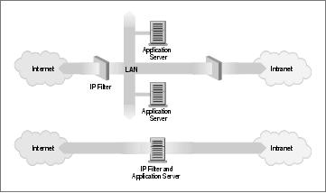
9.2. What Is a Firewall?
A firewall is a secure and trusted machine that sits between a private network and a public network. [59] The
firewall machine is configured with a set of rules that determine which network traffic will be allowed to pass
and which will be blocked or refused. In some large organizations, you may even find a firewall located
inside their corporate network to segregate sensitive areas of the organization from other employees. Many
cases of computer crime occur from within an organization, not just from outside.
Firewalls can be constructed in quite a variety of ways. The most sophisticated arrangement involves a
number of separate machines and is known as a perimeter network. Two machines act as "filters" called
chokes to allow only certain types of network traffic to pass, and between these chokes reside network
servers such as a mail gateway or a World Wide Web proxy server. This configuration can be very safe and
easily allows quite a great range of control over who can connect both from the inside to the outside, and
from the outside to the inside. This sort of configuration might be used by large organizations.
Typically though, firewalls are single machines that serve all of these functions. These are a little less secure,
because if there is some weakness in the firewall machine itself that allows people to gain access to it, the
whole network security has been breached. Nevertheless, these types of firewalls are cheaper and easier to
manage than the more sophisticated arrangement just described. Figure 9−1 illustrates the two most common
firewall configurations.
Figure 9−1. The two major classes of firewall design
The Linux kernel provides a range of built−in features that allow it to function quite nicely as an IP firewall.
The network implementation includes code to do IP filtering in a number of different ways, and provides a
mechanism to quite accurately configure what sort of rules you'd like to put in place. The Linux firewall is
flexible enough to make it very useful in either of the configurations illustrated in Figure 9−1. Linux firewall
software provides two other useful features that we'll discuss in separate chapters: IP Accounting (Chapter
10) and IP masquerade (Chapter 11).
9.2. What Is a Firewall?
170
9.3. What Is IP Filtering?
IP filtering is simply a mechanism that decides which types of IP datagrams will be processed normally and
which will be discarded. By discarded we mean that the datagram is deleted and completely ignored, as if it
had never been received. You can apply many different sorts of criteria to determine which datagrams you
wish to filter; some examples of these are:
Protocol type: TCP, UDP, ICMP, etc.
•
Socket number (for TCP/UPD)
•
Datagram type: SYN/ACK, data, ICMP Echo Request, etc.
•
Datagram source address: where it came from
•
Datagram destination address: where it is going to
•
It is important to understand at this point that IP filtering is a network layer facility. This means it doesn't
understand anything about the application using the network connections, only about the connections
themselves. For example, you may deny users access to your internal network on the default telnet port, but if
you rely on IP filtering alone, you can't stop them from using the telnet program with a port that you do allow
to pass trhough your firewall. You can prevent this sort of problem by using proxy servers for each service
that you allow across your firewall. The proxy servers understand the application they were designed to proxy
and can therefore prevent abuses, such as using the telnet program to get past a firewall by using the World
Wide Web port. If your firewall supports a World Wide Web proxy, their telnet connection will always be
answered by the proxy and will allow only HTTP requests to pass. A large number of proxy−server programs
exist. Some are free software and many others are commercial products. The Firewall−HOWTO discusses
one popular set of these, but they are beyond the scope of this book.
The IP filtering ruleset is made up of many combinations of the criteria listed previously. For example, let's
imagine that you wanted to allow World Wide Web users within the Virtual Brewery network to have no
access to the Internet except to use other sites' web servers. You would configure your firewall to allow
forwarding of:
datagrams with a source address on Virtual Brewery network, a destination address of anywhere, and
•
with a destination port of 80 (WWW)
datagrams with a destination address of Virtual Brewery network and a source port of 80 (WWW)
•
from a source address of anywhere
Note that we've used two rules here. We have to allow our data to go out, but also the corresponding reply
data to come back in. In practice, as we'll see shortly, Linux simplifies this and allows us to specify this in
one command.
9.3. What Is IP Filtering?
171
9.4. Setting Up Linux for Firewalling
To build a Linux IP firewall, it is necessary to have a kernel built with IP firewall support and the
appropriate configuration utility. In all production kernels prior to the 2.2 series, you would use the
ipfwadm utility. The 2.2.x kernels marked the release of the third generation of IP firewall for Linux called
IP Chains. IP chains use a program similar to ipfwadm called ipchains. Linux kernels 2.3.15 and later
support the fourth generation of Linux IP firewall called netfilter. The netfilter code is the result of a large
redesign of the packet handling flow in Linux. The netfilter is a multifaceted creature, providing direct
backward−compatible support for both ipfwadm and ipchains as well as a new alternative command called
iptables. We'll talk about the differences between the three in the next few sections.
9.4.1. Kernel Configured with IP Firewall
The Linux kernel must be configured to support IP firewalling. There isn't much more to it than selecting the
appropriate options when performing a make menuconfig of your kernel.[60] We described how to do
this is in Chapter 3. In 2.2 kernels you should select the following options:
Networking options −−−>
[*] Network firewalls
[*] TCP/IP networking
[*] IP: firewalling
[*] IP: firewall packet logging
In kernels 2.4.0 and later you should select this option instead:
Networking options −−−>
[*] Network packet filtering (replaces ipchains)
IP: Netfilter Configuration −−−>
.
<M> Userspace queueing via NETLINK (EXPERIMENTAL)
<M> IP tables support (required for filtering/masq/NAT)
<M> limit match support
<M> MAC address match support
<M> netfilter MARK match support
<M> Multiple port match support
<M> TOS match support
<M> Connection state match support
<M> Unclean match support (EXPERIMENTAL)
<M> Owner match support (EXPERIMENTAL)
<M> Packet filtering
<M> REJECT target support
<M> MIRROR target support (EXPERIMENTAL)
.
<M> Packet mangling
<M> TOS target support
<M> MARK target support
<M> LOG target support
<M> ipchains (2.2−style) support
<M> ipfwadm (2.0−style) support
9.4. Setting Up Linux for Firewalling
172
Linux Network Administrators Guide
9.4.2. The ipfwadm Utility
The ipfwadm (IP Firewall Administration) utility is the tool used to build the firewall rules for all kernels
prior to 2.2.0. Its command syntax can be very confusing because it can do such a complicated range of
things, but we'll provide some common examples that will illustrate the most important variations of these.
The ipfwadm utility is included in most modern Linux distributions, but perhaps not by default. There may
be a specific software package for it that you have to install. If your distribution does not include it, you can
obtain the source package from ftp.xos.nl in the /pub/linux/ipfwadm/ directory, and compile it
yourself.
9.4.3. The ipchains Utility
Just as for the ipfwadm utility, the ipchains utility can be somewhat baffling to use at first. It provides all
of the flexibility of ipfwadm with a simplified command syntax, and additionally provides a chaining
mechanism that allows you to manage multiple rulesets and link them together. We'll cover rule chaining in a
separate section near the end of the chapter, because for most situations it is an advanced concept.
The ipchains command appears in most Linux distributions based on the 2.2 kernels. If you want to
compile it yourself, you can find the source package from its developer's site at
http://www.rustcorp.com/linux/ipchains/. Included in the source package is a wrapper script called
ipfwadm−wrapper that mimics the ipfwadm command, but actually invokes the ipchains command.
Migration of an existing firewall configuration is much more painless with this addition.
9.4.4. The iptables Utility
The syntax of the iptables utility is quite similar to that of the ipchains syntax. The changes are
improvements and a result of the tool being redesigned to be extensible through shared libraries. Just as for
ipchains, we'll present iptables equivalents of the examples so you can compare and contrast its syntax with
the others.
The iptables utility is included in the netfilter source package available at http://www.samba.org/netfilter/. It
will also be included in any Linux distribution based on the 2.4 series kernels.
We'll talk a bit about netfilter's huge step forward in a section of its own later in this chapter.
9.4.2. The ipfwadm Utility
173
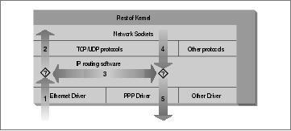
9.5. Three Ways We Can Do Filtering
Consider how a Unix machine, or in fact any machine capable of IP routing, processes IP datagrams. The
basic steps, shown in Figure 9−2 are:
Figure 9−2. The stages of IP datagram processing
The IP datagram is received. (1)
•
The incoming IP datagram is examined to determine if it is destined for a process on this machine.
•
If the datagram is for this machine, it is processed locally. (2)
•
If it is not destined for this machine, a search is made of the routing table for an appropriate route and
•
the datagram is forwarded to the appropriate interface or dropped if no route can be found. (3)
Datagrams from local processes are sent to the routing software for forwarding to the appropriate
•
interface. (4)
The outgoing IP datagram is examined to determine if there is a valid route for it to take, if not, it is
•
dropped.
The IP datagram is transmitted. (5)
•
In our diagram, the flow 1’3’5 represents our machine routing data between a host on our Ethernet network to
a host reachable via our PPP link. The flows 1’2 and 4’5 represent the data input and output flows of a
network program running on our local host. The flow 4’3’2 would represent data flow via a loopback
connection. Naturally data flows both into and out of network devices. The question marks on the diagram
represent the points where the IP layer makes routing decisions.
The Linux kernel IP firewall is capable of applying filtering at various stages in this process. That is, you can
filter the IP datagrams that come in to your machine, filter those datagrams being forwarded across your
machine, and filter those datagrams that are ready to be transmitted.
In ipfwadm and ipchains, an Input rule applies to flow 1 on the diagram, a Forwarding rule to flow 3, and an
Output rule to flow 5. We'll see when we discuss netfilter later that the points of interception have changed so
that an Input rule is applied at flow 2, and an Output rule is applied at flow 4. This has important implications
for how you structure your rulesets, but the general principle holds true for all versions of Linux firewalling.
This may seem unnecessarily complicated at first, but it provides flexibility that allows some very
sophisticated and powerful configurations to be built.
9.5. Three Ways We Can Do Filtering
174
9.6. Original IP Firewall (2.0 Kernels)
The first generation IP firewall support for Linux appeared in the 1.1 series kernel. It was a port of the BSD
ipfw firewall support to Linux by Alan Cox. The firewall support that appeared in the 2.0 series kernels and is
the second generation was enhanced by Jos Vos, Pauline Middelink, and others.
9.6.1. Using ipfwadm
The ipfwadm command was the configuration tool for the second generation Linux IP firewall. Perhaps the
simplest way to describe the use of the ipfwadm command is by example. To begin, let's code the example
we presented earlier.
9.6.1.1. A naïve example
Let's suppose that we have a network in our organization and that we are using a Linux−based firewall
machine to connect our network to the Internet. Additionally, let's suppose that we wish the users of that
network to be able to access web servers on the Internet, but to allow no other traffic to be passed.
We will put in place a forwarding rule to allow datagrams with a source address on our network and a
destination socket of port 80 to be forwarded out, and for the corresponding reply datagrams to be forwarded
back via the firewall.
Assume our network has a 24−bit network mask (Class C) and an address of 172.16.1.0. The rules we might
use are:
# ipfwadm −F −f
# ipfwadm −F −p deny
# ipfwadm −F −a accept −P tcp −S 172.16.1.0/24 −D 0/0 80
# ipfwadm −F −a accept −P tcp −S 0/0 80 −D 172.16.1.0/24
The −F command−line argument tells ipfwadm that this is a forwarding rule. The first command instructs
ipfwadm to "flush" all of the forwarding rules. This ensures we are working from a known state before we
begin adding specific rules.
The second rule sets our default forwarding policy. We tell the kernel to deny or disallow forwarding of IP
datagrams. It is very important to set the default policy, because this describes what will happen to any
datagrams that are not specifically handled by any other rule. In most firewall configurations, you will want
to set your default policy to "deny," as shown, to be sure that only the traffic you specifically allow past your
firewall is forwarded.
The third and fourth rules are the ones that implement our requirement. The third command allows our
datagrams out, and the fourth rule allows the responses back.
Let's review each of the arguments:
−F
This is a Forwarding rule.
9.6. Original IP Firewall (2.0 Kernels)
175
Linux Network Administrators Guide
−a accept
Append this rule with the policy set to "accept," meaning we will forward any datagrams that match
this rule.
−P tcp
This rule applies to tcp datagrams (as opposed to UDP or ICMP).
−S 172.16.1.0/24
The Source address must have the first 24 bits matching those of the network address 172.16.1.0.
−D 0/0 80
The destination address must have zero bits matching the address 0.0.0.0. This is really a shorthand
notation for "anything." The 80 is the destination port, in this case WWW. You may also use any
entry that appears in the /etc/services file to describe the port, so −D 0/0 www would have
worked just as well.
ipfwadm accepts network masks in a form with which you may not be familiar. The /nn notation is a means
of describing how many bits of the supplied address are significant, or the size of the mask. The bits are
always counted from left to right; some common examples are listed in Table 9−1.
Table 9−1. Common Netmask Bit Values
Netmask
Bits
255.0.0.0
8
255.255.0.0
16
255.255.255.0
24
255.255.255.128 25
255.255.255.192 26
255.255.255.224 27
255.255.255.240 28
255.255.255.248 29
255.255.255.252 30
We mentioned earlier that ipfwadm implements a small trick that makes adding these sorts of rules easier.
This trick is an option called −b, which makes the command a bidirectional rule.
The bidirectional flag allows us to collapse our two rules into one as follows:
# ipfwadm −F −a accept −P tcp −S 172.16.1.0/24 −D 0/0 80 −b
9.6. Original IP Firewall (2.0 Kernels)
176
Linux Network Administrators Guide
9.6.1.2. An important refinement
Take a closer look at our ruleset. Can you see that there is still one method of attack that someone outside
could use to defeat our firewall?
Our ruleset allows all datagrams from outside our network with a source port of 80 to pass. This will include
those datagrams with the SYN bit set! The SYN bit is what declares a TCP datagram to be a connection
request. If a person on the outside had privileged access to a host, they could make a connection through our
firewall to any of our hosts, provided they use port 80 at their end. This is not what we intended.
Fortunately there is a solution to this problem. The ipfwadm command provides another flag that allows us
to build rules that will match datagrams with the SYN bit set. Let's change our example to include such a
rule:
# ipfwadm −F −a deny −P tcp −S 0/0 80 −D 172.16.10.0/24 −y
# ipfwadm −F −a accept −P tcp −S 172.16.1.0/24 −D 0/0 80 −b
The −y flag causes the rule to match only if the SYN flag is set in the datagram. So our new rule says: "Deny
any TCP datagrams destined for our network from anywhere with a source port of 80 and the SYN bit set," or
"Deny any connection requests from hosts using port 80."
Why have we placed this special rule before the main rule? IP firewall rules operate so that the first match is
the rule that is used. Both rules would match the datagrams we want to stop, so we must be sure to put the
deny rule before the accept rule.
9.6.1.3. Listing our rules
After we've entered our rules, we ask ipfwadm to list them for us using the command:
# ipfwadm −F −l
This command will list all of the configured forwarding rules. The output should look something like this:
# ipfwadm −F −l
IP firewall forward rules, default policy: accept
type prot source destination ports
deny tcp anywhere 172.16.10.0/24 www −> any
acc tcp 172.16.1.0/24 anywhere any −> www
The ipfwadm command will attempt to translate the port number into a service name using the
/etc/services if an entry exists there.
The default output is lacking in some important detail for us. In the default listing output, we can't see the
effect of the −y argument. The ipfwadm command is able to produce a more detailed listing output if you
specify the −e (extended output) argument too. We won't show the whole output here because it is too wide
for the page, but it includes an opt (options) column that shows the −y option controlling SYN packets:
# ipfwadm −F −l −e
P firewall forward rules, default policy: accept
pkts bytes type prot opt tosa tosx ifname ifaddress source ...
0 0 deny tcp −−y− 0xFF 0x00 any any anywhere ...
9.6.1.2. An important refinement
177
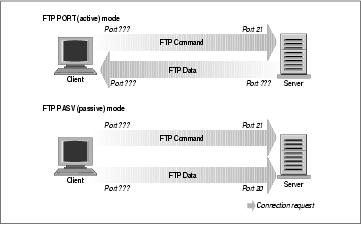
Linux Network Administrators Guide
0 0 acc tcp b−−− 0xFF 0x00 any any 172.16.1.0/24 ...
9.6.2. A More Complex Example
The previous example was a simple one. Not all network services are as simple as the WWW service to
configure; in practice, a typical firewall configuration would be much more complex. Let's look at another
common example, this time FTP. We want our internal network users to be able to log into FTP servers on
the Internet to read and write files. But we don't want people on the Internet to be able to log into our FTP
servers.
We know that FTP uses two TCP ports: port 20 (ftp−data) and port 21 (ftp), so:
# ipfwadm −a deny −P tcp −S 0/0 20 −D 172.16.1.0/24 −y
# ipfwadm −a accept −P tcp −S 172.16.1.0/24 −D 0/0 20 −b
#
# ipfwadm −a deny −P tcp −S 0/0 21 −D 172.16.1.0/24 −y
# ipfwadm −a accept −P tcp −S 172.16.1.0/24 −D 0/0 21 −b
Right? Well, not necessarily. FTP servers can operate in two different modes: passive mode and active
mode.[61] In passive mode, the FTP server listens for a connection from the client. In active mode, the server
actually makes the connection to the client. Active mode is usually the default. The differences are illustrated
in Figure 9−3.
Figure 9−3. FTP server modes
Many FTP servers make their data connection from port 20 when operating in active mode, which simplifies
things for us a little, but unfortunately not all do.[62]
But how does this affect us? Take a look at our rule for port 20, the FTP−data port. The rule as we have it
now assumes that the connection will be made by our client to the server. This will work if we use passive
mode. But it is very difficult for us to configure a satisfactory rule to allow FTP active mode, because we
may not know in advance what ports will be used. If we open up our firewall to allow incoming connections
on any port, we are exposing our network to attack on all services that accept connections.
The dilemna is most safely resolved by insisting that our users operate in passive mode. Most FTP servers
and many FTP clients will operate this way. The popular ncftp client also supports passive mode, but it may
require a small configuration change to make it default to passive mode. Many World Wide Web browsers
9.6.2. A More Complex Example
178
Linux Network Administrators Guide
such as the Netscape browser also support passive mode FTP, so it shouldn't be too hard to find appropriate
software to use. Alternatively, you can avoid the issue entirely by using an FTP proxy server that accepts a
connection from the internal network and establishes connections to the outside network.
In building your firewall, you will probably find a number of these sorts of problems. You should always
give careful thought to how a service actually operates to be sure you have put in place an appropriate ruleset
for it. A real firewall configuration can be quite complex.
9.6.3. Summary of ipfwadm Arguments
The ipfwadm has many different arguments that relate to IP firewall configuration. The general syntax is:
ipfwadm category command parameters [options]
Let's take a look at each of these.
9.6.3.1. Categories
One and only one of the following must be supplied. The category tells the firewall what sort of firewall rule
you are configuring:
−I
Input rule
−O
Output rule
−F
Forwarding rule
9.6.3.2. Commands
At least one of the following must be supplied and applies only to those rules that relate to the supplied
category. The command tells the firewall what action to take.
−a [policy]
Append a new rule
−i [policy]
Insert a new rule
9.6.3. Summary of ipfwadm Arguments
179
Linux Network Administrators Guide
−d [policy]
Delete an existing rule
−p policy
Set the default policy
−l
List all existing rules
−f
Flush all existing rules
The policies relevant to IP firewall and their meanings are:
accept
Allows matching datagrams to be received, forwarded, or transmitted
deny
Blocks matching datagrams from being received, forwarded, or transmitted
reject
Blocks matching datagrams from being received, forwarded, or transmitted, and sends the host that
sent the datagram and ICMP error message
9.6.3.3. Parameters
At least one of the following must be supplied. Use the parameters to specify to which datagrams this rule
applies:
−P protocol
Can be TCP, UDP, ICMP, or all. Example:
−P tcp
−S address[/mask] [port]
Source IP address that this rule will match. A netmask of /32 will be assumed if you don't supply
one. You may optionally specify which ports this rule will apply to. You must also specify the
protocol using the −P argument described above for this to work. If you don't specify a port or port
9.6.3.3. Parameters
180
Linux Network Administrators Guide
range, all ports will be assumed to match. Ports may be specified by name, using their
/etc/services entry if you wish. In the case of the ICMP protocol, the port field is used to
indicate the ICMP datagram types. Port ranges may be described; use the general syntax:
lowport:highport. Here is an example:
−S 172.29.16.1/24 ftp:ftp−data
−D address[/mask] [port]
Specify the destination IP address that this rule will match. The destination address is coded with the
same rules as the source address described previously. Here is an example:
−D 172.29.16.1/24 smtp
−V address
Specify the address of the network interface on which the packet is received (−I) or is being sent
(−O). This allows us to create rules that apply only to certain network interfaces on our machine.
Here is an example:
−V 172.29.16.1
−W name
Specify the name of the network interface. This argument works in the same way as the
−V argument, except you supply the device name instead of its address. Here is an example:
−W ppp0
9.6.3.4. Optional arguments
These arguments are sometimes very useful:
−b
This is used for bidirectional mode. This flag matches traffic flowing in either direction between the
specified source and destination. This saves you from having to create two rules: one for the forward
direction of a connection and one for the reverse.
−o
This enables logging of matching datagrams to the kernel log. Any datagram that matches this rule
will be logged as a kernel message. This is useful to enable you to detect unauthorized access.
−y
This is used to match TCP connect datagrams. The option causes the rule to match only datagrams
that attempt to establish TCP connections. Only datagrams that have their SYN bit set, but their ACK
bit unset, will match. This is useful to filter TCP connection attempts and is ignored for other
9.6.3.4. Optional arguments
181
Linux Network Administrators Guide
protocols.
−k
This is used to match TCP acknowledgement datagrams. This option causes the rule to match only
datagrams that are acknowledgements to packets attempting to establish TCP connections. Only
datagrams that have their ACK bit set will match. This is useful to filter TCP connection attempts
and is ignored for all other protocols.
9.6.3.5. ICMP datagram types
Each of the firewall configuration commands allows you to specify ICMP datagram types. Unlike TCP and
UDP ports, there is no convenient configuration file that lists the datagram types and their meanings. The
ICMP datagram types are defined in RFC−1700, the Assigned Numbers RFC. The ICMP datagram types are
also listed in one of the standard C library header files. The /usr/include/netinet/ip_icmp.h file,
which belongs to the GNU standard library package and is used by C programmers when writing network
software that uses the ICMP protocol, also defines the ICMP datagram types. For your convenience, we've
listed them in Table 9−2. The iptables command interface allows you to specify ICMP types by name, so
we've listed the mnemonics it uses, as well.
Table 9−2. ICMP Datagram Types
Type Number iptables Mnemonic
Type Description
0
echo−reply
Echo Reply
3
destination−unreachable Destination Unreachable
4
source−quench
Source Quench
5
redirect
Redirect
8
echo−request
Echo Request
11
time−exceeded
Time Exceeded
12
parameter−problem
Parameter Problem
13
timestamp−request
Timestamp Request
14
timestamp−reply
Timestamp Reply
15
none
Information Request
16
none
Information Reply
17
address−mask−request
Address Mask Request
18
address−mask−reply
Address Mask Reply
9.6.3.5. ICMP datagram types
182
9.7. IP Firewall Chains (2.2 Kernels)
Most aspects of Linux are evolving to meet the increasing demands of its users; IP firewall is no exception.
The traditional IP firewall implementation is fine for most applications, but can be clumsy and inefficient to
configure for complex environments. To solve this problem, a new method of configuring IP firewall and
related features was developed. This new method was called IP Firewall Chains and was first released for
general use in the 2.2.0 Linux kernel.
The IP Firewall Chains support was developed by Paul Russell and Michael Neuling. [63] Paul has
documented the IP Firewall Chains software in the IPCHAINS−HOWTO.
IP Firewall Chains allows you to develop classes of firewall rules to which you may then add and remove
hosts or networks. An artifact of firewall rule chaining is that it may improve firewall performance in
configurations in which there are lots of rules.
IP Firewall Chains are supported by the 2.2 series kernels and are also available as a patch against the 2.0.*
kernels. The HOWTO describes where to obtain the patch and provides lots of useful hints about how to
effectively use the ipchains configuration utility.
9.7.1. Using ipchains
There are two ways you can use the ipchains utility. The first way is to make use of the
ipfwadm−wrapper shell script, which is mostly a drop−in replacement for ipfwadm that drives the
ipchains program in the background. If you want to do this, then read no further. Instead, reread the previous
sections describing ipfwadm, and substitute ipfwadm−wrapper in its place. This will work, but there is no
guarantee that the script will be maintained, and you will not be taking advantage of any of the advanced
features that the IP Firewall Chains have to offer.
The second way to use ipchains is to learn its new syntax and modify any existing configurations you have to
use the new syntax instead of the old. With some careful consideration, you may find you can optimize your
configuration as you convert. The ipchains syntax is easier to learn than the ipfwadm, so this is a good
option.
The ipfwadm manipulated three rulesets for the purpose of configuring firewalling. With IP Firewall Chains
you can create arbitrary numbers of rulesets, each linked to one another, but there are three rulesets related to
firewalling that are always present. The standard rulesets are direct equivalents of those used with ipfwadm,
except they have names: input, forward and output.
Let's first look at the general syntax of the ipchains command, then we'll look at how we'd use
ipchains instead of ipfwadm without worrying about any of the advanced chaining features. We'll do this by
revisiting our previous examples.
9.7.2. ipchains Command Syntax
The ipchains command syntax is straightforward. We'll now look at the most important of those. The
general syntax of most ipchains commands is:
9.7. IP Firewall Chains (2.2 Kernels)
183
Linux Network Administrators Guide
ipchains command rule−specification options
9.7.2.1. Commands
There are a number of ways we can manipulate rules and rulesets with the ipchains command. Those
relevant to IP firewalling are:
−A chain
Append one or more rules to the end of the nominated chain. If a hostname is supplied as either
source or destination and it resolves to more than one IP address, a rule will be added for each
address.
−I chain rulenum
Insert one or more rules to the start of the nominated chain. Again, if a hostname is supplied in the
rule specification, a rule will be added for each of the addresses it resolves to.
−D chain
Delete one or more rules from the specified chain that matches the rule specification.
−D chain rulenum
Delete the rule residing at position rulenum in the specified chain. Rule positions start at one for
the first rule in the chain.
−R chain rulenum
Replace the rule residing at position rulenum in the specific chain with the supplied rule
specification.
−C chain
Check the datagram described by the rule specification against the specific chain. This command will
return a message describing how the datagram was processed by the chain. This is very useful for
testing your firewall configuration, and we look at it in detail a little later.
−L [chain]
List the rules of the specified chain, or for all chains if no chain is specified.
−F [chain]
Flush the rules of the specified chain, or for all chains if no chain is specified.
−Z [chain]
9.7.2.1. Commands
184
Linux Network Administrators Guide
Zero the datagram and byte counters for all rules of the specified chain, or for all chains if no chain is
specified.
−N chain
Create a new chain with the specified name. A chain of the same name must not already exist. This is
how user−defined chains are created.
−X [chain]
Delete the specified user−defined chain, or all user−defined chains if no chain is specified. For this
command to be successful, there must be no references to the specified chain from any other rules
chain.
−P chain policy
Set the default policy of the specified chain to the specified policy. Valid firewalling policies are
ACCEPT, DENY, REJECT, REDIR, or RETURN. ACCEPT, DENY, and REJECT have the same
meanings as those for the tradition IP firewall implementation. REDIR specifies that the datagram
should be transparently redirected to a port on the firewall host. The RETURN target causes the IP
firewall code to return to the Firewall Chain that called the one containing this rule and continues
starting at the rule after the calling rule.
9.7.2.2. Rule specification parameters
A number of ipchains parameters create a rule specification by determining what types of packets match. If
any of these parameters is omitted from a rule specification, its default is assumed:
−p [!]protocol
Specifies the protocol of the datagram that will match this rule. Valid protocol names are tcp, udp,
icmp, or all. You may also specify a protocol number here to match other protocols. For example,
you might use 4 to match the ipip encapsulation protocol. If the ! is supplied, the rule is negated
and the datagram will match any protocol other than the protocol specified. If this parameter isn't
supplied, it will default to all.
−s [!]address[/mask] [!] [port]
Specifies the source address and port of the datagram that will match this rule. The address may be
supplied as a hostname, a network name, or an IP address. The optional mask is the netmask to use
and may be supplied either in the traditional form (e.g., /255.255.255.0) or the modern form (e.g.,
/24). The optional port specifies the TCP or UDP port, or the ICMP datagram type that will match.
You may supply a port specification only if you've supplied the −p parameter with one of the tcp,
udp, or icmp protocols. Ports may be specified as a range by specifying the upper and lower limits
of the range with a colon as a delimiter. For example, 20:25 described all of the ports numbered
from 20 up to and including 25. Again, the ! character may be used to negate the values.
9.7.2.2. Rule specification parameters
185
Linux Network Administrators Guide
−d [!]address[/mask] [!] [port]
Specifies the destination address and port of the datagram that will match this rule. The coding of this
parameter is the same as that of the −s parameter.
−j target
Specifies the action to take when this rule matches. You can think of this parameter as meaning
jump to. Valid targets are ACCEPT, DENY, REJECT, REDIR, and RETURN. We described the
meanings of each of these targets earlier. However, you may also specify the name of a user−defined
chain where processing will continue. If this parameter is omitted, no action is taken on matching
rule datagrams at all other than to update the datagram and byte counters.
−i [!]interface−name
Specifies the interface on which the datagram was received or is to be transmitted. Again, the
! inverts the result of the match. If the interface name ends with +, then any interface that begins
with the supplied string will match. For example, −i ppp+ would match any PPP network device
and −i ! eth+ would match all interfaces except Ethernet devices.
[!] −f
Specifies that this rule applies to everything but the first fragment of a fragmented datagram.
9.7.2.3. Options
The following ipchains options are more general in nature. Some of them control rather esoteric features of
the IP chains software:
−b
Causes the command to generate two rules. One rule matches the parameters supplied, and the other
rule added matches the corresponding parameters in the reverse direction.
−v
Causes ipchains to be verbose in its output. It will supply more information.
−n
Causes ipchains to display IP address and ports as numbers without attempting to resolve them to
their corresponding names.
−l
Enables kernel logging of matching datagrams. Any datagram that matches the rule will be logged by
the kernel using its printk() function, which is usually handled by the sysklogd program and
written to a log file. This is useful for making unusual datagrams visible.
9.7.2.3. Options
186
Linux Network Administrators Guide
−o[maxsize]
Causes the IP chains software to copy any datagrams matching the rule to the userspace netlink
device. The maxsize argument limits the number of bytes from each datagram that are passed to the
netlink device. This option is of most use to software developers, but may be exploited by software
packages in the future.
−m markvalue
Causes matching datagrams to be marked with a value. Mark values are unsigned 32−bit numbers. In
existing implementations this does nothing, but at some point in the future, it may determine how the
datagram is handled by other software such as the routing code. If a markvalue begins with a + or −,
the value is added or subtracted from the existing markvalue.
−t andmask xormask
Enables you to manipulate the type of service bits in the IP header of any datagram that matches
this rule. The type of service bits are used by intelligent routers to prioritize datagrams before
forwarding them. The Linux routing software is capable of this sort prioritization. The andmask and
xormask represent bit masks that will be logically ANDed and ORed with the type of service bits of
the datagram respectively. This is an advanced feature that is discussed in more detail in the
IPCHAINS−HOWTO.
−x
Causes any numbers in the ipchains output to be expanded to their exact values with no rounding.
−y
Causes the rule to match any TCP datagram with the SYN bit set and the ACK and FIN bits clear.
This is used to filter TCP connection requests.
9.7.3. Our Naïve Example Revisited
Let's again suppose that we have a network in our organization and that we are using a Linux−based firewall
machine to allow our users access to WWW servers on the Internet, but to allow no other traffic to be passed.
If our network has a 24−bit network mask (class C) and has an address of 172.16.1.0, we'd use the following
ipchains rules:
# ipchains −F forward
# ipchains −P forward DENY
# ipchains −A forward −s 0/0 80 −d 172.16.1.0/24 −p tcp −y −j DENY
# ipchains −A forward −s 172.16.1.0/24 −d 0/0 80 −p tcp −b −j ACCEPT
The first of the commands flushes all of the rules from the forward rulesets and the second set of
commands sets the default policy of the forward ruleset to DENY. Finally, the third and fourth commands
do the specific filtering we want. The fourth command allows datagrams to and from web servers on the
9.7.3. Our Naïve Example Revisited
187
Linux Network Administrators Guide
outside of our network to pass, and the third prevents incoming TCP connections with a source port of 80.
If we now wanted to add rules that allowed passive mode only access to FTP servers in the outside network,
we'd add these rules:
# ipchains −A forward −s 0/0 20 −d 172.16.1.0/24 −p tcp −y −j DENY
# ipchains −A forward −s 172.16.1.0/24 −d 0/0 20 −p tcp −b −j ACCEPT
# ipchains −A forward −s 0/0 21 −d 172.16.1.0/24 −p tcp −y −j DENY
# ipchains −A forward −s 172.16.1.0/24 −d 0/0 21 −p tcp −b −j ACCEPT
9.7.4. Listing Our Rules with ipchains
To list our rules with ipchains, we use its −L argument. Just as with ipfwadm, there are arguments that
control the amount of detail in the output. In its simplest form, ipchains produces output that looks like:
# ipchains −L −n
Chain input (policy ACCEPT):
Chain forward (policy DENY):
target prot opt source destination ports
DENY tcp −y−−−− 0.0.0.0/0 172.16.1.0/24 80 −> *
ACCEPT tcp −−−−−− 172.16.1.0/24 0.0.0.0/0 * −> 80
ACCEPT tcp −−−−−− 0.0.0.0/0 172.16.1.0/24 80 −> *
ACCEPT tcp −−−−−− 172.16.1.0/24 0.0.0.0/0 * −> 20
ACCEPT tcp −−−−−− 0.0.0.0/0 172.16.1.0/24 20 −> *
ACCEPT tcp −−−−−− 172.16.1.0/24 0.0.0.0/0 * −> 21
ACCEPT tcp −−−−−− 0.0.0.0/0 172.16.1.0/24 21 −> *
Chain output (policy ACCEPT):
If you don't supply the name of a chain to list, ipchains will list all rules in all chains. The −n argument in
our example tells ipchains not to attempt to convert any address or ports into names. The information
presented should be self−explanatory.
A verbose form, invoked by the −u option, provides much more detail. Its output adds fields for the datagram
and byte counters, Type of Service AND and XOR flags, the interface name, the mark, and the outsize.
All rules created with ipchains have datagram and byte counters associated with them. This is how IP
Accounting is implemented and will be discussed in detail in Chapter 10. By default these counters are
presented in a rounded form using the suffixes K and M to represent units of one thousand and one million,
respectively. If the −x argument is supplied, the counters are expanded to their full unrounded form.
9.7.5. Making Good Use of Chains
You now know that the ipchains command is a replacement for the ipfwadm with a simpler command−line
syntax and some interesting enhancements, but you're no doubt wanting to know where you'd use the
user−defined chains and why. You'll also probably want to know how to use the support scripts that
accompany the ipchains command in its software package. We'll now explore these subjects and address the
questions.
9.7.4. Listing Our Rules with ipchains
188
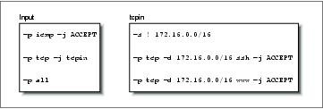
Linux Network Administrators Guide
9.7.5.1. User−defined chains
The three rulesets of the traditional IP firewall code provided a mechanism for building firewall
configurations that were fairly simple to understand and manage for small networks with simple firewalling
requirements. When the configuration requirements are not simple, a number of problems become apparent.
Firstly, large networks often require much more than the small number of firewalling rules we've seen so far;
inevitably needs arise that require firewalling rules added to cover special case scenarios. As the number of
rules grows, the performance of the firewall deterioriates as more and more tests are conducted on each
datagram and managability becomes an issue. Secondly, it is not possible to enable and disable sets of rules
atomically; instead, you are forced to expose yourself to attack while you are in the middle of rebuilding your
ruleset.
The design of IP Firewall Chains helps to alleviate these problems by allowing the network administrator to
create arbitrary sets of firwewall rules that we can link to the three inbuilt rulesets. We can use the −N option
of ipchains to create a new chain with any name we please of eight characters or less. (Restricting the name
to lowercase letters only is probably a good idea.) The −j option configures the action to take when a
datagram matches the rule specification. The −j option specifies that if a datagram matches a rule, further
testing should be performed against a user−defined chain. We'll illustrate this with a diagram.
Consider the following ipchains commands:
ipchains −P input DENY
ipchains −N tcpin
ipchains −A tcpin −s ! 172.16.0.0/16
ipchains −A tcpin −p tcp −d 172.16.0.0/16 ssh −j ACCEPT
ipchains −A tcpin −p tcp −d 172.16.0.0/16 www −j ACCEPT
ipchains −A input −p tcp −j tcpin
ipchains −A input −p all
We set the default input chain policy to deny. The second command creates a user−defined chain called
tcpin. The third command adds a rule to the tcpin chain that matches any datagram that was sourced
from outside our local network; the rule takes no action. This rule is an accounting rule and will be discussed
in more detail in Chapter 10. The next two rules match any datagram that is destined for our local network
and either of the ssh or www ports; datagrams matching these rules are accepted. The next rule is when the
real ipchains magic begins. It causes the firewall software to check any datagram of protocol TCP against the
tcpin user−defined chain. Lastly, we add a rule to our input chain that matches any datagram; this is
another accounting rule. They will produce the following Firewall Chains shown in Figure 9−4.
Figure 9−4. A simple IP chain ruleset
Our input and tcpin chains are populated with our rules. Datagram processing always beings at one of
the inbuilt chains. We'll see how our user−defined chain is called into play by following the processing path
of different types of datagrams.
9.7.5.1. User−defined chains
189
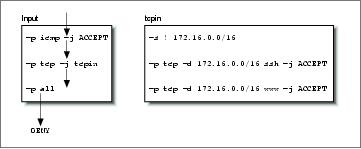
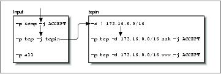
Linux Network Administrators Guide
First, let's look at what happens when a UDP datagram for one of our hosts is received. Figure 9−5 illustrates
the flow through the rules.
Figure 9−5. The sequence of rules tested for a received UDP datagram
The datagram is received by the input chain and falls through the first two rules because they match ICMP
and TCP protocols, respectively. It matches the third rule in the input chain, but it doesn't specify a target,
so its datagram and byte counters are updated, but no other action takes place. The datagram reaches the end
of the input chain, meets with the default input chain policy, and is denied.
To see our user−defined chain in operation, let's now consider what happens when we receive a TCP
datagram destined for the ssh port of one of our hosts. The sequence is shown in Figure 9−6.
Figure 9−6. The rules flow for a received TCP datagram for ssh
This time the second rule in the input chain does match and it specifies a target of tcpin, our
user−defined chain. Specifying a user−defined chain as a target causes the datagram to be tested against the
rules in that chain, so the next rule tested is the first rule in the tcpin chain. The first rule matches any
datagram that has a source address outside our local network and specifies no target, so it too is an accounting
rule and testing falls through to the next rule. The second rule in our tcpin chain does match and specifies a
target of ACCEPT. We have arrived at target, so no further firewall processing occurs. The datagram is
accepted.
Finally, let's look at what happens when we reach the end of a user−defined chain. To see this, we'll map the
flow for a TCP datagram destined for a port other than than the two we are handling specifically, as shown in
Figure 9−7.
Figure 9−7. The rules flow for a received TCP datagram for telnet
9.7.5.1. User−defined chains
190
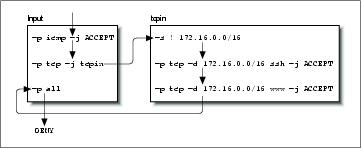
Linux Network Administrators Guide
The user−defined chains do not have default policies. When all rules in a user−defined chain have been
tested, and none have matched, the firewall code acts as though a RETURN rule were present, so if this isn't
what you want, you should ensure you supply a rule at the end of the user−defined chain that takes whatever
action you wish. In our example, our testing returns to the rule in the input ruleset immediately following
the one that moved us to our user−defined chain. Eventually we reach the end of the input chain, which
does have a default policy and our datagram is denied.
This example is very simple, but illustrates our point. A more practical use of IP chains would be much more
complex. A slightly more sophisticated example is provided in the following list of commands:
#
# Set default forwarding policy to REJECT
ipchains −P forward REJECT
#
# create our user−defined chains
ipchains −N sshin
ipchains −N sshout
ipchains −N wwwin
ipchains −N wwwout
#
# Ensure we reject connections coming the wrong way
ipchains −A wwwin −p tcp −s 172.16.0.0/16 −y −j REJECT
ipchains −A wwwout −p tcp −d 172.16.0.0/16 −y −j REJECT
ipchains −A sshin −p tcp −s 172.16.0.0/16 −y −j REJECT
ipchains −A sshout −p tcp −d 172.16.0.0/16 −y −j REJECT
#
# Ensure that anything reaching the end of a user−defined chain is rejected.
ipchains −A sshin −j REJECT
ipchains −A sshout −j REJECT
ipchains −A wwwin −j REJECT
ipchains −A wwwout −j REJECT
#
# divert www and ssh services to the relevant user−defined chain
ipchains −A forward −p tcp −d 172.16.0.0/16 ssh −b −j sshin
ipchains −A forward −p tcp −s 172.16.0.0/16 −d 0/0 ssh −b −j sshout
ipchains −A forward −p tcp −d 172.16.0.0/16 www −b −j wwwin
ipchains −A forward −p tcp −s 172.16.0.0/16 −d 0/0 www −b −j wwwout
#
# Insert our rules to match hosts at position two in our user−defined chains.
ipchains −I wwwin 2 −d 172.16.1.2 −b −j ACCEPT
ipchains −I wwwout 2 −s 172.16.1.0/24 −b −j ACCEPT
ipchains −I sshin 2 −d 172.16.1.4 −b −j ACCEPT
ipchains −I sshout 2 −s 172.16.1.4 −b −j ACCEPT
ipchains −I sshout 2 −s 172.16.1.6 −b −j ACCEPT
#
In this example, we've used a selection of user−defined chains both to simplify management of our firewall
configuration and improve the efficiency of our firewall as compared to a solution involving only the built−in
9.7.5.1. User−defined chains
191
Linux Network Administrators Guide
chains.
Our example creates user−defined chains for each of the ssh and www services in each connection direction.
The chain called wwwout is where we place rules for hosts that are allowed to make outgoing World Wide
Web connections, and sshin is where we define rules for hosts to which we want to allow incoming ssh
connections. We've assumed that we have a requirement to allow and deny individual hosts on our network
the ability to make or receive ssh and www connections. The simplication occurs because the user−defined
chains allow us to neatly group the rules for the host incoming and outgoing permissions rather than
muddling them all together. The improvement in efficiency occurs because for any particular datagram, we
have reduced the average number of tests required before a target is found. The efficiency gain increases as
we add more hosts. If we hadn't used user−defined chains, we'd potentially have to search the whole list of
rules to determine what action to take with each and every datagram received. Even if we assume that each of
the rules in our list matches an equal proportion of the total number of datagrams processed, we'd still be
searching half the list on average. User−defined chains allow us to avoid testing large numbers of rules if the
datagram being tested doesn't match the simple rule in the built−in chain that jumps to them.
9.7.5.2. The ipchains support scripts
The ipchains software package is supplied with three support scripts. The first of these we've discussed
briefly already, while the remaining two provide an easy and convenient means of saving and restoring your
firewall configuration.
The ipfwadm−wrapper script emulates the command−line syntax of the ipfwadm command, but drives the
ipchains command to build the firewall rules. This is a convenient way to migrate your existing firewall
configuration to the kernel or an alternative to learning the ipchains syntax. The ipfwadm−wrapper script
behaves differently from the ipfwadm command in two ways: firstly, because the ipchains command doesn't
support specification of an interface by address, the ipfwadm−wrapper script accepts an argument of −V but
attempts to convert it into the ipchains equivalent of a −W by searching for the interface name configured
with the supplied address. The ipfwadm−wrapper script will always provide a warning when you use the
−V option to remind you of this. Secondly, fragment accounting rules are not translated correctly.
The ipchains−save and ipchains−restore scripts make building and modifying a firewall configuration
much simpler. The ipchains−save command reads the current firewall configuration and writes a simplified
form to the standard output. The ipchains−restore command reads data in the output format of the
ipchains−save command and configures the IP firewall with these rules. The advantage of using these scripts
over directly modifying your firewall configuration script and testing the configuration is the ability to
dynamically build your configuration once and then save it. You can then restore that configuration, modify
it, and resave it as you please.
To use the scripts, you'd enter something like:
ipchains−save >/var/state/ipchains/firewall.state
to save your current firewall configuration. You'd restore it, perhaps at boot time, with:
ipchains−restore </var/state/ipchains/firewall.state
The ipchains−restore script checks if any user−defined chain listed in its input already exists. If you've
supplied the −f argument, it will automatically flush the rules from the user−defined chain before
configuring those in the input. The default behavior asks you whether to skip this chain or to flush it.
9.7.5.2. The ipchains support scripts
192
Linux Network Administrators Guide
9.7.5.2. The ipchains support scripts
193
9.8. Netfilter and IP Tables (2.4 Kernels)
While developing IP Firewall Chains, Paul Russell decided that IP firewalling should be less difficult; he
soon set about the task of simplifying aspects of datagram processing in the kernel firewalling code and
produced a filtering framework that was both much cleaner and much more flexible. He called this new
framework netfilter.
Note: At the time of preparation of this book the netfilter design had not yet stabilized. We
hope you'll forgive any errors in the description of netfilter or its associated configuration
tools that result from changes that occurred after preparation of this material. We considered
the netfilter work important enough to justify the inclusion of this material, despite parts of it
being speculative in nature. If you're in any doubt, the relevant HOWTO documents will
contain the most accurate and up−to−date information on the detailed issues associated with
the netfilter configuration.
So what was wrong with IP chains? They vastly improved the efficiency and management of firewall rules.
But the way they processed datagrams was still complex, especially in conjunction with firewall−related
features like IP masquerade (discussed in Chapter 11) and other forms of address translation. Part of this
complexity existed because IP masquerade and Network Address Translation were developed independently
of the IP firewalling code and integrated later, rather than having been designed as a true part of the firewall
code from the start. If a developer wanted to add yet more features in the datagram processing sequence, he
would have had difficulty finding a place to insert the code and would have been forced to make changes in
the kernel in order to do so.
Still, there were other problems. In particular, the input chain described input to the IP networking layer as
a whole. The input chain affected both datagrams to be destined for this host and datagrams to be routed
by this host. This was somewhat counterintuitive because it confused the function of the input chain with that
of the forward chain, which applied only to datagrams to be forwarded, but which always followed the input
chain. If you wanted to treat datagrams for this host differently from datagrams to be forwarded, it was
necessary to build complex rules that excluded one or the other. The same problem applied to the output
chain.
Inevitably some of this complexity spilled over into the system administrator's job because it was reflected in
the way that rulesets had to be designed. Moreover, any extensions to filtering required direct modifications
to the kernel, because all filtering policies were implemented there and there was no way of providing a
transparent interface into it. netfilter addresses both the complexity and the rigidity of older solutions by
implementing a generic framework in the kernel that streamlines the way datagrams are processed and
provides a capability to extend filtering policy without having to modify the kernel.
Let's take a look at two of the key changes made. Figure 9−8 illustrates how datagrams are processed in the
IP chains implementation, while Figure 9−9 illustrates how they are processed in the
netfilter implementation. The key differences are the removal of the masquerading function from the core
code and a change in the locations of the input and output chains. To accompany these changes, a new and
extensible configuration tool called iptables was created.
In IP chains, the input chain applies to all datagrams received by the host, irrespective of whether they are
destined for the local host or routed to some other host. In netfilter, the input chain applies only to datagrams
destined for the local host, and the forward chain applies only to datagrams destined for another host.
Similarly, in IP chains, the output chain applies to all datagrams leaving the local host, irrespective of
whether the datagram is generated on the local host or routed from some other host. In netfilter, the output
9.8. Netfilter and IP Tables (2.4 Kernels)
194
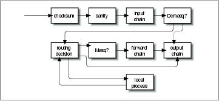
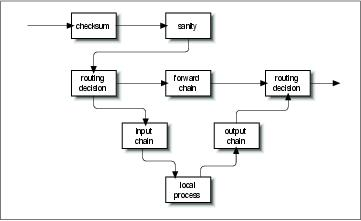
Linux Network Administrators Guide
chain applies only to datagrams generated on this host and does not apply to datagrams being routed from
another host. This change alone offers a huge simplification of many firewall configurations.
Figure 9−8. Datagram processing chain in IP chains
In Figure 9−8, the components labeled demasq and masq are separate kernel components responsible
for the incoming and outgoing processing of masqueraded datagrams. These have been reimplemented as
netfilter modules.
Consider the case of a configuration for which the default policy for each of the input, forward, and output
chains is deny. In IP chains, six rules would be needed to allow any session through a firewall host: two
each in the input, forward, and output chains (one would cover each forward path and one would cover each
return path). You can imagine how this could easily become extremely complex and difficult to manage when
you want to mix sessions that could be routed and sessions that could connect to the local host without being
routed. IP chains allow you to create chains that would simplify this task a little, but the design isn't obvious
and requires a certain level of expertise.
In the netfilter implementation with iptables, this complexity disappears completely. For a service to be
routed across the firewall host, but not terminate on the local host, only two rules are required: one each for
the forward and the reverse directions in the forward chain. This is the obvious way to design firewalling
rules, and will serve to simplify the design of firewall configurations immensely.
Figure 9−9. Datagram processing chain in netfilter
The PACKET−FILTERING−HOWTO offers a detailed list of the changes that have been made, so let's
focus on the more practical aspects here.
9.8. Netfilter and IP Tables (2.4 Kernels)
195
Linux Network Administrators Guide
9.8.1. Backward Compatability with ipfwadmand ipchains
The remarkable flexibility of Linux netfilter is illustrated by its ability to emulate the ipfwadm and
ipchains interfaces. Emulation makes transition to the new generation of firewall software a little easier.
The two netfilter kernel modules called ipfwadm.o and ipchains.o provide backward compatibility
for ipfwadm and ipchains. You may load only one of these modules at a time, and use one only if the
ip_tables.o module is not loaded. When the appropriate module is loaded, netfilter works exactly like
the former firewall implementation.
netfilter mimics the ipchains interface with the following commands:
rmmod ip_tables
modprobe ipchains
ipchains ...
9.8.2. Using iptables
The iptables utility is used to configure netfilter filtering rules. Its syntax borrows heavily from the
ipchains command, but differs in one very significant respect: it is extensible. What this means is that its
functionality can be extended without recompiling it. It manages this trick by using shared libraries. There are
standard extensions and we'll explore some of them in a moment.
Before you can use the iptables command, you must load the netfilter kernel module that provides support
for it. The easiest way to do this is to use the modprobe command as follows:
modprobe ip_tables
The iptables command is used to configure both IP filtering and Network Address Translation. To facilitate
this, there are two tables of rules called filter and nat. The filter table is assumed if you do not specify the
−t option to override it. Five built−in chains are also provided. The INPUT and FORWARD chains are
available for the filter table, the PREROUTING and POSTROUTING chains are available for the
nat table, and the OUTPUT chain is available for both tables. In this chapter we'll discuss only the
filter table. We'll look at the nat table in Chapter 11
The general syntax of most iptables commands is:
iptables command rule−specification extensions
Now we'll take a look at some options in detail, after which we'll review some examples.
9.8.2.1. Commands
There are a number of ways we can manipulate rules and rulesets with the iptables command. Those relevant
to IP firewalling are:
9.8.1. Backward Compatability with ipfwadmand ipchains
196
Linux Network Administrators Guide
−A chain
Append one or more rules to the end of the nominated chain. If a hostname is supplied as either a
source or destination and it resolves to more than one IP address, a rule will be added for each
address.
−I chain rulenum
Insert one or more rules to the start of the nominated chain. Again, if a hostname is supplied in the
rule specification, a rule will be added for each of the addresses to which it resolves.
−D chain
Delete one or more rules from the specified chain matching the rule specification.
−D chain rulenum
Delete the rule residing at position rulenum in the specified chain. Rule positions start at 1 for the
first rule in the chain.
−R chain rulenum
Replace the rule residing at position rulenum in the specific chain with the supplied rule
specification.
−C chain
Check the datagram described by the rule specification against the specific chain. This command will
return a message describing how the chain processed the datagram. This is very useful for testing
your firewall configuration and we will look at it in detail later.
−L [chain]
List the rules of the specified chain, or for all chains if no chain is specified.
−F [chain]
Flush the rules of the specified chain, or for all chains if no chain is specified.
−Z [chain]
Zero the datagram and byte counters for all rules of the specified chain, or for all chains if no chain is
specified.
−N chain
Create a new chain with the specified name. A chain of the same name must not already exist. This is
how user−defined chains are created.
−X [chain]
9.8.1. Backward Compatability with ipfwadmand ipchains
197
Linux Network Administrators Guide
Delete the specified user−defined chain, or all user−defined chains if no chain is specified. For this
command to be successful, there must be no references to the specified chain from any other rules
chain.
−P chain policy
Set the default policy of the specified chain to the specified policy. Valid firewalling policies are
ACCEPT, DROP, QUEUE, and RETURN. ACCEPT allows the datagram to pass. DROP causes the
datagram to be discarded. QUEUE causes the datagram to be passed to userspace for further
processing. The RETURN target causes the IP firewall code to return to the Firewall Chain that called
the one containing this rule, and continue starting at the rule after the calling rule.
9.8.2.2. Rule specification parameters
There are a number of iptables parameters that constitute a rule specification. Wherever a rule specification
is required, each of these parameters must be supplied or their default will be assumed.
−p [!]protocol
Specifies the protocol of the datagram that will match this rule. Valid protocol names are tcp, udp,
icmp, or a number, if you know the IP protocol number.[64] For example, you might use 4 to match
the ipip encapsulation protocol. If the ! character is supplied, the rule is negated and the datagram
will match any protocol other than the specified protocol. If this parameter isn't supplied, it will
default to match all protocols.
−s [!]address[/mask]
Specifies the source address of the datagram that will match this rule. The address may be supplied as
a hostname, a network name, or an IP address. The optional mask is the netmask to use and may be
supplied either in the traditional form (e.g., /255.255.255.0) or in the modern form (e.g., /24).
−d [!]address[/mask]
Specifies the destination address and port of the datagram that will match this rule. The coding of this
parameter is the same as that of the −s parameter.
−j target
Specifies what action to take when this rule matches. You can think of this parameter as meaning
jump to. Valid targets are ACCEPT, DROP, QUEUE, and RETURN. We described the meanings of
each of these previously in the "Commands" section. You may also specify the name of a
user−defined chain where processing will continue. You may also supply the name of a target
supplied by an extension. We'll talk about extensions shortly. If this parameter is omitted, no action is
taken on matching datagrams at all, other than to update the datagram and byte counters of this rule.
−i [!]interface−name
9.8.2.2. Rule specification parameters
198
Linux Network Administrators Guide
Specifies the interface on which the datagram was received. Again, the ! inverts the result of the
match. If the interface name ends with + then any interface that begins with the supplied string
will match. For example, −i ppp+ would match any PPP network device and −i ! eth+ would
match all interfaces except ethernet devices.
−o [!]interface−name
Specifies the interface on which the datagram is to be transmitted. This argument has the same
coding as the −i argument.
[!] −f
Specifies that this rule applies only to the second and later fragments of a fragmented datagram, not
to the first fragment.
9.8.2.3. Options
The following iptables options are more general in nature. Some of them control rather esoteric features of
the netfilter software.
−v
causes iptables to be verbose in its output; it will supply more information.
−n
causes iptables to display IP address and ports as numbers without attempting to resolve them to
their corresponding names.
−x
causes any numbers in the iptables output to be expanded to their exact values with no rounding.
− −line−numbers
causes line numbers to be displayed when listing rulesets. The line number will correspond to the
rule's position within the chain.
9.8.2.4. Extensions
We said earlier that the iptables utility is extensible through optional shared library modules. There are
some standard extensions that provide some of the features ipchains provided. To make use of an extension,
you must specify its name through the −m name argument to iptables. The following list shows the −m and
−p options that set up the extension's context, and the options provided by that extension.
9.8.2.3. Options
199
Linux Network Administrators Guide
9.8.2.4.1. TCP Extensions: used with −m tcp −p tcp
− −sport [!] [port[:port]]
Specifies the port that the datagram source must be using to match this rule. Ports may be specified as
a range by specifying the upper and lower limits of the range using the colon as a delimiter. For
example, 20:25 described all of the ports numbered 20 up to and including 25. Again, the
! character may be used to negate the values.
− −dport [!] [port[:port]]
Specifies the port that the datagram destination must be using to match this rule. The argument is
coded identically to the − −sport option.
− −tcp−flags [!] mask comp
Specifies that this rule should match when the TCP flags in the datagram match those specified by
mask and comp. mask is a comma−separated list of flags that should be examined when making the
test. comp is a comma−separated list of flags that must be set for the rule to match. Valid flags are:
SYN, ACK, FIN, RST, URG, PSH, ALL or NONE. This is an advanced option: refer to a good
description of the TCP protocol, such as RFC−793, for a description of the meaning and implication
of each of these flags. The ! character negates the rule.
[!] − −syn
Specifies the rule to match only datagrams with the SYN bit set and the ACK and FIN bits cleared.
Datagrams with these options are used to open TCP connections, and this option can therefore be
used to manage connection requests. This option is shorthand for:
− −tcp−flags SYN,RST,ACK SYN
When you use the negation operator, the rule will match all datagrams that do not have both the SYN and
ACK bits set.
9.8.2.4.2. UDP Extensions: used with −m udp −p udp
− −sport [!] [port[:port]]
Specifies the port that the datagram source must be using to match this rule. Ports may be specified as
a range by specifying the upper and lower limits of the range using the colon as a delimiter. For
example, 20:25 describes all of the ports numbered 20 up to and including 25. Again, the
! character may be used to negate the values.
− −dport [!] [port[:port]]
Specifies the port that the datagram destination must be using to match this rule. The argument is
coded identically to the − −sport option.
9.8.2.4. Extensions
200
Linux Network Administrators Guide
9.8.2.4.3. ICMP Extensions: used with −m icmp −p icmp
− −icmp−type [!] typename
Specifies the ICMP message type that this rule will match. The type may be specified by number or
name. Some valid names are: echo−request, echo−reply, source−quench,
time−exceeded, destination−unreachable, network−unreachable,
host−unreachable, protocol−unreachable, and port−unreachable.
9.8.2.4.4. MAC Extensions: used with −m mac
− −mac−source [!] address
Specifies the host's Ethernet address that transmitted the datagram that this rule will match. This only
makes sense in a rule in the input or forward chains because we will be transmitting any datagram
that passes the output chain.
9.8.3. Our Naïve Example Revisited, Yet Again
To implement our naïve example using the netfilter, you could simply load the ipchains.o module and
pretend it is the ipchains version. Instead, we'll reimplement it using iptables to illustrate how similar it is.
Yet again, let's suppose that we have a network in our organization and that we are using a Linux−based
firewall machine to allow our users to be able to access WWW servers on the Internet, but to allow no other
traffic to be passed.
If our network has a 24−bit network mask (class C) and has an address of 172.16.1.0, then we'd use the
following iptables rules:
# modprobe ip_tables
# iptables −F FORWARD
# iptables −P FORWARD DROP
# iptables −A FORWARD −m tcp −p tcp −s 0/0 −−sport 80 −d 172.16.1.0/24 /
−−syn −j DROP
# iptables −A FORWARD −m tcp −p tcp −s 172.16.1.0/24 −−sport /
80 −d 0/0 −j ACCEPT
# iptables −A FORWARD −m tcp −p tcp −d 172.16.1.0/24 −−dport 80 −s 0/0 −j /
ACCEPT
In this example the iptables commands are interpreted exactly as the equivalent ipchains commands. The
major exception that the ip_tables.o module must load. Note that iptables doesn't support the −b option,
so we must supply a rule for each direction.
9.8.2.4. Extensions
201
9.9. TOS Bit Manipulation
The Type Of Service (TOS) bits are a set of four−bit flags in the IP header. When any one of these bit flags
is set, routers may handle the datagram differently than datagrams with no TOS bits set. Each of the four bits
has a different purpose and only one of the TOS bits may be set at any time, so combinations are not allowed.
The bit flags are called Type of Service bits because they enable the application transmitting the data to tell
the network the type of network service it requires.
The classes of network service available are:
Minimum delay
Used when the time it takes for a datagram to travel from the source host to destination host (latency)
is most important. A network provider might, for example, use both optical fiber and satellite
network connections. Data carried across satellite connections has farther to travel and their latency is
generally therefore higher than for terrestrial−based network connections between the same
endpoints. A network provider might choose to ensure that datagrams with this type of service set are
not carried by satellite.
Maximum throughput
Used when the volume of data transmitted in any period of time is important. There are many types
of network applications for which latency is not particularly important but the network throughput is;
for example, bulk−file transfers. A network provider might choose to route datagrams with this type
of service set via high−latency, high−bandwidth routes, such as satellite connections.
Maximum reliability
Used when it is important that you have some certainty that the data will arrive at the destination
without retransmission being required. The IP protocol may be carried over any number of
underlying transmission mediums. While SLIP and PPP are adequate datalink protocols, they are not
as reliable as carrying IP over some other network, such as an X.25 network. A network provider
might make an alternate network available, offering high reliability, to carry IP that would be used if
this type of service is selected.
Minimum cost
Used when it is important to minimize the cost of data transmission. Leasing bandwidth on a satellite
for a transpacific crossing is generally less costly than leasing space on a fiber−optical cable over the
same distance, so network providers may choose to provide both and charge differently depending on
which you use. In this scenario, your minimum cost type of service bit may cause your datagrams
to be routed via the lower−cost satellite route.
9.9.1. Setting the TOS Bits Using ipfwadm or ipchains
The ipfwadm and ipchains commands deal with the TOS bits in much the same manner. In both cases you
specify a rule that matches the datagrams with particular TOS bits set, and use the −t argument to specify the
change you wish to make.
9.9. TOS Bit Manipulation
202
Linux Network Administrators Guide
The changes are specified using two−bit masks. The first of these bit masks is logically ANDed with the IP
options field of the datagram and the second is logically eXclusive−ORd with it. If this sounds complicated,
we'll give you the recipes required to enable each of the types of service in a moment.
The bit masks are specified using eight−bit hexadecimal values. Both ipfwadm and ipchains use the same
argument syntax:
−t andmask xormask
Fortunately the same mask arguments can be used each time you wish to set a particular type of service, to
save you having to work them out. They are presented with some suggested uses in Table 9−3.
Table 9−3. Suggested Uses for TOS Bitmasks
TOS
ANDmask XORmask Suggested Use
Minimum Delay
0x01
0x10
ftp, telnet, ssh
Maximum Throughput 0x01
0x08
ftp−data, www
Maximum Reliability
0x01
0x04
snmp, dns
Minimum Cost
0x01
0x02
nntp, smtp
9.9.2. Setting the TOS Bits Using iptables
The iptables tool allows you to specify rules that capture only datagrams with TOS bits matching some
predetermined value using the −m tos option, and for setting the TOS bits of IP datagrams matching a rule
using the −j TOS target. You may set TOS bits only on the FORWARD and OUTPUT chains. The matching
and the setting occur quite independently. You can configure all sort of interesting rules. For example, you
can configure a rule that discads all datagrams with certain TOS bit combinations, or a rule that sets the TOS
bits of datagrams only from certain hosts. Most often you will use rules that contain both matching and
setting to perform TOS bit translations, just as you could for ipfwadm or ipchains.
Rather than the complicated two−mask configuration of ipfwadm and ipchains, iptables uses the simpler
approach of plainly specifying what the TOS bits should match, or to what the TOS bits should be set.
Additionally, rather than having to remember and use the hexadecimal value, you may specify the TOS bits
using the more friendly mnemonics listed in the upcoming table.
The general syntax used to match TOS bits looks like:
−m tos −−tos mnemonic [other−args] −j target
The general syntax used to set TOS bits looks like:
[other−args] −j TOS −−set mnemonic
9.9.2. Setting the TOS Bits Using iptables
203
Linux Network Administrators Guide
Remember that these would typically be used together, but they can be used quite independently if you have a
configuration that requires it.
Mnemonic
Hexadecimal
Normal−Service
0x00
Minimize−Cost
0x02
Maximize−Reliability
0x04
Maximize−Throughput 0x08
Minimize−Delay
0x10
9.9.2. Setting the TOS Bits Using iptables
204
9.10. Testing a Firewall Configuration
After you've designed an appropriate firewall configuration, it's important to validate that it does in fact do
what you want it to do. One way to do this is to use a test host outside your network to attempt to pierce your
firewall: this can be quite clumsy and slow, though, and is limited to testing only those addresses that you can
actually use.
A faster and easier method is available with the Linux firewall implementation. It allows you to manually
generate tests and run them through the firewall configuration just as if you were testing with actual
datagrams. All varieties of the Linux kernel firewall software, ipfwadm, ipchains, and iptables, provide
support for this style of testing. The implementation involves use of the relevant check command.
The general test procedure is as follows:
Design and configure your firewall using
1.
ipfwadm, ipchains, or iptables.
Design a series of tests that will determine whether your firewall is actually working as you intend.
2.
For these tests you may use any source or destination address, so choose some address combinations
that should be accepted and some others that should be dropped. If you're allowing or disallowing
only certain ranges of addresses, it is a good idea to test addresses on either side of the boundary of
the rangeone address just inside the boundary and one address just outside the boundary. This will
help ensure that you have the correct boundaries configured, because it is sometimes easy to specify
netmasks incorrectly in your configuration. If you're filtering by protocol and port number, your tests
should also check all important combinations of these parameters. For example, if you intend to
accept only TCP under certain circumstances, check that UDP datagrams are dropped.
Develop
3.
ipfwadm, ipchains, or iptables rules to implement each test. It is probably worthwhile to
write all the rules into a script so you can test and re−test easily as you correct mistakes or change
your design. Tests use almost the same syntax as rule specifications, but the arguments take on
slightly differing meanings. For example, the source address argument in a rule specification
specifies the source address that datagrams matching this rule should have. The source address
argument in test syntax, in contrast, specifies the source address of the test datagram that will be
generated. For ipfwadm, you must use the −c option to specify that this command is a test, while for
ipchains and iptables, you must use the −C option. In all cases you must always specify the source
address, destination address, protocol, and interface to be used for the test. Other arguments, such as
port numbers or TOS bit settings, are optional.
Execute each test command and note the output. The output of each test will be a single word
4.
indicating the final target of the datagram after running it through the firewall configurationthat is,
where the processing ended. For ipchains and iptables, user−specified chains will be tested in
addition to the built−in ones.
Compare the output of each test against the desired result. If there are any discrepancies, you will
5.
need to analyse your ruleset to determine where you've made the error. If you've written your test
commands into a script file, you can easily rerun the test after correcting any errors in your firewall
configuration. It's a good practice to flush your rulesets completely and rebuild them from scratch,
rather than to make changes dynamically. This helps ensure that the active configuration you are
testing actually reflects the set of commands in your configuration script.
Let's take a quick look at what a manual test transcript would look like for our naïve example with ipchains.
You will remember that our local network in the example was 172.16.1.0 with a netmask of 255.255.255.0,
and we were to allow TCP connections out to web servers on the net. Nothing else was to pass our forward
chain. Start with a transmission that we know should work, a connection from a local host to a web server
outside:
9.10. Testing a Firewall Configuration
205
Linux Network Administrators Guide
# ipchains −C forward −p tcp −s 172.16.1.0 1025 −d 44.136.8.2 80 −i eth0
accepted
Note the arguments had to be supplied and the way they've been used to describe a datagram. The output of
the command indicates that that the datagram was accepted for forwarding, which is what we hoped for.
Now try another test, this time with a source address that doesn't belong to our network. This one should be
denied:
# ipchains −C forward −p tcp −s 172.16.2.0 1025 −d 44.136.8.2 80 −i eth0
denied
Try some more tests, this time with the same details as the first test, but with different protocols. These
should be denied, too:
# ipchains −C forward −p udp −s 172.16.1.0 1025 −d 44.136.8.2 80 −i eth0
denied
# ipchains −C forward −p icmp −s 172.16.1.0 1025 −d 44.136.8.2 80 −i eth0
denied
Try another destination port, again expecting it to be denied:
# ipchains −C forward −p tcp −s 172.16.1.0 1025 −d 44.136.8.2 23 −i eth0
denied
You'll go a long way toward achieving peace of mind if you design a series of exhaustive tests. While this
can sometimes be as difficult as designing the firewall configuration, it's also the best way of knowing that
your design is providing the security you expect of it.
9.10. Testing a Firewall Configuration
206
9.11. A Sample Firewall Configuration
We've discussed the fundamentals of firewall configuration. Let's now look at what a firewall configuration
might actually look like.
The configuration in this example has been designed to be easily extended and customized. We've provided
three versions. The first version is implemented using the ipfwadm command (or the
ipfwadm−wrapper script), the second uses ipchains, and the third uses iptables. The example doesn't
attempt to exploit user−defined chains, but it will show you the similarities and differences between the old
and new firewall configuration tool syntaxes:
#!/bin/bash
##########################################################################
# IPFWADM VERSION
# This sample configuration is for a single host firewall configuration
# with no services supported by the firewall machine itself.
##########################################################################
# USER CONFIGURABLE SECTION
# The name and location of the ipfwadm utility. Use ipfwadm−wrapper for
# 2.2.* kernels.
IPFWADM=ipfwadm
# The path to the ipfwadm executable.
PATH="/sbin"
# Our internal network address space and its supporting network device.
OURNET="172.29.16.0/24"
OURBCAST="172.29.16.255"
OURDEV="eth0"
# The outside address and the network device that supports it.
ANYADDR="0/0"
ANYDEV="eth1"
# The TCP services we wish to allow to pass − "" empty means all ports
# note: space separated
TCPIN="smtp www"
TCPOUT="smtp www ftp ftp−data irc"
# The UDP services we wish to allow to pass − "" empty means all ports
# note: space separated
UDPIN="domain"
UDPOUT="domain"
# The ICMP services we wish to allow to pass − "" empty means all types
# ref: /usr/include/netinet/ip_icmp.h for type numbers
# note: space separated
ICMPIN="0 3 11"
ICMPOUT="8 3 11"
# Logging; uncomment the following line to enable logging of datagrams
# that are blocked by the firewall.
# LOGGING=1
# END USER CONFIGURABLE SECTION
###########################################################################
9.11. A Sample Firewall Configuration
207
Linux Network Administrators Guide
# Flush the Incoming table rules
$IPFWADM −I −f
# We want to deny incoming access by default.
$IPFWADM −I −p deny
# SPOOFING
# We should not accept any datagrams with a source address matching ours
# from the outside, so we deny them.
$IPFWADM −I −a deny −S $OURNET −W $ANYDEV
# SMURF
# Disallow ICMP to our broadcast address to prevent "Smurf" style attack.
$IPFWADM −I −a deny −P icmp −W $ANYDEV −D $OURBCAST
# TCP
# We will accept all TCP datagrams belonging to an existing connection
# (i.e. having the ACK bit set) for the TCP ports we're allowing through.
# This should catch more than 95 % of all valid TCP packets.
$IPFWADM −I −a accept −P tcp −D $OURNET $TCPIN −k −b
# TCP − INCOMING CONNECTIONS
# We will accept connection requests from the outside only on the
# allowed TCP ports.
$IPFWADM −I −a accept −P tcp −W $ANYDEV −D $OURNET $TCPIN −y
# TCP − OUTGOING CONNECTIONS
# We accept all outgoing tcp connection requests on allowed TCP ports.
$IPFWADM −I −a accept −P tcp −W $OURDEV −D $ANYADDR $TCPOUT −y
# UDP − INCOMING
# We will allow UDP datagrams in on the allowed ports.
$IPFWADM −I −a accept −P udp −W $ANYDEV −D $OURNET $UDPIN
# UDP − OUTGOING
# We will allow UDP datagrams out on the allowed ports.
$IPFWADM −I −a accept −P udp −W $OURDEV −D $ANYADDR $UDPOUT
# ICMP − INCOMING
# We will allow ICMP datagrams in of the allowed types.
$IPFWADM −I −a accept −P icmp −W $ANYDEV −D $OURNET $UDPIN
# ICMP − OUTGOING
# We will allow ICMP datagrams out of the allowed types.
$IPFWADM −I −a accept −P icmp −W $OURDEV −D $ANYADDR $UDPOUT
# DEFAULT and LOGGING
# All remaining datagrams fall through to the default
# rule and are dropped. They will be logged if you've
# configured the LOGGING variable above.
#
if [ "$LOGGING" ]
then
# Log barred TCP
$IPFWADM −I −a reject −P tcp −o
# Log barred UDP
$IPFWADM −I −a reject −P udp −o
# Log barred ICMP
$IPFWADM −I −a reject −P icmp −o
fi
9.11. A Sample Firewall Configuration
208
Linux Network Administrators Guide
#
# end.
Now we'll reimplement it using the ipchains command:
#!/bin/bash
##########################################################################
# IPCHAINS VERSION
# This sample configuration is for a single host firewall configuration
# with no services supported by the firewall machine itself.
##########################################################################
# USER CONFIGURABLE SECTION
# The name and location of the ipchains utility.
IPCHAINS=ipchains
# The path to the ipchains executable.
PATH="/sbin"
# Our internal network address space and its supporting network device.
OURNET="172.29.16.0/24"
OURBCAST="172.29.16.255"
OURDEV="eth0"
# The outside address and the network device that supports it.
ANYADDR="0/0"
ANYDEV="eth1"
# The TCP services we wish to allow to pass − "" empty means all ports
# note: space separated
TCPIN="smtp www"
TCPOUT="smtp www ftp ftp−data irc"
# The UDP services we wish to allow to pass − "" empty means all ports
# note: space separated
UDPIN="domain"
UDPOUT="domain"
# The ICMP services we wish to allow to pass − "" empty means all types
# ref: /usr/include/netinet/ip_icmp.h for type numbers
# note: space separated
ICMPIN="0 3 11"
ICMPOUT="8 3 11"
# Logging; uncomment the following line to enable logging of datagrams
# that are blocked by the firewall.
# LOGGING=1
# END USER CONFIGURABLE SECTION
##########################################################################
# Flush the Input table rules
$IPCHAINS −F input
# We want to deny incoming access by default.
$IPCHAINS −P input deny
# SPOOFING
# We should not accept any datagrams with a source address matching ours
# from the outside, so we deny them.
$IPCHAINS −A input −s $OURNET −i $ANYDEV −j deny
9.11. A Sample Firewall Configuration
209
Linux Network Administrators Guide
# SMURF
# Disallow ICMP to our broadcast address to prevent "Smurf" style attack.
$IPCHAINS −A input −p icmp −w $ANYDEV −d $OURBCAST −j deny
# We should accept fragments, in ipchains we must do this explicitly.
$IPCHAINS −A input −f −j accept
# TCP
# We will accept all TCP datagrams belonging to an existing connection
# (i.e. having the ACK bit set) for the TCP ports we're allowing through.
# This should catch more than 95 % of all valid TCP packets.
$IPCHAINS −A input −p tcp −d $OURNET $TCPIN ! −y −b −j accept
# TCP − INCOMING CONNECTIONS
# We will accept connection requests from the outside only on the
# allowed TCP ports.
$IPCHAINS −A input −p tcp −i $ANYDEV −d $OURNET $TCPIN −y −j accept
# TCP − OUTGOING CONNECTIONS
# We accept all outgoing TCP connection requests on allowed TCP ports.
$IPCHAINS −A input −p tcp −i $OURDEV −d $ANYADDR $TCPOUT −y −j accept
# UDP − INCOMING
# We will allow UDP datagrams in on the allowed ports.
$IPCHAINS −A input −p udp −i $ANYDEV −d $OURNET $UDPIN −j accept
# UDP − OUTGOING
# We will allow UDP datagrams out on the allowed ports.
$IPCHAINS −A input −p udp −i $OURDEV −d $ANYADDR $UDPOUT −j accept
# ICMP − INCOMING
# We will allow ICMP datagrams in of the allowed types.
$IPCHAINS −A input −p icmp −w $ANYDEV −d $OURNET $UDPIN −j accept
# ICMP − OUTGOING
# We will allow ICMP datagrams out of the allowed types.
$IPCHAINS −A input −p icmp −i $OURDEV −d $ANYADDR $UDPOUT −j accept
# DEFAULT and LOGGING
# All remaining datagrams fall through to the default
# rule and are dropped. They will be logged if you've
# configured the LOGGING variable above.
#
if [ "$LOGGING" ]
then
# Log barred TCP
$IPCHAINS −A input −p tcp −l −j reject
# Log barred UDP
$IPCHAINS −A input −p udp −l −j reject
# Log barred ICMP
$IPCHAINS −A input −p icmp −l −j reject
fi
#
# end.
In our iptables example, we've switched to using the FORWARD ruleset because of the difference in meaning
of the INPUT ruleset in the netfilter implementation. This has implications for us; it means that none of the
rules protect the firewall host itself. To accurately mimic our ipchains example, we would replicate each of
9.11. A Sample Firewall Configuration
210
Linux Network Administrators Guide
our rules in the INPUT chain. For clarity, we've dropped all incoming datagrams received from our outside
interface instead.
#!/bin/bash
##########################################################################
# IPTABLES VERSION
# This sample configuration is for a single host firewall configuration
# with no services supported by the firewall machine itself.
##########################################################################
# USER CONFIGURABLE SECTION
# The name and location of the ipchains utility.
IPTABLES=iptables
# The path to the ipchains executable.
PATH="/sbin"
# Our internal network address space and its supporting network device.
OURNET="172.29.16.0/24"
OURBCAST="172.29.16.255"
OURDEV="eth0"
# The outside address and the network device that supports it.
ANYADDR="0/0"
ANYDEV="eth1"
# The TCP services we wish to allow to pass − "" empty means all ports
# note: comma separated
TCPIN="smtp,www"
TCPOUT="smtp,www,ftp,ftp−data,irc"
# The UDP services we wish to allow to pass − "" empty means all ports
# note: comma separated
UDPIN="domain"
UDPOUT="domain"
# The ICMP services we wish to allow to pass − "" empty means all types
# ref: /usr/include/netinet/ip_icmp.h for type numbers
# note: comma separated
ICMPIN="0,3,11"
ICMPOUT="8,3,11"
# Logging; uncomment the following line to enable logging of datagrams
# that are blocked by the firewall.
# LOGGING=1
# END USER CONFIGURABLE SECTION
###########################################################################
# Flush the Input table rules
$IPTABLES −F FORWARD
# We want to deny incoming access by default.
$IPTABLES −P FORWARD deny
# Drop all datagrams destined for this host received from outside.
$IPTABLES −A INPUT −i $ANYDEV −j DROP
# SPOOFING
# We should not accept any datagrams with a source address matching ours
# from the outside, so we deny them.
9.11. A Sample Firewall Configuration
211
Linux Network Administrators Guide
$IPTABLES −A FORWARD −s $OURNET −i $ANYDEV −j DROP
# SMURF
# Disallow ICMP to our broadcast address to prevent "Smurf" style attack.
$IPTABLES −A FORWARD −m multiport −p icmp −i $ANYDEV −d $OURNET −j DENY
# We should accept fragments, in iptables we must do this explicitly.
$IPTABLES −A FORWARD −f −j ACCEPT
# TCP
# We will accept all TCP datagrams belonging to an existing connection
# (i.e. having the ACK bit set) for the TCP ports we're allowing through.
# This should catch more than 95 % of all valid TCP packets.
$IPTABLES −A FORWARD −m multiport −p tcp −d $OURNET −−dports $TCPIN /
! −−tcp−flags SYN,ACK ACK −j ACCEPT
$IPTABLES −A FORWARD −m multiport −p tcp −s $OURNET −−sports $TCPIN /
! −−tcp−flags SYN,ACK ACK −j ACCEPT
# TCP − INCOMING CONNECTIONS
# We will accept connection requests from the outside only on the
# allowed TCP ports.
$IPTABLES −A FORWARD −m multiport −p tcp −i $ANYDEV −d $OURNET $TCPIN /
−−syn −j ACCEPT
# TCP − OUTGOING CONNECTIONS
# We will accept all outgoing tcp connection requests on the allowed /
TCP ports.
$IPTABLES −A FORWARD −m multiport −p tcp −i $OURDEV −d $ANYADDR /
−−dports $TCPOUT −−syn −j ACCEPT
# UDP − INCOMING
# We will allow UDP datagrams in on the allowed ports and back.
$IPTABLES −A FORWARD −m multiport −p udp −i $ANYDEV −d $OURNET /
−−dports $UDPIN −j ACCEPT
$IPTABLES −A FORWARD −m multiport −p udp −i $ANYDEV −s $OURNET /
−−sports $UDPIN −j ACCEPT
# UDP − OUTGOING
# We will allow UDP datagrams out to the allowed ports and back.
$IPTABLES −A FORWARD −m multiport −p udp −i $OURDEV −d $ANYADDR /
−−dports $UDPOUT −j ACCEPT
$IPTABLES −A FORWARD −m multiport −p udp −i $OURDEV −s $ANYADDR /
−−sports $UDPOUT −j ACCEPT
# ICMP − INCOMING
# We will allow ICMP datagrams in of the allowed types.
$IPTABLES −A FORWARD −m multiport −p icmp −i $ANYDEV −d $OURNET /
−−dports $ICMPIN −j ACCEPT
# ICMP − OUTGOING
# We will allow ICMP datagrams out of the allowed types.
$IPTABLES −A FORWARD −m multiport −p icmp −i $OURDEV −d $ANYADDR /
−−dports $ICMPOUT −j ACCEPT
# DEFAULT and LOGGING
# All remaining datagrams fall through to the default
# rule and are dropped. They will be logged if you've
# configured the LOGGING variable above.
#
if [ "$LOGGING" ]
then
# Log barred TCP
$IPTABLES −A FORWARD −m tcp −p tcp −j LOG
# Log barred UDP
$IPTABLES −A FORWARD −m udp −p udp −j LOG
# Log barred ICMP
9.11. A Sample Firewall Configuration
212
Linux Network Administrators Guide
$IPTABLES −A FORWARD −m udp −p icmp −j LOG
fi
#
# end.
In many simple situations, to use the sample all you have to do is edit the top section of the file labeled
USER CONFIGURABLE section to specify which protocols and datagrams type you wish to allow in and
out. For more complex configurations, you will need to edit the section at the bottom, as well. Remember,
this is a simple example, so scrutinize it very carefully to ensure it does what you want while implementing it.
9.11. A Sample Firewall Configuration
213
Chapter 10. IP Accounting
In todays world of commercial Internet service, it is becoming increasingly important to know how much
data you are transmitting and receiving on your network connections. If you are an Internet Service Provider
and you charge your customers by volume, this will be essential to your business. If you are a customer of an
Internet Service Provider that charges by data volume, you will find it useful to collect your own data to
ensure the accuracy of your Internet charges.
There are other uses for network accounting that have nothing to do with dollars and bills. If you manage a
server that offers a number of different types of network services, it might be useful to you to know exactly
how much data is being generated by each one. This sort of information could assist you in making decisions,
such as what hardware to buy or how many servers to run.
The Linux kernel provides a facility that allows you to collect all sorts of useful information about the
network traffic it sees. This facility is called IP accounting.
Chapter 10. IP Accounting
214
10.1. Configuring the Kernel for IP Accounting
The Linux IP accounting feature is very closely related to the Linux firewall software. The places you want
to collect accounting data are the same places that you would be interested in performing firewall filtering:
into and out of a network host, and in the software that does the routing of datagrams. If you haven't read the
section on firewalls, now is probably a good time to do so, as we will be using some of the concepts
described in Chapter 9.
To activate the Linux IP accounting feature, you should first see if your Linux kernel is configured for it.
Check to see if the /proc/net/ip_acct file exists. If it does, your kernel already supports IP accounting.
If it doesn't, you must build a new kernel, ensuring that you answer Y to the options in 2.0 and 2.2 series
kernels:
Networking options −−−>
[*] Network firewalls
[*] TCP/IP networking
...
[*] IP: accounting
or in 2.4 series kernels:
Networking options −−−>
[*] Network packet filtering (replaces ipchains)
10.1. Configuring the Kernel for IP Accounting
215
10.2. Configuring IP Accounting
Because IP accounting is closely related to IP firewall, the same tool was designated to configure it, so
ipfwadm, ipchains or iptables are used to configure IP accounting. The command syntax is very similar to
that of the firewall rules, so we won't focus on it, but we will discuss what you can discover about the nature
of your network traffic using this feature.
The general syntax for IP accounting with ipfwadm is:
# ipfwadm −A [direction] [command] [parameters]
The direction argument is new. This is simply coded as in, out, or both. These directions are from the
perspective of the linux machine itself, so in means data coming into the machine from a network
connection and out means data that is being transmitted by this host on a network connection. The
both direction is the sum of both the incoming and outgoing directions.
The general command syntax for ipchains and iptables is:
# ipchains −A chain rule−specification
# iptables −A chain rule−specification
The ipchains and iptables commands allow you to specify direction in a manner more consistent with the
firewall rules. IP Firewall Chains doesn't allow you to configure a rule that aggregates both directions, but it
does allow you to configure rules in the forward chain that the older implementation did not. We'll see the
difference that makes in some examples a little later.
The commands are much the same as firewall rules, except that the policy rules do not apply here. We can
add, insert, delete, and list accounting rules. In the case of ipchains and iptables, all valid rules are
accounting rules, and any command that doesn't specify the −j option performs accounting only.
The rule specification parameters for IP accounting are the same as those used for IP firewall. These are what
we use to define precisely what network traffic we wish to count and total.
10.2.1. Accounting by Address
Let's work with an example to illustrate how we'd use IP accounting.
Imagine we have a Linux−based router that serves two departments at the Virtual Brewery. The router has
two Ethernet devices, eth0 and eth1, each of which services a department; and a PPP device, ppp0, that
connects us via a high−speed serial link to the main campus of the Groucho Marx University.
Let's also imagine that for billing purposes we want to know the total traffic generated by each of the
departments across the serial link, and for management purposes we want to know the total traffic generated
between the two departments.
The following table shows the interface addresses we will use in our example:
10.2. Configuring IP Accounting
216
Linux Network Administrators Guide
iface address
netmask
eth0 172.16.3.0 255.255.255.0
eth1 172.16.4.0 255.255.255.0
To answer the question, How much data does each department generate on the PPP link?, we could use a
rule that looks like this:
# ipfwadm −A both −a −W ppp0 −S 172.16.3.0/24 −b
# ipfwadm −A both −a −W ppp0 −S 172.16.4.0/24 −b
or:
# ipchains −A input −i ppp0 −d 172.16.3.0/24
# ipchains −A output −i ppp0 −s 172.16.3.0/24
# ipchains −A input −i ppp0 −d 172.16.4.0/24
# ipchains −A output −i ppp0 −s 172.16.4.0/24
and with iptables:
# iptables −A FORWARD −i ppp0 −d 172.16.3.0/24
# iptables −A FORWARD −o ppp0 −s 172.16.3.0/24
# iptables −A FORWARD −i ppp0 −d 172.16.4.0/24
# iptables −A FORWARD −o ppp0 −s 172.16.4.0/24
The first half of each of these set of rules say, Count all data traveling in either direction across the interface
named ppp0 with a source or destination (remember the function of the −b flag in ipfwadm and iptables)
address of 172.16.3.0/24. The second half of each ruleset is the same, but for the second Ethernet
network at our site.
To answer the second question, How much data travels between the two departments?, we need a rule that
looks like this:
# ipfwadm −A both −a −S 172.16.3.0/24 −D 172.16.4.0/24 −b
or:
# ipchains −A forward −s 172.16.3.0/24 −d 172.16.4.0/24 −b
or:
# iptables −A FORWARD −s 172.16.3.0/24 −d 172.16.4.0/24
# iptables −A FORWARD −s 172.16.4.0/24 −d 172.16.3.0/24
These rules will count all datagrams with a source address belonging to one of the department networks and a
destination address belonging to the other.
10.2. Configuring IP Accounting
217
Linux Network Administrators Guide
10.2.2. Accounting by Service Port
Okay, let's suppose we also want a better idea of exactly what sort of traffic is being carried across our PPP
link. We might, for example, want to know how much of the link the FTP, smtp, and World Wide Web
services are consuming.
A script of rules to enable us to collect this information might look like:
#!/bin/sh
# Collect FTP, smtp and www volume statistics for data carried on our
# PPP link using ipfwadm
#
ipfwadm −A both −a −W ppp0 −P tcp −S 0/0 ftp ftp−data
ipfwadm −A both −a −W ppp0 −P tcp −S 0/0 smtp
ipfwadm −A both −a −W ppp0 −P tcp −S 0/0 www
or:
#!/bin/sh
# Collect ftp, smtp and www volume statistics for data carried on our
# PPP link using ipchains
#
ipchains −A input −i ppp0 −p tcp −s 0/0 ftp−data:ftp
ipchains −A output −i ppp0 −p tcp −d 0/0 ftp−data:ftp
ipchains −A input −i ppp0 −p tcp −s 0/0 smtp
ipchains −A output −i ppp0 −p tcp −d 0/0 smtp
ipchains −A input −i ppp0 −p tcp −s 0/0 www
ipchains −A output −i ppp0 −p tcp −d 0/0 www
or:
#!/bin/sh
# Collect ftp, smtp and www volume statistics for data carried on our
# PPP link using iptables.
#
iptables −A FORWARD −i ppp0 −m tcp −p tcp −−sport ftp−data:ftp
iptables −A FORWARD −o ppp0 −m tcp −p tcp −−dport ftp−data:ftp
iptables −A FORWARD −i ppp0 −m tcp −p tcp −−sport smtp
iptables −A FORWARD −o ppp0 −m tcp −p tcp −−dport smtp
iptables −A FORWARD −i ppp0 −m tcp −p tcp −−sport www
iptables −A FORWARD −o ppp0 −m tcp −p tcp −−dport www
There are a couple of interesting features to this configuration. Firstly, we've specified the protocol. When we
specify ports in our rules, we must also specify a protocol because TCP and UDP provide separate sets of
ports. Since all of these services are TCB−based, we've specified it as the protocol. Secondly, we've specified
the two services ftp and ftp−data in one command. ipfwadm allows you to specify single ports, ranges
of ports, or arbitrary lists of ports. The ipchains command allows either single ports or ranges of ports, which
is what we've used here. The syntax "ftp−data:ftp" means "ports ftp−data (20) through ftp (21)," and is
how we encode ranges of ports in both ipchains and iptables. When you have a list of ports in an accounting
rule, it means that any data received for any of the ports in the list will cause the data to be added to that
entry's totals. Remembering that the FTP service uses two ports, the command port and the data transfer port,
we've added them together to total the FTP traffic. Lastly, we've specified the source address as 0/0,
which is special notation that matches all addresses and is required by both the ipfwadm and
ipchains commands in order to specify ports.
10.2.2. Accounting by Service Port
218
Linux Network Administrators Guide
We can expand on the second point a little to give us a different view of the data on our link. Let's now
imagine that we class FTP, SMTP, and World Wide Web traffic as essential traffic, and all other traffic as
nonessential. If we were interested in seeing the ratio of essential traffic to nonessential traffic, we could do
something like:
# ipfwadm −A both −a −W ppp0 −P tcp −S 0/0 ftp ftp−data smtp www
# ipfwadm −A both −a −W ppp0 −P tcp −S 0/0 1:19 22:24 26:79 81:32767
If you have already examined your /etc/services file, you will see that the second rule covers all ports
except (ftp, ftp−data, smtp, and www).
How do we do this with the ipchains or iptables commands, since they allow only one argument in their port
specification? We can exploit user−defined chains in accounting just as easily as in firewall rules. Consider
the following approach:
# ipchains −N a−essent
# ipchains −N a−noness
# ipchains −A a−essent −j ACCEPT
# ipchains −A a−noness −j ACCEPT
# ipchains −A forward −i ppp0 −p tcp −s 0/0 ftp−data:ftp −j a−essent
# ipchains −A forward −i ppp0 −p tcp −s 0/0 smtp −j a−essent
# ipchains −A forward −i ppp0 −p tcp −s 0/0 www −j a−essent
# ipchains −A forward −j a−noness
Here we create two user−defined chains, one called a−essent, where we capture accounting data for
essential services and another called a−noness, where we capture accounting data for nonessential services.
We then add rules to our forward chain that match our essential services and jump to the a−essent chain,
where we have just one rule that accepts all datagrams and counts them. The last rule in our forward chain is
a rule that jumps to our a−noness chain, where again we have just one rule that accepts all datagrams and
counts them. The rule that jumps to the a−noness chain will not be reached by any of our essential
services, as they will have been accepted in their own chain. Our tallies for essential and nonessential services
will therefore be available in the rules within those chains. This is just one approach you could take; there are
others. Our iptables implementation of the same approach would look like:
# iptables −N a−essent
# iptables −N a−noness
# iptables −A a−essent −j ACCEPT
# iptables −A a−noness −j ACCEPT
# iptables −A FORWARD −i ppp0 −m tcp −p tcp −−sport ftp−data:ftp −j a−essent
# iptables −A FORWARD −i ppp0 −m tcp −p tcp −−sport smtp −j a−essent
# iptables −A FORWARD −i ppp0 −m tcp −p tcp −−sport www −j a−essent
# iptables −A FORWARD −j a−noness
This looks simple enough. Unfortunately, there is a small but unavoidable problem when trying to do
accounting by service type. You will remember that we discussed the role the MTU plays in TCP/IP
networking in an earlier chapter. The MTU defines the largest datagram that will be transmitted on a network
device. When a datagram is received by a router that is larger than the MTU of the interface that needs to
retransmit it, the router performs a trick called fragmentation. The router breaks the large datagram into small
pieces no longer than the MTU of the interface and then transmits these pieces. The router builds new headers
to put in front of each of these pieces, and these are what the remote machine uses to reconstruct the original
data. Unfortunately, during the fragmentation process the port is lost for all but the first fragment. This means
that the IP accounting can't properly count fragmented datagrams. It can reliably count only the first
fragment, or unfragmented datagrams. There is a small trick permitted by ipfwadm that ensures that while
we won't be able to know exactly what port the second and later fragments were from, we can still count
10.2.2. Accounting by Service Port
219
Linux Network Administrators Guide
them. An early version of Linux accounting software assigned the fragments a fake port number, 0xFFFF,
that we could count. To ensure that we capture the second and later fragments, we could use a rule like:
# ipfwadm −A both −a −W ppp0 −P tcp −S 0/0 0xFFFF
The IP chains implementation has a slightly more sophisticated solution, but the result is much the same. If
using the ipchains command we'd instead use:
# ipchains −A forward −i ppp0 −p tcp −f
and with iptables we'd use:
# iptables −A FORWARD −i ppp0 −m tcp −p tcp −f
These won't tell us what the original port for this data was, but at least we are able to see how much of our
data is fragments, and be able to account for the volume of traffic they consume.
In 2.2 kernels you can select a kernel compile−time option that negates this whole issue if your Linux
machine is acting as the single access point for a network. If you enable the IP: always
defragment option when you compile your kernel, all received datagrams will be reassembled by the
Linux router before routing and retransmission. This operation is performed before the firewall and
accounting software sees the datagram, and thus you will have no fragments to deal with. In 2.4 kernels you
compile and load the netfilter forward−fragment module.
10.2.3. Accounting of ICMP Datagrams
The ICMP protocol does not use service port numbers and is therefore a little bit more difficult to collect
details on. ICMP uses a number of different types of datagrams. Many of these are harmless and normal,
while others should only be seen under special circumstances. Sometimes people with too much time on their
hands attempt to maliciously disrupt the network access of a user by generating large numbers of ICMP
messages. This is commonly called ping flooding. While IP accounting cannot do anything to prevent this
problem (IP firewalling can help, though!) we can at least put accounting rules in place that will show us if
anybody has been trying.
ICMP doesn't use ports as TCP and UDP do. Instead ICMP has ICMP message types. We can build rules to
account for each ICMP message type. To do this, we place the ICMP message and type number in place of
the port field in the ipfwadm accounting commands. We listed the ICMP message types in Section 9.6.3.5,
so refer to it if you need to remember what they are.
An IP accounting rule to collect information about the volume of ping data that is being sent to you or that
you are generating might look like:
# ipfwadm −A both −a −P icmp −S 0/0 8
# ipfwadm −A both −a −P icmp −S 0/0 0
# ipfwadm −A both −a −P icmp −S 0/0 0xff
or, with ipchains:
# ipchains −A forward −p icmp −s 0/0 8
# ipchains −A forward −p icmp −s 0/0 0
10.2.3. Accounting of ICMP Datagrams
220
Linux Network Administrators Guide
# ipchains −A forward −p icmp −s 0/0 −f
or, with iptables:
# iptables −A FORWARD −m icmp −p icmp −−sports echo−request
# iptables −A FORWARD −m icmp −p icmp −−sports echo−reply
# iptables −A FORWARD −m icmp −p icmp −f
The first rule collects information about the ICMP Echo Request datagrams (ping requests), and the
second rule collects information about the ICMP Echo Reply datagrams (ping replies). The third rule
collects information about ICMP datagram fragments. This is a trick similar to that described for fragmented
TCP and UDP datagrams.
If you specify source and/or destination addresses in your rules, you can keep track of where the pings are
coming from, such as whether they originate inside or outside your network. Once you've determined where
the rogue datagrams are coming from, you can decide whether you want to put firewall rules in place to
prevent them or take some other action, such as contacting the owner of the offending network to advise them
of the problem, or perhaps even legal action if the problem is a malicious act.
10.2.4. Accounting by Protocol
Let's now imagine that we are interested in knowing how much of the traffic on our link is TCP, UDP, and
ICMP. We would use rules like the following:
# ipfwadm −A both −a −W ppp0 −P tcp −D 0/0
# ipfwadm −A both −a −W ppp0 −P udp −D 0/0
# ipfwadm −A both −a −W ppp0 −P icmp −D 0/0
or:
# ipchains −A forward −i ppp0 −p tcp −d 0/0
# ipchains −A forward −i ppp0 −p udp −d 0/0
# ipchains −A forward −i ppp0 −p icmp −d 0/0
or:
# iptables −A FORWARD −i ppp0 −m tcp −p tcp
# iptables −A FORWARD −o ppp0 −m tcp −p tcp
# iptables −A FORWARD −i ppp0 −m udp −p udp
# iptables −A FORWARD −o ppp0 −m udp −p udp
# iptables −A FORWARD −i ppp0 −m icmp −p icmp
# iptables −A FORWARD −o ppp0 −m icmp −p icmp
With these rules in place, all of the traffic flowing across the ppp0 interface will be analyzed to determine
whether it is TCP, UDP, or IMCP traffic, and the appropriate counters will be updated for each. The
iptables example splits incoming flow from outgoing flow as its syntax demands it.
10.2.4. Accounting by Protocol
221
10.3. Using IP Accounting Results
It is all very well to be collecting this information, but how do we actually get to see it? To view the
collected accounting data and the configured accounting rules, we use our firewall configuration commands,
asking them to list our rules. The packet and byte counters for each of our rules are listed in the output.
The ipfwadm, ipchains, and iptables commands differ in how accounting data is handled, so we will treat
them independently.
10.3.1. Listing Accounting Data with ipfwadm
The most basic means of listing our accounting data with the ipfwadm command is to use it like this:
# ipfwadm −A −l
IP accounting rules
pkts bytes dir prot source destination ports
9833 2345K i/o all 172.16.3.0/24 anywhere n/a
56527 33M i/o all 172.16.4.0/24 anywhere n/a
This will tell us the number of packets sent in each direction. If we use the extended output format with the
−e option (not shown here because the output is too wide for the page), we are also supplied the options and
applicable interface names. Most of the fields in the output will be self−explanatory, but the following may
not:
dir
The direction in which the rule applies. Expected values here are in, out, or i/o, meaning both
ways.
prot
The protocols to which the rule applies.
opt
A coded form of the options we use when invoking ipfwadm.
ifname
The name of the interface to which the rule applies.
ifaddress
The address of the interface to which the rule applies.
By default, ipfwadm displays the packet and byte counts in a shortened form, rounded to the nearest
thousand (K) or million (M). We can ask it to display the collected data in exact units by using the expanded
option as follows:
10.3. Using IP Accounting Results
222
Linux Network Administrators Guide
# ipfwadm −A −l −e −x
10.3.2. Listing Accounting Data with ipchains
The ipchains command will not display our accounting data (packet and byte counters) unless we supply it
the −v argument. The simplest means of listing our accounting data with the ipchains is to use it like this:
# ipchains −L −v
Again, just as with ipfwadm, we can display the packet and byte counters in units by using the expanded
output mode. The ipchains uses the −x argument for this:
# ipchains −L −v −x
10.3.3. Listing Accounting Data with iptables
The iptables command behaves very similarly to the ipchains command. Again, we must use the −v when
listing tour rules to see the accounting counters. To list our accounting data, we would use:
# iptables −L −v
Just as for the ipchains command, you can use the −x argument to show the output in expanded format with
unit figures.
10.3.2. Listing Accounting Data with ipchains
223
10.4. Resetting the Counters
The IP accounting counters will overflow if you leave them long enough. If they overflow, you will have
difficulty determining the value they actually represent. To avoid this problem, you should read the
accounting data periodically, record it, and then reset the counters back to zero to begin collecting accounting
information for the next accounting interval.
The ipfwadm and ipchains commands provide you with a means of doing this quite simply:
# ipfwadm −A −z
or:
# ipchains −Z
or:
# iptables −Z
You can even combine the list and zeroing actions together to ensure that no accounting data is lost in
between:
# ipfwadm −A −l −z
or:
# ipchains −L −Z
or:
# iptables −L −Z −v
These commands will first list the accounting data and then immediately zero the counters and begin
counting again. If you are interested in collecting and using this information regularly, you would probably
want to put this command into a script that recorded the output and stored it somewhere, and execute the
script periodically using the cron command.
10.4. Resetting the Counters
224
10.5. Flushing the Ruleset
One last command that might be useful allows you to flush all the IP accounting rules you have configured.
This is most useful when you want to radically alter your ruleset without rebooting the machine.
The −f argument in combination with the ipfwadm command will flush all of the rules of the type you
specify. ipchains supports the −F argument, which does the same:
# ipfwadm −A −f
or:
# ipchains −F
or:
# iptables −F
This flushes all of your configured IP accounting rules, removing them all and saving you having to remove
each of them individually. Note that flushing the rules with ipchains does not cause any user−defined chains
to be removed, only the rules within them.
10.5. Flushing the Ruleset
225
10.6. Passive Collection of Accounting Data
One last trick you might like to consider: if your Linux machine is connected to an Ethernet, you can apply
accounting rules to all of the data from the segment, not only that which it is transmitted by or destined for it.
Your machine will passively listen to all of the data on the segment and count it.
You should first turn IP forwarding off on your Linux machine so that it doesn't try to route the datagrams it
receives.[65] In the 2.0.36 and 2.2 kernels, this is a matter of:
# echo 0 >/proc/sys/net/ipv4/ip_forward
You should then enable promiscuous mode on your Ethernet interface using the ifconfig command. Now
you can establish accounting rules that allow you to collect information about the datagrams flowing across
your Ethernet without involving your Linux in the route at all.
10.6. Passive Collection of Accounting Data
226
Chapter 11. IP Masquerade and Network Address
Translation
You don't have to have a good memory to remember a time when only large organizations could afford to
have a number of computers networked together by a LAN. Today network technology has dropped so much
in price that two things have happened. First, LANs are now commonplace, even in many household
environments. Certainly many Linux users will have two or more computers connected by some Ethernet.
Second, network resources, particularly IP addresses, are now a scarce resource and while they used to be
free, they are now being bought and sold.
Most people with a LAN will probably also want an Internet connection that every computer on the LAN can
use. The IP routing rules are quite strict in how they deal with this situation. Traditional solutions to this
problem would have involved requesting an IP network address, perhaps a class C address for small sites,
assigning each host on the LAN an address from this network and using a router to connect the LAN to the
Internet.
In a commercialized Internet environment, this is quite an expensive proposition. First, you'd be required to
pay for the network address that is assigned to you. Second, you'd probably have to pay your Internet Service
Provider for the privilege of having a suitable route to your network put in place so that the rest of the
Internet knows how to reach you. This might still be practical for companies, but domestic installations don't
usually justify the cost.
Fortunately, Linux provides an answer to this dilemma. This answer involves a component of a group of
advanced networking features called Network Address Translation (NAT). NAT describes the process of
modifying the network addresses contained with datagram headers while they are in transit. This might sound
odd at first, but we'll show that it is ideal for solving the problem we've just described and many have
encountered. IP masquerade is the name given to one type of network address translation that allows all of the
hosts on a private network to use the Internet at the price of a single IP address.
IP masquerading allows you to use a private (reserved) IP network address on your LAN and have your
Linux−based router perform some clever, real−time translation of IP addresses and ports. When it receives a
datagram from a computer on the LAN, it takes note of the type of datagram it is, TCP, UDP, ICMP,
etc., and modifies the datagram so that it looks like it was generated by the router machine itself (and
remembers that it has done so). It then transmits the datagram onto the Internet with its single connected IP
address. When the destination host receives this datagram, it believes the datagram has come from the routing
host and sends any reply datagrams back to that address. When the Linux masquerade router receives a
datagram from its Internet connection, it looks in its table of established masqueraded connections to see if
this datagram actually belongs to a computer on the LAN, and if it does, it reverses the modification it did on
the forward path and transmits the datagram to the LAN computer.
A simple example is illustrated in Figure 11−1.
Figure 11−1. A typical IP masquerade configuration
Chapter 11. IP Masquerade and Network Address Translation
227
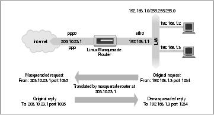
Linux Network Administrators Guide
We have a small Ethernet network using one of the reserved network addresses. The network has a
Linux−based masquerade router providing access to the Internet. One of the workstations on the network
(192.168.1.3) wishes to establish a connection to the remote host 209.1.106.178 on port 8888. The
workstation routes its datagram to the masquerade router, which identifies this connection request as
requiring masquerade services. It accepts the datagram and allocates a port number to use (1035), substitutes
its own IP address and port number for those of the originating host, and transmits the datagram to the
destination host. The destination host believes it has received a connection request from the Linux
masquerade host and generates a reply datagram. The masquerade host, upon receiving this datagram, finds
the association in its masquerade table and reverses the substution it performed on the outgoing datagram. It
then transmits the reply datagram to the originating host.
The local host believes it is speaking directly to the remote host. The remote host knows nothing about the
local host at all and believes it has received a connection from the Linux masquerade host. The Linux
masquerade host knows these two hosts are speaking to each other, and on what ports, and performs the
address and port translations necessary to allow communication.
This might all seem a little confusing, and it can be, but it works and is really quite simple to configure. So
don't worry if you don't understand all the details yet.
Chapter 11. IP Masquerade and Network Address Translation
228
11.1. Side Effects and Fringe Benefits
The IP masquerade facility comes with its own set of side effects, some of which are useful and some of
which might become bothersome.
None of the hosts on the supported network behind the masquerade router are ever directly seen;
consequently, you need only one valid and routable IP address to allow all hosts to make network
connections out onto the Internet. This has a downside; none of those hosts are visible from the Internet and
you can't directly connect to them from the Internet; the only host visible on a masqueraded network is the
masquerade machine itself. This is important when you consider services such as mail or FTP. It helps
determine what services should be provided by the masquerade host and what services it should proxy or
otherwise treat specially.
Second, because none of the masqueraded hosts are visible, they are relatively protected from attacks from
outside; this could simplify or even remove the need for firewall configuration on the masquerade host. You
shouldn't rely too heavily on this, though. Your whole network will be only as safe as your masquerade host,
so you should use firewall to protect it if security is a concern.
Third, IP masquerade will have some impact on the performance of your networking. In typical
configurations this will probably be barely measurable. If you have large numbers of active masquerade
sessions, though, you may find that the processing required at the masquerade machine begins to impact your
network throughput. IP masquerade must do a good deal of work for each datagram compared to the process
of conventional routing. That 386SX16 machine you have been planning on using as a masquerade machine
supporting a dial−up link to the Internet might be fine, but don't expect too much if you decide you want to
use it as a router in your corporate network at Ethernet speeds.
Last, some network services just won't work through masquerade, or at least not without a lot of help.
Typically, these are services that rely on incoming sessions to work, such as some types of Direct
Communications Channels (DCC), features in IRC, or certain types of video and audio multicasting services.
Some of these services have specially developed kernel modules to provide solutions for these, and we'll talk
about those in a moment. For others, it is possible that you will find no support, so be aware,it won't be
suitable in all situations.
11.1. Side Effects and Fringe Benefits
229
11.2. Configuring the Kernel for IP Masquerade
To use the IP masquerade facility, your kernel must be compiled with masquerade support. You must select
the following options when configuring a 2.2 series kernel:
Networking options −−−>
[*] Network firewalls
[*] TCP/IP networking
[*] IP: firewalling
[*] IP: masquerading
−−− Protocol−specific masquerading support will be built as modules.
[*] IP: ipautofw masq support
[*] IP: ICMP masquerading
Note that some of the masquerade support is available only as a kernel module. This means that you must
ensure that you make modules in addition to the usual make zImage when building your kernel.
The 2.4 series kernels no longer offer IP masquerade support as a kernel compile time option. Instead, you
should select the network packet filtering option:
Networking options −−−>
[M] Network packet filtering (replaces ipchains)
In the 2.2 series kernels, a number of protocol−specific helper modules are created during kernel compilation.
Some protocols begin with an outgoing request on one port, and then expect an incoming connection on
another. Normally these cannot be masqueraded, as there is no way of associating the second connection with
the first without peering inside the protocols themselves. The helper modules do just that; they actually look
inside the datagrams and allow masquerading to work for supported protocols that otherwise would be
impossible to masquerade. The supported protocols are:
Module
Protocol
ip_masq_ftp
FTP
ip_masq_irc
IRC
ip_masq_raudio
RealAudio
ip_masq_cuseeme CU−See−Me
ip_masq_vdolive
For VDO Live
ip_masq_quake
IdSoftware's Quake
You must load these modules manually using the insmod command to implement them. Note that these
modules cannot be loaded using the kerneld daemon. Each of the modules takes an argument specifying
what ports it will listen on. For the RealAudio" module you might use:[66]
# insmod ip_masq_raudio.o ports=7070,7071,7072
The ports you need to specify depend on the protocol. An IP masquerade mini−HOWTO written by Ambrose
Au explains more about the IP masquerade modules and how to configure them.[67]
11.2. Configuring the Kernel for IP Masquerade
230
Linux Network Administrators Guide
The netfilter package includes modules that perform similar functions. For example, to provide connection
tracking of FTP sessions, you'd load and use the ip_conntrack_ftp and ip_nat_ftp.o modules.
11.2. Configuring the Kernel for IP Masquerade
231
11.3. Configuring IP Masquerade
If you've already read the firewall and accounting chapters, it probably comes as no surprise that the
ipfwadm, ipchains, and iptables commands are used to configure the IP masquerade rules as well.
Masquerade rules are a special class of filtering rule. You can masquerade only datagrams that are received
on one interface that will be routed to another interface. To configure a masquerade rule you construct a rule
very similar to a firewall forwarding rule, but with special options that tell the kernel to masquerade the
datagram. The ipfwadm command uses the −m option, ipchains uses −j MASQ, and iptables uses −j
MASQUERADE to indicate that datagrams matching the rule specification should be masqueraded.
Let's look at an example. A computing science student at Groucho Marx University has a number of
computers at home internetworked onto a small Ethernet−based local area network. She has chosen to use
one of the reserved private Internet network addresses for her network. She shares her accomodation with
other students, all of whom have an interest in using the Internet. Because student living conditions are very
frugal, they cannot afford to use a permanent Internet connection, so instead they use a simple dial−up PPP
Internet connection. They would all like to be able to share the connection to chat on IRC, surf the Web, and
retrieve files by FTP directly to each of their computersIP masquerade is the answer.
The student first configures a Linux machine to support the dial−up link and to act as a router for the LAN.
The IP address she is assigned when she dials up isn't important. She configures the Linux router with IP
masquerade and uses one of the private network addresses for her LAN: 192.168.1.0. She ensures that
each of the hosts on the LAN has a default route pointing at the Linux router.
The following ipfwadm commands are all that are required to make masquerading work in her configuration:
# ipfwadm −F −p deny
# ipfwadm −F −a accept −m −S 192.168.1.0/24 −D 0/0
or with ipchains:
# ipchains −P forward −j deny
# ipchains −A forward −s 192.168.1.0/24 −d 0/0 −j MASQ
or with iptables:
# iptables −t nat −P POSTROUTING DROP
# iptables −t nat −A POSTROUTING −o ppp0 −j MASQUERADE
Now whenever any of the LAN hosts try to connect to a service on a remote host, their datagrams will be
automatically masqueraded by the Linux masquerade router. The first rule in each example prevents the
Linux machine from routing any other datagrams and also adds some security.
To list the masquerade rules you have created, use the −l argument to the ipfwadm command, as we
described in earlier while discussing firewalls.
To list the rule we created earlier we use:
# ipfwadm −F −l −e
which should display something like:
11.3. Configuring IP Masquerade
232
Linux Network Administrators Guide
# ipfwadm −F −l −e
IP firewall forward rules, default policy: accept
pkts bytes type prot opt tosa tosx ifname ifaddress &
0 0 acc/m all −−−− 0xFF 0x00 any any &
The /m in the output indicates this is a masquerade rule.
To list the masquerade rules with the ipchains command, use the −L argument. If we list the rule we created
earlier with ipchains, the output will look like:
# ipchains −L
Chain input (policy ACCEPT):
Chain forward (policy ACCEPT):
target prot opt source destination ports
MASQ all −−−−−− 192.168.1.0/24 anywhere n/a
Chain output (policy ACCEPT):
Any rules with a target of MASQ are masquerade rules.
Finally, to list the rules using iptables you need to use:
# iptables −t nat −L
Chain PREROUTING (policy ACCEPT)
target prot opt source destination
Chain POSTROUTING (policy DROP)
target prot opt source destination
MASQUERADE all −− anywhere anywhere MASQUERADE
Chain OUTPUT (policy ACCEPT)
target prot opt source destination
Again, masquerade rules appear with a target of MASQUERADE.
11.3.1. Setting Timing Parameters for IP Masquerade
When each new connection is established, the IP masquerade software creates an association in memory
between each of the hosts involved in the connection. You can view these associations at any time by looking
at the /proc/net/ip_masquerade file. These associations will timeout after a period of inactivity,
though.
You can set the timeout values using the ipfwadm command. The general syntax for this is:
ipfwadm −M −s <tcp> <tcpfin> <udp>
and for the ipchains command it is:
ipchains −M −S <tcp> <tcpfin> <udp>
The iptables implementation uses much longer default timers and does not allow you to set them.
11.3.1. Setting Timing Parameters for IP Masquerade
233
Linux Network Administrators Guide
Each of these values represents a timer used by the IP masquerade software and are in units of seconds. The
following table summarizes the timers and their meanings:
Name Description
tcp
TCP session timeout. How long a TCP connection may remain idle before the association for it is
removed.
tcpfin
TCP timeout after FIN. How long an association will remain after a TCP connection has been
disconnected.
udp
UDP session timeout. How long a UDP connection may remain idle before the association for it is
removed.
11.3.1. Setting Timing Parameters for IP Masquerade
234
11.4. Handling Name Server Lookups
Handling domain name server lookups from the hosts on the LAN with IP masquerading has always
presented a problem. There are two ways of accomodating DNS in a masquerade environment. You can tell
each of the hosts that they use the same DNS that the Linux router machine does, and let IP masquerade do
its magic on their DNS requests. Alternatively, you can run a caching name server on the Linux machine and
have each of the hosts on the LAN use the Linux machine as their DNS. Although a more aggressive action,
this is probably the better option because it reduces the volume of DNS traffic travelling on the Internet link
and will be marginally faster for most requests, since they'll be served from the cache. The downside to this
configuration is that it is more complex. Section 6.3.4, in Chapter 6, describes how to configure a caching
name server.
11.4. Handling Name Server Lookups
235
11.5. More About Network Address Translation
The netfilter software is capable of many different types of Network Address Translation. IP Masquerade is
one simple application of it.
It is possible, for example, to build NAT rules that translate only certain addresses or ranges of addresses and
leave all others untouched, or to translate addresses into pools of addresses rather than just a single address,
as masquerade does. You can in fact use the iptables command to generate NAT rules that map just about
anything, with combinations of matches using any of the standard attributes, such as source address,
destination address, protocol type, port number, etc.
Translating the Source Address of a datagram is referred to as Source NAT, or SNAT, in the
netfilter documentation. Translating the Destination Address of a datagram is known as Destination NAT,
or DNAT. Translating the TCP or UDP port is known by the term REDIRECT. SNAT, DNAT, and
REDIRECT are targets that you may use with the iptables command to build more complex and sophisticated
rules.
The topic of Network Address Translation and its uses warrants at least a whole chapter of its
own.[68] Unfortunately we don't have the space in this book to cover it in any greater depth. You should read
the IPTABLES−HOWTO for more information, if you're interested in discovering more about how you
might use Network Address Translation.
11.5. More About Network Address Translation
236
Chapter 12. ImportantNetwork Features
After successfully setting up IP and the resolver, you then must look at the services you want to provide over
the network. This chapter covers the configuration of a few simple network applications, including the
inetd server and the programs from the rlogin family. We'll also deal briefly with the Remote Procedure Call
interface, upon which services like the Network File System (NFS) and the Network Information System
(NIS) are based. The configuration of NFS and NIS, however, is more complex and are described in separate
chapters, as are electronic mail and network news.
Of course, we can't cover all network applications in this book. If you want to install one that's not discussed
here, like talk, gopher, or http, please refer to the manual pages of the server for details.
Chapter 12. ImportantNetwork Features
237
12.1. The inetd Super Server
Programs that provide application services via the network are called network daemons. A daemon is a
program that opens a port, most commonly a well−known service port, and waits for incoming connections
on it. If one occurs, the daemon creates a child process that accepts the connection, while the parent continues
to listen for further requests. This mechanism works well, but has a few disadvantages; at least one instance
of every possible service you wish to provide must be active in memory at all times. In addition, the software
routines that do the listening and port handling must be replicated in every network daemon.
To overcome these inefficiencies, most Unix installations run a special network daemon, what you might
consider a super server. This daemon creates sockets on behalf of a number of services and listens on all
of them simultaneously. When an incoming connection is received on any of these sockets, the super server
accepts the connection and spawns the server specified for this port, passing the socket across to the child to
manage. The server then returns to listening.
The most common super server is called inetd, the Internet Daemon. It is started at system boot time and
takes the list of services it is to manage from a startup file named /etc/inetd.conf. In addition to those
servers, there are a number of trivial services performed by inetd itself called internal services. They include
chargen, which simply generates a string of characters, and daytime, which returns the system's idea of the
time of day.
An entry in this file consists of a single line made up of the following fields:
service type protocol wait user server cmdline
Each of the fields is described in the following list:
service
Gives the service name. The service name has to be translated to a port number by looking it up in
the /etc/services file. This file will be described later in this chapter in the section Section
12.3.
type
Specifies a socket type, either stream (for connection−oriented protocols) or dgram (for datagram
protocols). TCP−based services should therefore always use stream, while UDP−based services
should always use dgram.
protocol
Names the transport protocol used by the service. This must be a valid protocol name found in the
protocols file, explained later.
wait
This option applies only to dgram sockets. It can be either wait or nowait. If wait is specified,
inetd executes only one server for the specified port at any time. Otherwise, it immediately continues
to listen on the port after executing the server.
12.1. The inetd Super Server
238
Linux Network Administrators Guide
This is useful for single−threaded servers that read all incoming datagrams until no more arrive,
and then exit. Most RPC servers are of this type and should therefore specify wait. The opposite type,
multi−threaded servers, allow an unlimited number of instances to run concurrently. These servers
should specify nowait.
stream sockets should always use nowait.
user
This is the login ID of the user who will own the process when it is executing. This will frequently be
the root user, but some services may use different accounts. It is a very good idea to apply the
principle of least privilege here, which states that you shouldn't run a command under a privileged
account if the program doesn't require this for proper functioning. For example, the NNTP news
server runs as news, while services that may pose a security risk (such as tftp or finger) are often run
as nobody.
server
Gives the full pathname of the server program to be executed. Internal services are marked by the
keyword internal.
cmdline
This is the command line to be passed to the server. It starts with the name of the server to be
executed and can include any arguments that need to be passed to it. If you are using the TCP
wrapper, you specify the full pathname to the server here. If not, then you just specify the server
name as you'd like it to appear in a process list. We'll talk about the TCP wrapper shortly.
This field is empty for internal services.
A sample inetd.conf file is shown in Example 12−1. The finger service is commented out so that it is
not available. This is often done for security reasons, because it can be used by attackers to obtain names and
other details of users on your system.
Example 12−1. A Sample /etc/inetd.conf File
#
# inetd services
ftp stream tcp nowait root /usr/sbin/ftpd in.ftpd −l
telnet stream tcp nowait root /usr/sbin/telnetd in.telnetd −b/etc/issue
#finger stream tcp nowait bin /usr/sbin/fingerd in.fingerd
#tftp dgram udp wait nobody /usr/sbin/tftpd in.tftpd
#tftp dgram udp wait nobody /usr/sbin/tftpd in.tftpd /boot/diskless
#login stream tcp nowait root /usr/sbin/rlogind in.rlogind
#shell stream tcp nowait root /usr/sbin/rshd in.rshd
#exec stream tcp nowait root /usr/sbin/rexecd in.rexecd
#
# inetd internal services
#
daytime stream tcp nowait root internal
daytime dgram udp nowait root internal
time stream tcp nowait root internal
time dgram udp nowait root internal
12.1. The inetd Super Server
239
Linux Network Administrators Guide
echo stream tcp nowait root internal
echo dgram udp nowait root internal
discard stream tcp nowait root internal
discard dgram udp nowait root internal
chargen stream tcp nowait root internal
chargen dgram udp nowait root internal
The tftp daemon is shown commented out as well. tftp implements the Trivial File Transfer
Protocol (TFTP), which allows someone to transfer any world−readable files from your system without
password checking. This is especially harmful with the /etc/passwd file, and even more so when you
don't use shadow passwords.
TFTP is commonly used by diskless clients and Xterminals to download their code from a boot server. If you
need to run tftpd for this reason, make sure to limit its scope to those directories from which clients will
retrieve files; you will need to add those directory names to tftpd's command line. This is shown in the
second tftp line in the example.
12.1. The inetd Super Server
240
12.2. The tcpd Access Control Facility
Since opening a computer to network access involves many security risks, applications are designed to guard
against several types of attacks. Some security features, however, may be flawed (most drastically
demonstrated by the RTM Internet worm, which exploited a hole in a number of programs, including old
versions of the sendmail mail daemon), or do not distinguish between secure hosts from which requests for a
particular service will be accepted and insecure hosts whose requests should be rejected. We've already
briefly discussed the finger and tftp services. Network Administrator would want to limit access to these
services to trusted hosts only, which is impossible with the usual setup, for which inetd provides this
service either to all clients or not at all.
A useful tool for managing host−specific access is tcpd, often called the daemon wrapper.
[69] For TCP
services you want to monitor or protect, it is invoked instead of the server program. tcpd checks if the remote
host is allowed to use that service, and only if this succeeds will it execute the real server program. tcpd also
logs the request to the syslog daemon. Note that this does not work with UDP−based services.
For example, to wrap the finger daemon, you have to change the corresponding line in inetd.conf from
this:
# unwrapped finger daemon
finger stream tcp nowait bin /usr/sbin/fingerd in.fingerd
to this:
# wrap finger daemon
finger stream tcp nowait root /usr/sbin/tcpd in.fingerd
Without adding any access control, this will appear to the client as the usual finger setup, except that any
requests are logged to syslog's auth facility.
Two files called /etc/hosts.allow and /etc/hosts.deny implement access control. They contain
entries that allow and deny access to certain services and hosts. When tcpd handles a request for a service
such as finger from a client host named biff.foobar.com, it scans hosts.allow and hosts.deny (in this
order) for an entry matching both the service and client host. If a matching entry is found in hosts.allow,
access is granted and tcpd doesn't consult the hosts.deny file. If no match is found in the
hosts.allow file, but a match is found in hosts.deny, the request is rejected by closing down the
connection. The request is accepted if no match is found at all.
Entries in the access files look like this:
servicelist: hostlist [:shellcmd]
servicelist is a list of service names from /etc/services, or the keyword ALL. To match all
services except finger and tftp, use ALL EXCEPT finger, tftp.
hostlist is a list of hostnames, IP addresses, or the keywords ALL, LOCAL, UNKNOWN or
PARANOID. ALL matches any host, while LOCAL matches hostnames that don't contain a
dot.[70] UNKNOWN matches any hosts whose name or address lookup failed. PARANOID matches any
host whose hostname does not resolve back to its IP address.[71] A name starting with a dot matches all hosts
whose domain is equal to this name. For example, .foobar.com matches biff.foobar.com, but not
nurks.fredsville.com. A pattern that ends with a dot matches any host whose IP address begins with the
12.2. The tcpd Access Control Facility
241
Linux Network Administrators Guide
supplied pattern, so 172.16. matches 172.16.32.0, but not 172.15.9.1. A pattern of the form
n.n.n.n/m.m.m.m is treated as an IP address and network mask, so we could specify our previous
example as 172.16.0.0/255.255.0.0 instead. Lastly, any pattern beginning with a / character allows you to
specify a file that is presumed to contain a list of hostname or IP address patterns, any of which are allowed
to match. So a pattern that looked like /var/access/trustedhosts would cause the tcpd daemon to read that file,
testing if any of the lines in it matched the connecting host.
To deny access to the finger and tftp services to all but the local hosts, put the following in
/etc/hosts.deny and leave /etc/hosts.allow empty:
in.tftpd, in.fingerd: ALL EXCEPT LOCAL, .your.domain
The optional shellcmd field may contain a shell command to be invoked when the entry is matched. This
is useful to set up traps that may expose potential attackers. The following example creates a log file listing
the user and host connecting, and if the host is not vlager.vbrew.com it will append the output of a finger to
that host:
in.ftpd: ALL EXCEPT LOCAL, .vbrew.com : \
echo "request from %d@%h: >> /var/log/finger.log; \
if [ %h != "vlager.vbrew.com:" ]; then \
finger −l @%h >> /var/log/finger.log \
fi
The %h and %d arguments are expanded by tcpd to the client hostname and service name, respectively.
Please refer to the hosts_access(5) manual page for details.
12.2. The tcpd Access Control Facility
242
12.3. The Services and Protocols Files
The port numbers on which certain standard services are offered are defined in the Assigned Numbers
RFC. To enable server and client programs to convert service names to these numbers, at least part of the list
is kept on each host; it is stored in a file called /etc/services. An entry is made up like this:
service port/protocol [aliases]
Here, service specifies the service name, port defines the port the service is offered on, and
protocol defines which transport protocol is used. Commonly, the latter field is either udp or tcp. It is
possible for a service to be offered for more than one protocol, as well as offering different services on the
same port as long as the protocols are different. The aliases field allows you to specify alternative names
for the same service.
Usually, you don't have to change the services file that comes along with the network software on your Linux
system. Nevertheless, we give a small excerpt from that file in Example 12−2.
Example 12−2. A Sample /etc/services File
# The services file:
#
# well−known services
echo 7/tcp # Echo
echo 7/udp #
discard 9/tcp sink null # Discard
discard 9/udp sink null #
daytime 13/tcp # Daytime
daytime 13/udp #
chargen 19/tcp ttytst source # Character Generator
chargen 19/udp ttytst source #
ftp−data 20/tcp # File Transfer Protocol (Data)
ftp 21/tcp # File Transfer Protocol (Control)
telnet 23/tcp # Virtual Terminal Protocol
smtp 25/tcp # Simple Mail Transfer Protocol
nntp 119/tcp readnews # Network News Transfer Protocol
#
# UNIX services
exec 512/tcp # BSD rexecd
biff 512/udp comsat # mail notification
login 513/tcp # remote login
who 513/udp whod # remote who and uptime
shell 514/tcp cmd # remote command, no passwd used
syslog 514/udp # remote system logging
printer 515/tcp spooler # remote print spooling
route 520/udp router routed # routing information protocol
Note that the echo service is offered on port 7 for both TCP and UDP, and that port 512 is used for two
different services: remote execution (rexec) using TCP, and the COMSAT daemon, which notifies users of
new mail, over UDP (see xbiff(1x)).
Like the services file, the networking library needs a way to translate protocol namesfor example, those
used in the services fileto protocol numbers understood by the IP layer on other hosts. This is done by
looking up the name in the /etc/protocols file. It contains one entry per line, each containing a protocol
name, and the associated number. Having to touch this file is even more unlikely than having to meddle with
12.3. The Services and Protocols Files
243
Linux Network Administrators Guide
/etc/services. A sample file is given in Example 12−3.
Example 12−3. A Sample /etc/protocols File
#
# Internet (IP) protocols
#
ip 0 IP # internet protocol, pseudo protocol number
icmp 1 ICMP # internet control message protocol
igmp 2 IGMP # internet group multicast protocol
tcp 6 TCP # transmission control protocol
udp 17 UDP # user datagram protocol
raw 255 RAW # RAW IP interface
12.3. The Services and Protocols Files
244
12.4. Remote Procedure Call
The general mechanism for client−server applications is provided by the Remote Procedure Call (RPC)
package. RPC was developed by Sun Microsystems and is a collection of tools and library functions.
Important applications built on top of RPC are NIS, the Network Information System (described in Chapter
13), and NFS, the Network File System (described in Chapter 14), which are both described in this book.
An RPC server consists of a collection of procedures that a client can call by sending an RPC request to the
server along with the procedure parameters. The server will invoke the indicated procedure on behalf of the
client, handing back the return value, if there is any. In order to be machine−independent, all data exchanged
between client and server is converted to the External Data Representation format (XDR) by the sender, and
converted back to the machine−local representation by the receiver. RPC relies on standard UDP and TCP
sockets to transport the XDR formatted data to the remote host. Sun has graciously placed RPC in the public
domain; it is described in a series of RFCs.
Sometimes improvements to an RPC application introduce incompatible changes in the procedure call
interface. Of course, simply changing the server would crash all applications that still expect the original
behavior. Therefore, RPC programs have version numbers assigned to them, usually starting with 1, and with
each new version of the RPC interface, this counter will be bumped up. Often, a server may offer several
versions simultaneously; clients then indicate by the version number in their requests which implementation
of the service they want to use.
The communication between RPC servers and clients is somewhat peculiar. An RPC server offers one or
more collections of procedures; each set is called a program and is uniquely identified by a program number.
A list that maps service names to program numbers is usually kept in /etc/rpc, an excerpt of which is
shown in Example 12−4.
Example 12−4. A Sample /etc/rpc File
#
# /etc/rpc − miscellaneous RPC−based services
#
portmapper 100000 portmap sunrpc
rstatd 100001 rstat rstat_svc rup perfmeter
rusersd 100002 rusers
nfs 100003 nfsprog
ypserv 100004 ypprog
mountd 100005 mount showmount
ypbind 100007
walld 100008 rwall shutdown
yppasswdd 100009 yppasswd
bootparam 100026
ypupdated 100028 ypupdate
In TCP/IP networks, the authors of RPC faced the problem of mapping program numbers to generic network
services. They designed each server to provide both a TCP and a UDP port for each program and each
version. Generally, RPC applications use UDP when sending data, and fall back to TCP only when the data
to be transferred doesn't fit into a single UDP datagram.
Of course, client programs need to find out to which port a program number maps. Using a configuration
file for this would be too unflexible; since RPC applications don't use reserved ports, there's no guarantee that
a port originally meant to be used by our database application hasn't been taken by some other process.
12.4. Remote Procedure Call
245
Linux Network Administrators Guide
Therefore, RPC applications pick any port they can get and register it with a special program called the
portmapper daemon. The portmapper acts as a service broker for all RPC servers running on its machine. A
client that wishes to contact a service with a given program number first queries the portmapper on the
server's host, which returns the TCP and UDP port numbers the service can be reached at.
This method introduces a single point of failure, much like the inetd daemon does for the standard Berkeley
services. However, this case is even a little worse because when the portmapper dies, all RPC port
information is lost; this usually means you have to restart all RPC servers manually or reboot the entire
machine.
On Linux, the portmapper is called /sbin/portmap, or sometimes /usr/sbin/rpc.portmap. Other
than making sure it is started from your network boot scripts, the portmapper doesn't require any
configuration.
12.4. Remote Procedure Call
246
12.5. Configuring Remote Loginand Execution
It's often very useful to execute a command on a remote host and have input or output from that command be
read from, or written to, a network connection.
The traditional commands used for executing commands on remote hosts are rlogin, rsh and rcp. We saw
an example of the rlogin command in Chapter 1 in the section Section 1.2.1. We briefly discussed the
security issues associated with it in Section 1.5.1 and suggested ssh as a replacement. The ssh package
provides replacements called slogin, ssh, and scp.
Each of these commands spawns a shell on the remote host and allows the user to execute commands. Of
course, the client needs to have an account on the remote host where the command is to be executed. Thus, all
these commands use an authentication process. The r commands use a simple username and password
exchange between the hosts with no encryption, so anyone listening could easily intercept the passwords. The
ssh command suite provides a higher level of security: it uses a technique called Public Key Cryptography,
which provides authentication and encryption between the hosts to ensure that neither passwords nor session
data are easily intercepted by other hosts.
It is possible to relax authentication checks for certain users even further. For instance, if you frequently
have to log into other machines on your LAN, you might want to be admitted without having to type your
password every time. This was always possible with the r commands, but the ssh suite allows you to do this a
little more easily. It's still not a great idea because it means that if an account on one machine is breached,
access can be gained to all other accounts that user has configured for password−less login, but it is very
convenient and people will use it.
Let's talk about removing the r commands and getting ssh to work instead.
12.5.1. Disabling the r; Commands
Start by removing the r commands if they're installed. The easiest way to disable the old r commands is to
comment out (or remove) their entries in the /etc/inetd.conf file. The relevant entries will look
something like this:
# Shell, login, exec and talk are BSD protocols.
shell stream tcp nowait root /usr/sbin/tcpd /usr/sbin/in.rshd
login stream tcp nowait root /usr/sbin/tcpd /usr/sbin/in.rlogind
exec stream tcp nowait root /usr/sbin/tcpd /usr/sbin/in.rexecd
You can comment them by placing a # character at the start of each line, or delete the lines completely.
Remember, you need to restart the inetd daemon for this change to take effect. Ideally, you should remove
the daemon programs themselves, too.
12.5.2. Installing and Configuring ssh
OpenSSH is a free version of the ssh suite of programs; the Linux port can be found at
http://violet.ibs.com.au/openssh/ and in most modern Linux distributions.[72] We won't describe compilation
here; good instructions are included in the source. If you can install it from a precompiled package, then it's
12.5. Configuring Remote Loginand Execution
247
Linux Network Administrators Guide
probably wise to do so.
There are two parts to an ssh session. There is an ssh client that you need to configure and run on the local
host and an ssh daemon that must be running on the remote host.
12.5.2.1. The ssh daemon
The sshd daemon is the program that listens for network connections from ssh clients, manages
authentication, and executes the requested command. It has one main configuration file called
/etc/ssh/sshd_config and a special file containing a key used by the authentication and encryption
processes to represent the host end. Each host and each client has its own key.
A utility called ssh−keygen is supplied to generate a random key. This is usually used once at installation
time to generate the host key, which the system administrator usually stores in a file called
/etc/ssh/ssh_host_key. Keys can be of any length of 512 bits or greater. By default,
ssh−keygen generates keys of 1024 bits in length, and most people use the default. To generate a random
key, you would invoke the ssh−keygen command like this:
# ssh−keygen −f /etc/ssh/ssh_host_key
You will be prompted to enter a passphrase. However, host keys must not use a passphrase, so just press the
return key to leave it blank. The program output will look something like:
Generating RSA keys: ......oooooO...............................oooooO
Key generation complete.
Enter passphrase (empty for no passphrase):
Enter same passphrase again:
Your identification has been saved in /etc/ssh/ssh_host_key
Your public key has been saved in /etc/ssh/ssh_host_key.pub
The key fingerprint is:
1024 3a:14:78:8e:5a:a3:6b:bc:b0:69:10:23:b7:d8:56:82 root@moria
You will find at the end that two files have been created. The first is called the private key, which must be
kept secret and will be in /etc/ssh/ssh_host_key. The second is called the public key and is one that
you can share; it will be in /etc/ssh/ssh_host_key.pub.
Armed with the keys for ssh communication, you need to create a configuration file. The ssh suite is very
powerful and the configuration file may contain many options. We'll present a simple example to get you
started; you should refer to the ssh documentation to enable other features. The following code shows a safe
and minimal sshd configuration file. The rest of the configuration options are detailed in the sshd(8)
manpage:
# /etc/ssh/sshd_config
#
# The IP adddresses to listen for connections on. 0.0.0.0 means all
# local addresses.
ListenAddress 0.0.0.0
# The TCP port to listen for connections on. The default is 22.
12.5.2.1. The ssh daemon
248
Linux Network Administrators Guide
Port 22
# The name of the host key file.
HostKey /etc/ssh/ssh_host_key
# The length of the key in bits.
ServerKeyBits 1024
# Should we allow root logins via ssh?
PermitRootLogin no
# Should the ssh daemon check users' home directory and files permissions?
# are safe before allowing login?
StrictModes yes
# Should we allow old ~/.rhosts and /etc/hosts.equiv authentication method?
RhostsAuthentication no
# Should we allow pure RSA authentication?
RSAAuthentication yes
# Should we allow password authentication?
PasswordAuthentication yes
# Should we allow /etc/hosts.equiv combined with RSA host authentication?
RhostsRSAAuthentication no
# Should we ignore ~/.rhosts files?
IgnoreRhosts yes
# Should we allow logins to accounts with empty passwords?
PermitEmptyPasswords no
It's important to make sure the permissions of the configuration files are correct to ensure that system security
is maintained. Use the following commands:
# chown −R root:root /etc/ssh
# chmod 755 /etc/ssh
# chmod 600 /etc/ssh/ssh_host_key
# chmod 644 /etc/ssh/ssh_host_key.pub
# chmod 644 /etc/ssh/sshd_config
The final stage of sshd administration daemon is to run it. Normally you'd create an rc file for it or add it to
an existing one, so that it is automatically executed at boot time. The daemon runs standalone and doesn't
require any entry in the /etc/inetd.conf file. The daemon must be run as the root user. The syntax is
very simple:
/usr/sbin/sshd
The sshd daemon will automatically place itself into the background when being run. You are now ready to
accept ssh connections.
12.5.2.2. The ssh client
There are a number of ssh client programs: slogin, scp and ssh. They each read the same configuration file,
usually called /etc/ssh/ssh_config. They each also read configuration files from the .ssh directory
in the home directory of the user executing them. The most important of these files is the
.ssh/config file, which may contain options that override those specified in the
/etc/ssh/ssh_config file, the .ssh/identity file, which contains the user's own private key, and
12.5.2.2. The ssh client
249
Linux Network Administrators Guide
the corresponding .ssh/identity.pub file, containing the user's public key. Other important files are
.ssh/known_hosts and .ssh/authorized_keys; we'll talk about those later in Section 12.5.2.3.
First, let's create the global configuration file and the user key file.
/etc/ssh/ssh_config is very similar to the server configuration file. Again, there are lots of features
you can configure, but a minimal configuration looks like that presented in Example 12−5. The rest of the
configuration options are detailed in the sshd(8) manpage. You can add sections that match specific hosts or
groups of hosts. The parameter to the Host statement may be either the full name of a host or a wildcard
specification, as we've used in our example, to match all hosts. We could create an entry that used, for
example, Host *.vbrew.com to match any host in the vbrew.com domain.
Example 12−5. Example ssh Client Configuration File
# /etc/ssh/ssh_config
# Default options to use when connecting to a remote host
Host *
# Compress the session data?
Compression yes
# .. using which compression level? (1 − fast/poor, 9 − slow/good)
CompressionLevel 6
# Fall back to rsh if the secure connection fails?
FallBackToRsh no
# Should we send keep−alive messages? Useful if you use IP masquerade
KeepAlive yes
# Try RSA authentication?
RSAAuthentication yes
# Try RSA authentication in combination with .rhosts authentication?
RhostsRSAAuthentication yes
We mentioned in the server configuration section that every host and user has a key. The user's key is stored
in his or her ~/.ssh/indentity file. To generate the key, use the same ssh−keygen command as we
used to generate the host key, except this time you do not need to specify the name of the file in which you
save the key. The ssh−keygen defaults to the correct location, but it prompts you to enter a filename in case
you'd like to save it elsewhere. It is sometimes useful to have multiple identity files, so ssh allows this. Just as
before, ssh−keygen will prompt you to entry a passphrase. Passphrases add yet another level of security and
are a good idea. Your passphrase won't be echoed on the screen when you type it.
Warning
There is no way to recover a passphrase if you forget it. Make sure it is something you will remember, but as
with all passwords, make it something that isn't obvious, like a proper noun or your name. For a passphrase
to be truly effective, it should be between 10 and 30 characters long and not be plain English prose. Try to
throw in some unusual characters. If you forget your passphrase, you will be forced to generate a new key.
You should ask each of your users to run the ssh−keygen command just once to ensure their key file is
created correctly. The ssh−keygen will create their ~/.ssh/ directories for them with appropriate
permissions and create their private and public keys in .ssh/identity and .ssh/identity.pub,
respectively. A sample session should look like:
12.5.2.2. The ssh client
250
Linux Network Administrators Guide
$ ssh−keygen
Generating RSA keys: .......oooooO..............................
Key generation complete.
Enter file in which to save the key (/home/maggie/.ssh/identity):
Enter passphrase (empty for no passphrase):
Enter same passphrase again:
Your identification has been saved in /home/maggie/.ssh/identity.
Your public key has been saved in /home/maggie/.ssh/identity.pub.
The key fingerprint is:
1024 85:49:53:f4:8a:d6:d9:05:d0:1f:23:c4:d7:2a:11:67 maggie@moria
$
Now ssh is ready to run.
12.5.2.3. Using ssh
We should now have the ssh command and it's associated programs installed and ready to run. Let's now
take a quick look at how to run them.
First, we'll try a remote login to a host. We can use the slogin program in much the same way as we used
the rlogin program in our example earlier in the book. The first time you attempt a connection to a host, the
ssh client will retrieve the public key of the host and ask you to confirm its identity by prompting you with a
shortened version of the public key called a fingerprint.
The administrator at the remote host should have supplied you in advance with its public key fingerprint,
which you should add to your .ssh/known_hosts file. If the remote administrator has not supplied you
the appropriate key, you can connect to the remote host, but ssh will warn you that it does have a key and
prompt you whether you wish to accept the one offered by the remote host. Assuming that you're sure no one
is engaging in DNS spoofing and you are in fact talking to the correct host, answer yes to the prompt. The
relevant key is then stored automatically in your .ssh/known_hosts and you will not be prompted for it
again. If, on a future connection attempt, the public key retrieved from that host does not match the one that is
stored, you will be warned, because this represents a potential security breach.
A first−time login to a remote host will look something like:
$ slogin vchianti.vbrew.com
The authenticity of host 'vchianti.vbrew.com' can't be established.
Key fingerprint is 1024 7b:d4:a8:28:c5:19:52:53:3a:fe:8d:95:dd:14:93:f5.
Are you sure you want to continue connecting (yes/no)? yes
Warning: Permanently added 'vchianti.vbrew.com,172.16.2.3' to the list of/
known hosts.
maggie@vchianti.vbrew.com's password:
Last login: Tue Feb 1 23:28:58 2000 from vstout.vbrew.com
$
You will be prompted for a password, which you should answer with the password belonging to the remote
account, not the local one. This password is not echoed when you type it.
Without any special arguments, slogin will attempt to log in with the same userid used on the local machine.
You can override this using the −l argument, supplying an alternate login name on the remote host. This is
what we did in our example earlier in the book.
12.5.2.3. Using ssh
251
Linux Network Administrators Guide
We can copy files to and from the remote host using the scp program. Its syntax is similar to the
conventional cp with the exception that you may specify a hostname before a filename, meaning that the file
path is on the specified host. The following example illustrates scp syntax by copying a local file called
/tmp/fred to the /home/maggie/ of the remote host chianti.vbrew.com:
$ scp /tmp/fred vchianti.vbrew.com:/home/maggie/
maggie@vchianti.vbrew.com's password:
fred 100% |*****************************| 50165 00:01 ETA
Again, you'll be prompted for a password. The scp command displays useful progress messages by default.
You can copy a file from a remote host with the same ease; simply specify its hostname and filepath as the
source and the local path as the destination. It's even possible to copy a file from a remote host to some other
remote host, but it is something you wouldn't normally want to do, because all of the data travels via your
host.
You can execute commands on remote hosts using the ssh command. Again, its syntax is very simple. Let's
have our user maggie retrieve the root directory of the remote host vchianti.vbrew.com. She'd do this with:
$ ssh vchianti.vbrew.com ls −CF /
maggie@vchianti.vbrew.com's password:
bin/ console@ dos/ home/ lost+found/ pub@ tmp/ vmlinuz@
boot/ dev/ etc/ initrd/ mnt/ root/ usr/ vmlinuz.old@
cdrom/ disk/ floppy/ lib/ proc/ sbin/ var/
You can place ssh in a command pipeline and pipe program input/output to or from it just like any other
command, except that the input or output is directed to or from the remote host via the ssh connection. Here
is an example of how you might use this capability in combination with the tar command to copy a whole
directory with subdirectories and files from a remote host to the local host:
$ ssh vchianti.vbrew.com "tar cf − /etc/" | tar xvf −
maggie@vchianti.vbrew.com's password:
etc/GNUstep
etc/Muttrc
etc/Net
etc/X11
etc/adduser.conf
..
..
Here we surrounded the command we will execute with quotation marks to make it clear what is passed as an
argument to ssh and what is used by the local shell. This command executes the tar command on the remote
host to archive the /etc/ directory and write the output to standard output. We've piped to an instance of the
tar command running on our local host in extract mode reading from standard input.
Again, we were prompted for the password. Now you can see why we encouraged you to configure ssh so
that it doesn't prompt you for passwords all the time! Let's now configure our local ssh client so that it won't
prompt for a password when connecting to the vchianti.vbrew.com host. We mentioned the
.ssh/authorized_keys file earlier; this is where it is used. The .ssh/authorized_keys file
contains the public keys on any remote user accounts that we wish to automatically log in to. You can set up
automatic logins by copying the contents of the .ssh/identity.pub from the remote account into our
local .ssh/authorized_keys file. It is vital that the file permissions of
.ssh/authorized_keys allow only that you read and write it; anyone may steal and use the keys to log
in to that remote account. To ensure the permissions are correct, change .ssh/authorized_keys, as
shown:
12.5.2.3. Using ssh
252
Linux Network Administrators Guide
$ chmod 600 ~/.ssh/authorized_keys
The public keys are a long single line of plain text. If you use copy and paste to duplicate the key into your
local file, be sure to remove any end of line characters that might have been introduced along the way. The
.ssh/authorized_keys file may contain many such keys, each on a line of its own.
The ssh suite of tools is very powerful and there are many other useful features and options that you will be
interested in exploring. Please refer to the manual pages and other documentation that is supplied with the
package for more information.
12.5.2.3. Using ssh
253
Chapter 13. The Network Information System
When you're running a local area network, your overall goal is usually to provide an environment for your
users that makes the network transparent. An important stepping stone is keeping vital data such as user
account information synchronized among all hosts. This provides users with the freedom to move from
machine to machine without the inconvenience of having to remember different passwords and copy data
from one machine to another. Data that is centrally stored doesn't need to be replicated, so long as there is
some convenient means of accessing it from a network−connected host. By storing important administrative
information centrally, you can make ensure consistency of that data, increase flexibility for the users by
allowing them to move from host to host in a transparent way, and make the system administrator's life much
easier by maintaining a single copy of information to maintain when required.
We previously discussed an important example of this concept that is used on the Internetthe Domain Name
System (DNS). DNS serves a limited range of information, the most important being the mapping between
hostname and IP address. For other types of information, there is no such specialized service. Moreover, if
you manage only a small LAN with no Internet connectivity, setting up DNS may not seem to be worth the
trouble.
This is why Sun developed the Network Information System (NIS). NIS provides generic database access
facilities that can be used to distribute, for example, information contained in the passwd and groups files
to all hosts on your network. This makes the network appear as a single system, with the same accounts on all
hosts. Similarly, you can use NIS to distribute the hostname information from /etc/hosts to all machines
on the network.
NIS is based on RPC, and comprises a server, a client−side library, and several administrative tools.
Originally, NIS was called Yellow Pages, or YP, which is still used to refer to it. Unfortunately, the name is a
trademark of British Telecom, which required Sun to drop that name. As things go, some names stick with
people, and so YP lives on as a prefix to the names of most NIS−related commands such as ypserv and
ypbind.
Today, NIS is available for virtually all Unixes, and there are even free implementations. BSD Net−2
released one that has been derived from a public domain reference implementation donated by Sun. The
library client code from this release had been in the Linux libc for a long time, and the administrative
programs were ported to Linux by Swen Thümmler.[73] An NIS server is missing from the reference
implementation, though.
Peter Eriksson developed a new implementation called NYS. [74] It supports both plain NIS and Sun's
much enhanced NIS+. NYS not only provides a set of NIS tools and a server, but also adds a whole new set
of library functions that need to be compiled into your libc if you wish to use it. This includes a new
configuration scheme for hostname resolution that replaces the current scheme using host.conf.
The GNU libc, known as libc6 in the Linux community, includes an updated version of the traditional
NIS support developed by Thorsten Kukuk.[75] It supports all of the library functions that NYS provided and
also uses the enhanced configuration scheme of NYS. You still need the tools and server, but using GNU
libc saves you the trouble of having to meddle with patching and recompiling the library.
This chapter focuses on the NIS support included in the GNU libc rather than the other two packages. If
you do want to run any of these packages, the instructions in this chapter may or may not be enough. For
additional information, refer to the NIS−HOWTO or a book such as Managing NFS and NIS by Hal Stern
(O'Reilly).
Chapter 13. The Network Information System
254
Linux Network Administrators Guide
Chapter 13. The Network Information System
255
13.1. Getting Acquainted with NIS
NIS keeps database information in files called maps, which contain key−value pairs. An example of a
key−value pair is a user's login name and the encrypted form of their login password. Maps are stored on a
central host running the NIS server, from which clients may retrieve the information through various RPC
calls. Quite frequently, maps are stored in DBM files.[76]
The maps themselves are usually generated from master text files such as /etc/hosts or
/etc/passwd. For some files, several maps are created, one for each search key type. For instance, you
may search the hosts file for a hostname as well as for an IP address. Accordingly, two NIS maps are
derived from it, called hosts.byname and hosts.byaddr. Table 13−1 lists common maps and the files
from which they are generated.
Table 13−1. Some Standard NIS Maps and Corresponding Files
Master File
Map(s)
Description
/etc/hosts
hosts.byname, hosts.byaddr
Maps IP addresses to host names
/etc/networks
networks.byname,
Maps IP network addresses to network
networks.byaddr
names
/etc/passwd
passwd.byname, passwd.byuid
Maps encrypted passwords to user login
names
/etc/group
group.byname, group.bygid
Maps Group IDs to group names
Maps service descriptions to service
/etc/services
services.byname,
names
services.bynumber
/etc/rpc
rpc.byname, rpc.bynumber
Maps Sun RPC service numbers to RPC
service names
/etc/protocols
protocols.byname,
Maps protocol numbers to protocol
protocols.bynumber
names
/usr/lib/aliases mail.aliases
Maps mail aliases to mail alias names
You may find support for other files and maps in other NIS packages. These usually contain information for
applications not discussed in this book, such as the bootparams map that is used by Sun's
bootparamd server.
For some maps, people commonly use nicknames, which are shorter and therefore easier to type. Note that
these nicknames are understood only by ypcat and ypmatch, two tools for checking your NIS configuration.
To obtain a full list of nicknames understood by these tools, run the following command:
13.1. Getting Acquainted with NIS
256
Linux Network Administrators Guide
$ ypcat −x
Use "passwd" for "passwd.byname"
Use "group" for "group.byname"
Use "networks" for "networks.byaddr"
Use "hosts" for "hosts.byaddr"
Use "protocols" for "protocols.bynumber"
Use "services" for "services.byname"
Use "aliases" for "mail.aliases"
Use "ethers" for "ethers.byname"
The NIS server program is traditionally called ypserv. For an average network, a single server usually
suffices; large networks may choose to run several of these on different machines and different segments of
the network to relieve the load on the server machines and routers. These servers are synchronized by making
one of them the master server, and the others slave servers. Maps are created only on the master server's host.
From there, they are distributed to all slaves.
We have been talking very vaguely about networks. There's a distinctive term in NIS that refers to a
collection of all hosts that share part of their system configuration data through NIS: the NIS domain.
Unfortunately, NIS domains have absolutely nothing in common with the domains we encountered in DNS.
To avoid any ambiguity throughout this chapter, we will therefore always specify which type of domain we
mean.
NIS domains have a purely administrative function. They are mostly invisible to users, except for the
sharing of passwords between all machines in the domain. Therefore, the name given to an NIS domain is
relevant only to the administrators. Usually, any name will do, as long as it is different from any other NIS
domain name on your local network. For instance, the administrator at the Virtual Brewery may choose to
create two NIS domains, one for the Brewery itself, and one for the Winery, which she names brewery and
winery respectively. Another quite common scheme is to simply use the DNS domain name for NIS as well.
To set and display the NIS domain name of your host, you can use the domainname command. When
invoked without any argument, it prints the current NIS domain name; to set the domain name, you must
become the superuser:
# domainname brewery
NIS domains determine which NIS server an application will query. For instance, the login program on a host
at the Winery should, of course, query only the Winery's NIS server (or one of them, if there are several) for a
user's password information, while an application on a Brewery host should stick with the Brewery's server.
One mystery now remains to be solved: how does a client find out which server to connect to? The simplest
approach would use a configuration file that names the host on which to find the server. However, this
approach is rather inflexible because it doesn't allow clients to use different servers (from the same domain,
of course) depending on their availability. Therefore, NIS implementations rely on a special daemon called
ypbind to detect a suitable NIS server in their NIS domain. Before performing any NIS queries, an
application first finds out from ypbind which server to use.
ypbind probes for servers by broadcasting to the local IP network; the first to respond is assumed to be the
fastest one and is used in all subsequent NIS queries. After a certain interval has elapsed, or if the server
becomes unavailable, ypbind probes for active servers again.
Dynamic binding is useful only when your network provides more than one NIS server. Dynamic binding
also introduces a security problem. ypbind blindly believes whoever answers, whether it be a humble NIS
server or a malicious intruder. Needless to say, this becomes especially troublesome if you manage your
13.1. Getting Acquainted with NIS
257
Linux Network Administrators Guide
password databases over NIS. To guard against this, the Linux ypbind program provides you with the option
of probing the local network to find the local NIS server, or configuring the NIS server hostname in a
configuration file.
13.1. Getting Acquainted with NIS
258
13.2. NIS Versus NIS+
NIS and NIS+ share little more than their name and a common goal. NIS+ is structured entirely differently
from NIS. Instead of a flat namespace with disjoint NIS domains, NIS+ uses a hierarchical namespace similar
to that of DNS. Instead of maps, so−called tables are used that are made up of rows and columns, in which
each row represents an object in the NIS+ database and the columns cover properties of the objects that NIS+
knows and cares about. Each table for a given NIS+ domain comprises those of its parent domains. In
addition, an entry in a table may contain a link to another table. These features make it possible to structure
information in many ways.
NIS+ additionally supports secure and encrypted RPC, which helps greatly to solve the security problems of
NIS.
Traditional NIS has an RPC Version number of 2, while NIS+ is Version 3. At the time we're writing, there
isn't yet a good working implementation of NIS+ for Linux, so it isn't covered here.
13.2. NIS Versus NIS+
259
13.3. The Client Side of NIS
If you are familiar with writing or porting network applications, you may notice that most of the NIS maps
listed previously correspond to library functions in the C library. For instance, to obtain
passwd information, you generally use the getpwnam and getpwuid functions, which return the account
information associated with the given username or numerical user ID, respectively. Under normal
circumstances, these functions perform the requested lookup on the standard file, such as /etc/passwd.
An NIS−aware implementation of these functions, however, modifies this behavior and places an RPC call to
the NIS server, which looks up the username or user ID. This happens transparently to the application. The
function may treat the NIS data as though it has been appended to the original passwd file so both sets of
information are available to the application and used, or as though it has completely replaced it so that the
information in the local passwd is ignored and only the NIS data is used.
For traditional NIS implementations, there were certain conventions for which maps were replaced and which
were appended to the original information. Some, like the passwd maps, required kludgy modifications of
the passwd file which, when done incorrectly, would open up security holes. To avoid these pitfalls, NYS
and the GNU libc use a general configuration scheme that determines whether a particular set of client
functions uses the original files, NIS, or NIS+, and in which order. This scheme will be described later in this
chapter.
13.3. The Client Side of NIS
260
13.4. Running an NIS Server
After so much theoretical techno−babble, it's time to get our hands dirty with actual configuration work. In
this section, we will cover the configuration of an NIS server. If an NIS server is running on your network,
you won't have to set up your own; in this case, you may safely skip this section.
Note that if you are just going to experiment with the server, make sure you don't set it up for an NIS domain
name that is already in use on your network. This may disrupt the entire network service and make a lot of
people very unhappy and very angry.
There are two possible NIS server configurations: master and slave. The slave configuration provides a live
backup machine, should your master server fail. We will cover the configuration only for a master server
here. The server documentation will explain the differences, should you wish to configure a slave server.
There are currently two NIS servers freely available for Linux: one contained in Tobias Reber's yps package,
and the other in Peter Eriksson's ypserv package. It doesn't matter which one you run.
After installing the server program (ypserv) in /usr/sbin, you should create the directory that is going to
hold the map files your server is to distribute. When setting up an NIS domain for the brewery domain, the
maps would go to /var/yp/brewery. The server determines whether it is serving a particular NIS
domain by checking if the map directory is present. If you are disabling service for some NIS domain, make
sure to remove the directory as well.
Maps are usually stored in DBM files to speed up lookups. They are created from the master files using a
program called makedbm (for Tobias's server) or dbmload (for Peter's server).
Transforming a master file into a form that dbmload can parse usually requires some awk or sed magic,
which tends to be a little tedious to type and hard to remember. Therefore, Peter Eriksson's ypserv package
contains a Makefile (called ypMakefile) that manages the conversion of the most common master files for
you. You should install it as Makefile in your map directory and edit it to reflect the maps you want the
NIS server to share. Towards the top of the file, you'll find the all target that lists the services ypserv offers.
By default, the line looks something like this:
all: ethers hosts networks protocols rpc services passwd group netid
If you don't want to produce, for example, the ethers.byname and ethers.byaddr maps, simply
remove the ethers prerequisite from this rule. To test your setup, you can start with just one or two maps, like
the services.* maps.
After editing the Makefile, while in the map directory, type make. This will automatically generate and
install the maps. You have to make sure to update the maps whenever you change the master files, otherwise
the changes will remain invisible to the network.
The section Setting Up an NIS Client with GNU libc will explain how to configure the NIS client code.
If your setup doesn't work, you should try to find out whether requests are arriving at your server. If you
specify the −−debug command−line flag to ypserv, it prints debugging messages to the console about all
incoming NIS queries and the results returned. These should give you a hint as to where the problem lies.
Tobias's server doesn't have this option.
13.4. Running an NIS Server
261
13.5. NIS Server Security
NIS used to have a major security flaw: it left your password file readable by virtually anyone in the entire
Internet, which made for quite a number of possible intruders. As long as an intruder knew your NIS domain
name and the address of your server, he could simply send it a request for the passwd.byname map and
instantly receive all your system's encrypted passwords. With a fast password−cracking program like
crack and a good dictionary, guessing at least a few of your users' passwords is rarely a problem.
This is what the securenets option is all about. It simply restricts access to your NIS server to certain hosts,
based on their IP addresses or network numbers. The latest version of ypserv implements this feature in two
ways. The first relies on a special configuration file called /etc/ypserv.securenets and the second
conveniently uses the /etc/hosts.allow and /etc/hosts.deny files we already encountered in
Chapter 12.[77] Thus, to restrict access to hosts from within the Brewery, their network manager would add
the following line to hosts.allow:
ypserv: 172.16.2.
This would let all hosts from IP network 172.16.2.0 access the NIS server. To shut out all other hosts, a
corresponding entry in hosts.deny would have to read:
ypserv: ALL
IP numbers are not the only way you can specify hosts or networks in hosts.allow and hosts.deny.
Please refer to the hosts_access(5) manual page on your system for details. However, be warned that
you cannot use host or domain names for the ypserv entry. If you specify a hostname, the server tries to
resolve this hostnamebut the resolver in turn calls ypserv, and you fall into an endless loop.
To configure securenets security using the /etc/ypserv.securenets method, you need to create its
configuration file, /etc/ypserv.securenets. This configuration file is simple in structure. Each line
describes a host or network of hosts that will be allowed access to the server. Any address not described by an
entry in this file will be refused access. A line beginning with a # will be treated as a comment. Example
13−1 shows what a simple /etc/ypserv.securenets would look like:
Example 13−1. Sample ypserv.securenets File
# allow connections from local host −− necessary
host 127.0.0.1
# same as 255.255.255.255 127.0.0.1
#
# allow connections from any host on the Virtual Brewery network
255.255.255.0 172.16.1.0
#
The first entry on each line is the netmask to use for the entry, with host being treated as a special keyword
meaning netmask 255.255.255.255. The second entry on each line is the IP address to which to apply the
netmask.
A third option is to use the secure portmapper instead of the securenets option in ypserv. The secure
portmapper (portmap−5.0) uses the hosts.allow scheme as well, but offers this for all RPC servers,
not just ypserv.[78] However, you should not use both the securenets option and the secure portmapper
13.5. NIS Server Security
262
Linux Network Administrators Guide
at the same time, because of the overhead this authorization incurs.
13.5. NIS Server Security
263
13.6. Setting Up an NIS Client with GNU libc
We will now describe and discuss the configuration of an NIS client using the GNU libc library support.
Your first step should be to tell the GNU libc NIS client which server to use for NIS service. We mentioned
earlier that the Linux ypbind allows you to configure the NIS server to use. The default behavior is to query
the server on the local network. If the host you are configuring is likely to move from one domain to another,
such as a laptop, you would leave the /etc/yp.conf file empty and it would query on the local network
for the local NIS server wherever it happens to be.
A more secure configuration for most hosts is to set the server name in the /etc/yp.conf configuration
file. A very simple file for a host on the Winery's network may look like this:
# yp.conf − YP configuration for GNU libc library.
#
ypserver vbardolino
The ypserver statement tells your host to use the host supplied as the NIS server for the local domain. In this
example we've specified the NIS server as vbardolino. Of course, the IP address corresponding to
vbardolino must be set in the hosts file; alternatively, you may use the IP address itself with the
server argument.
In the form shown in the example, the ypserver command tells ypbind to use the named server regardless of
what the current NIS domain may be. If, however, you are moving your machine between different NIS
domains frequently, you may want to keep information for several domains in the yp.conf file. You can
have information on the servers for various NIS domains in yp.conf by specifying the information using
the domain statement. For instance, you might change the previous sample file to look like this for a laptop:
# yp.conf − YP configuration for GNU libc library.
#
domain winery server vbardolino
domain brewery server vstout
This lets you bring up the laptop in either of the two domains by simply setting the desired NIS domain at
boot time using the domainname command. The NIS client then uses whichever server is relevant for the
current domain.
There is a third option you may want to use. It covers the case when you don't know the name or IP address
of the server to use in a particular domain, but still want the ability use a fixed server on certain domains.
Imagine we want to insist on using a specified server while operating within the Winery domain, but want to
probe for the server to use while in the Brewery domain. We would modify our yp.conf file again to look
like this instead:
# yp.conf − YP configuration for GNU libc library.
#
domain winery server vbardolino
domain brewery broadcast
The broadcast keyword tells ypbind to use whichever NIS server it finds for the domain.
After creating this basic configuration file and making sure it is world−readable, you should run your first
test to connect to your server. Make sure to choose a map your server distributes, like hosts.byname, and
13.6. Setting Up an NIS Client with GNU libc
264
Linux Network Administrators Guide
try to retrieve it by using the ypcat utility:
# ypcat hosts.byname
172.16.2.2 vbeaujolais.vbrew.com vbeaujolais
172.16.2.3 vbardolino.vbrew.com vbardolino
172.16.1.1 vlager.vbrew.com vlager
172.16.2.1 vlager.vbrew.com vlager
172.16.1.2 vstout.vbrew.com vstout
172.16.1.3 vale.vbrew.com vale
172.16.2.4 vchianti.vbrew.com vchianti
The output you get should resemble that just shown. If you get an error message instead that says: Can't
bind to server which serves domain, then either the NIS domain name you've set doesn't have
a matching server defined in yp.conf, or the server is unreachable for some reason. In the latter case, make
sure that a ping to the host yields a positive result, and that it is indeed running an NIS server. You can verify
the latter by using rpcinfo, which should produce the following output:
# rpcinfo −u serverhost ypserv
program 100004 version 1 ready and waiting
program 100004 version 2 ready and waiting
13.6. Setting Up an NIS Client with GNU libc
265
13.7. Choosing the Right Maps
Having made sure you can reach the NIS server, you have to decide which configuration files to replace or
augment with NIS maps. Commonly, you will want to use NIS maps for the host and password lookup
functions. The former is especially useful if you do not have the BIND name service. The password lookup
lets all users log into their accounts from any system in the NIS domain; this usually goes along with sharing
a central /home directory among all hosts via NFS. The password map is explained detail in the next section.
Other maps, like services.byname, don't provide such dramatic gains, but do save you some editing
work. The services.byname map is valuable if you install any network applications that use a service
name not in the standard services file.
Generally, you want to have some choice of when a lookup function uses the local files, when it queries the
NIS server, and when it uses other servers such as DNS. GNU libc allows you to configure the order in which
a function accesses these services. This is controlled through the /etc/nsswitch.conf file, which
stands for Name Service Switch, but of course isn't limited to the name service. For any of the data lookup
functions supported by GNU libc, the file contains a line naming the services to use.
The right order of services depends on the type of data each service is offering. It is unlikely that the
services.byname map will contain entries differing from those in the local services file; it will only
contain additional entries. So it appears reasonable to query the local files first and check NIS only if the
service name isn't found. Hostname information, on the other hand, may change very frequently, so DNS or
the NIS server should always have the most accurate account, while the local hosts file is only kept as a
backup if DNS and NIS should fail. For hostnames, therefore, you normally want to check the local file last.
The following example shows how to force gethostbyname and gethostbyaddr to look in NIS and
DNS before the hosts file and how to have the getservbyname function look in the local files before
querying NIS. These resolver functions will try each of the listed services in turn; if a lookup succeeds, the
result is returned; otherwise, they will try the next service in the list. The file setting for these priorities is:
# small sample /etc/nsswitch.conf
#
hosts: nis dns files
services: files nis
The following is a complete list of services and locations that may be used with an entry in the
nsswitch.conf file. The actual maps, files, servers, and objects queried depend on the entry name. The
following can appear to the right of a colon:
nis
Use the current domain NIS server. The location of the server queried is configured in the
yp.conf file, as shown in the previous section. For the hosts entry, the hosts.byname and
hosts.byaddr maps are queried.
nisplus or nis+
Use the NIS+ server for this domain. The location of the server is obtained from the
/etc/nis.conf file.
dns
13.7. Choosing the Right Maps
266
Linux Network Administrators Guide
Use the DNS name server. This service type is useful only with the hosts entry. The name servers
queried are still determined by the standard resolv.conf file.
files
Use the local file, such as the /etc/hosts file for the hosts entry.
compat
Be compatible with older file formats. This option can be used when either NYS or glibc 2.x is used
for NIS or NIS+ lookups. While these versions normally can't interpret older NIS entries in
passwd and group files, compat option allows them to work with those formats.
db
Look up the information from DBM files located in the /var/db directory. The corresponding NIS
map name is used for that file.
Currently, the NIS support in GNU libc caters to the following nsswitch.conf databases: aliases,
ethers.group, hosts, netgroup, network, passwd, protocols, publickey, rpc, services, and shadow. More entries
are likely to be added.
Example 13−2 shows a more complete example that introduces another feature of nsswitch.conf. The
[NOTFOUND=return] keyword in the hosts entry tells the NIS client to return if the desired item couldn't be
found in the NIS or DNS database. That is, the NIS client will continue searching the local files only if calls
to the NIS and DNS servers fail for some other reason. The local files will then be used only at boot time and
as a backup when the NIS server is down.
Example 13−2. Sample nsswitch.conf File
# /etc/nsswitch.conf
#
hosts: nis dns [NOTFOUND=return] files
networks: nis [NOTFOUND=return] files
services: files nis
protocols: files nis
rpc: files nis
GNU libc provides some other actions that are described in the nsswitch manpage.
13.7. Choosing the Right Maps
267
13.8. Using the passwd and group Maps
One of the major applications of NIS is synchronizing user and account information on all hosts in an NIS
domain. Consequently, you usually keep only a small local /etc/passwd file, to which site−wide
information from the NIS maps is appended. However, simply enabling NIS lookups for this service in
nsswitch.conf is not nearly enough.
When relying on the password information distributed by NIS, you first have to make sure that the numeric
user IDs of any users you have in your local passwd file match the NIS server's idea of user IDs.
Consistency in user IDs is important for other purposes as well, like mounting NFS volumes from other hosts
in your network.
If any of the numeric IDs in /etc/passwd or /etc/group differ from those in the maps, you have to
adjust file ownerships for all files that belong to that user. First, you should change all uids and gids in
passwd and group to the new values, then find that all files that belong to the users just changed and
change their ownership. Assume news used to have a user ID of 9 and okir had a user ID of 103, which were
changed to some other value; you could then issue the following commands as root:
# find / −uid 9 −print >/tmp/uid.9
# find / −uid 103 −print >/tmp/uid.103
# cat /tmp/uid.9 | xargs chown news
# cat /tmp/uid.103 | xargs chown okir
It is important that you execute these commands with the new passwd file installed, and that you collect all
filenames before you change the ownership of any of them. To update the group ownerships of files, use a
similar method with the gid instead of the uid, and chgrp instead of chown.
Once you do this, the numerical uids and gids on your system will agree with those on all other hosts in your
NIS domain. The next step is to add configuration lines to nsswitch.conf that enable NIS lookups for
user and group information:
# /etc/nsswitch.conf − passwd and group treatment
passwd: nis files
group: nis files
This affects where the login command and all its friends look for user information. When a user tries to log
in, login queries the NIS maps first, and if this lookup fails, falls back to the local files. Usually, you will
remove almost all users from your local files, and only leave entries for root and generic accounts like mail in
it. This is because some vital system tasks may have to map uids to usernames or vice versa. For example,
administrative cron jobs may execute the su command to temporarily become news, or the UUCP subsystem
may mail a status report. If news and uucp don't have entries in the local passwd file, these jobs will fail
miserably during an NIS brownout.
Lastly, if you are using either the old NIS implementation (supported by the compat mode for the
passwd and group files in the NYS or glibc implementations), you must insert the unwieldy special entries
into them. These entries represent where the NIS derived records will be inserted into the database of
information. The entries can be added anywhere, but are usually just added to the end. The entries to add for
the /etc/passwd file are:
+::::::
13.8. Using the passwd and group Maps
268
Linux Network Administrators Guide
and for the /etc/groups file:
+:::
With both glibc 2.x and NYS you can override parameters in a users record received from the NIS server by
creating entries with a + prepended to the login name, and exclude specified users by creating entries with
a − prepended to the login name. For example the entries:
+stuart::::::/bin/jacl
−jedd::::::
would override the shell specified for the user stuart supplied by the NIS server, and would disallow the user
jedd from logging in on this machine. Any fields left blank use the information supplied by the NIS server.
There are two big caveats in order here. First, the setup as described up to here works only for login suites
that don't use shadow passwords. The intricacies of using shadow passwords with NIS will be discussed in
the next section. Second, the login commands are not the only ones that access the passwd filelook at the
ls command, which most people use almost constantly. Whenever compiling a long listing, ls displays the
symbolic names for user and group owners of a file; that is, for each uid and gid it encounters, it has to query
the NIS server. An NIS query takes slightly longer to perform than the equivalent lookup in a local file. You
may find that sharing your passwd and group information using NIS causes a noticable reduction in the
performance of some programs that use this information frequently.
Still, this is not the whole story. Imagine what happens if a user wants to change her password. Usually, she
will invoke passwd, which reads the new password and updates the local passwd file. This is impossible
with NIS, since that file isn't available locally anymore, but having users log into the NIS server whenever
they want to change their passwords is not an option, either. Therefore, NIS provides a drop−in replacement
for passwd called yppasswd, which handles password changes under NIS. To change the password on the
server host, it contacts the yppasswdd daemon on that host via RPC, and provides it with the updated
password information. Usually you install yppasswd over the normal program by doing something like this:
# cd /bin
# mv passwd passwd.old
# ln yppasswd passwd
At the same time, you have to install rpc.yppasswdd on the server and start it from a network script. This
will effectively hide any of the contortions of NIS from your users.
13.8. Using the passwd and group Maps
269
13.9. Using NIS with Shadow Support
Using NIS in conjunction with shadow password files is somewhat problematic. First we have some bad
news: using NIS defeats the goals of shadow passwords. The shadow password scheme was designed to
prevent nonroot users from having access to the encrypted form of the login passwords. Using NIS to share
shadow data by necessity makes the encrypted passwords available to any user who can listen to the NIS
server replies on the network. A policy to enforce users to choose good passwords is arguably better than
trying to shadow passwords in an NIS environment. Let's take a quick look at how you do it, should you
decide to forge on ahead.
In libc5 there is no real solution to sharing shadow data using NIS. The only way to distribute password and
user information by NIS is through the standard passwd.* maps. If you do have shadow passwords
installed, the easiest way to share them is to generate a proper passwd file from /etc/shadow using tools
like pwuncov, and create the NIS maps from that file.
Of course, there are some hacks necessary to use NIS and shadow passwords at the same time, for instance,
by installing an /etc/shadow file on each host in the network, while distributing user information, through
NIS. However, this hack is really crude and defies the goal of NIS, which is to ease system administration.
The NIS support in the GNU libc library (libc6) provides support for shadow password databases. It does
not provide any real solution to making your passwords accessible, but it does simplify password
management in environments in which you do want to use NIS with shadow passwords. To use it, you must
create a shadow.byname database and add the following line to your /etc/nsswitch.conf:
# Shadow password support
shadow: compat
If you use shadow passwords along with NIS, you must try to maintain some security by restricting access to
your NIS database. See Section 13.5 earlier in this chapter.
13.9. Using NIS with Shadow Support
270
Chapter 14. The NetworkFile System
The Network File System (NFS) is probably the most prominent network service using RPC. It allows you to
access files on remote hosts in exactly the same way you would access local files. A mixture of kernel
support and user−space daemons on the client side, along with an NFS server on the server side, makes this
possible. This file access is completely transparent to the client and works across a variety of server and host
architectures.
NFS offers a number of useful features:
Data accessed by all users can be kept on a central host, with clients mounting this directory at boot
•
time. For example, you can keep all user accounts on one host and have all hosts on your network
mount /home from that host. If NFS is installed beside NIS, users can log into any system and still
work on one set of files.
Data consuming large amounts of disk space can be kept on a single host. For example, all files and
•
programs relating to LaTeX and METAFONT can be kept and maintained in one place.
Administrative data can be kept on a single host. There is no need to use
•
rcp to install the same
stupid file on 20 different machines.
It's not too hard to set up basic NFS operation on both the client and server; this chapter tells you how.
Linux NFS is largely the work of Rick Sladkey, who wrote the NFS kernel code and large parts of the NFS
server.[79] The latter is derived from the unfsd user space NFS server, originally written by Mark Shand, and
the hnfs Harris NFS server, written by Donald Becker.
Let's have a look at how NFS works. First, a client tries to mount a directory from a remote host on a local
directory just the same way it does a physical device. However, the syntax used to specify the remote
directory is different. For example, to mount /home from host vlager to /users on vale, the administrator
issues the following command on vale:[80]
# mount −t nfs vlager:/home /users
mount will try to connect to the rpc.mountd mount daemon on vlager via RPC. The server will check if
vale is permitted to mount the directory in question, and if so, return it a file handle. This file handle will be
used in all subsequent requests to files below /users.
When someone accesses a file over NFS, the kernel places an RPC call to rpc.nfsd (the NFS daemon) on
the server machine. This call takes the file handle, the name of the file to be accessed, and the user and group
IDs of the user as parameters. These are used in determining access rights to the specified file. In order to
prevent unauthorized users from reading or modifying files, user and group IDs must be the same on both
hosts.
On most Unix implementations, the NFS functionality of both client and server is implemented as
kernel−level daemons that are started from user space at system boot. These are the NFS
Daemon (rpc.nfsd) on the server host, and the Block I/O Daemon (biod) on the client host. To improve
throughput, biod performs asynchronous I/O using read−ahead and write−behind; also, several
rpc.nfsd daemons are usually run concurrently.
The current NFS implementation of Linux is a little different from the classic NFS in that the server code
runs entirely in user space, so running multiple copies simultaneously is more complicated. The current
Chapter 14. The NetworkFile System
271
Linux Network Administrators Guide
rpc.nfsd implementation offers an experimental feature that allows limited support for multiple servers. Olaf
Kirch developed kernel−based NFS server support featured in 2.2 Version Linux kernels. Its performance is
significantly better than the existing userspace implementation. We'll describe it later in this chapter.
Chapter 14. The NetworkFile System
272
14.1. Preparing NFS
Before you can use NFS, be it as server or client, you must make sure your kernel has NFS support
compiled in. Newer kernels have a simple interface on the proc filesystem for this, the
/proc/filesystems file, which you can display using cat:
$ cat /proc/filesystems
minix
ext2
msdos
nodev proc
nodev nfs
If nfs is missing from this list, you have to compile your own kernel with NFS enabled, or perhaps you will
need to load the kernel module if your NFS support was compiled as a module. Configuring the kernel
network options is explained in the Kernel Configuration section of
Chapter 3.
14.1. Preparing NFS
273
14.2. Mounting an NFS Volume
The mounting of NFS volumes closely resembles regular file systems. Invoke mount using the following
syntax:[81]
# mount −t nfs nfs_volume local_dir options
nfs_volume is given as remote_host:remote_dir. Since this notation is unique to NFS filesystems,
you can leave out the −t nfs option.
There are a number of additional options that you can specify to mount upon mounting an NFS volume.
These may be given either following the −o switch on the command line or in the options field of the
/etc/fstab entry for the volume. In both cases, multiple options are separated by commas and must not
contain any whitespace characters. Options specified on the command line always override those given in the
fstab file.
Here is a sample entry from /etc/fstab:
# volume mount point type options
news:/var/spool/news /var/spool/news nfs timeo=14,intr
This volume can then be mounted using this command:
# mount news:/var/spool/news
In the absence of an fstab entry, NFS mount invocations look a lot uglier. For instance, suppose you
mount your users' home directories from a machine named moonshot, which uses a default block size of 4 K
for read/write operations. You might increase the block size to 8 K to obtain better performance by issuing
the command:
# mount moonshot:/home /home −o rsize=8192,wsize=8192
The list of all valid options is described in its entirety in the nfs(5) manual page. The following is a
partial list of options you would probably want to use:
rsize=n and wsize=n
These specify the datagram size used by the NFS clients on read and write requests, respectively. The
default depends on the version of kernel, but is normally 1,024 bytes.
timeo=n
This sets the time (in tenths of a second) the NFS client will wait for a request to complete. The
default value is 7 (0.7 seconds). What happens after a timeout depends on whether you use the
hard or soft option.
hard
Explicitly mark this volume as hard−mounted. This is on by default. This option causes the server to
report a message to the console when a major timeout occurs and continues trying indefinitely.
14.2. Mounting an NFS Volume
274
Linux Network Administrators Guide
soft
Soft−mount (as opposed to hard−mount) the driver. This option causes an I/O error to be reported to
the process attempting a file operation when a major timeout occurs.
intr
Allow signals to interrupt an NFS call. Useful for aborting when the server doesn't respond.
Except for rsize and wsize, all of these options apply to the client's behavior if the server should become
temporarily inaccessible. They work together in the following way: Whenever the client sends a request to
the NFS server, it expects the operation to have finished after a given interval (specified in the
timeout option). If no confirmation is received within this time, a so−called minor timeout occurs, and the
operation is retried with the timeout interval doubled. After reaching a maximum timeout of 60 seconds, a
major timeout occurs.
By default, a major timeout causes the client to print a message to the console and start all over again, this
time with an initial timeout interval twice that of the previous cascade. Potentially, this may go on forever.
Volumes that stubbornly retry an operation until the server becomes available again are called
hard−mounted. The opposite variety, called soft−mounted, generate an I/O error for the calling process
whenever a major timeout occurs. Because of the write−behind introduced by the buffer cache, this error
condition is not propagated to the process itself before it calls the write function the next time, so a
program can never be sure that a write operation to a soft−mounted volume has succeeded at all.
Whether you hard− or soft−mount a volume depends partly on taste but also on the type of information you
want to access from a volume. For example, if you mount your X programs by NFS, you certainly would not
want your X session to go berserk just because someone brought the network to a grinding halt by firing up
seven copies of Doom at the same time or by pulling the Ethernet plug for a moment. By hard−mounting the
directory containing these programs, you make sure that your computer waits until it is able to re−establish
contact with your NFS server. On the other hand, non−critical data such as NFS−mounted news partitions or
FTP archives may also be soft−mounted, so if the remote machine is temporarily unreachable or down, it
doesn't hang your session. If your network connection to the server is flaky or goes through a loaded router,
you may either increase the initial timeout using the timeo option or hard−mount the volumes. NFS volumes
are hard−mounted by default.
Hard mounts present a problem because, by default, the file operations are not interruptible. Thus, if a process
attempts, for example, a write to a remote server and that server is unreachable, the user's application hangs
and the user can't do anything to abort the operation. If you use the intr option in conjuction with a hard
mount, any signals received by the process interrupt the NFS call so that users can still abort hanging file
accesses and resume work (although without saving the file).
Usually, the rpc.mountd daemon in some way or other keeps track of which directories have been mounted
by what hosts. This information can be displayed using the showmount program, which is also included in
the NFS server package:
# showmount −e moonshot
Export list for localhost:
/home <anon clnt>
# showmount −d moonshot
Directories on localhost:
/home
14.2. Mounting an NFS Volume
275
Linux Network Administrators Guide
# showmount −a moonshot
All mount points on localhost:
localhost:/home
14.2. Mounting an NFS Volume
276
14.3. The NFS Daemons
If you want to provide NFS service to other hosts, you have to run the rpc.nfsd and rpc.mountd daemons
on your machine. As RPC−based programs, they are not managed by inetd, but are started up at boot time
and register themselves with the portmapper; therefore, you have to make sure to start them only after
rpc.portmap is running. Usually, you'd use something like the following example in one of your network
boot scripts:
if [ −x /usr/sbin/rpc.mountd ]; then
/usr/sbin/rpc.mountd; echo −n " mountd"
fi
if [ −x /usr/sbin/rpc.nfsd ]; then
/usr/sbin/rpc.nfsd; echo −n " nfsd"
fi
The ownership information of the files an NFS daemon provides to its clients usually contains only
numerical user and group IDs. If both client and server associate the same user and group names with these
numerical IDs, they are said to their share uid/gid space. For example, this is the case when you use NIS to
distribute the passwd information to all hosts on your LAN.
On some occasions, however, the IDs on different hosts do not match. Rather than updating the uids and gids
of the client to match those of the server, you can use the rpc.ugidd mapping daemon to work around the
disparity. Using the map_daemon option explained a little later, you can tell rpc.nfsd to map the server's
uid/gid space to the client's uid/gid space with the aid of the rpc.ugidd on the client. Unfortunately, the
rpc.ugidd daemon isn't supplied on all modern Linux distributions, so if you need it and yours doesn't have
it, you will need to compile it from source.
rpc.ugidd is an RPC−based server that is started from your network boot scripts, just like rpc.nfsd and
rpc.mountd:
if [ −x /usr/sbin/rpc.ugidd ]; then
/usr/sbin/rpc.ugidd; echo −n " ugidd"
fi
14.3. The NFS Daemons
277
14.4. The exports File
Now we'll look at how we configure the NFS server. Specifically, we'll look at how we tell the NFS server
what filesystems it should make available for mounting, and the various parameters that control the access
clients will have to the filesystem. The server determines the type of access that is allowed to the server's
files. The /etc/exports file lists the filesystems that the server will make available for clients to mount
and use.
By default, rpc.mountd disallows all directory mounts, which is a rather sensible attitude. If you wish to
permit one or more hosts to NFS−mount a directory, you must export it, that is, specify it in the
exports file. A sample file may look like this:
# exports file for vlager
/home vale(rw) vstout(rw) vlight(rw)
/usr/X11R6 vale(ro) vstout(ro) vlight(ro)
/usr/TeX vale(ro) vstout(ro) vlight(ro)
/ vale(rw,no_root_squash)
/home/ftp (ro)
Each line defines a directory and the hosts that are allowed to mount it. A hostname is usually a fully
qualified domain name but may additionally contain the * and ? wildcards, which act the way they do with
the Bourne shell. For instance, lab*.foo.com matches lab01.foo.com as well as laboratory.foo.com. The
host may also be specified using an IP address range in the form address/netmask. If no hostname is
given, as with the /home/ftp directory in the previous example, any host matches and is allowed to mount
the directory.
When checking a client host against the exports file, rpx.mountd looks up the client's hostname using the
gethostbyaddr call. With DNS, this call returns the client's canonical hostname, so you must make sure
not to use aliases in exports. In an NIS environment the returned name is the first match from the hosts
database, and with neither DNS or NIS, the returned name is the first hostname found in the hosts file that
matches the client's address.
The hostname is followed by an optional comma−separated list of flags, enclosed in parentheses. Some of the
values these flags may take are:
secure
This flag insists that requests be made from a reserved source port, i.e., one that is less than 1,024.
This flag is set by default.
insecure
This flag reverses the effect of the secure flag.
ro
This flag causes the NFS mount to be read−only. This flag is enabled by default.
rw
This option mounts file hierarchy read−write.
14.4. The exports File
278
Linux Network Administrators Guide
root_squash
This security feature denies the superusers on the specified hosts any special access rights by
mapping requests from uid 0 on the client to the uid 65534 (that is, −2) on the server. This uid should
be associated with the user nobody.
no_root_squash
Don't map requests from uid 0. This option is on by default, so superusers have superuser access to
your system's exported directories.
link_relative
This option converts absolute symbolic links (where the link contents start with a slash) into relative
links. This option makes sense only when a host's entire filesystem is mounted; otherwise, some of
the links might point to nowhere, or even worse, to files they were never meant to point to. This
option is on by default.
link_absolute
This option leaves all symbolic links as they are (the normal behavior for Sun−supplied NFS servers).
map_identity
This option tells the server to assume that the client uses the same uids and gids as the server. This
option is on by default.
map_daemon
This option tells the NFS server to assume that client and server do not share the same uid/gid space.
rpc.nfsd then builds a list that maps IDs between client and server by querying the client's
rpc.ugidd daemon.
map_static
This option allows you to specify the name of a file that contains a static map of uids and gids. For
example, map_static=/etc/nfs/vlight.map would specify the
/etc/nfs/vlight.map file as a uid/gid map. The syntax of the map file is described in the
exports(5) manual page.
map_nis
This option causes the NIS server to do the uid and gid mapping.
anonuid and anongid
These options allow you to specify the uid and gid of the anonymous account. This is useful if you
have a volume exported for public mounts.
Any error in parsing the exports file is reported to syslogd's daemon facility at level notice whenever
rpc.nfsd or rpc.mountd is started up.
14.4. The exports File
279
Linux Network Administrators Guide
Note that hostnames are obtained from the client's IP address by reverse mapping, so the resolver must be
configured properly. If you use BIND and are very security conscious, you should enable spoof checking in
your host.conf file. We discuss these topics in Chapter 6.
14.4. The exports File
280
14.5. Kernel−Based NFSv2 Server Support
The user−space NFS server traditionally used in Linux works reliably but suffers performance problems
when overworked. This is primarily because of the overhead the system call interface adds to its operation,
and because it must compete for time with other, potentially less important, user−space processes.
The 2.2.0 kernel supports an experimental kernel−based NFS server developed by Olaf Kirch and further
developed by H.J. Lu, G. Allan Morris, and Trond Myklebust. The kernel−based NFS support provides a
significant boost in server performance.
In current release distributions, you may find the server tools available in prepackaged form. If not, you can
locate them at http://csua.berkeley.edu/~gam3/knfsd/. You need to build a 2.2.0 kernel with the kernel−based
NFS daemon included in order to make use of the tools. You can check if your kernel has the NFS daemon
included by looking to see if the /proc/sys/sunrpc/nfsd_debug file exists. If it's not there, you may
have to load the rpc.nfsd module using the modprobe utility.
The kernel−based NFS daemon uses a standard /etc/exports configuration file. The package supplies
replacement versions of the rpc.mountd and rpc.nfsd daemons that you start much the same way as their
userspace daemon counterparts.
14.5. Kernel−Based NFSv2 Server Support
281
14.6. Kernel−Based NFSv3 Server Support
The version of NFS that has been most commonly used is NFS Version 2. Technology has rolled on ahead
and it has begun to show weaknesses that only a revision of the protocol could overcome. Version 3 of the
Network File System supports larger files and filesystems, adds significantly enhanced security, and offers a
number of performance improvements that most users will find useful.
Olaf Kirch and Trond Myklebust are developing an experimental NFSv3 server. It is featured in the
developer Version 2.3 kernels and a patch is available against the 2.2 kernel source. It builds on the Version 2
kernel−based NFS daemon.
The patches are available from the Linux Kernel based NFS server home page at
http://csua.berkeley.edu/~gam3/knfsd/.
14.6. Kernel−Based NFSv3 Server Support
282
Chapter 15. IPX and the NCP Filesystem
Long before Microsoft learned about networking, and even before the Internet was known outside
academic circles, corporate environments shared files and printers using file and print servers based on the
Novell NetWare operating system and associated protocols.[82] Many of these corporate users still have
legacy networks using these protocols and want to integrate this support with their new TCP/IP support.
Linux supports not only the TCP/IP protocols, but also the suite of protocols used by the Novell Corporation's
NetWare operating system. These protocols are distant cousins of TCP/IP, and while they perform similar
sorts of functions, they differ in a number of ways and are unfortunately incompatible.
Linux has both free and commercial software offerings to provide support for integration with the Novell
products.
We'll provide a brief description of the protocols themselves in this chapter, but we focus on how to
configure and use free software to allow Linux to interoperate with Novell products.
Chapter 15. IPX and the NCP Filesystem
283
15.1. Xerox, Novell, and History
First, let's look at where the protocols came from and what they look like. In the late 1970s, the Xerox
Corporation developed and published an open standard called the Xerox Network Specification (XNS). The
Xerox Network Specification described a series of protocols designed for general purpose internetworking,
with a strong emphasis on the use of local area networks. There were two primary networking protocols
involved: the Internet Datagram Protocol (IDP), which provided a connectionless and unreliable transport of
datagrams from one host to another, and the Sequenced Packet Protocol (SPP), which was a modified form of
IDP that was connection−based and reliable. The datagrams of an XNS network were individually addressed.
The addressing scheme used a combination of a 4−byte IDP network address (which was uniquely assigned
to each Ethernet LAN segment), and the 6−byte node address (the address of the NIC card). Routers were
devices that switched datagrams between two or more separate IDP networks. IDP has no notion of
subnetworks; any new collection of hosts requires another network address to be assigned. Network addresses
are chosen such that they are unique on the internetwork in question. Sometimes administrators develop
conventions by having each byte encode some other information, such as geographic location, so that
network addresses are allocated in a systemic way; it isn't a protocol requirement, however.
The Novell Corporation chose to base their own networking suite on the XNS suite. Novell made small
enhancements to IDP and SPP and renamed them IPX (Internet Packet eXchange) and SPX (Sequenced
Packet eXchange). Novell added new protocols, such as the NetWare Core Protocol (NCP), which provided
file and printer sharing features that ran over IPX, and the Service Advertisement Protocol (SAP), which
enabled hosts on a Novell network to know which hosts provided which services.
Table 15−1 maps the relationship between the XNS, Novell, and TCP/IP suites in terms of function. The
relationships are an approximation only, but should help you understand what is happening when we refer to
these protocols later on.
Table 15−1. XNS, Novell, and TCP/IP Protocol Relationships
XNS Novell TCP/IP Features
IDP IPX
UDP/IP Connectionless, unreliable transport
SPP SPX
TCP
Connection−based, reliable transport
NCP
NFS
File services
RIP
RIP
Routing information exchange
SAP
Service availability information exchange
15.1. Xerox, Novell, and History
284
15.2. IPX and Linux
Alan Cox first developed IPX support for the Linux kernel in 1985. [83] Initially it was useful for little
more than routing IPX datagrams. Since then, other people, notably Greg Page, have provided additional
support.[84] Greg developed the IPX configuration utilities that we'll use in this chapter to configure our
interfaces. Volker Lendecke developed support for the NCP filesystem to allow Linux to mount volumes on
network−connected NetWare fileservers.[85] He also created tools that allow printing to and from Linux.
Ales Dryak and Martin Stover each independently developed NCP fileserver daemons for Linux that allow
network−connected NetWare clients to mount Linux directories exported as NCP volumes, just as the NFS
daemon allows Linux to serve filesystems to clients using the NFS protocol.[86] Caldera Systems, Inc. offers
a commercial and fully licensed NetWare client and server that supports the latest Novell standards, including
support for the NetWare Directory Service (NDS).[87]
Today, therefore, Linux supports a wide range of services that allow systems to be integrated with existing
Novell−based networks.
15.2.1. Caldera Support
Although we don't detail the Caldera NetWare support in this chapter, it is important that we talk about it.
Caldera was founded by Ray Noorda, the former CEO of Novell. The Caldera NetWare support is a
commercial product and fully supported by Caldera. Caldera provides the NetWare support as a component
of their own Linux distribution called Caldera OpenLinux. The Caldera solution is an ideal way of
introducing Linux into environments that demand both commercial support and the ability to integrate into
existing or new Novell networks.
The Caldera NetWare support is fully licensed by Novell, providing a high degree of certainty that the two
companies' products will be interoperable. The two exceptions to this certainty are "pure IP" operation for the
client, and NDS server, though neither of these were available at the time of writing. NetWare client and
NetWare server are both available. A suite of management tools is also provided that can simplify
management of not only your Linux−based NetWare machines, but your Novell NetWare machines, too, by
bringing the power of Unix scripting languages to the task. More information on Caldera can be found at their
web site.
15.2.2. More on NDS Support
Along with Version 4 of NetWare, Novell introduced a feature called the NetWare Directory Service
(NDS). The NDS specifications are not available without a nondisclosure agreement, a restriction that
hampers development of free support. Only Version 2.2.0 or later of the ncpfs package, which we'll discuss
later, has any support for NDS. This support was developed by reverse engineering the NDS protocol. The
support seems to work, but is still officially considered experimental. You can use the non−NDS tools with
NetWare 4 servers, provided they have bindery emulation mode enabled.
The Caldera software has full support for NDS because their implementation is licensed from Novell. This
implementation is not free, however. So you will not have access to the source code and will not be able to
freely copy and distribute the software.
15.2. IPX and Linux
285
15.3. Configuring the Kernel for IPXand NCPFS
Configuring the kernel for IPX and the NCP filesystem is simply a matter of selecting the appropriate kernel
options at kernel build time. As with many other parts of the kernel, IPX and NCPFS kernel components can
be built into the kernel, or compiled as modules and loaded using the insmod command when you need them.
The following options must be selected if you want to have Linux support and route the IPX protocol:
General setup −−−>
[*] Networking support
Networking options −−−>
<*> The IPX protocol
Network device support −−−>
[*] Ethernet (10 or 100Mbit)
... and appropriate Ethernet device drivers
If you want Linux to support the NCP filesystem so it can mount remote NetWare volumes, you must
additionally select these options:
Filesystems −−−>
[*] /proc filesystem support
<*> NCP filesystem support (to mount NetWare volumes)
When you've compiled and installed your new kernel, you're ready to run IPX.
15.3. Configuring the Kernel for IPXand NCPFS
286
15.4. Configuring IPX Interfaces
Just as with TCP/IP, you must configure your IPX interfaces before you can use them. The IPX protocol has
some unique requirements; consequently, a special set of configuration tools was developed. We will use
these tools to configure our IPX interfaces and routes.
15.4.1. Network Devices Supporting IPX
The IPX protocol assumes that any collection of hosts that can transmit datagrams to each other without
routing belong to the same IPX network. All hosts belonging to a single Ethernet segment would all belong to
the same IPX network. Similarly (but less intuitively), both hosts supporting a PPP−based serial link must
belong to the IPX network that is the serial link itself. In an Ethernet environment, there are a number of
different frame types that may be used to carry IPX datagrams. The frame types represent different Ethernet
protocols and describe differing ways of carrying multiple protocols on the same Ethernet network. The most
common frame types you will encounter are 802.2 and ethernet_II. We'll talk more about frame types
in the next section.
The Linux network devices that currently support the IPX protocol are the Ethernet and PPP drivers. The
Ethernet or PPP interface must be active before it can be configured for IPX use. Typically, you configure an
Ethernet device with both IP and IPX, so the device already exists, but if your network is IPX only, you need
to use the ifconfig to change the Ethernet device status to the following:
# ifconfig eth0 up
15.4.2. IPX Interface Configuration Tools
Greg Page developed a set of configuration tools for IPX interfaces, which is a precompiled package in
modern distributions and may also be obtained in source form by anonymous FTP from
http://metalab.unc.edu/ in the /pub/Linux/system/filesystems/ncpfs/ipx.tgz file.
An rc script file usually runs the IPX tools at boot time. Your distribution may already do this for you if you
have installed the prepackaged software.
15.4.3. The ipx_configure Command
Each IPX interface must know which IPX network it belongs to and which frame type to use for IPX. Each
host supporting IPX has at least one interface that the rest of the network will use to refer to it, known as the
primary interface. The Linux kernel IPX support provides a means of automatically configuring these
parameters; the ipx_configure command enables or disables this automatic configuration feature.
With no arguments, the ipx_configure command displays the current setting of the automatic configuration
flags:
15.4. Configuring IPX Interfaces
287
Linux Network Administrators Guide
# ipx_configure
Auto Primary Select is OFF
Auto Interface Create is OFF
Both the Auto Primary and Auto Interface flags are off by default. To set them and enable automatic
configuration, you simply supply arguments like these:
# ipx_configure −−auto_interface=on −−auto_primary=on
When the −−auto_primary argument is set to on, the kernel will automatically ensure that at least one
active interface operates as the primary interface for the host.
When the −−auto_interface argument is set to on, the kernel IPX driver will listen to all of the
frames received on the active network interfaces and attempt to determine the IPX network address and frame
type used.
The auto−detection mechanism works well on properly managed networks. Sometimes network
administrators take shortcuts and break rules, and this can cause problems for the Linux auto−detection code.
The most common example of this is when one IPX network is configured to run over the same Ethernet with
multiple frame types. This is technically an invalid configuration, as an 802.2 host cannot directly
communicate with an Ethernet−II host and therefore they cannot be on the same IPX network. The Linux IPX
network software listens on the segment to IPX datagrams transmitted on it. From these, it attempts to
identify which network addresses are in use and which frame type is associated with each. If the same
network address is in use with multiple frame types or on multiple interfaces, the Linux code detects this as a
network address collision and is unable to determine which is the correct frame type. You will know this is
occurring if you see messages in your system log that look like:
IPX: Network number collision 0x3901ab00
eth0 etherII and eth0 802.3
If you see this problem, disable the auto−detection feature and configure the interfaces manually using the
ipx_interface command described in the next section.
15.4.4. The ipx_interface Command
The ipx_interface command is used to manually add, modify, and delete IPX capability from an existing
network device. You should use ipx_interface when the automatic configuration method just described does
not work for you, or if you don't want to leave your interface configuration to chance. ipx_interface allows
you to specify the IPX network address, primary interface status, and IPX frame type that a network device
will use. If you are creating multiple IPX interfaces, you need one ipx_interface for each.
The command syntax to add IPX to an existing device is straightforward and best explained with an example.
Let's add IPX to an existing Ethernet device:
# ipx_interface add −p eth0 etherII 0x32a10103
The parameters in turn mean:
−p
15.4.4. The ipx_interface Command
288
Linux Network Administrators Guide
This parameter specifies that this interface should be a primary interface. This parameter is optional.
eth0
This is the name of the network device to which we are adding IPX support.
etherII
This parameter is the frame type, in this case Ethernet−II. This value may also be coded as 802.2,
802.3, or SNAP.
0x32a10103
This is the IPX network address to which this interface belongs.
The following command removes IPX from an interface:
# ipx_interface del eth0 etherII
Lastly, to display the current IPX configuration of a network device, use:
# ipx_interface check eth0 etherII
The ipx_interface command is explained more fully in its manual page.
15.4.4. The ipx_interface Command
289
15.5. Configuring an IPX Router
You will recall from our short discussion of the protocols used in an IPX environment that IPX is a routable
protocol and that the Routing Information Protocol (RIP) is used to propagate routing information. The IPX
version of RIP is quite similar to the IP version. They operate in essentially the same way; routers
periodically broadcast the contents of their routing tables and other routers learn of them by listening and
integrating the information they receive. Hosts need only know who their local network is and be sure to send
datagrams for all other destinations via their local router. The router is responsible for carrying these
datagrams and forwarding them on to the next hop in the route.
In an IPX environment, a second class of information must be propagated around the network. The Service
Advertisement Protocol (SAP) carries information relating to which services are available at which hosts
around the network. It is the SAP protocol, for example, that allows users to obtain lists of file or print
servers on the network. The SAP protocol works by having hosts that provide services periodically broadcast
the list of services they offer. The IPX network routers collect this information and propagate it throughout
the network alongside the network routing information. To be a compliant IPX router, you must propagate
both RIP and SAP information.
Just like IP, IPX on Linux provides a routing daemon named ipxd to perform the tasks associated with
managing routing. Again, just as with IP, it is actually the kernel that manages the forwarding of datagrams
between IPX network interfaces, but it performs this according to a set of rules called the IPX routing table.
The ipxd daemon keeps that set of rules up to date by listening on each of the active network interfaces and
analyzing when a routing change is necessary. The ipxd daemon also answers requests from hosts on a
directly connected network that ask for routing information.
The ipxd command is available prepackaged in some distributions, and in source form by anonymous FTP
from http://metalab.unc.edu/ in the
/pub/Linux/system/filesystems/ncpfs/ipxripd−x.xx.tgz file.
No configuration is necessary for the ipxd daemon. When it starts, it automatically manages routing among
the IPX devices that have been configured. The key is to ensure that you have your IPX devices configured
correctly using the ipx_interface command before you start ipxd. While auto−detection may work, when
you're performing a routing function it's best not to take chances, so manually configure the interfaces and
save yourself the pain of nasty routing problems. Every 30 seconds, ipxd rediscovers all of the locally
attached IPX networks and automatically manages them. This provides a means of managing networks on
interfaces that may not be active all of the time, such as PPP interfaces.
The ipxd would normally be started at boot time from an rc boot script like this:
# /usr/sbin/ipxd
No & character is necessary because ipxd will move itself into the background by default. While the
ipxd daemon is most useful on machines acting as IPX routers, it is also useful to hosts on segments where
there are multiple routers present. When you specify the −p argument, ipxd will act passively, listening to
routing information from the segment and updating the routing tables, but it will not transmit any routing
information. This way, a host can keep its routing tables up to date without having to request routes each time
it wants to contact a remote host.
15.5. Configuring an IPX Router
290
Linux Network Administrators Guide
15.5.1. Static IPX Routing Using the ipx_route Command
There are occasions when we might want to hardcode an IPX route. Just as with IP, we can do this with
IPX. The ipx_route command writes a route into the IPX routing table without it needing to have been
learned by the ipxd routing daemon. The routing syntax is very simple (since IPX does not support
subnetworking) and looks like:
# ipx_route add 203a41bc 31a10103 00002a02b102
The command shown would add a route to the remote IPX network 203a41bc via the router on our local
network 31a10103 with node address 00002a02b102.
You can find the node address of a router by making judicious use of the tcpdump command with the
−e argument to display link level headers and look for traffic from the router. If the router is a Linux
machine, you can more simply use the ifconfig command to display it.
You can delete a route using the ipx_route command:
# ipx_route del 203a41bc
You can list the routes that are active in the kernel by looking at the /proc/net/ipx_route file. Our
routing table so far looks like this:
# cat ipx_route
Network Router_Net Router_Node
203A41BC 31A10103 00002a02b102
31A10103 Directly Connected
The route to the 31A10103 network was automatically created when we configured the IPX interface. Each of
our local networks will be represented by an /proc/net/ipx_route entry like this one. Naturally, if our
machine is to act as a router, it will need at least one other interface.
15.5.2. Internal IPX Networks and Routing
IPX hosts with more than one IPX interface have a unique network/node address combination for each of
their interfaces. To connect to such a host, you may use any of these network/node address combinations.
When SAP advertizes services, it supplies the network/node address associated with the service that is
offered. On hosts with multiple interfaces, this means that one of the interfaces must be chosen as the one to
propagate; this is the function of the primary interface flag we talked about earlier. But this presents a
problem: the route to this interface may not always be the optimal one, and if a network failure occurs that
isolates that network from the rest of the network, the host will become unreachable even though there are
other possible routes to the other interfaces. The other routes are never known to other hosts because they are
never propagated, and the kernel has no way of knowing that it should choose another primary interface. To
avoid this problem, a device was developed that allows an IPX host to be known by a single
route−independent network/node address for the purposes of SAP propagation. This solves our problem
because this new network/node address is reachable via all of the host interfaces, and is the one that is
advertised by SAP.
To illustrate the problem and its solution, Figure 15−1 shows a server attached to two IPX networks. The first
15.5.1. Static IPX Routing Using the ipx_route Command
291
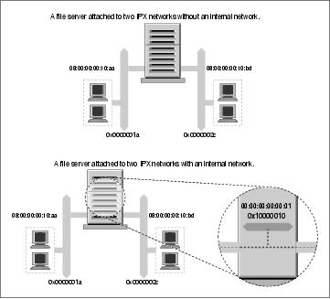
Linux Network Administrators Guide
network has no internal network, but the second does. The host in diagram Figure 15−1 would choose one of
its interfaces as its primary interface, let's assume 0000001a:0800000010aa, and that is what would be
advertised as its service access point. This works well for hosts on the 0000001a network, but means that
users on the 0000002c network will route via the network to reach that port, despite the server having a port
directly on that network if they've discovered this server from the SAP broadcasts.
Figure 15−1. IPX internal network
Allowing such hosts to have a virtual network with virtual host addresses that are entirely a software
construct solves this problem. This virtual network is best thought of as being inside the IPX host. The SAP
information then needs only to be propagated for this virtual network/node address combination. This virtual
network is known as an internal network. But how do other hosts know how to reach this internal network?
Remote hosts route to the internal network via the directly connected networks of the host. This means that
you see routing entries that refer to the internal network of hosts supporting multiple IPX interfaces. Those
routes should choose the optimal route available at the time, and should one fail, the routing is automatically
updated to the next best interface and route. In Figure 15−1, we've configured an internal IPX network of
address 0x10000010 and used a host address of 00:00:00:00:00:01. It is this address that will be our primary
interface and will be advertised via SAP. Our routing will reflect this network as being reachable via either of
our real network ports, so hosts will always use the best network route to connect to our server.
To create this internal network, use the ipx_internal_net command included in Greg Page's IPX tools
package. Again, a simple example demonstrates its use:
# ipx_internal_net add 10000010 000000000001
This command would create an IPX internal network with address 10000010 and a node address of
000000000001. The network address, just like any other IPX network address, must be unique on your
network. The node address is completely arbitrary, as there will normally be only one node on the network.
Each host may have only one IPX Internal Network, and if configured, the Internal Network will always be
the primary network.
15.5.1. Static IPX Routing Using the ipx_route Command
292
Linux Network Administrators Guide
To delete an IPX Internal Network, use:
# ipx_internal_net del
An internal IPX network is of absolutely no use to you unless your host both provides a service and has more
than one IPX interface active.
15.5.1. Static IPX Routing Using the ipx_route Command
293
15.6. Mounting a Remote NetWare Volume
IPX is commonly used to mount NetWare volumes in the Linux filesystem. This allows file−based data
sharing between other operating systems and Linux. Volker Lendecke developed the NCP client for Linux
and a suite of associated tools that make data sharing possible.
In an NFS environment, we'd use the Linux mount command to mount the remote filesystem. Unfortunately,
the NCP filesystem has unique requirements that make it impractical to build it into the normal mount. Linux
has an ncpmount command that we will use instead. The ncpmount command is one of the tools in Volker's
ncpfs package, which is available prepackaged in most modern distributions or in source form from
ftp.gwdg.de in the /pub/linux/misc/ncpfs/ directory. The version current at the time of writing is
2.2.0.
Before you can mount remote NetWare volumes, you must ensure your IPX network interface is configured
correctly (as described earlier). Next, you must know your login details on the NetWare server you wish to
mount; this includes the user ID and password. Lastly, you need to know which volume you wish to mount
and what local directory you wish to mount it under.
15.6.1. A Simple ncpmount Example
A simple example of ncpmount usage looks like this:
# ncpmount −S ALES_F1 −U rick −P d00−b−gud /mnt/brewery
This command mounts all volumes of the ALES_F1 fileserver under the /mnt/brewery directory, using
the NetWare login rick with the password d00−b−gud.
The ncpmount command is normally setuid to root and may therefore be used by any Linux user. By default,
that user owns the connection and only he or the root user will be able to unmount it.
NetWare embodies the notion of a volume, which is analogous to a filesystem in Linux. A NetWare volume
is the logical representation of a NetWare filesystem, which might be a single disk partition be spread across
many partitions. By default, the Linux NCPFS support treats volumes as subdirectories of a larger logical
filesystem represented by the whole fileserver. The ncpmount command causes each of the NetWare
volumes of the mounted fileserver to appear as a subdirectory under the mount point. This is convenient if
you want access to the whole server, but for complex technical reasons you will be unable to re−export these
directories using NFS, should you wish to do so. We'll discuss a more complex alternative that works around
this problem in a moment.
15.6.2. The ncpmount Command in Detail
The ncpmount has a large number of command line options that allow you quite a lot of flexibility in how
you manage your NCP mounts. The most important of these are described in Table 15−2.
Table 15−2. ncpmount Command Arguments
15.6. Mounting a Remote NetWare Volume
294
Linux Network Administrators Guide
Argument
Description
−S server
The name of the fileserver to mount.
−U
The NetWare user ID to use when logging in to the fileserver.
user_name
−P password The password to use for the NetWare login.
−n
This option must be used for NetWare logins that don't have a password associated with
them.
−C
This argument disables automatic conversion of passwords to uppercase.
−c
client_name This option allows you to specify who owns the connection to the fileserver. This is useful
for NetWare printing, which we will discuss in more detail later.
−u uid
The Linux user ID that should be shown as the owner of files in the mounted directory. If
this is not specified, it defaults to the user ID of the user who invokes the
ncpmount command.
−g gid
The Linux group ID that should be shown as the owner of files in the mounted directory. If
this is not specified, it will default to the group ID of the user who invokes the
ncpmount command.
−f file_mode
This option allows you to specify the file mode (permissions) that files in the mounted
directory should have. The value should be specified in octal, e.g., 0664. The permissions
that you will actually have are the file mode permissions specified with this option masked
with the permissions that your NetWare login ID has for the files on the fileserver. You
must have rights on the server and rights specified by this option in order to access a file.
The default value is derived from the current umask.
−d dir_mode
This option allows you to specify the directory permissions in the mounted directory. It
behaves in the same way as the −f option, except that the default permissions are derived
from the current umask. Execute permissions are granted where read access is granted.
−V volume
This option allows you to specify the name of a single NetWare volume to mount under
the mount point, rather than mounting all volumes of the target server. This option is
necessary if you wish to re−export a mounted NetWare volume using NFS.
−t time_out
This option allows you to specify the time that the NCPFS client will wait for a response
from a server. The default value is 60mS and the timeout is specified in hundredths of a
second. If you experience any stability problems with NCP mounts, you should try
increasing this value.
15.6. Mounting a Remote NetWare Volume
295
Linux Network Administrators Guide
−r
The NCP client code attempts to resend datagrams to the server a number of times before
retry_count deciding the connection is dead. This option allows you to change the retry count from the
default of 5.
15.6.3. Hiding Your NetWare Login Password
It is somewhat of a security risk to be putting a password on the command line, as we did with the
ncpmount command. Other active, concurrent users could see the password if they happen to be running a
program like top or ps. To reduce the risk of others seeing and stealing NetWare login passwords,
ncpmount is able to read certain details from a file in a user's home directory. In this file, the user keeps the
login name and password associated with each of the fileservers he or she intends to mount. The file is called
~/.nwclient and it must have permissions of 0600 to ensure that others cannot read it. If the permissions
are not correct, the ncpmount command will refuse to use it.
The file has a very simple syntax. Any lines beginning with a # character are treated as comments and
ignored. The remainder of the lines have the syntax:
fileserver/userid password
The fileserver is the name of the fileserver supporting the volumes you wish to mount. The userid is
the login name of your account on that server. The password field is optional. If it is not supplied, the
ncpmount command prompts users for the password when they attempt the mount. If the password field is
specified as the − character, no password is used; this is equivalent to the −n command−line argument.
You can supply any number of entries, but the fileserver field must be unique. The first fileserver entry has
special significance. The ncpmount command uses the −S command−line argument to determine which of
the entries in ~/.nwclient to use. If no server is specified using the −S argument, the first server entry in
~/.nwclient is assumed, and is treated as your preferred server. You should place the fileserver you
mount most frequently in the first position in the file.
15.6.4. A More Complex ncpmount Example
Let's look at a more complex ncpmount example involving a number of the features we've described. First,
let's build a simple ~/.nwclient file:
# NetWare login details for the Virtual Brewery and Winery
#
# Brewery Login
ALES_F1/MATT staoic1
#
# Winery Login
REDS01/MATT staoic1
#
Make sure its permissions are correct:
$ chmod 600 ~/.nwclient
15.6.3. Hiding Your NetWare Login Password
296
Linux Network Administrators Guide
Let's mount one volume of the Winery's server under a subdirectory of a shared directory, specifying the file
and directory permissions such that others may share the data from there:
$ ncpmount −S REDS01 −V RESEARCH −f 0664 −d 0775 /usr/share/winery/data/
This command, in combination with the ~/.nwclient file shown, would mount the RESEARCH volume of
the REDS01 server onto the /usr/share/winery/data/ directory using the NetWare login ID of
MATT and the password retrieved from the ~/.nwclient file. The permissions of the mounted files are
0664 and the directory permissions are 0775.
15.6.3. Hiding Your NetWare Login Password
297
15.7. Exploring Some of the Other IPX Tools
The ncpfs package contains a number of useful tools that we haven't described yet. Many of these tools
emulate the tools that are supplied with NetWare. We'll look at the most useful ones in this section.
15.7.1. Server List
The slist command lists all of the fileservers accessible to the host. The information is actually retrieved
from the nearest IPX router. This command was probably originally intended to allow users to see what
fileservers were available to mount. But it has become useful as a network diagnosis tool, allowing network
admins to see where SAP information is being propagated:
$ slist
NPPWR−31−CD01 23A91330 000000000001
V242X−14−F02 A3062DB0 000000000001
QITG_284ELI05_F4 78A20430 000000000001
QRWMA−04−F16 B2030D6A 000000000001
VWPDE−02−F08 35540430 000000000001
NMCS_33PARK08_F2 248B0530 000000000001
NCCRD−00−CD01 21790430 000000000001
NWGNG−F07 53171D02 000000000001
QCON_7TOMLI04_F7 72760630 000000000001
W639W−F04 D1014D0E 000000000001
QCON_481GYM0G_F1 77690130 000000000001
VITG_SOE−MAIL_F4R 33200C30 000000000001
slist accepts no arguments. The output displays the fileserver name, the IPX network address, and the host
address.
15.7.2. Send Messages to NetWare Users
NetWare supports a mechanism to send messages to logged−in users. The nsend command implements this
feature in Linux. You must be logged in to the server to send messages, so you need to supply the fileserver
name and login details on the command line with the destination user and the message to send:
# nsend −S vbrew_f1 −U gary −P j0yj0y supervisor
Join me for a lager before we do the print queues!
Here a user with login name gary sends a tempting invitation to the person using the supervisor account
on the ALES_F1 fileserver. Our default fileserver and login credentials will be used if we don't supply them.
15.7.3. Browsing and Manipulating Bindery Data
Each NetWare fileserver maintains a database of information about its users and configuration. This
database is called the bindery. Linux supports a set of tools that allow you to read it, and if you have
supervisor permissions on the server, to set and remove it. A summary of these tools is listed in Table 15−3.
15.7. Exploring Some of the Other IPX Tools
298
Linux Network Administrators Guide
Table 15−3. Linux Bindery Manipulation Tools
Command Name Command Description
nwfstime
Display or set a NetWare server's date and time
nwuserlist
List users logged in at a NetWare server
nwvolinfo
Display info about NetWare volumes
nwbocreate
Create a NetWare bindery object
nwbols
List NetWare bindery objects
nwboprops
List properties of a NetWare bindery object
nwborm
Remove a NetWare bindery object
nwbpcreate
Create a NetWare bindery property
nwbpvalues
Print a NetWare bindery property's contents
nwbpadd
Set the value of a NetWare bindery property
nwbprm
Remove a NetWare bindery property
15.7. Exploring Some of the Other IPX Tools
299
15.8. Printing to a NetWare Print Queue
The ncpfs package contains a small utility called nprint that sends print jobs across an NCP connection to
a NetWare print queue. This command creates the connection if it doesn't currently exist and uses the
~/.nwclient file that we described earlier to hide the username and password from prying eyes. The
command−line arguments used to manage the login process are the same as those used by the ncpmount, so
we won't go through those again here. We will cover the most important command−line options in our
examples; refer to the nprint(1) manual page for details.
The only required option for nprint is the name of the file to print. If the filename specified is − or if no
filename is specified at all, nprint will accept the print job from stdin. The most important nprint options
specify the fileserver and print queue to which you wish the job to be sent. Table 15−4 lists the most
important options.
Table 15−4. nprint Command−Line Options
Option
Description
−S server_name
The name of the NetWare fileserver supporting the print queue to which you wish to
print. Usually it is convenient for the server to have an entry in ~/.nwclient.
This option is mandatory.
−q queue_name
The print queue to which to send the print job. This option is mandatory.
−d
job_description Text that will appear in the print console utility when displaying the list of queued
jobs.
−l lines
The number of lines per printed page. This defaults to 66.
−r columns
The number of columns per printed page. This defaults to 80.
−c copies
The number of copies of the job that will be printed. The default is 1.
A simple example using nprint would look like:
$ nprint −S REDS01 −q PSLASER −c 2 /home/matt/ethylene.ps
This command would print two copies of the file /home/matt/ethylene.ps to the printer named
PSLASER on the REDS01 fileserver using a username and password obtained from the ~/.nwclient file.
15.8.1. Using nprint with the Line Printer Daemon
You will recall we previously mentioned that the −c option for the ncpmount is useful for printing. At last
we'll explain why and how.
15.8. Printing to a NetWare Print Queue
300
Linux Network Administrators Guide
Linux usually uses BSD−style line printer software. The line printer daemon (lpd) is a daemon that checks a
local spool directory for queued jobs that are to be printed. lpd reads the printer name and some other
parameters from the specially formatted spool file and writes the data to the printer, optionally passing the
data through a filter to transform or manipulate it in some way.
The lpd daemon uses a simple database called /etc/printcap to store printer configuration information,
including what filters are to be run. lpd usually runs with the permissions of a special system user called lp.
You could configure nprint as a filter for the lpd to use, which allows users of your Linux machine to output
directly to remote printers hosted by a NetWare fileserver. To do this, the lp user must be able to write NCP
requests to the NCP connection to the server.
An easy way to achieve this without requiring the lp user to establish its own connection and login is to
specify lp as the owner of a connection established by another user. A complete example of how to set up the
Linux printing system to handle print jobs from clients over NetWare is listed in three steps:
Write a wrapper script.
1.
The /etc/printcap file doesn't permit options to be supplied to filters. Therefore, you need to
write a short script that invokes the command you want along with its options. The wrapper script
could be as simple as:
#!/bin/sh
# p2pslaser − simple script to redirect stdin to the
# PSLASER queue on the REDS01 server
#
/usr/bin/nprint −S REDS01 −U stuart −q PSLASER
#
Store the script in the file /usr/local/bin/p2pslaser.
Write the
2.
/etc/printcap entry.
We'll need to configure the p2pslaser script we created as the output filter in the
/etc/printcap. This would look something like:
pslaser|Postscript Laser Printer hosted by NetWare server:\
:lp=/dev/null:\
:sd=/var/spool/lpd/pslaser:\
:if=/usr/local/bin/p2pslaser:\
:af=/var/log/lp−acct:\
:lf=/var/log/lp−errs:\
:pl#66:\
:pw#80:\
:pc#150:\
:mx#0:\
:sh:
Add the
3.
−c option to the ncpmount.
ncpmount −S REDS01 .... −c lp ....
Our local user stuart must specify the lp user as the owner of the connection when he mounts the
remote NetWare server.
15.8. Printing to a NetWare Print Queue
301
Linux Network Administrators Guide
Now any Linux user may choose to specify pslaser as the printer name when invoking lp. The print job
will be sent to the specified NetWare server and spooled for printing.
15.8.2. Managing Print Queues
The pqlist command lists all of the print queues available to you on the specified server. If you do not
specify a fileserver on the command line using the −S option, or a login name and password, these will be
taken from the default entry in your ~/.nwclient file:
# pqlist −S vbrew_f1 −U guest −n
Server: ALES_F1
Print queue name Queue ID
−−−−−−−−−−−−−−−−−−−−−−−−−−−−−−−−−−−−−−−−−−−−−−−−−−−−−−−−−−−−
TEST AA02009E
Q2 EF0200D9
NPI223761_P1 DA03007C
Q1 F1060004
I−DATA 0D0A003B
NPI223761_P3 D80A0031
Our example shows a list of the print queues available to the guest user on the ALES_F1 fileserver.[88]
To view the print jobs on a print queue, use the pqstat command. It takes the print queue name as an
argument and lists all of the jobs in that queue. You may optionally supply another argument indicating how
many of the jobs in the queue you'd like to list. The following sample output has been compressed a bit to fit
the width of this book's page:
$ pqstat −S ALES_F1 NPI223761_P1
Server: ALES_F1 Queue: NPI223761_P1 Queue ID: 6A0E000C
Seq Name Description Status Form Job ID
−−−−−−−−−−−−−−−−−−−−−−−−−−−−−−−−−−−−−−−−−−−−−−−−−−−−−−−−−−−−−−−−−−−−−−−−
1 TOTRAN LyX document − proposal.lyx Active 0 02660001
We can see just one print job in the queue, owned by user TOTRAN. The rest of the options include a
description of the job, its status, and its job identifier.
The pqrm command is used to remove print jobs from a specified print queue. To remove the job in the
queue we've just obtained the status of, we'd use:
$ pqrm −S ALES_F1 NPI223761_P1 02660001
The command is pretty straightforward but is clumsy to use in a hurry. It would be a worthwhile project to
write a basic script to simplify this operation.
15.8.2. Managing Print Queues
302
15.9. NetWare Server Emulation
There are two free software emulators for NetWare fileservers under Linux. lwared was developed by Ales
Dryak and mars_nwe was developed by Martin Stover. Both of these packages provide elementary NetWare
fileserver emulation under Linux, allowing NetWare clients to mount Linux directories exported as NetWare
volumes. While the lwared server is simpler to configure, the mars_nwe server is more fully featured. The
installation and configuration of these packages is beyond the scope of this chapter, but both are described in
the IPX−HOWTO.
15.9. NetWare Server Emulation
303
Chapter 16. ManagingTaylor UUCP
UUCP was designed in the late seventies by Mike Lesk at AT&T Bell Laboratories to provide a simple
dialup network over public telephone lines. Despite the popularity of dialup PPP and SLIP connections to the
Internet, many people who want to have email and Usenet News on their home machine still use UUCP
because it is often cheaper, especially in countries where Internet users have to pay by the minute for local
telephone calls, or where they do not have a local ISP and must pay long distance toll rates to connect.
Although there are many implementations of UUCP running on a wide variety of hardware platforms and
operating systems, overall, they are highly compatible.
However, as with most software that has somehow become standard over the years, there is no UUCP that
one would call the UUCP. It has undergone a steady evolution since the first version was implemented in
1976. Currently, there are two major species that differ mainly in their hardware support and configuration.
Of these two, various implementations exist, each varying slightly from its siblings.
One species is known as Version 2 UUCP, which dates back to a 1977 implementation by Mike Lesk, David
A. Novitz, and Greg Chesson. Although it is fairly old, it is still frequently used. Recent implementations of
Version 2 provide much of the comfort that the newer UUCP species do.
The second species was developed in 1983 and is commonly referred to as BNU (Basic Networking Utilities)
or HoneyDanBer UUCP. The latter name is derived from the authors' names (P. Honeyman, D. A. Novitz,
and B. E. Redman) and is often shortened further to HDB, which is the term we'll use in this chapter. HDB
was conceived to eliminate some of Version 2 UUCP's deficiencies. For example, new transfer protocols
were added, and the spool directory was split so that now there is one directory for each site with which you
have UUCP traffic.
The implementation of UUCP currently distributed with Linux is Taylor UUCP 1.06, which is the version
this chapter is based upon.[89] Taylor UUCP Version 1.06 was released in August 1995. Apart from
traditional configuration files, Taylor UUCP can also be compiled to understand the newstylea.k.a.
Taylorconfiguration files.
Taylor UUCP is usually compiled for HDB compatibility, the Taylor configuration scheme, or both. Because
the Taylor scheme is much more flexible and probably easier to understand than the often obscure HDB
configuration files, we will describe the Taylor scheme below.
This chapter is not designed to exhaustively describe the command−line options for the UUCP commands
and what they do, but to give you an introduction to how to set up a working UUCP node. The first section
gives a gentle introduction about how UUCP implements remote execution and file transfers. If you are not
entirely new to UUCP, you might want to skip to the section Section 16.2 later in this chapter, which
explains the various files used to set up UUCP.
We will, however, assume that you are familiar with the user programs of the UUCP suite, uucp and uux.
For a description, refer to the online manual pages.
Besides the publicly accessible programs uucp and uux, the UUCP suite contains a number of commands
used for administrative purposes only. They are used to monitor UUCP traffic across your node, remove old
log files, or compile statistics. None of these will be described here because they are peripheral to the main
tasks of UUCP. Besides, they're well documented and fairly easy to understand; refer to the manual pages for
more information. However, there is a third category, which comprise the actual UUCP work horses. They
are called uucico (where cico stands for copy−in copy−out), and uuxqt, which executes jobs sent from
Chapter 16. ManagingTaylor UUCP
304
Linux Network Administrators Guide
remote systems. We concentrate on these two important programs in this chapter.
If you're not satisfied with our coverage of these topics, you should read the documentation that comes with
the UUCP package. This is a set of Texinfo files that describe the setup using the Taylor configuration
scheme. You can convert the Texinfo files into a dvi file using the texi2dvi (found in the Texinfo package in
your distribution) and view the dvi file using the xdvi command.
Guylhem Aznar's UUCP−HOWTO is another good source for information about UUCP in a Linux
environment. It is available at any Linux Documentation Project mirror and is posted regularly to
comp.os.linux.answers.
There's also a newsgroup for the discussion of UUCP called comp.mail.uucp. If you have questions specific
to Taylor UUCP, you may be better off asking them there, rather than on the comp.os.linux.* groups.
Chapter 16. ManagingTaylor UUCP
305
16.1. UUCP Transfers and Remote Execution
The concept of jobs is vital to understanding UUCP. Every transfer that a user initiates with uucp or uux is
called a job. It is made up of a command to be executed on a remote system, a collection of files to be
transferred between sites, or both.
As an example, the following command makes UUCP copy the file netguide.ps to a remote host named
pablo and execute the lpr command on pablo to print the file:
$ uux −r pablo!lpr !netguide.ps
UUCP does not generally call the remote system immediately to execute a job (or else you could make do
with kermit). Instead, it temporarily stores the job description away. This is called spooling. The directory
tree under which jobs are stored is therefore called the spool directory and is generally located in
/var/spool/uucp. In our example, the job description would contain information about the remote
command to be executed (lpr), the user who requested the execution, and a couple of other items. In addition
to the job description, UUCP has to store the input file netguide.ps.
The exact location and naming of spool files may vary, depending on some compile−time options.
HDB−compatible UUCPs generally store spool files in a /var/spool/uucp subdirectory with the name
of the remote site. When compiled for Taylor configuration, UUCP creates subdirectories below the
site−specific spool directory for different types of spool files.
At regular intervals, UUCP dials up the remote system. When a connection to the remote machine is
established, UUCP transfers the files describing the job, plus any input files. The incoming jobs will not be
executed immediately, but only after the connection terminates. Execution is handled by uuxqt, which also
takes care of forwarding any jobs that are designated for another site.
To distinguish between more and less important jobs, UUCP associates a grade with each job. This is a
single digit ranging from 0 through 9, A through Z, and a through z, in decreasing precedence. Mail is
customarily spooled with grade B or C, while news is spooled with grade N. Jobs with higher grades are
transferred earlier. Grades may be assigned using the −g flag when invoking uucp or uux.
You can also prohibit the transfer of jobs below a given grade at certain times. To do this we set the
maximum spool grade that will be prohibited during a conversation. The maximum spool grade defaults to z,
meaning all grades will be transferred every time. Note the semantic ambiguity here: a file is transferred only
if it has a grade equal to or above the maximum spool grade threshold.
16.1.1. The Inner Workings of uucico
To understand why uucico needs to know particular information, a quick description of how it actually
connects to a remote system is helpful.
When you execute uucico −s system from the command line, uucico first has to connect physically. The
actions taken depend on the type of connection to open. Thus, when using a telephone line, it has to find a
modem and dial out. Over TCP, it has to call gethostbyname to convert the name to a network address,
find out which port to open, and bind the address to the corresponding socket.
16.1. UUCP Transfers and Remote Execution
306
Linux Network Administrators Guide
A successful connection is followed by authorization. This procedure generally consists of the remote
system asking for a login name and possibly a password. This exchange is commonly called the login chat.
The authorization procedure is performed either by the usual getty/login suite, or on TCP sockets by
uucico itself. If authorization succeeds, the remote end fires up uucico. The local copy of uucico that
initiated the connection is referred to as master, and the remote copy as slave.
Next follows the handshake phase: the master sends its hostname plus several flags. The slave checks this
hostname for permission to log in, send, and receive files, etc. The flags describe (among other things) the
maximum grade of spool files to transfer. If enabled, a conversation count or call sequence number check
takes place here. With this feature, both sites maintain a count of successful connections, which are
compared. If they do not match, the handshake fails. This is useful to protect yourself against impostors.
Finally, the two uucicos try to agree on a common transfer protocol. This protocol governs the way data is
transferred, checked for consistency, and retransmitted in case of an error. There is a need for different
protocols because of the differing types of connections supported. For example, telephone lines require a
safe protocol, which is pessimistic about errors, while TCP transmission is inherently reliable and can use
a more efficient protocol that foregoes most extra error checking.
After the handshake is complete, the actual transmission phase begins. Both ends turn on the selected
protocol driver. At this point, the drivers possibly perform a protocol−specific initialization sequence.
The master then sends all files queued for the remote system whose spool grade is high enough. When it has
finished, it informs the slave that it is done and that the slave may now hang up. The slave now can either
agree to hang up or take over the conversation. This is a change of roles: now the remote system becomes
master, and the local one becomes slave. The new master now sends its files. When done, both uucicos
exchange termination messages and close the connection.
If you need additional information on UUCP, please refer to the source code. There is also a really antique
article floating around the Net, written by David A. Novitz, which gives a detailed description of the UUCP
protocol.[90] The Taylor UUCP FAQ also discusses some details UUCP's implementation. It is posted to
comp.mail.uucp regularly.
16.1.2. uucico Command−line Options
In this section, we describe the most important command−line options for uucico:
− − system, −s system
Calls the named system unless prohibited by call−time restrictions.
−S system
Calls the named system unconditionally.
− −master, −r1
Starts uucico in master mode. This is the default when −s or −S is given. All by itself, the
−r1 option causes uucico to try to call all systems in the sys file described in the next section of
this chapter, unless prohibited by call or retry time restrictions.
16.1.2. uucico Command−line Options
307
Linux Network Administrators Guide
− −slave, −r0
Starts uucico in slave mode. This is the default when no −s or −S is given. In slave mode, either
standard input/output are assumed to be connected to a serial port, or the TCP port specified by the
−p option is used.
− −ifwork, −C
This option supplements −s or −S and tells uucico to call the named system only if there are jobs
spooled for it.
− −debug type, −x type, −X type
Turns on debugging of the specified type. Several types can be given as a comma−separated list. The
following types are valid: abnormal, chat, handshake, uucp−proto, proto, port, config, spooldir,
execute, incoming, and outgoing. Using all turns on all options. For compatibility with other UUCP
implementations, a number may be specified instead, which turns on debugging for the first n items
from the above list.
Debugging messages will be logged to the Debug file below /var/spool/uucp.
16.1.2. uucico Command−line Options
308
16.2. UUCP Configuration Files
In contrast to simpler file transfer programs, UUCP was designed to be able to handle all transfers
automatically. Once it is set up properly, interference by the administrator should not be necessary on a
day−to−day basis. The information required for automated transfer is kept in a couple of configuration files
that reside in the /usr/lib/uucp directory. Most of these files are used only when dialing out.
16.2.1. A Gentle Introduction to Taylor UUCP
To say that UUCP configuration is difficult would be an understatement. It is really a hairy subject, and the
sometimes terse format of the configuration files doesn't make things easier (although the Taylor format is
almost easy reading compared to the older formats in HDB or Version 2).
To give you a feel for how all the configuration files interact, we will introduce you to the most important
ones and have a look at sample entries from these files. We won't explain everything in detail now; a more
accurate account is given in separate sections that follow. If you want to set up your machine for UUCP, you
had best start with some sample files and adapt them gradually. You can pick either those shown below or
those included in your favorite Linux distribution.
All files described in this section are kept in /etc/uucp or a subdirectory thereof. Some Linux
distributions contain UUCP binaries that have support for both HDB and Taylor configuration enabled, and
use different subdirectories for each configuration file set. There will usually be a README file in
/usr/lib/uucp.
For UUCP to work properly, these files must be owned by the uucp user. Some of them contain passwords
and telephone numbers, and therefore should have permissions of 600. Note that although most UUCP
commands must be setuid to uucp, you must make sure the uuchk program is not. Otherwise, users will be
able to display system passwords even though the files have mode 600.
The central UUCP configuration file is /etc/uucp/config, which is used to set general parameters. The
most important of them (and for now, the only one) is your host's UUCP name. At the Virtual Brewery, they
use vstout as their UUCP gateway:
# /etc/uucp/config − UUCP main configuration file
nodename vstout
The sys file is the next important configuration file. It contains all the system−specific information of sites
to which you are linked. This includes the site's name and information on the link itself, such as the telephone
number when using a modem link. A typical entry for a modem−connected site called pablo would look like
this:
# /usr/lib/uucp/sys − name UUCP neighbors
# system: pablo
system pablo
time Any
phone 555−22112
port serial1
speed 38400
chat ogin: vstout ssword: lorca
16.2. UUCP Configuration Files
309
Linux Network Administrators Guide
time specifies the times at which the remote system may be called. chat describes the login chat scriptsthe
sequence of strings that must be exchanged to allow uucico to log into pablo. We will get back to chat scripts
later. The port keyword simply names an entry in the port file. (Refer to Figure 16−1.) You can assign
whatever name you like as long as it refers to a valid entry in port.
The port file holds information specific to the link itself. For modem links, it describes the device special
file to be used, the range of speeds supported, and the type of dialing equipment connected to the port. The
following entry describes /dev/ttyS1 (a.k.a. COM 2), to which the administrator has connected a
NakWell modem capable of running at speeds up to 38,400 bps. The port's name is chosen to match the port
name given in the sys file:
# /etc/uucp/port − UUCP ports
# /dev/ttyS1 (COM2)
port serial1
type modem
device /dev/ttyS1
speed 38400
dialer nakwell
The information pertaining to the dialers is kept in yet another file calledyou guessed itdial. For each
dialer type, it basically contains the sequence of commands that are issued to dial up a remote site, given the
telephone number. Again, this is specified as a chat script. For example, the entry for NakWell might look
like this:
# /etc/uucp/dial − per−dialer information
# NakWell modems
dialer nakwell
chat "" AT&F OK ATDT\T CONNECT
The line starting with chat specifies the modem chat, which is the sequence of commands sent to and received
from the modem to initialize it and make it dial the desired number. The \T sequence will be replaced with
the phone number by uucico.
To give you a rough idea how uucico deals with these configuration files, assume you issue the following
command:
$ uucico −s pablo
The first thing uucico does is look up pablo in the sys file. From the sys file entry for pablo, it sees that it
should use the serial1 port to establish the connection. The port file tells uucico that this is a modem port,
and that it has a NakWell modem attached.
uucico now searches dial for the entry describing the NakWell modem, and having found one, opens the
serial port /dev/cua1 and executes the dialer chat. That is, it sends AT&F, waits for the OK response, etc.
When encountering the string \T, it substitutes the phone number (555−22112) extracted from the sys file.
After the modem returns CONNECT, the connection has been established, and the modem chat is complete.
uucico now returns to the sys file and executes the login chat. In our example, it would wait for the
login: prompt, then send its username (vstout), wait for the password: prompt, and send its password (lorca).
After completing authorization, the remote end is assumed to fire up its own uucico. The two then enter the
handshake phase described in the previous section.
16.2. UUCP Configuration Files
310
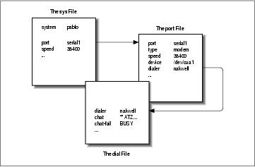
Linux Network Administrators Guide
Figure 16−1 illustrates the dependencies among configuration files.
Figure 16−1. Interaction of Taylor UUCP configuration files
16.2.2. What UUCP Needs to Know
Before you start writing the UUCP configuration files, you have to gather some information that UUCP
requires.
First, you have to figure out what serial device your modem is attached to. Usually, the (DOS) ports COM1:
through COM4: map to the device special files /dev/ttyS0 through /dev/ttyS3. Some distributions,
such as Slackware, create a link called /dev/modem to the appropriate ttyS* device file, and configure
kermit, seyon, and any other communication programs to use this generic file. In this case, you should use
/dev/modem in your UUCP configuration, too.
The reason for using a symbolic link is that all dial−out programs use so−called lock files to signal when a
serial port is in use. The names of these lock files are a concatenation of the string LCK.. and the device
filename, for instance LCK..ttyS1. If programs use different names for the same device, they will fail to
recognize each other's lock files. As a consequence, they will disrupt each other's session when started at the
same time. This is quite possible when you schedule your UUCP calls using a crontab entry. For details on
serial port setup, please refer to Chapter 4.
Next, you must find out at what speed your modem and Linux will communicate. You have to set this speed
to the maximum effective transfer rate you expect to get. The effective transfer rate may be much higher than
the raw physical transfer rate your modem is capable of. For instance, many modems send and receive data at
56 kbps. Using compression protocols such as V.42bis, the actual transfer rate may climb over 100 kbps.
Of course, if UUCP is to do anything at all, you need the phone number of a system to call. Also, you need a
valid login ID and possibly a password for the remote machine.[91]
You also have to know exactly how to log into the system. Do you have to press the Enter key before the
login prompt appears? Does it display login: or user:? This is necessary for composing the chat script.
If you don't know, or if the usual chat script fails, try to call the system with a terminal program like
kermit or minicom and record exactly what you have to do.
16.2.2. What UUCP Needs to Know
311
Linux Network Administrators Guide
16.2.3. Site Naming
As with TCP/IP−based networking, your host has to have a name for UUCP networking. As long as you
simply want to use UUCP for file transfers to or from sites you dial up directly, or on a local network, this
name does not have to meet any standards.[92]
However, if you use UUCP for a mail or news link, you should think about having the name registered with
the UUCP Mapping Project.[93] The UUCP Mapping Project is described in Chapter 17. Even if you
participate in a domain, you might consider having an official UUCP name for your site.
Frequently, people choose their UUCP name to match the first component of their fully qualified domain
name. Suppose your site's domain address is swim.twobirds.com; then your UUCP hostname would be swim.
Think of UUCP sites as knowing each other on a first−name basis. Of course, you can also use a UUCP name
completely unrelated to your fully qualified domain name.
However, make sure not to use the unqualified site name in mail addresses unless you have registered it as
your official UUCP name. At the very best, mail to an unregistered UUCP host will vanish in some big black
bit bucket. If you use a name already held by some other site, this mail will be routed to that site and cause its
postmaster a lot of headaches.
By default, the UUCP suite uses the name set by hostname as the site's UUCP name. This name is
commonly set by a command on the boot time rc scripts, and is usually stored in the /etc/hostname. If
your UUCP name is different from what you set your hostname to, you have to use the hostname option in
the config file to tell uucico about your UUCP name. This is described next.
16.2.4. Taylor Configuration Files
We now return to the configuration files. Taylor UUCP gets its information from the following files:
config
This is the main configuration file. You can define your site's UUCP name here.
sys
This file describes all known sites. For each site, it specifies its name, what times to call it, which
number to dial (if any), what type of device to use, and how to log on.
port
This file contains entries describing each available port, together with the line speed supported and
the dialer to be used.
dial
This file describes dialers used to establish a telephone connection.
16.2.3. Site Naming
312
Linux Network Administrators Guide
dialcode
This file contains expansions for symbolic dial codes.
call
This file contains the login name and password to be used when calling a system. Rarely used.
passwd
This file contains login names and passwords that systems may use when logging in. It is used only
when uucico does its own password checking.
Taylor configuration files are generally made up of lines containing keyword−value pairs. A hash sign
introduces a comment that extends to the end of the line. To use a hash sign to mean itself, escape it with a
backslash like this: \#.
There are quite a number of options you can tune with these configuration files. We can't go into all the
parameters, but we will cover the most important ones here. Then you should be able to configure a
modem−based UUCP link. Additional sections describe the modifications necessary if you want to use
UUCP over TCP/IP or over a direct serial line. A complete reference is given in the Texinfo documents that
accompany the Taylor UUCP sources.
When you think you have configured your UUCP system completely, you can check your configuration
using the uuchk tool (located in /usr/lib/uucp). uuchk reads your configuration files and prints out a
detailed report of the configuration values used for each system.
16.2.5. General Configuration Options Using the config File
You won't generally use this file to describe much beside your UUCP hostname. By default, UUCP will
use the name you set with the hostname command, but it is generally a good idea to set the UUCP name
explicitly. Here's a sample config file:
# /usr/lib/uucp/config − UUCP main configuration file
hostname vstout
A number of miscellaneous parameters can be set here too, such as the name of the spool directory or access
rights for anonymous UUCP. The latter will be described later in this chapter in the section Anonymous
UUCP.
16.2.6. How to Tell UUCP About Other Systems Using the
sys File
The sys file describes the systems that your machine knows about. An entry is introduced by the
system keyword; the subsequent lines up to the next system directive detail the parameters specific to that
site. Commonly, a system entry defines parameters such as the telephone number and login chat.
16.2.5. General Configuration Options Using the config File
313
Linux Network Administrators Guide
Parameters before the very first system line set default values used for all systems. Usually, you set protocol
parameters and the like in the defaults section.
The most prominent fields are discussed in detail in the following sections.
16.2.6.1. System name
The system command names the remote system. You must specify the correct name of the remote system,
not an alias you invented, because uucico will check it against what the remote system says it is called when
you log on.[94]
Each system name can appear only once. If you want to use several sets of configurations for the same
system (such as different telephone numbers uucico should try in turn), you can specify alternates, which
we'll describe after the basic configuration options.
16.2.6.2. Telephone number
If the remote system is to be reached over a telephone line, the phone field specifies the number the modem
should dial. It may contain several tokens interpreted by uucico's dialing procedure. An equal sign (=) means
wait for a secondary dial tone, and a dash (−) generates a one−second pause. Some telephone installations
choke when you don't pause between dialing a special access code and the telephone number.[95]
It is often convenient to use names instead of numbers to describe area dialing codes. The dialcode file
allows you to associate a name with a code that you may subsequently use when specifying telephone
numbers for remote hosts. Suppose you have the following dialcode file:
# /usr/lib/uucp/dialcode − dialcode translation
Bogoham 024881
Coxton 035119
With these translations, you can use a phone number such as Bogoham7732 in the sys file, which will
probably make things a little more legible and a whole lot easier to update should the dialing code for
Bogoham ever change.
16.2.6.3. port and speed
The port and speed options are used to select the device used for calling the remote system and the
maximum speed to which the device should be set.[96] A system entry may use either option alone or both
options in conjunction. When looking up a suitable device in the port file, only ports that have a matching
port name and/or speed range are selected.
Generally, using the speed option only should suffice. If you have only one serial device defined in port,
uucico always picks the right one anyway, so you only have to give it the desired speed. If you have several
modems attached to your systems, you still often don't want to name a particular port, because if uucico finds
that there are several matches, it tries each device in turn until it finds an unused one.
16.2.6.1. System name
314
Linux Network Administrators Guide
16.2.6.4. The login chat
We already encountered the login chat script, which tells uucico how to log in to the remote system. It
consists of a list of tokens specifying strings expected and sent by the local uucico process. uucico waits until
the remote machine sends a login prompt, then returns the login name, waits for the remote system to send
the password prompt, and sends the password. Expect and send strings appear in alternation in the script.
uucico automatically appends a carriage return character (\r) to any send string. Thus, a simple chat script
would look like:
ogin: vstout ssword: catch22
You will probably notice that the expect fields don't contain the whole prompts. This ensures that the login
succeeds, even if the remote system transmits Login: instead of login:. If the string you are expecting or
sending contains spaces or other white−space characters, you must use quotes to surround the text.
uucico also allows for some sort of conditional execution. Let's say the remote machine's getty needs to be
reset before sending a prompt. For this, you can attach a subchat to an expect string, set off by a dash. The
subchat is executed only if the main expect fails, i.e., a timeout occurs. One way to use this feature is to send
a BREAK if the remote site doesn't display a login prompt. The following example gives a general−purpose
chat script that should also work in case you have to press Enter before the login appears. The empty first
argument, "", tells UUCP to not wait for anything, but to continue with the next send string:
"" \n\r\d\r\n\c ogin:−BREAK−ogin: vstout ssword: catch22
A couple of special strings and escape characters can occur in the chat script. The following is a partial list of
characters legal in expect strings:
""
The empty string. It tells uucico to not wait for anything, but to proceed with the next send string
immediately.
\t
Tab character.
\r
Carriage return character.
\s
Space character. You need this to embed spaces in a chat string.
\n
Newline character.
\\
Backslash character.
16.2.6.4. The login chat
315
Linux Network Administrators Guide
On send strings, the following escape characters and strings are legal in addition to the above:
EOT
End of transmission character (^D).
BREAK
Break character.
\c
Suppress sending of carriage return at end of string.
\d
Delay sending for 1 second.
\E
Enable echo checking. This requires uucico to wait for the echo of everything it writes to be read
back from the device before it can continue with the chat. It is primarily useful when used in modem
chats (which we will encounter later). Echo checking is off by default.
\e
Disable echo checking.
\K
Same as BREAK.
\p
Pause for fraction of a second.
16.2.6.5. Alternates
Sometimes you want to have multiple entries for a single system, for instance if the system can be reached
on different modem lines. With Taylor UUCP, you can do this by defining a so−called alternate.
An alternate entry retains all settings from the main system entry and specifies only those values that should
be overridden in the default system entry or added to it. An alternate is offset from the system entry by a line
containing the keyword alternate.
To use two phone numbers for pablo, you would modify its sys entry in the following way:
system pablo
phone 123−456
.. entries as above ...
16.2.6.5. Alternates
316
Linux Network Administrators Guide
alternate
phone 123−455
When calling pablo, uucico will first dial 123−456, and if this fails, it will try the alternate. The alternate
entry retains all settings from the main system entry and overrides the telephone number only.
16.2.6.6. Restricting call times
Taylor UUCP provides a number of ways you may restrict the times when calls can be placed to a remote
system. You might do this either because of limitations the remote host places on its services during business
hours, or simply to avoid times with high call rates. Note that it is always possible to override call−time
restrictions by giving uucico the −S or −f option.
By default, Taylor UUCP disallows connections at any time, so you have to use some sort of time
specification in the sys file. If you don't care about call time restrictions, you can specify the time option
with a value of Any in your sys file.
The simplest way to restrict call time is to include a time entry, followed by a string made up of a day and a
time subfield. Day may be any combination of Mo, Tu, We, Th, Fr, Sa, and Su. You can also specify Any,
Never, or Wk for weekdays. The time consists of two 24−hour clock values, separated by a dash. They
specify the range during which calls may be placed. The combination of these tokens is written without white
space in between. Any number of day and time specifications may be grouped together with commas, as this
line shows:
time MoWe0300−0730,Fr1805−2200
This example allows calls on Mondays and Wednesdays from 3:00 a.m. to 7:30 a.m., and on Fridays between
6:05 p.m. and 10:00 p.m. When a time field spans midnight, say Mo1830−0600, it actually means Monday,
between midnight and 6:00 a.m. and between 6:30 p.m. and midnight.
The special time strings Any and Never mean what they say: calls may be placed at any or no time,
respectively.
Taylor UUCP also has a number of special tokens you may use in time strings, such as NonPeak and Night.
These special tokens are shorthand for Any2300−0800,SaSu0800−1700 and Any1800−0700,SaSu,
respectively.
The time command takes an optional second argument that describes a retry time in minutes. When an
attempt to establish a connection fails, uucico will not allow another attempt to dial up the remote host within
a certain interval. For instance, when you specify a retry time of 5 minutes, uucico will refuse to call the
remote system within 5 minutes after the last failure. By default, uucico uses an exponential backoff scheme,
where the retry interval increases with each repeated failure.
The timegrade command allows you to attach a maximum spool grade to a schedule. For instance, assume
you have the following timegrade commands in a system entry:
timegrade N Wk1900−0700,SaSu
timegrade C Any
16.2.6.6. Restricting call times
317
Linux Network Administrators Guide
This allows jobs with a spool grade of C or higher (usually mail is queued with grade B or C) to be
transferred whenever a call is established, while news (usually queued with grade N) are transferred only
during the night and at weekends.
Just like time, the timegrade command takes a retry interval in minutes as an optional third argument.
However, a caveat about spool grades is in order here. First, the timegrade option applies only to what
your systems sends; the remote system may still transfer anything it likes. You can use the
call−timegrade option to explicitly request it to send only jobs above some given spool grade; but there's no
guarantee it will obey this request.[97]
Similarly, the timegrade field is not checked when a remote system calls in, so any jobs queued for the
calling system will be sent. However, the remote system can explicitly request your uucico to restrict itself to
a certain spool grade.
16.2.7. Identifying Available Devices Through the port File
The port file tells uucico about the available ports. These are usually modem ports, but other types, such
as direct serial lines and TCP sockets, are supported as well.
Like the sys file, port consists of separate entries starting with the keyword port followed by the port
name. This name may be used in the sys file's port statement. The name need not be unique; if there are
several ports with the same name, uucico will try each in turn until it finds one that is not currently being
used.
The port command should be followed immediately by the type statement, which indicates what type of port
is described. Valid types are modem, direct for direct connections, and tcp for TCP sockets. If the
port command is missing, the port type defaults to modem.
In this section, we cover only modem ports; TCP ports and direct lines are discussed in a later section.
For modem and direct ports, you have to specify the device for calling out using the device directive. Usually,
this is the name of a device special file in the /dev directory, like /dev/ttyS1.
In the case of a modem device, the port entry also determines what type of modem is connected to the port.
Different types of modems have to be configured differently. Even modems that claim to be
Hayes−compatible aren't always really compatible with one another. Therefore, you have to tell uucico how
to initialize the modem and make it dial the desired number. Taylor UUCP keeps the descriptions of all
dialers in a file named dial. To use any of these, you have to specify the dialer's name using the
dialer command.
Sometimes, you will want to use a modem in different ways, depending on which system you call. For
instance, some older modems don't understand when a high−speed modem attempts to connect at 56 kbps;
they simply drop the line instead of negotiating a connect at 9,600 bps, for instance. When you know site
drop uses such a dumb modem, you have to set up your modem differently when calling them. For this, you
need an additional port entry in the port file that specifies a different dialer. Now you can give the new port
a different name, such as serial1−slow, and use the port directive in the drop system entry in sys.
16.2.7. Identifying Available Devices Through the port File
318
Linux Network Administrators Guide
A better to distinguish the ports is by the speeds they support. For instance, the two port entries for the above
situation may look like this:
# NakWell modem; connect at high speed
port serial1 # port name
type modem # modem port
device /dev/ttyS1 # this is COM2
speed 115200 # supported speed
dialer nakwell # normal dialer
# NakWell modem; connect at low speed
port serial1 # port name
type modem # modem port
device /dev/ttyS1 # this is COM2
speed 9600 # supported speed
dialer nakwell−slow # don't attempt fast connect
The system entry for site drop would now give serial1 as the port name, but request to use it at only 9,600
bps. uucico then automatically uses the second port entry. All remaining sites that have a speed of 115,200
bps in the system entry will be called using the first port entry. By default, the first entry with a matching
speed will be used.
16.2.8. How to Dial a Number Using the dial File
The dial file describes the way various dialers are used. Traditionally, UUCP talks of dialers rather than
modems, because in earlier times, it was usual practice to have one (expensive) automatic dialing device
serve a whole bank of modems. Today, most modems have dialing support built in, so this distinction gets a
little blurred.
Nevertheless, different dialers or modems may require a different configuration. You can describe each of
them in the dial file. Entries in dial start with the dialer command that gives the dialer's name.
The most important entry besides dialer is the modem chat, specified by the chat command. Similar to the
login chat, it consists of a sequence of strings uucico sends to the dialer and the responses it expects in return.
It is commonly used to reset the modem to some known state and dial the number. The following sample
dialer entry shows a typical modem chat for a Hayes−compatible modem:
# NakWell modem; connect at high speed
dialer nakwell # dialer name
chat "" AT&F OK\r ATH1E0Q0 OK\r ATDT\T CONNECT
chat−fail BUSY
chat−fail ERROR
chat−fail NO\sCARRIER
dtr−toggle true
The modem chat begins with "", the empty expect string. uucico therefore sends the first command
AT&F right away. AT&F is the Hayes command to reset the modem to factory default configuration.
uucico then waits until the modem has sent OK and sends the next command, which turns off local echo and
the like. After the modem returns OK again, uucico sends the dialing command ATDT. The escape sequence
\T in this string is replaced with the phone number taken from the system entry sys file. uucico then waits
for the modem to return the string CONNECT, which signals that a connection with the remote modem has
been established successfully.
16.2.8. How to Dial a Number Using the dial File
319
Linux Network Administrators Guide
Sometimes the modem fails to connect to the remote system; for instance, if the other system is talking to
someone else and the line is busy. In this case, the modem returns an error message indicating the reason.
Modem chats are not capable of detecting such messages; uucico continues to wait for the expected string
until it times out. The UUCP log file therefore only shows a bland timed out in chat script instead of the
specific reason.
However, Taylor UUCP allows you to tell uucico about these error messages using the chat−fail command
as shown above. When uucico detects a chat−fail string while executing the modem chat, it aborts the call
and logs the error message in the UUCP log file.
The last command in the example shown above tells UUCP to toggle the Data Terminal Ready (DTR) control
line before starting the modem chat. Normally, the serial driver raises DTR when a process opens the device
to tell the attached modem that someone wants to talk to it. The dtr−toggle feature then drops DTR, waits a
moment, and raises it again. Many modems can be configured to react to a drop of DTR by going off−hook,
entering command state, or resetting themselves.[98]
16.2.9. UUCP Over TCP
Absurd as it may sound, using UUCP to transfer data over TCP is not that bad an idea, especially when
transferring large amounts of data such as Usenet news. On TCP−based links, news is generally exchanged
using the NNTP protocol, through which articles are requested and sent individually without compression or
any other optimization. Although adequate for large sites with several concurrent newsfeeds, this technique is
very unfavorable for small sites that receive their news over a relatively slow connection such as ISDN.
These sites will usually want to combine the qualities of TCP with the advantages of sending news in large
batches, which can be compressed and thus transferred with very low overhead. A common way to transfer
these batches is to use UUCP over TCP.
In sys, you would specify a system to be called via TCP like this:
system gmu
address news.groucho.edu
time Any
port tcp−conn
chat ogin: vstout word: clouseau
The address command gives the IP address of the host or its fully qualified domain name. The corresponding
port entry would read:
port tcp−conn
type tcp
service 540
The entry states that a TCP connection should be used when a sys entry references tcp−conn, and that
uucico should attempt to connect to the TCP network port 540 on the remote host. This is the default port
number of the UUCP service. Instead of the port number, you may also give a symbolic port name to the
service command. The port number corresponding to this name will be looked up in /etc/services. The
common name for the UUCP service is uucpd.
16.2.9. UUCP Over TCP
320
Linux Network Administrators Guide
16.2.10. Using a Direct Connection
Assume you use a direct line to connect your system vstout to tiny. Much like in the modem case, you have
to write a system entry in the sys file. The port command identifies the serial port tiny is hooked up to:
system tiny
time Any
port direct1
speed 38400
chat ogin: cathcart word: catch22
In the port file, you have to describe the serial port for the direct connection. A dialer entry is not needed
because there's no need for dialing:
port direct1
type direct
speed 38400
device /dev/ttyS1
16.2.10. Using a Direct Connection
321
16.3. Controlling Access to UUCP Features
UUCP is quite a flexible system. With that flexibility comes a need to carefully control access to its
features to prevent abuse, whether it be intentional or accidental. The primary features of concern to the
UUCP administrator are remote command execution, file transfer, and forwarding. Taylor UUCP provides a
means of limiting the freedom that remote UUCP hosts have in exercising each of these features. With
careful selection of permissions, the UUCP administrator can ensure that the host's security is preserved.
16.3.1. Command Execution
UUCP's task is to copy files from one system to another and to request execution of certain commands on
remote hosts. Of course, you as an administrator would want to control what rights you grant other
systemsallowing them to execute any command they choose on your system is definitely not a good idea.
By default, the only commands Taylor UUCP allows other systems to execute on your machine are
rmail and rnews, which are commonly used to exchange email and Usenet News over UUCP. To change the
set of commands for a particular system, you can use the commands keyword in the sys file. Similarly, you
may want to limit the search path to just those directories containing the allowed commands. You can change
the search path allowed for a remote host with the command−path statement. For instance, you may want to
allow system pablo to execute the bsmtp command in addition to rmail and rnews:[99]
system pablo
...
commands rmail rnews bsmtp
16.3.2. File Transfers
Taylor UUCP also allows you to fine−tune file transfers in great detail. At one extreme, you can disable
transfers to and from a particular system. Just set request to no, and the remote system will not be able to
either retrieve files from your system or send it any files. Similarly, you can prohibit your users from
transferring files to or from a system by setting transfer to no. By default, users on both the local and the
remote system are allowed to upload and download files.
In addition, you can configure the directories that files may be copied to and from. Usually you will want to
restrict access from remote systems to a single directory hierarchy, but still allow your users to send files
from their home directory. Commonly, remote users are allowed to receive files only from the public UUCP
directory /var/spool/uucppublic. This is the traditional place to make files publicly available, very
much like FTP servers on the Internet.[100]
Taylor UUCP provides four different commands to configure the directories for sending and receiving files.
They are: local−send, which specifies the list of directories a user may ask UUCP to send files from;
local−receive, which gives the list of directories a user may ask to receive files to; and remote−send and
remote−receive, which do the analogous for requests from a foreign system. Consider the following
example:
system pablo
...
16.3. Controlling Access to UUCP Features
322
Linux Network Administrators Guide
local−send /home ~
local−receive /home ~/receive
remote−send ~ !~/incoming !~/receive
remote−receive ~/incoming
The local−send command allows users on your host to send any files below /home and from the public
UUCP directory to pablo. The local−receive command allows them to receive files either to the
world−writable receive directory in the uucppublic, or any world−writable directory below /home.
The remote−send directive allows pablo to request files from /var/spool/uucppublic, except for
files from the incoming and receive directories. This is signaled to uucico by preceding the directory
names with exclamation marks. Finally, the last line allows pablo to upload files to incoming.
A major problem with file transfers using UUCP is that it receives files only to directories that are
world−writable. This may tempt some users to set up traps for other users. However, there's no way to escape
this problem outside of disabling UUCP file transfers altogether.
16.3.3. Forwarding
UUCP provides a mechanism to have other systems execute file transfers on your behalf. For instance,
suppose your system has uucp access to a system called seci, but not to another system called uchile. This
allows you to make seci retrieve a file from uchile for you and send it to your system. The following
command would achieve this:
$ uucp −r seci!uchile!~/find−ls.gz ~/uchile.files.gz
This technique of passing a job through several systems is called forwarding. On your own UUCP system,
you would want to limit the forwarding service to a few hosts you trust not to run up a horrendous phone bill
by making you download the latest X11R6 source release for them.
By default, Taylor UUCP prohibits forwarding altogether. To enable forwarding for a particular system, you
can use the forward command. This command specifies a list of sites the system may request you to forward
jobs to and from. For instance, the UUCP administrator of seci would have to add the following lines to the
sys file to allow pablo to request files from uchile:
####################
# pablo
system pablo
...
forward uchile
####################
# uchile
system uchile
...
forward−to pablo
The forward−to entry for uchile is necessary so that any files returned by it are actually passed on to pablo.
Otherwise UUCP would drop them. This entry uses a variation of the forward command that permits
uchile to send files only to pablo through seci, not the other way round.
To permit forwarding to any system, use the special keyword ANY (capital letters required).
16.3.3. Forwarding
323
16.4. Setting Up Your System for Dialing In
If you want to set up your site for dialing in, you have to permit logins on your serial port and customize
some system files to provide UUCP accounts, which we will cover in this section.
16.4.1. Providing UUCP Accounts
To begin with, you have to set up user accounts that let remote sites log into your system and establish a
UUCP connection. Generally, you will provide a separate login name to each system that polls you. When
setting up an account for system pablo, you might give it the username Upablo. There is no enforced policy
on login names; they can be just about anything, but it will be convenient for you if the login name is easily
related to the remote host name.
For systems that dial in through the serial port, you usually have to add these accounts to the system
password file /etc/passwd. It is good practice to put all UUCP logins in a special group, such as uuguest.
The account's home directory should be set to the public spool directory /var/spool/uucppublic; its
login shell must be uucico.
To serve UUCP systems that connect to your site over TCP, you have to set up inetd to handle incoming
connections on the uucp port by adding the following line to /etc/inetd.conf: [101]
uucp stream tcp nowait root /usr/sbin/tcpd /usr/lib/uucp/uucico −l
The −l option makes uucico perform its own login authorization. It prompts for a login name and a
password just like the standard login program, but relies on its private password database instead of
/etc/passwd. This private password file is named /etc/uucp/passwd and contains pairs of login
names and passwords:
Upablo IslaNegra
Ulorca co'rdoba
This file must be owned by uucp and have permissions of 600.
Does this database sound like such a good idea that you would like to use it on normal serial logins, too?
Well, in some cases you can. What you need is a getty program that you can tell to invoke uucico instead of
/bin/login for your UUCP users.[102] The invocation of uucico would look like this:
/usr/lib/uucp/uucico −l −u user
The −u option tells it to use the specified user name rather than prompting for it.[103]
To protect your UUCP users from callers who might give a false system name and snarf all their mail, you
should add called−login commands to each system entry in the sys file. This is described in the next section.
16.4. Setting Up Your System for Dialing In
324
Linux Network Administrators Guide
16.4.2. Protecting Yourself Against Swindlers
A major problem with UUCP is that the calling system can lie about its name; it announces its name to the
called system after logging in, but the server doesn't have any way to check it. Thus, an attacker could log
into his or her own UUCP account, pretend to be someone else, and pick up that other site's mail. This is
particularly troublesome if you offer login via anonymous UUCP, where the password is made public.
You must guard against this sort of impostor. The cure for this disease is to require each system to use a
particular login name by specifying a called−login in sys. A sample system entry may look like this:
system pablo
... usual options ...
called−login Upablo
The upshot is that whenever a system logs in and pretends it is pablo, uucico checks whether it has logged in
as Upablo. If it hasn't, the calling system is turned down, and the connection is dropped. You should make it a
habit to add the called−login command to every system entry you add to your sys file. It is important that
you do this for all systems in your sys file, regardless of whether they will ever call your site or not. For those
sites that never call you, you should probably set called−login to some totally bogus user name, such as
neverlogsin.
16.4.3. Be Paranoid: Call Sequence Checks
Another way to fend off and detect impostors is to use call sequence checks. These help you protect against
intruders who somehow manage to find out the password with which you log into your UUCP system.
When using call sequence checks, both machines keep track of the number of connections established so far.
The counter is incremented with each connection. After logging in, the caller sends its call sequence number,
and the receiver checks it against its own number. If they don't match, the connection attempt is rejected. If
the initial number is chosen at random, attackers will have a hard time guessing the correct call sequence
number.
But call sequence checks do more for you. Even if some very clever person should detect your call sequence
number as well as your password, you will find out. When the attacker calls your UUCP feed and steals your
mail, this will increase the feeds call sequence number by one. The next time you call your feed and try to log
in, the remote uucico will refuse you, because the numbers don't match anymore!
If you have enabled call sequence checks, you should check your log files regularly for error messages that
hint at possible attacks. If your system rejects the call sequence number the calling system offers, uucico will
put a message into the log file saying something like, Out of sequence call rejected. If your system is
rejected by its feed because the sequence numbers are out of sync, it will put a message in the log file saying,
Handshake failed (RBADSEQ).
To enable call sequence checks, add the following command to the system entry:
# enable call sequence checks
sequence true
In addition, you have to create the file containing the sequence number itself. Taylor UUCP keeps the
16.4.2. Protecting Yourself Against Swindlers
325
Linux Network Administrators Guide
sequence number in a file called .Sequence in the remote site's spool directory. It must be owned by
uucp and must be mode 600 (i.e., readable and writeable only by uucp). It is best to initialize this file with an
arbitrary, previously agreed−upon start value. A simple way to create this file is:
# cd /var/spool/uucp/pablo
# echo 94316 > .Sequence
# chmod 600 .Sequence
# chown uucp.uucp .Sequence
Of course, the remote site has to enable call sequence checks as well and start by using exactly the same
sequence number as you.
16.4.4. Anonymous UUCP
If you want to provide anonymous UUCP access to your system, you first have to set up a special account
for it as previously described. A common practice is to give the anonymous account a login name and a
password of uucp.
In addition, you have to set a few of the security options for unknown systems. For instance, you may want to
prohibit them from executing any commands on your system. However, you cannot set these parameters in a
sys file entry because the system command requires the system's name, which you don't have. Taylor UUCP
solves this dilemma through the unknown command. unknown can be used in the config file to specify
any command that can usually appear in a system entry:
unknown remote−receive ~/incoming
unknown remote−send ~/pub
unknown max−remote−debug none
unknown command−path /usr/lib/uucp/anon−bin
unknown commands rmail
This will restrict unknown systems to downloading files from below the pub directory and uploading files to
the incoming directory below /var/spool/uucppublic. The next line will make uucico ignore any
requests from the remote system to turn on debugging locally. The last two lines permit unknown systems to
execute rmail; but the command path specified makes uucico look for the rmail command in a private
directory named anon−bin only. This restriction allows you to provide some special rmail that, for
instance, forwards all mail to the superuser for examination. This allows anonymous users to reach the
maintainer of the system, but at the same time prevents them from injecting any mail to other sites.
To enable anonymous UUCP, you must specify at least one unknown statement in config. Otherwise
uucico will reject all unknown systems.
16.4.4. Anonymous UUCP
326
16.5. UUCP Low−Level Protocols
To negotiate session control and file transfers with the remote end, uucico uses a set of standardized
messages. This is often referred to as the high−level protocol. During the initialization phase and the hangup
phase these are simply sent across as strings. However, during the real transfer phase, an additional low−level
protocol that is mostly transparent to the higher levels is employed. This protocol offers some added benefits,
such as allowing error checks on data sent over unreliable links.
16.5.1. Protocol Overview
UUCP is used over different types of connections, such as serial lines, TCP, or sometimes even X.25; it is
advantageous to transport UUCP within protocols designed specifically for the underlying network protocol.
In addition, several implementations of UUCP have introduced different protocols that do roughly the same
thing.
Protocols can be divided into two categories: streaming and packet protocols. Protocols of the streaming
variety transfer a file as a whole, possibly computing a checksum over it. This is nearly free of overhead, but
requires a reliable connection because any error will cause the whole file to be retransmitted. These protocols
are commonly used over TCP connections but are not suitable for use over telephone lines. Although modern
modems do quite a good job at error correction, they are not perfect, nor is there any error detection between
your computer and the modem.
On the other hand, packet−oriented protocols split up the file into several chunks of equal size. Each packet is
sent and received separately, a checksum is computed, and an acknowledgment is returned to the sender. To
make this more efficient, sliding−window protocols have been invented, which allow for a limited number (a
window) of outstanding acknowledgments at any time. This greatly reduces the amount of time uucico has to
wait during a transmission. Still, the relatively large overhead compared to a streaming protocol makes packet
protocols inefficient for TCP use, but ideal for telephone lines.
The width of the data path also makes a difference. Sometimes sending 8−bit characters over a serial
connection is impossible; for instance, the connection could go through a stupid terminal server that strips off
the eighth bit. When you transmit 8−bit characters over a 7−bit connection, they have to be quoted on
transmission. In the worst−case scenerio, quoting doubles the amount of data to be transmitted, although
compression done by the hardware may compensate. Lines that can transmit arbitrary 8−bit characters are
usually called 8−bit clean. This is the case for all TCP connections, as well as for most modem connections.
Taylor UUCP 1.06 supports a wide variety of UUCP protocols. The most common of these are:
g
This is the most common protocol and should be understood by virtually all uucicos. It does
thorough error checking and is therefore well suited for noisy telephone links. g requires an 8−bit
clean connection. It is a packet−oriented protocol that uses a sliding−window technique.
i
This is a bidirectional packet protocol, which can send and receive files at the same time. It requires a
full−duplex connection and an 8−bit clean data path. It is currently understood by Taylor UUCP only.
16.5. UUCP Low−Level Protocols
327
Linux Network Administrators Guide
t
This protocol is intended for use over a TCP connection or other truly error−free networks. It uses
packets of 1,024 bytes and requires an 8−bit clean connection.
e
This should basically do the same as t. The main difference is that e is a streaming protocol and is
thus suited only to reliable network connections.
f
This is intended for use with reliable X.25 connections. It is a streaming protocol and expects a 7−bit
data path. 8−bit characters are quoted, which can make it very inefficient.
G
This is the System V Release 4 version of the g protocol. It is also understood by some other versions
of UUCP.
a
This protocol is similiar to ZMODEM. It requires an 8−bit connection, but quotes certain control
characters like XON and XOFF.
16.5.2. Tuning the Transmission Protocol
All protocols allow for some variation in packet sizes, timeouts, etc. Usually, the defaults work well under
standard circumstances, but may not be optimal for your situation. The g protocol, for instance, uses window
sizes from 1 to 7, and packet sizes in powers of 2 ranging from 64 through 4096. If your telephone line is
usually so noisy that it drops more than 5 percent of all packets, you should probably lower the packet size
and shrink the window. On the other hand, on very good telephone lines the protocol overhead of sending
acknowledgments for every 128 bytes may prove wasteful, so you might increase the packet size to 512 or
even 1,024. Most binaries included in Linux distributions default to a window size of 7 and 128−byte packets.
Taylor UUCP lets you tune parameters with the protocol−parameter command in the sys file. For instance,
to set the g protocol's packet size to 512 when talking to pablo, you have to add:
system pablo
...
protocol−parameter g packet−size 512
The tunable parameters and their names vary from protocol to protocol. For a complete list of them, refer to
the documentation enclosed in the Taylor UUCP source.
16.5.2. Tuning the Transmission Protocol
328
Linux Network Administrators Guide
16.5.3. Selecting Specific Protocols
Not every implementation of uucico speaks and understands each protocol, so during the initial handshake
phase, both processes have to agree on a common one. The master uucico offers the slave a list of supported
protocols by sending Pprotlist, from which the slave may pick one.
Based on the type of port used (modem, TCP, or direct), uucico will compose a default list of protocols. For
modem and direct connections, this list usually comprises i, a, g, G, and j. For TCP connections, the list is t,
e, i, a, g, G, j, and f. You can override this default list with the protocols command, which may be specified
in a system entry as well as a port entry. For instance, you might edit the port file entry for your modem
port like this:
port serial1
...
protocols igG
This will require any incoming or outgoing connection through this port to use i, g, or G. If the remote system
does not support any of these, the conversation will fail.
16.5.3. Selecting Specific Protocols
329
16.6. Troubleshooting
This section describes what may go wrong with your UUCP connection and makes location suggestions to
fix the error. Although these problems are encountered on a regular basis, there is much more that can go
wrong than what we have listed.
If you have a problem, enable debugging with −xall, and take a look at the output in Debug in the spool
directory. The file should help you to quickly recognize the problem. It is often helpful to turn on the
modem's speaker when it doesn't connect. With Hayes−compatible modems, you can turn on the speaker by
adding ATL1M1 OK to the modem chat in the dial file.
The first check should always be whether all file permissions are set correctly. uucico should be setuid uucp,
and all files in /usr/lib/uucp, /var/spool/uucp, and /var/spool/uucppublic should be
owned by uucp. There are also some hidden files in the spool directory which must be owned by uucp as
well.[104]
When you're sure you have the permissions of all files set correctly, and you're still experiencing problems,
you can then begin to take error messages more literally. We'll now look at some of the more common errors
and problems.
16.6.1. uucico Keeps Saying Wrong Time to Call
This probably means that in the system entry in sys, you didn't specify a time command that details when
the remote system may be called, or you gave one that actually forbids calling at the current time. If no call
schedule is given, uucico assumes the system can never be called.
16.6.2. uucico Complains That the Site Is Already Locked
This means that uucico detects a lock file for the remote system in /var/spool/uucp. The lock file may
be from an earlier call to the system that crashed or was killed. Another possible explanation is that there's
another uucico process sitting around that is trying to dial the remote system and has gotten stuck in a chat
script, or stalled for some other reason.
To correct this error, kill all uucico processes open for the site with a hangup signal, and remove all lock files
that they have left lying around.
16.6.3. You Can Connect to the Remote Site, but the Chat
Script Fails
Look at the text you receive from the remote site. If it's garbled, you might have a speed−related problem.
Otherwise, confirm that it really agrees with what your chat script expects. Remember, the chat script starts
with an expect string. If you receive the login prompt and send your name, but never get the password
prompt, insert some delays before sending it, or even in between the letters. You might be too fast for your
modem.
16.6. Troubleshooting
330
Linux Network Administrators Guide
16.6.4. Your Modem Does Not Dial
If your modem doesn't indicate that the DTR line has been raised when uucico calls out, you might not have
given the right device to uucico. If your modem recognizes DTR, check with a terminal program that you can
write to the modem. If this works, turn on echoing with \E at the start of the modem chat. If the modem
doesn't echo your commands during the modem chat, check if your line speed is too high or low. If you see
the echo, check if you have disabled modem responses or set them to number codes. Verify that the chat
script itself is correct. Remember that you have to write two backslashes to send one to the modem.
16.6.5. Your Modem Tries to Dial but Doesn't Get Out
Insert a delay into the phone number, especially if you have to dial a special sequence to gain an outside line
from a corporate telephone network. Make sure you are using the correct dial type, as some telephone
networks support only one type of dialing. Additionally, double check the telephone number to make sure it's
correct.
16.6.6. Login Succeeds, but the Handshake Fails
Well, there can be a number of problems in this situation. The output in the log file should tell you a lot.
Look at what protocols the remote site offers (it sends a string P protlist during the handshake). For the
handshake to succeed, both ends must support at least one common protocol, so check that they do.
If the remote system sends RLCK, there is a stale lockfile for you on the remote system already connected to
the remote system on a different line. Otherwise, ask the remote system administrator to remove the file.
If the remote system sends RBADSEQ, it has conversation count checks enabled for you, but the numbers
didn't match. If it sends RLOGIN, you were not permitted to log in under this ID.
16.6.4. Your Modem Does Not Dial
331
16.7. Log Files and Debugging
When compiling the UUCP suite to use Taylor−style logging, you have only three global log files, all of
which reside in the spool directory. The main log file is named Log and contains all the information about
established connections and transferred files. A typical excerpt looks like this (after a little reformatting to
make it fit the page):
uucico pablo − (1994−05−28 17:15:01.66 539) Calling system pablo (port cua3)
uucico pablo − (1994−05−28 17:15:39.25 539) Login successful
uucico pablo − (1994−05−28 17:15:39.90 539) Handshake successful
(protocol 'g' packet size 1024 window 7)
uucico pablo postmaster (1994−05−28 17:15:43.65 539) Receiving D.pabloB04aj
uucico pablo postmaster (1994−05−28 17:15:46.51 539) Receiving X.pabloX04ai
uucico pablo postmaster (1994−05−28 17:15:48.91 539) Receiving D.pabloB04at
uucico pablo postmaster (1994−05−28 17:15:51.52 539) Receiving X.pabloX04as
uucico pablo postmaster (1994−05−28 17:15:54.01 539) Receiving D.pabloB04c2
uucico pablo postmaster (1994−05−28 17:15:57.17 539) Receiving X.pabloX04c1
uucico pablo − (1994−05−28 17:15:59.05 539) Protocol 'g' packets: sent 15,
resent 0, received 32
uucico pablo − (1994−05−28 17:16:02.50 539) Call complete (26 seconds)
uuxqt pablo postmaster (1994−05−28 17:16:11.41 546) Executing X.pabloX04ai
(rmail okir)
uuxqt pablo postmaster (1994−05−28 17:16:13.30 546) Executing X.pabloX04as
(rmail okir)
uuxqt pablo postmaster (1994−05−28 17:16:13.51 546) Executing X.pabloX04c1
(rmail okir)
The next important log file is Stats, which lists file transfer statistics. The section of
Stats corresponding to the above transfer looks like this (again, the lines have been split to fit the page):
postmaster pablo (1994−05−28 17:15:44.78)
received 1714 bytes in 1.802 seconds (951 bytes/sec)
postmaster pablo (1994−05−28 17:15:46.66)
received 57 bytes in 0.634 seconds (89 bytes/sec)
postmaster pablo (1994−05−28 17:15:49.91)
received 1898 bytes in 1.599 seconds (1186 bytes/sec)
postmaster pablo (1994−05−28 17:15:51.67)
received 65 bytes in 0.555 seconds (117 bytes/sec)
postmaster pablo (1994−05−28 17:15:55.71)
received 3217 bytes in 2.254 seconds (1427 bytes/sec)
postmaster pablo (1994−05−28 17:15:57.31)
received 65 bytes in 0.590 seconds (110 bytes/sec)
The third file is Debug. Debugging information is written here. If you use debugging, make sure this file has
protection mode 600. Depending on the debug mode you select, it may contain the login and password you
use to connect to the remote system.
If you have some tools around that expect your log files to be in the traditional format used by
HDB−compatible UUCP implementations, you can also compile Taylor UUCP to produce HDB−style logs.
This is simply a matter of enabling a compile−time option in config.h.
16.7. Log Files and Debugging
332
Chapter 17. Electronic Mail
Electronic mail transport has been one of the most prominent uses of networking since the first networks
were devised. Email started as a simple service that copied a file from one machine to another and appended
it to the recipient's mailbox file. The concept remains the same, although an ever−growing net, with its
complex routing requirements and its ever increasing load of messages, has made a more elaborate scheme
necessary.
Various standards of mail exchange have been devised. Sites on the Internet adhere to one laid out in
RFC−822, augmented by some RFCs that describe a machine−independent way of transferring just about
anything, including graphics, sound files, and special characters sets, by email.[105] CCITT has defined
another standard, X.400. It is still used in some large corporate and government environments, but is
progressively being retired.
Quite a number of mail transport programs have been implemented for Unix systems. One of the best known
is sendmail, which was developed by Eric Allman at the University of California at Berkeley. Eric Allman
now offers sendmail through a commercial venture, but the program remains free software. sendmail is
supplied as the standard mail agent in some Linux distributions. We describe sendmail configuration in
Chapter 18.
Linux also uses Exim, written by Philip Hazel of the University of Cambridge. We describe
Exim configuration in Chapter 19.
Compared to sendmail, Exim is rather young. For the vast bulk of sites with email requirements, their
capabilities are pretty close.
Both Exim and sendmail support a set of configuration files that have to be customized for your system.
Apart from the information that is required to make the mail subsystem run (such as the local hostname),
there are many parameters that may be tuned. sendmail's main configuration file is very hard to understand
at first. It looks as if your cat has taken a nap on your keyboard with the shift key pressed.
Exim configuration files are more structured and easier to understand than sendmail's. Exim, however,
does not provide direct support for UUCP and handles only domain addresses. Today that isn't as big a
limitation as it once might have been; most sites stay within Exim's limitations. However, for most sites, the
work required in setting up either of them is roughly the same.
In this chapter, we deal with what email is and what issues administrators have to deal with. Chapter 18 and
Chapter 19 provide instructions on setting up sendmail and Exim and for the first time. The included
information should help smaller sites become operational, but there are several more options and you can
spend many happy hours in front of your computer configuring the fanciest features.
Toward the end of this chapter we briefly cover setting up elm, a very common mail user agent on many
Unix−like systems, including Linux.
For more information about issues specific to electronic mail on Linux, please refer to the Electronic Mail
HOWTO by Guylhem Aznar,[106] which is posted to comp.os.linux.answers regularly. The source
distributions of elm, Exim, and sendmail also contain extensive documentation that should answer most
questions on setting them up, and we provide references to this documentation in their respective chapters. If
you need general information on email, a number of RFCs deal with this topic. They are listed in the
bibliography at the end of the book.
Chapter 17. Electronic Mail
333
17.1. What Is a Mail Message?
A mail message generally consists of a message body, which is the text of the message, and special
administrative data specifying recipients, transport medium, etc., like what you see when you look at a
physical letter's envelope.
This administrative data falls into two categories. In the first category is any data that is specific to the
transport medium, like the address of sender and recipient. It is therefore called the envelope. It may be
transformed by the transport software as the message is passed along.
The second variety is any data necessary for handling the mail message, which is not particular to any
transport mechanism, such as the message's subject line, a list of all recipients, and the date the message was
sent. In many networks, it has become standard to prepend this data to the mail message, forming the
so−called mail header. It is offset from the mail body by an empty line.[107]
Most mail transport software in the Unix world use a header format outlined in RFC−822. Its original
purpose was to specify a standard for use on the ARPANET, but since it was designed to be independent
from any environment, it has been easily adapted to other networks, including many UUCP−based networks.
RFC−822 is only the lowest common denominator, however. More recent standards have been conceived to
cope with growing needs such as data encryption, international character set support, and MIME
(Multipurpose Internet Mail Extensions, described in RFC−1341 and other RFCs).
In all these standards, the header consists of several lines separated by an end−of−line sequence. A line is
made up of a field name, beginning in column one, and the field itself, offset by a colon and white space. The
format and semantics of each field vary depending on the field name. A header field can be continued across
a newline if the next line begins with a whitespace character such as tab. Fields can appear in any order.
A typical mail header may look like this:
Return−Path: <ph10@cus.cam.ac.uk>
Received: ursa.cus.cam.ac.uk (cusexim@ursa.cus.cam.ac.uk [131.111.8.6])
by al.animats.net (8.9.3/8.9.3/Debian 8.9.3−6) with ESMTP id WAA04654
for <terry@animats.net>; Sun, 30 Jan 2000 22:30:01 +1100
Received: from ph10 (helo=localhost) by ursa.cus.cam.ac.uk with local−smtp
(Exim 3.13 #1) id 12EsYC−0001eF−00; Sun, 30 Jan 2000 11:29:52 +0000
Date: Sun, 30 Jan 2000 11:29:52 +0000 (GMT)
From: Philip Hazel <ph10@cus.cam.ac.uk>
Reply−To: Philip Hazel <ph10@cus.cam.ac.uk>
To: Terry Dawson <terry@animats.net>, Andy Oram <andyo@oreilly.com>
Subject: Electronic mail chapter
In−Reply−To: <38921283.A58948F2@animats.net>
Message−ID: <Pine.SOL.3.96.1000130111515.5800A−200000@ursa.cus.cam.ac.uk>
Usually, all necessary header fields are generated by the mailer interface you use, like elm, pine, mush, or
mailx. However, some are optional and may be added by the user. elm, for example, allows you to edit part
of the message header. Others are added by the mail transport software. If you look into a local mailbox file,
you may see each mail message preceded by a From line (note: no colon). This is not an RFC−822 header;
it has been inserted by your mail software as a convenience to programs reading the mailbox. To avoid
potential trouble with lines in the message body that also begin with From, it has become standard
procedure to escape any such occurrence by preceding it with a > character.
17.1. What Is a Mail Message?
334
Linux Network Administrators Guide
This list is a collection of common header fields and their meanings:
From:
This contains the sender's email address and possibly the real name. A complete zoo of formats is
used here.
To:
This is a list of recipient email addresses. Multiple recipient addresses are separated by a comma.
Cc:
This is a list of email addresses that will receive carbon copies of the message. Multiple recipient
addresses are separated by a comma.
Bcc:
This is a list of email addresses that will receive carbon copies of the message. The key difference
between a Cc: and a Bcc: is that the addresses listed in a Bcc: will not appear in the header
of the mail messages delivered to any recipient. It's a way of alerting recipients that you've sent
copies of the message to other people without telling them who those others are. Multiple recipient
addresses are separated by a comma.
Subject:
Describes the content of the mail in a few words.
Date:
Supplies the date and time the mail was sent.
Reply−To:
Specifies the address the sender wants the recipient's reply directed to. This may be useful if you
have several accounts, but want to receive the bulk of mail only on the one you use most frequently.
This field is optional.
Organization:
The organization that owns the machine from which the mail originates. If your machine is owned by
you privately, either leave this out, or insert private or some complete nonsense. This field is not
described by any RFC and is completely optional. Some mail programs support it directly, many
don't.
Message−ID:
A string generated by the mail transport on the originating system. It uniquely identifies this message.
Received:
17.1. What Is a Mail Message?
335
Linux Network Administrators Guide
Every site that processes your mail (including the machines of sender and recipient) inserts such a
field into the header, giving its site name, a message ID, time and date it received the message, which
site it is from, and which transport software was used. These lines allow you to trace which route the
message took, and you can complain to the person responsible if something went wrong.
X−anything:
No mail−related programs should complain about any header that starts with X−. It is used to
implement additional features that have not yet made it into an RFC, or never will. For example,
there was once a very large Linux mailing list server that allowed you to specify which channel you
wanted the mail to go to by adding the string X−Mn−Key: followed by the channel name.
17.1. What Is a Mail Message?
336
17.2. How Is Mail Delivered?
Generally, you will compose mail using a mailer interface like mail or mailx, or more sophisticated ones like
mutt, tkrat, or pine. These programs are called mail user agents, or MUAs. If you send a mail message, the
interface program will in most cases hand it to another program for delivery. This is called the mail transport
agent, or MTA. On most systems the same MTA is used for both local and remote delivery and is usually
invoked as /usr/sbin/sendmail, or on non−FSSTND compliant systems as /usr/lib/sendmail. On UUCP
systems it is not uncommon to see mail delivery handled by two separate programs: rmail for remote mail
delivery and lmail for local mail delivery.
Local delivery of mail is, of course, more than just appending the incoming message to the recipient's
mailbox. Usually, the local MTA understands aliasing (setting up local recipient addresses pointing to other
addresses) and forwarding (redirecting a user's mail to some other destination). Also, messages that cannot be
delivered must usually be bounced, that is, returned to the sender along with some error message.
For remote delivery, the transport software used depends on the nature of the link. Mail delivered over a
network using TCP/IP commonly uses Simple Mail Transfer Protocol (SMTP), which is described in
RFC−821. SMTP was designed to deliver mail directly to a recipient's machine, negotiating the message
transfer with the remote side's SMTP daemon. Today it is common practice for organizations to establish
special hosts that accept all mail for recipients in the organization and for that host to manage appropriate
delivery to the intended recipient.
Mail is usually not delivered directly in UUCP networks, but rather is forwarded to the destination host by
a number of intermediate systems. To send a message over a UUCP link, the sending MTA usually executes
rmail on the forwarding system using uux, and feeds it the message on standard input.
Since uux is invoked for each message separately, it may produce a considerable workload on a major mail
hub, as well as clutter the UUCP spool queues with hundreds of small files taking up a disproportionate
amount of disk space.[108] Some MTAs therefore allow you to collect several messages for a remote system
in a single batch file. The batch file contains the SMTP commands that the local host would normally issue if
a direct SMTP connection were used. This is called BSMTP, or batched SMTP. The batch is then fed to the
rsmtp or bsmtp program on the remote system, which processes the input almost as if a normal SMTP
connection has occurred.
17.2. How Is Mail Delivered?
337
17.3. Email Addresses
Email addresses are made up of at least two parts. One part is the name of a mail domain that will ultimately
translate to either the recipient's host or some host that accepts mail on behalf of the recipient. The other part
is some form of unique user identification that may be the login name of that user, the real name of that user
in Firstname.Lastname format, or an arbitrary alias that will be translated into a user or list of users. Other
mail addressing schemes, like X.400, use a more general set of attributes that are used to look up the
recipient's host in an X.500 directory server.
How email addresses are interpreted depends greatly on what type of network you use. We'll concentrate on
how TCP/IP and UUCP networks interpret email addresses.
17.3.1. RFC−822
Internet sites adhere to the RFC−822 standard, which requires the familiar notation of user@host.domain, for
which host.domain is the host's fully qualified domain name. The character separating the two is properly
called a commercial at sign, but it helps if you read it as at. This notation does not specify a route to the
destination host. Routing of the mail message is left to the mechanisms we'll describe shortly.
You will see a lot of RFC−822 if you run an Internet connected site. Its use extends not only to mail, but has
also spilled over into other services, such as news. We discuss how RFC−822 is used for news in Chapter 20.
17.3.2. Obsolete Mail Formats
In the original UUCP environment, the prevalent form was path!host!user, for which path described a
sequence of hosts the message had to travel through before reaching the destination host. This construct is
called the bang path notation, because an exclamation mark is colloquially called a bang. Today, many
UUCP−based networks have adopted RFC−822 and understand domain−based addresses.
Other networks have still different means of addressing. DECnet−based networks, for example, use two
colons as an address separator, yielding an address of host::user.[109] The X.400 standard uses an entirely
different scheme, describing a recipient by a set of attribute−value pairs, like country and organization.
Lastly, on FidoNet, each user is identified by a code like 2:320/204.9, consisting of four numbers denoting
zone (2 is for Europe), net (320 being Paris and Banlieue), node (the local hub), and point (the individual
user's PC). Fidonet addresses can be mapped to RFC−822; the above, for example, would be written as
Thomas.Quinot@p9.f204.n320.z2.fidonet.org. Now didn't we say domain names were easy to remember?
17.3.3. Mixing Different Mail Formats
It is inevitable that when you bring together a number of different systems and a number of clever people,
they will seek ways to interconnect the differing systems so they are capable of internetworking.
Consequently, there are a number of different mail gateways that are able to link two different email systems
together so that mail may be forwarded from one to another. Addressing is the critical question when linking
two systems. We won't look at the gateways themselves in any detail, but let's take a look at some of the
17.3. Email Addresses
338
Linux Network Administrators Guide
addressing complications that may arise when gateways of this sort are used.
Consider mixing the UUCP style bang−path notation and RFC−822. These two types of addressing don't mix
too well. Assume there is an address of domainA!user@domainB. It is not clear whether the @ sign takes
precedence over the path, or vice versa: do we have to send the message to domainB, which mails it to
domainA!user, or should it be sent to domainA, which forwards it to user@domainB?
Addresses that mix different types of address operators are called hybrid addresses. The most common type,
which we just illustrated, is usually resolved by giving the @ sign precedence over the path. In
domainA!user@domainB, this means sending the message to domainB first.
However, there is a way to specify routes in RFC−822 conformant ways:
<@domainA,@domainB:user@domainC> denotes the address of user on domainC, where domainC is to be
reached through domainA and domainB (in that order). This type of address is frequently called a source
routed address. It's not a good idea to rely on this behavior, as revisions to the RFCs describing mail routing
recommend that source routing in a mail address be ignored and instead an attempt should be made to deliver
directly to the remote destination.
Then there is the % address operator: user%domainB@domainA is first sent to domainA, which expands
the rightmost (in this case, the only) percent sign to an @ sign. The address is now user@domainB, and the
mailer happily forwards your message to domainB, which delivers it to user. This type of address is
sometimes referred to as Ye Olde ARPAnet Kludge, and its use is discouraged.
There are some implications to using these different types of addressing that will be described throughout the
following sections. In an RFC−822 environment, you should avoid using anything other than absolute
addresses, such as user@host.domain.
17.3. Email Addresses
339
17.4. How Does Mail Routing Work?
The process of directing a message to the recipient's host is called routing. Apart from finding a path from the
sending site to the destination, it involves error checking and may involve speed and cost optimization.
There is a big difference between the way a UUCP site handles routing and the way an Internet site does. On
the Internet, the main job of directing data to the recipient host (once it is known by its IP address) is done by
the IP networking layer, while in the UUCP zone, the route has to be supplied by the user or generated by the
mail transfer agent.
17.4.1. Mail Routing on the Internet
On the Internet, the destination host's configuration determines whether any specific mail routing is
performed. The default is to deliver the message to the destination by first determining what host the message
should be sent to and then delivering it directly to that host. Most Internet sites want to direct all inbound
mail to a highly available mail server that is capable of handling all this traffic and have it distribute the mail
locally. To announce this service, the site publishes a so−called MX record for its local domain in its DNS
database. MX stands for Mail Exchanger and basically states that the server host is willing to act as a mail
forwarder for all mail addresses in the domain. MX records can also be used to handle traffic for hosts that
are not connected to the Internet themselves, like UUCP networks or FidoNet hosts that must have their mail
passed through a gateway.
MX records are always assigned a preference. This is a positive integer. If several mail exchangers exist for
one host, the mail transport agent will try to transfer the message to the exchanger with the lowest preference
value, and only if this fails will it try a host with a higher value. If the local host is itself a mail exchanger for
the destination address, it is allowed to forward messages only to MX hosts with a lower preference than its
own; this is a safe way of avoiding mail loops. If there is no MX record for a domain, or no MX records left
that are suitable, the mail transport agent is permitted to see if the domain has an IP address associated with it
and attempt delivery directly to that host.
Suppose that an organization, say Foobar, Inc., wants all its mail handled by its machine mailhub. It will then
have MX records like this in the DNS database:
green.foobar.com. IN MX 5 mailhub.foobar.com.
This announces mailhub.foobar.com as a mail exchanger for green.foobar.com with a preference of 5. A host
that wishes to deliver a message to joe@green.foobar.com checks DNS and finds the MX record pointing at
mailhub. If there's no MX with a preference smaller than 5, the message is delivered to mailhub, which then
dispatches it to green.
This is a very simple description of how MX records work. For more information on mail routing on the
Internet, refer to RFC−821, RFC−974, and RFC−1123.
17.4.2. Mail Routing in the UUCP World
Mail routing on UUCP networks is much more complicated than on the Internet because the transport
software does not perform any routing itself. In earlier times, all mail had to be addressed using bang paths.
17.4. How Does Mail Routing Work?
340
Linux Network Administrators Guide
Bang paths specified a list of hosts through which to forward the message, separated by exclamation marks
and followed by the user's name. To address a letter to a user called Janet on a machine named moria, you
would use the path eek!swim!moria!janet. This would send the mail from your host to eek, from there on to
swim, and finally to moria.
The obvious drawback of this technique is that it requires you to remember much more about network
topology, fast links, etc. than Internet routing requires. Much worse than that, changes in the network
topologylike links being deleted or hosts being removedmay cause messages to fail simply because you
aren't aware of the change. And finally, in case you move to a different place, you will most likely have to
update all these routes.
One thing, however, that made the use of source routing necessary was the presence of ambiguous
hostnames. For instance, assume there are two sites named moria, one in the U.S. and one in France. Which
site does moria!janet refer to now? This can be made clear by specifying what path to reach moria through.
The first step in disambiguating hostnames was the founding of the UUCP Mapping Project. It is located at
Rutgers University and registers all official UUCP hostnames, along with information on their UUCP
neighbors and their geographic location, making sure no hostname is used twice. The information gathered by
the Mapping Project is published as the Usenet Maps, which are distributed regularly through Usenet. A
typical system entry in a map (after removing the comments) looks like this:[110]
moria
bert(DAILY/2),
swim(WEEKLY)
This entry says moria has a link to bert, which it calls twice a day, and swim, which it calls weekly. We will
return to the map file format in more detail later.
Using the connectivity information provided in the maps, you can automatically generate the full paths
from your host to any destination site. This information is usually stored in the paths file, also called the
pathalias database. Assume the maps state that you can reach bert through ernie; a pathalias entry for
moria generated from the previous map snippet may then look like this:
moria ernie!bert!moria!%s
If you now give a destination address of janet@moria.uucp, your MTA will pick the route shown above and
send the message to ernie with an envelope address of bert!moria!janet.
Building a paths file from the full Usenet maps is not a very good idea, however. The information
provided in them is usually rather distorted and occasionally out of date. Therefore, only a number of major
hosts use the complete UUCP world maps to build their paths files. Most sites maintain routing information
only for sites in their neighborhood and send any mail to sites they don't find in their databases to a smarter
host with more complete routing information. This scheme is called smart−host routing. Hosts that have only
one UUCP mail link (so−called leaf sites) don't do any routing of their own; they rely entirely on their smart
host.
17.4.3. Mixing UUCP and RFC−822
The best cure for the problems of mail routing in UUCP networks so far is the adoption of the domain name
system in UUCP networks. Of course, you can't query a name server over UUCP. Nevertheless, many UUCP
17.4.3. Mixing UUCP and RFC−822
341
Linux Network Administrators Guide
sites have formed small domains that coordinate their routing internally. In the maps, these domains
announce one or two hosts as their mail gateways so that there doesn't have to be a map entry for each host in
the domain. The gateways handle all mail that flows into and out of the domain. The routing scheme inside
the domain is completely invisible to the outside world.
This works very well with the smart−host routing scheme. Global routing information is maintained by the
gateways only; minor hosts within a domain get along with only a small, handwritten paths file that lists
the routes inside their domain and the route to the mail hub. Even the mail gateways do not need routing
information for every single UUCP host in the world anymore. Besides the complete routing information for
the domain they serve, they only need to have routes to entire domains in their databases now. For instance,
this pathalias entry will route all mail for sites in the sub.org domain to smurf:
.sub.org swim!smurf!%s
Mail addressed to claire@jones.sub.org will be sent to swim with an envelope address of smurf!jones!claire.
The hierarchical organization of the domain namespace allows mail servers to mix more specific routes with
less specific ones. For instance, a system in France may have specific routes for subdomains of fr, but route
any mail for hosts in the us domain toward some system in the U.S. In this way, domain−based routing (as
this technique is called) greatly reduces the size of routing databases, as well as the administrative overhead
needed.
The main benefit of using domain names in a UUCP environment, however, is that compliance with
RFC−822 permits easy gatewaying between UUCP networks and the Internet. Many UUCP domains
nowadays have a link with an Internet gateway that acts as their smart host. Sending messages across the
Internet is faster, and routing information is much more reliable because Internet hosts can use DNS instead
of the Usenet Maps.
In order to be reachable from the Internet, UUCP−based domains usually have their Internet gateway
announce an MX record for them (MX records were described previously in the section Section 17.4.1). For
instance, assume that moria belongs to the orcnet.org domain. gcc2.groucho.edu acts as its Internet gateway.
moria would therefore use gcc2 as its smart host so that all mail for foreign domains is delivered across the
Internet. On the other hand, gcc2 would announce an MX record for *.orcnet.org and deliver all incoming
mail for orcnet sites to moria. The asterisk in *.orcnet.org is a wildcard that matches all hosts in that domain
that don't have any other record associated with them. This should normally be the case for UUCP−only
domains.
The only remaining problem is that the UUCP transport programs can't deal with fully qualified domain
names. Most UUCP suites were designed to cope with site names of up to eight characters, some even less,
and using nonalphanumeric characters such as dots is completely out of the question for most.
Therefore, we need mapping between RFC−822 names and UUCP hostnames. This mapping is completely
implementation−dependent. One common way of mapping FQDNs to UUCP names is to use the pathalias
file:
moria.orcnet.org ernie!bert!moria!%s
This will produce a pure UUCP−style bang path from an address that specifies a fully qualified domain name.
Some mailers provide a special file for this; sendmail, for instance, uses the uucpxtable.
17.4.3. Mixing UUCP and RFC−822
342
Linux Network Administrators Guide
The reverse transformation (colloquially called domainizing) is sometimes required when sending mail from
a UUCP network to the Internet. As long as the mail sender uses the fully qualified domain name in the
destination address, this problem can be avoided by not removing the domain name from the envelope
address when forwarding the message to the smart host. However, there are still some UUCP sites that are
not part of any domain. They are usually domainized by appending the pseudo−domain uucp.
The pathalias database provides the main routing information in UUCP−based networks. A typical entry
looks like this (site name and path are separated by tabs):
moria.orcnet.org ernie!bert!moria!%s
moria ernie!bert!moria!%s
This makes any message to moria be delivered via ernie and bert. Both moria's fully qualified name and its
UUCP name have to be given if the mailer does not have a separate way to map between these namespaces.
If you want to direct all messages to hosts inside a domain to its mail relay, you may also specify a path in
the pathalias database, giving the domain name preceded by a dot as the target. For example, if all hosts in
sub.org can be reached through swim!smurf, the pathalias entry might look like this:
.sub.org swim!smurf!%s
Writing a pathalias file is acceptable only when you are running a site that does not have to do much routing.
If you have to do routing for a large number of hosts, a better way is to use the pathalias command to create
the file from map files. Maps can be maintained much more easily, because you may simply add or remove a
system by editing the system's map entry and recreating the map file. Although the maps published by the
Usenet Mapping Project aren't used for routing very much anymore, smaller UUCP networks may provide
routing information in their own set of maps.
A map file mainly consists of a list of sites that each system polls or is polled by. The system name begins
in the first column and is followed by a comma−separated list of links. The list may be continued across
newlines if the next line begins with a tab. Each link consists of the name of the site followed by a cost given
in brackets. The cost is an arithmetic expression made up of numbers and symbolic expressions like DAILY
or WEEKLY. Lines beginning with a hash sign are ignored.
As an example, consider moria, which polls swim.twobirds.com twice a day and bert.sesame.com once per
week. The link to bert uses a slow 2,400 bps modem. moria would publish the following maps entry:
moria.orcnet.org
bert.sesame.com(DAILY/2),
swim.twobirds.com(WEEKLY+LOW)
moria.orcnet.org = moria
The last line makes moria known under its UUCP name, as well. Note that its cost must be specified as
DAILY/2 because calling twice a day actually halves the cost for this link.
Using the information from such map files, pathalias is able to calculate optimal routes to any destination
site listed in the paths file and produce a pathalias database from this which can then be used for routing to
these sites.
pathalias provides a couple of other features like site−hiding (i.e., making sites accessible only through a
gateway). See the pathalias manual page for details and a complete list of link costs.
17.4.3. Mixing UUCP and RFC−822
343
Linux Network Administrators Guide
Comments in the map file generally contain additional information on the sites described in it. There is a
rigid format in which to specify this information so that it can be retrieved from the maps. For instance, a
program called uuwho uses a database created from the map files to display this information in a nicely
formatted way. When you register your site with an organization that distributes map files to its members,
you generally have to fill out such a map entry. Below is a sample map entry (in fact, it's the one for Olaf's
site):
#N monad, monad.swb.de, monad.swb.sub.org
#S AT 486DX50; Linux 0.99
#O private
#C Olaf Kirch
#E okir@monad.swb.de
#P Kattreinstr. 38, D−64295 Darmstadt, FRG
#L 49 52 03 N / 08 38 40 E
#U brewhq
#W okir@monad.swb.de (Olaf Kirch); Sun Jul 25 16:59:32 MET DST 1993
#
monad brewhq(DAILY/2)
# Domains
monad = monad.swb.de
monad = monad.swb.sub.org
The whitespace after the first two characters is a tab. The meaning of most of the fields is pretty obvious; you
will receive a detailed description from whichever domain you register with. The L field is the most fun to
find out: it gives your geographical position in latitude/longitude and is used to draw the PostScript maps that
show all sites for each country, as well as worldwide.[111]
17.4.3. Mixing UUCP and RFC−822
344
17.5. Configuring elm
elm stands for electronic mail and is one of the more reasonably named Unix tools. It provides a
full−screen interface with a good help feature. We won't discuss how to use elm here, but only dwell on its
configuration options.
Theoretically, you can run elm unconfigured, and everything works wellif you are lucky. But there are a
few options that must be set, although they are required only on occasion.
When it starts, elm reads a set of configuration variables from the elm.rc file in /etc/elm. Then it
attempts to read the file .elm/elmrc in your home directory. You don't usually write this file yourself. It is
created when you choose Save new options from elm's options menu.
The set of options for the private elmrc file is also available in the global elm.rc file. Most settings in
your private elmrc file override those of the global file.
17.5.1. Global elm Options
In the global elm.rc file, you must set the options that pertain to your host's name. For example, at the
Virtual Brewery, the file for vlager contains the following:
#
# The local hostname
hostname = vlager
#
# Domain name
hostdomain = .vbrew.com
#
# Fully qualified domain name
hostfullname = vlager.vbrew.com
These options set elm's idea of the local hostname. Although this information is rarely used, you should set
the options. Note that these particular options only take effect when giving them in the global configuration
file; when found in your private elmrc, they will be ignored.
17.5.2. National Character Sets
A set of standards and RFCs have been developed that amend the RFC−822 standard to support various types
of messages, such as plain text, binary data, PostScript files, etc. These standards are commonly referred to as
MIME, or Multipurpose Internet Mail Extensions. Among other things, MIME also lets the recipient know if
a character set other than standard ASCII has been used when writing the message, for example, using French
accents or German umlauts. elm supports these characters to some extent.
The character set used by Linux internally to represent characters is usually referred to as ISO−8859−1,
which is the name of the standard it conforms to. It is also known as Latin−1. Any message using characters
from this character set should have the following line in its header:
Content−Type: text/plain; charset=iso−8859−1
17.5. Configuring elm
345
Linux Network Administrators Guide
The receiving system should recognize this field and take appropriate measures when displaying the message.
The default for text/plain messages is a charset value of us−ascii.
To be able to display messages with character sets other than ASCII, elm must know how to print these
characters. By default, when elm receives a message with a charset field other than us−ascii (or a content
type other than text/plain, for that matter), it tries to display the message using a command called metamail.
Messages that require metamail to be displayed are shown with an M in the very first column in the
overview screen.
Since Linux's native character set is ISO−8859−1, calling metamail is not necessary to display messages
using this character set. If elm is told that the display understands ISO−8859−1, it will not use metamail, but
will display the message directly instead. This can be enabled by setting the following option in the global
elm.rc:
displaycharset = iso−8859−1
Note that you should set this option even when you are never going to send or receive any messages that
actually contain characters other than ASCII. This is because people who do send such messages usually
configure their mailer to put the proper Content−Type: field into the mail header by default, whether or
not they are sending ASCII−only messages.
However, setting this option in elm.rc is not enough. When displaying the message with its built−in pager,
elm calls a library function for each character to determine whether it is printable. By default, this function
will only recognize ASCII characters as printable and display all other characters as ^?. You may overcome
this function by setting the environment variable LC_CTYPE to ISO−8859−1, which tells the library to
accept Latin−1 characters as printable. Support for this and other features have been available since Version
4.5.8 of the Linux standard library.
When sending messages that contain special characters from ISO−8859−1, you should make sure to set two
more variables in the elm.rc file:
charset = iso−8859−1
textencoding = 8bit
This makes elm report the character set as ISO−8859−1 in the mail header and send it as an 8−bit value (the
default is to strip all characters to 7−bit).
Of course, all character set options we've discussed here may also be set in the private elmrc file instead of
the global one so individual users can have their own default settings if the global one doesn't suit them.
17.5. Configuring elm
346
Chapter 18. Sendmail
Chapter 18. Sendmail
347
18.1. Introduction to sendmail
It's been said that you aren't a real Unix system administrator until you've edited a sendmail.cf file. It's
also been said that you're crazy if you've attempted to do so twice.
sendmail is an incredibly powerful mail program. It's also incredibly difficult to learn and understand. Any
program whose definitive reference (sendmail, by Bryan Costales and Eric Allman, published by O'Reilly) is
1,050 pages long scares most people off. Information on the sendmail reference is contained in the
bibliography at the end of this book.
Fortunately, new versions of sendmail are different. You no longer need to directly edit the cryptic
sendmail.cf file; the new version provides a configuration utility that will create the sendmail.cf file
for you based on much simpler macro files. You do not need to understand the complex syntax of the
sendmail.cf file; the macro files don't require you to. Instead, you need only list items, such as the name
of features you wish to include in your configuration, and specify some of the parameters that determine how
that feature operates. A traditional Unix utility called m4 then takes your macro configuration data and mixes
it with the data it reads from template files containing the actual sendmail.cf syntax, to produce your
sendmail.cf file.
In this chapter we introduce sendmail and describe how to install, configure and test it, using the Virtual
Brewery as an example. If the information presented here helps make the task of configuring sendmail less
daunting for you, we hope you'll gain the confidence to tackle more complex configurations on your own.
18.1. Introduction to sendmail
348
18.2. Installing sendmail
The sendmail mail transport agent is included in prepackaged form in most Linux distributions. Installation
in this case is relatively simple. Despite this fact, there are some good reasons to install sendmail from
source, especially if you are security conscious. The sendmail program is very complex and has earned a
reputation over the years for containing bugs that allow security breaches. One of the best known examples is
the RTM Internet worm that exploited a buffer overflow problem in early versions of sendmail. We touched
on this briefly in Chapter 9. Most security exploits involving buffer overflows rely on all copies of
sendmail on different machines being identical, as the exploits rely on data being stored in specific locations.
This, of course, is precisely what happens with sendmail installed from Linux distributions. Compiling
sendmail from source yourself can help reduce this risk. Modern versions of sendmail are less vulnerable
because they have come under exceedingly close scrutiny as security has become a more widespread concern
throughout the Internet community.
The sendmail source code is available via anonymous FTP from ftp.sendmail.org.
Compilation is very simple bceause the sendmail source package directly supports Linux. The steps involved
in compiling sendmail are:
# cd /usr/local/src
# tar xvfz sendmail.8.9.3.tar.gz
# cd src
# ./Build
You need root permissions to complete the installation of the resulting binary files using:
# cd obj.Linux.2.0.36.i586
# make install
You have now installed the sendmail binary into the /usr/sbin directory. Several symbolic links to the
sendmail binary will be installed into the /usr/bin/ directory. We'll talk about those links when we
discuss common tasks in running sendmail.
18.2. Installing sendmail
349
18.3. Overview of Configuration Files
Traditionally, sendmail was set up through a system configuration file (typically called
/etc/mail/sendmail.cf, or in older distributions, /etc/sendmail.cf, or even
/usr/lib/sendmail.cf) that is not anything close to any language you've seen before. Editing the
sendmail.cf file to provide customized behavior can be a humbling experience.
Today sendmail makes all configuration options macro driven with an easy−to−understand syntax. The
macro method generates configurations to cover most installations, but you always have the option of tuning
the resultant sendmail.cf manually to work in a more complex environment.
18.3. Overview of Configuration Files
350
18.4. The sendmail.cf and sendmail.mc Files
The m4 macro processor program generates the sendmail.df file when it processes the macro
configuration file provided by the local system administrator. Throughout the remainder of this chapter we
will refer to this configuration file as the sendmail.mc file.
The configuration process is basically a matter of creating a suitable sendmail.mc file that includes
macros that describe your desired configuration. The macros are expressions that the m4 macro processor
understands and expands into the complex sendmail.cf syntax. The macro expressions are made up of
the macro name (the text in capital letters at the start), which can be likened to a function in a programming
language, and some parameters (the text within brackets) that are used in the expansion. The parameters may
be passed literally into the sendmail.cf output or may be used to govern the way the macro processing
occurs.
A sendmail.mc file for a minimal configuration (UUCP or SMTP with all nonlocal mail being relayed to
a directly connected smart host) can be as short as 10 or 15 lines, excluding comments.
18.4.1. Two Example sendmail.mc Files
If you're an administator of a number of different mail hosts, you might not want to name your
configuration file sendmail.mc. Instead, it is common practice to name it after the hostvstout.m4 in
our case. The name doesn't really matter as long as the output is called sendmail.cf. Providing a unique
name for the configuration file for each host allows you to keep all configuration files in the same directory
and is just an administrative convenience. Let's look at two example macro configuration files so we know
where we are heading.
Most sendmail configurations today use SMTP only. It is very simple to configure sendmail for SMTP.
Example 18−1 expects a DNS name server to be available to resolve hosts and will attempt to accept and
deliver all mail for hosts using just SMTP.
Example 18−1. Sample Configuration File vstout.smtp.m4
divert(−1)
#
# Sample configuration file for vstout − smtp only
#
divert(0)
VERSIONID(`@(#)sendmail.mc 8.7 (Linux) 3/5/96')
OSTYPE(`linux')
#
# Include support for the local and smtp mail transport protocols.
MAILER(`local')
MAILER(`smtp')
#
FEATURE(rbl)
FEATURE(access_db)
# end
A sendmail.mc file for vstout at the Virtual Brewery is shown in Example 18−2. vstout uses SMTP to talk
to all hosts on the Brewery's LAN, and you'll see the commonality with the generic SMTP−only
18.4. The sendmail.cf and sendmail.mc Files
351
Linux Network Administrators Guide
configuration just presented. In addition, the vstout configuration sends all mail for other destinations to
moria, its Internet relay host, via UUCP.
Example 18−2. Sample Configuration File vstout.uucpsmtp.m4
divert(−1)
#
# Sample configuration file for vstout
#
divert(0)
VERSIONID(`@(#)sendmail.mc 8.7 (Linux) 3/5/96')
OSTYPE(`linux')
dnl
# moria is our smart host, using the "uucp−new" transport.
define(`SMART_HOST', `uucp−new:moria')
dnl
# Support the local, smtp and uucp mail transport protocols.
MAILER(`local')
MAILER(`smtp')
MAILER(`uucp')
LOCAL_NET_CONFIG
# This rule ensures that all local mail is delivered using the
# smtp transport, everything else will go via the smart host.
R$* < @ $* .$m. > $* $#smtp $@ $2.$m. $: $1 < @ $2.$m. > $3
dnl
#
FEATURE(rbl)
FEATURE(access_db)
# end
If you compare and contrast the two configurations, you might be able to work out what each of the
configuration parameters does. We'll explain them all in detail.
18.4.2. Typically Used sendmail.mc Parameters
A few of the items in the sendmail.mc file are required all the time; others can be ignored if you can get
away with defaults. The general sequence of the definitions in the sendmail.mc is as follows:
VERSIONID
1.
OSTYPE
2.
DOMAIN
3.
FEATURE
4.
Local macro definitions
5.
MAILER
6.
LOCAL_* rulesets
7.
We'll talk about each of these in turn in the following sections and refer to our examples in Example
18−1 and Example 18−2, when appropriate, to explain them.
18.4.2. Typically Used sendmail.mc Parameters
352
Linux Network Administrators Guide
18.4.2.1. Comments
Lines in the sendmail.mc file that begin with the # character are not parsed by m4, and will by default be
output directly into the sendmail.cf file. This is useful if you want to comment on what your
configuration is doing in both the input and output files.
To allow comments in your sendmail.mc that are not placed into the sendmail.cf, you can use the
m4 divert and dnl tokens. divert(−1) will cause all output to cease. divert(0) will cause output to be restored
to the default. Any output generated by lines between these will be discarded. In our example, we've used this
mechanism to provide a comment that appears only in the sendmail.mc file. To achieve the same result
for a single line, you can use the dnl token that means, literally, starting at the beginning of the next line,
delete all characters up to and including the next newline. We've used this in our example, too.
These are standard m4 features, and you can obtain more information on them from its manual page.
18.4.2.2. VERSIONID and OSTYPE
VERSIONID(`@(#)sendmail.mc 8.9 (Linux) 01/10/98')
The VERSIONID macro is optional, but is useful to record the version of the sendmail configuration in the
sendmail.cf file. So you'll often encounter it, and we recommend it. In any case, be sure to include:
OSTYPE(`linux')
This is probably the most important definition. The OSTYPE macro causes a file of definitions to be included
that are good defaults for your operating system. Most of the definitions in an OSTYPE macro file set the
pathnames of various configuration files, mailer program paths and arguments, and the location of directories
sendmail uses to store messages. The standard sendmail source code release includes such a file for Linux,
which would be included by the previous example. Some Linux distributions, notably the Debian
distribution, include their own definition file that is completely Linux−FHS compliant. When your
distribution does this, you should probably use its definition instead of the Linux default one.
The OSTYPE definition should be one of the first definitions to appear in your sendmail.mc file, as many
other definitions depend upon it.
18.4.2.3. DOMAIN
The DOMAIN macro is useful when you wish to configure a large number of machines on the same
network in a standard way. It you're configuring a small number of hosts, it probably isn't worth bothering
with. You typically configure items, such as the name of mail relay hosts or hubs that all hosts on your
network will use.
The standard installation contains a directory of m4 macro templates used to drive the configuration process.
This directory is usually named /usr/share/sendmail.cf or something similar. Here you will find a
subdirectory called domain that contains domain−specific configuration templates. To make use of the
DOMAIN macro, you must create your own macro file containing the standard definitions you require for
18.4.2.1. Comments
353
Linux Network Administrators Guide
your site, and write it into the domain subdirectory. You'd normally include only the macro definitions that
were unique to your domain here, such as smart host definitions or relay hosts, but you are not limited to
these.
The sendmail source distribution comes with a number of sample domain macro files that you can use to
model your own.
If you saved your domain macro file as /usr/share/sendmail.cf/domain/vbrew.m4, you'd
include definitions in your sendmail.mc using:
DOMAIN(`vbrew')
18.4.2.4. FEATURE
The FEATURE macro enables you to include predefined sendmail features in your configuration. These
sendmail features make the supported configurations very simple to use. There are a large number, and
throughout this chapter we'll talk about only a few of the more useful and important ones. You can find full
details of the features available in the CF file included in the source package.
To use any of the features listed, you should include a line in your sendmail.mc that looks like:
FEATURE(name)
where name is substituted with the feature name. Some features take one optional parameter. If you wish to
use something other than the default, you should use an entry that looks like:
FEATURE(name, param)
where param is the parameter to supply.
18.4.2.5. Local macro definitions
The standard sendmail macro configuration files provide lots of hooks and variables with which you can
customize your configuration. These are called local macro definitions. Many of them are listed in the
CF file in the sendmail source package.
The local macro definitions are usually invoked by supplying the name of the macro with an argument
representing the value you wish to assign to the variable the macro manages. Again, we'll explore some of the
more common local macro definitions in the examples we present later in the chapter.
18.4.2.6. Defining mail transport protocols
If you want sendmail to transport mail in any way other than by local delivery, you must tell it which
transports to use. The MAILER macro makes this very easy. The current version of sendmail supports a
variety of mail transport protocols; some of these are experimental, others are probably rarely used.
18.4.2.4. FEATURE
354
Linux Network Administrators Guide
In our network we need the SMTP transport to send and receive mail among the hosts on our local area
network, and the UUCP transport to send and receive mail from our smart host. To achieve this, we simply
include both the smtp and uucp mail transports. The local mail transport is included by default, but may
be defined for clarity, if you wish. If you are including both the smtp and the uucp mailers in your
configuration, you must always be sure to define the smtp mailer first.
The more commonly used transports available to you using the MAILER macro are described in the
following list:
local
This transport includes both the local delivery agent used to send mail into the mailbox of users on
this machine and the prog mailer used to send messages to local programs. This transport is included
by default.
smtp
This transport implements the Simple Mail Transport Protocol (SMTP), which is the most common
means of transporting mail on the Internet. When you include this transport, four mailers are
configured: smtp (basic SMTP), esmtp (Extended SMTP), smtp8 (8bit binary clean SMTP), and
relay (specifically designed for gatewaying messages between hosts).
uucp
The uucp transport provides support for two mailers: uucp−old, which is the traditional UUCP, and
uucp−new, which allows multiple recipients to be handled in one transfer.
usenet
This mailer allows you to send mail messages directly into Usenet style news networks. Any local
message directed to an address of news.group.usenet will be fed into the news network for the
news.group newsgroup.
fax
If you have the HylaFAX software installed, this mailer will allow you to direct email to it so that
you may build an email−fax gateway. This feature is experimental at the time of writing and more
information may be obtained from http://www.vix.com/hylafax/.
There are others, such as the pop, procmail, mail11, phquery, and cyrus that are useful, but less common. If
your curiosity is piqued, you can read about these in the sendmail book or the documentation supplied in the
source package.
18.4.2.7. Configure mail routing for local hosts
The Virtual Brewery's configuration is probably more complex than most sites require. Most sites today
would use the SMTP transport only and do not have to deal with UUCP at all. In our configuration we've
configured a smart host that is used to handle all outgoing mail. Since we are using the SMTP transport on
our local network we must tell sendmail that it is not to send local mail via the smart host. The
18.4.2.7. Configure mail routing for local hosts
355
Linux Network Administrators Guide
LOCAL_NET_CONFIG macro allows you to insert sendmail rules directly into the output sendmail.cf to
modify the way that local mail is handled. We'll talk more about rewrite rules later on, but for the moment
you should accept that the rule we've supplied in our example specifies that any mail destined for hosts in the
vbrew.com domain should be delivered directly to the target hosts using the SMTP mail transport.
18.4.2.7. Configure mail routing for local hosts
356
18.5. Generating the sendmail.cf File
When you have completed editing your m4 configuration file, you must process it to produce the
/etc/mail/sendmail.cf file read by sendmail. This is straightforward, as illustrated by the following
example:
# cd /etc/mail
# m4 /usr/share/sendmail.cf/m4/cf.m4 vstout.uucpsmtp.mc >sendmail.cf
This command invokes the m4 macro processor, supplying it the name of two macro definition files to
process. m4 processes the files in the order given. The first file is a standard sendmail macro template
supplied with the sendmail source package, the second, of course, is the file containing our own macro
definitions. The output of the command is directed to the /etc/mail/sendmail.cf file, which is our
target file.
You may now start sendmail with the new configuration.
18.5. Generating the sendmail.cf File
357
18.6. Interpreting and Writing Rewrite Rules
Arguably the most powerful feature of sendmail is the rewrite rule. Rewrite rules are used by sendmail to
determine how to process a received mail message. sendmail passes the addresses from the headers of a mail
message through collections of rewrite rules called rulesets The rewrite rules transform a mail address from
one form to another and you can think of them as being similar to a command in your editor that replaces all
text matching a specified pattern with another.
Each rule has a lefthand side and a righthand side, separated by at least one tab character. When sendmail is
processing mail it scans through the rewriting rules looking for a match on the lefthand side. If an address
matches the lefthand side of a rewrite rule, the address is replaced by the righthand side and processed again.
18.6.1. sendmail.cf R and S Commands
In the sendmail.cf file, the rulesets are defined using commands coded as Sn, where n specifies the
ruleset that is considered the current one.
The rules themselves appear in commands coded as R. As each R command is read, it is added to the current
ruleset.
If you're dealing only with the sendmail.mc file, you won't need to worry about S commands at all, as the
macros will build those for you. You will need to manually code your R rules.
A sendmail ruleset therefore looks like:
Sn
Rlhs rhs
Rlhs2 rhs2
18.6.2. Some Useful Macro Definitions
sendmail uses a number of standard macro definitions internally. The most useful of these in writing rulesets
are:
$j
The fully qualified domain name of this host.
$w
The hostname component of the FQDN.
$m
The domain name component of the FQDN.
18.6. Interpreting and Writing Rewrite Rules
358
Linux Network Administrators Guide
We can incorporate these macro definitions in our rewrite rules. Our Virtual Brewery configuration uses the
$m macro.
18.6.3. The Lefthand Side
In the lefthand side of a rewriting rule, you specify a pattern that will match an address you wish to
transform. Most characters are matched literally, but there are a number of characters that have special
meaning; these are described in the following list. The rewrite rules for the lefthand side are:
$@
Match exactly zero tokens
$*
Match zero or more tokens
$+
Match one or more tokens
$−
Match exactly one token
$=x
Match any phrase in class x
$~x
Match any word not in class x
A token is a string of characters delimited by spaces. There is no way to include spaces in a token, nor is it
necessary, as the expression patterns are flexible enough to work around this need. When a rule matches an
address, the text matched by each of the patterns in the expression will be assigned to special variables that
we'll use in the righthand side. The only exception to this is the $@, which matches no tokens and therefore
will never generate text to be used on the righthand side.
18.6.4. The Righthand Side
When the lefthand side of a rewrite rule matches an address, the original text is deleted and replaced by the
righthand side of the rule. All tokens in the righthand side are copied literally, unless they begin with a dollar
sign. Just as for the lefthand side, a number of metasymbols may be used on the righthand side. These are
described in the following list. The rewrite rules for the righthand side are:
$n
18.6.3. The Lefthand Side
359
Linux Network Administrators Guide
This metasymbol is replaced with the n'th expression from the lefthand side.
$[name$]
This metasymbol resolves hostname to canonical name. It is replaced by the canonical form of the
host name supplied.
$(map key $@arguments $:default $)
This is the more general form of lookup. The output is the result of looking up key in the map
named map passing arguments as arguments. The map can be any of the maps that
sendmail supports such as the virtusertable that we describe a little later. If the lookup is
unsuccessful, default will be output. If a default is not supplied and lookup fails, the input is
unchanged and key is output.
$>n
This will cause the rest of this line to be parsed and then given to ruleset n to evaluate. The output of
the called ruleset will be written as output to this rule. This is the mechanism that allows rules to call
other rulesets.
$#mailer
This metasymbol causes ruleset evaluation to halt and specifies the mailer that should be used to
transport this message in the next step of its delivery. This metasymbol should be called only from
ruleset 0 or one of its subroutines. This is the final stage of address parsing and should be
accompanied by the next two metasymbols.
$@host
This metasymbol specifies the host that this message will be forwarded to. If the destination host is
the local host, it may be omitted. The host may be a colon−separated list of destination hosts that
will be tried in sequence to deliver the message.
$:user
This metasymbol specifies the target user for the mail message.
A rewrite rule that matches is normally tried repeatedly until it fails to match, then parsing moves on to the
next rule. This behavior can be changed by preceding the righthand side with one of two special righthand
side metaymbols described in the following list. The rewrite rules for a righthand side loop control
metasymbols are:
$@
This metasymbol causes the ruleset to return with the remainder of the righthand side as the value.
No other rules in the ruleset are evaluated.
$:
18.6.3. The Lefthand Side
360
Linux Network Administrators Guide
This metasymbol causes this rule to terminate immediately, but the rest of the current ruleset is
evaluated.
18.6.5. A Simple Rule Pattern Example
To better see how the macro substitution patterns operate, consider the following rule lefthand side:
$* < $+ >
This rule matches Zero or more tokens, followed by the < character, followed by one or more tokens,
followed by the > character.
If this rule were applied to brewer@vbrew.com or Head Brewer < >, the rule would not match. The
first string would not match because it does not include a < character, and the second would fail because
$+ matches one or more tokens and there are no tokens between the <> characters. In any case in which a
rule does not match, the righthand side of the rule is not used.
If the rule were applied to Head Brewer < brewer@vbrew.com >, the rule would match, and on the
righthand side $1 would be substituted with Head Brewer and $2 would be substituted with
brewer@vbrew.com.
If the rule were applied to < brewer@vbrew.com > the rule would match because $* matches zero or
more tokens, and on the righthand side $1 would be substituted with the empty string.
18.6.6. Ruleset Semantics
Each of the sendmail rulesets is called upon to perform a different task in mail processing. When you are
writing rules, it is important to understand what each of the rulesets are expected to do. We'll look at each of
the rulesets that the m4 configuration scripts allow us to modify:
LOCAL_RULE_3
Ruleset 3 is responsible for converting an address in an arbitrary format into a common format that
sendmail will then process. The output format expected is the familiar looking
local−part@host−domain−spec.
Ruleset 3 should place the hostname part of the converted address inside the < and > characters to
make parsing by later rulesets easier. Ruleset 3 is applied before sendmail does any other processing
of an email address, so if you want sendmail to gateway mail from some system that uses some
unusual address format, you should add a rule using the LOCAL_RULE_3 macro to convert
addresses into the common format.
LOCAL_RULE_0 and LOCAL_NET_CONFIG
Ruleset 0 is applied to recipient addresses by sendmail after Ruleset 3. The
LOCAL_NET_CONFIG macro causes rules to be inserted into the bottom half of Ruleset 0.
18.6.5. A Simple Rule Pattern Example
361
Linux Network Administrators Guide
Ruleset 0 is expected to perform the delivery of the message to the recipient, so it must resolve to a
triple that specifies each of the mailer, host, and user. The rules will be placed before any smart host
definition you may include, so if you add rules that resolve addresses appropriately, any address that
matches a rule will not be handled by the smart host. This is how we handle the direct smtp for the
users on our local LAN in our example.
LOCAL_RULE_1 and LOCAL_RULE_2
Ruleset 1 is applied to all sender addresses and Ruleset 2 is applied to all recipient addresses. They
are both usually empty.
18.6.6.1. Interpreting the rule in our example
Our sample in Example 18−3 uses the LOCAL_NET_CONFIG macro to declare a local rule that ensures that
any mail within our domain is delivered directly using the smtp mailer. Now that we've looked at how
rewrite rules are constructed, we will be able to understand how this rule works. Let's take another look at it.
Example 18−3. Rewrite Rule from vstout.uucpsmtp.m4
LOCAL_NET_CONFIG
# This rule ensures that all local mail is delivered using the
# smtp transport, everything else will go via the smart host.
R$* < @ $* .$m. > $* $#smtp $@ $2.$m. $: $1 < @ $2.$m. > $3
We know that the LOCAL_NET_CONFIG macro will cause the rule to be inserted somewhere near the end of
ruleset 0, but before any smart host definition. We also know that ruleset 0 is the last ruleset to be executed
and that it should resolve to a three−tuple specifying the mailer, user, and host.
We can ignore the two comment lines; they don't do anything useful. The rule itself is the line beginning with
R. We know that the R is a sendmail command and that it adds this rule to the current ruleset, in this case
ruleset 0. Let's look at the lefthand side and the righthand side in turn.
The lefthand side looks like: $* < @ $* .$m. > $*.
Ruleset 0 expects < and > characters because it is fed by ruleset 3. Ruleset 3 converts addresses into a
common form and to make parsing easier, it also places the host part of the mail address inside <>s.
This rule matches any mail address that looks like: 'DestUser < @ somehost.ourdomain. >
Some Text'. That is, it matches mail for any user at any host within our domain.
You will remember that the text matched by metasymbols on the lefthand side of a rewrite rule is assigned to
macro definitions for use on the righthand side. In our example, the first $* matches all text from the start of
the address until the < character. All of this text is assigned to $1 for use on the righthand side. Similarly the
second $* in our rewrite rule is assigned to $2, and the last is assigned to $3.
We now have enough to understand the lefthand side. This rule matches mail for any user at any host within
our domain. It assigns the username to $1, the hostname to $2, and any trailing text to $3. The righthand side
is then invoked to process these.
18.6.6.1. Interpreting the rule in our example
362
Linux Network Administrators Guide
Let's now look at what we're expecting to see outputed. The righthand side of our example rewrite rule looks
like: $#smtp $@ $2.$m. $: $1 < @ $2.$m. > $3.
When the righthand side of our ruleset is processed, each of the metasymbols are interpreted and relevant
substitutions are made.
The $# metasymbol causes this rule to resolve to a specific mailer, smtp in our case.
The $@ resolves the target host. In our example, the target host is specified as $2.$m., which is the fully
qualified domain name of the host on in our domain. The FQDN is constructed of the hostname component
assigned to $2 from our lefthand side with our domain name (.$m.) appended.
The $: metasymbol specifies the target user, which we again captured from the lefthand side and had stored
in $1.
We preserve the contents of the <> section, and any trailing text, using the data we collected from the
lefthand side of the rule.
Since this rule resolves to a mailer, the message is forwarded to the mailer for delivery. In our example, the
message would be forwarded to the destination host using the SMTP protocol.
18.6.6.1. Interpreting the rule in our example
363
18.7. Configuring sendmail Options
sendmail has a number of options that allow you to customize the way it performs certain tasks. There are a
large number of these, so we've listed only a few of the more commonly used ones in the upcoming list.
To configure any of these options, you may either define them in the m4 configuration file, which is the
preferable method, or you may insert them directly into the sendmail.cf file. For example, if we wished
to have sendmail fork a new job for each mail message to be delivered, we might add the following line to
our m4 configuration file:
define(confSEPARATE_PROC,true)
The corresponding sendmail.cf entry created is:
O ForkEachJob=true
The following list describes common sendmail m4 options (and sendmail.cf equivalents):
confMIN_FREE_BLOCKS (MinFreeBlocks)
There are occasions when a problem might prevent the immediate delivery of mail messages, causing
messages to be queued in the mail spool. If your mail host processes large volumes of mail, it is
possible for the mail spool to grow to such a size that it fills the filesystem supporting the spool. To
prevent this, sendmail provides this option to specify the minimum number of free disk blocks that
must exist before a mail message will be accepted. This allows you to ensure that sendmail never
causes your spool filesystem to be filled (Default: 100).
confME_TOO (MeToo)
When a mail target such as an email alias is expanded, it is sometimes possible for the sender to
appear in the recipient list. This option determines whether the originators of an email message will
receive a copy if they appear in the expanded recipient list. Valid values are true and false
(Default: false).
confMAX_DAEMON_CHILDREN (MaxDaemonChildren)
Whenever sendmail receives an SMTP connection from a remote host, it spawns a new copy of itself
to deal with the incoming mail message. This way, it is possible for sendmail to be processing
multiple incoming mail messages simulatanenously. While this is useful, each new copy of
sendmail consumes memory in the host computer. If an unusually large number of incoming
connections are received, by chance, because of a problem or a malicious attack, it is possible for
sendmail daemons to consume all system memory. This option provides you with a means of
limiting the maximum number of daemon children that will be spawned. When this number is
reached, new connections are rejected until some of the existing children have terminated (Default:
undefined).
confSEPARATE_PROC (ForkEachJob)
When processing the mail queue and sending mail messages, sendmail processes one mail message
at a time. When this option is enabled, sendmail will fork a new copy of itself for each message to be
18.7. Configuring sendmail Options
364
Linux Network Administrators Guide
delivered. This is particularly useful when there are some mail messages that are stuck in the queue
because of a problem with the target host (Default: false).
confSMTP_LOGIN_MSG (SmtpGreetingMessage)
Whenever a connection is made to sendmail, a greeting message is sent. By default, this message
contains the hostname, name of the mail transfer agent, the sendmail version number, the local
version number, and the current date. RFC821 specifies that the first word of the greeting should be
the fully qualified domain name of the host, but the rest of the greeting can be configured however
you please. You can specify sendmail macros here and they will be expanded when used. The only
people who will see this message are suffering system administrators diagnosing mail delivery
problems or strongly curious people interested in discovering how your machine is configured. You
can relieve some of the tedium of their task by customizing the welcome message with some
witticisms; be nice. The word EMSTP will be inserted between the first and second words by
sendmail, as this is the signal to remote hosts that we support the ESMTP protocol (Default: $j
Sendmail $v/$Z; $b).
18.7. Configuring sendmail Options
365
18.8. Some Useful sendmail Configurations
There are myriad possible sendmail configurations. In this space we'll illustrate just a few important types
of configuration that will be useful in many sendmail installations.
18.8.1. Trusting Users to Set the From: Field
It is sometimes useful to overwrite the From: field of an outgoing mail message. Let's say you have a
web−based program that generates email. Normally the mail message would appear to come from the user
who owned the web server process. We might want to specify some other source address so that the mail
appears to have originated from some other user or address on that machine. sendmail provides a means of
specifying which systems users are to be entrusted with the ability to do this.
The use_ct_file feature enables the specification and use of a file that lists the names of trusted users.
By default, a small number of system users are trusted by sendmail (root, for example). The default
filename for this feature is /etc/mail/trusted−users in systems exploiting the
/etc/mail/ configuration directory and /etc/sendmail.ct in those that don't. You can specify the
name and location of the file by overriding the confCT_FILE definition.
Add FEATURE(use_ct_file) to your sendmail.mc file to enable the feature.
18.8.2. Managing Mail Aliases
Mail aliases are a powerful feature that enable mail to be directed to mailboxes that are alternate names for
users or processes on a destination host. For example, it is common practice to have feedback or comments
relating to a World Wide Web server to be directed to webmaster. Often there isn't a user known as
webmaster on the target machine, instead it is an alias of another system user. Another common use of
mail aliases is exploited by mailing list server programs in which an alias directs incoming messages to the
list server program for handling.
The /etc/aliases file is where the aliases are stored. The sendmail program consults this file when
determining how to handle an incoming mail message. If it finds an entry in this file matching the target user
in the mail message, it redirects the message to wherever the entry describes.
Specifically there are three things that aliases allow to happen:
They provide a shorthand or well−known name for mail to be addressed to in order to go to one or
•
more persons.
They can invoke a program with the mail message as the input to the program.
•
They can send mail to a file.
•
All systems require aliases for Postmaster and MAILER−DAEMON to be RFC−compliant.
Always be extremely aware of security when defining aliases that invoke programs or write to programs,
since sendmail generally runs with root permissions.
18.8. Some Useful sendmail Configurations
366
Linux Network Administrators Guide
Details concerning mail aliases may be found in the aliases(5) manual page. A sample aliases file is
shown in Example 18−4.
Example 18−4. Sample aliases File
#
# The following two aliases must be present to be RFC−compliant.
# It is important to resolve them to 'a person' who reads mail routinely.
#
postmaster: root # required entry
MAILER−DAEMON: postmaster # required entry
#
#
# demonstrate the common types of aliases
#
usenet: janet # alias for a person
admin: joe,janet # alias for several people
newspak−users: :include:/usr/lib/lists/newspak # read recipients from file
changefeed: |/usr/local/lib/gup # alias that invokes program
complaints: /var/log/complaints # alias writes mail to file
#
Whenever you update the /etc/aliases file, be sure to run the command:
# /usr/bin/newaliases
to rebuild the database that sendmail uses internally. The /usr/bin/newaliases command is a symbolic link to
the sendmail executable, and when invoked this way, behaves exactly as though it were invoked as:
# /usr/lib/sendmail −bi
The newaliases command is an alternative and more convenient way to do this.
18.8.3. Using a Smart Host
Sometimes a host finds mail that it is unable to deliver directly to the desired remote host. It is often
convenient to have a single host on a network take on the role of managing transmission of mail to remote
hosts that are difficult to reach, rather than have each local host try to do this independently.
There are a few good reasons to have a single host take on mail management. You can simplify management
by having only one host with a comprehensive mail configuration that knows how to handle all of the
different mail transport types, such as UUCP, Usenet, etc. All other hosts need only a single tranport protocol
to send their mail to this central host. Hosts that fill this central mail routing and forwarding role are called
smart hosts. If you have a smart host that will accept mail from you, you can send it mail of any sort and it
will manage the routing and transmission of that mail to the desired remote destinations.
Another good application for smart host configurations is to manage transmission of mail across a private
firewall. An organization may elect to install a private IP network and use their own, unregistered IP
addresses. The private network may be connected to the Internet through a firewall. Sending mail to and from
hosts in the private network to the outside world using SMTP would not be possible in a conventional
configuration because the hosts are not able to accept or establish direct network connections to hosts on the
18.8.3. Using a Smart Host
367
Linux Network Administrators Guide
Internet. Instead, the organization could elect to have the firewall provide a mail smart host function. The
smart host running on the firewall is able to establish direct network connections with hosts both on the
private network and on the Internet. The smart host would accept mail from both hosts on the private network
and the Internet, store them in local storage and then manage the retransmission of that mail to the correct
host directly.
Smart hosts are usually used when all other methods of delivery have failed. In the case of the organization
with the private network, it would be perfectly reasonable to have the hosts attempt to deliver mail directly
first, and if that fails then to send it to the smart host. This relieves the smart host of a lot of traffic because
other hosts can directly send mail to other hosts on the private network.
sendmail provides a simple method of configuring a smart host using the SMART_HOST feature; when
implementing it in the Virtual Brewery configuration, we do exactly this. The relevant portions of our
configuration that define the smart host are:
define(`SMART_HOST', `uucp−new:moria')
LOCAL_NET_CONFIG
# This rule ensures that all local mail is delivered using the
# smtp transport, everything else will go via the smart host.
R$* < @ $* .$m. > $* $#smtp $@ $2.$m. $: $1 < @ $2.$m. > $3
The SMART_HOST macro allows you to specify the host that should relay all outgoing mail that you are
unable to deliver directly, and the mail transport protocol to use to talk to it.
In our configuration we are using the uucp−new transport to UUCP host moria. If we wanted to configure
sendmail to use an SMTP−based Smart Host, we would instead use something like:
define(`SMART_HOST', `mail.isp.net')
We don't need to specify SMTP as the transport, as it is the default.
Can you guess what the LOCAL_NET_CONFIG macro and the rewrite rule might be doing?
The LOCAL_NET_CONFIG macro allows you to add raw sendmail rewrite rules to your configuration that
define what mail should stay within the local mail system. In our example, we've used a rule that matches any
email address where the host belongs to our domain (.$m.) and rewrite it so that it is sent directly to the
SMTP mailer. This ensures that any message for a host on our local domain is directed immediately to the
SMTP mailer and forwarded to that host, rather than falling through to our smart host, which is the default
treatment.
18.8.4. Managing Unwanted or Unsolicited Mail (Spam)
If you've subscribed to a mailing list, published your email address on a web site, or posted an article to
UseNet, you will most likely have begun to receive unsolicited advertising email. It is commonplace now for
people to scour the net in search of email addresses to add to mailing lists that they then sell to companies
seeking to advertise their products. This sort of mass−mailing behavior is commonly called spamming.
The Free On−line Dictionary of Computing offers a mail−specific definition of spam as:[112]
18.8.4. Managing Unwanted or Unsolicited Mail (Spam)
368
Linux Network Administrators Guide
2. (A narrowing of sense 1, above) To indiscrimately send large amounts of unsolicited
e−mail meant to promote a product or service. Spam in this sense is sort of like the electronic
equivalent of junk mail sent to "Occupant."
In the 1990s, with the rise in commercial awareness of the net, there are actually scumbags
who offer spamming as a "service" to companies wishing to advertise on the net. They do
this by mailing to collections of e−mail addresses, Usenet news, or mailing lists. Such
practises have caused outrage and aggressive reaction by many net users against the
individuals concerned.
Fortunately, sendmail includes some support for mechanisms that can help you deal with unsolicited mail.
18.8.4.1. The Real−time Blackhole List
The Real−time Blackhole List is a public facility provided to help reduce the volume of unsolicited
advertising you have to contend with. Known email sources and hosts are listed in a queryable database on
the Internet. They're entered there by people who have received unsolicited advertising from some email
address. Major domains sometimes find themselves on the list because of slip−ups in shutting down spam.
While some people complain about particular choices made by the maintainers of the list, it remains very
popular and disagreements are usually worked out quickly. Full details on how the service is operated may be
found from the home site of the Mail Abuse Protection System at http://maps.vix.com/rbl/.
If you enable this sendmail feature, it will test the source address of each incoming mail message against the
Real−time Blackhole List to determine whether to accept the message. If you run a large site with many
users, this feature could save a considerable volume of disk space. This feature accepts a parameter to specify
the name of the server to use. The default is the main server at rbl.maps.vix.com.
To configure the Real−time Blackhole List feature, add the following macro declaration to your
sendmail.mc file:
FEATURE(rbl)
Should you wish to specify some other RBL server, you would use a declaration that looks like:
FEATURE(rbl,`rbl.host.net')
18.8.4.2. The access database
An alternative system that offers greater flexibility and control at the cost of manual configuration is the
sendmail access_db feature. The access database allows you to configure which hosts or users you will
accept mail from and which you will relay mail for.
Managing who you will relay mail for is important, as it is another technique commonly employed by
spamming hosts to circumvent systems such as the Real−time Blackhole List just described. Instead of
sending the mail to you directly, spammers will relay the mail via some other unsuspecting host who allows
it. The incoming SMTP connection then doesn't come from the known spamming host, it instead comes from
the relay host. To ensure that your own mail hosts aren't used in this way, you should relay mail only for
known hosts. Versions of sendmail that are 8.9.0 or newer have relaying disabled by default, so for those
18.8.4.1. The Real−time Blackhole List
369
Linux Network Administrators Guide
you'll need to use the access database to enable individual hosts to relay.
The general idea is simple. When a new incoming SMTP connection is received, sendmail retrieves the
message header information and then consults the access database to see whether it should proceed to accept
the body of the message itself.
The access database is a collection of rules that describe what action should be taken for messages received
from nominated hosts. The default access control file is called /etc/mail/access. The table has a
simple format. Each line of the table contains an access rule. The lefthand side of each rule is a pattern used
to match the sender of an incoming mail message. It may be a complete email address, a hostname, or an IP
address. The righthand side is the action to take. There are five types of action you may configure. These are:
OK
Accept the mail message.
RELAY
Accept messages from this host or user even if they are not destined for our host; that is, accept
messages for relaying to other hosts from this host.
REJECT
Reject the mail with a generic message.
DISCARD
Discard the message using the $#discard mailer.
### any text
Return an error message using ### as the error code (which should be RFC−821 compliant) and
any text as the message.
An example /etc/mail/access might look like:
friends@cybermail.com REJECT
aol.com REJECT
207.46.131.30 REJECT
postmaster@aol.com OK
linux.org.au RELAY
This example would reject any email received from friends@cybermail.com, any host in the domain
aol.com and the host 207.46.131.30. The next rule would accept email from postmaster@aol.com despite the
fact that the domain itself has a reject rule. The last rule allows relaying of mail from any host in the
linux.org.au domain.
To enable the access database feature, use the following declaration in your sendmail.mc file:
FEATURE(access_db)
18.8.4.1. The Real−time Blackhole List
370
Linux Network Administrators Guide
The default definition builds the database using hash −o /etc/mail/access, which generates a
simple hashed database from the plain text file. This is perfectly adequate in most installations. There are
other options that you should consider if you intend to have a large access database. Consult the
sendmail book or other sendmail documentation for details.
18.8.4.3. Barring users from receiving mail
If you have users or automated processes that send mail but will never need to receive it, it is sometimes
useful to refuse to accept mail destined for them. This saves wasted disk−space storing mail that will never be
read. The blacklist_recipients feature, when used in combination with the access_db feature, allows you to
disable the receipt of mail for local users.
To enable the feature, you add the following lines to your sendmail.mc file, if they're not already there:
FEATURE(access_db)
FEATURE(blacklist_recipients)
To disable receipt of mail for a local user, simply add his details into the access database. Usually you would
use the ### entry style that would return a meaningful error message to the sender so they know why the
mail is not being delivered. This feature applies equally well to users in virtual mail domains, and you must
include the virtual mail domain in the access database specification. Some sample
/etc/mail/access entries might look like:
daemon 550 Daemon does not accept or read mail.
flacco 550 Mail for this user has been administratively disabled.
grump@dairy.org 550 Mail disabled for this recipient.
18.8.5. Configuring Virtual Email Hosting
Virtual email hosting provides a host the capability of accepting and delivering mail on behalf of a number
of different domains as though it were a number of separate mail hosts. Most commonly, virtual hosting is
exploited by Internet Application Providers in combination with virtual web hosting, but it's simple to
configure and you never know when you might be in a position to virtual host a mailing list for your favorite
Linux project, so we'll describe it here.
18.8.5.1. Accepting mail for other domains
When sendmail receives an email message, it compares the destination host in the message headers to the
local host name. If they match, sendmail accepts the message for local delivery; if they differ, sendmail may
decide to accept the message and attempt to forward it on to the final destination (See Section 18.8.4.2
earlier in this chapter for details on how to configure sendmail to accept mail for forwarding).
If we wish to configure virtual email hosting, the first thing we need to do is to convince sendmail that it
should also accept mail for the domains that we are hosting. Fortunately, this is a very simple thing to do.
The sendmail use_cw_file feature allows us to specify the name of a file where we store domain names for
which sendmail accepts mail. To configure the feature, add the feature declaration to your
18.8.4.3. Barring users from receiving mail
371
Linux Network Administrators Guide
sendmail.mc file:
FEATURE(use_cw_file)
The default name of the file will be /etc/mail/local−host−names for distributions using the
/etc/mail/ configuration directory or /etc/sendmail.cw for those that don't. Alternatively, you can
specify the name and location of the file by overriding the confCW_FILE macro using a variation on:
define(`confCW_FILE',`/etc/virtualnames')
To stick with the default filename, if we wished to offer virtual hosting to the bovine.net, dairy.org, and
artist.org domains, we would create a /etc/mail/local−host−names that looks like:
bovine.net
dairy.org
artist.org
When this is done, and assuming appropriate DNS records exist that point those domain names to our host,
sendmail will accept mail messages for those domains as though they were destined for our real domain
name.
18.8.5.2. Forwarding virtual−hosted mail to other destinations
The sendmail virtusertable feature configures support for the virtual user table, where we configure virtual
email hosting. The virtual user table maps incoming mail destined for some user@host to some
otheruser@otherhost. You can think of this as an advanced mail alias feature, one that operates using not just
the destination user, but also the destination domain.
To configure the virtusertable feature, add the feature to your sendmail.mc configuration as shown:
FEATURE(virtusertable)
By default, the file containing the rules to perform translations will be /etc/mail/virtusertable.
You can override this by supplying an argument to the macro definition; consult a detailed
sendmail reference to learn about what options are available.
The format of the virtual user table is very simple. The lefthand side of each line contains a pattern
representing the original destination mail address; the righthand side has a pattern representing the mail
address the virtual hosted address will be mapped to.
The following example shows three possible types of entries:
samiam@bovine.net colin
sunny@bovine.net darkhorse@mystery.net
@dairy.org mail@jhm.org
@artist.org $1@red.firefly.com
In this example, we are virtual hosting three domains: bovine.net, dairy.org, and artist.org.
The first entry redirects mail sent to a user in the bovine.net virtual domain to a local user on the machine.
The second entry redirects mail to a user in the same virtual domain to a user in another domain. The third
18.8.5.2. Forwarding virtual−hosted mail to other destinations
372
Linux Network Administrators Guide
example redirects all mail addressed to any user in the dairly.org virtual domain to a single remote mail
address. Finally, the last entry redirects any mail to a user in the artist.org virtual domain to the same user in
another domain; for example, julie@artists.org would be redirected to julie@red.firefly.com.
18.8.5.2. Forwarding virtual−hosted mail to other destinations
373
18.9. Testing Your Configuration
The m4 command processes the macro definition files according to its own syntax rules without
understanding anything about correct sendmail syntax; so there won't be any error messages if you've gotten
anything wrong in your macro definition file. For this reason, it is very important that you thoroughly test
your configuration. Fortunately, sendmail provides a relatively easy way of doing this.
sendmail supports an address test mode that allows us to test our configuration and identify any errors. In
this mode of operation, we invoke sendmail from the command line, and it prompts us for a ruleset
specification and a destination mail address. sendmail then processes that destination address using the rules
specified, displaying the output of each rewrite rule as it proceeds. To place sendmail into this mode, we
invoke it with the −bt argument:
# /usr/sbin/sendmail −bt
ADDRESS TEST MODE (ruleset 3 NOT automatically invoked)
Enter <ruleset> <address>
>
The default configuration file used is the /etc/mail/sendmail.cf file; you can specify an alternate
configuration file using the −C argument. To test our configuration, we need to select a number of addresses
to process that will tell us that each of our mail−handing requirements are met. To illustrate this, we'll work
through a test of our more complicated UUCP configuration shown in Example 18−2.
First we'll test that sendmail is able to deliver mail to local users on the system. In these tests we expect all
addresses to be rewritten to the local mailer on this machine:
# /usr/sbin/sendmail −bt
ADDRESS TEST MODE (ruleset 3 NOT automatically invoked)
Enter <ruleset> <address>
> 3,0 isaac
rewrite: ruleset 3 input: isaac
rewrite: ruleset 96 input: isaac
rewrite: ruleset 96 returns: isaac
rewrite: ruleset 3 returns: isaac
rewrite: ruleset 0 input: isaac
rewrite: ruleset 199 input: isaac
rewrite: ruleset 199 returns: isaac
rewrite: ruleset 98 input: isaac
rewrite: ruleset 98 returns: isaac
rewrite: ruleset 198 input: isaac
rewrite: ruleset 198 returns: $# local $: isaac
rewrite: ruleset 0 returns: $# local $: isaac
This output shows us how sendmail processes mail addressed to isaac on this system. Each line shows us
what information has been supplied to a ruleset or the result obtained from processing by a ruleset. We told
sendmail we wished to use rulesets 3 and 0 to process the address. Ruleset 0 is what is normally invoked and
we forced ruleset 3 because it is not tested by default. The last line shows us that the result of ruleset 0 does
indeed direct mail to isaac to the local mailer.
Next we'll test mail addressed to our SMTP address: isaac@vstout.vbrew.com. We should be able to produce
the same end result as our last example:
# /usr/sbin/sendmail −bt
ADDRESS TEST MODE (ruleset 3 NOT automatically invoked)
18.9. Testing Your Configuration
374
Linux Network Administrators Guide
Enter <ruleset> <address>
> 3,0 isaac@vstout.vbrew.com
rewrite: ruleset 3 input: isaac @ vstout . vbrew . com
rewrite: ruleset 96 input: isaac < @ vstout . vbrew . com >
rewrite: ruleset 96 returns: isaac < @ vstout . vbrew . com . >
rewrite: ruleset 3 returns: isaac < @ vstout . vbrew . com . >
rewrite: ruleset 0 input: isaac < @ vstout . vbrew . com . >
rewrite: ruleset 199 input: isaac < @ vstout . vbrew . com . >
rewrite: ruleset 199 returns: isaac < @ vstout . vbrew . com . >
rewrite: ruleset 98 input: isaac < @ vstout . vbrew . com . >
rewrite: ruleset 98 returns: isaac < @ vstout . vbrew . com . >
rewrite: ruleset 198 input: isaac < @ vstout . vbrew . com . >
rewrite: ruleset 198 returns: $# local $: isaac
rewrite: ruleset 0 returns: $# local $: isaac
Again, this test passed. Next we'll test mail to our UUCP style address: vstout!isaac.
# /usr/sbin/sendmail −bt
ADDRESS TEST MODE (ruleset 3 NOT automatically invoked)
Enter <ruleset> <address>
> 3,0 vstout!isaac
rewrite: ruleset 3 input: vstout ! isaac
rewrite: ruleset 96 input: isaac < @ vstout . UUCP >
rewrite: ruleset 96 returns: isaac < @ vstout . vbrew . com . >
rewrite: ruleset 3 returns: isaac < @ vstout . vbrew . com . >
rewrite: ruleset 0 input: isaac < @ vstout . vbrew . com . >
rewrite: ruleset 199 input: isaac < @ vstout . vbrew . com . >
rewrite: ruleset 199 returns: isaac < @ vstout . vbrew . com . >
rewrite: ruleset 98 input: isaac < @ vstout . vbrew . com . >
rewrite: ruleset 98 returns: isaac < @ vstout . vbrew . com . >
rewrite: ruleset 198 input: isaac < @ vstout . vbrew . com . >
rewrite: ruleset 198 returns: $# local $: isaac
rewrite: ruleset 0 returns: $# local $: isaac
This test has also passed. These tests confirm that any mail received for local users on this machine will be
properly delivered irrespective of how the address is formatted. If you've defined any aliases for your
machine, such as virtual hosts, you should repeat these tests for each of the alternate names by which this host
is known to ensure they also work correctly.
Next we will test that mail addressed to other hosts in the vbrew.com domain is delivered directly to that host
using the SMTP mailer:
# /usr/sbin/sendmail −bt
ADDRESS TEST MODE (ruleset 3 NOT automatically invoked)
Enter <ruleset> <address>
> 3,0 isaac@vale.vbrew.com
rewrite: ruleset 3 input: isaac @ vale . vbrew . com
rewrite: ruleset 96 input: isaac < @ vale . vbrew . com >
rewrite: ruleset 96 returns: isaac < @ vale . vbrew . com . >
rewrite: ruleset 3 returns: isaac < @ vale . vbrew . com . >
rewrite: ruleset 0 input: isaac < @ vale . vbrew . com . >
rewrite: ruleset 199 input: isaac < @ vale . vbrew . com . >
rewrite: ruleset 199 returns: isaac < @ vale . vbrew . com . >
rewrite: ruleset 98 input: isaac < @ vale . vbrew . com . >
rewrite: ruleset 98 returns: isaac < @ vale . vbrew . com . >
rewrite: ruleset 198 input: isaac < @ vale . vbrew . com . >
rewrite: ruleset 198 returns: $# smtp $@ vale . vbrew . com . /
$: isaac < @ vale . vbrew . com . >
rewrite: ruleset 0 returns: $# smtp $@ vale . vbrew . com . /
18.9. Testing Your Configuration
375
Linux Network Administrators Guide
$: isaac < @ vale . vbrew . com . >
We can see that this test has directed the message to the SMTP mailer to be forwarded directly to the
vale.vbrew.com host and specifies the user isaac. This test confirms that our
LOCAL_NET_CONFIG definition works correctly. For this test to succeed, the destination hostname must be
able to be resolved correctly, so it must either have an entry in our /etc/hosts file, or in our local DNS.
We can see what happens if the destination hostname isn't able to be resolved by intentionally specifying an
unknown host:
# /usr/sbin/sendmail −bt
ADDRESS TEST MODE (ruleset 3 NOT automatically invoked)
Enter <ruleset> <address>
> 3,0 isaac@vXXXX.vbrew.com
rewrite: ruleset 3 input: isaac @ vXXXX . vbrew . com
rewrite: ruleset 96 input: isaac < @ vXXXX . vbrew . com >
vXXXX.vbrew.com: Name server timeout
rewrite: ruleset 96 returns: isaac < @ vXXXX . vbrew . com >
rewrite: ruleset 3 returns: isaac < @ vXXXX . vbrew . com >
== Ruleset 3,0 (3) status 75
rewrite: ruleset 0 input: isaac < @ vXXXX . vbrew . com >
rewrite: ruleset 199 input: isaac < @ vXXXX . vbrew . com >
rewrite: ruleset 199 returns: isaac < @ vXXXX . vbrew . com >
rewrite: ruleset 98 input: isaac < @ vXXXX . vbrew . com >
rewrite: ruleset 98 returns: isaac < @ vXXXX . vbrew . com >
rewrite: ruleset 198 input: isaac < @ vXXXX . vbrew . com >
rewrite: ruleset 95 input: < uucp−new : moria > isaac </
@ vXXXX . vbrew . com >
rewrite: ruleset 95 returns: $# uucp−new $@ moria $: isaac </
@ vXXXX . vbrew . com >
rewrite: ruleset 198 returns: $# uucp−new $@ moria $: isaac </
@ vXXXX . vbrew . com >
rewrite: ruleset 0 returns: $# uucp−new $@ moria $: isaac </
@ vXXXX . vbrew . com >
This result is very different. First, ruleset 3 returned an error message indicating the hostname could not be
resolved. Second, we deal with this situation by relying on the other key feature of our configuration, the
smart host. The smart host will is to handle any mail that is otherwise undeliverable. The hostname we
specified in this test was unable to be resolved and the rulesets determined that the mail should be forwarded
to our smart host moria using the uucp−new mailer. Our smart host might be better connected and know what
to do with the address.
Our final test ensures that any mail addressed to a host not within our domain is delivered to our smart host.
This should produce a result similar to our previous example:
# /usr/sbin/sendmail −bt
ADDRESS TEST MODE (ruleset 3 NOT automatically invoked)
Enter <ruleset> <address>
> 3,0 isaac@linux.org.au
rewrite: ruleset 3 input: isaac @ linux . org . au
rewrite: ruleset 96 input: isaac < @ linux . org . au >
rewrite: ruleset 96 returns: isaac < @ linux . org . au . >
rewrite: ruleset 3 returns: isaac < @ linux . org . au . >
rewrite: ruleset 0 input: isaac < @ linux . org . au . >
rewrite: ruleset 199 input: isaac < @ linux . org . au . >
rewrite: ruleset 199 returns: isaac < @ linux . org . au . >
rewrite: ruleset 98 input: isaac < @ linux . org . au . >
rewrite: ruleset 98 returns: isaac < @ linux . org . au . >
18.9. Testing Your Configuration
376
Linux Network Administrators Guide
rewrite: ruleset 198 input: isaac < @ linux . org . au . >
rewrite: ruleset 95 input: < uucp−new : moria > isaac </
@ linux . org . au . >
rewrite: ruleset 95 returns: $# uucp−new $@ moria $: isaac </
@ linux . org . au . >
rewrite: ruleset 198 returns: $# uucp−new $@ moria $: isaac </
@ linux . org . au . >
rewrite: ruleset 0 returns: $# uucp−new $@ moria $: isaac </
@ linux . org . au . >
The results of this test indicate that the hostname was resolved, and that the message would still have been
routed to our smart host. This proves that our LOCAL_NET_CONFIG definition works correctly and it
handled both cases correctly. This test was also successful, so we can happily assume our configuration is
correct and use it.
18.9. Testing Your Configuration
377
18.10. Running sendmail
The sendmail daemon can be run in either of two ways. One way is to have to have it run from the
inetd daemon; the alternative, and more commonly used method is to run sendmail as a standalone daemon.
It is also common for mailer programs to invoke sendmail as a user command to accept locally generated
mail for delivery.
When running sendmail in standalone mode, place the command in an rc file so it starts at boot time. The
syntax used is commonly:
/usr/sbin/sendmail −bd −q10m
The −bd argument tells sendmail to run as a daemon. It will fork and run in the background. The
−q10m argument tells sendmail to check its queue every ten minutes. You may choose to use a different
queue to check time.
To run sendmail from the inetd network daemon, you'd use an entry like:
smtp stream tcp nowait nobody /usr/sbin/sendmail −bs
The −bs argument here tells sendmail to use the SMTP protocol on stdin/stdout, which is required for use
with inetd.
The runq command is usually a symlink to the sendmail binary and is a more convenient form of:
# sendmail −q
When sendmail is invoked this way, it processes any mail waiting in the queue to be transmitted. When
running sendmail from inetd you must also create a cron job that runs the runq command periodically to
ensure that the mail spool is serviced periodically.
A suitable cron table entry would be similar to:
# Run the mail spool every fifteen minutes
0,15,30,45 * * * * /usr/bin/runq
In most installations sendmail processes the queue every 15 minutes as shown in our crontab example,
attempting to transmit any messages there.
18.10. Running sendmail
378
18.11. Tips and Tricks
There are a number of things you can do to make managing a sendmail site efficient. A number of
management tools are provided in the sendmail package; let's look at the most important of these.
18.11.1. Managing the Mail Spool
Mail is queued in the /var/spool/mqueue directory before being transmitted. This directory is called
the mail spool. The sendmail program provides a means of displaying a formatted list of all spooled mail
messages and their status.
The /usr/bin/mailq command is a symbolic link to the sendmail executable and behaves indentically to:
# sendmail −bp
The output displays the message ID, its size, the time it was placed in the queue, who sent it, and a message
indicating its current status. The following example shows a mail message stuck in the queue with a problem:
$ mailq
Mail Queue (1 request)
−−Q−ID−− −−Size−− −−−−−Q−Time−−−−− −−−−−−−−−−−−Sender/Recipient−−−−−−−−−−−−
RAA00275 124 Wed Dec 9 17:47 root
(host map: lookup (tao.linux.org.au): deferred)
terry@tao.linux.org.au
This message is still in the mail queue because the destination host IP address could not be resolved.
We can force sendmail to process the queue now by issuing the /usr/bin/runq command.
The runq command produces no output. sendmail will begin processing the mail queue in the background.
18.11.2. Forcing a Remote Host to Process its Mail Queue
If you use a temporary dial−up Internet connection with a fixed IP address and rely on an MX host to
collect your mail while you are disconnected, you will find it useful to force the MX host to process its mail
queue soon after you establish your connection.
A small perl program is included with the sendmail distribution that makes this simple for mail hosts that
support it. The etrn script has much the same effect on a remote host as the runq command has on our own.
If we invoke the command as shown in this example:
# etrn vstout.vbrew.com
we will force the host vstout.vbrew.com to process any mail queued for our local machine.
Typically you'd add this command to your PPP ip−up script so that it is executed soon after your network
connection is established.
18.11. Tips and Tricks
379
Linux Network Administrators Guide
18.11.3. Analyzing Mail Statistics
sendmail collects data on mail traffic volumes and some information on hosts to which it has delivered
mail. There are two commands available to display this information, mailstats, and hoststat.
18.11.3.1. mailstats
The mailstats command displays statistics on the volume of mail processed by sendmail. The time at
which data collection commenced is printed first, followed by a table with one row for each configured
mailer and one showing a summary total of all mail. Each line presents eight items of information:
Field
Meaning
M
The mailer (transport protocol) number
msgsfr
The number of messages received from the mailer
bytes_from The Kbytes of mail from the mailer
msgsto
The number of messages sent to the mailer
bytes_to
The Kbytes of mail sent to the mailer
msgsreg
The number of messages rejected
msgsdis
The number of messages discarded
Mailer
The name of the mailer
A sample of the output of the mailstats command is shown in Example 18−5.
Example 18−5. Sample Output of the mailstats Command
# /usr/sbin/mailstats
Statistics from Sun Dec 20 22:47:02 1998
M msgsfr bytes_from msgsto bytes_to msgsrej msgsdis Mailer
0 0 0K 19 515K 0 0 prog
3 33 545K 0 0K 0 0 local
5 88 972K 139 1018K 0 0 esmtp
=============================================================
T 121 1517K 158 1533K 0 0
This data is collected if the StatusFile option is enabled in the sendmail.cf file and the status file exists.
Typically you'd add the following to your sendmail.cf file:
# status file
O StatusFile=/var/log/sendmail.st
To restart the statistics collection, you need to make the statistics file zero length:
> /var/log/sendmail.st
and restart sendmail.
18.11.3. Analyzing Mail Statistics
380
Linux Network Administrators Guide
18.11.3.2. hoststat
The hoststat command displays information about the status of hosts that sendmail has attempted to
deliver mail to. The hoststat command is equivalent to invoking sendmail as:
sendmail −bh
The output presents each host on a line of its own, and for each the time since delivery was attempted to it,
and the status message received at that time.
Example 18−6 shows the sort of output you can expect from the hoststat command. Note that most of the
results indicate successful delivery. The result for earthlink.net, on the other hand, indicates that delivery was
unsuccessful. The status message can sometimes help determine the cause of the failure. In this case, the
connection timed out, probably because the host was down or unreachable at the time delivery was attempted.
Example 18−6. Sample Output of the oststat Command
# hoststat
−−−−−−−−−−−−−− Hostname −−−−−−−−−− How long ago −−−−−−−−−Results−−−−−−−−−
mail.telstra.com.au 04:05:41 250 Message accepted for
scooter.eye−net.com.au 81+08:32:42 250 OK id=0zTGai−0008S9−0
yarrina.connect.com.a 53+10:46:03 250 LAA09163 Message acce
happy.optus.com.au 55+03:34:40 250 Mail accepted
mail.zip.com.au 04:05:33 250 RAA23904 Message acce
kwanon.research.canon.com.au 44+04:39:10 250 ok 911542267 qp 21186
linux.org.au 83+10:04:11 250 IAA31139 Message acce
albert.aapra.org.au 00:00:12 250 VAA21968 Message acce
field.medicine.adelaide.edu.au 53+10:46:03 250 ok 910742814 qp 721
copper.fuller.net 65+12:38:00 250 OAA14470 Message acce
amsat.org 5+06:49:21 250 UAA07526 Message acce
mail.acm.org 53+10:46:17 250 TAA25012 Message acce
extmail.bigpond.com 11+04:06:20 250 ok
earthlink.net 45+05:41:09 Deferred: Connection time
The purgestat command flushes the collected host data and is equivalent to invoking sendmail as:
# sendmail −bH
The statistics will continue to grow until you purge them. You might want to periodically run the
purgestat command to make it easier to search and find recent entries, especially if you have a busy site. You
could put the command into a crontab file so it runs automatically, or just do it yourself occasionally.
18.11.3.2. hoststat
381
Chapter 19. Getting EximUp and Running
This chapter gives you a quick introduction to setting up Exim and an overview of its functionality. Although
Exim is largely compatible with sendmail in its behavior, its configuration files are completely different.
The main configuration file is usually called /etc/exim.conf or /etc/exim/config in most Linux
distributions, or /usr/lib/exim/config in older configurations. You can find out where the
configuration file is by running the command:
$ exim −bP configure_file
You may have to edit the configuration file to reflect values specific to your site. In most common
configurations there isn't a great deal to change, and a working configuration should rarely have to be
modified.
By default, Exim processes and delivers all incoming mail immediately. If you have relatively high traffic,
you may instead have Exim collect all messages in the so−called queue, and process them at regular intervals
only.
When handling mail within a TCP/IP network, Exim is frequently run in daemon mode: at system boot
time, it is invoked from /etc/init.d/exim[113] and puts itself in the background, where it waits for
incoming TCP connections on the SMTP port (usually port 25). This is beneficial whenever you expect to
have a significant amount of traffic because Exim doesn't have to start up for every incoming connection.
Alternatively, inetd could manage the SMTP port and have it spawn Exim whenever there is a connection on
this port. This configuration might be useful when you have limited memory and low mail traffic volumes.
Exim has a complicated set of command−line options, including many that match those of sendmail.
Instead of trying to put together exactly the right options for your needs, you can implement the most
common types of operation by invoking traditional commands like rmail or rsmtp. These are symbolic links
to Exim (or if they're not, you can easily link them to it). When you run one of the commands, Exim checks
the name you used to invoke it and sets the proper options itself.
There are two links to Exim that you should have under all circumstances: /usr/bin/rmail and
/usr/sbin/sendmail.[114] When you compose and send a mail message with a user agent like elm, the
message is piped to sendmail or rmail for delivery, which is why both /usr/sbin/sendmail and
/usr/bin/rmail should point to Exim. The list of recipients for the message is passed to Exim on the
command line.[115] The same happens with mail coming in via UUCP. You can set up the required
pathnames to point to Exim by typing the following at a shell prompt:
$ ln −s /usr/sbin/exim /usr/bin/rmail
$ ln −s /usr/sbin/exim /usr/sbin/sendmail
If you want to dig further into the details of configuring Exim, you should consult the full Exim specification.
If this isn't included in your favorite Linux distribution, you can get it from the source to Exim, or read it
online from Exim's web site at http://www.exim.org.
Chapter 19. Getting EximUp and Running
382
19.1. Running Exim
To run Exim, you must first decide whether you want it to handle incoming SMTP messages by running as
a separate daemon, or whether to have inetd manage the SMTP port and invoke Exim only whenever an
SMTP connection is requested from a client. Usually, you will prefer daemon operation on the mail server
because it loads the machine far less than spawning Exim over and over again for each connection. As the
mail server also delivers most incoming mail directly to the users, you should choose inetd operation on most
other hosts.
Whatever mode of operation you choose for each individual host, you have to make sure you have the
following entry in your /etc/services file:
smtp 25/tcp # Simple Mail Transfer Protocol
This defines the TCP port number that is used for SMTP conversations. Port number 25 is the standard
defined by the Assigned Numbers RFC (RFC−1700).
When run in daemon mode, Exim puts itself in the background and waits for connections on the SMTP port.
When a connection occurs, it forks, and the child process conducts an SMTP conversation with the peer
process on the calling host. The Exim daemon is usually started by invoking it from the rc script at boot time
using the following command:
/usr/sbin/exim −bd −q15m
The −bd flag turns on daemon mode, and −q15m makes it process whatever messages have accumulated in
the message queue every 15 minutes.
If you want to use inetd instead, your /etc/inetd.conf file should contain a line like this:
smtp stream tcp nowait root /usr/sbin/exim in.exim −bs
Remember you have to make inetd re−read inetd.conf by sending it an HUP signal after making any
changes.[116]
Daemon and inetd modes are mutually exclusive. If you run Exim in daemon mode, you should make sure to
comment out any line in inetd.conf for the smtp service. Equivalently, when having inetd manage Exim,
make sure that no rc script starts the Exim daemon.
You can check that Exim is correctly set up for receiving incoming SMTP messages by telnetting to the
SMTP port on your machine. This is what a successful connect to the SMTP server looks like:
$ telnet localhost smtp
Trying 127.0.0.1...
Connected to localhost.
Escape character is '^]'.
220 richard.vbrew.com ESMTP Exim 3.13 #1 Sun, 30 Jan 2000 16:23:55 +0600
quit
221 richard.brew.com closing connection
Connection closed by foreign host.
If this test doesn't produce the SMTP banner (the line starting with the 220 code), check that you are either
running an Exim daemon process or have inetd correctly configured. If that doesn't reveal the problem, look
19.1. Running Exim
383
Linux Network Administrators Guide
in the Exim log files (described next) in case there is an error in Exim's configuration file.
19.1. Running Exim
384
19.2. If Your Mail Doesn't Get Through
A number of features are available for troubleshooting installation problems. The first place to check is
Exim's log files. On Linux systems they are normally kept in /var/log/exim/log and are named
exim_mainlog, exim_rejectlog, and exim_paniclog. On other operating systems, they are often
kept in /var/spool/exim/log. You can find out where the log files are by running the command:
exim −bP log_file_path
The main log lists all transactions, the reject log contains details of messages that were rejected for policy
reasons, and the panic log is for messages related to configuration errors and the like.
Typical entries in the main log are shown below. Each entry in the log itself is a single line of text, starting
with a date and time. They have been split into several lines here in order to fit them on the page:
2000−01−30 15:46:37 12EwYe−0004WO−00 <= jack@vstout.vbrew.com
H=vstout.vbrew.com [192.168.131.111] U=exim P=esmtp S=32100
id=38690D72.286F@vstout.vbrew.com
2000−01−30 15:46:37 12EwYe−0004WO−00 => jill <jill@vbrew.com>
D=localuser T=local_delivery
2000−01−30 15:46:37 12EwYe−0004WO−00 Completed
These entries show that a message from jack@vstout.vbrew.com to jill@vbrew.com was successfully
delivered to a mailbox on the local host. Message arrivals are flagged with <=, and deliveries with =>.
There are two kinds of delivery errors: permanent and temporary. A permanent delivery error is recorded in a
log entry like this, flagged with **:
2000−01−30 14:48:28 12EvcH−0003rC−00 ** bill@lager.vbrew.com
R=lookuphost T=smtp: SMTP error from remote mailer after RCPT TO:
<bill@lager.vbrew.com>: host lager.vbrew.com [192.168.157.2]:
550 <bill@lager.vbrew.com>... User unknown
After a failure like this, Exim sends a delivery failure report, often called a bounce message back to the
sender.
Temporary errors are flagged with ==:
2000−01−30 12:50:50 12E9Un−0004Wq−00 == jim@bitter.vbrew.com
T=smtp defer (145): Connection timed out
This error is typical for a situation in which Exim properly recognizes that the message should be delivered to
a remote host, but is not able to connect to the SMTP service on that host. The host may be down or there
could be a network problem. Whenever a message is deferred like this, it remains on Exim's queue and is
retried at intervals. However, if it fails to be delivered for a sufficiently long time (usually several days), a
permanent error occurs and the message is bounced.
If you are unable to locate your problem from the error message Exim generates, you may want to turn on
debugging messages. You can do this using the −d flag, optionally followed by a number specifying the level
of verbosity (a value of 9 gives maximum information). Exim then displays a report of its operation on the
screen, which may give you more hints about what is going wrong.
19.2. If Your Mail Doesn't Get Through
385
19.3. Compiling Exim
Exim is still under active development; the version of Exim included in Linux distributions is probably not
the latest release. If you need a feature or a bugfix found in a later release, you have to obtain a copy of the
source code and compile it yourself. The latest release can be found via Exim's web page at
http://www.exim.org.
Linux is one of the many operating systems supported by the Exim source. To compile Exim for Linux, you
should edit the src/EDITME file and put the result in a file called Local/Makefile. There are
comments in src/EDITME that tell you what the various settings are used for. Then run make. See the
Exim manual for detailed information on building Exim from source.
19.3. Compiling Exim
386
19.4. Mail Delivery Modes
As noted previously, Exim is able to deliver messages immediately or queue them for later processing. All
incoming mail is stored in the input directory below /var/spool/exim. When queueing is not in
operation, a delivery process is started for each message as soon as it arrives. Otherwise, it is left on the
queue until a queue−runner process picks it up. Queueing can be made unconditional by setting
queue_only in the configuration file, or it can be conditional on the 1−minute system load by a setting
such as:
queue_only_load = 4
which causes messages to be queued if the system load exceeds 4.[117]
If your host is not permanently connected to the Internet, you may want to turn on queueing for remote
addresses, while allowing Exim to perform local deliveries immediately. You can do this by setting:
queue_remote_domains = *
in the configuration file.
If you turn on any form of queuing, you have to make sure the queues are checked regularly, probably every
10 or 15 minutes. Even without any explicit queueing options, the queues need to be checked for messages
that have been deferred because of temporary delivery failures. If you run Exim in daemon mode, you must
add the −q15m option on the command line to process the queue every 15 minutes. You can also invoke
exim −q from cron at these intervals.
You can display the current mail queue by invoking Exim with the −bp option. Equivalently, you can
make mailq a link to Exim, and invoke mailq:
$ mailq
2h 52K 12EwGE−0005jD−00 <sam@vbrew.com>
D bob@vbrew.com
harry@example.net
This shows a single message from sam@vbrew.com to two recipients sitting in the message queue. It has
been successfully delivered to bob@vbrew.com, but has not yet been delivered to harry@example.net,
though it has been on the queue for two hours. The size of the message is 52K, and the ID by which Exim
identifies this message is 12EwGE−0005jD−00. You can find out why the delivery is not yet complete by
looking at the message's individual log file, which is kept in the msglog directory in Exim's spool directory.
The −Mvl option is an easy way of doing this:
$ exim −Mvl 12EwGE−0005jD−00
2000−01−30 17:28:13 example.net [192.168.8.2]: Connection timed out
2000−01−30 17:28:13 harry@example.net: remote_smtp transport deferred:
Connection timed out
Individual log files keep a copy of log entries for each message so you can easily inspect them. The same
information could have been extracted from the main log file using the exigrep utility:
$ exigrep 12EwGE−0005jD−00 /var/log/exim/exim_mainlog
19.4. Mail Delivery Modes
387
Linux Network Administrators Guide
That would take longer, especially on a busy system where the log files can get quite big. The exigrep utility
comes into its own when looking for information about more than one message. Its first argument is a regular
expression, and it picks out all the log lines concerned with any messages that have at least one log line that
matches the expression. Thus it can be used to pick out all messages for one specific address, or all those to
or from a specific host.
You can keep a general watch on what a running Exim is doing by running tail on its main log file. Another
way of doing this is to run the eximon utility that comes with Exim. This is an X11 application that puts up a
scrolling display of the main log, and also shows a list of messages that are awaiting delivery, as well as some
stripcharts about delivery activity.
19.4. Mail Delivery Modes
388
19.5. Miscellaneous config Options
Here are a few of the more useful options you can set in the configuration file:
message_size_limit
Setting this option limits the size of message that Exim will accept.
return_size_limit
Setting this option limits the amount of an incoming message that Exim will return as part of a
bounce message.
deliver_load_max
If the system load exceeds the value given for this option, all mail delivery is suspended, though
messages are still accepted.
smtp_accept_max
This is the maximum number of simultaneous incoming SMTP calls Exim is prepared to accept.
log_level
This option controls the amount of material that is written to the log. There are also some options
with names beginning with log_ that control the logging of specific information.
19.5. Miscellaneous config Options
389
19.6. Message Routing and Delivery
Exim splits up mail delivery into three different tasks: routing, directing, and transporting. There are a
number of code modules of each type, and each is separately configurable. Usually a number of different
routers, directors, and transports are set up in the configuration file.
Routers resolve remote addresses, determining which host the message should be sent to and which
transport should be used. In Internet−connected hosts there is often just one router, which does the resolution
by looking up the domain in the DNS. Alternatively, there may be one router that handles addresses destined
for hosts on a local LAN, and a second to send any other addresses to a single smart host; for example, an
ISP's mail server.
Local addresses are given to the directors, of which there are normally several, to handle aliasing and
forwarding as well as identifying local mailboxes. Mailing lists can be handled by aliasing or forwarding
directors. If an address gets aliased or forwarded, any generated addresses are handled independently by the
routers or directors, as necessary. By far the most common case will be delivery to a mailbox, but messages
may also be piped into a command or appended to a file other than the default mailbox.
A transport is responsible for implementing a method of delivery; for example, sending the message over an
SMTP connection or adding it to a specific mailbox. Routers and directors select which transport to use for
each recipient address. If a transport fails, Exim either generates a bounce message or defers the address for a
later retry.
With Exim, you have a lot of freedom in configuring these tasks. For each of them, a number of drivers are
available, from which you can choose those you need. You describe them to Exim in different sections of its
configuration file. The transports are defined first, followed by the directors, and then the routers. There are
no built−in defaults, though Exim is distributed with a default configuration file that covers simple cases. If
you want to change Exim's routing policy or modify a transport, it is easiest to start from the default
configuration and make changes rather than attempt to set up a complete configuration from scratch.
19.6.1. Routing Messages
When given an address to deliver, Exim first checks whether the domain is one that is handled on the local
host by matching it against a list in the local_domains configuration variable. If this option is not set, the
local host name is used as the only local domain. If the domain is local, the address is handed to the directors.
Otherwise, it is handed to the routers to find out which host to forward a message to.[118]
19.6.2. Delivering Messages to Local Addresses
Most commonly, a local address is just a user's login name, in which case the message is delivered to the
user's mailbox, /var/spool/mail/user−name. Other cases include aliases, mailing list names, and mail
forwarding by the user. In these cases, the local address expands to a new list of addresses, which may be
either local or remote.
Apart from these normal addresses, Exim can handle other types of local message destinations, like
filenames and pipe commands. When delivering to a file, Exim appends the message, creating the file if
necessary. File and pipe destinations are not addresses in their own right, so you can't send mail to, say,
19.6. Message Routing and Delivery
390
Linux Network Administrators Guide
/etc/passwd@vbrew.com and expect to overwrite the password file; deliveries to a specific file are valid only
if they come from forwarding or alias files. Note, however, that /etc/passwd@vbrew.com is a syntactically
valid email address, but if Exim received it, it would (typically) search for a user whose login name was
/etc/passwd, fail to find one, and bounce the message.
In an alias list or forwarding file, a filename is anything that begins with a slash (/) that does not parse as a
fully qualified email address. For example, /tmp/junk in a forwarding or alias file is interpreted as a file
name, but /tmp/junk@vbrew.com is an email address, though it is not likely to be a very useful one.
However, valid addresses of this type are seen when sending mail through X.400 gateways, because X.400
addresses start with a slash.
Similarly, a pipe command may be any Unix command preceded by the pipe symbol (|), unless the string
parses as a valid email address complete with domain. Unless you have changed the configuration, Exim does
not use a shell to run the command; instead, it splits it up into a command name, arguments itself, and runs it
directly. The message is fed to the command on its standard input.
For example, to gate a mailing list into a local newsgroup, you might use a shell script named gateit, and set
up a local alias that delivers all messages from this mailing list to the script using |gateit. If the command
line contains a comma, it and the preceding pipe symbol must be enclosed in double quotes.
19.6.2.1. Local users
A local address most commonly denotes a user's mailbox. This is normally located in
/var/spool/mail and has the name of the user, who also owns the file. If it does not exist, it is created
by Exim.
In some configurations, the group is set to the user's group and the mode is 0600. In these cases, delivery
processes are run as the user, and the user may delete the mailbox entirely. In other configurations, the
mailbox's group is mail, and it has mode 660; delivery processes are run under a system uid and group mail,
and users cannot delete their mailbox files, though they can empty them.
Note that although /var/spool/mail is currently the standard place to put the mailbox files, some mail
software may be compiled to use different paths, for example, /usr/spool/mail. If delivery to users on
your machine fails consistently, you should see if it helps to make this a symbolic link to
/var/spool/mail.
The addresses MAILER−DAEMON and postmaster should normally appear in your alias file, expanding into
the email address of the system administrator. MAILER−DAEMON is used by Exim as the sender address in
bounce messages. It is also recommended that root be set up as an alias for an administrator, especially when
deliveries are being run under the permissions of the recipient users, in order to avoid running any delivery as
root.
19.6.2.2. Forwarding
Users can redirect their mail to alternative addresses by creating a .forward file in their home
directories. This contains a list of recipients separated by commas and/or newlines. All lines of the file are
read and interpreted. Any type of address may be used. A practical example of a .forward file for
vacations might be:
19.6.2.1. Local users
391
Linux Network Administrators Guide
janet, "|vacation"
In other descriptions of .forward files, you might see the username at the start preceded by a backslash.
This was necessary in some older MTAs to stop a search for a .forward for the new name, which could
lead to looping. The backslash is not necessary in Exim, which automatically avoids loops of this
kind.[119] However, a backslash is permitted, and in fact it does make a difference in configurations where
several domains are being handled at once. Without a backslash, an unqualified username is qualified with a
default domain; with a backslash the incoming domain is preserved.
The first address in the forward file delivers the incoming message to janet's mailbox, while the
vacation command returns a short notification to the sender.[120]
In addition to supporting traditional forwarding files, Exim can be configured to allow more complex
files called filters. Instead of being just a list of forwarding addresses, a filter file can contain tests on the
contents of the incoming message so that, for example, messages could be forwarded only if the subject
contained the message urgent. The system administrator must decide whether to allow users this flexibility.
19.6.3. Alias Files
Exim is able to handle alias files compatible with Berkeley's sendmail alias files. Entries in the alias file
can have the following form:
alias: recipients
recipients is a comma−separated list of addresses that will be substituted for the alias. The recipient list
may be continued across newlines if the next line begins with whitespace.
A special feature allows Exim to handle mailing lists that are held separately from the alias file: if you specify
:include:filename as a recipient, Exim reads the specified file and substitutes its contents as a list of
recipients. An alternative to handling mailing lists is shown later in this chapter in Section 19.6.4.
The main aliases file is /etc/aliases. If you make this file world−writable or group−writeable, Exim
will refuse to use it and will defer local deliveries. You can control the test it applies to the file's permissions
by setting modemask in the system_aliases director.
This is a sample aliases file:
# vbrew.com /etc/aliases file
hostmaster: janet
postmaster: janet
usenet: phil
# The development mailing list.
development: joe, sue, mark, biff,
/var/mail/log/development
owner−development: joe
# Announcements of general interest are mailed to all
# of the staff
announce: :include: /etc/Exim/staff,
/var/mail/log/announce
owner−announce: root
# gate the ppp mailing list to a local newsgroup
ppp−list: "|/usr/local/bin/gateit local.lists.ppp"
19.6.3. Alias Files
392
Linux Network Administrators Guide
When there are file names and pipe commands in an alias file, as here, Exim needs to be told which userid to
run the deliveries under. The user option (and possibly group, too) must be set in Exim's configuration
file, either on the director that is handling the aliases, or on the transports to which it directs these items.
If an error occurs while delivering to an address generated from the aliases file, Exim will send a bounce
message to the sender of the message, as usual, but this might not be appropriate. The errors_to option
can be used to specify that bounce messages are to be sent elsewhere; for example, to the postmaster.
19.6.4. Mailing Lists
Instead of the aliases file, mailing lists may also be managed by means a forwardfile director. The
lists are all kept in a single directory such as /etc/exim/lists/, and a mailing list named nag−bugs is
described by the file lists/nag−bugs. This should contain the members' addresses separated by commas
or newlines. Lines beginning with a hash sign (#) are treated as comments. A simple director to use such data
is as follows:
lists:
driver = forwardfile
file = /etc/exim/lists/${local_part}
no_check_local_user
errors_to = ${local_part}−request
When this director runs, the values of the file and errors_to options are expanded. Expansion causes
certain portions of the strings beginning with dollar characters to be replaced every time the string is used.
The simplest kind of expansion is the insertion of the value of one of Exim's variables, and this is what is
happening here. The substring ${local_part} substitutes the value of the $local_part, which is
the local part of the address that is being processed.
For each mailing list, a user (or alias or mailing list) named listname−request should exist; any errors
occurring when resolving an address or delivering to a list member are reported to this address.
19.6.4. Mailing Lists
393
19.7. Protecting Against Mail Spam
Mail spam, or unsolicited email advertising, is an annoying problem for many users. A project has been
formed to address this problem called the Mail Abuse Protection System (MAPS), and a mechanism has been
built that reduces the problem, called the Real Time Blackhole List (RBL). Information on how the MAPS
RBL works can be obtained from its online documentation at http://maps.vix.com/rbl/. The idea is simple.
Sites that are caught generating mail spam are added into the database and mail transfer agents like Exim are
able to query the database to confirm that a source is not a spammer before accepting mail from it.
Since the advent of the RBL, several other similar lists have been created. One of the most useful is the
Dial−Up List (DUL), which lists the IP addresses of dial−up hosts. These should normally send outgoing
mail only to their ISP's mail servers. Many sites block mail from external dial−ups because when such a host
avoids its own ISP's server, it is usually up to no good.
Exim provides support for the real−time and other blacklists. It is very easily configured. To enable it, add
the following lines to your /etc/exim.conf file:
# Vixie / MAPS RBL (http://maps.vix.com/rbl)
rbl_domains = rbl.maps.vix.com : dul.maps.vix.com
This example checks both the RBL and the DUL, rejecting any messages from hosts that are on either list.
The rbl_hosts option allows you to specify groups of hosts to which RBL checking does (or does not)
apply. The default setting is:
rbl_hosts = *
which means that all hosts are subject to RBL checking. If you wanted to override blacklisting and accept
mail from a specific host without performing the RBL checking you could, for example, use:
rbl_hosts = ! nocheck.example.com : *
The exclamation mark before the first item in this list indicates a negated item: if the calling host is
nocheck.example.com, it will match this item. But because of the negation, RBL checking is not performed.
Any other host matches the second item in the list.
19.7. Protecting Against Mail Spam
394
19.8. UUCP Setup
Exim does not have any specific code for transporting mail via UUCP, nor does it support UUCP bang path
addresses. However, if domain addressing is being used, Exim can be interfaced to UUCP fairly simply. Here
is a configuration fragment for sending certain domains to UUCP, taken from a real installation:
# Transport
uucp:
driver = pipe
user = nobody
command = "/usr/local/bin/uux −r − \
${substr_−5:$host}!rmail ${local_part}"
return_fail_output = true
# Router
uucphost:
transport = uucp
driver = domainlist
route_file = /usr/exim/uucphosts
search_type = lsearch
In a complete configuration file, the transport would be inserted among the other transports, and the router
probably defined as the first router. The file /usr/exim/uucphosts contains entries like this:
darksite.example.com: darksite.UUCP
which is interpreted to mean, Send mail addressed to the domain darksite.example.com to the UUCP host
darksite. This configuration could be set up more simply without the router adding the suffix .UUCP to
darksite only to have the transport take it off again, but this way is useful because it makes clear the
distinction between the domain name darksite.example.com and the UUCP host name darksite.
Whenever the router comes across a domain that is in the route file, it will send the address to the UUCP
transport, which subsequently pipes it to the uux command (described in Chapter 16). If there is a problem,
uux will generate some output and terminate with a non−zero error code. The setting of
return_fail_output makes sure that the output is returned to the sender.
If incoming UUCP messages are grouped into files in batched SMTP format, they can be passed directly to
Exim using a command like this:
exim −bS </var/uucp/incoming/001
However, there is one catch. When Exim receives a message locally, it insists that the sender is the logged−in
user that calls it, but for a UUCP batch we want the senders to be taken from the incoming messages. Exim
will do this if the process that calls it is running as a trusted user. If you arrange for incoming UUCP to be
handled by a user called uucp, for example, you need to specify:
trusted_users = uucp
in the Exim configuration file to ensure that sender addresses are correctly handled.
19.8. UUCP Setup
395
Chapter 20. Netnews
Netnews, or Usenet news, remains one of the most important and highly valued services on computer
networks today. Dismissed by some as a mire of unsolicited commercial email and pornography, Netnews
still maintains several cases of the high−quality discussion groups that made it a critical resource in pre−web
days. Even in these times of a billion web pages, Netnews is still a source for online help and community on
many topics.
Chapter 20. Netnews
396
20.1. Usenet History
The idea of network news was born in 1979 when two graduate students, Tom Truscott and Jim Ellis,
thought of using UUCP to connect machines for information exchange among Unix users. They set up a
small network of three machines in North Carolina.
Initially, traffic was handled by a number of shell scripts (later rewritten in C), but they were never released
to the public. They were quickly replaced by A News, the first public release of news software.
A News was not designed to handle more than a few articles per group and day. When the volume continued
to grow, it was rewritten by Mark Horton and Matt Glickman, who called it the B release (a.k.a. B News).
The first public release of B News was version 2.1 in 1982. It was expanded continuously, with several new
features added. Its current version is B News 2.11. It is slowly becoming obsolete; its last official maintainer
switched to INN.
Geoff Collyer and Henry Spencer rewrote B News and released it in 1987; this is release C, or C News.
Since its release, there have been a number of patches to C News, the most prominent being the C News
Performance Release. On sites that carry a large number of groups, the overhead involved in frequently
invoking relaynews, which is responsible for dispatching incoming articles to other hosts, is significant. The
Performance Release adds an option to relaynews that allows it to run in daemon mode, through which the
program puts itself in the background. The Performance Release is the C News version currently included in
most Linux releases. We describe C News in detail in Chapter 21.
All news releases up to C were primarily targeted for UUCP networks, although they could be used in other
environments, as well. Efficient news transfer over networks like TCP/IP or DECNet required a new scheme.
So in 1986, the Network News Transfer Protocol (NNTP) was introduced. It is based on network connections
and specifies a number of commands to interactively transfer and retrieve articles.
There are a number of NNTP−based applications available from the Net. One of them is the nntpd package
by Brian Barber and Phil Lapsley, which you can use to provide newsreading service to a number of hosts
inside a local network. nntpd was designed to complement news packages, such as B News or C News, to
give them NNTP features. If you want to use NNTP with the C News server, you should read Chapter 22,
which explains how to configure the nntpd daemon and run it with C News.
An alternative package supporting NNTP is INN, or Internet News. It is not just a frontend, but a news
system in its own right. It comprises a sophisticated news relay daemon that can maintain several concurrent
NNTP links efficiently, and is therefore the news server of choice for many Internet sites. We discuss it in
detail in Chapter 23.
20.1. Usenet History
397
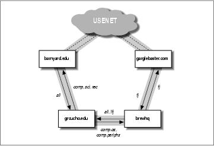
20.2. What Is Usenet, Anyway?
One of the most astounding facts about Usenet is that it isn't part of any organization, nor does it have any
sort of centralized network management authority. In fact, it's part of Usenet lore that except for a technical
description, you cannot define what it is; at the risk of sounding stupid, one might define Usenet as a
collaboration of separate sites that exchange Usenet news. To be a Usenet site, all you have to do is find
another Usenet site and strike an agreement with its owners and maintainers to exchange news with you.
Providing another site with news is called feeding it, whence another common axiom of Usenet philosophy
originates: Get a feed, and you're on it.
The basic unit of Usenet news is the article. This is a message a user writes and posts to the net. In order
to enable news systems to deal with it, it is prepended with administrative information, the so−called article
header. It is very similar to the mail header format laid down in the Internet mail standard RFC−822, in that it
consists of several lines of text, each beginning with a field name terminated by a colon, which is followed by
the field's value.[121]
Articles are submitted to one or more newsgroup. One may consider a newsgroup a forum for articles
relating to a common topic. All newsgroups are organized in a hierarchy, with each group's name indicating
its place in the hierarchy. This often makes it easy to see what a group is all about. For example, anybody can
see from the newsgroup name that comp.os.linux.announce is used for announcements concerning a
computer operating system named Linux.
These articles are then exchanged between all Usenet sites that are willing to carry news from this group.
When two sites agree to exchange news, they are free to exchange whatever newsgroups they like, and may
even add their own local news hierarchies. For example, groucho.edu might have a news link to
barnyard.edu, which is a major news feed, and several links to minor sites which it feeds news. Now
Barnyard College might receive all Usenet groups, while GMU only wants to carry a few major hierarchies
like sci, comp, or rec. Some of the downstream sites, say a UUCP site called brewhq, will want to carry even
fewer groups, because they don't have the network or hardware resources. On the other hand, brewhq might
want to receive newsgroups from the fj hierarchy, which GMU doesn't carry. It therefore maintains another
link with gargleblaster.com, which carries all fj groups and feeds them to brewhq. The news flow is shown in
Figure 20−1.
Figure 20−1. Usenet newsflow through Groucho Marx University
20.2. What Is Usenet, Anyway?
398
Linux Network Administrators Guide
The labels on the arrows originating from brewhq may require some explanation, though. By default, it wants
all locally generated news to be sent to groucho.edu. However, as groucho.edu does not carry the fj groups,
there's no point in sending it any messages from those groups. Therefore, the feed from brewhq to GMU is
labeled all,!fj, meaning that all groups except those below fj are sent to it.
20.2. What Is Usenet, Anyway?
399
20.3. How Does Usenet Handle News?
Today, Usenet has grown to enormous proportions. Sites that carry the whole of Netnews usually transfer
something like a paltry 60 MB a day.[122] Of course, this requires much more than pushing files around. So
let's take a look at the way most Unix systems handle Usenet news.
News begins when users create and post articles. Each user enters a message into a special application called
a newsreader, which formats it appropriately for transmission to the local news server. In Unix environments
the newsreader commonly uses the inews command to transmit articles to the newsserver using the TCP/IP
protocol. But it's also possible to write the article directly into a file in a special directory called the news
spool. Once the posting is delivered to the local news server, it takes responsibility for delivering the article
to other news users.
News is distributed through the net by various transports. The medium used to be UUCP, but today the
main traffic is carried by Internet sites. The routing algorithm used is called flooding. Each site maintains a
number of links (news feeds) to other sites. Any article generated or received by the local news system is
forwarded to them, unless it has already been at that site, in which case it is discarded. A site may find out
about all other sites the article has already traversed by looking at the Path: header field. This header
contains a list of all systems through which the article has been forwarded in bang path notation.
To distinguish articles and recognize duplicates, Usenet articles have to carry a message ID (specified in
the Message−Id: header field), which combines the posting site's name and a serial number into
<serial@site>. For each article processed, the news system logs this ID into a history file, against
which all newly arrived articles are checked.
The flow between any two sites may be limited by two criteria. For one, an article is assigned a distribution
(in the Distribution: header field), which may be used to confine it to a certain group of sites. On the
other hand, the newsgroups exchanged may be limited by both the sending and receiving systems. The set of
newsgroups and distributions allowed to be transmitted to a site are usually kept in the sys file.
The sheer number of articles usually requires that improvements be made to the above scheme. On UUCP
networks, systems collect articles over a period of time and combine them into a single file, which is
compressed and sent to the remote site. This is called batching.
An alternative technique is the ihave/sendme protocol that prevents duplicate articles from being
transferred, thus saving net bandwidth. Instead of putting all articles in batch files and sending them along,
only the message IDs of articles are combined into a giant ihave message and sent to the remote site. The
remote site reads this message, compares it to its history file, and returns the list of articles it wants in a
sendme message. Only the requested articles are sent.
Of course, ihave/sendme makes sense only if it involves two big sites that receive news from several
independent feeds each, and that poll each other often enough for an efficient flow of news.
Sites that are on the Internet generally rely on TCP/IP−based software that uses the Network News Transfer
Protocol (NNTP). NNTP is described in RFC−977; it is responsible for the transfer of news between news
servers and provides Usenet access to single users on remote hosts.
NNTP knows three different ways to transfer news. One is a real−time version of ihave/sendme, also
referred to as pushing news. The second technique is called pulling news, in which the client requests a list of
articles in a given newsgroup or hierarchy that have arrived at the server's site after a specified date, and
20.3. How Does Usenet Handle News?
400
Linux Network Administrators Guide
chooses those it cannot find in its history file. The third technique is for interactive newsreading and allows
you or your newsreader to retrieve articles from specified newgroups, as well as post articles with incomplete
header information.
At each site, news is kept in a directory hierarchy below /var/spool/news, each article in a separate
file, and each newsgroup in a separate directory. The directory name is made up of the newsgroup name, with
the components being the path components. Thus, comp.os.linux.misc articles are kept in
/var/spool/news/comp/os/linux/misc. The articles in a newsgroup are assigned numbers in the
order they arrive. This number serves as the file's name. The range of numbers of articles currently online is
kept in a file called active, which at the same time serves as a list of newsgroups your site knows.
Since disk space is a finite resource, you have to start throwing away articles after some time. [123] This is
called expiring. Usually, articles from certain groups and hierarchies are expired at a fixed number of days
after they arrive. This may be overridden by the poster by specifying a date of expiration in the
Expires: field of the article header.
You now have enough information to choose what to read next. UUCP users should read about C−News in
Chapter 21. If you're using a TCP/IP network, read about NNTP in Chapter 22. If you need to transfer
moderate amounts of news over TCP/IP, the server described in that chapter may be enough for you. To
install a heavy−duty news server that can handle huge volumes of material, go on to read about InterNet
News in Chapter 23.
20.3. How Does Usenet Handle News?
401
Chapter 21. C News
One of the most popular software packages for Netnews is C News. It was designed for sites that carry news
over UUCP links. This chapter will discuss the central concepts of C News, basic installation, and
maintenance tasks.
C News stores its configuration files in /etc/news, and most of its binaries are kept below the
/usr/lib/news/ directory. Articles are kept below /var/spool/news. You should make sure that
virtually all files in these directories are owned by user news or group news. Most problems arise from files
being inaccessible to C News. Use su to become the user news before you touch anything in the directory.
The only exception is the setnewsids command, which is used to set the real user ID of some news programs.
It must be owned by root and have the setuid bit set.
In this chapter, we describe all C News configuration files in detail and show you what you have to do to
keep your site running.
Chapter 21. C News
402
21.1. Delivering News
Articles can be fed to C News in several ways. When a local user posts an article, the newsreader usually
hands it to the inews command, which completes the header information. News from remote sites, be it a
single article or a whole batch, is given to the rnews command, which stores it in the
/var/spool/news/in.coming directory, from where it will be picked up at a later time by newsrun.
With any of these two techniques, however, the article will eventually be handed to the relaynews command.
For each article, the relaynews command first checks if the article has already been seen at the local site by
looking up the message ID in the history file. Duplicate articles are dropped. Then relaynews looks at the
Newsgroups: header line to find out if the local site requests articles from any of these groups. If it does,
and the newsgroup is listed in the active file, relaynews tries to store the article in the corresponding
directory in the news spool area. If this directory does not exist, it is created. The article's message ID is then
logged to the history file. Otherwise, relaynews drops the article.
Sometimes relaynews fails to store an incoming article because a group to which it has been posted is not
listed in your active file. In this case, the article is moved to the junk group.[124] relaynews also checks
for stale or misdated articles and reject them. Incoming batches that fail for any other reason are moved to
/var/spool/news/in.coming/bad, and an error message is logged.
After this, the article is relayed to all other sites that request news from these groups, using the transport
specified for each particular site. To make sure an article isn't sent to a site that has already seen it, each
destination site is checked against the article's Path: header field, which contains the list of sites the article
has traversed so far, written in the UUCP−style bang−path source−routing style described in Chapter 17. If
the destination site's name does not appear in this list, the article is sent to it.
C News is commonly used to relay news between UUCP sites, although it is also possible to use it in an
NNTP environment. To deliver news to a remote UUCP site, either in single articles or whole batches, uux is
used to execute the rnews command on the remote site and feed the article or batch to it on standard input.
Refer to Chapter 16, for more information on UUCP.
Batching is the term used to describe sending large bundles of individual articles all in one transmission.
When batching is enabled for a given site, C News does not send any incoming article immediately; instead,
it appends its path name to a file, usually called out.going/site/togo. Periodically, a program is
executed from a crontab entry by the cron program, which reads this file and bundles all of the listed articles
into one or more file, optionally compressing them and sending them to rnews at the remote site.[125]
Figure 21−1 shows the news flow through relaynews. Articles may be relayed to the local site (denoted by
ME), to a site named ponderosa via email, and a site named moria, for which batching is enabled.
Figure 21−1. News flow through relaynews
21.1. Delivering News
403
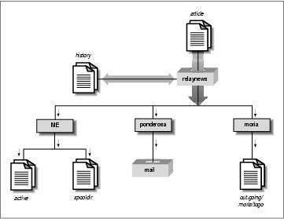
Linux Network Administrators Guide
21.1. Delivering News
404
21.2. Installation
C News should be available in a prepackaged format for any modern Linux distribution, so installation will
be easy. If not, or if you want to install from the original source distribution, then of course you can.[126] No
matter how you install it, you will need to edit the C News configuration files. Their formats are described in
the following list:
sys
The sys file controls which newsgroups your site receives and forwards. We discuss it in detail in
the following section.
active
Not usually edited by the administration; contains directions for handling articles in each newsgroup
the site handles.
organization
This file should contain your organization's name, for example, Virtual Brewery, Inc. On your
home machine, enter private site, or anything else you like. Most people will not consider your
site properly configured if you haven't customized this file.
newsgroups
This file is a list of all newsgroups, with a one−line description of each one's purpose. These
descriptions are frequently used by your newsreader when displaying the list of all groups to which
you are subscribed.
mailname
Your site's mail name, e.g., vbrew.com.
whoami
Your site's name for news purposes. Quite often, the UUCP site name is used, e.g., vbrew.
explist
You should probably edit this file to reflect your preferred expiration times for special newsgroups.
Disk space may play an important role in your choices.
To create an initial hierarchy of newsgroups, obtain active and newsgroups files from the site that
feeds you. Install them in /etc/news, making sure they are owned by news and have a mode of 644, using
the chmod command. Remove all to.* groups from the active file, and add to.my−site, to.feed−site, junk, and
control. The to.* groups are normally used for exchanging ihave/sendme messages, but you should list them
regardless of whether you plan to use ihave/sendme or not. Next, replace all article numbers in the second
and third field of active using the following commands:
# cp active active.old
21.2. Installation
405
Linux Network Administrators Guide
# sed 's/ [0−9]* [0−9]* / 0000000000 00001 /' active.old > active
# rm active.old
The second command invokes the sed stream editor. This invocation replaces two strings of digits with a
string of zeroes and the string 000001, respectively.
Finally, create the news spool directory and the subdirectories used for incoming and outgoing news:
# cd /var/spool
# mkdir news news/in.coming news/out.going news/out.master
# chown −R news.news news
# chmod −R 755 news
If you're using precompiled newsreaders sourced from a different distribution to the C News server you have
running, you may find that some expect the news spool in /usr/spool/news rather than
/var/spool/news. If your newsreader doesn't seem to find any articles, create a symbolic link from
/usr/spool/news to /var/spool/news like this:
# ln −sf /usr/spool/news /var/spool/news
Now you are ready to receive news. Note that you don't have to create the individual newsgroup spool
directories. C News automatically creates spool directories for any newsgroup it receives an article for, if one
doesn't already exist.
In particular, this happens to all groups to which an article has been cross−posted. So, after a while, you will
find your news spool cluttered with directories for newsgroups you have never subscribed to, like
alt.lang.teco. You may prevent this by either removing all unwanted groups from active, or by regularly
running a shell script that removes all empty directories below /var/spool/news (except
out.going and in.coming, of course).
C News needs a user to send error messages and status reports to. By default, this is usenet. If you use the
default, you have to set up an alias for it that forwards all of its mail to one or more responsible person. You
may also override this behavior by setting the environment variable NEWSMASTER to the appropriate
name. You have to do so in news's crontab file, as well as every time you invoke an administrative tool
manually, so installing an alias is probably easier. Mail aliases are described in Chapter 18, and Chapter 19.
While you're hacking /etc/passwd, make sure that every user has her real name in the pw_gecos field
of the password file (this is the fourth field). It is a question of Usenet netiquette that the sender's real name
appears in the From: field of the article. Of course, you will want to do so anyway when you use mail.
21.2. Installation
406
21.3. The sys File
The sys file, located in /etc/news, controls which hierarchies you receive and forward to other sites.
Although there are maintenance tools named addfeed and delfeed, we think it's better to maintain this file by
hand.
The sys file contains entries for each site to which you forward news, as well as a description of the groups
you will accept. The first line is a ME entry that describes your system. It's a safe bet to use the following:
ME:all/all::
You also have to add a line for each site to which you feed news. Each line looks like this:
site[/exclusions]:grouplist[/distlist][:flags[:cmds]]
Entries may be continued across newlines using a backslash (\) at the end of the line to be continued. A hash
sign (#) denotes a comment.
site
This is the name of the site the entry applies to. One usually chooses the site's UUCP name for this.
There has to be an entry for your site in the sys file too, or you will not receive any articles yourself.
The special site name ME denotes your site. The ME entry defines all groups you are willing to
store locally. Articles that aren't matched by the ME line will go to the junk group.
C News rejects any articles that have already passed through this site to prevent loops. C News
does this by ensuring that the local site name does not appear in the Path: of the article. Some sites
may be known by a number of valid names. For example, some sites use their fully qualified domain
name in this field, or an alias like news.site.domain. To ensure the loop prevention mechanism
works, it is important to add all aliases to the exclusion list, separating them by commas.
For the entry applying to site moria, for instance, the site field would contain
moria/moria.orcnet.org. If moria were also by an alias of news.orcnet.org, then our site field would
contain moria/moria.orcnet.org,news.orcnet.org.
grouplist
This is a comma−separated subscription list of groups and hierarchies for this particular site. A
hierarchy may be specified by giving the hierarchy's prefix (such as comp.os for all groups whose
names start with this prefix), optionally followed by the keyword all (e.g., comp.os.all).
You can exclude a hierarchy or group from forwarding by preceding it with an exclamation mark. If
a newsgroup is checked against the list, the longest match applies. For example, if
grouplist contains this list:
!comp,comp.os.linux,comp.folklore.computers
no groups from the comp hierarchy except comp.folklore.computers and all groups below
comp.os.linux will be fed to that site.
21.3. The sys File
407
Linux Network Administrators Guide
If the site requests to be forwarded all news you receive yourself, enter all as grouplist.
distlist
This value is offset from the grouplist by a slash and contains a list of distributions to be
forwarded. Again, you may exclude certain distributions by preceding them with an exclamation
mark. All distributions are denoted by all. Omitting distlist implies a list of all.
For example, you may use a distribution list of all,!local to prevent news meant only for local use
from being sent to remote sites.
There are usually at least two distributions: world, which is often the default distribution used when
none is specified by the user, and local. There may be other distributions that apply to a certain
region, state, country, etc. Finally, there are two distributions used by C News only; these are
sendme and ihave, and are used for the sendme/ihave protocol.
The use of distributions is a subject of debate. The distribution field in a news article can be created
arbitrarily, but for a distribution to be effective, the news servers in the network must know it. Some
misbehaving newsreaders create bogus distributions by simply assuming the top−level newsgroup
hierarchy of the article destination is a reasonable distribution. For example, one might assume
comp to be a reasonable distribution to use when posting to the
comp.os.linux.networking newsgroup. Distributions that apply to regions are often questionable, too,
because news may travel outside of your region when sent across the Internet.[127] Distributions
applying to an organization, however, are very meaningful; e.g., to prevent confidential information
from leaving the company network. This purpose, however, is generally served better by creating a
separate newsgroup or hierarchy.
flags
This option describes certain parameters for the feed. It may be empty or a combination of the
following:
F
This flag enables batching.
f
This is almost identical to the F flag, but allows C News to calculate the size of outgoing batches
more precisely, and should probably be used in preference.
I
This flag makes C News produce an article list suitable for use by ihave/sendme. Additional
modifications to the sys and the batchparms file are required to enable ihave/sendme.
n
This creates batch files for active NNTP transfer clients like nntpxmit (see Chapter 22). The batch
files contain the article's filename along with its message ID.
21.3. The sys File
408
Linux Network Administrators Guide
L
This tells C News to transmit only articles posted at your site. This flag may be followed by a
decimal number n, which makes C News transfer articles posted only within n hops from your site. C
News determines the number of hops from the Path: field.
u
This tells C News to batch only articles from unmoderated groups.
m
This tells C News to batch only articles from moderated groups.
You may use at most one of F, f, I, or n.
cmds
This field contains a command that will be executed for each article, unless you enable batching. The
article will be fed to the command on standard input. This should be used for very small feed only; otherwise,
the load on both systems will be too high.
The default command is:
uux − −r −z remote−system!rnews
This invokes rnews on the remote system, feeding it the article on standard input.
The default search path for commands given in this field is /bin:/usr/bin:/usr/lib/news/batch.
The latter directory contains a number of shell scripts whose names start with via; they are briefly described
later in this chapter.
If batching is enabled using one of the F, f, I, or n flags, C News expects to find a filename in this field
rather than a command. If the filename does not begin with a slash (/), it is assumed to be relative to
/var/spool/news/out.going. If the field is empty, it defaults to remote−system/togo. The file
is expected to be in the same format as the remote−system/togo file and contain a list of articles to
transmit.
When setting up C News, you will most probably have to write your own sys file. Here is a sample file for
vbrew.com, from which you may copy what you need:
# We take whatever they give us.
ME:all/all::
# We send everything we receive to moria, except for local and
# brewery−related articles. We use batching.
moria/moria.orcnet.org:all,!to,to.moria/all,!local,!brewery:f:
# We mail comp.risks to jack@ponderosa.uucp
ponderosa:comp.risks/all::rmail jack@ponderosa.uucp
# swim gets a minor feed
swim/swim.twobirds.com:comp.os.linux,rec.humor.oracle/all,!local:f:
# Log mail map articles for later processing
usenet−maps:comp.mail.maps/all:F:/var/spool/uumaps/work/batch
21.3. The sys File
409
21.4. The active File
The active file is located in /etc/, and lists all groups known at your site and the articles currently
online. You will rarely have to touch it, but we explain it nevertheless for sake of completion. Entries take the
following form:
newsgroup high low perm
newsgroup is the group's name. low and high are the lowest and highest numbers of articles currently
available. If none are available at the moment, low is equal to high+1.
At least that's what the low field is meant to do. However, for efficiency, C News doesn't update this field.
This wouldn't be such a big loss if there weren't newsreaders that depend on it. For instance, trn checks this
field to see if it can purge any articles from its thread database. To update the low field, you therefore have
to run the updatemin command regularly (or, in earlier versions of C News, the upact script).
perm is a parameter detailing the access users are granted to the group. It takes one of the following values:
y
Users are allowed to post to this group.
n
Users are not allowed to post to this group. However, the group may still be read.
x
This group has been disabled locally. This happens sometimes when news administrators (or their
superiors) take offense at articles posted to certain groups.
Articles received for this group are not stored locally, although they are forwarded to the sites that
request them.
m
This denotes a moderated group. When a user tries to post to this group, an intelligent newsreader
notifies her of this and send the article to the moderator instead. The moderator's address is taken
from the moderators file in /var/lib/news.
=real−group
This marks newsgroup as being a local alias for another group, namely real−group. All articles
posted to newsgroup will be redirected to it.
In C News, you will generally not have to access this file directly. Groups can be added or deleted locally
using addgroup and delgroup (see the section Section 21.10 later in this chapter). A newgroup control
message adds a group for the whole of Usenet, while a rmgroup message deletes a group. Never send such a
message yourself! For instructions on how to create a newsgroup, read the monthly postings in
news.announce.newusers.
21.4. The active File
410
Linux Network Administrators Guide
The active.times file is closely related to the active file. Whenever a group is created, C News logs a
message to this file containing the name of the group created, the date of creation, whether it was done by a
newgroup control message or locally, and who did it. This is convenient for newsreaders that may notify the
user of any recently created groups. It is also used by the NEWGROUPS command of NNTP.
21.4. The active File
411
21.5. Article Batching
News batches follow a particular format that is the same for B News, C News, and INN. Each article is
preceded by a line like this:
#! rnews count
count is the number of bytes in the article. When you use batch compression, the resulting file is
compressed as a whole and preceded by another line, indicated by the message to be used for unpacking. The
standard compression tool is compress, which is marked by:
#! cunbatch
Sometimes, when the news server sends batches via mail software that removes the eighth bit from all data, a
compressed batch may be protected using what is called c7−encoding; these batches will be marked by
c7unbatch.
When a batch is fed to rnews on the remote site, it checks for these markers and processes the batch
appropriately. Some sites also use other compression tools, like gzip, and precede their gzipped files with the
word zunbatch instead. C News does not recognize nonstandard headers like these; you have to modify the
source to support them.
In C News, article batching is performed by /usr/lib/news/batch/sendbatches, which takes a
list of articles from the site/togo file and puts them into several newsbatches. It should be executed once
per hour, or even more frequently, depending on the volume of traffic. Its operation is controlled by the
batchparms file in /var/lib/news. This file describes the maximum batch size allowed for each site,
the batching and optional compression program to be used, and the transport for delivering it to the remote
site. You may specify batching parameters on a per−site basis, as well as a set of default parameters for sites
not explicitly mentioned.
When installing C News, you will most likely find a batchparms file in your distribution that contains a
reasonable default entry, so there's a good chance that you won't have to touch the file. Just in case, we
describe its format. Each line consists of six fields, separated by spaces or tabs:
site size max batcher muncher transport
site
site is the name of the site to which the entry applies. The togo file for this site must reside in
out.going/togo below the news spool. A site name of /default/ denotes the default entry and is
to match any site not directly specified with an entry unique to it.
size
size is the maximum size of article batches created (before compression). For single articles larger
than this, C News makes an exception and puts each in a single batch by itself.
max
21.5. Article Batching
412
Linux Network Administrators Guide
max is the maximum number of batches created and scheduled for transfer before batching stalls for
this particular site. This is useful in case the remote site should be down for a long time, because it
prevents C News from cluttering your UUCP spool directories with zillions of newsbatches.
C News determines the number of queued batches using the queuelen script in /usr/lib/news/.
If you've installed C News in a prepackaged format, the script should not need any editing, but if you
choose to use a different flavor of spool directories, for example, Taylor UUCP, you might have to
write your own. If you don't care about the number of spool files (because you're the only person
using your computer and you don't write articles by the megabyte), you may replace the script's
contents by a simple exit 0 statement.
batcher
The batcher field contains the command used for producing a batch from the list of articles in the
togo file. For regular feeds, this is usually batcher. For other purposes, alternative batchers may be
provided. For instance, the ihave/sendme protocol requires the article list to be turned into ihave or
sendme control messages, which are posted to the newsgroup to.site. This is performed by
batchih and batchsm.
muncher
The muncher field specifies the compression command. Usually, this is compcun, a script that
produces a compressed batch.[128] Alternatively, suppose you create a muncher that uses gzip, say
gzipcun (note that you have to write it yourself). You have to make sure that uncompress on the
remote site is patched to recognize files compressed with gzip.
If the remote site does not have an uncompress command, you may specify nocomp, which does not
do any compression.
transport
The last field, transport, describes the transport to be used. A number of standard commands for
different transports are available; their names begin with via. sendbatches passes them the
destination sitename on the command line. If the batchparms entry is not /default/,
sendbatches derives the sitename from the site field by stripping it of anything after and including
the first dot or slash. If the batchparms entry is /default/, the directory names in out.going are
used.
To perform batching for a specific site, use the following command:
# su news −c "/usr/lib/news/batch/sendbatches site"
When invoked without arguments, sendbatches handles all batch queues. The interpretation of all
depends on the presence of a default entry in batchparms. If one is found, all directories in
/var/spool/news/out.going are checked; otherwise, sendbatches cycles through all entries in
batchparms, processing just the sites found there. Note that sendbatches, when scanning the
out.going directory, takes only those directories that contain no dots or at signs (@) as sitenames.
There are two commands that use uux to execute rnews on the remote system: viauux and viauuxz. The
latter sets the −z flag for uux to keep older versions from returning success messages for each article
delivered. Another command, viamail, sends article batches to the user rnews on the remote system via mail.
21.5. Article Batching
413
Linux Network Administrators Guide
Of course, this requires that the remote system somehow feeds all mail for rnews to its local news system. For
a complete list of these transports, refer to the newsbatch manual page.
All commands from the last three fields must be located in either out.going/site or
/usr/lib/news/batch. Most of them are scripts; you can easily tailor new tools for your personal
needs. They are invoked through pipes. The list of articles is fed to the batcher on standard input, which
produces the batch on standard output. This is piped into the muncher, and so on.
Here is a sample file:
# batchparms file for the brewery
# site | size |max |batcher |muncher |transport
#−−−−−−−−−−−−−+−−−−−−−−+−−−−−−−+−−−−−−−−−+−−−−−−−−−−−+−−−−−−−−−−−
/default/ 100000 22 batcher compcun viauux
swim 10000 10 batcher nocomp viauux
21.5. Article Batching
414
21.6. Expiring News
In B News, expiration needs to be performed by a program called expire, which took a list of newsgroups
as arguments, along with a time specification after which articles had to be expired. To have different
hierarchies expire at different times, you had to write a script that invoked expire for each of them separately.
C News offers a more convenient solution. In a file called explist, you may specify newsgroups and
expiration intervals. A command called doexpire is usually run once a day from cron and processes all
groups according to this list.
Occasionally, you may want to retain articles from certain groups even after they have been expired; for
example, you might want to keep programs posted to comp.sources.unix. This is called archiving.
explist permits you to mark groups for archiving.
An entry in explist looks like this:
grouplist perm times archive
grouplist is a comma−separated list of newsgroups to which the entry applies. Hierarchies may be
specified by giving the group name prefix, optionally appended with all. For example, for an entry applying
to all groups below comp.os, enter either comp.os or comp.os.all.
When expiring news from a group, the name is checked against all entries in explist in the order given.
The first matching entry applies. For example, to throw away the majority of comp after four days, except for
comp.os.linux.announce, which you want to keep for a week, you simply have an entry for the latter, which
specifies a seven−day expiration period, followed by an expiration period for comp, which specifies four
days.
The perm field details if the entry applies to moderated, unmoderated, or any groups. It may take the values
m, u, or x, which denote moderated, unmoderated, or any type.
The third field, times, usually contains only a single number. This is the number of days after which articles
expire if they haven't been assigned an artificial expiration date in an Expires: field in the article header.
Note that this is the number of days counting from its arrival at your site, not the date of posting.
The times field may, however, be more complex than that. It may be a combination of up to three numbers
separated from one another by dashes. The first denotes the number of days that have to pass before the
article is considered a candidate for expiration, even if the Expires: field would have it expire already. It is
rarely useful to use a value other than zero. The second field is the previously mentioned default number of
days after which it will be expired. The third is the number of days after which an article will be expired
unconditionally, regardless of whether it has an Expires: field or not. If only the middle number is given,
the other two take default values. These may be specified using the special entry /bounds/, which is described
a little later.
The fourth field, archive, denotes whether the newsgroup is to be archived and where. If no archiving is
intended, a dash should be used. Otherwise, you either use a full pathname (pointing to a directory) or an at
sign (@). The at sign denotes the default archive directory, which must then be given to doexpire by using
the −a flag on the command line. An archive directory should be owned by news. When doexpire archives
an article from say, comp.sources.unix, it stores it in the directory comp/sources/unix below the archive
directory, creating it if necessary. The archive directory itself, however, will not be created.
21.6. Expiring News
415
Linux Network Administrators Guide
There are two special entries in your explist file that doexpire relies on. Instead of a list of newsgroups,
they have the keywords /bounds/ and /expired/. The /bounds/ entry contains the default values for the three
values of the times field described previously.
The /expired/ field determines how long C News will hold onto lines in the history file. C News will not
remove a line from the history file once the corresponding article(s) have been expired, but will hold onto it
in case a duplicate should arrive after this date. If you are fed by only one site, you can keep this value small.
Otherwise, a couple of weeks is advisable on UUCP networks, depending on the delays you experience with
articles from these sites.
Here is a sample explist file with rather tight expiry intervals:
# keep history lines for two weeks. No article gets more than three months
/expired/ x 14 −
/bounds/ x 0−1−90 −
# groups we want to keep longer than the rest
comp.os.linux.announce m 10 −
comp.os.linux x 5 −
alt.folklore.computers u 10 −
rec.humor.oracle m 10 −
soc.feminism m 10 −
# Archive *.sources groups
comp.sources,alt.sources x 5 @
# defaults for tech groups
comp,sci x 7 −
# enough for a long weekend
misc,talk x 4 −
# throw away junk quickly
junk x 1 −
# control messages are of scant interest, too
control x 1 −
# catch−all entry for the rest of it
all x 2 −
Expiring presents several potential problems. One is that your newsreader might rely on the third field of
the active file described earlier, which contains the number of the lowest article online. When expiring
articles, C News does not update this field. If you need (or want) to have this field represent the real situation,
you need to run a program called updatemin after each run of doexpire. (In older versions of C News, a
script called upact did this.)
C News does not expire by scanning the newsgroup's directory, but simply checks the history file if the
article is due for expiration.[129] If your history file somehow gets out of sync, articles may be around on
your disk forever because C News has literally forgotten them.[130] You can repair this by using the
addmissing script in /usr/lib/news/maint, which will add missing articles to the history file or
mkhistory, which rebuilds the entire file from scratch. Don't forget to become user news before invoking it,
or else you will wind up with a history file unreadable by C News.
21.6. Expiring News
416
21.7. Miscellaneous Files
There are a number of files that control the behavior of C News, but are not essential. All of them reside in
/etc/news. We describe them briefly here:
newsgroups
This is a companion file of active that contains a list of each newsgroup name along with a
one−line description of its main topic. This file is automatically updated when C News receives a
checknews control message.
localgroups
If you have a lot of local groups, you can keep C News from complaining about them each time you
receive a checkgroups message by putting their names and descriptions in this file, just as they
would appear in newsgroups.
mailpaths
This file contains the moderator's address for each moderated group. Each line contains the group
name followed by the moderator's email address (offset by a tab).
Two special entries are provided as defaults: backbone and internet. Both provide, in bang−path
notation, the path to the nearest backbone site and the site that understands RFC−822 style addresses
(user@host). The default entries are:
internet backbone
You do not have to change the internet entry if you have exim or sendmail installed; they understand
RFC−822 addressing.
The backbone entry is used whenever a user posts to a moderated group whose moderator is not
listed explicitly. If the newsgroup's name is alt.sewer and the backbone entry contains path!%s, C
News will mail the article to path!alt−sewer, hoping that the backbone machine is able to forward the
article. To find out which path to use, ask the news−admin at the site that feeds you. As a last resort,
you can also use uunet.uu.net!%s.
distributions
This file is not really a C News file, but is used by some newsreaders and nntpd. It contains the list
of distributions recognized by your site and a description of their (intended) effects. For example,
Virtual Brewery has the following file:
world everywhere in the world
local Only local to this site
nl Netherlands only
mugnet MUGNET only
fr France only
de Germany only
brewery Virtual Brewery only
21.7. Miscellaneous Files
417
Linux Network Administrators Guide
log
This file contains a log of all C News activities. It is culled regularly by running newsdaily;
copies of the old log files are kept in log.o, log.oo, etc.
errlog
This is a log of all error messages created by C News. These messages do not include logs of articles
junked due to being sent to an invalid wrong group or other user errors. This file is mailed to the
newsmaster (usenet by default) automatically by newsdaily if it is not found empty.
errlog is cleared by newsdaily. errlog.o keeps old copies and companions.
batchlog
This file logs all runs of sendbatches. It is usually of scant interest. It is also attended by newsdaily.
watchtime
This is an empty file created each time newswatch runs.
21.7. Miscellaneous Files
418
21.8. Control Messages
The Usenet news protocol knows a special category of articles that evoke certain responses or actions by
the news system. These are called control messages. They are recognized by the presence of a
Control: field in the article header, which contains the name of the control operation to be performed.
There are several types of them, all of which are handled by shell scripts located in /usr/lib/news/ctl.
Most of these messages perform their action automatically at the time the article is processed by C News
without notifying the newsmaster. By default, only checkgroups messages will be handed to the newsmaster,
but you may change this by editing the scripts.
21.8.1. The cancel Message
The most widely known message is cancel, with which a user can cancel an article sent earlier. This
effectively removes the article from the spool directories, if it exists. The cancel message is forwarded to all
sites that receive news from the groups affected, regardless of whether the article has been seen already. This
takes into account the possibility that the original article has been delayed over the cancellation message.
Some news systems allow users to cancel other people's messages; this is, of course, a definite no−no.
21.8.2. newgroup and rmgroup
Two messages dealing with creation or removal of newsgroups are the newgroup and rmgroup messages.
Newsgroups below the usual hierarchies may be created only after a discussion and voting has been held
among Usenet readers. The rules applying to the alt hierarchy allow for something close to anarchy. For more
information, see the regular postings in news.announce.newusers and news.announce.newgroups. Never send
a newgroup or rmgroup message yourself unless you definitely know that you are allowed to.
21.8.3. The checkgroups Message
checkgroups messages are sent by news administrators to make all sites within a network synchronize their
active files with the realities of Usenet. For example, commercial Internet Service Providers might send
out such a message to their customers' sites. Once a month, the official checkgroups message for the major
hierarchies is posted to comp.announce.newgroups by its moderator. However, it is posted as an ordinary
article, not as a control message. To perform the checkgroups operation, save this article to a file, say
/tmp/check, remove everything up to the beginning of the control message itself, and feed it to the
checkgroups script using the following command:
# su news −c "/usr/lib/news/ctl/checkgroups" < /tmp/check
This will update your newsgroups file from the new list of groups, adding the groups listed in
localgroups. The old newsgroups file will be moved to newsgroups.bac. Note that posting the
message locally rarely works, because inews, the command that accepts and posts articles from users, refuses
to accept that large an article.
21.8. Control Messages
419
Linux Network Administrators Guide
If C News finds mismatches between the checkgroups list and the active file, it produces a list of
commands that would bring your site up to date and mails it to the news administrator.
The output typically looks like this:
From news Sun Jan 30 16:18:11 1994
Date: Sun, 30 Jan 94 16:18 MET
From: news (News Subsystem)
To: usenet
Subject: Problems with your active file
The following newsgroups are not valid and should be removed.
alt.ascii−art
bionet.molbio.gene−org
comp.windows.x.intrisics
de.answers
You can do this by executing the commands:
/usr/lib/news/maint/delgroup alt.ascii−art
/usr/lib/news/maint/delgroup bionet.molbio.gene−org
/usr/lib/news/maint/delgroup comp.windows.x.intrisics
/usr/lib/news/maint/delgroup de.answers
The following newsgroups were missing.
comp.binaries.cbm
comp.databases.rdb
comp.os.geos
comp.os.qnx
comp.unix.user−friendly
misc.legal.moderated
news.newsites
soc.culture.scientists
talk.politics.crypto
talk.politics.tibet
When you receive a message like this from your news system, don't believe it automatically. Depending on
who sent the checkgroups message, it may lack a few groups or even entire hierarchies; you should be careful
about removing any groups. If you find groups are listed as missing that you want to carry at your site, you
have to add them using the addgroup script. Save the list of missing groups to a file and feed it to the
following little script:
#!/bin/sh
#
WHOIAM=`whoami`
if [ "$WHOIAM" != "news" ]
then
echo "You must run $0 as user 'news'" >&2
exit 1
fi
#
cd /usr/lib/news
while read group; do
if grep −si "^$group[[:space:]].*moderated" newsgroup; then
mod=m
else
mod=y
fi
/usr/lib/news/maint/addgroup $group $mod
done
21.8. Control Messages
420
Linux Network Administrators Guide
21.8.4. sendsys, version, and senduuname
Finally, there are three messages that can be used to find out about the network's topology. These are
sendsys, version, and senduuname. They cause C News to return the sys file to the sender, as well as a
software version string and the output of uuname, respectively. C News is very laconic about
version messages; it returns a simple, unadorned C.
Again, you should never issue such a message unless you have made sure that it cannot leave your (regional)
network. Replies to sendsys messages can quickly bring down a UUCP network.[131]
21.8.4. sendsys, version, and senduuname
421
21.9. C News in an NFS Environment
A simple way to distribute news within a local network is to keep all news on a central host and export the
relevant directories via NFS so that newsreaders may scan the articles directly. The overhead involved in
retrieving and threading articles is significantly lower than NNTP. NNTP, on the other hand, wins in a
heterogeneous network where equipment varies widely among hosts, or where users don't have equivalent
accounts on the server machine.
When you use NFS, articles posted on a local host have to be forwarded to the central machine because
accessing adminstrative files might otherwise expose the system to race conditions that leave the files
inconsistent. Also, you might want to protect your news spool area by exporting it read−only, which also
requires forwarding to the central machine.
C News handles this central machine configuration transparently to the user. When you post an article, your
newsreader usually invokes inews to inject the article into the news system. This command runs a number of
checks on the article, completes the header, and checks the file server in /etc/news. If this file exists
and contains a hostname different from the local host's name, inews is invoked on that server host via rsh.
Since the inews script uses a number of binary commands and support files from C News, you have to either
have C News installed locally or mount the news software from the server.
For the rsh invocation to work properly, each user who posts news must have an equivalent account on the
server system, i.e., one to which she can log in without being asked for a password.
Make sure that the hostname given in server literally matches the output of the hostname command on the
server machine, or else C News will loop forever in an attempt to deliver the article. We discuss NFS is detail
in Chapter 14.
21.9. C News in an NFS Environment
422
21.10. Maintenance Tools and Tasks
Despite the complexity of C News, a news administrator's life can be fairly easy; C News provides you with a
wide variety of maintenance tools. Some of these are intended to be run regularly from cron, like newsdaily.
Using these scripts greatly reduces daily care and feeding requirements of your C News installation.
Unless stated otherwise, these commands are located in /usr/lib/news/maint. (Note that you must
become user news before invoking these commands. Running them as a superuser may render critical
newsfiles inaccessible to C News.):
newsdaily
The name already says it: run this once a day. It is an important script that helps you keep log files
small, retaining copies of each from the last three runs. It also tries to sense anomalies, like stale
batches in the incoming and outgoing directories, postings to unknown or moderated newsgroups,
etc. Resulting error messages are mailed to the newsmaster.
newswatch
This script should be run regularly to look for anomalies in the news system, once an hour or so. It is
intended to detect problems that will have an immediate effect on the operability of your news
system, in which case it mails a trouble report to the newsmaster. Things checked include stale lock
files that don't get removed, unattended input batches, and disk space shortage.
addgroup
This script adds a group to your site locally. The proper invocation is:
addgroup groupname y|n|m|=realgroup
The second argument has the same meaning as the flag in the active file, meaning that anyone
may post to the group (y), that no one may post (n), that it is moderated (m), or that it is an alias for
another group (=realgroup). You might also want to use addgroup when the first articles in a
newly created group arrive earlier than the newgroup control message that is intended to create it.
delgroup
This script allows you to delete a group locally. Invoke it as:
delgroup groupname
You still have to delete the articles that remain in the newsgroup's spool directory. Alternatively, you
might leave it to the natural course of events (i.e., expiration) to make them go away.
addmissing
This script adds missing articles to the history file. Run it when there are articles that seem to
hang around forever.
newsboot
21.10. Maintenance Tools and Tasks
423
Linux Network Administrators Guide
This script should be run at system boot time. It removes any lock files left over when news
processes were killed at shutdown, and closes and executes any batches left over from NNTP
connections that were terminated when shutting down the system.
newsrunning
This script resides in /usr/lib/news/input and may be used to disable unbatching of
incoming news, for instance during work hours. You may turn off unbatching by invoking:
/usr/lib/news/input/newsrunning off
It is turned on by using on instead of off.
21.10. Maintenance Tools and Tasks
424
Chapter 22. NNTP and thenntpd Daemon
Network News Transfer Protocol (NNTP) provides for a vastly different approach to news exchange from C
News and other news servers without native NNTP support. Rather than rely on a batch technology like
UUCP to transfer news articles between machines, it allows articles to be exchanged via an interactive
network connection. NNTP is not a particular software package, but an Internet standard described in
RFC−977. It is based on a stream−oriented connection, usually over TCP, between a client anywhere in the
network and a server on a host that keeps Netnews on disk storage. The stream connection allows the client
and server to interactively negotiate article transfer with nearly no turnaround delay, thus keeping the number
of duplicate articles low. Together with the Internet's high−transfer rates, this adds up to a news transport that
surpasses the original UUCP networks by far. While some years ago it was not uncommon for an article to
take two weeks or more before it arrived in the last corner of Usenet; it is now often less than two days. On
the Internet itself, it is even within the range of minutes.
Various commands allow clients to retrieve, send, and post articles. The difference between sending and
posting is that the latter may involve articles with incomplete header information; it generally means that the
user has just written the article.[132] Article retrieval may be used by news transfer clients as well as
newsreaders. This makes NNTP an excellent tool for providing news access to many clients on a local
network without going through the contortions that are necessary when using NFS.
NNTP also provides for an active and a passive way to transfer news, colloquially called pushing and
pulling. Pushing is basically the same as the ihave/sendme protocol used by C News (described in Chapter
21). The client offers an article to the server through the IHAVE msgid command, and the server returns a
response code that indicates whether it already has the article or if it wants it. If the server wants the article,
the client sends the article, terminated by a single dot on a separate line.
Pushing news has the single disadvantage that it places a heavy load on the server system, since the system
has to search its history database for every single article.
The opposite technique is pulling news, in which the client requests a list of all (available) articles from a
group that have arrived after a specified date. This query is performed by the NEWNEWS command. From
the returned list of message IDs, the client selects those articles it does not yet have, using the
ARTICLE command for each of them in turn.
Pulling news needs tight control by the server over which groups and distributions it allows a client to
request. For example, it has to make sure that no confidential material from newsgroups local to the site is
sent to unauthorized clients.
There are also a number of convenience commands for newsreaders that permit them to retrieve the article
header and body separately, or even single header lines from a range of articles. This lets you keep all news
on a central host, with all users on the (presumably local) network using NNTP−based client programs for
reading and posting. This is an alternative to exporting the news directories via NFS, as described in Chapter
21.
An overall problem of NNTP is that it allows a knowledgeable person to insert articles into the news stream
with false sender specification. This is called news faking or spoofing.[133] An extension to NNTP allows
you to require user authentication for certain commands, providing some measure of protection against
people abusing your news server in this way.
Chapter 22. NNTP and thenntpd Daemon
425
Linux Network Administrators Guide
There are a number of NNTP packages. One of the more widely known is the NNTP daemon, also known
as the reference implementation. Originally, it was written by Stan Barber and Phil Lapsley to illustrate the
details of RFC−977. As with much of the good software available today, you may find it prepackaged for
your Linux distribution, or you can obtain the source and compile it yourself. If you choose to compile it
yourself, you will need to be quite familiar with your distribution to ensure you configure all of the file paths
correctly.
The nntpd package has a server, two clients for pulling and pushing news, and an inews replacement. They
live in a B News environment, but with a little tweaking, they will be happy with C News, too. However, if
you plan to use NNTP for more than offering newsreaders access to your news server, the reference
implementation is not really an option. We will therefore discuss only the NNTP daemon contained in the
nntpd package and leave out the client programs.
If you wish to run a large news site, you should look at the InterNet News package, or INN, that was
written by Rich Salz. It provides both NNTP and UUCP−based news transport. News transport is definitely
better than nntpd. We discuss INN in detail in Chapter 23.
Chapter 22. NNTP and thenntpd Daemon
426
22.1. The NNTP Protocol
We've mentioned two NNTP commands that are key to how news articles are pushed or pulled between
servers. Now we'll look at these in the context of an actual NNTP session to show you how simple the
protocol is. For the purposes of our illustration, we'll use a simple telnet client to connect to an INN−based
news server at the Virtual Brewery called news.vbrew.com. The server is running a minimal configuration to
keep the examples short. We'll look at how to complete the configuration of this server in Chapter 23. In our
testing we'll be very careful to generate articles in the junk newsgroup only, to avoid disturbing anyone else.
22.1.1. Connecting to the News Server
Connecting to the news server is a simple as opening a TCP connection to its NNTP port. When you are
connected, you will be greeted with a welcome banner. One of the first commands you might try is help. The
response you get generally depends upon whether the server believes you are a remote NNTP server or a
newsreader, as there are different command sets required. You can change your operating mode using the
mode command; we'll look at that in a moment:
$ telnet news.vbrew.com nntp
Trying 172.16.1.1...
Connected to localhost.
Escape character is '^]'.
200 news.vbrew.com InterNetNews server INN 1.7.2 08−Dec−1997 ready
help
100 Legal commands
authinfo
help
ihave
check
takethis
list
mode
xmode
quit
head
stat
xbatch
xpath
xreplic
For more information, contact "usenet" at this machine.
.
The responses to NNTP commands always end with a period (.) on a line by itself. The numbers you see in
the output listing are response codes and are used by the server to indicate success or failure of a command.
The response codes are described in RFC−977; we'll talk about the most important ones as we proceed.
22.1.2. Pushing a News Article onto a Server
We mentioned the IHAVE command when we talked about pushing news articles onto a news server. Let's
now have a look at how the IHAVE command actually works:
22.1. The NNTP Protocol
427
Linux Network Administrators Guide
ihave <123456@gw.vk2ktj.ampr.org>
335
From: terry@gw.vk2ktj.ampr.org
Subject: test message sent with ihave
Newsgroups: junk
Distribution: world
Path: gw.vk2ktj.ampr.org
Date: 26 April 1999
Message−ID: <123456@gw.vk2ktj.ampr.org>
Body:
This is a test message sent using the NNTP IHAVE command.
.
235
All NNTP commands are case insensitive, so you may enter them in either upper− or lowercase. The
IHAVE command takes one mandatory argument, it being the Message ID of the article that is being pushed.
Every news article is assigned a unique message ID when it is created. The IHAVE command provides a way
of the NNTP server to say which articles it has when it wants to push articles to another server. The sending
server will issue an IHAVE command for each article it wishes to push. If the command response code
generated by the receiving NNTP server is in the ãxx range, the sending NNTP server will transmit the
complete article, including it's full header, terminating the article with a period on a line by itself. If the
response code was in the äxx range, the receiving server has chosen not to accept this article, possibly
because it already has it, or because of some problem, such as running out of disk space.
When the article has been transmitted, the receiving serve issues another response code indicating whether
the article transmission was successful.
22.1.3. Changing to NNRP Reader Mode
Newsreaders use their own set of commands when talking to a news server. To activate these commands,
the news server has to be operating in reader mode. Most news servers default to reader mode, unless the IP
address of the connecting host is listed as a news−forwarding peer. In any case, NNTP provides a command
to explicitly switch into reader mode:
mode reader
200 news.vbrew.com InterNetNews NNRP server INN 1.7.2 08−Dec−1997 ready/
(posting ok).
help
100 Legal commands
authinfo user Name|pass Password|generic <prog> <args>
article [MessageID|Number]
body [MessageID|Number]
date
group newsgroup
head [MessageID|Number]
help
ihave
last
list [active|active.times|newsgroups|distributions|distrib.pats|/
overview.fmt|subscriptions]
listgroup newsgroup
mode reader
newgroups yymmdd hhmmss ["GMT"] [<distributions>]
22.1.3. Changing to NNRP Reader Mode
428
Linux Network Administrators Guide
newnews newsgroups yymmddhhmmss ["GMT"] [<distributions>]
next
post
slave
stat [MessageID|Number]
xgtitle [group_pattern]
xhdr header [range|MessageID]
xover [range]
xpat header range|MessageID pat [morepat...]
xpath MessageID
Report problems to <usenet@vlager.vbrew.com>
.
NNTP reader mode has a lot of commands. Many of these are designed to make the life of a newsreader
easier. We mentioned earlier that there are commands that instruct the server to send the head and the body of
articles separately. There are also commands that list the available groups and articles, and others that allow
posting, an alternate means of sending news articles to the server.
22.1.4. Listing Available Groups
The list command lists a number of different types of information; notably the groups supported by the
server:
list newsgroups
215 Descriptions in form "group description".
control News server internal group
junk News server internal group
local.general General local stuff
local.test Local test group
.
22.1.5. Listing Active Groups
list active shows each supported group and provides information about them. The two numbers in
each line of the output are the high−water mark and the low−water markthat is, the highest numbered article
and lowest numbered article in each group. The newsreader is able to form an idea of the number of articles
in the group from these. We'll talk a little more about these numbers in a moment. The last field in the output
displays flags that control whether posting is allowed to the group, whether the group is moderated, and
whether articles posted are actually stored or just passed on. These flags are described in detail in Chapter 23.
An example looks like this:
list active
215 Newsgroups in form "group high low flags".
control 0000000000 0000000001 y
junk 0000000003 0000000001 y
alt.test 0000000000 0000000001 y
.
22.1.4. Listing Available Groups
429
Linux Network Administrators Guide
22.1.6. Posting an Article
We mentioned there was a difference between pushing an article and posting an article. When you are
pushing an article, there is an implicit assumption that the article already exists, that it has a message
identifier that has been uniquely assigned to it by the server to which it was originally posted, and that it has a
complete set of headers. When posting an article, you are creating the article for the first time and the only
headers you supply are those that are meaningful to you, such as the Subject and the Newgroups to which you
are posting the article. The news server you post the article on will add all the other headers for you and
create a message ID that it will use when pushing the article onto other servers.
All of this means that posting an article is even easier than pushing one. An example posting looks like this:
post
340 Ok
From: terry@richard.geek.org.au
Subject: test message number 1
Newsgroups: junk
Body:
This is a test message, please feel free to ignore it.
.
240 Article posted
We've generated two more messages like this one to give our following examples some realism.
22.1.7. Listing New Articles
When a newsreader first connects to a new server and the user chooses a newsgroup to browse, the
newsreader will want to retrieve a list of new articles, those posted or received since the last login by the user.
The newnews command is used for this purpose. Three mandatory arguments must be supplied: the name of
the group or groups to query, the start date, and the start time from which to list. The date and time are each
specified as six−digit numbers, with the most significant information first; yymmdd and hhmmss,
respectively:
newnews junk 990101 000000
230 New news follows
<7g2o5r$aa$6@news.vbrew.com>
<7g5bhm$8f$2@news.vbrew.com>
<7g5bk5$8f$3@news.vbrew.com>
.
22.1.8. Selecting a Group on Which to Operate
When the user selects a newsgroup to browse, the newsreader may tell the news server that the group was
selected. This simplifies the interaction between newsreader and news server; it removes the need to
constantly send the name of the newsgroup with each command. The group command simply takes the
name of the selected group as an argument. Many following commands use the group selected as the default,
unless another newsgroup is specified explicitly:
22.1.6. Posting an Article
430
Linux Network Administrators Guide
group junk
211 3 1 3 junk
The group command returns a message indicating the number of active messages, the low−water mark, the
high−water mark, and the name of the group, respectively. Note that while the number of active messages
and the high−water mark are the same in our example, this is not often the case; in an active news server,
some articles may have expired or been deleted, lowering the number of active messages but leaving the
high−water mark untouched.
22.1.9. Listing Articles in a Group
To address newsgroup articles, the newsreader must know which article numbers represent active articles.
The listgroup command offers a list of the active article numbers in the current group, or an explicit
group if the group name is supplied:
listgroup junk
211 Article list follows
1
2
3
.
22.1.10. Retrieving an Article Header Only
The user must have some information about an article before she can know whether she wishes to read it.
We mentioned earlier that some commands allow the article header and body to be transferred separately.
The head command is used to request that the server transmit just the header of the specified article to the
newsreader. If the user doesn't want to read this article, we haven't wasted time and network bandwidth
transferring a potentially large article body unnecessarily.
Articles may be referenced using either their number (from the listgroup command) or their message
identifier:
head 2
221 2 <7g5bhm$8f$2@news.vbrew.com> head
Path: news.vbrew.com!not−for−mail
From: terry@richard.geek.org.au
Newsgroups: junk
Subject: test message number 2
Date: 27 Apr 1999 21:51:50 GMT
Organization: The Virtual brewery
Lines: 2
Message−ID: <7g5bhm$8f$2@news.vbrew.com>
NNTP−Posting−Host: localhost
X−Server−Date: 27 Apr 1999 21:51:50 GMT
Body:
Xref: news.vbrew.com junk:2
.
22.1.9. Listing Articles in a Group
431
Linux Network Administrators Guide
22.1.11. Retrieving an Article Body Only
If, on the other hand, the user decides she does want to read the article, her newsreader needs a way of
requesting that the message body be transmitted. The body command is used for this purpose. It operates in
much the same way as the head command, except that only the message body is returned:
body 2
222 2 <7g5bhm$8f$2@news.vbrew.com> body
This is another test message, please feel free to ignore it too.
.
22.1.12. Reading an Article from a Group
While it is normally most efficient to separately transfer the headers and bodies of selected articles, there
are occasions when we are better off transferring the complete article. A good example of this is in
applications through which we want to transfer all of the artices in a group without any sort of preselection,
such as when we are using an NNTP cache program like leafnode.[134]
Naturally, NNTP provides a means of doing this, and not surprisingly, it operates almost identically to the
head command as well. The article command also accepts an article number or message ID as an
argument, but returns the whole article including its header:
article 1
220 1 <7g2o5r$aa$6@news.vbrew.com> article
Path: news.vbrew.com!not−for−mail
From: terry@richard.geek.org.au
Newsgroups: junk
Subject: test message number 1
Date: 26 Apr 1999 22:08:59 GMT
Organization: The Virtual brewery
Lines: 2
Message−ID: <7g2o5r$aa$6@news.vbrew.com>
NNTP−Posting−Host: localhost
X−Server−Date: 26 Apr 1999 22:08:59 GMT
Body:
Xref: news.vbrew.com junk:1
This is a test message, please feel free to ignore it.
.
If you attempt to retrieve an unknown article, the server will return a message with an appropriately coded
response code and perhaps a readable text message:
article 4
423 Bad article number
We've described how the most important NNTP commands are used in this section. If you're interested in
developing software that implements the NNTP protocol, you should refer to the relevant RFC documents;
they provide a great deal of detail that we couldn't include here.
Let's now look at NNTP in action through the nntpd server.
22.1.11. Retrieving an Article Body Only
432
Linux Network Administrators Guide
22.1.11. Retrieving an Article Body Only
433
22.2. Installing the NNTP Server
The NNTP server (nntpd) may be compiled in two ways, depending on the expected load on the news
system. There are no compiled versions available, because of some site−specific defaults that are hardcoded
into the executable. All configuration is done through macros defined in common/conf.h.
nntpd may be configured as either a standalone server that is started at system boot time from an rc file, or a
daemon managed by inetd. In the latter case, you have to have the following entry in /etc/inetd.conf:
nntp stream tcp nowait news /usr/etc/in.nntpd nntpd
The inetd.conf syntax is described in detail in Chapter 12. If you configure nntpd as standalone, make
sure that any such line in inetd.conf is commented out. In either case, you have to make sure the following
line appears in /etc/services:
nntp 119/tcp readnews untp # Network News Transfer Protocol
To temporarily store any incoming articles, nntpd also needs a .tmp directory in your news spool. You
should create it using the following commands:
# mkdir /var/spool/news/.tmp
# chown news.news /var/spool/news/.tmp
22.2. Installing the NNTP Server
434
22.3. Restricting NNTP Access
Access to NNTP resources is governed by the file nntp_access in /etc/news. Lines in this file
describe the access rights granted to foreign hosts. Each line has the following format:
site read|xfer|both|no post|no [!exceptgroups]
If a client connects to the NNTP port, nntpd attempts to obtain the host's fully qualified domain name from its
IP address using reverse lookup. The client's hostname and IP address are checked against the site field of
each entry in the order in which they appear in the file. Matches may be either partial or exact. If an entry
matches exactly, it applies; if the match is partial, it applies only if there is no other match following it that is
at least as good. site may be specified in one of the following ways:
Hostname
This is a fully qualified domain name of a host. If this matches the client's canonical hostname
literally, the entry applies, and all following entries are ignored.
IP address
This is an IP address in dotted quad notation. If the client's IP address matches this, the entry applies,
and all following entries are ignored.
Domain name
This is a domain name, specified as *.domain. If the client's hostname matches the domain name,
the entry matches.
Network name
This is the name of a network as specified in /etc/networks. If the network number of the
client's IP address matches the network number associated with the network name, the entry matches.
Default
The string default matches any client.
Entries with a more general site specification should be specified earlier, because any matches will be
overridden by later, more exact matches.
The second and third fields describe the access rights granted to the client. The second field details the
permissions to retrieve news by pulling (read), and transmit news by pushing (xfer). A value of both enables
both; no denies access altogether. The third field grants the client the right to post articles, i.e., deliver articles
with incomplete header information, which is completed by the news software. If the second field contains
no, the third field is ignored.
The fourth field is optional and contains a comma−separated list of groups to which the client is denied
access.
This is a sample nntp_access file:
22.3. Restricting NNTP Access
435
Linux Network Administrators Guide
#
# by default, anyone may transfer news, but not read or post
default xfer no
#
# public.vbrew.com offers public access via modem. We allow
# them to read and post to any but the local.* groups
public.vbrew.com read post !local
#
# all other hosts at the brewery may read and post
*.vbrew.com read post
22.3. Restricting NNTP Access
436
22.4. NNTP Authorization
The nntpd daemon provides a simple authorization scheme. If you capitalize any of the access tokens in
the nntp_access file, nntpd requires authorization from the client for the respective operation. For
instance, when specifying a permission of Xfer or XFER, (as opposed to xfer), nntpd will not let the client
transfer articles to your site unless it passes authorization.
The authorization procedure is implemented by means of a new NNTP command named AUTHINFO. Using
this command, the client transmits a username and a password to the NNTP server. nntpd validates them by
checking them against the /etc/passwd database and verifies that the user belongs to the nntp group.
The current implementation of NNTP authorization is only experimental and has therefore not been
implemented very portably. The result of this is that it works only with plain−style password databases;
shadow passwords are not recognized. If you are compiling from source and have the PAM package installed,
the password check is fairly simple to change.
22.4. NNTP Authorization
437
22.5. nntpd Interaction with C News
When nntpd receives an article, it has to deliver it to the news subsystem. Depending on whether it was
received as a result of an IHAVE or POST command, the article is handed to rnews or inews, respectively.
Instead of invoking rnews, you may also configure it (at compile time), to batch the incoming articles and
move the resulting batches to /var/spool/news/in.coming, where they are left for relaynews to pick
them up at the next queue run.
nntpd has to have access to the history file to be able to properly perform the ihave/sendme protocol.
At compile time, you have to make sure the path to that file is set correctly. If you use C News, make sure
that C News and nntpd agree on the format of your history file. C News uses dbm hashing functions to
access it; however, there are quite a number of different and slightly incompatible implementations of the
dbm library. If C News has been linked with a different dbm library than you have in your standard libc,
you have to link nntpd with this library, too.
nntpd and C news disagreement sometimes produces error messages in the system log that nntpd can not
open it properly, or you might see duplicate articles being received via NNTP. A good test of a
malfunctioning news transfer is to pick an article from your spool area, telnet to the nntp port, and offer it to
nntpd as shown in the next example. Of course, you have to replace msg@id with the message ID of the
article you want to feed to nntpd:
$ telnet localhost nntp
Trying 127.0.0.1...
Connected to localhost
Escape characters is '^ ]'.
201 vstout NNTP[auth] server version 1.5.11t (16 November 1991) ready at
Sun Feb 6 16:02:32 1194 (no posting)
IHAVE msg@id
435 Got it.
QUIT
This conversation shows nntpd's proper reaction; the message Got it tells you that it already has this
article. If you get a message of 335 Ok instead, the lookup in the history file failed for some reason.
Terminate the conversation by typing Ctrl−D. You can check what has gone wrong by checking the system
log; nntpd logs all kinds of messages to the daemon facility of syslog. An incompatible dbm library usually
manifests itself in a message complaining that dbminit failed.
22.5. nntpd Interaction with C News
438
Chapter 23. Internet News
The Internet News daemon (INN) is arguably the most popular Netnews server in use today. INN is
extremely flexible and is suitable for all but the smallest news sites.[135] INN scales well and is suited to
large news server configurations.
The INN server comprises a number of components, each with their own configuration files that we will
discuss in turn. Configuration of INN can be a little involved, but we'll describe each of the stages in this
chapter and arm you with enough information to make sense of the INN manual pages and documentation
and build configurations for just about any application.
Chapter 23. Internet News
439
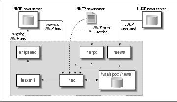
23.1. Some INN Internals
INN's core program is the innd daemon. innd's task is to handle all incoming articles, storing them
locally, and to pass them on to any outgoing newsfeeds if required. It is started at boot time and runs
continually as a background process. Running as a daemon improves performance because it has to read its
status files only once when starting. Depending on the volume of your news feed, certain files such as
history (which contain a list of all recently processed articles) may range from a few megabytes to tens of
megabytes.
Another important feature of INN is that there is always only one instance of innd running at any time. This
is also very beneficial to performance, because the daemon can process all articles without having to worry
about synchronizing its internal states with other copies of innd rummaging around the news spool at the
same time. However, this choice affects the overall design of the news system. Because it is so important that
incoming news is processed as quickly as possible, it is unacceptable that the server be tied up with such
mundane tasks as serving newsreaders accessing the news spool via NNTP, or decompressing newsbatches
arriving via UUCP. Therefore, these tasks have been broken out of the main server and implemented in
separate support programs. Figure 23−1 attempts to illustrate the relationships between innd, the other local
tasks, and remote news servers and newsreaders.
Today, NNTP is the most common means of transporting news articles around, and innd doesn't directly
support anything else. This means that innd listens on a TCP socket (port 119) for connections and accepts
news articles using the ihave protocol.
Articles arriving by transports other than NNTP are supported indirectly by having another process accept the
articles and forward them to innd via NNTP. Newsbatches coming in over a UUCP link, for instance, are
traditionally handled by the rnews program. INN's rnews decompresses the batch if necessary, and breaks it
up into individual articles; it then offers them to innd one by one.
Newsreaders can deliver news when a user posts an article. Since the handling of newsreaders deserves
special attention, we will come back to this a little later.
Figure 23−1. INN architecture (simplified for clarity)
When receiving an article, innd first looks up its message ID in the history file. Duplicate articles are
dropped and the occurrences are optionally logged. The same goes for articles that are too old or lack some
required header field, such as Subject:.[136] If innd finds that the article is acceptable, it looks at the
Newsgroups: header line to find out what groups it has been posted to. If one or more of these groups are
23.1. Some INN Internals
440
Linux Network Administrators Guide
found in the active file, the article is filed to disk. Otherwise, it is filed to the special group junk.
Individual articles are kept below /var/spool/news, also called the news spool. Each newsgroup has a
separate directory, in which each article is stored in a separate file. The file names are consecutive numbers,
so that an article in comp.risks may be filed as comp/risks/217, for instance. When innd finds that the
directory it wants to store the article in does not exist, it creates it automatically.
Apart from storing articles locally, you may also want to pass them on to outgoing feeds. This is governed
by the newsfeeds file that lists all downstream sites along with the newsgroups that should be fed to them.
Just like innd's receiving end, the processing of outgoing news is handled by a single interface, too. Instead
of doing all the transport−specific handling itself, innd relies on various backends to manage the transmission
of articles to other news servers. Outgoing facilities are collectively dubbed channels. Depending on its
purpose, a channel can have different attributes that determine exactly what information innd passes on to it.
For an outgoing NNTP feed, for instance, innd might fork the innxmit program at startup, and, for each
article that should be sent across that feed, pass its message ID, size, and filename to innxmit's standard
input. For an outgoing UUCP feed, on the other hand, it might write the article's size and file name to a
special logfile, which is head by a different process at regular intervals in order to create batches and queue
them to the UUCP subsystem.
Besides these two examples, there are other types of channels that are not strictly outgoing feeds. These are
used, for instance, when archiving certain newsgroups, or when generating overview information. Overview
information is intended to help newsreaders thread articles more efficiently. Old−style newsreaders had to
scan all articles separately in order to obtain the header information required for threading. This would put an
immense strain on the server machine, especially when using NNTP; furthermore, it was very slow.[137] The
overview mechanism alleviates this problem by prerecording all relevant headers in a separate file (called
.overview) for each newsgroup. This information can then be picked up by newsreaders either by reading
it directly from the spool directory, or by using the XOVER command when connected via NNTP. INN has
the innd daemon feed all articles to the overchan command, which is attached to the daemon through a
channel. We'll see how this is done when we discuss configuring news feeds later.
23.1. Some INN Internals
441
23.2. Newsreaders and INN
Newsreaders running on the same machine as the server (or having mounted the server's news spool via
NFS) can read articles from the spool directly. To post an article composed by the user, they invoke the
inews program, which adds any header fields that are missing and forwards them to the daemon via NNTP.
Alternatively, newsreaders can access the server remotely via NNTP. This type of connection is handled
differently from NNTP−based news feeds, to avoid tying up the daemon. Whenever a newsreader connects to
the NNTP server, innd forks a separate program called nnrpd, which handles the session while innd returns
to the more important things (receiving incoming news, for example).[138] You may be wondering how the
innd process can distinguish between an incoming news feed and a connecting newsreader. The answer is
quite simple: the NNTP protocol requires that an NNTP−based newsreader issue a mode reader command
after connecting to the server; when this command is received, the server starts the nnrpd process, hands the
connection to it, and returns to listening for connections from another news server. There used to be at least
one DOS−based newsreader which was not configured to do this, and hence failed miserably when talking to
INN, because innd itself does not recognize any of the commands used to read news if it doesn't know the
connection is from a news reader.
We'll talk a little more about newsreader access to INN under "Controlling Newsreader Access," later in the
chapter.
23.2. Newsreaders and INN
442
23.3. Installing INN
Before diving into INN's configuration, let's talk about its installation. Read this section, even if you've
installed INN from one of the various Linux distributions; it contains some hints about security and
compatibility.
Linux distributions included Verson INN−1.4sec for quite some time. Unfortunately, this version had two
subtle security problems. Modern versions don't have these problems and most distributions include a
precompiled Linux binary of INN Version 2 or later.
If you choose, you can build INN yourself. You can obtain the source from ftp.isc.org in the
/isc/inn/ directory. Building INN requires that you edit a configuration file that tells INN some detail
about your operating system, and some features may require minor modifications to the source itself.
Compiling the package itself is pretty simple; there's a script called BUILD that will guide you through the
process. The source also contains extensive documentation on how to install and configure INN.
After installing all binaries, some manual fixups may be required to reconcile INN with any other
applications that may want to access its rnews or inews programs. UUCP, for instance, expects to find the
rnews program in /usr/bin or /bin, while INN installs it in /usr/lib/bin by default. Make sure
/usr/lib/bin/ is in the default search path, or that there are symbolic links pointing to the actual
location of the rnews and inews commands.
23.3. Installing INN
443
23.4. Configuring INN: the Basic Setup
One of the greatest obstacles beginners may face is that INN requires a working network setup to function
properly, even when running on a standalone host. Therefore, it is essential that your kernel supports TCP/IP
networking when running INN, and that you have set up the loopback interface as explained in Chapter 5.
Next, you have to make sure that innd is started at boot time. The default INN installation provides a script
file called boot in the /etc/news/ directory. If your distribution uses the SystemV−style init package, all
you have to do is create a symbolic link from your /etc/init.d/inn file pointing to
/etc/news/boot. For other flavors of init, you have to make sure /etc/news/boot is executed from
one of your rc scripts. Since INN requires networking support, the startup script should be run after the
network interfaces are configured.
23.4. Configuring INN: the Basic Setup
444
23.5. INN Configuration Files
Having completed these general tasks, you can now turn to the really interesting part of INN: its
configuration files. All these files reside in /etc/news. Some changes to configurations files were
introduced in Version 2, and it is Version 2 that we describe here. If you're running an older version, you
should find this chapter useful to guide you in upgrading your configuration. During the next few sections,
we will discuss them one by one, building the Virtual Brewery's configuration as an example.
If you want to find out more about the features of individual configuration files, you can also consult the
manual pages; the INN distribution contains individual manual pages for each of them.
23.5.1. Global Parameters
There are a number of INN parameters that are global in nature; they are relevant to all newsgroups carried.
23.5.1.1. The inn.conf file
INN's main configuration file is inn.conf. Among other things, it determines the name by which your
machine is known on Usenet. Version 2 of INN allows a baffling number of parameters to be configured in
this file. Fortunately, most parameters have default values that are reasonable for most sites. The
inn.conf(5) file details all of the parameters, and you should read it carefully if you experience any
problems.
A simple example inn.conf might look like:
# Sample inn.conf for the Virtual Brewery
server: vlager.vbrew.com
domain: vbrew.com
fromhost: vbrew.com
pathhost: news.vbrew.com
organization: The Virtual Brewery
mta: /usr/sbin/sendmail −oi %s
moderatormailer: %s@uunet.uu.net
#
# Paths to INN components and files.
#
pathnews: /usr/lib/news
pathbin: /usr/lib/news/bin
pathfilter: /usr/lib/news/bin/filter
pathcontrol: /usr/lib/news/bin/control
pathdb: /var/lib/news
pathetc: /etc/news
pathrun: /var/run/news
pathlog: /var/log/news
pathhttp: /var/log/news
pathtmp: /var/tmp
pathspool: /var/spool/news
patharticles: /var/spool/news/articles
pathoverview: /var/spool/news/overview
pathoutgoing: /var/spool/news/outgoing
pathincoming: /var/spool/news/incoming
patharchive: /var/spool/news/archive
23.5. INN Configuration Files
445
Linux Network Administrators Guide
pathuniover: /var/spool/news/uniover
overviewname: .overview
The first line tells the programs rnews and inews which host to contact when delivering articles. This entry is
absolutely crucial; to pass articles to innd, they have to establish an NNTP connection with the server.
The domain keyword should specify the domain portion of the host's fully qualified domain name. A couple
of programs must look up your host's fully qualified domain name; if your resolver library returns the
unqualified hostname only, the name given in the domain attribute is tacked onto it. It's not a problem to
configure it either way, so it's best to define domain.
The next line defines what hostname inews is going to use when adding a From: line to articles posted by
local users. Most newsreaders use the From: field when composing a reply mail message to the author of an
article. If you omit this field, it will default to your news host's fully qualifed domain name. This is ot always
the best choice. You might, for example, have news and mail handled by two different hosts. In this case, you
would supply the fully qualified domain name of your mail host after the fromhost statement.
The pathhost line defines the hostname INN is to add to the Path: header field whenever it receives an
article. In most cases, you will want to use the fully qualified domain name of your news server; you can then
omit this field since that is the default. Occasionally you may want to use a generic name, such as
news.vbrew.com, when serving a large domain. Doing this allows you to move the news system easily to a
different host, should you choose to at some time.
The next line contains the organization keyword. This statement allows you to configure what text inews will
put into the Organization: line of articles posted by your local users. Formally, you would place a
description of your organization or your organization's name in full here. Should you not wish to be so
formal, it is fashionable for organizations with a sense of humor to exhibit it here.
The organization keyword is mandatory and specifies the pathname of the mail transport agent that will be
used for posting moderator messages. %s is replaced by the moderator email address.
The moderatormailer entry defines a default address used when a user tries to post to a moderated newsgroup.
The list of moderator addresses for each newsgroup is usually kept in a separate file, but you will have a hard
time keeping track of all of them. The moderatormailer entry is therefore consulted as a last resort; if it is
defined, inews will replace the %s string with the (slightly transformed) newsgroup name and send the entire
article to this address. For instance, when posting to soc.feminism, the article is mailed to
soc−feminism@uunet.uu.net, given the above configuration. At UUNET, there should be a mail alias
installed for each of these submissions addresses that automatically forwards all messages to the appropriate
moderator.
Finally, each of the remaining entries specifies the location of some component file or executable belonging
to INN. If you've installed INN from a package, these paths should have been configured for you. If you're
installing from source, you'll need to ensure that they reflect where you've installed INN.
23.5.2. Configuring Newsgroups
The news administrator on a system is able to control which newsgroups users have access to. INN
provides two configuration files that allow the administrator to decide which newsgroups to support and
provide descriptions for them.
23.5.2. Configuring Newsgroups
446
Linux Network Administrators Guide
23.5.2.1. The active and newsgroups files
The active and newsgroups files are used to store and describe the newsgroups hosted by this news
server. They list which newsgroups we are interested in receiving and serving articles for, and administrative
information about them. These files are found in the /var/lib/news/ directory.
The active file determines which newsgroups this server supports. Its syntax is straightforward. Each line
in the active file has four fields delimited by whitespace:
name himark lomark flags
The name field is the name of the newsgroup. The himark field is the highest number that has been used
for an article in that newsgroup. The lomark field is the lowest active number in use in the newsgroup. To
illustrate how this works, consider the follow scenario. Imagine that we have a newly created newsgroup:
himark and lowmark are both 0 because there are no articles. If we post 5 articles, they will be numbered
1 through 5. himark will now equal 5, the highest numbered article, and lowmark will equal 1, the lowest
active article. If article 5 is cancelled there will be no change; himark will remain at 5 to ensure that that
article number is not reallocated and lowmark will remain at 1, the lowest active article. If we now cancel
article 1, himark will remain unchanged, but lowmark will now equal 2, because 1 is no longer active. If
we now post a new article, it will be assigned article number 6, so himark will now equal 6. Article 5 has
been in use, so we won't reassign it. lowmark remains at 2. This mechanism allows us to easily allocate
unique article numbers for new articles and to calculate approximately how many active articles there are in
the group: himark−lowmark.
The field may contain one of the following:
y
Posting directly to this news server is allowed.
n
Posting directly to this news server is not allowed. This prevents newsreaders from posting directly to
this news server. New articles may only be received from other news servers.
m
The group is moderated. Any articles posted to this newsgroup are forwarded to the newsgroup
moderator for approval before they enter the newsgroup. Most newsgroups are unmoderated.
j
Articles in this group are not kept, but only passed on. This causes the news server to accept the
article, but all it will do with it is pass it to the up−stream news servers. It will not make the
articles available to newsreaders reading from this server.
x
23.5.2.1. The active and newsgroups files
447
Linux Network Administrators Guide
Articles cannot be posted to this newsgroup. The only way that news articles are delivered to this
server is by feeding them from another news server. Newsreaders may not directly write articles to
this server.
=foo.bar
Articles are locally filed into the ``foo.bar'' group.
In our simple server configuration we'll carry a small number of newsgroups, so our
/var/lib/news/active file will look like:
control 0000000000 0000000001 y
junk 0000000000 0000000001 y
rec.crafts.brewing 0000000000 0000000001 y
rec.crafts.brewing.ales 0000000000 0000000001 y
rec.crafts.brewing.badtaste 0000000000 0000000001 y
rec.crafts.brewing.brandy 0000000000 0000000001 y
rec.crafts.brewing.champagne 0000000000 0000000001 y
rec.crafts.brewing.private 0000000000 0000000001 y
The himark and lomark numbers in this example are those you would use when creating new newsgroups.
The himark and lomark numbers will look quite different for a newsgroup that has been active for some
time.
The newsgroups file is even simpler. It provides one−line descriptions of newsgroups. Some newsreaders
are able to read and present this information to a user to help them decide whether they want to subscribe.
The format of the newsgroups file is simply:
name description
The name field is the name of a newsgroup, and the <description is a single line description of that
newsgroup.
We want to describe the newsgroups that our server supports, so we'll build our newsgroups file as
follows:
rec.crafts.brewing.ales Home brewing Ales and Lagers
rec.crafts.brewing.badtaste Home brewing foul tasting brews
rec.crafts.brewing.brandy Home brewing your own Brandy
rec.crafts.brewing.champagne Home brew your own Champagne
rec.crafts.brewing.private The Virtual Brewery home brewers group
23.5.3. Configuring Newsfeeds
INN provides the news administrator the ability to control which newsgroups are forwarded on to other
news servers and how they will be forwarded. The most common method uses the NNTP protocol described
earlier, but INN also allows newsfeeds via other protocols, such as UUCP.
23.5.3. Configuring Newsfeeds
448
Linux Network Administrators Guide
23.5.3.1. The newsfeeds file
The newsfeeds file determines where news articles will be sent. It normally resides in the
/etc/news/ directory.
The format of the newsfeeds is a little complicated at first. We'll describe the general layout here, and the
newsfeeds(5) manual page describes what we leave out. The format is as follows:
# newsfeeds file format
site:pattern:flags:param
site2:pattern2\
:flags2:param2
Each news feed to a site is described by a single line, or may be spread across multiple lines using the \
continuation character. The : characters delimit the fields in each line. The # character at the start of a line
marks that line as a comment.
The site field names the site to which this feed description relates. The sitename can be coded any way you
like and doesn't have to be the domain name of the site. The site name will be used later and will refer to an
entry in a table that supplies the hostname to the innxmit program that transmits the news articles by NNTP
to the remote server. You may have multiple entries for each site; each entry will be treated individually.
The pattern field specifies which news groups are to be sent to this site. The default is to send all groups,
so if that is what you want, just make this field empty. This field is usually a comma−delimited list of
pattern−matching expressions. The * character matches zero or more of any character, the . character has no
special significance, the ! character (if used at the start of an expression) performs a logical NOT, and the @
character at the start of a newsgroup name means Do not forward any articles that are posted or crossposted
to this group. The list is read and parsed from left to right, so you should ensure that you place the more
specific rules first. The pattern:
rec.crafts.brewing*,!rec.crafts.brewing.poison,@rec.crafts.brewing.private
would send all of the rec.crafts.brewing news heirarchy except the rec.crafts.brewing.poison. It would not
feed any articles that were either posted or crossposted to the rec.crafts.brewing.private newsgroup; these
articles will be trapped and available only to those people who use this server. If you reversed the first two
patterns, the first pattern would be overridden by the second and you would end up feeding articles for the
rec.crafts.brewing.poison newsgroup. The same is true of the first and last patterns; you must always place
the more specific patterns before any less specific patterns for them to take effect.
flags controls and places constraints on the feed of news articles to this site. The flags field is a comma
delimited list can contain any of the items from the following list, delimited by commands:
<size
Article must be less then size bytes.
Aitems
Article checks. items can be one or more of d (must have Distribution header) or p (don't check for
site in Path header).
23.5.3.1. The newsfeeds file
449
Linux Network Administrators Guide
Bhigh/low
Internal buffer size before writing to output.
H[count]
Article must have less then count hops; the default is 1.
Isize
Internal buffer size (for a file feed).
Mpattern
Only moderated groups that match the pattern.
Npattern
Only unmoderated groups that match the pattern.
Ssize
Start spooling if more than size bytes get queued.
Ttype
Feed types: f (file), m (funnel; the param field names the entry that articles will be funneled to),
p (pipe to program), c (send to stdin channel of the param field's subprocess), and x (like c, but
handles commands on stdin).
Witems
What to write: b (article bytesize), f (full path), g (first newsgroup), m (Message ID), n (relative
path), s (site that fed article), t (time received), * (names of funnel feed−ins or all sites that get the
article), N (newsgroups header), D (distribution header), H (all headers), O (overview data), and
R (replication data).
The param field has special coding that is dependent on the type of feed. In the most common configuration
it is where you specify the name of the output file to which you will write the outgoing feed. In other
configurations you can leave it out. In yet other configurations it takes on different meanings. If you want to
do something unusual, the newsfeeds(5) manual page will explain the use of the param field in some
detail.
There is a special site name that should be coded as ME and should be the first entry in the file. This entry is
used to control the default settings for your news feeds. If the ME entry has a distribution list associated with
it, this list will be prepended to each of the other site entries before they are sent. This allows you to, for
example, declare some newsgroups to be automatically fed, or automatically blocked from feeding, without
having to repeat the pattern in each site entry.
We mentioned earlier that it was possible to use some special feeds to generate thread data that makes the
newsreader's job easier. We'll do this by exploiting the overchan command that is part of the INN
23.5.3.1. The newsfeeds file
450
Linux Network Administrators Guide
distribution. To do this, we've created a special local feed called overview that will pass the news articles
to the overchan command for processing into overview data.
Our news server will provide only one external news feed, which goes to the Groucho Marx University, and
they receive articles for all newsgroups except the control and junk newsgroups, the
rec.crafts.brewing.private newsgroup, which will be kept locally, and the
rec.crafts.brewing.poison newsgroup, which we don't want people from our brewery seen posting to.
We'll use the nntpsend command to transport the news via NNTP to the news.groucho.edu server.
nntpsend requires us to use the file delivery method and to write the article's pathname and article ID.
Note that we've set the param field to the name of the output file. We'll talk a little more about the
nntpsend command in a moment. Our resulting newsfeed's configuration is:
# /etc/news/newsfeeds file for the Virtual Brewery
#
# Send all newsgroups except the control and junk ones by default
ME:!control,!junk::
#
# Generate overview data for any newsreaders to use.
overview::Tc,WO:/usr/lib/news/bin/overchan
#
# Feed the Groucho Marx University everything except our private newsgroup
# and any articles posted to the rec.crafts.brewing.poison newsgroup.
gmarxu:!rec.crafts.brewing.poison,@rec.crafts.brewing.private:\
Tf,Wnm:news.groucho.edu
#
23.5.3.2. The nntpsend.ctl file
The nntpsend program manages the transmission of news articles using the NNTP protocol by calling the
innxmit command. We saw a simple use of the nntpsend command earlier, but it too has a configuration file
that provides us with some flexibility in how we configure our news feeds.
The nntpsend command expects to find batch files for the sites it will feed. It expects those batch files to be
named /var/spool/news/out.going/sitename. innd creates these batch files when acting on an
entry in the newsfeeds, which we saw in the previous sections. We specified the sitename as the filename
in the param field, and that satisfies the nntpsend command's input requirements.
The nntpsend command has a configuration file called nntpsend.ctl that is usually stored in the
/etc/news/ directory.
The nntpsend.ctl file allows us to associate a fully qualified domain name, some news feed size
constraints, and a number of transmission parameters with a news feed site name. The sitename is a means of
uniquely identifying a logical feed of articles. The general format of the file is:
sitename:fqdn:max_size:[args]
The following list describes the elements of this format:
sitename
23.5.3.2. The nntpsend.ctl file
451
Linux Network Administrators Guide
The sitename as supplied in the newsfeeds file
fqdn
The fully qualified domain name of the news server to which we will be feeding the news articles
max_size
The maximum volume of news to feed in any single transfer
args
Additional arguments to pass to the innxmit command
Our sample configuration requires a very simple nntpsend.ctl file. We have only one news feed. We'll
restrict the feed to a maximum of 2 MB of traffic and we'll pass an argument to the innxmit that sets a
3−minute (180 second) timeout. If we were a larger site and had many news feeds, we'd simply create new
entries for each new feed site that looked much the same as this one:
# /etc/news/nntpsend.ctl
#
gmarxu:news.groucho.edu:2m:−t 180
#
23.5.4. Controlling Newsreader Access
Not so many years ago, it was common for organizations to provide public access to their news servers.
Today it is difficult to locate public news servers; most organizations carefully control who has access to their
servers, typically restricting access to users supported on their network. INN provides configuration files to
control this access.
23.5.4.1. The incoming.conf file
We mentioned in our introduction to INN that it achieves some of its efficiency and size by separating the
news feed mechanism from the newsreading mechanism. The /etc/news/incoming.conf file is where
you specify which hosts will be feeding you news using the NNTP protocol, as well as where you define
some parameters that control the way articles are fed to you from these hosts. Any host not listed in this file
that connects to the news socket will not be handled by the innd daemon; instead, it will be handled by the
nnrpd daemon.
The /etc/news/incoming.conf file syntax is very simple, but it takes a moment to come to terms
with. Three types of valid entries are allowed: key/value pairs, which are how you specify attributes and their
values; peers, which is how you specify the name of a host allowed to send articles to us using NNTP; and
groups, a means of applying key/value pairs to groups of peers. Key/value pairs can have three different types
of scope. Global pairs apply to every peer defined in the file. Group pairs apply to all peers defined within
that group. Peer pairs apply only to that one peer. Specific definitions override less specific ones: therefore,
23.5.4. Controlling Newsreader Access
452
Linux Network Administrators Guide
peer definitions override group definitions, which in turn override global pairs.
Curly brace characters ({}) are used to delimit the start and end of the group and peer specifications. The
# character marks the rest of the line it appears on as a comment. Key/value pairs are separated by the colon
character and appear one to a line.
A number of different keys may be specified. The more common and useful are:
hostname
This key specifies a comma−separated list of fully qualifed names or IP addresses of the peers that
we'll allow to send us articles. If this key is not supplied, the hostname defaults to the label of the
peer.
streaming
This key determines whether streaming commands are allowed from this host. It is a Boolean value
that defaults to true.
max−connections
This key specifies the maximum number of connections allowed from this group or peer. A value of
zero means unlimited (which can also be specified using none).
password
This key allows you to specify the password that must be used by a peer if it is to be allowed to
transfer news. The default is to not require a password.
patterns
This key specifies the newsgroups that we accept from the associated peer. This field is coded
according to precisely the same rules as we used in our newsfeeds file.
In our example we have only one host that we are expecting to feed us news: our upstream news provider at
Groucho Marx University. We'll have no password, but we will ensure that we don't accept any articles for
our private newsgroup from outside. Our hosts.nntp looks like:
# Virtual Brewery incoming.conf file.
# Global settings
streaming: true
max−connections: 5
# Allow NNTP posting from our local host.
peer ME {
hostname: "localhost, 127.0.0.1"
}
# Allow groucho to send us all newsgroup except our local ones.
peer groucho {
23.5.4. Controlling Newsreader Access
453
Linux Network Administrators Guide
hostname: news.groucho.edu
patterns: !rec.crafts.brewing.private
}
23.5.4.2. The nnrp.access file
We mentioned earlier that newsreaders, and in fact any host not listed in the hosts.nntp, that connect to
the INN news server are handled by the nnrpd program. nnrpd uses the /etc/news/nnrp.access file
to determine who is allowed to make use of the news server, and what permissions they should have.
The nnrp.access file has a similar structure to the other configuration files we've looked at. It comprises
a set of patterns used to match against the connecting host's domain name or IP address, and fields that
determine what access and permission it should be given. Each entry should appear on a line by itself, and
fields are separated by colons. The last entry in this file that matches the connecting host will be the one used,
so again, you should put general patterns first and follow them with more specific ones later in the file. The
five fields of each entry in the order they should appear are:
Hostname or IP address
This field conforms to wildmat(3) pattern−matching rules. It is a pattern that describes the
connecting host's name or IP address.
Permissions
This field determines what permissions the matching host should be granted. There are two
permissons you may configure: R gives read permissions, and P gives posting permissions.
Username
This field is optional and allows you to specify a username that an NNTP client must log into the
server before being allowed to post news articles. This field may be left blank. No user authentication
is required to read articles.
Password
This field is optional and is the password accompanying the username field. Leaving this field
blank means that no password is required to post articles.
Newsgroups
This field is a pattern specifying which newsgroups the client is allowed to access. The pattern
follows the same rules as those used in the newsfeeds file. The default for this field is no
newsgroups, so you would normally have a pattern configured here.
In the virtual brewery example, we will allow any NNTP client in the Virtual Brewery domain to both read
and post to all newsgroups. We will allow any NNTP client read−only access to all newsgroups except our
23.5.4.2. The nnrp.access file
454
Linux Network Administrators Guide
private internal newsgroup. Our nnrp.access file will look like this:
# Virtual Brewery − nnrp.access
# We will allow public reading of all newsgroups except our private one.
*:R:::*,!rec.crafts.brewing.private
# Any host with the Virtual Brewery domain may Read and Post to all
# newsgroups
*.vbrew.com:RP::*
23.5.5. Expiring News Articles
When news articles are received by a news server, they are stored to disk. News articles need to be
available to users for some period of time to be useful, so a large operating news server can consume lots of
disk space. To ensure that the disk space is used effectively, you can opt to delete news articles automatically
after a period of time. This is called article expiration. Naturally, INN provides a means of automatically
expiring news articles.
23.5.5.1. The expire.ctl file
The INN server uses a program called expire to delete expired news articles. The expire program in turn
uses a file called /etc/news/expire.ctl to configure the rules that govern article expiration.
The syntax of /etc/news/expire.ctl is fairly simple. As with most configuration files, empty lines or
lines beginning with the # character are ignored. The general idea is that you specify one rule per line. Each
rule defines how article expiration will be performed on newsgroups matching a supplied pattern. The rule
syntax looks like this:
pattern:modflag:keep:default:purge
The following list describes the fields:
pattern
This field is a comma−delimited list of patterns matching names of newsgroups. The wildmat(3)
routine is used to match these patterns. The last rule matching a newsgroup name is the one that is
applied, so if you want to specify wildcard (*) rules, they should be listed first in this file.
modflag
This flag describes how this rule applies to moderated newsgroups. It can be coded with an M to mean
that this rule applies only to moderated newsgroups, a U to mean that this rule applies only to
unmoderated newsgroups, or an A to mean that this rule ignores the moderated status and applies to
all groups.
keep
This field allows you to specify the minimum time an article with an Expires header will be kept
before it is expired. The units are days, and are a floating point, so you may specify values like
23.5.5. Expiring News Articles
455
Linux Network Administrators Guide
7.5 for seven−and−a−half days. You may also specify never if you wish articles to stay in a
newsgroup forever.
default
This field is the most important. This field allows you to specify the time an article without an
Expires header will be kept. Most articles won't have an Expires header. This field is coded in
the same way as the keep field, with never meaning that articles without Expires headers will
never be expired.
purge
This field allows you to specify the maximum time an article with an Expires header will be kept
before it is expired. The coding of this field is the same as for the keep field.
Our requirements are simple. We will keep all articles in all newsgroups for 14 days by default, and between
7 and 21 days for articles that have an Expires header. The rec.crafts.brewing.private newsgroup is our
internal newsgroup, so we'll make sure we don't expire any articles from it:
# expire.ctl file for the Virtual Brewery
# Expire all articles in 14 days by default, 7−21 days for those with
# Expires: headers
*:A:7:14:21
# This is a special internal newsgroup, which we will never expire.
rec.crafts.brewing.private:A:never:never:never
We will mention one special type of entry you may have in your /etc/news/expires.ctl file. You
may have exactly one line that looks like this:
/remember/:days
This entry allows you to specify the minimum number of days that an article will be remembered in the
history file, irrespective of whether the article itself has been expired or not. This might be useful if one of the
sites that is feeding you articles is infrequent and has a habit of sending you old articles every now and again.
Setting the /remember/ field helps to prevent the upstream server from sending you the article again, even
if it has already been expired from your server. If your server remembers it has already received the article, it
will reject attempts to resend it. It is important to remember that this setting has no effect at all on article
expiration; it affects only the time that details of an article are kept in the history database.
23.5.6. Handling Control Messages
Just as with C News, INN can automatically process control messages. INN provides a powerful
configuration mechanism to control what action will occur for each of a variety of control messages, and an
access control mechanism to control who can initiate actions against which newsgroups.
23.5.6. Handling Control Messages
456
Linux Network Administrators Guide
23.5.6.1. The control.ctl file
The control.ctl file is fairly simple in structure. The syntax rules for this file are much the same as for
the other INN configuration files. Lines beginning with # are ignored, lines may be continued using /, and
fields are delimited by :.
When a control message is received, it is tested against each rule in turn. The last rule in the file that matches
the message is the rule that will be used, so you should put any generic rules at the start of the file and more
specific rules at the end of the file. The general syntax of the file is:
message:from:newsgroups:action
The meanings of each of the fields are:
message
This is the name of the control message. Typical control messages are described later.
from
This is a shell−style pattern matching the email address of the person sending the message. The email
address is converted to lowercase before comparison.
newsgroups
If the control message is newgroup or rmgroup, this field is a shell−style pattern matching the
newsgroup created or removed.
action
This field specifies what action to take for any message matching the rule. There are quite a number
of actions we can take; they are described in the next list.
The message field of each line can have one of the following values:
checkgroups
This message requests that news administrators resynchonrize their active newsgroups database
against the list of newsgroups supplied in the control message.
newgroup
This message requests the creation of a new newsgroup. The body of the control message should
contain a short description of the purpose of the newsgroup to be created.
rmgroup
requests that a newsgroup be removed.
sendsys
23.5.6.1. The control.ctl file
457
Linux Network Administrators Guide
This message requests that the sys file of this news server be transmitted by mail to the originator
of the control message. RFC−1036 states that it is a requirement of Usenet membership that this
information be publicly available because it is used to keep the map of Usenet up to date.
version
This message requests that the hostname and version of news server software be returned to the
originator of the control message.
all
This is a special coding that will match any control message.
The message field may include the following actions:
doit
The requested command is performed. In many cases, a mail message will be sent to the
administrator to advise them that the action has taken place.
doit=file
This is the same as the doit action except that a log message will be written to the file log file. If the
specified file is mail, the log entry is sent by email. If the specified file is the null string, the log
message is written to /dev/null and is equivalent to using the unqualified doit action. If the
file name begins with a / character, the name is taken to be an absolute filename for the logfile;
otherwise, the specified name is translated to /var/log/news/file.log.
doifarg
The requested command is performed if the command has an argument. If the command has no
argument, the control message is ignored.
drop
The requested command is ignored.
log
A log message is sent to the stderr output of the innd process. This is normally directed out to the
/var/log/news/errlog file.
log=file
This is the same as a log action, except the logfile is specified as per the rules given for the
doit=file action.
mail
An email message is sent to the news administrator containing the requested command details. No
other action takes place.
23.5.6.1. The control.ctl file
458
Linux Network Administrators Guide
verify−*
If an action begins with the string verify−, then the control message is authenticated using
PGP (or GPG).[139]
So that you can see what a control.ctl file would look like in practice, here is a very short illustrative
sample:
## Sample /etc/news/control.ctl
##
## Warning: You should not use this file, it is illustrative only.
## Control Message Handling
all:*:*:mail
checkgroups:*:*:mail
ihave:*:*:drop
sendme:*:*:drop
sendsys:*:*:log=sendsys
senduuname:*:*:log=senduuname
version:*:*:log=version
newgroup:*:*:mail
rmgroup:*:*:mail
## Handle control messages for the eight most important news heirarchies
## COMP, HUMANITIES, MISC, NEWS, REC, SCI, SOC, TALK
checkgroups:*:comp.*|humanities.*|misc.*|news.*|rec.*|sci.*|soc.*|talk.*:drop
newgroup:*:comp.*|humanities.*|misc.*|news.*|rec.*|sci.*|soc.*|talk.*:drop
rmgroup:*:comp.*|humanities.*|misc.*|news.*|rec.*|sci.*|soc.*|talk.*:drop
checkgroups:group−admin@isc.org:*:verify−news.announce.newgroups
newgroup:group−admin@isc.org:comp.*|misc.*|news.*:verify−news.announce.newgroups
newgroup:group−admin@isc.org:rec.*|sci.*|soc.*:verify−news.announce.newgroups
newgroup:group−admin@isc.org:talk.*|humanities.*:verify−news.announce.newgroups
rmgroup:group−admin@isc.org:comp.*|misc.*|news.*:verify−news.announce.newgroups
rmgroup:group−admin@isc.org:rec.*|sci.*|soc.*:verify−news.announce.newgroups
rmgroup:group−admin@isc.org:talk.*|humanities.*:verify−news.announce.newgroups
## GNU ( Free Software Foundation )
newgroup:gnu@prep.ai.mit.edu:gnu.*:doit
newgroup:news@*ai.mit.edu:gnu.*:doit
rmgroup:gnu@prep.ai.mit.edu:gnu.*:doit
rmgroup:news@*ai.mit.edu:gnu.*:doit
## LINUX (Newsfeed from news.lameter.com)
checkgroups:christoph@lameter.com:linux.*:doit
newgroup:christoph@lameter.com:linux.*:doit
rmgroup:christoph@lameter.com:linux.*:doit
23.5.6.1. The control.ctl file
459
23.6. Running INN
The inn source package provides a script suitable for starting inn at boot time. The script is usually called
/usr/lib/news/bin/rc.news. The script reads arguments from another script, usually called
/usr/lib/news/innshellvars, which contains definitions of the filenames and filepaths that inn will
use to locate components it needs. It is generally considered a good idea to execute inn with the permissions
of a non−root user, such as news.
To ensure that inn is started at boot time, you should check that /usr/lib/news/innshellvars is
configured correctly and then call the /usr/lib/news/bin/rc.news script from a script executed at
boot time.
Additionally, there are administrative tasks that must be performed periodically. These tasks are usually
configured to be executed by the cron command. The best way to do this is to add the appropriate commands
to your /etc/crontab file, or even better, create a file suitable for the /etc/cron.d directory, if your
distribution provides one. An example of such a file might look like:
# Example /etc/cron.d/inn file, as used in the Debian distribution.
#
SHELL=/bin/sh
PATH=/usr/lib/news/bin:/sbin:/bin:/usr/sbin:/usr/bin
# Expire old news and overview entries nightly, generate reports.
15 0 * * * news news.daily expireover lowmark delayrm
# Every hour, run an rnews −U. This is not only for UUCP sites, but
# also to process queued up articles put there by in.nnrpd in case
# innd wasn't accepting any articles.
10 * * * * news rnews −U
These commands will ensure that old news is automatically expired each day, and that any queued articles are
processed each hour. Note also that they are executed with the permissions of the news user.
23.6. Running INN
460
23.7. Managing INN: The ctlinnd Command
The INN news server comes with a command to manage its day−to−day operation. The ctlinnd command
can be used to manipulate newsgroups and newsgroup feeds, to obtain the status, of the server, and to reload,
stop, and start the server.
You'd normally get a summary of the ctlinnd command syntax using:
# ctlinnd −h
We'll cover some of the more important uses of ctlinnd here; please consult the ctlinnd manual page for
more detail.
23.7.1. Add a New Group
Use the following syntax to add a new group:
ctlinnd newgroup group rest creator
The arguments are defined as follows:
group
The name of the group to create.
rest
This argument should be coded in the same way as the flags field of the active file. It defaults to
y if not supplied.
creator
The name of the person creating the group. Enclose it in quotes if there are any spaces in the name.
23.7.2. Change a Group
Use the following syntax to change a group:
ctlinnd changegroup group rest
The arguments are defined as follows:
group
The name of the group to change.
rest
23.7. Managing INN: The ctlinnd Command
461
Linux Network Administrators Guide
This argument should be coded in the same way as the flags field of the active file.
This command is useful to change the moderation status of a group.
23.7.3. Remove a Group
Use the following syntax to remove a group:
ctlinnd rmgroup group
The argument is defined as follows:
group
The name of the group to remove.
This command removes the specified newsgroup from the active file. It has no effect on the news spool.
All articles in the spool for the specified group will be expired in the usual fashion, but no new articles will
be accepted.
23.7.4. Renumber a Group
Use the following syntax to renumber a group:
ctlinnd renumber group
The argument is defined as follows:
group
The name of the group to renumber. If a group is an empty string, all groups are renumbered.
This command updates the low−water mark for the specified group.
23.7.5. Allow/Disallow Newsreaders
Use the following syntax to allow or disallow newsreaders:
ctlinnd readers flag text
The arguments are defined as follows:
flag
Specifying n causes all newsreader connections to be disallowed. Specifying y allows newsreader
connections.
23.7.3. Remove a Group
462
Linux Network Administrators Guide
text
The text supplied will be given to newsreaders who attempt to connect, and usually describes the
reason for disabling newsreader access. When reenabling newsreader access, this field must be either
an empty string or a copy of the text supplied when the newsreader was disabled.
This command does not affect incoming newsfeeds. It only controls connections from newsreaders.
23.7.6. Reject Newsfeed Connections
Use the following syntax to reject newsfeed connections:
ctlinnd reject reason
The argument is defined as follows:
reason
The text supplied should explain why incoming connections to innd are rejected.
This command does not affect connections that are handed off to nnrpd (i.e., newsreaders); it only affects
connections that would be handled by innd directly, such as remote newsfeeds.
23.7.7. Allow Newsfeed Connections
Use the following syntax to allow newsfeed connections:
ctlinnd allow reason
The argument is defined as follows:
reason
The supplied text must be the same as that supplied to the preceding reject command or an empty
string.
This command reverses the effect of a reject command.
23.7.8. Disable News Server
Use the following syntax to disable the news server:
ctlinnd throttle reason
The argument is defined as follows:
23.7.6. Reject Newsfeed Connections
463
Linux Network Administrators Guide
reason
The reason for throttling the server.
This command is simultaneously equivalent to a newsreaders no and a reject, and is useful when
emergency work is performed on the news database. It ensures that nothing attempts to update it while you
are working on it.
23.7.9. Restart News Server
Use the following syntax to restart the news server:
ctlinnd go reason
The argument is defined as follows:
reason
The reason given when stopping the server. If this field is an empty string, the server will be
reenabled unconditionally. If a reason is given, only those functions disabled with a reason matching
the supplied text will be restarted.
This command is used to restart a server function after a throttle, pause, or reject command.
23.7.10. Display Status of a Newsfeed
Use the following syntax to display the status of a newsfeed:
ctlinnd feedinfo site
The argument is defined as follows:
site
The site name (taken from the newsfeeds file) for which you wish to display the newsfeed's status.
23.7.11. Drop a Newsfeed
Use the following syntax to drop a newsfeed:
ctlinnd drop site
The argument is defined as follows:
site
23.7.9. Restart News Server
464
Linux Network Administrators Guide
The name of the site (taken from the newsfeeds file) to which feeds are dropped. If this field is an
empty string, all active feeds will be dropped.
Dropping a newsfeed to a site halts any active feeds to the site. It is not a permanent change. This command
would be useful if you've modified the feed details for a site and a feed to that site is active.
23.7.12. Begin a Newsfeed
Use the following syntax to begin a newsfeed:
ctlinnd begin site
The argument is defined as follows:
site
The name of the site from the newsfeeds file to which feeds are started. If a feed to the site is
already active, a drop command is done first automatically.
This command causes the server to reread the newsfeeds file, locate the matching entry, and commence a
newsfeed to the named site using the details found. You can use this command to test a new news feed to a
site after you've added or modified its entry in the newsfeeds file.
23.7.13. Cancel an Article
Use the following syntax to cancel an article:
ctlinnd cancel Message−Id
The argument is defined as follows:
Message−ID
The ID of the article to be cancelled.
This command causes the specified article to be deleted from the server. It does not generate a cancel
message.
23.7.12. Begin a Newsfeed
465
Chapter 24. Newsreader Configuration
A newsreader is a program that users invoke to view, store, and create news articles. Several newsreaders
have been ported to Linux. We will describe the basic setup for the three most popular newsreaders: tin, trn,
and nn.
One of the most effective newsreaders is:
$ find /var/spool/news −name '[0−9]*' −exec cat {} \; | more
This is the way Unix die−hards read their news.
Most newsreaders, however, are much more sophisticated. They usually offer a full−screen interface with
separate levels for displaying all groups the user has subscribed to, an overview of all articles in each group,
and individual articles. Many web browsers double as newsreaders, but if you want to use a standalone
newsreader, this chapter explains how to configure two classic ones: trn and nn.
At the newsgroup level, most newsreaders display a list of articles, showing their subject lines and authors. In
big groups, it is difficult for the user to keep track of articles relating to each other, although it is possible to
identify responses to earlier articles.
A response usually repeats the original article's subject, prepending it with Re:. Additionally, the
References: header line should include the message ID of the article on which the response is directly
following up. Sorting articles by these two criteria generates small clusters (in fact, trees) of articles, which
are called threads. One of the tasks of writing a newsreader is devising an efficient scheme of threading,
because the time required for this is proportional to the square of the number of articles.
We will not go into how the user interfaces are built here. All newsreaders currently available for Linux have
a good help function; please refer to it for more details.
In the following sections, we will deal only with administrative tasks. Most of these relate to the creation of
threads databases and accounting.
Chapter 24. Newsreader Configuration
466
24.1. tin Configuration
The most versatile newsreader with respect to threading is tin. It was written by Iain Lea and is loosely
modeled on an older newsreader named tass (written by Rich Skrenta). It does its threading when the user
enters the newsgroup, and it is pretty fast unless you're getting posts via NNTP.
On a 486DX50, it takes roughly 30 seconds to thread 1,000 articles when reading directly from disk. It would
take more than 5 minutes over NNTP to reach a loaded news server.[140] You may improve this time by
regularly updating your index file by invoking tin with the −u option, so that when you next start tin to read
news the threads already exist. Alternatively, you can invoke tin with the −U option to read news. When
invoked this way, tin forks a background process to build the index files while you are reading news.
Usually, tin dumps its threading databases in the user's home directory below .tin/index. This may be
costly in terms of resources, however, so you should keep a single copy of them in a central location. This
may be achieved by making tin setuid to news, for example. tin will then keep all thread databases below
/var/spool/news/.index. For any file access or shell escape, it will reset its effective uid to the real
uid of the user who invoked it.[141]
The version of tin included in some Linux distributions is compiled without NNTP support, but most do have
it now. When invoked as rtin or with the −r option, tin tries to connect to the NNTP server specified in the
file /etc/nntpserver or in the NNTPSERVER environment variable. The nntpserver file simply
contains the server's name on a single line.
24.1. tin Configuration
467
24.2. trn Configuration
trn is also the successor to an older newsreader, namely rn (which means read news). The t in its name
stands for threaded. It was written by Wayne Davidson.
Unlike tin, trn has no provision for generating its threading database at runtime. Instead, it uses those
prepared by a program called mthreads that has to be invoked regularly from cron to update the index files.
You can still access new articles if you're not running mthreads, but you will have all those A GENUINE
INVESTMENT OPPORTUNITY articles scattered across your article selection menu, instead of a single
thread you may easily skip.
To turn on threading for particular newsgroups, invoke mthreads with the list of newsgroups on the
command line. The format of the list is the same as the one in the C News sys file:
$ mthreads comp,rec,!rec.games.go
This command enables threading for all of comp and rec, except for rec.games.go (people who play Go don't
need fancy threads). After that, you simply invoke mthreads with no options at all to make it thread any
newly arrived articles. Threading of all groups found in your active file can be turned on by invoking
mthreads with a group list of all.
If you're receiving news during the night, you will customarily run mthreads once in the morning, but you
can also to do so more frequently if necessary. Sites that have very heavy traffic may want to run
mthreads in daemon mode. When it is started at boot time using the −d option, it puts itself in the
background, wakes up every ten minutes to check if there are any newly arrived articles, and threads them.
To run mthreads in daemon mode, put the following line in your rc.news script:
/usr/local/bin/rn/mthreads −deav
The −a option makes mthreads automatically turn on threading for new groups as they are created;
−v enables verbose log messages to the mthreads log file mt.log in the directory where you have
trn installed.
Old articles that are no longer available must be removed from the index files regularly. By default, only
articles with a number below the low−water mark will be removed.[142] Articles above this number that
have been expired (because the oldest article has been assigned a long expiration date by an
Expires: header field) may nevertheless be removed by giving mthreads the −e option to force an
enhanced expiry run. When mthreads is running in daemon mode, the −e option makes mthreads put in
such an enhanced expiry run once a day, shortly after midnight.
24.2. trn Configuration
468
24.3. nn Configuration
nn, written by Kim F. Storm, claims to be a newsreader whose ultimate goal is not to read news. Its name
stands for No News, and its motto is No news is good news. nn is better.
To achieve this ambitious goal, nn comes with a large assortment of maintenance tools that not only allow
thread generation, but also extensive database consistency checks, accounting, gathering of usage statistics,
and access restrictions. There is also an administration program called nnadmin, which allows you to
perform these tasks interactively. It is very intuitive, so we will not dwell on these aspects, but deal only with
the generation of the index files.
The nn threads database manager is called nnmaster. It is usually run as a daemon, started from an rc file
at boot time. It is invoked as:
/usr/local/lib/nn/nnmaster −l −r −C
This enables threading for all newsgroups present in your active file.
Equivalently, you may invoke nnmaster periodically from cron, giving it a list of groups to act upon. This
list is very similar to the subscription list in the sys file, except that it uses blanks instead of commas.
Instead of the fake group name all, an empty argument of "" should be used to denote all groups. A sample
invocation looks like this:
# /usr/local/lib/nn/nnmaster !rec.games.go rec comp
Note that the order is significant. The leftmost group specification that matches always wins. Thus, if we had
put !rec.games.go after rec, all articles from this group would have been threaded nevertheless.
nn offers several methods to remove expired articles from its databases. The first is to update the database
by scanning the newsgroup directories and discarding the entries whose corresponding article has exceeded
its expiration date. This is the default operation obtained by invoking nnmaster with the −E option. It is
reasonably quick, unless you're doing this via NNTP.
The second method behaves exactly like a default expiration run of mthreads; it removes only those entries
that refer to articles with numbers below the low−water mark in the active file. It may be enabled using the
−e option.
Finally, the third strategy discards the entire database and recollects all articles. It may be enabled using the
−E3 option.
The list of groups to be expired is given by the −F option in the same fashion as above. However, if you have
nnmaster running as daemon, you must kill it (using −k) before expiration can take place, and restart it with
the original options afterward. Thus the proper command to run expiration on all groups using the first
method is:
# nnmaster −kF ""
# nnmaster −lrC
There are many more flags that fine−tune the nn's behavior. If you are concerned about removing bad articles
or assembling article digests, read the nnmaster manual page.
24.3. nn Configuration
469
Linux Network Administrators Guide
nnmaster relies on a file named GROUPS, which is located in /var/lib/nn. If it does not exist when
nnmaster is first run, it is created. For each newsgroup, it contains a line that begins with the group's name,
optionally followed by a time stamp and flags. You may edit these flags to enable certain behavior for the
group in question, but you may not change the order in which the groups appear.[143] The flags allowed and
their effects are detailed in the nnmaster manual page, too.
24.3. nn Configuration
470
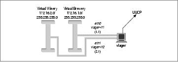
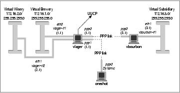
Appendix A. Example Network:The Virtual Brewery
Throughout this book we've used the following example that is a little less complex than Groucho Marx
University and may be closer to the tasks you will actually encounter.
The Virtual Brewery is a small company that brews, as the name suggests, virtual beer. To manage their
business more efficiently, the virtual brewers want to network their computers, which all happen to be PCs
running the brightest and shiniest production Linux kernel. Figure A−1 shows the network configuration.
On the same floor, just across the hall, there's the Virtual Winery, which works closely with the brewery. The
vintners run an Ethernet of their own. Quite naturally, the two companies want to link their networks once
they are operational. As a first step, they want to set up a gateway host that forwards datagrams between the
two subnets. Later, they also want to have a UUCP link to the outside world, through which they exchange
mail and news. In the long run, they also want to set up PPP connections to connect to offsite locations and to
the Internet.
The Virtual Brewery and the Virtual Winery each have a class C subnet of the Brewery's class B network,
and gateway to each other via the host vlager, which also supports the UUCP connection. Figure A−2 shows
the configuration.
Figure A−1. The Virtual Brewery and Virtual Winery subnets
Figure A−2. The Virtual Brewery Network
Appendix A. Example Network:The Virtual Brewery
471
A.1. Connecting the Virtual Subsidiary Network
The Virtual Brewery grows and opens a branch in another city. The subsidiary runs an Ethernet of its own
using the IP network number 172.16.3.0, which is subnet 3 of the Brewery's class B network. The host
vlager acts as the gateway for the Brewery network and will support the PPP link; its peer at the new branch
is called vbourbon and has an IP address of 172.16.3.1. This network is illustrated in Figure A−2.
A.1. Connecting the Virtual Subsidiary Network
472
Appendix B. Useful Cable Configurations
If you wish to connect two computers together and you don't have an Ethernet network, you will need either a
serial null modem cable, or a PLIP parallel cable.
These cables can be bought off the shelf, but are much cheaper and fairly simple to make yourself.
Appendix B. Useful Cable Configurations
473
B.1. A PLIP Parallel Cable
To make a parallel cable to use for PLIP, you will need two 25−pin connectors (called DB−25) and a cable
with at least eleven conductors. The cable must not be any longer than 15 meters (50 feet). The cable may or
may not have a shield, but if you are building a long cable, it is probably a good idea to have one.
If you look at the connector, you should be able to read tiny numbers at the base of each pinfrom 1 for the
pin at the top left (if you hold the broader side up) to 25 for the pin at the bottom right. For the null printer
cable, you have to connect the following pins of both connectors with each other, as shown in Figure B−1.
All remaining pins remain unconnected. If the cable is shielded, the shield should be connected to the
DB−25's metallic shell on just one end.
B.1. A PLIP Parallel Cable
474
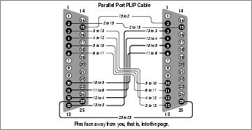
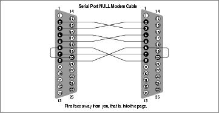
B.2. A Serial NULL Modem Cable
A serial null modem cable will work for both SLIP and PPP. Again, you will need two DB−25 connectors.
This time your cable requires only eight conductors.
You may have seen other NULL modem cable designs, but this one allows you to use hardware flow
controlwhich is far superior to XON/XOFF flow controlor none at all. The conductor configuration is
shown in Figure B−2:
Again, if you have a shield, you should connect it to the first pin at one end only.
Figure B−1. Parallel PLIP cable
Figure B−2. Serial NULL−Modem cable
B.2. A Serial NULL Modem Cable
475
Appendix C. Linux Network Administrator's Guide,
Second Edition Copyright Information
Copyright © 1993 Olaf Kirch Copyright © 2000 Terry Dawson Copyright on O'Reilly printed version ©
2000 O'Reilly & Associates
The online version of this book, which at this time of printing contains exactly the same text as the O'Reilly
printed version, is available under the GNU FDL. Rights to reprint the document under the FDL include the
right to print and distribute printed copies of the online version. Rights to copy the O'Reilly printed version
are reserved. You can find the online copy of the license at
http://www.oreilly.com/catalog/linag/licenseinfo.html. The book is available at
http://www.linuxdoc.org/LDP/nag/nag.html and http://www.oreilly.com/catalog/linag/, and may be reposted
by others at other locations.
Permission is granted to copy, print, distribute, and modify the online document under the terms of the GNU
Free Documentation License, Version 1.1, or any later version published by the Free Software Foundation;
with the Invariant Sections being the Acknowledgments (in the Preface and Appendix C." Further
acknowledgments can be added outside the Invariant Section. The Front−Cover Text must read:
Linux Network Administrator's Guide
by Olaf Kirch and Terry Dawson
Copyright © 1993 Olaf Kirch
Copyright © 2000 Terry Dawson
Copyright on O'Reilly printed version © 2000 O'Reilly & Associates
The following is a copy of the GNU Free Documentation License, which is also at
http://www.gnu.org/copyleft/fdl.html.
Version 1.1, March 2000
Copyright © 2000 Free Software Foundation, Inc.
59 Temple Place, Suite 330, Boston, MA 02111−1307 USA
Everyone is permitted to copy and distribute verbatim copies
of this license document, but changing it is not allowed.
Appendix C. Linux Network Administrator's Guide, Second Edition Copyright Information
476
C.1. 0. Preamble
The purpose of this License is to make a manual, textbook, or other written document "free" in the sense of
freedom: to assure everyone the effective freedom to copy and redistribute it, with or without modifying it,
either commercially or noncommercially. Secondarily, this License preserves for the author and publisher a
way to get credit for their work, while not being considered responsible for modifications made by others.
This License is a kind of "copyleft," which means that derivative works of the document must themselves be
free in the same sense. It complements the GNU General Public License, which is a copyleft license designed
for free software.
We have designed this License in order to use it for manuals for free software, because free software needs
free documentation: a free program should come with manuals providing the same freedoms that the software
does. But this License is not limited to software manuals; it can be used for any textual work, regardless of
subject matter or whether it is published as a printed book. We recommend this License principally for works
whose purpose is instruction or reference.
C.1. 0. Preamble
477
C.2. 1. Applicability and Definitions
This License applies to any manual or other work that contains a notice placed by the copyright holder saying
it can be distributed under the terms of this License. The "Document," below, refers to any such manual or
work. Any member of the public is a licensee, and is addressed as "you."
A "Modified Version" of the Document means any work containing the Document or a portion of it, either
copied verbatim, or with modifications and/or translated into another language.
A "Secondary Section" is a named appendix or a front−matter section of the Document that deals exclusively
with the relationship of the publishers or authors of the Document to the Document's overall subject (or to
related matters) and contains nothing that could fall directly within that overall subject. (For example, if the
Document is in part a textbook of mathematics, a Secondary Section may not explain any mathematics.) The
relationship could be a matter of historical connection with the subject or with related matters, or of legal,
commercial, philosophical, ethical or political position regarding them.
The "Invariant Sections" are certain Secondary Sections whose titles are designated, as being those of
Invariant Sections, in the notice that says that the Document is released under this License.
The "Cover Texts" are certain short passages of text that are listed, as Front−Cover Texts or Back−Cover
Texts, in the notice that says that the Document is released under this License.
A "Transparent" copy of the Document means a machine−readable copy, represented in a format whose
specification is available to the general public, whose contents can be viewed and edited directly and
straightforwardly with generic text editors or (for images composed of pixels) generic paint programs or (for
drawings) some widely available drawing editor, and that is suitable for input to text formatters or for
automatic translation to a variety of formats suitable for input to text formatters. A copy made in an otherwise
Transparent file format whose markup has been designed to thwart or discourage subsequent modification by
readers is not Transparent. A copy that is not "Transparent" is called "Opaque."
Examples of suitable formats for Transparent copies include plain ASCII without markup, Texinfo input
format, LaTeX input format, SGML or XML using a publicly available DTD, and standard−conforming
simple HTML designed for human modification. Opaque formats include PostScript, PDF, proprietary
formats that can be read and edited only by proprietary word processors, SGML or XML for which the DTD
and/or processing tools are not generally available, and the machine−generated HTML produced by some
word processors for output purposes only.
The "Title Page" means, for a printed book, the title page itself, plus such following pages as are needed to
hold, legibly, the material this License requires to appear in the title page. For works in formats that do not
have any title page as such, "Title Page" means the text near the most prominent appearance of the work's
title, preceding the beginning of the body of the text.
C.2. 1. Applicability and Definitions
478
C.3. 2. Verbatim Copying
You may copy and distribute the Document in any medium, either commercially or noncommercially,
provided that this License, the copyright notices, and the license notice saying this License applies to the
Document are reproduced in all copies, and that you add no other conditions whatsoever to those of this
License. You may not use technical measures to obstruct or control the reading or further copying of the
copies you make or distribute. However, you may accept compensation in exchange for copies. If you
distribute a large enough number of copies you must also follow the conditions in section 3.
You may also lend copies, under the same conditions stated above, and you may publicly display copies.
C.3. 2. Verbatim Copying
479
C.4. 3. Copying in Quantity
If you publish printed copies of the Document numbering more than 100, and the Document's license notice
requires Cover Texts, you must enclose the copies in covers that carry, clearly and legibly, all these Cover
Texts: Front−Cover Texts on the front cover, and Back−Cover Texts on the back cover. Both covers must
also clearly and legibly identify you as the publisher of these copies. The front cover must present the full
title with all words of the title equally prominent and visible. You may add other material on the covers in
addition. Copying with changes limited to the covers, as long as they preserve the title of the Document and
satisfy these conditions, can be treated as verbatim copying in other respects.
If the required texts for either cover are too voluminous to fit legibly, you should put the first ones listed (as
many as fit reasonably) on the actual cover, and continue the rest onto adjacent pages.
If you publish or distribute Opaque copies of the Document numbering more than 100, you must either
include a machine−readable Transparent copy along with each Opaque copy, or state in or with each Opaque
copy a publicly−accessible computer−network location containing a complete Transparent copy of the
Document, free of added material, which the general network−using public has access to download
anonymously at no charge using public−standard network protocols. If you use the latter option, you must
take reasonably prudent steps, when you begin distribution of Opaque copies in quantity, to ensure that this
Transparent copy will remain thus accessible at the stated location until at least one year after the last time
you distribute an Opaque copy (directly or through your agents or retailers) of that edition to the public.
It is requested, but not required, that you contact the authors of the Document well before redistributing any
large number of copies, to give them a chance to provide you with an updated version of the Document.
C.4. 3. Copying in Quantity
480
C.5. 4. Modifications
You may copy and distribute a Modified Version of the Document under the conditions of sections 2 and 3
above, provided that you release the Modified Version under precisely this License, with the Modified
Version filling the role of the Document, thus licensing distribution and modification of the Modified Version
to whoever possesses a copy of it. In addition, you must do these things in the Modified Version:
Use in the Title Page (and on the covers, if any) a title distinct from that of the Document, and from
A.
those of previous versions (which should, if there were any, be listed in the History section of the
Document). You may use the same title as a previous version if the original publisher of that version
gives permission.
List on the Title Page, as authors, one or more persons or entities responsible for authorship of the
B.
modifications in the Modified Version, together with at least five of the principal authors of the
Document (all of its principal authors, if it has less than five).
State on the Title page the name of the publisher of the Modified Version, as the publisher.
C.
Preserve all the copyright notices of the Document.
D.
Add an appropriate copyright notice for your modifications adjacent to the other copyright notices.
E.
Include, immediately after the copyright notices, a license notice giving the public permission to use
F.
the Modified Version under the terms of this License, in the form shown in the Addendum below.
Preserve in that license notice the full lists of Invariant Sections and required Cover Texts given in
G.
the Document's license notice.
Include an unaltered copy of this License.
H.
I. Preserve the section entitled "History," and its title, and add to it an item stating at least the title, year,
new authors, and publisher of the Modified Version as given on the Title Page. If there is no section
entitled "History" in the Document, create one stating the title, year, authors, and publisher of the
Document as given on its Title Page, then add an item describing the Modified Version as stated in
the previous sentence.
J. Preserve the network location, if any, given in the Document for public access to a Transparent copy
of the Document, and likewise the network locations given in the Document for previous versions it
was based on. These may be placed in the "History" section. You may omit a network location for a
work that was published at least four years before the Document itself, or if the original publisher of
the version it refers to gives permission.
In any section entitled "Acknowledgements" or "Dedications," preserve the section's title, and
K.
preserve in the section all the substance and tone of each of the contributor acknowledgements and/or
dedications given therein.
Preserve all the Invariant Sections of the Document, unaltered in their text and in their titles. Section
L.
numbers or the equivalent are not considered part of the section titles.
M. Delete any section entitled "Endorsements." Such a section may not be included in the Modified
Version.
Do not retitle any existing section as "Endorsements" or to conflict in title with any Invariant Section.
N.
If the Modified Version includes new front−matter sections or appendices that qualify as Secondary Sections
and contain no material copied from the Document, you may at your option designate some or all of these
sections as invariant. To do this, add their titles to the list of Invariant Sections in the Modified Version's
license notice. These titles must be distinct from any other section titles.
You may add a section entitled "Endorsements," provided it contains nothing but endorsements of your
Modified Version by various partiesfor example, statements of peer review or that the text has been
approved by an organization as the authoritative definition of a standard.
C.5. 4. Modifications
481
Linux Network Administrators Guide
You may add a passage of up to five words as a Front−Cover Text, and a passage of up to 25 words as a
Back−Cover Text, to the end of the list of Cover Texts in the Modified Version. Only one passage of
Front−Cover Text and one of Back−Cover Text may be added by (or through arrangements made by) any one
entity. If the Document already includes a cover text for the same cover, previously added by you or by
arrangement made by the same entity you are acting on behalf of, you may not add another; but you may
replace the old one, on explicit permission from the previous publisher that added the old one.
The author(s) and publisher(s) of the Document do not by this License give permission to use their names for
publicity for or to assert or imply endorsement of any Modified Version.
C.5. 4. Modifications
482
C.6. 5. Combining Documents
You may combine the Document with other documents released under this License, under the terms defined
in section 4 above for modified versions, provided that you include in the combination all of the Invariant
Sections of all of the original documents, unmodified, and list them all as Invariant Sections of your
combined work in its license notice.
The combined work need only contain one copy of this License, and multiple identical Invariant Sections
may be replaced with a single copy. If there are multiple Invariant Sections with the same name but different
contents, make the title of each such section unique by adding at the end of it, in parentheses, the name of the
original author or publisher of that section if known, or else a unique number. Make the same adjustment to
the section titles in the list of Invariant Sections in the license notice of the combined work.
In the combination, you must combine any sections entitled "History" in the various original documents,
forming one section entitled "History"; likewise combine any sections entitled "Acknowledgements," and any
sections entitled "Dedications." You must delete all sections entitled "Endorsements."
C.6. 5. Combining Documents
483
C.7. 6. Collections of Documents
You may make a collection consisting of the Document and other documents released under this License, and
replace the individual copies of this License in the various documents with a single copy that is included in
the collection, provided that you follow the rules of this License for verbatim copying of each of the
documents in all other respects.
You may extract a single document from such a collection, and distribute it individually under this License,
provided you insert a copy of this License into the extracted document, and follow this License in all other
respects regarding verbatim copying of that document.
C.7. 6. Collections of Documents
484
C.8. 7. Aggregation with Independent Works
A compilation of the Document or its derivatives with other separate and independent documents or works, in
or on a volume of a storage or distribution medium, does not as a whole count as a Modified Version of the
Document, provided no compilation copyright is claimed for the compilation. Such a compilation is called an
"aggregate," and this License does not apply to the other self−contained works thus compiled with the
Document, on account of their being thus compiled, if they are not themselves derivative works of the
Document.
If the Cover Text requirement of section 3 is applicable to these copies of the Document, then if the
Document is less than one quarter of the entire aggregate, the Document's Cover Texts may be placed on
covers that surround only the Document within the aggregate. Otherwise they must appear on covers around
the whole aggregate.
C.8. 7. Aggregation with Independent Works
485
C.9. 8. Translation
Translation is considered a kind of modification, so you may distribute translations of the Document under
the terms of section 4. Replacing Invariant Sections with translations requires special permission from their
copyright holders, but you may include translations of some or all Invariant Sections in addition to the
original versions of these Invariant Sections. You may include a translation of this License provided that you
also include the original English version of this License. In case of a disagreement between the translation
and the original English version of this License, the original English version will prevail.
C.9. 8. Translation
486
C.10. 9. Termination
You may not copy, modify, sublicense, or distribute the Document except as expressly provided for under
this License. Any other attempt to copy, modify, sublicense or distribute the Document is void, and will
automatically terminate your rights under this License. However, parties who have received copies, or rights,
from you under this License will not have their licenses terminated so long as such parties remain in full
compliance.
C.10. 9. Termination
487
C.11. 10. Future Revisions of this License
The Free Software Foundation may publish new, revised versions of the GNU Free Documentation License
from time to time. Such new versions will be similar in spirit to the present version, but may differ in detail to
address new problems or concerns. See http://www.gnu.org/copyleft/.
Each version of the License is given a distinguishing version number. If the Document specifies that a
particular numbered version of this License "or any later version" applies to it, you have the option of
following the terms and conditions either of that specified version or of any later version that has been
published (not as a draft) by the Free Software Foundation. If the Document does not specify a version
number of this License, you may choose any version ever published (not as a draft) by the Free Software
Foundation.
C.11. 10. Future Revisions of this License
488
Appendix D. SAGE: The SystemAdministrators
Guild
If you are not getting everything you need from posting to comp.os.linux.* groups and reading
documentation, maybe it's time to consider joining SAGE, the System Administrators Guild, sponsored by
USENIX. The main goal of SAGE is to advance system administration as a profession. SAGE brings together
system and network administrators to foster professional and technical development, share problems and
solutions, and communicate with users, management, and vendors on system administration topics.
Current SAGE initiatives include:
Co−sponsoring the highly successful annual System Administration Conferences (LISA) with
•
USENIX.
Publishing
•
Job Descriptions for System Administrators, edited by Tina Darmohray, the first in a
series of very practical booklets and resource guides covering system administration issues and
techniques.
Creating an archive site, ftp.sage.usenix.org, for papers from the System Administration Conferences
•
and sysadmin−related documentation.
Establishing working groups in areas important to system administrators, such as jobs, publications,
•
policies, electronic information distribution, education, vendors, and standards.
To learn more about the USENIX Association and its Special Technical Group, SAGE, contact the USENIX
Association office at (510) 528−8649 in the U.S., or by email to office@usenix.org. To receive information
electronically, contact info@usenix.org. Annual SAGE membership is $25 (you must also be a member of
USENIX). Members enjoy free subscriptions to login: and Computing Systems, a quarterly refereed
technical journal; discounts on conference and symposia registration; and savings on SAGE publication
purchases and other services.
Appendix D. SAGE: The SystemAdministrators Guild
489
Document Outline